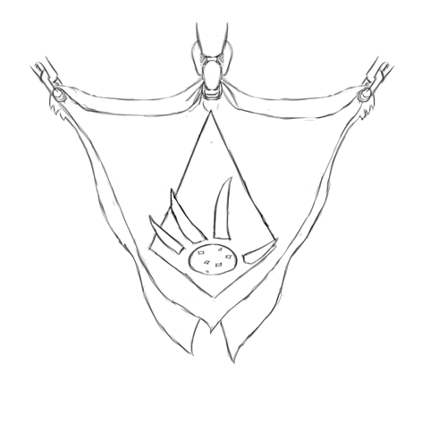

About the Game

This is an early alpha of an open-source fantasy RPG. It's hosted on GitHub, and licensed under the Creative Commons Attribution-NonCommercial 4.0 International (CC BY-NC 4.0) license.
We're working on it. We've got a lot of the mechanics in a fairly good place, at least for what we want to do, and most of the "core" player options are present. Now we just need to take all the long bullet-lists and convert them to full English text. And also write in all the background stuff that's in my (the lead author's) head but that has never been written down anywhere. And make sure all the revisions and rule-versions are consistent. And also add more player content and options.
Well… we're working on it.
Changes since last time:
- Removed Disable Device, because we've never used it.
- Fleshed out the Monastery sample adventure a fair bit.
- Initial import for CV's Wolf-in-Wool's Flock, AKA the Secret Army, and his Stormsword's Rest.
- Stormsword's Rest has been waiting... how many years? I'm so sorry.
- Moved to a whole different site-generator (mdbook), which loses us a few things, but gains us search and a great mobile layout.
- Broke the Races and Other Nations chapters into sub-chapters (that's a neat feature we get for almost-free with mdbook).
To-Do
- revise items-and-down for new attack skills.
- Edit the example section to match the last like 3 revisions of changes, god.
- Update the Ratfolk entry to flow a little more like the Elven one.
- Lots more player options!
- I did the classes and powers and backgrounds that where interesting to me, but I really need to do samples for others too.
- More Items! Especially more magical items!
- Change Maneuvers to maybe Feats as the name for martial powers.
- Convert “walk” and “run” movement to “base” and “full”, respectively.
- We need massive editing. I’ve been resisting, but it’s large enough that we can’t use it without some major clean-up.
- Rework the intro sections.
- Update the “bestiary” part, since it’s more-than-two rules revisions out of date.
- Also, tag the things in it with a difficulty hint.
- And add Sinestro’s Cold Shadows and Sauce’s Whisps.
- Fill in the Raptor's Protectorate and the Shaded-Sea People, dear god.
- Add examples for all the skills.
- Add optional rules for ranking profession skills by wealth?
- Copy over a bunch of the finalized names, dates and units.
- fill in the stubs in travelling and common hazards.
- Fill in the Secrets section.
- Finish updating the From-the-Authors section,
- including renaming the file.
- Right now, the Basic Rules chapter is... fucked up and mostly asides.
- And right now the definition of "basic proficiency" appears to be in a side-bar, which isn't ideal.
- Write the rules for recovering raw materials; I'm thinking scrounging, "gathering professions", and breaking things down.
- And fix the time-table for producing recipes; it's out of whack right now.
- Added CV's banners!
Editing Notes
- I need to go through and use the term Tag consistently. And then also re-work most entries to use Tags.
- Likewise, use “Check” consistently, as opposed to “Test”.
- I’m trying to use “the character” or “a character” consistently, to emphasize that players and NPCs use the same rules. I need to go back and edit this to be the case.
- Sometimes this results in tortured language, I might need to reevaluate.
- I’m trying to use “they” in cases where gender is unknown or unspecified. I really hate the “pick an arbitrary gender” writing style that many d20 systems use.
- I’d like to use lower-case for race names (“orc” and “elf” instead of “Orc” and “Elf.” I was using caps for a long while tho, so much editing will be required.)
- I give up, I'm going back to caps-ing race names.
- It’s spelled “orc” by the way.
- At least for now, I’ve decided on just calling it magic. I wanted to use something a little fancier, like essence, but I couldn’t come up with something I wanted to commit to. I’m using the terms mage and spell, psion and sleight, and priest and boon. I may revisit this.
- I’ve specifically avoided using “arcane” as a description, because it annoys me that a generation of grognards are growing up who think that that word means “knowledge magic” and don’t realize that it actually just means “difficult secret.”
- Note: I need to use Emerald Plane, Ruby Plane and Worldspine consistently.
- We use colored highlighting! We put sidebars and clarifications in teal, FIXME notes in yellow, examples in purple, playtester questions in salmon, and GM Guidance in green.
- There may not be enough difference between GM Guidance and most Sidebars to give them different colors.
- Also, the two GM Guidance blocks so far are really long, so treating them like a sidebar might not work.
- ... does anyone know of a gender-neutral replacement for words like "craftsman" and "Swordsman" that won't also result in tortured language?
- I think I'm going to start using a "bold-at-definition, italics-at-reference" style for keywords.
- I'll need to go back and reformat... a christing lot.
- For now, we're using the term Movement Mode. We might change it to Movement later.
Contributors
- Gleech: lead author
- Sauce: a list of powers, GMing for a test, A sample module (incl. Wisps).
- SeaVea: fort design, feedback on armor and weapons, new drake history. Milestone system. Large weapon rework. The Terranaut Dwarves, their cave salamanders, and lots of help rewriting the Dwarves. And further work on weapons (crossbow designs). The Old Injury trait. Lots of artwork that I will eventually post to the site. Playing a Healer section. A couple of military racial items.
- Special credit to CV for the banners that have now (finally!) been posted! They're amazing!
- Also Stormsword's Rest and the Secret Army / Wolf-in-Wool's Flock.
- King K: the Gnomes, Drugs, help with rep networks. A map! The Mycenaean Dwarves. The Congenital Defect trait. The Knights of the White Tusk. Proficiencies for Athletics.
- Sinestro: stealth powers, giving the barter system a good exercise, reworking the Orcs. GMing and testing, this website! The Certans (they're rad, thanks!) The Brightfeathers.
- Misandry: helping to fill out the Shamblers.
- Runic: clever uses for fireballs. Lobsters!
Introduction
Welcome
Welcome to Renaissance, an open-source D%-based fantasy role-playing game focusing on themes of exploration, intrigue and horror!
About the Setting
The setting is an attempt to bring a little bit of Roddenberry-esque multi-cultural optimism to fantasy role-playing — a genre that very often centers around "good" races that look like humans fighting "evil" races that don't. There might be a good reason that most ancient myths cast strange and wonderful creatures as the villains, but modern story-tellers don't have to be constrained by those conventions. We'd rather tell stories about what can happen if a society learns to embrace all those different races and cultures in a way that promotes the dignity and prosperity of all of its members; thus, the setting focuses on the Commonwealth, a just, stable and prosperous society that has includes members of countless races and cultures.
This desire for optimism also drives us to look onward to the horizon rather than backward to the past. Renaissance isn't the story of a world struggling to recover from a global cataclysm or picking through the ruins of a fallen empire; instead, it’s the story of a prosperous people at the beginning of a renaissance — or, as one contributor pointed out, a “Naissance,” since the present moment is the first time the Emerald Plane has seen such a civilization. Their major concerns aren't merely surviving a brutal world or looting ancient ruins; they're the unstable states and hostile empires on their borders, the machinations of powerful spirits with unknown (and possibly unknowable) agendas, and the strange, wondrous and dangerous things they might discover out beyond their frontiers. (If we were pulled into "fantasy-horror" as a consequence of the elements we borrowed from Eclipse Phase, it has turned out to be a rewarding genre to work in.)
We also want the setting to feel like a plausible state for a plausible world. This means that it needs to be historically plausible, at least by comparison to some of the other highly eclectic RPG settings out there. At the same time, we don’t want to the various races and cultures in our game to line up too closely with any existing culture or region from the real world. We don't want to present players with a slightly-rebranded medieval Europe, placed incongruously next to a rebranded shogunate Japan and a rebranded New Kingdom Egypt; instead, we want to drop players into a living, plausible, consistent, alien world.
About the Rule-System
Role-playing as a hobby combines story- and character-building creativity with rule-driven strategy, with some players leaning more towards one than the other. As a game system, Renaissance is intended to sit somewhere in the middle: we want to provide clear enough rules that players know what they can and cannot do, so that strategically-minded players can move five squares, attack with a +20 modifier and do 2d10DV — but that is also open-ended and flexible enough that creatively- or cinematically-minded players can climb the walls of a narrow alley, abseil down a well, kick off a wall to leap over an opponent, buy their way out of jail, use a their fireball power to keep themselves warm in the frozen north, shoot a fleeing target in the leg or break an opponent’s fingers so that they cannot wield a weapon, all achieved ad-hoc, without requiring complex rules or (god forbid!) feat chains.
In order to do this, we've tried to put checks at the center of the system, and we've used skill and attribute checks for as much as we possibly can. Skills and checks give GMs and players a clear picture for how to decide whether a character succeeds or fails at a given task, and how to resolve contests; but they do not enumerate exactly what characters can do, and that's by design. The intent is that a character can use their Survival skill to do anything that a skilled survivalist could do — a category that we have deliberately left open to player creativity (even if we do have some specific examples). (One early tester described the game as "crunchy, but not mechanical," and that's exactly the goal!)
We also want to leave room for GMs and players to add new content. In order to do this, we've tried to leave plenty of room in the setting for GMs and players to slip in their own cultures, locations, factions and items. Once again, there are plenty of setting details that we've left under-specified, by design. We've also broken the rules and existing content up into well-separated components, each making minimal assumptions about what other components say and do; this is to enable GMs and players to introduce new weapons, items, classes and powers, without having to worry (too much) about how thair new contact interacts (or conflicts) with existing content. (Several of the authors are software developers, so we naturally think in terms of separation of responsibility, encapsulation, and dependancy management.)
While we leave GMing style up to you (of course!), we do feel that Renaissance works does not work well with an overly adversarial GMing style. Because the system is so under-specified, players will need to work with GMs in order to do pretty much anything. This means that GMs need to be able to fair with players, and to be willing to enable them when they want to do things that it is reasonable for their characters to do. A GM who doesn't work with their players to help them do what they want to do may leave them with the experience of fighting a bad text-adventure game, unsure of what they even could do, or what will be required, or how to announce it to the GM. (And good players need to trust GMs to be fair arbiters, and to work with them proactively and early so that GMs can run the game efficiently.)
However, because Renaissance incorporates challenging mechanics like a stress system and progressive wound and trauma systems, it generally is not well suited to groups that like "power trip"-style gaming. This is especially true for horror games; horror thrives on limiting the agency of players, at least a little bit. (It's pretty much impossible for a power-trip game to be scary.)
About Adventures
The game is designed to focus on intrigue, exploration and horror. We'd like to support adventures that draw from inspirations like old-school Star Trek, The X-Files or the Twilight Zone; or from Thomas Ligotti short-stories or Sherlock Holmes mysteries; or that play like modern Call of Cthulhu games. Characters will spend time investigating mysteries, researching and analyzing clues, sneaking into strongholds, working social contacts, participating in palace intrigues, extorting or eliminating powerful rulers, and meddling in the affairs of powerful, strange, and mysterious forces.
That's why we've surrounded the Commonwealth with unstable states, hostile powers, and complex politics; and it's why we've given players access to a newly-discovered continent whose southern reaches run off the edge of the map; and it's why we've included powerful Great Spirits whose goals, powers and natures are not entirely known — and may be unknowable.
Optimism and horror can conflict a bit as themes, but the consequences of that conflict can be interesting. One way that it can play out, in the words of one tester, is as a "beatable Cthulhu." While players can encounter strange, terrible and vast forces, they can often confront them if they cooperate — or they can at least make a positive difference.
About the Book
Loosely, the "book" — this website — is broken into three parts.
The first part consists of an "in-world" description of the setting; more than the other chapters, this one is written from the perspective of someone "inside" the world. That means that we've tried to avoid referencing things that someone on the Emerald Plane wouldn't know — for example, we haven't talked about the planet's orbit, even though that's something we thought at least a little about when designing its seasons.
The second part — starting with Basic Rules — contains the mechanical rules of the game. This describes the basics of a check — Renaissance is a skill-check-based game — then it describes the rules for combat, and several of the game's other "systems". Finally, it describes how a character is represented, how characters are built, and lists the various "character options"—the races, backgrounds and features players can pick from when building their character.
The third part — starting with The Five Roles — contains guides, examples and optional rules. The rules from the second part may completely describe how the game is supposed to work mechanically, but they don't really explain how they're all supposed to fit together — they don't explain what a good character is like, what a campaign is like, what kinds of challenges you're supposed to face, and so on. In this section, we fill in some of those details. This chapter is written far more informally than the other two; here, we the developers are talking to you the readers about how we designed the game to work, so that you can make intelligent decisions about how to build characters, write adventures, and run your game.
About Terminology
As a note, in the first part of the text, we've assumed that most of the text is being translated from Commonwealth Standard to English; therefore, we've tried to use names and terms the way a Commonwealth Standard speaker would. We've also made some use of the in-world units "demarc" and "stride". The demarc and stride are old units of distance first used in the Empire of Man, and still used throughout much of the world; the demarc (abbreciated dc) is about 2.6 miles or about 4.2 kilometers, and the stride (abbreviated sd) is about 30 inches or 75 cm. Most of the rules in the rules section use metric units.
Background
The Known World
The Commonwealth and its neighbors are located on the Emerald and Ruby Planes. The Emerald Plane is a large island continent, about 860 demarc across [about 2236 miles, or 3612km]. A great mountain range, the Worldspine Mountains, runs up the middle of it; this range is wide, but its peaks are low, and only its central peaks are above the snowline. In the east, there is a large inland sea, the glass sea; the Kingdoms of Men are on the northern peninsula, while the Goblin Empire is on the south. In the southwest, near the coast, there is a smaller range, the Seaward Peaks; running along the southern edge, stretching between the Seaward Peaks and the Worldspine Mountain, there is warm, high steppe-land; the Ash Elves, members of the Shaded Sea People, hold (most of) these steppes.
Stretching from the western edge of the Glass Sea, over the Worldspine, running north along the Shade Elves territory, reaching all the way to the western edge, and jumping to the Haven Isles beyond, is the Commonwealth.
The Ruby Plane lies to the south of the Emerald Plane, separated from it by the Sea of Strife (which is around 175dc across). A great mountain range runs through the center of the Ruby Plane; jungles cover the west, and much of the east, but there are deserts and a rocky, arid lowland in the northeast. The Raptor Protectorate controls much of the jungles and mountains, while the Goblin Empire has conquered much of the arid land in the northeast; scattered other cultures lay between the two. Much of the Ruby Plane remains unexplored; it extends well south, past the Raptor's southern borders.
We have generally assumed a fairly Earth-like world. It is very slightly larger, is very slightly further from a very slightly larger star, and has a slightly longer orbital period of roughly 371 days — but has roughly the same surface gravity, axial tilt, and environment.
The world has 3 natural satellites — one is a large, bright, white-grey body similar to Luna (possibly carved from the primordial planet by an impact), while two are smaller, irregular, darker objects (likely captured bodies), one a dark grey and one a slightly rusty red. The largest is the Light Moon, and is often treated as a lesser partner to the sun in myth and metaphor; the other two are Ash Moon and Rust Moon, and are often associated with decay.
The system also includes various planets, which the locals regard as wandering stars; their word for them, much like ours, has its root in the word for "wanderer." Four of these wanderers are commonly known; like our solar-system, there are likely more, too dull or distant to be visible to the naked eye.
Dates will usually be given using the Commonwealth's calendar, which is based off of the solar year (like the Gregorian calendar in use on Earth). It starts in the year that the New Charter was signed, founding the civilization that would become the Commonwealth. This occurred 830 years ago, so it's presently CY 830.
Some cultures use a lunar calendar, typically based on the largest satellite. Much like on Earth, the lunar and solar calendars don't exactly line up; there are 11 lunar months (each 33 days long) and 9 days to a solar year.
Distances are often given in an old Empire-of-Man unit, the demarc (abbreviated dc); it's based on the distance from the center of city of Hanman to the furthest gate in its furthest wall. A demarc is about 2.6 miles, or about 4.2 kilometers. Another Empire-of-Man unit, the stride (sd), is used for smaller distances; it is, as the name implies, based on the average human stride. A stride is about 30 inches, or about 75 centimeters; there are about 5600 strides to a demarc.
Their day is slightly longer than ours, but the Commonwealth, at least, also divide it into 24 equal units; we pretty much just call those "hours."
History in Brief
The Empire of Man
The Emerald Plane has long been populated by numerous intelligent races — some living in only one corner of it, others spread from coast to coast. Much of the early history of these people is little more than legend now.
Humans are widely believed to be the first city-builders, founding the first cities on the Golden Peninsula (in the present-day Kingdoms of Men) at some point in the distant past. Other cultures followed suit, founding cities and developing civilizations.
More than fourteen hundred years ago (in CY -578) Humans founded the city of Hanman in the Golden Peninsula. It was one of several human cities that grew wealthy and powerful, claiming the territories around them. Hanman was one of the three city-states that united (in CY -385) to form the Empire of Man. The Empire of Man spread out from the Golden Peninsula, reaching west towars the Worldspine, well into the forrested inland.
The Empire founded colonies throughout its conquered territories, granting swaaths of land to local prominent citizens to settle, develop, and govern; many of these colonies prospered. But the Empire was run for the benefit of the Three Cities, at the expense of its other posessions; it was also prone to factionalism and strife, as the Three Cities (and their leading citizens) jockeyed for power and influence. As its distant territories grew and prospered, they began to chafe under the Three Cities' rule.
Rebellion
The Drake's Peaks separate the Golden Peninsula from the rest of the Emerald Plane; thirty demarc west of those peaks, in the inland forest, roughly 130 years after the area had been conquered, the dragon Karrach began to conspire with local prominant citizens to throw off the Empire's rule. They waited for an opportune moment; in CY -227, it came. The Succession of the eigth Emperror Nallos Soriollon was hotly contested, and created a disruption of Imperial leadership; Karrach launched his rebellion, claiming a broad swath of the territory to the west of the Drake's Peaks for himself.
Karrach did not claim all of the lands that the Empire had conquered; former Imperial possessions to the south and west where cut off from the Three Cities and Imperial power. These regions, equipped with their own nobility and institutions, continued to prosper and develop.
In CY -148, more than 80dc southwest of Karrach's domain, a Gnollish tribe sought the aide of the human city of Autumn's Folk against a powerful confederation of their enemies. The humans agreed; their new Gnollish allies where granted a charter to found a manor in some nearby land, in exchange for their martial aid; this charter would come to be called the Old Charter, and formed the template for a new and vital civilization.
The people of Autumn's Reach prospered, along with their new Gnollish neighbors. The charter granted to the Gnolls provided a kind of template; more manors where founded, by Humans, Gnolls and Halflings. Some of these manors became city-centers in their own right. The Old Charter proved an inadequate framework for the growing civilization; 148 years after the signing of the Old Charter, the New Charter was promulgated and signed. The New Charter was designed to govern a civilization, the Commonwealth: it allowed for the collection of taxes, allowed for the funding of a militia and the construction of roads and bridges, and constructed the Commonwealth Council to administer those functions.
The Growth of the Commonwealth
Members of the Commonwealth ventured into the frontiers, founding new manors and spreading their civilization. New races where encountered; some joined the Commonwealth and where welcomed, while others wished now contact with the new civilization and where left alone — the forests of the inland Emerald Plane were vast and deep, with more than enough unclaimed land to support the Commonwealth's growth without requiring conquest or exploitation. The Commonwealth eventually reached the Worldspine Mountains and the southern coast; they also stretched to the Goblin's Peaks in the southeast, where they first encountered the Goblin Kings.
In CY 87, the Empire of Man, cut off from its distant holdings and riven power-struggles, finally collapsed.
In CY 91, the Commonwealth founded the first manors west of the Worldspine. They continued to expand west, founding a narrow thread of mannors running between the territories of the Herders and Shade Elves — eventually allying themselvs with the former, to resist the devastating mounted raids of the latter.
In CY 255, in the Human-dominated Golden Peninsula, where the Empire of Man had been born, the first High Kingship was founded; this marked the ascendency of a new power on the Emerald Plane, the Kingdoms of Men.
In the same year, the explorers and settlers from the Commonwealth first encountered the Herders, west of the Worldspine; shortly thereafter, they first encountered the Shade Elves, and began to conflict heavily with those horseback raiders. The Commonwealth allied with several of the peoples in the area — including the Herd-and-Pack alliance, an alliance of Herders and Gnolls — to resist the Shade elves; a formal treaty between the Commonwealth and Herd-and-Pack was signed in CY 349.
During and after this time, the Shade Elves and the ratfolk of the Warren Isles conflicted heavily; although the nature of it is not widely known, some manner of truce was struck between the Elves and Ratfolk in CY 398, establishing the Shaded Sea Peoples, a dangerous nation of pirates and raiders.
In CY 349, Islandhome was settled; it grew, becoming prosperous. In CY 447, the forces of the Shaded Sea laid seige to it, leading to a short but shockingly brutal occupation; the seige was broken in spring of 448.
In CY 537, Commonwealth sailors first encountered the Raptors on the north-central Ruby Plane. Explorers hailing from a Goblin Kingdom would land on the Ruby Plane a year later, in CY 538, in the far northeast of the plane. The Goblin Kings would establish a permanent settlement in CY 617, and begin their conquest of the plane from there.
In CY 611, a brutal genocide in the Eastern Kingdoms lead to an exodus of Kobolds from those lands; those settlers where welcomed in the Commonwealth, settling chiefly under the Worldspine and in the Haven Isles.
In CY 703, the Goblin's Noble Assembly established the Goblin Empire; their hope was that a stronger, centralized beaurocracy would allow them to both shore up their wounded nation, which had long fallen behind both the Commonwealth and the Kingdom of Men, and to better exploit and conquor the Ruby Plane. The Empire rapidly set about the reorganization of the Goblin's soldiery, and rapidly accelerated their conquest of the Ruby Plane.
The Compact
The Commonwealth now spread from the shores of the Glass Sea in the East to the Haven Isles in the West, and included countless, diverse peoples. The New Charter had not been designed to govern such a vast people; in CY 744, it was replaced with the Commonwealth Compact. The Compact divided the Commonwealth into provinces, allowing each a government that suited it; it also allowed the Commonwealth Council greater authority to collect taxes and duties, and to spend those moneys on a wider arrange of projects within the Commonwealth, beyond road-building and military defence; and it also established an "enumeration of freedoms" owed to every citizen of the Commonwealth. Several former allies also signed onto the Compact, being incorporated as member-provinces; these included the Dragonshire, the Herd-and-Pack Alliance, and the subterranean Clay Men.
A Brief Timeline
| Year | Event |
|---|---|
| CY -578 | Human city-state of Hanman founded |
| CY -385 | Empire of Man founded |
| CY -227 | Karrach leads local rebellion, claims land west of Drake's Peaks as his own domain. |
| CY -221 | Former-Imperial Human settlers encounter Halflings. |
| CY -163 | Former-Imperials encounter Gnolls. |
| CY -148 | Gnollish tribe seeks aid of human city of Autumn's Reach, granted charter to manor near city; later known as the Old Charter |
| CY -121 | Drakes are created. |
| CY 0 | New Charter replaces Old Charter, establishing Commonwealth Council (and the Commonwealth as such). |
| CY 87 | Empire of Man collapses |
| CY 91 | First Commonwealth manor west of the Worldspine founded. |
| CY 103 | Dwarves encountered in the cold north. |
| CY 255 | First High Kingship unites human territories on the Golden Peninsula. |
| CY 349 | The Commonwealth signs a treaty with Herd-and-Pack. |
| CY 350 | Commonwealth settles the Haven Isles. |
| CY 398 | Treaty between the Ratfolk of the Warren Isles and the Shade Elves of the Shaded Steppes creates the Shaded Sea People. |
| CY 447 | The forces of the Shaded Sea seige Islandhome. |
| CY 537 | Commonwealth encounters Raptor Protectorate. |
| CY 611 | Kobolds flee genocide in Eastern Kingdoms, settling in the Commonwealth. |
| CY 703 | The Goblin's Noble Assembly establishes the Goblin Empire, the better to pillage the Ruby Plane. |
| CY 744 | Commonwealth Compact replaces the New Charter, establishing broad funding power; Commonwealth creates more agencies. |
| The Dragonshire, the Herd-and-Pack and the Clay Men all join the Commonwealth. | |
| CY 830 | The Present Day |
The Commonwealth Today
Overview
In Commonwealth Year 830, the Commonwealth is a sophisticated, peaceful, mercantile civilization. It is far-and-away the largest and wealthiest civilization in the known world; it stretches from the shores of the King's Sea in the east to the western coast of the Emerald Plane, and to the Haven Isles beyond. All this territory is united in a prosperous web of trade, overseen by the Commonwealth Council.
The Commonwealth is broken into six provinces:
- Dragonshire Province lies in the northeast, to the west of the Kingdoms of Men. It was an independent kingdom under the (nominal) rulership of the Dragon Karrach, until it was incorporated into the Commonwealth with the Compact.
- Heartland Province is the territory to the southeast, south of the Dragonshire and west of the Goblin Empire. This is the territory where the Commonwealth was born. It is still governed as a network of manors, united by a web of charters and contracts.
- Haven Province consists of the Haven Isles, and island chain off the west coast of the Emerald Plane; the largest island is Islandhome. Haven Province has a sophisticated, tiered political structure, and is something of a hot-bed for political thought. It's also known for its warm climate, its large urban centers, its olive fields, and its brisk ocean winds.
- Herd-and-Pack Province consists of the territory of the former Herd-and-Pack Alliance, a group of Herder, Gnollish and other tribes that united to stand against the Shade Elves. Long an ally of the Commonwealth, it was incorporated as a Province with the Compact.
- Northland Province consists of the far north, both to the east and west of the Worldspine Mountains. It largely consists of the Dwarven and Orcish holds that chose to join the Commonwealth; not all of them did.
- Westward Province consists of a narrow strip of land claimed by the commonwealth, running from the Worldspine Mountain to the west coast of the Emerald Plane. It runs along the northern border of the open grasslands claimed by the Shade Elves of the Shaded sea; it sees constant raiding, and is heavily fortified.
The Commonwealth also contains several City-States — large cities that are treated as provinces unto themselves:
- South-Harbor is a major port-city built into the steep, irregular cliffs of the southern Worldspine. Besides its role as a major port, it also hosts a substantial fleet-yard for the Commonwealth Navy, and is the current seat of the Commonwealth Council.
- Crossroads actually consists of two cities, one above-ground and one below, built in the middle of the Worldspine. It is a major trade-hub, sitting at the nexus of both above- and below-ground trade routes.
- Prosperity is the largest city in Heartland Province — or it would be, if it were part of Heartland Province instead of being an independent city-state. Besides being a trade hub, Prosperity is known for its cosmopolitan population, the quality of its universities — and its unusually-elaborate government, compared to the rest of Heartland.
The Commonwealth is overseen by the Commonwealth Council. The council doesn't govern the Commonwealth — it does not make laws or prosecute criminals — but it does negotiate with other nations, make treaties, declare war, settle disputes between provinces, collect taxes and tariffs, and spend those monies on its various agencies.
Among those agencies are the Commonwealth Artisans, who maintain a network of roads, bridges, dams, and locks; the Commonwealth Patrol, who secures the vast interior; the Commonwealth Army and Navy, who defend the Commonwealth; and the Commonwealth Arbiters, who help to settle internal disputes. Because of the work of these Council Agencies, the Commonwealth is secure, stable and prosperous.
The Commonwealth is, by design, a little different than your typical fantasy nation: it is a large, prosperous, secure, just and diverse society. This means that a lot of typical fantasy adventure structures don't work: there are no bandit gangs to slay; typical "monster" races are your allies; and your society is richer and more sophisticated than any ancient ruins scattered about.
The Commonwealth's major concerns — and thus, the sources for typical adventures — are external: strange wonders that explorers uncovered at the edge of the known world; intrigues and threats brewing in neighboring nations; and the machinations of hostile Great Spirits.
Commonwealth Technology
In general, we're shooting for a level of technology roughly approximating Europe in the 1500s. Innovations like the three-field rotation, the use of horses in agriculture, the development of gunpowder and the development of the printing press occurred decades or centuries ago, and have begun to transform society. Just as importantly, they've also begun to develop very sophisticated philosophical thought — beginning to develop the ideas behind rationalism, and to contemplate the design of political systems to serve their peoples.
However, you should not assume that the Commonwealth is precisely equivalent to Europe at the beginning of the Renaissance; we'd like to incorporate ideas from other great civilizations as well!
Please also note that we aren't historians; please forgive us any minor errors. (We're always open to making our world more historically plausible, or being introduced to new, interesting ideas that we can incorporate.)
The Commonwealth is arguably the most sophisticated nation in the known world.
They have developed a number of sophisticated farming techniques, suited to the wide variety of territories that they've integrated: in the interior, this including sophisticated field rotations, differing plow designs appropriate for a wide variety of terrain, water course [i.e. aqueduct] irrigation and the use of horses in agriculture; in the southern foothills and marshes, this includes sophisticated flood-plane agriculture and planted terraces to make efficient use of water; and in the Haven Isles, it means aqueduct irrigation of vineyards and orchards. These innovations allow them to produce a large surplus of food, which in turn allows them to support a large urban populations; to support their large, professional military; and to still have a surplus for trade. (There is a very good reason that wheat is a symbol of the Commonwealth.)
The Commonwealth also boasts sophisticated artisans, enabled by a network of powerful guilds. The Commonwealth's architects, masons and carpenters have mastered a number of construction techniques, adapted from the many cultures that they've incorporated and suited to the many different regions that the Commonwealth occupies: masons in the Heartland and Dragonshire have used sophisticated arches, columns, vaulted ceilings and flying buttresses to produce awe-inspiring buildings; Northland is dotted by timber-framed homes, Dwarven dugouts and Orcish holds; the shores of the Haven Isles feature stilted homes constructed by Ratfolk; and the peaks of the Haven Isles include incredible underground cities constructed by Kobold and Shade Elven masons and excavators. The Commonwealth also boasts some of the finest steel produced in the known world, enabling them to produce everything from plows to armor at a scale and of a quality that cannot be rivaled.
The Commonwealth also has access to a rich and diverse cultures, arts, and bodies of knowledge.
Notably, the printing press was invented in Heartland Province some 83 years ago; this has led to an explosion of the written word. The Commonwealth's large and sophisticated universities are also centers of thought and learning — and cheap printed books and tracts are turning public squares, pubs and libraries into sites of political discourse and the sharing of ideas. Philosophers, thinkers and academics are pushing the bounds of ethics, natural philosophy, political philosophy, medicine, and the arts. The Commonwealth's leading thinkers have begun to develop the fundamental ideas behind rationalism, to develop sophisticated political thought, and to explore the precursors of a theory of calculus.
They have also been able to deduce that the world is round, and increasingly sophisticated and capable sailing vessels have enabled them to voyage out into the ocean to explore it — and to build increasingly prosperous webs of trade along their coasts. They have recently begun to construct large, two-masted vessels, capable of sailing great distances on the open ocean.
The Commonwealth has also developed sophisticated techniques for capturing natural sources of energy. Windmills, water-wheels and aqueducts allow the citizens of the Commonwealth to use winds and streams in agriculture and artisanry.
They are also making increasingly sophisticated use of gunpowder. Developed more than two hundred years ago, some of the earliest uses of gunpowder where awkward and dangerous; more modern uses, including fixed cannons and matchlock rifles, are far more effective, and are beginning to change the nature of warfare.
And, of course, the Commonwealth has a sophisticated understanding of magic — although the people of the Commonwealth generally view magic as another aspect of nature to understand, not something beyond the reach of natural philosophy.
Commonwealth Life, Society and Economy
The Commonwealth includes myriad different races and cultures, so the details of daily life can vary widely.
Throughout the Commonwealth (and in most of the rest of the known world), the vast majority of the population — more than 90% — are involved in producing food. They are farmers, fishers and shepherds, living in small communities throughout the countryside or sitting on the shores of rivers and lakes. Though these people are often poor, it should be noted that they are not serfs or slaves, as slavery has been abolished in the Commonwealth — unlike in some of the Kingdoms of Men, for example, or in the Goblin Empire. They often own the fields they work; when they don't, they are at least not the possession of a lord, and are free to depart.
Many of these people know little of the outside world, and may never venture more than a day’s walk from the place they were born. This situation is helped somewhat, though, because, since the signing of the Compact, the Commonwealth has increasingly funded a modest form of public education; teachers, medics, and mages travel a circuit through the scattered villages and hamlets. This means that most residents of the Commonwealth are at least literate and numerate.
Many of the small hamlets and freeholds are often dependent on nearby manors and towns, which will hosts necessary markets and artisans.
Heartland Province, the oldest province, may represent the Commonwealth's "archetypical" culture. Heartland is a decentralized web of city-states, manors, and hamlets and freeholds. Manors are, very roughly, small towns, surrounded by fields, orchards, and forests; they are typically established by a charter, which is often held by a Lord, or by some organization (like a temple, guild, or university). Manors are often self-sufficient in terms of food, and often host a few artisans as well. Nestled between manors are any number of small hamlets and freeholds, which are often interdependent with nearby manors. Manors, in turn, may have obligations to nearby city-states: city-states host large markets, where their food can be sold, and goods can be purchased; they are the homes of universities, guilds, and governments; and they are often walled, and strongholds of local defense.
The cultures and traditions of these city-states and manors can vary incredibly widely — the flexibility of the system is one of its benefits. While the most common culture is one that is distantly derived from that carried west by Humans from the Empire of Man — significantly changed by the intervening centuries and contact with other races and cultures — many other races and cultures are also represented by city-states and manors.
Other provinces can vary widely. Westward, for example, is similar, since it was founded by settlers travelling from Heartland; however, it is significantly more militarized. Large fortifications have taken over some of the roles of city-states; in fact, the three largest population centers in Westward are giant, modern star-forts, established to resist the constant, ferocious raids coming out of the Shaded Sea. Dragonshire Province, having a centralized monarchy and sophisticated bureaucracy, is more vertically organized; Nobles, with their seats in cities, claimed the rule of the territories around them — often in turn headed by other, lesser nobles, and subject to the whims of the various guilds and councils. Northland, in turn, is more sparsely populated; it is a land of Orcish and Dwarven holds, clan politics, Gnollish herders, and snow. Herd-and-Pack, the domain of the Herders and their allies, is a land of herders and hunters, with few permanent settlements and fewer large cities. The Haven Isles are a hotbed of political theory and public discourse; it sports a sophisticated, tiered civil government.
Commonwealth Governance
830 years ago, the New Charter formally create the Commonwealth Council, and established the Commonwealth Council to administer it. The Commonwealth Council was not granted the rule and command of the Commonwealth, like the Three Cities of the Empire of Man had hand; instead, the Commonwealth was something of a loose alliance. The Commonwealth Council had the right to collect certain taxes and levies, and the ability to spend those monies to maintain the army, construct roads, and mediate disputes between signatories — and little else; it also had the right to settle disputes between signatories, and to conduct external diplomacy.
The Commonwealth Compact, signed in CY 744, was designed to govern a large and prosperous people, and reserved significantly more power to the Council; also, respecting the discrete regions that had sprung up, it broke the Commonwealth up into Provinces — this also allowed it to incorporate several long-time allies as proper members, since it allowed them to preserve a large measure of their autonomy.
The Commonwealth Council
The Commonwealth Council still does not rule the provinces, as such; it does not make or enforce law — except for the operation of the garrisons; rather, the Council collects taxes and levies, and spends them to provide serves and secure the common welfare. The Compact specifically grants the Council the right to establish taxes, specifically including taxes on land, trade, and import; it also allows it to levy the people, drafting them for combat, or even potentially for civil service — although in the modern era, such service is compelled exclusively in times of war or crisis. The Council also has the right to manage the Commonwealth's external affairs — to conduct foreign diplomacy, and to declare war and peace.
The Compact also details procedures for resolving conflicts between the provinces; for establishing how one province must treat another's citizens; and for listing certain freedoms each citizen must have.
Other than this, each province is free to govern itself — to make and enforce their own laws, by whatever method their residents see fit.
Council Operation
The Council consists of 50 seats, allocated to each Province by population, to a minimum of 2. (Seats are allocated by population, then any below 2 are "rounded up." Although it's never happened, it is possible for this "rounding up" to add seats, so the Council might not have exactly 50 seats.)
The council operates by simple majority votes for most things — although certain major actions, such as amending the Compact or declaring War outside a state of invasion, require a two-thirds vote.
Provinces can elect their representatives however they see fit — although the use of the word "elect" in the Compact has largely been taken to require some kind of democratic process. In CY 819, this was slightly amended, so that, however a province selects its representatives, each citizen therein must be given an equal vote.
The Commonwealth Council can make its own schedule, although it is required to convene for at least three months of every year, with at least one continuous one-month period; in practice, the Commonwealth Council typically meets for four months during the summer of every year. The Commonwealth doesn't have a capitol as such; instead, the meeting-place rotates between the prominent cities of the Commonwealth, with a new city being chosen every three years. The Council has been meeting in Southarbor since CY 829.
While the Commonwealth does not have a capital as such, it does have several Council Campuses. These campuses include administrative offices, libraries, and archives.
Council Agencies
Almost certainly the greatest impact that the Commonwealth Council has on the day-to-day lives of its citizens is through the agencies that it funds. These include:
- The Council Architects, who are responsible for maintaining roads, bridges, dams, and other large public works;
- the Council Colleges, who directly run several large civil and military colleges, and who fund the Circuit Tutors;
- the Council Mediators, who mediate disputes between the provinces — and who perform the functions of a high court in some of the provinces;
- the Council Administration, responsible for collecting taxes, distributing notices, and the general operation of the bureaucracy;
- the Council Military, the Commonwealth's formidable army, navy, and guard — the preeminent military in the world.
All of these agencies are ultimately responsible to the Commonwealth Council.
Notably, the Commonwealth doesn't include a single executive, like an Emperor or King; each Council Agency is responsible directly to the Commonwealth Council. In the drafting of the Compact, there was some concern about the ability of the Council to keep control of the agencies; in order to ensure that the Council could quickly deploy an agency — or bring it to heel — each Agency is especially responsible to a Committee in the Council. Each committee can, with a two-thirds vote, command a given agency.
Council Agencies
The Council Architects
The Commonwealth can boast an incredible network of well-maintained roads and bridges; of dams and aqueducts; of strong city-walls and innumerable fortifications and outposts; and more. Many of these constructions are the responsibility of the Council Architects. Most of the roads and bridges that tie the Commonwealth together in a vast network of trade where constructed and are maintained by the Council Architects directly; on other projects, like the walls of cities, they merely assist, providing assistance with funding, design, and labor to local governments.
The Council Military
For centuries, the Commonwealth was unique for its permanent professional military; even now, only the Goblin Empire can also boast of a full-time army. The Commonwealth's military is widely regarded as the premier military in the known world.
The Council Military is divided into Guards, Armies, and Navies; the Guards are responsible for keeping the peace, the Armies are responsible for land warfare, and the Navies are responsible for ocean warfare. Each Guard, Army and Navy has its own commander; the Commonwealth Military has no single supreme commander, in part to prevent a military leader from gathering too much power. The Guard and Army are separated for the same reason.
The Guards
Centuries ago, the Council funded one large armed force, responsible for the security of the Commonwealth. They patrolled the roads, manned the forest and outposts, patrolled the frontier, and repelled invaders. Though sustaining a full-time standing army was expensive, it paid massive dividends; it secured the roads between manors and cities, and allowed trade to flourish in the early Commonwealth. Importantly, it also allowed the Commonwealth, while being a far more mercantile than martial culture, to cultivate a substantial amount of military skill and infrastructure among their people; this made them a remarkably formidable force.
With the Compact, the Guards (responsible for patrolling the interior) and the Armies (responsible for warfare) where separated, but the role of the Guards remains much the same. The Guards man countless forts, watch-towers, and outposts throughout the interior of the Commonwealth; they patrol the roads and forests, keeping the peace; and they serve as a way to build military experience, training, and discipline during peace-time. And, thanks to the continued service of the Guards, the Commonwealth is remarkably peaceful and secure; banditry is almost unheard of, and trade continues to flourish.
The precise mission and organization of the Guard varies by province: in Heartland, for example, the Guard are the primary means of law-enforcement outside of the city-states, and are responsible for
The Guards are organized into marches, a term borrowed from the military terminology of the Dragonshire and Kingdoms of Men; most marches correspond to a particular region of a province, although some marches with special missions might overlap others or cross provincial borders. Each Guard is headed by a March Commander; beneath each March Commander are several Fortress Commanders, who typically oversee a primary fortification, several overland road routes, and minor outposts; and each Fortress Commander is served by Patrol Commanders responsible for a particular patrol route or unit of Guards.
March Commanders are typically responsible to the governments of the provinces in which they operate; because different provinces can have very different legal and governmental systems, the Guard can operate very differently in different provinces. Heartland Province, for example, has no significant provincial government; their Provincial Charter endows the Guard with the ability to prosecute various forms of violent crime, and specifies that they are responsible to the city-states within whose holdings they operate. The Haven Isles, however, have a sophisticated provincial administration, and their own law-enforcement authority; in that province, the Guard support the Haven Isles' own patrols.
The Armies
The Commonwealth's military is perhaps the premier fighting force in the known world. At its core are full-time professional soldiers, drawn primarily from the ranks of Gnolls, Drakes, and Humans; these soldiers are well-trained, well-equipped, disciplined, and experienced, and are more than a match for the soldiery of any other nation. While this core of elite soldiers is smaller than the armed forces of other nations, they can be reinforced by the Guard; the Guard allows the Commonwealth to cultivate and preserve combat training and experience among the population, beyond their armies. (While the Commonwealth can draft their common citizens, this is rarely done, for many reasons; among them is that, unlike in the Kingdoms of Men or Shaded Sea, combat skills are not cultivated among the citizenry at large.)
Organizations
Of course, the Commonwealth Council and its various Council Agencies aren't the only powerful groups operating in Commonwealth society. There are also powerful Guilds; countless temples, cults, and religious orders; schools; activist organizations, like the Far Watch and the High Road; the wealthy and their powerful families; and, of course, gangs, smugglers, and other criminals.
Professional Guilds
Professional guilds are a major force in Commonwealth society. Many are quite large and powerful, holding great influence in their particular domain; some are also quite old, going back centuries — the first guilds cropped up in the years before the New Charter, although none of those earliest guilds still operate today.
Guilds are professional organizations, that the practitioners of certain crafts or trades can join. The guilds collect dues from their members; in turn, the guilds help support their members, help them to find work, help defend them against predation or exploitation, and help to arrange for training and apprenticeships. Notionally, at least, guilds also have an incentive to ensure that their members do good work, since, should a guild-member cheat their clients, do shoddy work, or otherwise earn the enmity of the public, that may reflect poorly on the guild as a whole.
Most guilds are local or regional organizations — it would be a practical impossibility for one guild to organize and represent all the carpenters throughout the Commonwealth. But, at the same time, most guilds form larger organizations, peering with other guilds throughout the Commonwealth. These guild-alliances often have a federated structure: there may be a Union of Carpenter's Guilds that oversees provincial guild associations, and those provincial guild associations in turn might unite as many local guilds as possible. In this way, a member of a Carpenter's guild based in Autumn's Hold in Heartland Province might be able to travel to the Haven Isles and draw on the support of an allied Carpenter's Guild there.
The potential advantages of such an organization to a tradesperson or artisan are obvious; whether merely travelling or completely relocation, an artisan in a distant province can draw on a web of support, finding work, drawing apprentices, and being supplied with tools.
Perhaps unsurprisingly, guilds can vary widely in quality and temperament; while most guilds in the Commonwealth are reputable and beneficial, bad guilds do occasionally form. And depending on their character, bad guilds can have remarkable downsides. Not every guild is eager to support newcomers our outsiders; some become territorial and protectionist, making it difficult for foreigners or newcomers to gain purchase. Some may even operate to strangle and exploit the local artisans themselves — at their very worst, some guilds are little better than gangs or cartels, taking control of all exercise of a given craft in a region and extracting exorbitant fees and dues.
Notably, sometimes guilds can overlap and compete — it is entirely possible for two separate Carpenters Guilds to operate in the same area. And of course, an tradesperson could simply choose not to join a guild — although some guilds may be more hostile than others to "independent" tradespersons.
Beyond worldbuilding, guilds are primarily intended to be useful tools for players, particularly players for whom their Craft and Profession skills are central to their character concept.
Guilds provide at least some means for a chemist, say, to enter a strange town on the other side of the Commonwealth, and still have relatively easy access to the kinds of resources and connections they need to practice their craft — and perhaps also a source of local information.
Mechanically, establishing that your character is a member of a guild is easy: simply take the Guild Member class.
We generally recommend springing bad guilds on players who take the Guild Member class; if your players have paid for the class, they should usually be able to get use out of it. Bad guilds are more intended as plot hooks.
Guilds exist for most trades and crafts. For example, the Emerald Masons' Federation is a vast, tiered network of masonry and stonecutting guilds that operates throughout the Commonwealth and beyond. This guild is notable for being one of the more reputable, and ensuring the good character and beneficial operation of their member local guilds. It is also notable for extending beyond the Commonwealth: a number of masons' guilds in the western kingdoms of the Kingdom of Men have joined the Federation, and there are even a handful of members (though not an official chapter) in the western border-reaches of the Goblin Empire.
Guilds also exist for more urban, sophisticated professions. There is, for example, the Guild of Representatives and Mediators, which represents lawyers and negotiators throughout Heartland and Dragonshire provinces.
River: Council Mediators can't join professional guilds, for the same reason that soldiers can't join mercenaries' guilds. So there can be tension between the Council Mediators and members of the GRM.
More recently, a number of Explorers' Guilds have formed. As sailing techniques have improved, more and more ships are venturing out onto the open ocean, or coursing down the coasts of the Ruby Plane. Explorers' guilds help to crew these missions. Explorers' guilds often include a particularly diverse memberships; besides sailors and soldiers, they can include doctors, geographers, scholars, translators, artisans, laborers and more.
Explorers' Guilds serve as a simple way for a GM to arrange an exploration-themed campaign. An explorers' guild is a simple way to connect individual characters with the group, and for the group to find campaigns.
Religious Orders
The Commonwealth is home to countless temples, shrines, monasteries, and religious orders. Temples are often prominent, important places; complete with shrines, altars, and libraries, they are vital institutions for allowing the people of the region to placate, bribe, and barter with the local spirits. While there are Great Spirits that are commonly revered throughout the Commonwealth, most temples are often far more concerned with the vast profusions of more local spirits, who can have profound impacts on the lives and livelihoods of the local population. Other times, though, temples and monasteries can be devoted to particular Great Spirit, nation of spirits, or even to a particular philosophy.
While many temples are independent, some are part of larger religious or philosophical orders.
Schools
Activists
The Elite
Criminal Organizations
The Commonwealth Guard is a potent policing force; banditry has long been all but banished from the countryside, and thuggery is rare in its cities. Even so, crime still exists; smuggling, vice, and blackmail are still profitable, usually carried out by well-organized criminal gangs. Commonwealth gangs are often sophisticated and shrewd, the better to avoid detection and destruction by the Guard; the naked threat of the Goblin warlord is replaced by the silvered tongue and subtle knife of the Commonwealth enforcer.
Many of these gangs survive by being at least as useful to the powerful as they are dangerous and damaging. Many smugglers in particular make their services available to the Commonwealth's spies and sappers, and to the operatives of the High Road and Far Watch.
Commonwealth Magic
The sages and scholars of the Commonwealth have amassed a vast amount of useful knowledge of magic, and much of this knowledge has been deployed to the benefit of the Commonwealth. Magic is studied in their universities, deployed in their military, and sold in their cities by clerics and hedge-wizards. While powerful magic items (for example, large magical siege-engines) are rare, simple and utilitarian magical tools and potions are common.
The Kairne Network
Of special note is the recently-developed Kairne Network. Each kairne is an unassuming stack of standing-stones, surrounded by an open space and paced out by smaller kairnes arranged in a circle. These unassuming ritual-sights allow specialized mages to rapidly transport themselves from any one kairne to any other — allowing them to cover great distances in the blink of an eye.
Presently, only a dozen Kairnes have been constructed, all in major cities or massive central fortifications. Their small number, combined with the need of a master mage to operate one, means that kairne voyages are in short supply, and are expensive — and even then, only a limited amount of extra cargo can be carried along. For these reasons, they are rarely used for trade; instead, they are used to transport small, valuable, and very time-sensitive cargos — like diplomats, military commanders, or rare artefacts.
Nevertheless, these kairnes are powerful and valuable installations; despite their limitations, they have begun a powerful transformation of trade and transport in the Commonwealth.
Of course, there are rumors of secret kairnes — besides those in major cities like South-Harbor or Crossroads, or major fortifications like Seven-Points. These can be highly useful tools during campaigns, and potentially even the hook for an entire adventure.
- The Far-Watch catches word that there is, hidden somewhere in the world, a secret laboratory; its exact location is unknown, and its primary access is by kairne. Who runs this laboratory? Is it a great lord or noble, wishing to research dangerous magics or contact powerful spirits? Could it even be a Commonwealth Council operation, researching weapons to use agains the Shaded Sea or Goblin Empire?
- Kass Ahnaff, the current High King of the Kingdoms of Men, has long pursued closer ties with the Commonwealth; in particular, the merchant-king has made little secret of his desire that a kairne be constructed in his kingdom. Could there be a kairne under construction in Merchantmen City?
A Tour of the Commonwealth
The Tour
The Commonwealth is broken into six provinces and three city-states.
Provinces
Heartland Province
Heartland Province sits between the Dragonshire to the north-east, the Goblins to the south-east, and the Worldspine to the west. It is the birthplace of the Commonwealth, and remains a center of its wealth and prosperity.
A dynamic, busy, diverse province of manors and city-centers.
Population: 150M
Common Languages: Weal, Heartland Gnoll, Autumn Caravaneer, more
Common Races: Human (40%), Gnoll (45%), Halfling (10%), more
A History
Centuries before the Commonwealth Charter, the Empire of Man spread a sophisticated, urban culture Westward throughout the Emerald Plane (though often not to the benefit of those that they displaced). Roads where cut through trackless forests, bridges where build, and walled cities of timber, plaster and stone where constructed throughout the eastern Emerald Plane — surrounded by small towns and hamlets, and criss-crossed with planted fields and orchards. Titles where given to the wealthy, connected and powerful citizens of the Three Cities, along with lands in the frontiers; these Lords where permitted to organize their territories as they saw fit, subject to (and supported by) local governors and commanders in nearby cities.
In the Year of the Old Empire 226 (CY -227), the Dragon Karrach lead a rebellion in the lands between the Golden Peninsula (and the original Three Cities of the Empire of Man) and the rest of the Emerald Plane; this cut the Imperial territory further inland to the west off from Imperial control.
These isolated territories had little desire to come back under Imperial rule. Once, they where the frontiers of a growing Empire of Man; after more than a century, they had grown settled and prosperous in their own right — and had begun to develop their own local centers of power. Karrach's rebellion left those regions free of the levies and taxes owed to the Empire of Men and the distant Three Cities — and free of the threat of the Empire's army, however little that threat had meant in the frontier. Their far more immediate concern might have been Karrach himself; however, it was quickly understood that the Empire of Man was a far greater concern to Kerrach than the lands to his west, and that he had little interest in claiming more distant territories — territories that he likely could not control any more than the Empire could.
The culture in those areas in the west, between Karrach and the Worldspine, continued to grow, prosper and evolve. Member of existing communities left to found new manors in the sparsely-populated lands to the west, south and north. Trade-routes where established, and cities grew. Some of the larger cities became city-states, and centers of regional power — the guarantors of peace and security in the surrounding territories. This system proved adaptable and flexible, and a web of greater and lesser city-states, manors and hamlets continued to spread West throughout the Emerald Plane.
Free of the rule of the Empire, and equipped with a flexible system for the distribution of power, those early Human city-builders began to find ways to peacefully integrate other cultures into their own. In the Year-of-the-Old-Empire 241 (CY -211), Halflings where encountered; they had a mercantile culture, where the young and able-bodied travelled for trade. Several Halfling clans where granted charters in the periphery of the web of manors, and soon Halfling traders began to spread throughout the region.
Then, in Year-of-the-Old-Empire 289 (CY -163), a confederation of Gnollish tribes turned on one of their tributaries and sought to exterminate them; this clan of Gnolls came to the lesser Human city-state of Autumn's Folk for aide. Fatefully, Geoph, the governor of Autumn's Folk, agreed to help them; he promised them shelter within the city's walls and the charter to a manor, if they agreed to respect Autumn's Folk as the guarantor of their charter — and to aid them against the Gnollish confederation that was now their common enemy. The refugees accepted. The confederation was met in battle, and a force of Humans and Gnolls repulsed them; the Gnollish refugees where granted a charter, and constructed a manor of their own.
Access to the strength and durability of Gnolls proved a powerful advantage; strong and durable, Gnolls found a place anywhere there was hard work to be done. Gnolls took well to farming — surprising to some, but strength and endurance are incredibly valuable for farm-work, and their scavenger's ability to consume spoiled meat is invaluable in lean years. They also quickly found a place as hired guards with Halfling trading caravans, and proved invaluable in times of war. Though originally only a single tribe was granted a manor, they prospered; their numbers grew, and their kinsman came to join them.
These Gnolls, Humans and Halflings prospered. In Year-of-the-Old-Empire 304 (CY -148), a charter was signed — now called the Old Charter — to govern the cooperation between the Gnollish tribe, their Human allies, and local Halflings; it provided a framework for a peaceful and prosperous collaboration, but was written in the form of an agreement between manors. Other manors and city-states signed it, agreeing to cooperate for their mutual prosperity, and a manorial, mercantile, prosperous and diverse culture began to spread throughout the Emerald Plane; first, the existing Human manors joined, and then it continued to spread. However, the Old Charter was written primarily as an agreement between manors, and proved inadequate to governing a growing and rich network of cities, manors and peoples. In Year-of-the-Old-Empire 452 (CY 1), the Commonwealth Charter replaced the Old Charter; it established the Commonwealth Council, who had the power to ley taxes and duties, and to dispense them to build roads and bridges, and to fund an army.
The Commonwealth expanded; it grew northward, eventually encountering Dwarves; it spread east, around the southern extends of the Dragonshire, and met the Goblins' borders; it crossed the world-spine, encountering many new races and cultures — and the Shade Elves, who became one of the principles of the Shaded-Sea Peoples; and eventually crossed the Sunset Gulf and settled the Haven Isles. And it prospered: many new races great and small where incorporated; trade blossomed; and the exchange of knowledge, art and culture flourished.
In CY 744, the Commonwealth Compact replaced the Commonwealth Charter. Besides adding several new peoples as members, it divided the Commonwealth into provinces — Heartland Province consisting of the Commonwealth's oldest territories, those between the Dragonshire and the Worldspine.
Culture
The influence of the culture of the Empire of Man can still be seen in Heartland Province. Especially in the east, ancient cities constructed by Human settles from the Empire still stand. The language, Weal, is derived from the ancient language of the Empire of Man — although it has changed significantly. However, this ancient culture has changed radically over the centuries — sometimes dramatically and quickly, as new races and cultures joined the Commonwealth.
Cities
Heartland Province is prosperous, established and secure; thus, it is home to a number of large cities — ranging from one-quarter to three-quarters of a demarc across, and with populations ranging from the tens to hundreds of thousands. These large cities can be almost dizzyingly diverse. In them, one can find representatives of nearly every race and culture of the Emerald Plane. Humans are the majority there, Halflings are common, and Ratfolk and Kobolds populations are growing rapidly; however, there are always representatives from countless rarer races and cultures.
River: That's what I love about Heartland Province; you can find anyone and anything here. In Saint-Silver City, where I'm from, there's a restaraunt run by a member of race like a giant mantis. They'll pickle or ferment almost anything — they have the most delicious-
Track: Thank you, River, we get the point.
The Empire of Man were known for a unique and sophisticated style of urban construction, featuring sophisticated masonry, strong city-walls, regular streets laid out in a grid, buildings of dressed stone, and sophisticated sewerage systems. Early in its history, this kind of construction was common in Heartland, but, over the centuries, as new races and cultures have been incorporated and new technologies and designs have been developed, urban construction has become more varied and sophisticated. Cities in the northeast, near the Dragonshire and Kings' Sea, are often constructed in an older style, and are more likely to have prominent walls; cities in the interior of the province, closer to the Worldspine, are often constructed in newer and more varied styles and, being less likely to suffer invasion or threat, are less likely to have prominant city walls. The use of free-standing supports and sophisticated arches have become common, making it possible to construct buildings with high ceilings, thin walls and wide windows. Some innovations have been aimed at making urban construction cheaper, as well; brick and timber-frame have become more common, for example, as they are cheaper than stone-masonry.
The Commonwealth's large cities have also long been colorful and lavishly decorated. Mosaics have always been common in Heartland, with public spaces often feature tile mosaics on the floors and walls; as the region has grown rich and prosperous, and as other cultures have been incorporated, many other artforms have become common. Gnolls brought a tradition of ornate wood-carvings, often worked into the frames and timbers of houses, and a kind of intricate relief carving often worked into bone and stone. Within the last two centuries, frescoes have become particularly common, and often adorn public buildings, temples, and the homes of the wealthy. Public performance is also extremely common in Heartland, with street-musicians, recitation, and theatre being common.
The Countryside
If its rich, colorful and diverse cities define Heartland in the mind of many foreigners, they are not, however, where most people actually live. The vast majority of those who live in Heartland Province live in rural manors, hamlets and small freeholds.
More than a millenium ago, the Empire of Man settled its western frontier — what would become Heartland Province — by granting a title, land, and often slaves to a noble, general or elite; these Lords would then establish a small, self-sufficient town (a manor or villa) in their land, to be worked by their tenents (both free and slave) and governed under Imperial authority. Normally, the Lord would claim roughly a third of the land as their own, with the other two-thirds granted to the Lord's tenants; tenants where required to work the Lord's land, in exchange for the rule and protection of the Lord and, by proxy, the Empire.
However, far from the centers of Imperial power, in the vast and distant frontier, the rule of Lords and was often tenuous, and Lords could struggle to maintain control of their tenants. While peasant uprisings did occur, defection was far more common; many tenants, faced with poor treatment, would gather compatriots, defect from their Lord's service, travel a demar or two away, and found their own manor — sometimes naming one of their own as "Lord," sometimes not. In principle, the right of the Lord to his tenents' labor should have been protected by the Empire; in practice, most governors and commanders did not have the military resources to "retrieve" defectors in all the territories they where responsible for — nor in fact the motivation, as long as the new manor was willing to pay at least notioal deference to the Imperial government in the cities.
This method of social arrangement — small, nearly-self-sufficient communities, sometimes held by a "legitiamte" lord and sometimes not — proved to be flexible and effective. As the distant Empire was cut off, the web of cities and manors continued to spread; members of established communities would depart, claim a swath of land in the frontier, and organize it as a small, self-sufficient community of their own. These communities could be set-up as the residents wished, or as necessity demanded — the system proved to be remarkably adaptible. Sometimes, these communities where organized by an wealthy individual (much like a Lord of old); other times, they might be organized by an organization, like a temple or guild; still other times, they could be organized by a family, clan, or group of peasants, who simply wanted to establish a community of their own. Sometimes, manors might seek little more than to feed their residents; other times, they might support a guild, monastery or college that held their charter; and still other times they might host a small number of local artisens. One notable deficiency, given the absence of the former Imperial army, was security; city governors often attempted to step into this void, styling their city as a seat of authority and protection for the surrounding manors. This arrangement was often tenuous.
It was this manorial culture that spawned the Charter, and established the Commonwealth. Today, Heartland Province is no longer the frontier, and there is very little free land to claim; it is covered in manors, hamlets and freeholds. Many of these settlements are centuries-old; some are still organized and run much as they have been for centuries, while others have changed significantly in the last nine hundred years.
The typical manor is small, between one-quarter and three-quarters of a demarc across. In most, houses are constructed near the center — often of brick or timber-frame — along with workshops and public buildings; the surrounding area is broken into a patchwork of irregular, rectangular fields. (Farming techniques in Heartland are sophisticated, including the rotation of several crops across several fields; because of this, the fields are often a patchwork of color, with some fallow, some planted, and some ready for harvest.) Some may have a prominent manor-house or town hall, while in others, the holder of the charter may be distant.
Hamlets and freeholds are often smaller, consisting of only a few families and their attendant fields.
Gnolls make up half the populations of the manors and freeholds of rural Heartland Province, Humans claim roughly three-tenths, and Halflings one-tenth; the remaining one-tenth is composed of a diverse array of races, including a growing number of Ratfolk and Kobolds. Most manors will consist prominently of one orace or another — less because of any kind of tension or prejudice, and more because it's easier to share a community with people who share a diet, can speak one-another's language, and can produce children. (Notably, it's very common for nearby manors to have deep and long-enduring connections, often across racial lines; this is especially true of the symbiotic relationship between Gnoll and Halfling communities.)
Gnollish Culture
The Gnolls who settled near Autumn's Hold largely assimilated into the human culture that sheltered them, and the culture that dominates in the Gnoll-held manors and freeholds today largely descends from those first refugees. Stories of their ancestor's flight from their cousins, of building a new home among Humans and Halflings, and of the new prosperity they helped to build, are prominent parts of their culture and folklore today. Many Gnolls take great pride in the roll their ancestors played in founding and securing the Commonwealth, and as one of its great pillars today.
Most Gnollish manors herd sheep, goats, and cattle; they also raise a number of crops, including a wide variety that they cannot eat, which they grow for export.
The Caravans
Law and Government
Though some other provinces have sophisticated governments or administrations, Heartland Province is still organized much as it always has been — as a vast network of cities, manors, hamlets and freeholds Each must comply with the Commonwealth Compact; a number of other agreements are also commonly in effect, the better to govern and administer the territory; beyond these agreements, however, each manor is only ruled by the city-seat that granted its charter, and each city-seat is a peer and a law unto itself.
Law in Heartland can be extremely complex. Each city has its own unique blend of common law, civil law, contract and custom. Navigating this web of custom and treaty can be extremely complicated — although, since the wealth of the Commonwealth was built on trade, most cities and manors adopt laws and customs designed to smooth trade and accommodate travellers, traders and visitors. (For example, since Commonwealth Charter, the maximum penalty for all but high crimes is expulsion from the city or manor.)
Most manors have law-boards at prominant entrances, summarizing important (or surprising) elements of local law. Travellors are well-advised to consult these boards: the law in most manors is unsurprising, but some have can have unusual customs and obligations.
Major Spirit: Saint Silver
Basin: Markets, Trade, Roads, Architecture, Crafts
Manifestation: A young Halfling male with light sandy skin and short, dark hair.
Propitiation: Coins are given at offering boxes at market entrances; coins left on window-cills, threshold or fence-posts, as cherity; small ammounts of valuable commodities are burned, including spices, wheat and flour.
Binds: None known.
Symbols: Coins, Wheat, Emerald Cloth, scales. His colors are silver, emerald and gold.
Saint Silver was a halfling merchant who lived in the early Commonwealth; he was born in Year-of-the-Old-Empire 283, and was was a young, independant trader in YOE 304, when the Old Charter (as it is now called) was signed. Saint Silver was an active supporter of the Old Charter, and embraced his new Gnollish neighbors. He traded actively among Human, Halfling, and the nascent Gnollish communities; he was an early supporter for unity, equality, cooperation and trade between the communities, and supported closer integration throughout his life. By the end of his life in YOE 407, he had earned close friends and great respect amongst all three communities, and could take pride in having been an integral part of the success of the early Charter; upon his death, he was Elevated by Sena, Mother-Market and Sellem, Witness to Contracts, and given as his basin the markets, fields and roads of the forming Commonwealth.
Today, Saint Silver is associated with markets as a benevolant force, tying communities together in trade and seeing to the propserity of all. Icons of Saint Silver can be found in markets throughout the Commonwealth, but are especially common and prominent in Heartland Province. He is also associated with skilled work and crafts, and is often honored in guild-halls; he is also associated with charity, and many of his rituals and feasts involve the giving of alms for the poor. He is also commonly revered by many Halfling, for perhaps obvious reasons; his symbols have also become common among the mercantile Ratfolk of the Commonwealth, who picked up his rituals from the Halfling traders with whome they have frequent contact.
Major City: Saint-Silver's Hold
Saint-Silver's Hold is a city of half a million people located near the center of Heartland Province. It is one of Heartland's major trade-hubs.
Population: 550,000
Common Languages: Weal, Heartland Gnoll, Autumn Caravaneer, Cqik, High Kobold, Rak, more
Common Races: Human (50%), Gnoll (15%), Halfling (15%), Ratfolk (10%), Kobolds (5%), more
Location: central Heartland, on the Swiftsilver River
Industries: trade, banking, universities, law, governance
Saint-Silver's Hold is a large city in central Heartland Province, sitting on the western banks of the Swiftsilver River about 110 demarc from the coast. The city sits on two major trade-routes: the Swiftsilver river carries substantial trade to the cost — being calm enough to safely navigate, despite its name — and the Drake's High Road running between the Worldspine and the Dragonshire. The original walls of the Old City still stand, nestled in the heart of the modern city, where the Drake's Road crosses the Swiftsilver; however, over the centuries of peace since the Commonwealth's founding, the city has expanded massively. It's current walls enclose a long, bulging stretch along the western banks of the river, fully a demarc and a half north-to-south, and a third of a demarc at its widest east-to-west — and districts of the city have spilled out of its current walls.
Saint-Silver's Hold is only informally devoted to Saint Silver; while the government of the city has not formally devoted itself to him, his veneration and symbols are common throughout — as are markets, fittingly enough. Saint-Silver's Hold is a major trade-hub, with multiple great markets both in and outside of its walls. It also houses a number of prominent banks, including one of the Commonwealth's Council Banks — making it a vital hub of the Commonwealth's financial system. The city is also known for a large public hospital funded by a tax on the markets (Saint Silver being a benevolant spirit, after all); being rich and cosmopolitan, the city also hosts a number of universities, libraries and guild-halls.
Its status as a trade-hub — and the presence of a Commonwealth Council institution — means that the city has been selected to host a meeting of the Commonwealth Council before. In its long history, the city has hosted 11 sessions of the Commonwealth Council; not nearly as many as Southharber, perhaps, but still an honor.
Notably, if it isn't quite the seat of power that Southharbor or Crossroads are, the city never-the-less plays a major role in the Commonwealth's diplomacy — since coins minted in Saint-Silver's banks can reach parts of the Goblin Empire of Kingdoms of Men that the Commonwealth's diplomats and soldiers cannot.
Major City: Autumn's Folk
While not the most prosperous city in Heartland, Autumn's Folk is notable for it's major role in the history of the Commonwealth.
Population: 230,000
Common Languages: Weal, Heartland Gnoll, Autumn Caravaneer, Cqik
Common Races: Human (65%), Gnoll (10%), Halfling (10%), Ratfolk (20%), more
Location: south-central Heartland
Industries: Blacksmiths' and Masons' guilds, trade, fishin, agriculture adn aquaculture
Autumn's Folk is located in the south-central part of Heartland Province, a bit less than 5 demarc from the coast. It is situated north and east of a large swatch of wetland that runs to the Glass Sea to the south. The marsh was a problem to early settlers; while the soil was rich, the water was slow and stagnant, and thus the marsh was not fit for agriculture, nor the water for human use. (This latterw as a particular concern, as there weren't any other sources of fresh water nearby.) Unfortunately, local spirits absolutely forbid draining or diverting the swamp.
The early settlement was saved from disaster when a local spirit, the Autumn Lord, revealed the location of a large, freshwater spring it controlled, and granted the human settlers its use — provided they did not despoil the spring, and held for it a feast-day. Sicne then, the Autumn Lord has been something of a patron and protector for Autumn's Folk; it has negotiated for them the ability to use parts of the marsh for aquaculture, it has helped them to water to irrigate their fields, and it has used their influence to keep safe their harvests. In turn, the people of Autumn's Hold continue to honor the Autumn Lord.
Eventually, Autumn's Folk was able to grow into a regional power worthy of being called a city-state. And it was, of course, the city-state where then-governor Geoph granted a Gnollish tribe a charter, and where the Old Charter was first drafted, with Human, Halfling and Gnollish signatories — making it the site of the founding of the Commonwealth.
While Autumn's Folk is both prosperous and historic, its growth is still limited by the vast stretch of marsh to its west, and by the ammount of water that the Autumn Lord can provide for irrigation. Because of this, despite its historical importance, it is not among the largest and most powerful of the Commonwealth's cities.
Major Cite: Geoph's Legacy
Heartland Province hosts a Commonwealth Council Library at Geoph's Legacy.
Location: north-central Heartland, near the Dragonshire border
When the Compact replaced the Charter, the Commonwealth was broken into provinces. Most provinces have a provincial government and a provincial capital — but Heartland Province does not. This created a problem, as Commonwealth Council institutions operating in Heartland Province needed to be based somewhere. Rather than put them in Prosperity — which was officially a city-state independent of Heartland — a site was selected to construct a campus that would house Heartland's provincial Council offices; it was called "Geoph's Legacy".
Geoph's Legacy is a small campus measuring roughly 250 strides north-to-south and 330 east-to-west; it is located in the north-central part of Heartland, situated a little less than three demarc from the border with the Dragonshire. Geoph's Legacy is built like a small city; it is walled and laid out with regular roads, with the important Commonwealth offices situated at its center, arranged around a public square. It contains a Commonwealth Council Archive, a Library, a Treasury, and a Hall. It also contains an office for the Generals of Heartland Province, and a small garrison built into the center of the north wall — although, in practice, visiting military commanders typically operate out of Geoph's Star, a large star-fort a demarc and a half to the north-east. It also contains a temple — not officially a Council institution, although it frequently plays a prominent ceremonial role.
Geoph's Legacy does have residents, although not many. The Council Administrator for Heartland Province lives in Geoph's Legacy, as do a number of subordinate ministers and officers; a number of the administrators and functionaries that work in the Commonwealth Council facilities also live in the 'Legacy. However, many Commonwealth provincial officials actually live (and work) in Carved-Balance City, a city of about 150,000 located a demarc to the southeast, and only travel to Geoph's Legacy as necessary.
In Heartland fashion, rather than arrange for a tax to fund the city, or have the Commonwealth Council pay for it's operation Geoph's Legacy was granted the charter to several surrounding manors, under the auspices of Carved-Balance City; those manors currently support the campus with food and labor.
Common Language: Weal
A language commonly spoken by Humans in Heartland Province.
Group: HHED
Partially Intelligeble: Old Imperial, Royal, other derivatives of Old Imperial
Weal — or some local variant of it — is spoken throughout Heartland and Westward, and is not-uncommon throughout the rest of the Commonwealth. It is derived from Old Imperial — the language of the Empire of Man — but has changed substantially. In turn, it was carried throughout the Emerald Plane by Commonwealth explorers and settlers, where it has influenced or blended with other languages.
Dragonshire Province
The Dragonshire sits between Heartland Province to the west and south and the Kingdom of Men to the north; it also borders on the Glass Sea, where, in other times, it might do brisk trade with the Human and Goblin nations.
A province long defined by the cooperative co-evolution of its Dragon and Drake nobility, its elites, its guilds, and its common folk. A history of trade and conflict with the neighboring Kingdoms of Men have led to the development of both prosperous trade-routes and sophisticated military doctrines.
Population: 135M
Common Languages: Rak, Noble Weal, High Kobold, Royal, more
Common Races: Human (55%), Drakes (25%), Kobolds (10%), more
History
Founding
Centuries ago, before the first Charter, the land that would become Heartland Province was cut off from Empire of Man when the dragon named Karrach led a rebellion — supported by a faction of the local wealthy and Imperial administrators — that allowed him to claim a swath of Imperial territory for his own. (Karrach could speak Old Imperial, and gave "Karrach" as his name when addressing Humans in their own language; in Commonwealth Standard, he is called the Red-Scaled King.) The territory, once the frontier of the Empire, had grown wealthy and urban in its own right, and the elite of these new cities chaffed at their duties to the distant Three Cities; in Karrach and his kin, they had a chance at independence.
The rebellion began in early winter in Year-of-the-Old-Empire 226 (CY -227), in a year when the army was not mustered; Karrach's rebellion had only to subdue the local garrisons, which was easy enough if they where denied the support and quarter of the locals. Forces from further west where cut off form Imperial command; and also frequently found that they could not depend on the support of the locals — west of the Dragonshire, there was no great love of the Three Cities. Cut off from much of their territory beyond the Golden Plane — and with much of their distant territory having no great willingness to pay tribute to the distant Three Cities or comply with a levy — the Empire of Man found it difficult to muster an army to reclaim their lost territory.
Karrach granted his kin noble titles, and shared the rule of the Dragonshire with them; however, their numbers where few — enough so that they could not control their new territory without the tacit consent of the elites among their new territories. The two consequences of this — the need for the Dragon nobility to compensate for their small numbers, and their need to maintain the support of the Human populace — shaped much of the Dragonshire's early history.
Karrach immediately began to enlist the support of other Dragons; beyond his immediate kin, he extended an offer of land and title to any other dragon who would bow to his rule — as long as they had the wisdom to keep the good will of the Human subjects they ruled. Dragons are few, long-lived and cautious — but Karrach's terms where generous; a steady stream of dragons came to serve him, and where granted lands and titles. In the Dragonshire's early years, Karrach distributed lands carefully among his new nobles, and kept a careful watch over them — even as he desperately needed a dragon nobility to govern his new territory, he could not afford for them to be disloyal or incompetent.
Early on, even while the Empire of Man desired to regain their former lands, the wealthy of the Dragonshire and their new Dragon lords tested one another. In the short term, Karrach preserved the system of taxes and levies that the Empire had used; he used the taxes to fund a small professional force, and a levy of labor to both grow those ranks and to upgrade the fortifications along his eastern border. Ultimately, Karrach and his nobles cooperated with his Human subjects much more than they undermined each other; while the elite among his Human subjects did attempt, as ever, to avoid his taxes and levies, they ultimately had to ensure that Karrach's forces remained strong enough to repel the coming attack from the Empire of Man.
In Year-of-the-Old-Empire 231 (CY -221), 234 (CY -218) and 241 (CY -211), the Empire made attempts to regain the Dragonshire; each was repelled. During this time, the Dragon and Human populations found ways cooperate with one-another, and built a body of custom and agreement that would continue to serve them after the immediate threat of Imperial reclamation subsided.
Ultimately, though, Karrach knew that he could not depend on a few dragons — from distant lands, with no bond of kinship or prior culture — to rule his lands; he needed a people. He put out a call to any Great Spirit who could provide him with one; ultimately, in Year-of-the-Old-Empire 331 (CY -121), he was answered by a mercurial and mysterious spirit, which variably identified itself as the Bulrush God, the Rainstorm Shepherd and the Osprey’s Father, amongst other names. The Bulrush God gave Karrach the ability to crate holy sites, and a ritual that they could perform there to turn a dragon's egg into an egg for a new type of creature — a drake. Drakes where smaller and less powerful than dragons, but far more fecund; they would provide Karrach with his people.
Early on, Karrach pursued peace and good relations with the former Imperial territories to his west — what would become the Commonwealth. His enemy was the Empire of Man, who would attempt to bring his territory back under their control. This peaceful relationship continued as the Commonwealth formed and the Empire of Man weakened and collapsed; the Dragonshire was a useful barrier between the free lands to the west and the Empire, and trade between the Commonwealth and Dragonshire was highly profitable. In CY 17 a peace-treaty was signed, and in CY 41 the Commonwealth and Dragonshire became allies; this proved invaluable to both. Besides continuing prosperous trade, the two profited from being "brothers back-to-back" — the border between the Dragonshire and Commonwealth could be undefended, so that the Commonwealth could focus on fighting the Shaded Sea while the Dragonshire focused on resisting the Empire of Man (and, later, the Kingdoms of Men).
The pair also had a mutual enemy in the Goblin Kingdoms. As early as Year-of-the-Old-Empire 231, almost two hundred years before the Commonwealth formed (CY -194), an alliance of powerful Goblin Kings on their northern shore rose to threaten both the Empire of Man and the Dragonshire — which forced the weakening Empire to abandon its attempts to reclaim the Dragonshire, but also furnished both the Empire and the Dragonshire with a new enemy. The Goblin Kingdoms would remain a vital enemy after the Empire of Man collapsed in CY 87, continuing to threaten the Commonwealth and Dragonshire for almost four centuries; the power of the Goblin Kings finally broke with a disastrous failed invasion of the Dragonshire and Commonwealth in CY 148.
The collapse of the Empire in CY 87 and the failure of the Goblin assault in CY 148 marked the ascendancy of the "brothers back-to-back" as the preeminent power on the Emerald Plane.
Ultimately, the Kingdoms of Men would rise from the ashes of the Empire of Man; successive eras of Goblin power would also come and go. Through the centuries, the Commonwealth and Dragonshire remained powerful allies; finally, in CY 744, the Dragonshire joined the Commonwealth as a province.
Sharing Power
Over time, power in the Dragonshire has tended away from the nobility, and towards the general populace.
In CY 177, the elites of Forge-of-the-Mountaineers — its wealthy guildsmen, landlords and land-holders, and clergy — formed the Steel Council, to concentrate their political power when dealing with the Lord Steel; they where careful not to overstep their bounds, and the Lord Steel shrewdly considered their "council." In the following years, more "Freeman's Councils" where formed — and met with greater and lesser degrees of acceptance, depending on how bold they where, and how accommodating the local Lords where. In CY 197, Karrach issued the Free-Council Decree, which formally granted the elite of his territories the right to form Freeman's Councils — and spelled out what conditions those councils had to meet, and what obligations the Lords did and did not have to them.
As Karrach's domain grew and prospered, so to did the wealth and power of its common population. Karrach had abolished Slavery as such in CY 16; in CY 241, he formally limited the conditions that could be placed on tenants and bondsmen — effectively increasing the basic right guaranteed to (almost) all in his domain. (These changes where resisted by the Freeman's Councils, whose elite membership resented the reduction of their power). In CY 244, Karrach issued the sweeping Citizen's Reform; this granted every resident on his domains the status of a Citizen, and spelled out the minimum rights and privileges guaranteed to each Citizen. It also create the Citizen's Councils (which where open to any Citizen who did not meet the property requirements for the Freeman's Councils) and the Guild's Councils (to which every guild in a manor could elect a representative).
Growing pressure from the Second High Kingship (starting in the Kingdoms of Men in CY 361) and the first King-by-the-Assembly (appointed by the Goblin's Noble Assembly in 378) began to lay bare the need for a more efficient, centralized bureaucracy. Rather than attempt to consolidate power under himself — a move that, besides being less than moral, would have been resisted by the Freeman's and Citizen's Councils, at a time that the Dragonshire could ill afford internal conflict — Karrach began to work on a centralized body drawn from his Nobles and their Councils, that could govern with the support of the all the Dragonshire's various classes and interests. In CY 391, after much political negotiation, Karrach, with the support of his nobles and a large majority of their Freeman's, Citizen's and Guild's councils, created the Dragonshire Parliament, and reorganized much of the Dragonshire's government beneath it. The Parliament consisted of three chambers: the Noble's Chamber, representing those with titles; the Elite's Chamber, representing the Dragonshire's monied and propertied interests; and the Citizen's Chamber, which represented the common citizenry. (Though he had abandoned direct control over the administration of the Dragonshire, Karrach remained its king, and became also the Lord of the Noble's Chamber.)
The Culture of the Dragonshire
The Dragonshire's Military
The Northland Corridor
The Northland Corridor is a strip of land running north-to-south along the Worldspine Mountain. Historically, the area was settled by both the Commonwealth and Dragonshire — leaving control of the area disputed. The dispute was settled in CY 65, when an agreement seeded the territory to the Dragonshire, under the condition the Dragonshire had to allow the Commonwealth-aligned settlements to operate under certain terms of the Commonewalth Charter, and that the Dragonshire had to allow Commonwealth traders free travel through the area.
The Northland Corridor became something of a vital trade route, connecting the Commonwealth to the south with the Dwarves and Orcs to the north — what would eventually become Northland Province.
Even now that the Dragonshire is a province of the Commonwealth, the Northland Corridor remains an important trade route, connecting Heartland and Northland provinces.
Katarina: the complex web of legal statuses in the Corridor — combined with the fact that, historically, traders from Heartland could just wander through there half-outside the Dragonshire's jurisdiction — has meant that there's been a fair amount of smuggling going through Northland.
Fire: Sort of makes you wonder why the Dragonshire doesn't shut it down, doesn't it?
Chandra: I've heard that the High Road sometimes finds it useful to have a way to move people around off-the-books.
Fire: You've heard.
Chandra: I've heard.
Major City: Stormsword's Rest
Stormswor'd Rest is a small walled city straddling a narrow pass that leads west across the Worldspine. Well-fortified and highly-definsible, it guards the east against campaigns launched out of the independant territories of the northwest, or by unaligned Orcs and Dwarves; it also hosts some of the Dragonshire's premier war-colleges. Both controlling one of the rare passes through the Worldspine and sitting in the Northland Corridor, it is also a major trade hub. It is also a polyglot city, hosting populations from a dizzying array of races, many from outside the Commonwealth (possibly owing to being a major center of High Road activiy).
Population: varies; 90K permanent, plus stationed troops
Common Languages: Weal, Hartland Gnoll, more
Common Races: varies; Humans (20%), Gnolls (20%), Drakes (10%), Orcs(10%), Kobolds (5%), plus others and stationed troops
Location: In the northwest of Dragonshire Province, in the foothills of the Worldspine Mountains.
Industries: Soldiery, Command, Administration, Seigecraft, Masonry, Smithing, Farming
Stormsword’s Rest is a large walled township that sits in the northwest of the Dragonshire Province, in the lower peaks in the northeast fringe of the Worldspine Mountain. It covers a narrow pass through the Worldspine Mountains, which rises to the West; to the East, it looks down on rugged highlands, rolling foothills and river-run lowlands of the Northland Corridor. The region is known as the Worldspine Pass March; though small, it is strategically vital for the Dragonshire, as it sits at the nexus of two trade-routes, and in particular controlls access to the Dragonshire from north-west Northland Province. (In the taxonomy of the Dragonshire, a township is something larger than a village, but smaller than a city proper; a township typically has one or more temples, one or more market-ssquares, a noble leige and some form of garrison.)
Despite a lack of local material, the township is home to several stonemason, blacksmith and carpentry workshops; the apprentices of these shops are highly valued for their skills throughout the Dragonshire and Greater Commonwealth. To the east, the rough highlands lend themselves to herding sheep and goats, and fertile but hard land supports a few scattered orchards. To the west, in the pass proper, there are quarries that date back to the original construction of the town’s walls.
The township itself sits at the mouth of the pass, encircled by walls in concentric rings, the outer of which reach the sides of the valley itself. Dense structures fill the residential blocks, larger buildings straddling the streets with bridges. On the northern edge of the city, perched atop a retainer wall, there is a relatively large university, famous for it’s natural philosophy lectures. To the southern edge, a military academy sits atop its own wall, training Dragonshire officers for the Commonwealth Military.
The town's population is diverse. Topside, the town is dominated by Gnolls, Humans, and Drakes; tunnels in the northern valley-wall and southern retaining walls lead underground to a community of Kobolds, Dwarves, Ash Elves. Sitting on the passageway through the worldspine, Stormsword’s Rest is also often host to a large population of traders and wagoneers. The population of the town has exploded in recent times, with an oddly high number of escaped and former slaves taking up residence.
The town’s symbol, and the symbol of its ruling family, is a black image of an open gatehouse, overlaid on a fortified tower and sitting upon a red field. It is often joined by a smaller crest, of a black-blue and brown-green field, with a silver or white dragon skull and mangrove tree. The town is constructed largely of grey stone and imported woods, and the limited pallet of colours is offset by bright banners and pennants in the colours of the town, and the commonwealth as a whole. Large painted murals and colourful mosaics decorate where they can, and small, well-maintained window gardens are a source of pride in the densely-built blocks of the city.
Stormsword Manor itself sits at the centre of town. It is a single, fortified tower with an undying flame at it’s top, atop a slight rise that has been manicured into angular and refined gardens for public use. The manor-house is a later construction; it is slightly curved, and built into the foundations of the tower. It has a relatively plain frontage, and its doors are opened to all. The main floor is given over to the town council and administration, with the Marchess's home starting on the second floor.
To the western edge of the town is the main mustering-point of the Northwestern Levee, a powerful military division lead by the General Stormsword. Professional soldiery is housed and trained there, and volunteers, conscripts, and draftees will assemble there in times of war and strife.
On the outskirts of the farms to the east, there is a large, well-appointed Dancing Hawk stable, where the Marchess indulges in her hobby of breeding and training the animals.
The township is relatively orderly, but there is still a criminal underbelly, making use of deep shadows and alleyways. Smugglers and shady groups have a notable presence, as they do throughout the Northland Corridor. They dominate underworld dealings, and have an all-but-open relationship with the town council – despite the Stormswords' best efforts.
The town is also notable for its guilds and trade-unions. Bargaining blocks of tradespeople and farmers, establishing standards of practice and allowing for a unified front for bargaining against political interference in their businesses. They also ensure fair and even handling of apprenticeships, and oversee the relationship between wagoneers and local tradespeople and farmers.
Ruling Family
The local noble family is known as ‘Valley Storm’ In Commonwealth Standard, and have been Lords and leaders in Stormsword’s Rest for generations. The city is named for the current Marchess’s grandfather, who was a skilled blacksmith and powerful campaigner.
The Marchess herself, Xhosra Quillion-Durandal, Stormsmaiden in common, is approximately 80 to 90 years of age, slightly older than her husband. She is a local-born Drake; she descends from a clan whose Dragon progenitor was serpentine in gross layout, and winged. Her family history is somewhat muddled, but it has left her with a long tail and brilliant, midnight-blue plumage. She has prominent wings, with dextrous fingers at the wrist joint, and flourishing into bright yellows and reds along the trailing edge. It is held that some of her ancestors where prominent performers in the amphiteatre, and that this may be why she is also somewhat lean and small, at least by Drake standards, though also quick-witted, deft, and confident. She also possesses a keen analytical mind, and unsurprisingly is a powerful stateswoman.
Her husband is a member of the Stormsword line, the General Chandra Durandal, known originally (if unflatteringly) as Pukescale due to his uncomfortable yellow-green scales (and his ancestry). The Durandal line is a hybrid of several Clans, whose Dragon progenitors where swamp-swimmers and "death-walkers" from the East. Though his ranks was originally a social title, received when he married the Marchess, he has since proved himself worthy of it. He has been a highly effective campaigner, known for his powerful build, for the mighty golem limb on his left side, and for his mastery of Dragonshire sword-craft – he is considered perhaps the greatest master of the Wyrmblade in the Dragonshire. He is also notable for a surprising understanding of architecture and construction, and a talent for seigecraft. (His manner is far more blunt than his wife's, and so negotiations are often left to her.)
The couple have several children: there is a daughter just coming into adulthood, Xoshara Quillion-Durandal, and twin sons. Xoshara herself has dedicated herself to learning her father’s trade in combat, and learning swordsmanship to her fullest; also, much like her father, she is determined to earn her rank, and so has begun her career with the town guard, where she wears a simple uniform to downplay her social rank. The sons are encouraged to make friends and explore through the town, and are well known throughout the parks and market-squares. All three are being tutored and educated by their parent’s staff.
Notable People
The staff of the Manoral family take advisory and leadership roles in the town. An accountant and treasury officer of the family and town as a whole, a herder who eschews the traditional garb and behaviour of his own people. He decorates his antlers in ribbons, and wears suitably commonwealth-style, though colourful and fine clothing. He works to teach the children in mathematics and natural philosphy, and serves as a personal assistant to the Marchess in matters of law and contract. His work in a coin mint earned him the name ‘Coinhammer’ The master of assassins, a master swordsman and former slave with a vast collection of swords. Dressed far more simply, but never unarmed. Named Silver in common; Mercurio is a dark-haired, and olive-skinned human. A gladiator of some reknown in the kingdoms of men, and bearer of an aged and worn gladius sword that was once an artefact of the cult of the one. He is steadfast in his dedication to the ruling family, though, and a favoured sparring partner of Chandra. The local leader of the High Road is an older goblin woman. Living underground in the kobold sections of town, she makes her daily coin by working as a brewer. Having apprenticed under master brewers in the town proper, she works on making alchemical potions of all kinds of uses. She has a good relationship with the local criminal bodies from her ability to disguise acids and poisons as more legitimate and helpful mixtures. She calls herself WesternGate, as a reference to her position as a gateway to freedom for many slaves ShackleKey the Gnoll is the head officer of the town guard. From his office in the tower in the centre of town, he administrates the town guards people, and works to obtain equipment and uniforms for those under his stewardship. Old for a gnoll, and covered in a patchwork of scars, his traditionalism occasionally clashes with the town council, and his dedication to law and order has him conflict with local underworld figures. Tuskbreak is a refined, well-groomed orcish gentleman. He is reserved and quiet, bringing little attention to himself. Never seen without darkly-hued magesight glasses and simple, but refined linens. Earthy tones that blend almost into invisibility with how plain they are. He insists that his interests are legitimate, but his relationship with WesternGate and other para-legal and criminal groups imply something less than legal. While not a resident of Stormsword’s Rest, Broken Axe is another Orc who frequents the settlement, as a personal guest of General Stormsword. A liason between Commonwealth and Orcish armies, and former seperatist leader. He is advanced in age, and has a great deal of knowledge and experience he willingly shares at the military academy. The two have a history of conflict. He dresses in the fashion of a pre-commonwealth orcish leader, wearing white hair and scars proudly.
Notable Locations
Naturally, the Manor in the centre of town is a prominent location. Sitting on the top of the slight rise in the township, it stands three stories tall, the first story’s walls made of smoothly worked stone, merging seamlessly into the walls of the tower it’s built into. The tower itself is nearly five floors tall, a prominent elevation that allows the flame at it’s top to be viewed and used for navigation through the mountain pass. A cellar with openings into the subterranean sections of the town is hewn into the earth and stone, used for storage and kitchens for the manor above. The ground floor is dominated by council chambers and administrative offices of the town. Upstairs, the manor is divided much like any normal manor would be, the first floor serving as a meeting hall, with access to a large dining chamber and library and study for the Marchess’es use. The third floor has bedrooms and personal chambers, and then the attic where the family’s assistants find their own chambers. The tower serves as a guard’s barracks, as well as a seperated cellar used to house criminals and drunks brought in by the guardsmen. ShackleKey’s office is on the ground floor, as is much of the administrative space the guard needs. Storage for town guard equipment is further upstairs. The town square is built on the main road through the town. In front of the gatehouse in the wall seperating the manor and it’s lush gardens from the rest of the town. It is surrounded by the workers’ union halls, and beyond those, the workshops and warehouses of the inner walls, wide streets allowing the easy transport of goods. The university is an older attachment, built atop a retaining wall as tall as the inner circle of walls, it’s wide, planned grid of walkways and streets between stately and finely-worked buildings. A mountain path leads up the steep valley wall to the top of the valley lip, to find an observatory, built up deliberately to protect the vulnerable telescopes. The thin, treacherous path is difficult for elder lecturers to traverse, but telepresence magics allow them to teach astrology and astronomy in the early mornings. A large university library and taxonomical collection allows for a wide body of reference for study, and proximity to the workshops in the town below means that metallurgy and geology can be studied and developed by students and natural philosophers alike. The university is somewhat limited in studies of theology, though it still offers such courses, it is more known for it’s physical and philosophical studies. The military academy to the south is more developed on it’s own artificial landing. More recently constructed, to modern design and architecture. Theorycrafting and developing new magic and technological methods of warfare, while teaching the new generations of drake officers historic campaigns and allowing them to study and reference the generals of old. On the far eastern edge of the town’s holdings, the very outer layer of orchards and farms, is the Stormsmaiden Stables, A prominent breeder and dealer of Dancing Hawks, administrated by the Marchess herself as a business interest and investment. Known for supplying Hawks to the commonwealth military, the stables are large and well appointed, with a variety of harsh, rocky and uneven terrains for the hawks to mimic, as much as possible, their native terrain. There is a small population of prey animals for the hawks to naturally chase and attack, encouraging play and natural activity. In the town proper, in a tangle of buildings and alleyways, is a suprisingly large inn. A bustling set of detached rooms behind a small garden nearly built-over by it’s neighbours. It’s often busy, and notably never visited by the town guard, except in the most dire of situations. It is kept clean, well-maintained. Colourful decorations and brightly painted tables and cups. It’s relatively safe, thanks to the watchful eye of the [northern pass crime family], and is a guaranteed place to reach their representative in town. The Burrow is also open for business to house adventurers and travellers, if they find the place. But more reputable inns dot the market square and town square.
Local Spirits
Likely the most notable local Spirit, and certainly the most bizarre, is Child-Of-The-Fallen-Star. The spirit is of roughly humanoid appearance, but confusing nature. Its features are elongated and stretched, far out of Human proportion, with its digits being particularly long and thick; it also lacks a nose and ears. Despite its presumed deafness and alien nature, it has a quick wit and keen, almost preternatural insight; and its subtle and inhuman expressions betray a vast, alien intelligence. It is a patron of knowledge and exploration: it is propitiated by the people of the city learning new lessons, methods, and sciences; it encourages learning, effort, and investigation; and it often whispers of discoveries yet to come. It will say almost nothing of its origin; it is noted that it frequents the university and its attached observatory, although it doesn't seem terribly focused on any particular science.
The Brothers are sibling spirits whose Bassins are the two main mountain peaks to the north and south of the pass, with each spirit being tied to a particular peak. There is a strong sibling rivalry between them, over whose mountain is the greater; they throw rocks and cause landslides down the slopes of their respective mountain, in order to widen the bases and make their realms appear larger. They are celebrated yearly in a festival that merely asks them to be careful, and not destroy the township between them, or block the road.
Howl-of-The-Earth is a spirit of the winds that carry through the valley. They are a gracious spirit, associated with safe travel; they often help those who propitiate them by providing guidance through the narrow, winding pass, and have been known to lead rescue parties through the pass to those who have met trouble. They are also thought to bring good luck, especially in winter; in particular, shephards in the highlands around the town also make offerings to them, hoping for advanced warnings of threats and favorable weather.
Neighbours
Drahrat have been seen frequenting the town. There are no known drahrat caverns broaching the Northland Corridor, but this is not unusual for the secretive deep-explorer dwarves. The Northland Corridor leads to what can be considered almost a ‘sister’ city on the orcish end of the Corridor. They have their own undying flame, and the halfway point of the Corridor can see both flames from a prominence off to one side of the path, aiding in navigation. To the east, the Dragonshire stretches out, with smaller farming villages tens of demarc along the roads. More fertile, softer ground allowing more variety of farmed plants, feeding Stormsword’s Rest with both food, and plant matter for brewing into potions and alcohol. A large proportion of these villages are populated by Gnolls and Drakes. [Further neighbours and relationships to be decided]
Major Spirit: The Bullrush God
Basin: Unknown. It was able to manipulate Dragon eggs to create the Drakes, and it apparently has use of land and a title.
Manifestation: Unknown, as it almost never manifests. It appeared to Karrach in the form of a Drake.
Propitiation: Unknown, as it almost never seeks or accepts offerings. The price it asked of Karrach was several demarc of marshland and a noble title.
Binds: None known.
The spirit responsible for the creation of the Drakes referred to itself with a number of names, among them the Bulrush God, the Rainstorm Shepherd and the Osprey’s Father. After Karrach began searching for a spirit that would aid him in the creation of a people, the Bulrush God approached him in the form of a Drake; it offered him a people in that image, in exchange only for a stretch of swampland and a noble title. Karrach met his price, and the Drakes were created.
It is unknown why the Bulrush God wanted to own a marsh — or why it cared if Karrach recognized that ownership, if that area had already been its Basin, as some claim; nor is there any obvious reason why a Great Spirit should want to also be a Count. It is unknown if it has any wants, rituals, or binds; it is also unknown what its basin is, although it is clearly such that the Bullrush God could aid in the creation of the Drakes. Since being granted its title and domain, it has sought no further contact with mortals, and has made no further desires known.
The Dragonshire zealously guards the territory granted to the Bulrush God, even though it did not specifically tell them to do so, out of concern for what it might do should its lands be invaded; when dealing with a spirit as powerful and mysterious as the Bulrush God, such precautions are wise.
Northland Province
Northland Province consists of territories in the far north, on both the east and west of the Worldspine — the peaks of the Worldspine are lower in the extreme north of its range, so it poses less of a barrior. It is the homeland of both the Orcs and Dwarves; notably, in both cases, some clans joined the Commonwealth, while others did not.
Dwarvem burrows, orc walled-cities and others, in the cold north.
Population: 25M
Common Languages: Hel, Hud, Orcish, Snow-Paw, Cqik
Common Races: Dwarves (35%), Orcs (20%), Gnolls (15%), Ratfolk (10%), Humans (5%), Kobolds (5%), more
Major Cite: Kethanel
Kethanel is an island occupied by a combined culture of Orcs and Dwarves. It is an independent subdivision within Northland Province.
Population: 100K
Common Languages: Kethan, Orcish, Hel, Snow-Paw
Common Races: Orcs (40%), Dwarves (40%), Gnolls (4%), Kobolds (2%), Ash Elves (2%)
Location: Kethel Island, in the Ket Gulf, in Northland Province west of the Worldspine
Industries: Fishing, Sailing, Masonry, Carpentry, Trade
Kethanel is a city-state located on the island Kethel in the Ket Gulf, which separates Orcish and Dwarven lands west of the Worldspine.
Generations before the first Dwarven or Orcish holds joined the Commonwealth — some time around CY -100 — Kethel was settled roughly equally by Orcish and Dwarven clans, roughly six clans apiece. The two clan-oriented cultures proved quite proved to be quite compatible, and where able to cooperate quite effectively. Over the years, in the the tumult of Northland's clan politics, Kethel's occupants frequently found they had more common cause with those they shared their home with than with distant members of their own race. In CY 213, the clans of Kethel Island held council: they agreed, first, to the authority of their council to make decisions for the island as a whole; second, formally, to an alliance of their clans; and third, to make peace with the Commonwealth, a new culture just extending its influence into the region. Less than a century later, in CY 291, they signed the Commonwealth Charter.
Kethel Island is roughly circular, 43dc in diameter at its widest point. Located in a northern gulf, the island's climate is slightly more moderate than the nearby coast, but still cold; the soil is also good, although rocky in places.
Kethanel is a city of more than thirty-five thousand situated in a wide bay on the island’s Southern edge. The architecture of Kethanel is striking; the city is built both above and below ground, and is built of massive stones carved and set by both Orcish and Dwarven hands. It is, not coincidentally, a veritable fortress.
Kethanel has long been a local trading and fishing hub, its role in trade is growing; though it has long been a port for boats crossing the gulf, as the Commonwealth’s sea-faring abilities improve, boats sailing up and around the coast from the Haven Isles have begun to make Kethanel a stopping-point. Some have whispered that a Cairn may be built in Kethanel.
Though Kethel is still predominantly settled by equal numbers of Dwarves and Orcs, after the island joined the Commonwealth it saw an influx of more than a thousand Gnolls, mostly Snow-paws; they settled in the Southeastern reaches of the island. More recently, Kethanel City has seen substantial Kobold immigration, and a small population of Ash Elven merchants have been carried to the city from the Haven Isles by boat.
Westward Province
Westward Province is a narrow strip of heavily-fortified land running from the Worldspine to the east to the western coast. It was the Commonwealth's original path to the coast, and to the Haven Isles. It has seen constant raiding and incursion from the Shade Elves to the south, and has thus been heavily fortified — it is the most militarized and heavily-defended province of the Commonwealth, and includes some of its largest and most modern star-forts.
Small farms and massive fortifications, suffering constant Shade Elven raiding.
Population: 35M
Common Languages: Weal, Heartland Gnoll
Common Races: Gnolls (60%), Orcs (15%), Humans (10%), Drakes (5%), Kobolds (5%), more
Major Location: Seven-Points
Seven-Points is a massive star-fort built in center of Westward Province. It is the central point in Westward Province's defenses.
Population: varies; 90K permanent, plus stationed troops
Common Languages: Weal, Hartland Gnoll, more
Common Races: varies; Humans (20%), Gnolls (20%), Drakes (10%), Orcs(10%), Kobolds (5%), plus others and stationed troops
Location: central Westward, in narrow band between Herd-and-Pack and Shaded Sea
Industries: Soldiery, Command, Administration, Seigecraft, Masonry, Smithing, Farming
Seven-Points is a massive star-fort built in the center of Westward Province, where the province is at its narrowest, sandwiched between the rolling hills of Herd-and-Pack to the north and the Shade-elf-dominated steppes to the south.
The massive star-fort is at the cutting edge of fortification design, designed to provide optimal fields-of-fire for modern cannons, and to resist the Shade Elves' most sophisticated and modern tactics and weapons. The fort is also massive, dwarfing a great many cities in scale; it hosts a permanent population and civilian support personnel, and has even granted charters to a handful of manors that have planted fields to the north. In spite of its massive size and population, it is still provisioned for more than two years' of siege.
It is not the capital of Westward only because it technically is not a city; it is the center of Commonwealth military operations in the West.
Seven Points has a Kairne Circle.
The site has not gone 5 full years without combat since construction of the modern fortress began sixty-five years ago.
Major Location: Sail-Forest
Sail-Forest is the Commonwealth's greatest port-city on the West coast. Like Seven-Points (and much of Westward), it is as much a fortification as it is a city. The site is several hundred years old, and has grown outward in stages: the oldest district at the center was constructed in CY 424, in an older, more Eastern style; it is surrounded by stages of expansion, ringed by newer and ever more formidable walls. Besides being a busy port-city, it is connected to two major military installations: a formidable star-fort sits half a demarc to the north and inland, connected by a narrow, armored access-way, while Commonwealth Fleetyard Westward sits immediately to the south, within the outer-most ring of walls. Commonwealth Fleetyard Westward is second only to Southarbor and the Fortress Island as a naval installation, and constructs, hosts and commands the fleets that patrol the gulf between Islandhome and Westward.
Population: 910K
Common Languages: Weal, Hartland Gnoll, Orcish, Islander Skinned, Islander Furred
Common Races: Humans (25%), Halflings (15%), Ratfolk (15%), Orcs (15%), Kobolds (10%), more
Location: west coast
Industries: trading, exploration, ship-building, soldiery, navy command, masonry, carpentry, smithing, military command, province administration
Herd-and-Pack Province
Herd-and-Pack Province sits in a stretch of patchy forests and rising hills north of Westward Province; it consists of the territory of the former Herd-and-Pack Alliance, an alliance principally between several Herder and Gnoll tribes to resist the Shade Elves. Owing to a common enemy, the Herd-and-Pack Alliance had been allies of the Commonwealth since the latter first built settlements near the rolling steppe and praire of the west; with the Compact, the Alliance joined the Commonwealth as a province. Though they meet all their obligations under the Compact, Herd-and-Pack remains somewhat insular; they largely practice their own traditional ways of life, and have showe less interest in trade and exchange with the larger Commonwealth.
Herder settlements, Gnollish tribes, and other tribal cultures; somewhat martial, having long cooperated with the Commonwealth to face their common enemies in the Shaded Sea.
Population: 35M
Common Languages: Alliance Herder, Alliance Gnollish, Alliance Standard
Common Races: Herders (35%), Gnolls (35%), others
Major City: Five Rivers (Kauhnahei)
Five Rivers is situated on the top of a prominent hill 6 demarc west of the rough center of Herd-and-Pack province, in the rolling hills and small rivers of the center-west of the Emerald Plane. It was the Herder's oldest and greatest city, its construction predating the founding of Herd-and-Pack by almost two hundred years. Historically, it served as the de-facto capital of the Herd-and-Pack Alliance; today, it is the seat-of-administration for Herd-and-Pack Province. It's Commonwealth name is derived from the surrounding network of rivers that it commands; a rough transliteration of the Herder name is "Kauhnahei," which is believed to derive from the (fairly literal) phrase "Great Hill City."
Population: 190K (varies)
Common Languages: Alliance Herder, Alliance Standard
Common Races: Herders (75%), Gnolls (20%), more
Location: Near the center of Herd-and-Pack Province, north of Westward Province and the Shaded Sea.
Industries: Farming, brick-making, masonry, trade
Haven Province
Haven Province consists of the Haven Isles, a large island chain off the western coast of the Emerald Plane. Besides the original Human and Gnollish settlers from the Commonwealth, the Haven Isles have absorbed a large number of other populations: ratfolk refugees from the Warren Isles, Shade Elves from the inland praire, Dwarves from Northland, and Kobolds from the Eastern Kingdoms. It is also the birthplace of the Ash Elves. The Haven Isles are generally urban and cosmopolitan, and are something of a hot-bed of cultural exchange and political thought; in particular, they are known for the sophisticated administration and complex, federalized system of government.
Pleasant climate, open vinyards, and political philosophy; large cities, including those constructed by races that live primarily underground.
Population: 85M
Common Languages: Islander Skinned, Islander Furred, Ashen, Haven Weal, Haven Gnollish, Cqik, High Kobold, Merchant Voyager, more
Common Races: Kobolds (25%), Gnolls (20%), Ash Elves (20%), Dwarves (10%), Ratfolk (10%), Humans (5%), Shade Elves (5%), more
Common Language: Ashen
Ashen is a (highly complex) language spoken primarily by Ash Elves.
Group: HHED
Partially Intelligeble: Keillou (-10), Merchant Voyager (-10), Weal (-20), Shipwright Hud (-20)
Special: Ashen is a difficult language to learn, imposing a -10 penalty on related checks.
Ashen is the highly complex language spoken by the Ash Elves of the Haven Isles. It is a complex synthesis of several languages: while its earliest roots lie in Keillou (the language of the Shade Elves), it has since been influenced heavily by the (unrelated) languages of various Wood Elf and Shifter tribes, by Haven Weal, by Shipwright Hud, and even by Autumn Caravaneer.
On the one hand, Ashen is a very expressive language; it has access to a rich pallet of widely-varied elements. On the other hand, it is very difficult to learn, being composed as it is of a half-dozen different languages.
Common Language: Islander Skinned
Islander Skinned is a derivative of several languages, principally based on Weal; it is slowly replacing regional variants of other languages as the first language for the Skinned — that is, furless — Folk of the Haven Isles.
Group: HHED
Partially Intelligeble: Haven Weal (-10), other Weal derivatives (-20), Keillou (-20), Hel (-20), Shipwright Hud (-30)
Islander Skinned is a language commonly spoken throughout the Haven Isles; it is distantly based on Haven Weal, but includes elements of many other languages. The language is artificial; it is a formalized variant of Haven Weal, but also draws on many of the other languages of the Haven Isles, with the deliberate intent of creating a language that can be shared by the many "skinned" — that is, furless — folk of the Haven Isles.
As such, it is slowly displacing Shipwright Hud, Hel, Haven Weal, and several other languages as a frist language in the islands — although many of those peoples and cultures have hold-outs attempting to preserve their original languages.
While the language is a complex blend of many unrelated languages like Ashen, it is much easier to learn; it was very deliberately designed to be "regular" in its forms and easy to master.
Common Language: Islander Furred
Islander Furred is principally derived from Haven Gnollish, though it has been influenced by Cqik. Like Islander Skinned, it is designed to be shared by the "furred" racees of the Haven Isles, and is slowly replacing their other languages as the primary language of the "furred folk" of the Haven Isles.
Group: GR
Partially Intelligeble: Haven Gnollish, Cqik (-10), other derivatives of Gnollish and Cqik (-20)
Much as Islander Skinned, Islander Furred is a formalized, artificial language designed to unite several distinct communities in the Haven Isles, each with their own language. Islander Furred is primarily based on Haven Gnollish, though it also borrows from Cqik; like Islander Skinned, it has also been simplified and made more regular, to make it easier to learn and master.
It is slowly displacing Haven Gnollish and Cqik a sa first language among the Gnolls and Ratfolk (respectively) of the HAven Isles — although, again like Islander Skinned, each community has its traditionalists and hold-outs.
Major City: Union
In Haven Isles style, Union is technically an "administrative region" consisting of three conjoined subterranean cities sharing a common central cavern, built under the peaks of Islandhome (the largest of the Haven Isles). One city is Ash-Elven, one is Shipwright Dwarven, and one — the newest — is Kobold; in the center, connecting the three, sits a bustling "public square" cavern that is istelf larger than some small cities. Union is, in many ways, the cultural center of the Haven Isles, and the three cultures at its heart; it is, unsurprisingly, also the capital of Haven Isles.
Population: 1.3M
Common Languages: Islander Skinned, Ashen, High Kobold, Islander Hel, more
Common Races: Kobolds (35%), Ash Elves (25%), Dwarves (25%), more
Location: Under the peaks of Islandhome
Industries: Masonry, Other Artisenry, Universities, Writing, Printing, Trade, Theatre
Member Peoples
Caravans
Caravans helped bind the early Commonwealth together, and where the carriers of its trade. Originally peopled by Halflings and Gnolls, other races and groups have taken to caravan culture. And caravan culture has changed, in part by taking to the sea.
Population: 1.5M
Common Languages: Autumn Caravneer, Heartland Gnoll, Weal, Royal, Cqik, more
Common Races: Halfling (55%), Gnoll (30%), Ratfolk (10%), more
Common Language: Autumn Caravaneer
A language commonly spoken by Halfling caravaneers.
Group: HHED
Partially Intelligeble: some other Halfling languages
Autumn Caravaneer is the language commonly used by Halfling caravaneers. It is derived from an older language commonly spoken by Halflings in the region, but it has been heavily influenced by the language spoken by the people of Automn's Hold — Weal.
Tribes
The Wester Traders are a
Population: 30M
Common Languages: local or traditional languages
Common Races: highly diverse; Elves 12%, Gnolls 7%, Herders 5%, Shifters 5%, Humans 5%, more
Merchant Voyagers (Benath)
The Merchant Voyagers are an example member-tribe — or, more exactly, society of member-tribes. Obviously, many other tribes have — and have not — signed the Charter and joined the Commonwealth.
The Merchant Voyagers are a group of Wood Elf, Human, and Shifter tribes who herd and hunt in a patch of the unclaimed land west of the Worldspine. By CY 570, all of the Voyager-speaking tribes had signed the Charter, and where Commonwealth members; thoughout the last several centuries, the Voyagers, unlike many other tribes, have exchanged heavily with the wider Commonwealth.
Population: 2.5M
Common Languages: Voyager (Benath)
Common Races: Wood Elves, Humans, Shifters
The Merchant Voyagers consist of a group of Elven, Human, and Shifter tribes who herd and hunt in a patch of the tribal lands west of the Worldspine — that is, west of the Worldspine and northeast of Herd-and-Pack province. Though several different races, these tribes share a language and culture — which they call Benath, which loosely means "traders." (The name "Traders," transliterated to Commonwealth Standard, would not name one culture very well; instead, they where given the Common Name "Merchant Voyagers.")
"Merchant Voyager" doesn't render very well in English. In Common, it's a contraction of "Merchant" and a suffix that connotes travel, exploration, or adventure — somewhat like "Trade-onaut".
The Merchant-Voyager tribes are semi-nomadic: they have constructed a number of small cities, where the young and old reside, surrounded by planted fields; however, most of the young and able-bodied travel as nomadic herders, hunters, and traders. Merchant-Voyager culture encourages trade, study, openness, and a kind of pragmatism — a Benath word that often gets rendered to "practicality" or "pragmatism," but describes a realist, almost-consequentialist streak in their law and philosophy. Being open, curious, and trade-minded, they welcomed early Commonwealth explorers and traders. Finding the Commonwealth to be a fair and beneficial trade-parters, they where quick to seek closer relations; the first Merchant-Voyager tribe signed the Charter less than a decade after they where first encountered.
How are Merchant Voyageres different from the Herd-and-Pack Province? Herd-and-Pack is a province, because its people assembled an alliance that ruled a territory. By contrast, the Merchant Voyagers are semi-nomadic, ranging over a territory that they shared with other tribal cultures. They also didn't form an alliance; though they share a culture and language — and typically view themselves as members of a shared culture, and cooperate with one-another — they never formed a permanent alliance or shared government.
While many Merchant Voyagers have remained in their traditional lands and continue to practice their traditional lifestyles, with each generation, some portion of them leave to travel the wider Commonwealth. Small Merchant Voyager enclaves can be found throughout Westward, Heartland, and Haven Provinces — in fact, much of the Wood Elf blood in Ash Elves comes from early Merchant Voyagers who settled on Islandhome (who also inherited a portion of the Merchant Voyagers' open and materialist outlook).
Fire: Fun fact, I'm a Merchant-Voyager. My parents left my people's homeland when I was two, went through the northern pass through the Worldspine, and settled in Stormsword's Rest on the other side.
Track: Yeah, that makes sense; of course you're from the materialist tribe.
Chandra: That must have been tough, with a two-year-old.
Fire: It was, but it helps that we're shifters; it's an easier trip if your two-year-old can turn into a snowshoe rabbit.
Chandra: Unless he decides to run off, I suppose.
Fire: Hah! Well, I didn't, so here I am, a professor in your lovely city.
Major City: Shifter's Market
Shifter's Market is a typical Merchant Voyager city — if slightly larger than most. It is well and literally named; it consists of a few artisan-districts and market sqaures, surrounded by campgrounds.
Population: 13K
Common Languages: Merchant Voyager
Common Races: Shifters (70%), Wood Elves (10), Humans (10%)
Location: tribal lands west of the Worldspine, northeast of Herd-and-Pack
Industries: Trade, Tanning, Carpentry, Brewing, Agriculture
Shifter's Market is typical of Merchant-Voyager cities, if somewhat larger than most, constructed by a Shifter tribe of Merchant Voyagers.
At the center of Shifter's Market, there are a number of irregular districts, each laid out in a rough grid, branching off of the city's two main streets — one running roughly north-south, and the other roughly east-west. Districts include homes for local farmers; market-squares surrounded by trader's homes; administrators; and artisens. These distracts are space-out, and the ground between them is open; they are surrounded by the low Inner Wall.
The space between the inner and outer walls is open; it is used to house any of the tribe's nomadic herders, hunters, and traders who return home, as well as any visiting traders and caravans. Surrounding this large open space is the larger Outer Wall, a thick structure of hewn-stone some six strides high and an impressive twenty strides thick. (The outer walls where constructed in stages, as the existing walls where modernized and reinforced; it took generations to arrive at the current construction.)
Common Language: Voyager (Benath)
The language of the Merchant Voyagers.
Group: HHED
Partially Intelligeble: the native languages of other nearby tribes, Ashen (-20), Islander Skinned (-20)
The Merchant Voyagers speak their own language. It's similar to the languages spoken by other nearby tribes, but dissimilar from any other language in the wider Commonwealth. It's had a particularly strong influence on Ashen and Islander Skinned, since a number of Merchant Voyagers have settled in the Haven Isles (and since many Ash Elves are, in part, descendants of Merchant Voyagers).
The Clay Men
The Clay Men are one of the most unusual races in the Commonwealth, with one of the most unusual cultures: |they are extremely long-lived and very few in number; live deep underground, in far-isolated and well-fortified caverns; they do not farm, as they require little food; much of their cities are lightless, as they are blind; and they know more of the Leapers and Deep Explorer than any other race.
Population: 630,000M
Common Languages: Clay
Common Races: Clay Men
City-Provinces
South-Harbor
A great port-city built in terraces set into the austere cliffs and slopes of the southern Worldspine, where it descends into the sea. The current meeting-place for the Commonwealth Council; also the site of Commonwealth Fleetyard Southarbor, a major site for the Commonwealth Navy.
Population: 1,200,000
Common Languages: Weal, Heartland Gnoll, Shipright Hud, High Kobold, Cqik
Common Races: Humans, Gnolls, Dwarves (Shipright Dwarves), Halflings, Ratfolk
Location: southern Worldspine
Industries: ship-building, trade, artisenry
Crossroads
The joined cities of Perseverance (above ground) and Triumph (below). Together they form the City-Province of Crossroads, the largest and wealthiest city in the known world.
Population: 600,000 (Perseverance), 1,700,000 (Triumph), 2,300,000 combined
Common Languages: High Kobold, Weal, Heartland Gnoll, Cqik, Rak, more
Common Races: Kobolds, Ratfolk, Gnolls, Humans, Halflings, more
Location: central Worldspine
Industries: trade, iron-work, mage-craft
Crossroads is situated in a pass in the middle of the Worldspine, which connects Heartland and Westward provinces. Crossroads consists of two "joined" cities, one above-ground and one below. Perseverance developed from a travellers-rest founded in the past during the Commonwealth's westward expansion more than 700 years ago, and its present construction is much like the large City-Centers of Heartland province. Beneath Perseverance is Triumph, a massive underground city constructed by the Kobold refugees and their descendants starting in CY 635.
The Origin of Perseverance
Perseverance developed from a traveller's-rest constructed in the midst of the largest pass through the central Worldspine. As traffic through the pass increased, it was expanded to include a few permanent structures — an inn, a market, a few houses, and later, a garrison. It eventually grew into a major trade-post. A rock-fall in CY 197 destroyed several of the older buildings; the city was rebuilt, in a larger and more modern style, between then and CY 201. Perseverance has continued to prosper; as the Commonwealth spread west, as a swath of land west of the Worldspine was incorporated into the commonwealth, and especially as the Haven Isles where settled, trade through the Worldspine has only increased — and with it, the prosperity of Perseverance.
Even so, feeding and watering a city in the midst of a mountain pass is difficult, and this has limited how large Perseverance could become.
The Origin of Triumph
Triumph is a massive underground city constructed by Kobold refugees starting in CY 635. In CY 611, the Eastern Kingdoms began a horrific purge of the Kobold populations within their borders; this produced a massive Kobold exodus. While significant numbers of Kobolds settled in the Dragonshire and Heartland, many more continued west. Upon reaching the Worldspine, thousands of them elected to stop in Perseverance and build burrows in the surrounding area, rather than continuing on through the pass into Westward Province (and coming within reach of the Shaded Sea). The Kobold population grew and prospered; the children of the refugees who settled around Perseverance where apprenticed to the tradespeople of the city, where they learned modern crafts — including the Commonwealth's sophisticated masonry. As their community became skilled and wealthy — and as their numbers rapidly grew — they felt the need for a larger city. In CY 629, the Kobold warrens came together, pooled their resources, and began to plan; in CY 635 excavation began.
Perseverance and Triumph Today
Today, Perseverance is a walled city built in the center of a mountain pass running east-west through the central Worldspine. The pass is walled on either end, with massive gates in the center of the walls.
Westward Way is a massive, open market that runs through the center of the town, from one wall to the other; it is wide and cobbled, with travellers' riding down the center while crowds peruse the many businesses along its length. In the center of the city sits Crossroads Plaza, a circular plaza where Westward Way opens wide enough that it touches the opposite walls of the narrow valley — almost 500 strides across. The Plaza is the busiest stretch of the 'Way: it's ringed with inns, public houses, restaurants, shops, traders' stalls, and workshops; and it's filled with a diverse sampling of the races and peoples of the world on their way through the Worldspine. In the center is the Spiral Way, a massive, twinned-spiral ramp that descends into the depths, leading to Perseverance below; the two entrances wrap around a great fountain, and are surrounded on the outside by a small sculpture garden and reflecting pools.
High, cold and dry, the city has had to deal with both earthquake and fire over the centuries. The city makes heavy use of iron, stone and brick in its construction, and minimizes the use of wood, plaster and paint. Building are also built low, and buttressed despite their low stature; arches are heavily reinforced, and carefully designed to endure shifting, shaking, lateral stress and fire. The city also contains a number of open stone paths, high stone walls, and carefully-placed water-courses and sewers, all designed to make fires easier to fight and contain. The city commonly uses statues and tile mosaic for decoration — the better to survive wear and disaster.
Triumph is located almost 800 strides beneath Perseverance. It sits in a massive, roughly circular artificial cavern about 65 strides high and almost a third of a demarc across [about 1.3km]. The city was founded by Kobolds, and they remain a majority of the population — but they have opened their city to all, and the city has populations of countless other races and peoples. Kobold culture in the East was highly social and communal, centering around burrows occupied by extended families; these traditions and values shaped how the Kobolds built their great city. Triumph is broken into an irregular grid of city-blocks, each of which is built around a central spire; the spire both supports the rough high above, and has conduits that serve to carry air and water from the surface into the city. Homes and work-spaces surround the central spires. The culture of the Kobolds of triumph remains highly familial and communal; private spaces — ranging from private rooms in homes and private homes in city-blocks — tend to be small, and shared and public spaces tend to be large. A block's public spaces — and especially their spires — are a point of pride; they are often masterfully and arfutlly carved, lavishly decorated, and kept immaculately clean and in excellent repair. Spires are often decorated with elaborate carvings and sculpture.
A tough mass of granite forced the city's excavators to dig the north half lower than the south, which has resulted in the modern city consisting of a low side to the north and a high side to the south. The floor of the lower side is 6sd lower than the south, while the ceiling is 12sd lower — and consists of the largely unfinished mass of iron and stone they had to tunnel beneath. The low side is smaller than the southern one, as the division between the two is north of the center of the city, and the outer edge of the low side is irregular and hemmed in by tough stone. The low side is lowest near the terrace (described below), and slopes slightly up to the north; the high side is highest at the terrace, and slopes slightly down to the south.
The low side contains many of city's public buildings: it contains the city-seat, the court-house, two of the city's five libraries, two of its four theatres — including the great Ampitheater of the Orator at the Crossroads, the second-largest theatre in the known world — and the city's garrison. The high side contains more of the city's markets, including the Market of the Well, a market that surrounds the heavily-fortified well-and-cistern to the south of the Spiral Way. The boundary between the two consists of a wall and balcony that runs from east to west, roughly a city-block to the north of the lower terminus of the Spiral Way in the center of the city. An great pavilion runs along the top of this balcony, while the lower part is faced with building-fronts broken by arcades and public squares.
The name Crossroads for the twinned cities is literal; running at a slight angle from north-to-south is the Kobolds' Way, a great highway that runs through city and into the underground. The Highway picks up immediately to the west of the Spiral Way; it is supported by a great colonnade as it runs to the north over the low side, and by terraced berms to the south, where it passes slightly uphill while the rest of the High-Side slopes down beneath it.
The city also contains the Triumph Gallery, a great gallery situated around the Spiral Way at the top of the cavern. The Spiral Gallery has low walls — to ensure that the small Kobolds can see over its walls — but uses closely-placed wrought-iron bars to preserve the safety of viewers. The Spiral Gallery provides a stunning view of one of the most breathtaking sights in the Commonwealth. The Spiral Way itself provides an impressive view: its outer walls are solid, to preserve the safety of travellers, but it has closely-spaced narrow windows to provide a frequent view onto the stunning city.
The Garrison
Crossroads has two great garrisons. One is in Low-Side of the city of Triumph below, and one is built outside of the western wall of the city of Perseverance above. The Perseverance Garrison is the larger of the two — both because incursion from the west has historically been the greater danger, and to reduce the amount of air that needs to be channelled into Triumph.
Perseverance's outer walls have suffered more damage from weathering, fire and earthquake than they have from invading armies; they have long been built for durability and low-maintenance more than they have to repulse attackers. Perseverance Garrison sits between Perseverance's western wall, and its own massive Garrison Wall — a much heavier fortification designed to repulse a potential invasion from the Shaded Sea.
Governance
Each city has its own government; they also have combined representation on the Commonwealth Council as Crossroads.
Perseverance is run by a City Council. It has 25 seats: 2 are the Guild's Seats, held by the local Trader's Guild that first took responsibility for maintaining the trader's-rest that developed into Triumph; 3 are the Oligarch's Seats, each one held by a prominent local family; and 20 are the Elected Seats, popularly elected by the occupants of the city.
Elections in Perseverance are complicated. Each seat corresponds to a certain portion of the city, but many also allow certain outsiders to vote in the district; for example, the Gnolls' District consists of several city-blocks on the eastern edge of the city with a large Gnollish population, and the district also allows any Gnoll living anywhere else in the city to vote for their council seat. This means that councilors may compete for votes throughout the city, rather than just in their district.
Prosperity
It would be the largest and wealthiest of Heartland's trade cities, if it weren't an independant city-province. Also known for the quality of its universities, workshops, and guilds.
Population: 1,400,000
Common Languages: Weal, Heartland Gnoll, Cqik, Autumn Caravaner, High Kobold
Common Races: Humans, Gnolls, Ratfolk, Halflings, Kobolds
Location: Southeast Heartland
Industries: trade, artisenry, universities
Track: It tells you a bit about the difference between Heartland and the Haven Isles that Union isn't a city-province but Prosperity is.
Katarina: That Haven Provence never met a layer of bureaucracy it didn't like?
Track: …sure, that.
Fortress Island
Fortress Island is the Commonwealth's promise to the Raptor Protectorate, and a threat to the Shaded Sea and the Goblin Empire. It is built on one of the Trio Islands in the Jade sea (the other two being claimed by Foam-and-Cloud). Originally planned to be a single star-fort on a large island in the Jade Sea, a series of smaller "flanking" fortifications, support installations, temporary outposts and civilian settlements have been built. Today, it is a massive, sprawling web of fortifications, outposts, and walled manors built into the low coast of the island, hosting a large permanent population, a massive Commonwealth garrison, and a formidable fleet — and it is still far from finished.
Population: varies: 450K permanent, 550K construction, variable military (average 760K)
Common Languages: many
Common Races: many
Location: One of Trio Islands in the Jade Sea.
Industries: military construction, artisenry, soldiery, sailing, agriculture
Languages
Languages
-
The Commonwealth is wide and diverse, including countless small regional cultures; it includes a rich multitude of languages.
- Languages tend to correspond to cultures rather than races, and cultures tend to be regional: a given wood elf is likely to speak a language that is similar to (and influenced by) the other nearby cultures with (whom they have regular contact), and that language is likely to be totally dissimilar to the language spoken by another wood elf living a thousand miles away (with whom they have almost no contact).
- Note that, before the internet, before the railroad, in the early days of the printing press, languages tended to be small and local, and they tended to be relatively fluid.
-
Things are complicated by the fact that many races cannot make the same sounds as one-another.
- For example, Gnolls and Humans cannot physically make the same sounds, and so they cannot speak one-another’s languages.
- It is common for people in mixed communities to have some fluency in their neighbor’s languages — even if they cannot actually speak that language.
Language Rules
-
Creatures can have one, two or three dots in a language.
- If they have one dot in a language, they have a basic ability to speak it; they can understand and communicate basic concepts, and can make themselves understood with some effort.
- If they have two dots in a language, they have conversational fluency; they can comfortably hold a conversation in that language, although they may have an accent, be missing some uncommon vocabulary or occasionally mangle an idiom.
- If they have three dots in a language, they have native fluency; either they are native speakers, or they have mastered the language to an equivalent degree.
-
Any given creature can only speak certain languages (except some particularly gifted mimics).
- Each creature (that can speak) has one or more language groups; these represent the sounds that they can make.
- Each language also has one (or more, in rare cases) language group, representing the sounds that are required in order to speak it.
- A character can learn (that is, purchase dots for) any language, and
- a character can read, write and understand any language that they have dots in, but
- they can only (physically) speak a language that they have the languages groups for.
- See also the Torque of Speaking in Magic Items.
-
Sometimes, communicating is difficult;
- this can be the situation if you are trying to understand a language that is different than but mutually intelligible with your own, or it might be because your character lacks native proficiency in a given language. In these cases, you can use an INT×3 check to see if your character can communicate effectively.
- Note that checks are usually only appropriate when it is important to communicate a complex concept, and when limited time is available to communicate. In cases where characters have time to talk with one another, you may assume that any reasonable concept can eventually be communicated.
Common Language Groups
- HHED: the sounds that humans, halflings, elves and dwarves can make
- GR: the sounds that Gnolls and Ratfolk can make (commonly described as “several coyotes having seizures”)
- DDK: the sounds that Dragons, Drakes and Kobolds can make (commonly described as “a rasping song-bird”)
Example Languages, Rare and Common:
-
Commonwealth Standard
-
Group: Any
-
Commonwealth Standard represents a partially-successful attempt at a universal language.
-
When speaking, Commonwealth Standard uses a small set of abstract sounds, designed to be very distinct. For each abstract sound, each speaker picks one sound that they can make and substitutes it.
-
This at best kind-of works; it is difficult to speak and understand Commonwealth Standard, since any given speaker might use different substitute sounds than any other.
-
However, as a written language, Commonwealth Standard is a huge success.
-
Commonwealth Standard is the almost-universal written language for governing documents, contracts, trade and scholarship — even in the Kingdoms of Man, most merchants, administrators and elites can read and write Commonwealth Standard.
-
Most formal education uses texts in Commonwealth Standard; because of this, more people can read and write in Commonwealth Standard than in their own language.
-
Names in Commonwealth Standard tend to be combinations of words, so that they can be translated.
- A Human telling a Kobold that their name is “Anden” is pointless if the Kobold cannot make any of those sounds. “Quicksmith” is at least translatable.
-
However — mainly because some languages include names that simply can't be translated — there are systems for transliterating from some other alphabets to Commonwealth Standard.
- These systems do not always result in pronounceable words. The Ratfolk of the Warren Isles name their city-states after ruling families; one major city-state, when transliterated from Chatter to Commonwealth Standard to Wheal, results in the relatively pronounceable Tetln, while another becomes "Tqcl".
-
Commonwealth often forms new words by combining existing words together:
- the word that we are translating as “Plane,” for example, consists of the words “Great” and “Land” combined together.
-
Note that almost no-one has Commonwealth Standard as their native language; that’s almost always a regional or cultural language. However, some ability to speak Commonwealth Standard as a second language is common.
-
-
Chatter: the language of the Warren Isles.
- Chatter, as it has been not-entirely-kindly named, is the indigenous language of the Ratfolk of the Warren Isles.
- Chatter is not commonly spoken in the Commonwealth; most of the Commonwealth’s Ratfolk now speak Cqik.
- This in turn has meant that Chatter has become one of the common languages of crime in the Haven Isles — as the language is only commonly spoken by the Ratfolk of the Shaded Sea Peoples and their criminal and piratical allies.
-
Cqik: the language of the Commonwealth’s Ratfolk
- The name “Cqik” is derived from a somewhat famous — or infamous — letter that was written by a Kingdoms-of-Men diplomat visiting the Haven Isles; she attempted to describe what she thought a Ratfolk merchant sounded like, and “Cqik” is a transliteration from her Royal to Islander. The name is widely pronounced “kweek” (although some Ratfolk put visitors through something of an initiation by writing out “Cqik” in the Islander alphabet — which is almost the same as Weal’s — and cajoling them into trying to pronounce it).
- Though Cqik is commonly spoken by Ratfolk living among the Commonwealth, it actually inherits more from Heartland Gnoll than from Chatter. When Ratfolk refugees settled in the Haven Isles, many of them learned Gnollish as a second language; the language of the much larger gnollish population eventually supplanted much of the Chatter that the Ratfolk had carried with them.
-
Heartland Gnoll: a language commonly spoken by Gnolls in Heartland Province.
- Heartland Gnoll is a derivative of the language spoke by the Gnoll tribe that helped found the Commonwealth. As that tribe’s fortunes grew, as they founded new cities and towns and became a people, they spread their language and cemented its place as the language peace and prosperity among those spoken by Gnolls.
- Over centuries of close contact, Heartland Gnoll has absorbed many idioms from Weal.
- Though Heartland Gnoll is far and away the most common Gnollish language, many other tribal languages still survive.
- Group GR
-
Hel: common language in Northland, influenced by both Hud and Weal.
- Hel is a language that has sprung up in Northland province, combing bits of both Weal (as spoken by the humans and halflings among the early Commonwealth settlers) and Hud (an older Dwarven language spoken by most of the Dwarven clans).
- Though originally regarded as something of a vulgar language, it has since become ubiquitous in Northland province; many today view the unique, common language of their thinly-populated province with pride.
- Group HHED
-
High Kobold: language used by Kobolds in the Commonwealth.
- High Kobold is derived from Old Kobold, but has become far more complex. It has imported many words directly from Rak, and has borrowed idioms from Weal and, more recently, Islander Elvish.
- High Kobold has grown to include countless neologisms — new words for things that Kobolds never encountered as an oppressed and impoverished population in the Kingdoms of Men.
- Many kobolds find it somewhat amusing that some of the birdsong-like sounds they use strike other races as musical; as a result, High Kobold has come to include some idioms selected specifically for their lyrical quality.
- Group DDK
-
Hud: a traditional Dwarven language, common in Northland Province.
- Hud is an older Dwarven language, dating back more than a thousand years.
- Though Hud is still a widely-known language, it is not widely used for conversation; most Dwarven clans have their own idiomatic languages, influenced by their history and neighbors (though many are mutually intelligible with Hud, to a greater or lesser extent).
- Hud is mainly used as a formal language, for interaction between clans (whose languages might not be mutually intelligible with each other), and for liturgy and ritual (which might be ancient).
- Group HHED
-
Ashen
Islander Elvish: commonly spoken by the Ash Elves living on Haven Isle- Islander Elvish is a complex hybrid language, derived from the many languages carried to the Haven Isles by wood and shade elves and heavily influenced by Weal (as spoken by human and halfling settlers) and even Hel (as spoken by the dwarven settlements in Islandholme).
- Group HHED
-
IslanderIslander Skinned: common language on the Haven Isles, influenced byIslander ElvishAshen and Weal.IslanderIslander Skinned is a language commonly spoken on the Haven Isles; it is a derivative of Weal, though it has borrowed heavily from the disordered synthesis of elven languages that isIslander ElvenAshen.- Group HHED
-
Islander Furred: language commonly spoken by the Halflings and Gnolls of the Haven Isles.
- Islander Furred is synthesis of Haven Gnollish, Cqik and Commownealth Standard that is slowly replacing both Haven Gnollish and Cqik as a first-language among Haven Isles' Gnolls and Ratfolk.
- Group HHED
-
Keillou: the language of the Shade Elves.
- Keillou is a common language spoken throughout Shade Elven territory. It is primarily the language of the Shade Elves, but it has also been adopted by many of their tributaries.
- The Shaded Sea Peoples — the Shade Elves, the Ratfolk of the Warren Isles and the Leapers — cannot share a language with one-another, and the shade elves are not inclined to learn the languages of their tributaries, so Keillou has had few foreign influences.
- The Shade Elves themselves primarily speak a few specific dialects of Keillou; in turn, something of a vulgar keillou has sprung up, which has been influenced by the languages of some of the shade elves’ tributaries.
-
Rak: a language spoken by Dragons and Drakes in the Dragonshire
- Dragons have never had a large population, and they can speak with few other languages — kobolds were the only race commonly found on the Emerald Plane that could make the same sounds that they could. Rak was long an ancient, unique language that Dragons used only to communicate among themselves.
- Though dragons are small in number, they are also extremely long-lived; this means that each individual dragon would frequently accumulate a library of unique idioms, quirks and turns-of-phrase. At one time, there were as many dialects of Rak as there were dragons.
- All of this changed with the founding of the Dragonshire, with Karrach’s call for other dragons to settle in the Dragonshire and especially with the creation of the Drakes.
- Rak became the common language of the Dragonshire’s nobility — of the dragons that led the nation as monarchs and the Drakes who served as their nobles and administrators.
- Over years in common usage, it has become more regular — and, as it was used as a written language of formal contract by the merchants of the Dragonshire, it has become somewhat more formal.
- Rak is still widely spoken by the drakes and dragons of the Dragonshire.
- Group DDK
-
Royal: a common language in the Kingdoms of Men.
- Royal is derived from Old Imperial, though it has been dramatically altered by the intervening thousand years of history.
- Royal has been somewhat resistant to influences from other languages, in part because such borrowlings are viewed dimly by some in Kingdoms, especially in the eastern Kingdoms (unsurprisingly). This also means that there are noticeable differences between regional dialects, especially between the eastern and western Kingdoms.
- Group HHED
-
Shaded Speech: the common language of the Shaded Sea People.
- Group HHED
-
Songspeak: the imitation-based language spoken by the Brightfeathers.
- Songspeak has a complex ideographic writing system that evolved from an earlier pictographic script. It is quite difficult to learn to read and write it.
- While the written language is standardized, the spoken language, in which many words consist of imitated natural sounds has resisted full standardization.
- Group: Songspeak
- Only Brightfeathers (and Tempters mimicking them) can naturally speak Songspeak.
-
Vulgar Goblin: a language used by the lower ranks of the Goblin Kingdom.
- Goblins can produce a wide array of sounds, and their languages typically employ all of them; this makes it a practical impossibility for members of most other races to speak a goblin language.
- Vulgar Goblin is a clipped and fluid dialect of an older Goblinoid language, used by the lower ranks of the Goblin Kingdom.
- It has been influenced by the languages of the peoples that goblins took as slaves — by the languages of humans, elves and gnolls, among others.
- It is distinct from Royal Goblin, the language of the Goblin kings; this language has resisted influences from those taken as slaves, but has in turn been influenced by the structure of Commonwealth Standard.
- Group HHED, GR
-
Weal: a common language in Heartland Province.
- Weal is a widely heterogeneous language. It is derived from Old Imperial, the language of the humans who built the Empire, but it has since been heavily influenced by the many languages that the Commonwealth has encountered and peacefully absorbed as it spread across the Emerald Plane.
- Weal — or some regional dialect thereof — is commonly spoken throughout Heartland and Westward Provinces.
- Notably, Weal was carried throughout the Emerald Plane by early Commonwealth settlers, and has itself become the root from which several other, newer languages where derived; it is still mutually-intelligible with some of them, like Hel.
- Group HHED
-
Old Imperial: the language that the Empire carried west.
- Old Imperial was the language of the Empire, carried West from the coast towards the World’s-Spine Mountains by imperial settlers.
- In the millennium since those days, Old Imperial has died out; while some scholars of the ancient past can still understand it, it is all but gone as a living language.
- Both Weal and Royal are descended from it, although they are very different languages from it and from one another — Weal in particular is greatly changed from Old Imperial.
- Old Imperial is notable for its aspirated H’s and hard consonants.
- Group HHED
-
Old Kobold: the original Kobold language, spoken in their ancestral home in Imperial territory.
- Old Kobold was spoken by the Kobold populations that resided within the Kingdoms of Men.
- Old Kobold passed away with the near-extinction of the populations that spoke it.
- Some Kobold populations still survive in the western portion of the Kingdoms; Old Kobold can still be heard there.
- Group DDK
Organizations
Organizations
There are many organizations active in the Commonwealth, the wider Emerald Plane, and beyond.
Organizations can be useful, for both players and GMs. For a player, membership in an organization can explain why a character is undertaking a particular adventure, and can give that character access to the kind of resources and support that they might find useful. For GMs, these organizations can make good quest-givers—if you want to send your players out to tackle a supernatural, "black-swan" problem, then an organization that tracks and combats those kind of threats — like the Far Watch — is a good place to start the adventure.
Nevertheless, players should not feel like their characters need to belong to a particular organization, and GMs should not feel like these organizations need to play a prominent role in the adventures they build; they are available if are useful, but they are not required.
And, of course, there are many more active organizations than the handful presented here; GMs and players should feel free to add more.
"Pick an organization" isn't a character-creation step, and listing your "organization" isn't included anywhere in the "representing a character" section. So, how exactly do you join an organization?
As with many things in Renaissance, there's no one canonically correct answer to this question; in general, you should start by taking the Member Class, and detailing it as appropriate for the organization you want to join. If your arrangement with the organization is complex or comes with very specific rules, you could represent this with an additional class; likewise, if you have a prominent position in the organization that provides you with additional benefits, you represent this with an additional class (like the Rat Queen example class).
The Far-Watch
The Far Watch keeps watch over the affairs of spirits, magical creatures, mages, alchemists, and other powerful, unpredictable sources of danger; as their name implies, they also look to the horizon and the future, keeping an eye out for new threats beyond the understanding of the citizens of Commonwealth today. Their task is a difficult one, because their resources are limited, and their opponents are both powerful and unpredictable.
The Formation of the Far Watch
The Far Watch as such was formed only three years ago, when several independent organizations merged (and a few individual actors agreed to pool their resources). Prior to that, there was a hodge-podge of organizations, temples, libraries and individuals, each dedicated to patrolling one particular "great threat".
This was inefficient and ineffective. Most of those organizations where poorly funded, as they where often made up of academics, activists and fanatics, pursuing agendas that wider society did not take seriously. Worse, they where often competing for the same resources and recruiting from the same pool of talent; this often meant that organizations with very similar goals could end up starving each-other for resources or pushing each-other out of territory.
In CY 824, the leaders of the Mage-Watch and the Wheat-Way Guard agreed to cooperate with one another, by sharing resources and aiding one-another's operatives. Over the following year and a half, the arrangement was extended to more "Great Threat" organizations, and to a few individual actors. In CY 826, the group began to draft the charter for one combined organization, the Far Watch; it was approved the following year. The organization is still in its formative years, still attempting to bring more of the disparate web of organizations, patrons and vigilantes under their aegis, and beginning to recruit new talent in earnest.
Structure of the Far Watch
The Far-Watch is organized into Watches, which in turn are either Vigils and Guards. A Vigil is devoted to a specific threat or task; they often correspond to one of the organizations that combined to form the Far-Watch. A Guard is a specific holding of the Far-Watch — an office, outpost, fortress, manor or monastery. At present, there are few Guards, and they are relatively new; when an organization joins the Far-Watch, they are expected to surrender some of their holdings to form (or contribute to) an independent Guard. (Unsurprisingly, this has sometimes been a sticking-point in recruiting.)
The Far-Watch has little central command or governance; it has a Council, which is expected to meet every three years, and a Treasury, which collects and disburses resources. There is no capital for the Far-Watch; the Council's meeting-place will rotate, and is to be selected at the close of each Council meeting (the second meeting of the Council has not yet occurred, since the Far-Watch is less than three years old). Each Watch sends one representative to this Council, and each representative is allowed one vote.
Mostly, the Council is expected to oversee the disbursement of resources and manage disputes; for the most part, each Watch is allowed to pursue their own ends — subject to the requirement that they share resources and support one-another, according to the charter of the Far-Watch.
Some are concerned that the Far-Watch may be hobbled by internal politics as the different Watches battle for resources. The hope is that the Guards will counter this, since the Guards, in theory, should represent the interests of the whole of the Far-Watch within a region — as opposed to the narrow interests of one particular Vigil. The hope is that, as the Far-Watch grows and expands, new Guards will be formed much more frequently than new Vigils, and that patronages will shift from the Vigils individually to the Far-Watch as a whole.
Watches
The Wheat Vigil
The Wheat Vigil is devoted to policing contracts with Spirits, particularly those made by manors, land-holders and governments; it was formed from the Wheat-Way Guard.
The Wheat-Way Guard was formed after a disastrous contract with a Great Spirit resulted in the fall of the city of Wetwheel in CY 796. Wetwheel was a city of more than twenty thousand in Heartland Province; built where the Wheat Road crossed the Wheat River, it was named for a large water-wheel used to grind grain. The city fell when a prominent citizen brokered a deal between a Great Spirit and the city; the spirit deceived them, their binds did not hold it, and it destroyed the city. Little more than a hundred people are known to have survived Wetwheel.
The Wheat-Way Watch attempts to prevent such a tragedy from every happening again. They do this in a number of ways; perhaps the most benign is by offering the services of priests and scholars in their ranks to governments brokering deals with Spirits, to attempt to prevent such a disastrous deal from being struck. They are not, however, above the use of darker and more direct means to prevent the powerful from striking deals with Spirits that could prove to be disastrous; it is whispered that they have resorted to blackmail, intimidation, and even assassination in the name of preventing catastrophies like Wetwheel.
Unsurprisingly, they have no shortage of powerful enemies.
Redstone Hold
Redstone Hold is the largest Guard, and it was the first one to be established entirely from new resources (rather than being built from the holdings of a previous organization). It was founded when the charter to a manor two demarc from Stormsword's Rest was granted to the Far-Watch by the Lord Durandel.
Redstone Hold itself is still under construction, but it already represents an important site for the Far Watch; though meager, the taxes collected by the Hold from the residents of the manor represent a vital, independEnt source of resources for the Far-Watch — one that is under the control of the Far-Watch itself, that they do not have to wrest from the control of a Vigil.
The Far-Watch has put considerable effort into building up the library at the hold, and to ensuring that the site has the resources that scholars of spirits, magic and alchemy will need; they have also used endowments to lure scholars, artisans and scribes to the hold, and to manor-town nearby.
The Far-Watch is an interesting and challenging organization for a player to join. One the plus side, the Far-Watch offers players access to highly skilled NPCs (powerful mages, skilled alchemists, and well-read scholars of the strange and arcane) and rare resources (well-stocked mage's shops, alchemists' laboratories, strange treasures and libraries full of arcane or forgotten knowledge). On the down-side, though, they also present challenges: the Far-Watch has powerful enemies, even in the Commonwealth (in the form of nobles they've crossed, powerful cults who view them as their major enemy, and possibly even powerful Spirits whose agendas they've spoiled), and can suffer from poor resource availability (because their outposts are few, and, though they do have some wealthy patrons, they have many more projects and operatives than they have resources).
Consider joining the Far-Watch if you:
- Want to be a Call of Cthulhu—style investigator or an Eclipse Phase—style agent.
- Want to be a volunteer for a resource-strapped organization that will require you to improvise and do without.
- Want to have mages, scholars and artisans as peers.
The Far-Watch is, unsurprisingly, inspired by Firewall, the presumptive player-faction from Eclipse Phase; they are designed to tell similar stories.
The Far-Watch investigates out-of-context problems, black-swan events, and strange, weird and powerful forces beyond the ken of mortal souls or lesser Spirits alike. if you'd like your players to confront cosmic forces and out-of-context problems, the Far-Watch is a great quest-giver faction; similarly, if you'd like to adapt a Strugatsky brothers novel, Twilight Zone episode or Thomas Ligotti story into an adventure, then an agent of the Far-Watch with a "problem" is probably a good place to start.
Far-Watch Adventure: A Bad Deal
A small monastery in Heartland Province holds the title to a nearby manor; the residents there are worried that the monks may be striking a disastrous deal with unreliable spirits — a deal that might claim them as well.
Are the monks striking such a deal, or do the townsfolk suspect them for nothing? How dangerous is the deal? What kind of spirit are they dealing with? How can the party stop them — or is it already too late?
Far-Watch Adventure: An Empty Town
A small, combined Kobold and Dwarven burrow in the Haven Isles has vanished; the city remains, but the people are gone. The party must determine what happened, whether the residents of the burrow can be recovered, and if it poses a threat to the wider Commonwealth.
-Where did they go? -Where they claimed by a spirit? -Abducted by Leapers? -Did they do it to themselves — where they experimenting with psionic or sorcerous power, and did the experiments backfire or work precisely as intended?
Far-Watch Adventure: A Strange Island
An explorer sailing west from the Haven Isles has found a deserted island with a long-abandoned village, built by a culture unknown. At first, the village appeared almost normal, but, upon closer investigation, it was found to contain wondrous objects — like bronze plates that hovered away from each-other, rigidly fixed and immovable as though they where connected, or an iron trellise that, if touched, would cause any metal object to sprout tiny, branching tendrils of metal, eventually vanishing into a haze or iron filaments — where scattered among deadly hazards — like strange, shimmering patches of ground that would violently wrench the limbs of any who stepped on them, shattering bones and destroying limbs. The explorers sold their discovery to the Far-Watch, who are the most qualified to plumb the secrets of the island, to determine if it could ever possibly be safely exploited — and whether or not it represents a glimpse of some greater threat that might some day come for the Commonwealth.
-What happened to the island? -Did the residents of the city do this to themselves? -Did some calamity claim them? -Was the catastrophy deliberate, or was it an incidental result of some other agenda? -What treasures may lie deeper into the unexplored city?
The High Road
The High Road is an anti-slavery organization that smuggles slaves to freedom. The High Road is active throughout the known world; they smuggle slaves out of the Goblin Empire, the Shaded Sea and the Kingdoms of Men, to freedom in the Commonwealth and Raptor's Protectorate.
In the Commonwealth, the 'Road operates relatively openly — especially in provinces far from the borders. While they still keep their contacts and routes secret, and disguise who is and is not a slave being smuggled to freedom (and most certainly keep secret those slaves' real identities), members of the High Road in the Commonwealth may make their loyalty to the 'Road known.
Agents of the High Road operating inside the Shaded Sea or the Goblin Empire are in a far more dangerous position. Often, these are not Commonwealth citizens, but natives to the Shaded Sea or Goblin Empire — Shade Elves, Ratfolk, Goblins and Gremlins who collaborate to smuggle their kin's slaves to freedom — those who too quickly believe that all Shade Elves or Goblins are evil should consider that most of the members of the High Road are Shade Elves and Goblins.
Overview
The High Road operates relatively openly in the Commonwealth. They public supports them, and they enjoy the patronage of wealthy citizens and organization.
They still have to keep their operations secret; even in the Commonwealth, operatives of slave-holders will investigate the High Road and its operatives, seeking to track their operations and recover their "property". (Or, worse, to slay its members and foil their operations.)
Operatives in slave-holding nations must be far more secretive. They are extremely careful to protect their operations, both for their own sake, and because there are precious few reliable paths to smuggle slaves to safety from deep within the Shaded Sea, the Goblin Empire's holdings on the Ruby Plane, or the Eastern Kingdoms — if an operative is discovered, there may be no-one else to take their place. They are often organized into cells, knowing only the previous links in the chain, or the few that follow them.
The High-Road can be a very morally satisfying faction to join — who doesn't love underdog heroes smuggling slaves to freedom? They can also be incredibly high-stakes; a High-Road character will be in incredibly danger outside of the Commonwealth — even within the Commonwealth, an enemy could still appear, swooping out of the darkness to capture or kill the character.
Consider joining the High Road if you:
- want to play a character who smuggles slaves (and other desperate people) to freedom.
- want to occasionally assassinate slavers.
- want to have access to a secret network whose tendrils reach into the Kingdoms, the Shaded Sea and the Goblin Empire.
- want to play someone from the Eastern Kingdoms, the Shaded Sea or the Goblin Empire.
- want to play a character who mixes stealth, deception and combat skills.
The High Road are an incredibly useful organization for GMs. They can be the starting-point for countless morally-satisfying adventures: there's no end of desperate, brutally-oppressed people in the Shaded Sea and Goblin Empire looking for a path to freedom, and no end of brutal tyrants in the world that the High Road would like to see dead. As a secret organization with native operatives embedded throughout the Commonwealth's adversaries, they're also exceptionally useful even in campaigns that aren't directly about liberating slaves; they can be an invaluable source of secret information, and they might be willing to smuggle operatives from the Commonwealth into the Shaded Sea or Goblin Empire.
High-Road Campaign: Escalating Conflict
The town of Redstone Arch in the Dragonshire sits just across the Red-Bank River from Red-Weir, a town in the Kingdoms of Men that sits on a wide, shallow lake. Over the last few weeks, both towns have been wracked by a series of disappearances, abductions and murders; the residents of Redstone Arch quietly whisper that the violence is a quiet war being fought between the High Road and a gang of slavers operating near Red-Weir. The Lord of Redstone Arch offers a prize to anyone who can put an end to the violence.
- Who's winning, the High Road or the slavers?
- Who's running the slaver gang?
- Does the party find out about the High Road — or does the High Road approach the party?
- Do the people of Red-Weir support the slavers, or do they perhaps want them gone almost as much as the people of Redstone?
The Knights of the White Tusk
The Knights of the White Tusk are an independent order of warrior/diplomats founded in early spring of CY 156, during the integration of the Orcish communities of the north into the Commonwealth. Their original purpose was to act as mediators between Orcish clans and the Commonwealth; their original members consisted of pro-Commonwealth Orcs who wanted to ensure that Orcish interests were respected by the larger Commonwealth.
As time passed and the Orcish communities where integrated into the Commonwealth, the Knights' scope expanded; They were called in to assist the Commonwealth in negotiations and campaigns involving other neighboring nations and powers.
Today the Knights operate as mediators and diplomats, handling conflicts ranging from arguments between neighbors to conflicts between nations. Although they are strongly aligned with the Commonwealth and its philosophies, they have outputs scattered throughout the Emerald and Ruby Planes, and serve many different communities and nations.
Although they are Knights in more than name alone — they are trained to be formidable warriors — they use violence only as a last resort. Their founders believed that Orcs have been granted great strength and spirit not to conquer, but to protect those weaker than themselves; the idea that strength must be wisely and constructively deployed remains an animating principle.
While most of the founding members of the Knights were from Orcish communities — and most of their members are Orcs today — they accept applicants from any species or background provided that they ascribe to values of peace, unity and diplomacy. Membership is similarly open to all genders, but the organization's roots in Orcish culture has led to traditionally higher representation of women among their ranks
One of the original aims of the Knights was to provide education and support to young Orcs so that they could better acclimate to the future The Commonwealth promised. To that end, the Knights maintain roughly half a dozen schools scattered throughout The Commonwealth that provide free education to citizens from ages 6-18.
New members of The Knights are typically drawn from the student body of these schools and are recruited at a fairly young age (Between 10-13 years). Prospective Knights must meet certain standards in their academic studies to qualify, and are required to pass a number of academic and physical exams. New Initiates are given full combat training as well as an academic education.
New recruits will typically go through two to three years of basic training before being apprenticed to an established Knight as a squire for a minimum of three years. After completing their required duties as a squire and being deemed ready by the Knight they have served, a squire is promoted to the status of Journeyman and may be sent on solo missions. After a Journeyman has completed a sufficient amount of independent work for the Knights they are promoted to full knighthood.
Their symbol is a white, stylized mammoth head.
Hierarchy Within the Knights
Initiates
The lowest level of membership within The Knights. Initiates represent new recruits to the guild who are just beginning their education. They are typically between the ages of 10-13 years, have been previously educated at one of the schools sponsored by The Knights, and receive specialized training and education by veteran members of the guild.
Squires
When an Initiate has successfully completed at least three years of training they are promoted to the rank of Squire and are apprenticed to an active Knight. They accompany their mentor on missions for The White Tusk, providing them aid both in and out of the line of duty. Service as a Squire lasts for a minimum of three years, and a Squire can only be promoted on the direct approval of their mentor.
Journeyman
Upon completion of their term as a Squire, members are promoted to the rank of Journeymen and may be sent on missions for The White Tusk without the supervision of a mentor. This period of service typically lasts for a minimum of five or more years, based on the knight's performance.
Knight
After completing their time as a Journeyman, a member is formally Knighted in a ceremony conducted by the acting Harbinger of the White Tusk where they are declared a full member of the Guild and are granted the ability to take on Squires. The most challenging and important missions are reserved for Knights. Active Knights without a Squire are also expected to provide some amount of service as educators, either in the training of Initiates, or in one of the schools sponsored by The Knights.
Gentry
When an active Knight is no longer physically capable of performing field work for The White Tusk, but does not wish to retire from the order, they take up a position among the Gentry. This consists of senior-level members of The Knights
Regents
A specific honor among The Gentry, The Regents are the governing body of the Guild. There are never more than 12 Regents at any given time, and membership requires that a prospective applicant be an established member of The White Tusk with at least ten years of service, receive the nomination of at least three of their peers, and receive the support of at least seven active regents. Regents may serve in their position no longer than 10 years.
Harbinger
The Harbinger is the most respected position within the White Tusk. While Harbinger is not considered a formal position of leadership (Such decisions are handled by the 12 Regents), The Harbinger is tasked with a number of important leadership tasks. The Harbinger is the only member of the guild with the authority to grant the title of Knight, serves as the Knight's representative in their formal dealings with other guilds, nobles and governments, and serves as a tie-breaker in in instances where the Regents are evenly split.
Knights of the White Tusk make great characters. Unlike many other RPGs, Renaissance is a game that rewards characters that rewards charactesr for straddling multiple roles, and that downplays combat as the first solution to most problems; Knights of the White Tusk, with their mix of social skills, academic education and combat prowess, make excellent (and very flexible) Renaissance characters. With their emphasis on peaceful conflict resolution and their origin in voluntary cultural assimilation, they also fit wonderfully with Renaissance's core themes.
The Knights of the White Tusk also provide players with a diverse array of resources (in the form of scholars, schools, diplomats, grateful patrons and battle-hardened knights) while saddling them with few burdens or complications (as the Knights have few enemies).
Consider joining the Knights of the White Tusk if you:
- want to play a character that mixes knowledge, social and combat skills.
- don't want to have to choose between being a humble, wise and benevolent monk or a powerful warrior.
- want to be a member of an organization that pursues peace and seeks nonviolent solutions to problems.
- want to be a member of an organization doing good work in the world — especially for the poor and desperate.
The Knights of the White Tusk are active wherever there is conflict and desperation — which the Emerald and Ruby Plane have no shortage of. The Knights might be called on to broker the end of a seige, negotiate for the interests of peasants who cannot pay their cruel lord's dues, or settle a dispute between warring tribes.
White Tusk Adventure: Bad Neighbors
Conflict has been building between a city in the Dragonshire and another city over a river in the Kingdoms of Men. What started as a series of minor trade disputes has recently caused actual violence — a merchant in the Kingdoms city was found dead, and the ship-captain who most quarrelled with him has vanished. The White Tusk has volunteered to help resolve the situation before it gets any worse — but they'll need help.
What's actually causing the tension — is it really a simple trade dispute, or is there more going on? Is a negotiated solution possible, or is a fight inevitable — if there is a fight, is there a right side that the players need to be on, or should they step out of it?
Other Nations
The Commonwealth isn't the only nation on the Emerald Plane; here, we'll describe several other nations.
- The Kingdoms of Men are a feudal state to the northeast of the Commonwealth.
- The Shaded-Sea People is the name given to the people of the Shaded Steppes and Shaded Sea, united as tributaries of the Leapers.
- The Raptor's Protectorate consists of the protectorates and tributaries of the Raptor Empire, the only bulwark against the aggression of the Goblin Empire on the Ruby Plane.
- The Goblin Empire are a powerful empire looting the Ruby Plane.
- The Kingdom of Foam and Cloud is a small Goblin kingdom based on an island in the Sea of Strife, torn between the Commonwealth and the Empire.
- The Deep-Explorer Dwarves are a Dwarven culture that has vanished into the deeps beneath the surface of the world.
- The Mudskipper Federation is the Mudskipper nation on the Ruby Plane.

The Kingdoms of Men
The Kingdoms of Men are a human nation that lies to the northeast of the Dragonshire; it arose from the ashes of the Empire of Man more than a century after its collapsed.
A feudal society, composed of many (mostly-)Human kingdoms tied together by a complex web of custom, alliance and treaty.
Major Character: Kass Ahnaff, High King
Kass Ahnaff is the current High King. He has ties of business and noble bond throughout the Dragonshire, and trade with the Commonwealth has made him wealthy. He supports a closer alliance with the Commonwealth, even to the point of allowing non-Humans to purchase land and do business in the Kingdoms (he might say that it certainly doesn't seem to have hurt the Commonwealth much).
Unsurprisingly, the Commonwealth Council would much rather see Kass Ahnaff on the Kingdoms' throne than any of his nearest competitors, and are investing heavily in making sure that he stays there.
His throne is in Merchantmen City (below).
Major Character: Mela, Tenna King
Mela Tenna is the current king of the Kingdom of Tennec; his throne is in Hate's Hold (below). He is the most powerful Eastern King, and the de facto head of their movement.
He has openly declared his hatred of all non-Humans — including the Haffa, as well as every Human citizen of the Commonwealth, whom he views as traitors. (He utterly loathes Kass Ahnaff, who he views as the greatest race-traitor in the Kingdoms.) He has led a series of bloody purges of any remaining non-Humans in the Kingdom of Tenna; he promises similar purges in the entire Kingdoms of Men should he attain the Throne, to be followed by a war of annihilation on the Commonwealth.
He has recently become a devotee of the One who Chose Us.
If anyone is unambiguously evil, it's Mela Tenna.
Major City: Merchantmen City
Known as Annhallan in Royal and Merchantmen City in Commonwealth Standard, this city of 900,000 sits in the northwest of the Kingdoms, about 140 demarc [roughly 588 kilometers] from the border with the Dragonshire, sitting scarcely a demarc from the coast of the Glass Sea. Annhallan is the capital city of the Kingdom of Anaff; since Kass Anaff is the current High King, the city is currently also the center of government for the Kingdoms of Men.
As the name Merchantmen City implies, the Kingdom of Anaff has long prospered by trade, especially with the Commonwealth; traders from Heartland Province and the Dragonshire are common, and many of hte Commonwealth's languages are spoken in Merchantmen City.
Major City: Hate's Hold
Called Tenlan in Royal, Hate's Hold is the capital of the Kingdom of Tennec; it is a city of 800,000 in the southeast of the Kingdoms. It lies on a river, less than two demarc [8km] up-river from the the coast of the Glass Sea, and a mere 160 demarc [672km] from the open ocean.
With convenient river access to the Glass Sea, Tenlan is a wealthy trade town; their wealth and power are bolstered by a system of weirs and water-channels that water the surrounding territory, which they control and charge for access to. The Tenna are among the wealthiest (and most convicted) of the royal families of the East; as such, Tenlan is the unofficial capital of the Eastern Kings.
Tenlan is also the center of the worship of the One who Chose Us in the Eastern Kingdoms.
The city is called Hate's Hold for a reason; it is not a good place to be if you aren't Human.
Major City: The First Throne
Called Hanman in Royal (and Old Imperial), First Throne is one of the Three Cities that came together to found the Old Empire. Though it is still a large and prosperous city — situated on the large River Hanem, it has always been a center of trade — it is no longer a center of power within the Kingdoms. It has a population of 350,000.
The name First Throne is not figurative: the first and oldest-known cities where founded by Humans; though Hanman is not one of these oldest cities, it is believed to be the first city to hold a throne—to develop a regional government.
The city is in the Kingdom of Enha, although the Enhan Kings are relatively weak; the city is ruled by the Hanman Congress. So far, both the Enhan line and the Hanman Congress have been content to cooperate (for the most part), and enjoy the prosperity that comes from their prominent location and rich trade. The Enhan Kings are allies of the Annhallan and the Western Kings; the Hanman Congress are divided. A plurality are supporters of the Western Kings, but other blocs support the Certan cause, direct Commonwealth alliance and the Eastern Kings, in roughly that order of size.
Major City: Certa
Certa is a city of 650,000; located roughly in the middle of the Kingdoms of Men, it is the center of the Certan Movement, an anti-monarchist movement. Certa has been rebuilt on the site of an older (and smaller) city; the city was destroyed more than a century ago, and was claimed by the Certanis and rebuilt some 38 years later — 62 years ago.
The city is roughly circular; it is divided into pie-slice-shaped districts by prominent roads that run from the central administrative district to the outer wall. The city is built with a distinctive, modern architectural style; the buildings are built high, supported by free-standing buttresses, and are decorated with wide windows and prominent artwork.
The Certanis are described in more detail below.
Language: Royal
Royal is the language of the Kingdoms of Men. Like Weal, it is distantly derived from Old Imperial, the language of the Empire of Man, but almost a thousand years have passed since the two languages began to diverge, and they are now quite dissimilar.
Group HHED
History
They are Kingdoms in more than name alone; the society consists of a large number of local nobles, tied together in a complex web of allegiances. At present, there are 23 kings as such, more than 35 independent landed nobles (though some of their territories are no larger than a town), and more than a hundred noble families besides.
The allegiances that bind the Kingdom together are very fragile; they can shift, form and break all too quickly. Because of this, the Kingdoms' politics can be incredibly treacherous, as different power-blocks jostle for control.
Only sometimes can one King credibly claim rulership over all (or just enough) of the Kingdoms to claim the title of High King – and such a High King's rule is often tenuous, as they will never be without enemies, rivals and usurpers.
There have been three High Kingships in the Kingdoms' history. There first High Kingship lasted from CY 255 to CY 281; this short-lived dynasty collapsed 10 years after passing form its founder to its first heir, rent apart by an internal power struggle. The second High Kingship lasted from CY 361 to CY 435; these High Kings were substantially more warlike, and were in constant conflict with both the Dragonshire to their east and the Goblin Kings to their South. The second Kingship collapsed after a series of disastrous military adventures between CY 429-CY 433. The third High Kingship began in CY 695, and has lasted to the present day. This High Kingship had good relations with the Dragonshire, and now has good relations with the Commonwealth.
The Kingdoms can be roughly divided between their western and eastern halves. The western Kingdoms are relatively open; they have benefited heavily from trade with the Commonwealth, and have little interest in conflict with their wealthy and powerful neighbor. Unsurprisingly, the present High King hails from a city-state in the western Kingdoms.
The eastern Kingdoms are far more cruel; the Three Cities that built the Empire lie in the eastern portion, and to this day many of the residents there are quick to believe that humans should hold dominion over all other races (and that those whose ancestors built the Empire should hold dominion over all other humans).
The current High King is one Kass Ahnaff, who is the king of the city-kingdom of Annhallan (styled as Wise Westking and Merchantmen City in Common). Merchantmen City is in the Western Kingdoms;. Kass has enthusiastically pursued better relations with the Commonwealth, and has made only the barest pretense to disguise his willingness to cooperate with the Commonwealth to combat the nobles of the East who would see him deposed. Many easterners view Kass as the worst human being alive.
The Kingdoms' Economy
The Kingdoms are a relatively wealthy and sophisticated society, particularly in the West, where they have benefited heavily with trade with first the Dragonshire, and later the entire Commonwealth. During the peace that has prevailed between the Commonwealth and the Kingdoms since CY 695, merchants have crossed the borders between the Commonwealth and the Kingdoms, enriching communities on both sides; notably, rivers running east from the Worldspine give Commonwealth merchants easy access to the many ports on the Glass Sea, the large inland sea that separates the Kingdoms of Men from the Goblin Empire.
Knowledge also crosses the border, as scholars and innovations from the Dragonshire often cross into the Kingdoms, and vice versa.
Unfortunately, this thriving trade does put strain on the east-west divide within the Kingdoms; Commonwealth traders seldom venture into the Eastern Kingdoms, and so the wealth produced by trade is concentrated in the west.
Other Races
The Kingdoms of Men is a government of men, in their traditional territories; with few exceptions, they have not treated with the other races that may have dwelt within their borders, and instead have displaced them; any that remain are not recognized and citizens, but can only ever be subjects of the Kingdoms.
There is one notable exception; the Kingdom of Haffa in the northwest. Elves and humans are nearly unique in that they are able to interbreed, although these hybrids are usually sterile (and often suffer other ailments); the half-human, half-elven population of much of Haffa, including the noble line that rules the kingdom, are exceptions to this rule – they are not sterile, and do not commonly suffer any other ailment from their mixed blood. (It is rumored that magical intervention may have been required to achieve this; whether this is true – and if so, what that intervention was, or what price was likely paid – has been lost to history.)
Unsurprisingly, the Haffa are enemies-by-necessity of the Eastern Kingdoms, who view them as mongrels and half-breeds at best; they are also strong supporters of the current High King and his line. They usually have no special affinity for tribal Elves living within the Commonwealth's borders, and to the west of the Worldspine, much as Humans living in Heartland have no particular affinity for tribal Human cultures.
A particularly dark moment in the Kingdoms' history occurred some 200 years ago, when the Eastern Kings attempted to exterminate their indigenous Kobold populations; though a few small Kobold populations remain in the Western Kingdoms, the vast majority of them left in an exodus from the Kindgoms of Men. Some settled in the Dragonshire, owing partly to their ability to speak the Drakes' language; far larger number settled deep under the Worldspine; and many more still continued on to the Haven Isles. In the Commonwealth, Kobolds have prospered and become numerous; this is not the least of the reasons that the Commonwealth views the Eastern Kingdoms as their enemy.
The Military
Rapid improvements in the quality and availability of steel plate armor – in both the Kingdoms and the Dragonshire – have been the major driver of military tactics in the Kingdoms. The Kingdoms have sophisticated-enough metallurgy that they can produce large numbers of weapons and armors made of high-quality steel, but they cannot produce it on the scale that the Commonwealth can, and so steel plate armor in particular remains primarily the province of knights (who are often drawn from the ranks of the noble and the wealthy).
Knights are among the most iconic of the Kingdoms' combatants; horse-mounted human Knights in full plate are mobile, heavily-armored and difficult to strike, making them a devastating force on the battlefield. Many of the kingdoms have long traditions of horse-back riding and archery; because of this, besides mounted Knights, the Kingdoms can boast large numbers of skilled light cavalry and archers – especially masters of the devastating-though-difficult longbow. In recent years, however, the prominence of longbow archers has fallen away, as the Kingdoms now commonly arms its peasant infantry with easy-to-use and powerful crossbows.
In its early years, each noble and each kingdom was responsible for contributing to the Kingdoms' military from their own resources; though the Kingdoms where often capable of fielding a large and effective army, they could suffer from inconsistent standards of equipment, composition and discipline. One innovation achieved during the interregnum between the Second and Third High Kings was a standardization of the kinds of combatants that each kingdom was expected to furnish. Though the enforcement of these standards is still subject to the Kingdoms' internal politics, their military is nevertheless far more consistent and unified today than it has been in centuries past.
The Kingdoms typically view their Knights as their most elite and powerful combatants, and they are typically the centerpiece of their military strategy. After the Knights, their light cavalry and archers are their most prominent forces. They often field a small number of professional infantry, who they place at the front of their lines, and support with larger numbers of mercenaries, mustered peasants and even conscripted prisoners; unsurprisingly, the discipline, morale and effectiveness of the last two categories can vary widely.
Though not a fact that is often spoken aloud – especially in the Eastern Kingdoms – the Kingdoms of Men are entirely militarily overmatched by the Commonwealth. Though the Commonwealth cannot boast the large number of Knights that the Kindgoms can, the Commonwealth is richer, has better access to steel, is much larger, has a much larger professional military, and can draw on the much greater physical strength of Gnolls and Drakes.
The Kingdoms, however, are a match for their neighbor to the south, the Goblin Empire, which led the Goblins in years past to sail south from the Emerald Plane and seek riches (and weaker opponents) on the Ruby Plane. This influx of wealth (and new source of fighting experience for their infantry), however, has led to a significant improvement in the Goblin Empire's military; this in turn has not escaped the notice of the Kingdoms of Men.
The Kingdoms of Men and Other Nations
At present, the Kingdoms of Men are at peace with the Commonwealth, and are not at war with the Goblin Empire. The High King has fostered good relations with the people of the Commonwealth, and the people of the Western Kingdom have prospered from it. This state of affairs is precarious, however, as many within the Eastern Kingdoms would dearly love to seize the throne – and thereafter to reclaim long-lost territories from the Dragonshire, to lay the Commonwealth and the Goblin Empire low, and to restore humanity to preeminence in the land east of the Worldspine.
They could never achieve this on their own, however, even if they could command the undisputed loyalty of all the kings and nobles of the Kingdoms of Men; therefore, the nobles of the East are searching for allies.
The rulers of the West are not ignorant of this – the kings of the far east are seldom subtle in their contempt for non-humans – and so they are seeking allies, too. And so, the struggle for rule of the Kingdoms of Men has become something of a proxy war between all the great powers of the continent.
If the Easterners can seize control of the Kingdoms, and if they strike an alliance with the Goblin Empire and the Shaded Sea Peoples – even a temporary one – then the Commonwealth is doomed; if, however, the current high-king can solidify his control, then an alliance with the Commonwealth is a possibility – and should that happen, the Shaded Sea People and the Goblinoid Empire would in turn be hopelessly outmatched.
Fortunately for the Commonwealth and the Western Kingdoms, a nightmare alliance between the Shaded Sea People, the Goblins and the Eastern Kingdoms seems unlikely; the Human and Goblin nations have a long history of conflict, and the Shaded Sea People have no significant contact with either; what's more, the Eastern Kingdom's obvious contempt for non-humans would make such an alliance difficult to strike (and impossible to sustain).
The internal politics of the Kingdoms of Men are one of the major conflicts that drives the plot of Renaissance, and are a major source of plot hooks; the fate of the known world rests in the balance, and there's plenty of room for assassinations, blackmail, dirty tricks and secrets to make a difference!
Players can
- investigate assassinations,
- blackmail nobles into supporting an alliance with the Commonwealth,
- assassinate Eastern Kingdoms nobles themselves,
- discover ancient family secrets — secret shames, ancient contracts, deals with powerful spirits, family curses,
- discredit hostile noble lines,
- break up powerful alliances,
and on and on!
The Certan Movement
The Certan Movement is an anti-monarchist movement centered in the city of Certa. Though centered in the city of the same name, they have risen in power and prestige; they have claimed the territory around the city of Certa, and have begun to spread. Certa is the name of both the movement and its stronghold in Royal; in Common, they are often called King-Slayers or Gold-Bloods (the latter being an epithet).
The city of Certa was built on the site of a much older city, which was destroyed almost a century ago. The remains of that city where claimed by the nascent Certan movement, and its reconstruction began 62 years ago. Sitting at the center of the Kingdoms of Men, Certa is a crossroads; it has become a center of overland trade and travel in the Kingdoms, and has risen rapidly in wealth and prestige — though it does suffer somewhat from being several hundred demarc from the coast of the Glass Sea.
Besides the city of Certa itself, they also control the surrounding territory — and they are expanding. So far, they have advanced to the south (toward the coast) and west (into the territory of the Western Kings), displacing local nobles as they go.
The Certa are not a peaceful movement; not all of the nobles that they have displaced have survived. Though there has not yet been an open insurrection, in recent years, a number of nobles have died (or disappeared) under mysterious circumstances — and others have obviously been assassinated. Though the Certanis have not yet been proven responsible, they have also not been particularly subtle — particularly considering that much of their expansion has been by expanding into the territories of dead or disappeared nobles near their territory.
The Certanis are a destabilizing influence in the already-tumultuous politics of the Kingdoms of Men, which can make them a rich source of plot hooks.
- The Certanis may began an open insurrection; this might provide the Goblin Kingdoms with an opportunity for attack, pull the Commonwealth into a war to defend their Western allies, or — if the Certanis and the West wound each other too badly — place the Eastern Kings in command of the Empire.
- A noble in the West could die under mysterious circumstances, which various factions in the Commonwealth may wish to investigate.
- The Certans are a recent movement; the party may simply be dispatched to investigate them — to decide if they're a potential ally or a potential threat.
- The Certans might not be as guilty as everyone assumes. Maybe many of the assassinations in the West are actually the result of treachery by Eastern Kings, and they are simply framing the Certans.
Though the Certanis are anti-monarchist, they are not particularly egalitarian; wealthy merchants and land-holders have largely stepped into the place of displaced nobles. Though Certa is nominally a Republic, only those with "a vested interest in the prosperity of the people"—that is, the wealthy, people of business, and land-owners — can actually vote in elections for the Chamber of Law, or hold seats in it. (The Chamber of Law is the only house in the Republic that can actually make law; the Chamber of the People serves a purely advisory role.)
The Certanis consider themselves natural allies to the Commonwealth — after all, their movement was inspired by the Kingdoms' powerful, peaceful, and mercantile neighbor. Unfortunately, the Kings of the West have been the main victims of the wave of political assassinations that is largely credited to the Certanis; given that the Kings of the West are allies of the Commonwealth, this makes any potential alliance between the Certanis and the Commonwealth somewhat fraught. What is perhaps worse is that some believe that the Certanis may not contain their regicide to the Kingdoms of Men; the Dragonshire also has a hereditary nobility — even if they have largely surrendered power to representative governments.
Why have the Kings of the West been the Certani's main victims? Certainly one possibility is that they're weaker. Though the Kings of the West are often wealthier than those of the East, they are also often less militaristic and more mercantile — thus they're more vulnerable to insurrection.
Another possibility is that the Certanis are a cat's-paw; if so, who's agenda are they really serving?
It might be the Kings of the East; they may using the Certanis to weaken and slay the Kings of the West, in a way that the Commonwealth will not rapidly intervene to stop. It might be the Goblin Kings, for much the same reason — this may be more likely, given that the Certanis are expanding rapidly towards the coast of the Glass Sea. Even more sinister is that the Goblins may be doing this to curry favor with the Eastern Kings. It could also be the Leapers; they may have decided to undermine the Kingdoms with guile rather than overt subjugation. It might even be a Tempter — or a spirit like them — seeking power for themselves.
GMs have a fair amount of leeway in how they depict Certa.
They might be a cynical movement no better than the kings they're replacing — an effectively hereditary ruling class replacing a directly hereditary one. Or they might be a major positive step for the Empire, despite their flaws — a sincere republican movement that heralds the breaking up of royal power.
Pick a Certa that fits the game you want to run!
The Haffa
The Kingdom of Haffa lies in the extreme northwest of the Kingdoms of Men; it shares a border with the Commonwealth. Its current capital is called Ehnef in Royal, although it is sometimes referred to as nal'Haffa (literally "Haffa Capital"); it's called Grey-Blood's Weir in Common, named for a spill-over dam on a river immediately to the east that feeds the water-channels that supply the city with water.
The Haffa are remarkable because they are one of the only large populations of half-breeds in the known world. Elves and Humans are almost unique in that they can (sometimes) produce offspring; these offspring frequently benefit from a kind of hybrid vigor (they are often taller, heavier and stronger than either elves or humans) but they can also suffer from strange, sometimes terrible diseases (ranging from the relatively benign, like bleeding easily or having strange allergies, to the debilitating and deadly, such as irregular growths, tumors or major birth defects). They are also almost always sterile.
The Haffa are one of only two stable, healthy and fertile populations of Elf-Human hybrids (the other being the Shifters). The Haffa maintain their health through selective breeding, special medicines, and magical intervention — the exact nature of which is not widely known outside of the Haffa royal line. (Perhaps unsurprisingly, the Haffan court heavily patronizes physicians, and their healers are renowned throughout much of the world — they are certainly among the best in the Kingdoms.)
The (secret) magical intervention that the Haffa use to ensure their health is an obvious plot hook. What is it? Was it a deal struck with a powerful spirit centuries ago, like the one that created the Drakes? What spirit was it struck with, and what cost was demanded? Or is it on-going, some magical process that requires constant tending — and which could spell the downfall of the Haffa if it is ever disrupted, which their enemies may seek to do.
The Haffans' politics are determined for them by their blood and their location; they have long been allies of the Kingdom of Ahnaff and the Commonwealth, with whom they share borders, and they are also major supporters of the current High King, Kass Ahnaff, who has been their shelter against the predations of the Eastern Kings. Conversely, they are despised by the Eastern Kings, who loathe them for their non-human blood; while open conflict between Kingdoms has been rare since the Third High Kingship was acclaimed in CY 695, the Eastern Kings have missed no opportunity to wound the Haffa.
Most recently, between CY 789 and CY 797, the Eastern Kingdoms deployed all their wealth and power to target Lords on the eastern border of the Haffa; after their finances crumbled, the Easterners purchased the Haffans' lands and holdings. What followed was a time of brutal abuse, as the peasantry that lived in those holds where starved and brutally exploited by their new, distant Eastern Lords; this time came to be known as the Easterner's Famine. As their circumstances became dire, the Haffan peasantry began to revolt; between CY 811 and 814, the Eastern Kings attempted to muster an army to suppress the revolts, but Ayl Ahnaff, Kass Ahnaff's granfather and the High King at the time, refused to raise the Kingdom's army or allow the Easterners to quarter in his territory. This made it impossible for the Eastern Lords to maintain control, and resulted in their selling their holdings to both the Haffan king and Ayl — the latter out of spite, to keep the Haffan's land out of their hands for as long as possible. The incident secured the Haffa's loyalty to the Ahnaff line for generations — as well as their deep hatred of the Eastern Kings.
Wolf-in-Wool's Flock
Operating under no singular title other than the common name of its leader, Wolf-in-Wool's network is an information-sharing organization based primarily in the Eastern Kingdosms of the Kingdoms of Men and the Haffa Kingdom. They are a largely-unknown and extra-legal group that gathers up secrets, links them together, and sells them on to the highest bidder. Tendrils of their network exist as far west as the eastern fringes of the dragonshire, and as far south as the shores of the Goblin Empire.
Within the Kingdoms, if a secret is held, it is almost guaranteed that someone within the Flock knows it. Rumors abound of the state of the network and it's operatives, up to and including the implication that Wolf-in-Wool herself is somehow a spirit of secrets and conspiracy.
The History of the Wolf's Flock
The network itself came into being in part as a result of the same campaign of starvation that cemented the Haffan King's hatred of the Eastern Kings. Betweem CY 803 and 806, in the midst of the Easterner's Famine, an outbreak of fever and a crop failure in the neighboring kingdoms lead to a sharp increase in poverty, hunger, and homelessness in the broader northwest of the Kingdoms of Men; the fever was especially lethal for adults, and left many children orphaned. A woman claiming to be related to a noble family with holdings in the border-lands of both Haffa and Ahnaff, began to feed and care for these children, in exchange for stories and rumors from the streets, or trinkets and baubles stolen from merchants. Her intentions where not pure, of course, as she used the children's knowledge for her own gain: sometimes, she sold their secrets and stories for gain, while other times she exploited them to pursue her own ends.
Evidently, her "flock" proved profitable, and she maintained her network after the fever died down. There being no shortage of poverty and want in the world – especially in the Eastern Kingdoms, where rulers are often brutal station and privilege are all but carved in stone – she did not want for recruits. As the Wolf-in-Wool (as she came to be known among the Kingdom's criminal element) established her empire of secrets and rumour, she retreated from public life. Over the years, the Wolf was able to spread her network throughout the Haffan border-regions, the other Northwest Kingdoms, and into the East – although how exactly the Wolf-in-Wool accomplished this is a secret known only to herself and the Grandmothers (her lieutenants).
As the children matured into con artists, street performers, beggars, and thieves, the capabilites of the Flock increased, quickly outpacing the abilities of the Kingdom's spies, seargents, and law-men to corrale it. Already accustomed to a hard life on the streets, the agents of the Flock knew well the best ways to disappear from view, fading into anonymity and slipping from town to town unremarked.
They have come to have an almost mythical status in the Kingdoms today: any time an unknown heir rises to a throne, a bastard child is born without protest or scandal, the whispers of revolt suddenly go silent, or the activities of the High Road are laid bare, it is only due to gold crossing the palms of the Wolf in Wool.
With the harsh conditions under Kingdoms feudalism, there is a constant stream of new recruits, both orphaned and runaway.
Managing the Flock
There is very little structure to the Flock. Every city has a single individual responsible for coordinating local activity, called "Grandmother" by the children who sell her secrets; in turn, the Grandmothers (presumably) answer to the Wolf-in-Wool. Of course, Grandmothers are often unassuming and private individuals – and they are always female.
There are also a small number of specialist "faces" within the Flock, adult males who function as intermediaries and dealmakers, exchanging secrets selected by the Grandmothers for prices agreed upon. (If captured, they are notoriously difficult to interrogate; they have a talent for deceipt and misdirection the envy of any barrister or university debater.)
Beyond the Grandmothers and Faces, the majority of the Flock's agents are children. Agents of the Flock are roughly ranked according to their age, as more mature and elder agents have a wider spread of activity and a better understanding of what secrets have value.
While the Flock does not have a training regimen as such, members are taught to play various word and memory games, and are encouraged to challenge each-other to various kinds of verbal sparring; this is done to nurture a sharp, quick, and probing wit, to train the children to work secrets out of others while preserving their own, and to ensure that sharp memories allow secrets to be carried to Grandmothers (and ultimately to the Wolf) without ever being written down.
Other than the Grandmothers and Faces, agents are free to act as they see fit, and to come and go as they please. (This is espeically practical, of course, as most of the agents are children, and most serve only short tenures.) Unlike other gangs – if the Flock may be so called – members are not beholden to the group; should they find gainful employment elsewhere, or should their travels take them beyond its influence, they are permitted to depart freely. They are also equally free to return; even a lapsed member will be welcomed back into the fold, should they bring a juicy secret for the Flock.
Relationships
The Flock has no particular friends or enemies: they will sell any secret to anyone, and so provide advantage to no one. Most find them to be useful and dangerous, in roughly equal measure.
There are two organizations that are rumored to have regular dealings with the Flock: the Far Watch and the High Road.
For the Far Watch, the Flock is a dangerous tool, best used sparingly and handled with care. Wolf-in-Wool's can prove too valuable a source of knowledge and intelligence to ignore; however, they are also perfectly willing to deal in the Far Watch's secrets, exposing the Watch's more cloak-and-dagger operations to their targets, potentially with dire consequences.
The High Road work closely with the more liberal, western fringes of the Flock, especially those in the kingdoms of Haffa and Ahnaff. Even though the large Flock contingent in the East means that news of the High Road's activities will doubtless travel through their network into the hands of Eastern Kings, the Flock's ability to provide intelligence about slave-hunters operating outside of the Eastern Kingdoms has proved to be invaluable.
As loose and diffuse as the Flock is, they do have their borders, areas where their influence ends and another organisation begins. They are mainly confined to the Kingdoms of Men, primarily in the northwest and east. Notably, they seem to have some kind of ongoing fued with the Certan movement, and have few tendrils in their territory; if there is a Grandmother in Certa, she keeps an even lower profile than most.
The way they allow their members to come and go as they see fit, also means that occasionally children who came up in the Flock will find themselves in other organisations. Former members of the Flock can bring impressive and valuable skills to other organizations – although this does need to be balanced against the risk that they will, if entrusted with a valuable secret, remember the kindly older woman that they used to call grandmother.
The Wolf-in-Wool's Flock provides a path for a street-urchin, orphan, or runaway to acquire skills and connections that can be invaluable during a campaign – although their origins in the kingdoms of Men does mean that members are most likely human. A childhood spent in the Wolf's Flock can be a compelling start for Investigators, Analysts, Socialites, and Infiltrators; because of their diverse backgrounds and paths, they can also dabble in nearly any other skill or trade. It will also allow a member access to allies valuable information, powerful connections and diverse skills.
Consider joining the Wolf's Flock if you:
- Want to play a character from a humble (or desperate) background.
- Want to play a character who slips under notice, and fades into the crowd.
- Want to play a character who deals in secrets and subterfuge.
- Want to work with spies and secret-brokers as partenrs.
- Want to play against type, possibly rising above your desperate and mysterious past.
Wolf-in-Wool's secret army is a foe that is as formless as mist. They swirl and curl around observation to obscure their movements and activity. When an agent is captured, their interrogation will produce so many half-truths and lies that the honest confession will be lost in the noise – if the agent is not not dismissed outright as a simple child or harmless old woman.
The main effect they can have on a campaign – for good or ill – is disclosing information that someone wishes to keep secret. They might sell the party a secret that they can use to blackmail an Eastern King, or provide the location of a target who has gone to ground somewhere on the coast of the Glass Sea. On the other hand, though, they might also sell the party out: they might reveal a Far Watch operation, or sell information about a High Road cell to an Eastern King.
The Secret Army might be most interesting as an impartial wildcard. Perhaps an obstacle, perhaps a boon, but certainly not to be ignored.
Note that a characte does not need to be a member of the Wolf's Flock to deal with them; they will sell secrets to anyone. Any character with a criminal background – certainly one with Profession: Criminal or something similar – would likely be able to go about setting up an audience with a local Face. Of course, they will need to be very careful when interacting with that Face; like any member of the Wolf's Flock, they are expert in verbal sparring, and will waste no opportunity to extract information.
The Wolf's Flock can be effective as the focal point of a campaign: as an end goal, reaching a deal with a Face; as a timed obstacle that one must outrace; as the subject of an investigation themselves; or as an outside force sent to pry into the party's secrets.
Wolf's Flock Adventure: He was never my favourite Grandson
A note appears in the party's bags, likely place by the slim fingers of a pickpocket: a grandmother in the western reaches of the Kingdoms asks for assistance. She claims that one of her Faces has been involved in a deal that has turned bad.
-It is rare for Grandmothers to make themselves known, so why would this one break from tradition? -What deal has taken place, and is it the deal she thinks it was? -What information is so valuable that the buyer was willing to betray the Flock, and risk having all of their own secrets exposed?
Wolf's Flock Adventure: They Mustn't Know
The party has come into posession of some kind of information that Wolf-In-Wool herself wants to be repressed. It might be information that would reshape the politics of the world, or it might be as simple as the name of an assassin from years past. But, dramatic or trivial, this brings the party to her attention, and they find themselves the target of a campaign of misinformation and hired blades.
-What information has the party come into contact with? -Is it even something the party is aware they know? -What do they do with the leverage this gives them? -What secrets can the Wolf-in-Wool bring to bear? -What kinds of lies can she cover them with? -Does she use her influence and wealth to hire the skills of assassins or cut-throats? -How do they deal with being hunted?
Major Character: Kass Ahnaff, High King
Kass Ahnaff is the current High King. He has ties of business and noble bond throughout the Dragonshire, and trade with the Commonwealth has made him wealthy. He supports a closer alliance with the Commonwealth, even to the point of allowing non-Humans to purchase land and do business in the Kingdoms (he might say that it certainly doesn't seem to have hurt the Commonwealth much).
Unsurprisingly, the Commonwealth Council would much rather see Kass Ahnaff on the Kingdoms' throne than any of his nearest competitors, and are investing heavily in making sure that he stays there.
His throne is in Merchantmen City (below).
Major Character: Mela, Tenna King
Mela Tenna is the current king of the Kingdom of Tennec; his throne is in Hate's Hold (below). He is the most powerful Eastern King, and the de facto head of their movement.
He has openly declared his hatred of all non-Humans — including the Haffa, as well as every Human citizen of the Commonwealth, whom he views as traitors. (He utterly loathes Kass Ahnaff, who he views as the greatest race-traitor in the Kingdoms.) He has led a series of bloody purges of any remaining non-Humans in the Kingdom of Tenna; he promises similar purges in the entire Kingdoms of Men should he attain the Throne, to be followed by a war of annihilation on the Commonwealth.
He has recently become a devotee of the One who Chose Us.
If anyone is unambiguously evil, it's Mela Tenna.
Major City: Merchantmen City
Known as Annhallan in Royal and Merchantmen City in Commonwealth Standard, this city of 900,000 sits in the northwest of the Kingdoms, about 140 demarc [roughly 588 kilometers] from the border with the Dragonshire, sitting scarcely a demarc from the coast of the Glass Sea. Annhallan is the capital city of the Kingdom of Anaff; since Kass Anaff is the current High King, the city is currently also the center of government for the Kingdoms of Men.
As the name Merchantmen City implies, the Kingdom of Anaff has long prospered by trade, especially with the Commonwealth; traders from Heartland Province and the Dragonshire are common, and many of hte Commonwealth's languages are spoken in Merchantmen City.
Major City: Hate's Hold
Called Tenlan in Royal, Hate's Hold is the capital of the Kingdom of Tennec; it is a city of 800,000 in the southeast of the Kingdoms. It lies on a river, less than two demarc [8km] up-river from the the coast of the Glass Sea, and a mere 160 demarc [672km] from the open ocean.
With convenient river access to the Glass Sea, Tenlan is a wealthy trade town; their wealth and power are bolstered by a system of weirs and water-channels that water the surrounding territory, which they control and charge for access to. The Tenna are among the wealthiest (and most convicted) of the royal families of the East; as such, Tenlan is the unofficial capital of the Eastern Kings.
Tenlan is also the center of the worship of the One who Chose Us in the Eastern Kingdoms.
The city is called Hate's Hold for a reason; it is not a good place to be if you aren't Human.
Major City: The First Throne
Called Hanman in Royal (and Old Imperial), First Throne is one of the Three Cities that came together to found the Old Empire. Though it is still a large and prosperous city — situated on the large River Hanem, it has always been a center of trade — it is no longer a center of power within the Kingdoms. It has a population of 350,000.
The name First Throne is not figurative: the first and oldest-known cities where founded by Humans; though Hanman is not one of these oldest cities, it is believed to be the first city to hold a throne — to develop a regional government.
The city is in the Kingdom of Enha, although the Enhan Kings are relatively weak; the city is ruled by the Hanman Congress. So far, both the Enhan line and the Hanman Congress have been content to cooperate (for the most part), and enjoy the prosperity that comes from their prominent location and rich trade. The Enhan Kings are allies of the Annhallan and the Western Kings; the Hanman Congress are divided. A plurality are supporters of the Western Kings, but other blocs support the Certan cause, direct Commonwealth alliance and the Eastern Kings, in roughly that order of size.
Major City: Certa
A trade-hub located in the center of the Kingdoms of Men, and the center of the Certan movement.
Population: 650 thousand
Common Languages: Royal, Commonwealth Standard
Common Races: Humans
A trade-hub located in the center of the Kingdoms of Men, and the center of the Certan movement.
Population: 650 thousand
Common Languages: Royal, Commonwealth Standard
Common Races: Humans
Certa is a city of 650,000; located roughly in the middle of the Kingdoms of Men, it is the center of the Certan Movement, an anti-monarchist movement. Certa has been rebuilt on the site of an older (and smaller) city; the city was destroyed more than a century ago, and was claimed by the Certanis and rebuilt some 38 years later — 62 years ago.
The city is roughly circular; it is divided into pie-slice-shaped districts by prominent roads that run from the central administrative district to the outer wall. The city is built with a distinctive, modern architectural style; the buildings are built high, supported by free-standing buttresses, and are decorated with wide windows and prominent artwork.
Language: Royal
Royal is the primary language of the Kingdoms of Men.
Group: HHED
Partially Intelligible: Weal (-20) and its derivatives (-30)
Royal is the language of the Kingdoms of Men. Like Weal, it is distantly derived from Old Imperial, the language of the Empire of Man, but almost a thousand years have passed since the two languages began to diverge, and they are now quite dissimilar.

The Shaded-Sea People
The Shaded Sea People are deadly raiders operating out of the Shaded Sea — a stretch of sea between the southwest Emerald Plane and the Warren Isles. The Shaded Sea Peoples consist mainly of the Shade Elves of the Shaded Steppes and the Ratfolk of the Warren Isles, united as clients of the Leapers.
A warlike nation of raiders, consisting of a the Shade Elves of the Shaded Steppes and the Ratfolk of the Warren Isles, united under the mysterious Leapers.
Population: 95M
Common Languages: Keillou, Chatter, Shaded Speech, the Leaper's language, subject languages
Common Races: Shade Elves (55%), Ratfolk (20%), subject races, Leapers (unknown)
History of the Shaded Sea
The Shaded Steppes
Much of the ancient history of the Shaded Steppes is unknown. The Shade Elves of the Shaded Sea where already a dominant military power West of the Worldspine before settlers and explorers from the Commonwealth entered the region around CY 80. They where a nomadic, warlike race of horse-riders and herders; they where dominant throughout the Shaded Steppes, and constantly raided and warred with the cultures that bordered on it. They where fractious; an extended family formed a clan, clans formed rides, and rides joined in confederations.
Those nomadic horse-people had great access to milk, meat, and hide, but where dependent on settled peoples near the Shaded Steppes for everything else. They where also warlike, and where devastating archers, riders, and raiders; they conquered several other cultures near the Shaded Steppes, forced others to pay tribute, and subject the remainder to nearly constant raiding.
They where unafraid to use extermination and terror as tools of conquest. If a city or culture resisted, it might be razed and its population scattered or slaughtered. (This could very somewhat by tribe and confederation, with some being more bloodthirsty than others.) While this made their opponents more likely to surrender, it also bread intense resentment among their victims.
They where also brutal masters. Their justice was harsh, with minor infractions frequently being met not only with the death of the perpetrator, but also a large enough collection of kin and neighbors to ensure that a message was sent. Their duties where also extreme, often leaving client cultures impoverished and starved. They frequently had no particular concern for clients' ability to survive, frequently treating them as possessions to be used.
Unsurprisingly, the Shade elves where hated by the other cultures of the south-west Emerald Plane, and had no shortage of enemies.
As the Commonwealth moved into the region, many saw a potential ally against a hated enemy. (The Commonwealth's willingness to ally with other westerners against the Shade Elves also made these people more willing to allow the newcomers to built permanent cities and fortifications in the region; in fact, many of them seem to have been happy to allow the Commonwealth settlers to bear the brunt of the Shade Elf assaults.) Slowly, a narrow strip of Commonwealth fortifications and walled cities began to stretch west, skirting the northern edge of the Shaded Steppes.
Further west, the Herders, a culture of hunters and herders from the central regions of the west, began to seek allies against the Shaded Steppes. Though their territory did not border directly on the Shaded Steppes, the buffer between the two was thin; when the Shade Elves power waxed, their raids could reach well into Herder territories. The Herders began to seek allies to resist the Shade Elves, and found willing partners among other nearby cultures — primarily including a confederation of Gnoll tribes. This alliance became the aptly-named Herd-and-Pack Alliance.
Finally, in the east, based in a strip of forest running between the Shaded Steppes and the Worldspine, there where the Sunrise Peoples, an alliance of frequent enemies (and sometimes conquests) of the Shaded Sea. Their fate was frequently the inverse of the Shade Elves: when the Shade Elves where united and their power was at its maximum, the Sunrise Peoples would suffer conquest and pillage; but when the Shade Elves leadership collapsed, the Sunrise Peoples broke free. (Owing to their long history of conflict with the Shaded Steppes, the Sunrise People have a particular hatred for the Shade Elves.)
The Warren Isles
The Ratfolk of the Warren Isles where a race of mariners, fishers, and traders. It is unknown if the Ratfolk originated in the Warren Isles, or came there from somewhere else; in either case, well before the signing of the New Charter in the eastern Emerald Plane, the Ratfolk had used a variety of single-masted outrigger canoes to spread throughout the Warren Isles.
They established a number of distinct cultures. Cultural differences slowly developed between islands; on some of the mountainous islands, it was possible for different valleys to be cut off enough from one-another that they could diverge culturally. Though the Ratfolk practiced forms of agriculture and aquaculture, on many of the small islands, these where inadequate, and so the Ratfolk there relied heavily on fishing; many of these cultures built smaller settlements near the shores — sometimes even on stilts on the shore, or in the sea itself. On some larger islands, however, agriculture was more successful; there, more urban, settled cultures developed. Some of these urban settlements became city-states; some of the city-states became conquerors.
Ratfolk city-states began to experiment with seaborne warfare. Large city-states began to conflict with one another, and to attempt to raid and subjugate the smaller cultures and islands nearby. This began an exodus from the Warren Isles. In CY 331, two smaller city-states on the island of Katlkan allied against the dominant city-state on the island, Tetln. In response, Tetln sought the aid of the city-state Oyssa, on its own island 45 dc away; the alliance was able to pacify the smaller city-states. Solidly in control of Katlkan and having the support of its closest rival, they then began the systematic conquest of the rest of the nearby Warren Isles. These conquests triggered an exodus; Rafolk fleeing the Tetln conquest landed in the Haven Isles, on the shores of the southern Worldspine (and just south of the Shaded Steppes), and on the northwest Ruby Plane.
The Shaded Sea Unites
By CY 200, the Commonwealth had established a number of forts and settlements in the region, and been integrated into its politics. In CY 255, the Commonwealth encountered the Herders, and the Herd-and-Pack Alliance; the two cultures where natural allies, and not least because of their shared enemy in the Shade Elves. Over the next century, conflict with the Shade Elves steadily increased; around CY 287, two of the largest Shade Elf confederations merged, forming the Alenaya Confederation; this combined entity unleashed a massive army on the region. In CY 341, the Alenaya set their sights on Five Rivers, the largest city of the Herd-and-Pack Alliance (which the Herders called Kauhnahei); the Herd-and-Pack Alliance sought the aid of the Commonwealth, who deployed the Bonfire Legion — one of the Commonwealth's armies in Westward — to reinforce Five Rivers. Between 341 and 344, Herd-and-Pack and their Commonwealth allies repulse several Shade Elf sieges; suffering heavy losses, and without pillage or tribute, the Alenaya Confederation began to crumble; as their power waned, the people on the east of the Shaded Steppes, the Sunrise People, began to rebel.
As Shade Elf power crumbled, the Leapers struck. Little is known outside of the Shaded Sea about their methods; as far as is known, the Leapers never raised an army and marched on the Shade Elves. It is theorized that they systematically harried the crumbling Alenaya, attacking their people as they spread out through the steppes to graze; they may also have found eager allies (or pawns) among the confederation's many enemies. By CY 346, the Alenaya had lost the allegiance of all but their original two confederations — and these where in a weakened state, having lost many of their constituent clans to defection and combat. They became tributaries of the Leapers.
In CY 349 the Herd-and-Pack Alliance signed a treaty with the Commonwealth, and by CY 350 the Commonwealth had begun to settle the Haven Isles. During this time, from CY 346 to CY 351, the Leapers continued their subtle campaign, bringing most of the other Shade Elf rides under their control. Though weakened, the Shade Elves where finally (mostly) unified; in CY 357, they set out to reconquer the east of the Steppes, and by CY 361, they set out to bring the Warren Isles under their control.
The Ratfolk that had landed on the shores of the Shaded Steppes in CY 331 where not unknown to the Shade Elves. Skilled in seaborn combat, they became tributaries and allies of the Shade Elves, and feared raiders along the southern coast of the Emerald Plane. As the Shade Elves weakened, they became as much allies as tributaries to the Shade Elves, equal to some of the rides in power; at some point before CY 361, as Shade Elven power began to recover, they proposed to ferry members of an allied Shade Elf ride to their former homes in the Warren Isles.
The scale of these raids where limited by the Shaded Steppes rafolks' numbers; they began almost thirty years of conflict between the Shaded Steppes and Warren Isles. Between CY 363 and 366, the Shaded Steppes had subjugated nine smaller islands in the northeast of the chain; between CY 374 and 376, a concerted counter-attack by the Warren Isles ratfolk displaced the invaders. In CY 377, a larger invasion secured more than a dozen islands; by CY 379, the invaders had once again been displaced. Over the next decade, the Shade Elves and Ratfolk of the Shaded Steppes assembled a much larger force; in CY 389, they once again landed in the Warren Isles, this time with much greater numbers — and possibly with Leaper aide. After six years of sustained warfare, in CY 395, the Leapers invaded Tetln and their allied city-states from below and conquered them. The Ratfolk of the Warren Isles became tributaries of the Leapers.
In theory, the peoples of the Shaded Sea — the Shade Elves and Ratfolk of the Shaded Steppes and the Ratfolk of the Warren Isles — where now united under the rule of the Leapers; in practice, however, they where not a unified force. The Leapers did not establish any kind of administrative structure, no one confederation had control of the Shaded Steppes, and Tetln's rule of the Warren Isle had been shattered.
The Siege of Islandhome
The Shade Elves of the Shaded Sea
The Shade Elves of the Shaded Sea are a culture of nomadic herders and raiders based in the Shaded Steppes in the southwest of the Emerald Plane. When not martialled for war, the Shade Elves are scattered throughout the shaded steppes, broken into small families and managing herds of horses, cattle, sheep, uncle's-goats (a breed of goat descended from mountain-goat ancestors), and ahella (a larger and more social cousin of the bhalla). This gives them ready access to meat, milk, hide, and wool, but little else; everything else, from fruit to plows to medicines, they must acquire from the settled peoples they herd past, either through trade or raiding. When martialled for war, the Shade Elves can quickly form into a powerful raiding force – depending on the ability of a Warlord to martial clans and confederations to their cause. Because the Shade Elves have an excess of horses and cattle, they can cover enormous distances at speed, especially in the open ground of the shaded steppes; this, combined with a mastery of mounted warfare (especially the lance and short-bow) and brutal discipline, can make them into a terrifyingly effective military force.
Their ability to convert nearly their entire adult male population into a mounted military force, combined with centuries' experience with mounted warfare, makes them one of the Commonwealth's chief rivals, despite their small territory and population.
Life in the Steppes
When not riding the war, the Steppe-Elves are broken into
The Ratfolk of the Warren Isles
The Ratfolk of the Warren Isles are a culture of fishers, raiders and pirates.
The Leapers
The Minotaurs
The Foxfire
Major City: Western Great Walled Camp
Western Great Walled Camp is a literal translation for the city that serves as the informal capital of the Shaded Steppes; it is one of the few permanent settlements constructed by the Shade Elves. The name is literal: the city is located in the west of the Shaded Steppes, and is constructed as a great walled camp; whereas other cities have permanent buildings and districts, much of Western Great Walled Camp is simply an open field, where the members of the dominant Confederation can encamp. The city is enclosed by four strong walls, joined at irregular angles; the north and west walls are shorter, and surround the palace complex and the city's four permanent districts, while the south and east walls are longer, and surround the open encampment. The city has two major roads, one that runs roughly east-west and another that runs roughly north-south; it has six gates, four situated where one of the roads meets, and two more on the south and east walls leading into the encampment.
The city includes a palace complex, where the current ruler of the Shade Elves and their Clan reside.
Major City: Eastern Great Walled Camp
A great walled camp in the East, where the Kena Confederation is based.

The Raptors Protectorate
The Raptors' Protectorate is, like the Commonwealth, a vibrant alliance of many peoples, and the strongest (native) nation on their Plane. Unlike the Commonwealth, however, they are not an enlightened alliance of peaceful expansion and voluntary inclusion; instead, they are an alliance of necessity, formed centuries ago to resist raids by the Shaded-Sea People, and now absorbing the refugees created by the Goblin Empire's conquest of the Ruby Plane.
An alliance principally formed between the Raptors and Ratfolk of the Ruby Plane to resist the Shaded-Sea Peoples, now being joined by other minor nations and absorbing waves of refugees from the Goblin Empire's conquests.
Population: 135M
Common Languages: Protectorate Standard, Brook, Ember, Songspeak, refugee languages
Common Races: Raptors (63%), Ratfolk (13%), Brightfeathers (6%), refugee populations
History of the Raptor Empire
The Raptor Empire
The Raptors have long been the dominant race throughout the mountainous jungles of the central Ruby Plane, divided into diverse tribes and cultures. Around CY 40, the Terrace-Builder Raptors built their first large cities in the northeast regions of the Raptor's Peaks, the mountain-range at the center of the Ruby Plane. They mastered the construction of terraces, and use them extensively both for urban construction and agriculture.
The early settlements developed into city-states, supporting a highly-structured society. They were broken into castes: roughly, rulers, administrators, soldiers, and farmers. Their society was controlled by rulers and coordinated by the administrators. All land was held by the rulers, and granted to villages and their farmers for use; food was collected by the administrators, stored in a vast network of storehouses, and distributed to the populace as needed. The soldier caste served a role much like the Guards do in the Commonwealth: a small cadre of full-time warriors, who patrol and secure the Terrace-Builder's territory during peace-time and serve as the disciplined elites at the core of their army during war-time. (Notably, within these castes, their also existed specific roles and sub-castes; for example, temple-heads where drawn the ruler caste, while their attendants and minor priests would be drawn from the administrator caste.)
Eager: Because we have a ruling caste, you might think that our city-states work like throne-cities in the Kingdoms of Men; actually, they work a little more like the city-states of Heartland Province. Although they often have one main ruler, like a queen, that ruler typically shares power with the rest of the golden caste, who serve as officials and minor nobles. My people tend to be very good at making sure that everyone is "bought in," and so the kinds of palace intrigues that you see in the Human and Goblin Kingdoms are rarer among the Terrace-Builder Raptors.
Aryn: "Golden caste"? The rulers, I guess?
Eager: Yes, I'm sorry. "Ruler," "administrator," "soldier," and "farmer" are what the castes are called in Commonwealth Standard; we call them golden, clay, bronze, and stone.
Chandra: Also, you said "queens." I guess your people are more matriarchal, like mine [Drakes] are?
Eager: Yes. Like most of the Draconic races, females tend to be dominant in our society.
Notebook: I'm curious, why are farmers the "stone caste"?
Eager: Because we plant crops in stone terraces built into the sides of hills and mountains, often in and around our cities and towns.
The Terrace-Builders used a system of corvee labor: individuals where required to spend one out of every six days contributing labor to one of the city-state's projects; often, this meant either constructing or maintaining roads and irrigation channels, or serving as a soldier. (The Terrace-Builders use an 6-day week, with 5 days for labor and one day for rest. A Raptor might be called for corvee labor on any given labor day; typically, the administrator-caste will schedule the local farmer-caste according to the needs of local projects.)
The Terrace-Builders also oversaw a system of communal resource distribution. Individuals contributed their harvests, resources, and other goods to the city-states, who in turn pooled them in store-houses and distributed them back to citizens and subjects as required. These store-houses where constructed throughout their empire and overseen by the administrator caste; goods where also transferred between them as-required. This provided the Terrace-Builders with a vital reserve of food and a bulwark against crop-failure and famine, as well as an additional incentive for loyalty to the Empire.
Taken together, their system of corvee labor and their network of store-houses allowed the Terrace-Builder city-states to build a vast network of roads, store-houses and terraces, running throughout the Raptors' Peaks.
Eventually, an alliance of two Raptor city-states — Giant's Stairs and River-Cutter's City — came to prominence and, over the following centuries, slowly built an empire. Their conquests where subtle: rather than marshalling their entire nation, as the Shade Elves often do, the Terrace-Builders used a mix of careful diplomacy, military threat, and small-scale skirmishes to slowly expand their influence and bring other city-states and peoples under their sway.
The Terrace-Builders where not destroyers: they where far more interested in seeing to the long-term strength and prosperity of their empire than they where in short-term plunder. The Terrace-Builders rarely sought the total destruction, ruin, or conquest of their opponents, nor did they carry away slaves or loot cities; instead, they used military action as a tool for extracting tribute, trade, and other concessions, gradually bringing others under their influence.
(Notably, the Terrace-Builders often presented themselves as the lords of the Raptors, claiming that they could call up the Raptor tribes in the south and west. In fact, those tribes had their own distinct cultures, and in many cases where just as much a conquered people as anyone else.)
Becoming a subject of the Terrace-Builders was not without benefits: it provided access to their extensive network of roads, and to the trade that they carried; it provided access to the protection of the Terrace-Builder Empire and the soldier caste; and it meant that Terrace-Builder storehouses would be built throughout the subject people's territory. For these reasons, some nations became subjects of the Terrace-Builders voluntarily. Even those peoples and territories who where conquered, however, where granted access to the benefits of being a subject of the Terrace-Builders; this was done in order to better integrate all the subjects of the Empire.
By approximately CY 390, the Terrace-Builder had assembled a substantial empire, centered on their city-states in the mountainous north of the Ruby Plane, and running north to the coast, east into the lowland jungles and deserts, and further south into the Raptor's peaks. This empire consisted of many different subject peoples, some of which had been incorporated voluntarily, while others had not; this put the rulers caste in the position of managing a large, heterogeneous empire, whose subjects may not have been entirely subjugated, pacified, or assimilated. In order to maintain control, they had to manage a careful mix of diplomatic, military, and economic pressures. They also had to play the different parts of their empire against each-other, using one faction as a counter-weight to another — an art which the rulers caste mastered.
Unlike the Shaded Sea Peoples or Goblin Empire, the Terrace-Builders relied as much on the good will of their subjects as on military force to ensure the stability of their empire. Because the Terrace-Builders never carried away slaves or looted cities, and because membership in their empire carried significant benefits, they where not hated by their subject peoples the way the Shaded Sea or Goblin Empire are. (Of course, this is not to say that every subject people became a willing participant in the empire, nor that the Terrace-Builders where above deposing a troublesome monarch.)
The Ratfolk Arrive
The Ratfolk had long lived in the Warren Isles. They where excellent mariners; centuries before their exodus to the Ruby Plane, they had used a variety of small, single-masted outrigger canoes to expand throughout the Warren Isles. They where a society fishers, farmers and traders. Many of these cultures where small, and they where often quite distinct from one-another; in some cases, different valleys on the same island could have highly distinct cultures.
Beginning in CY 331, several larger Ratfolk cities united, and began the conquest of their neighbors; this started an ocean-born exodus, with many Ratfolk fleeing the Warren Isles. Some of these exiles reached the southern Haven Isles, while others landed on the southern Emerald Plane, and still others landed on the northwest coast of the Ruby Plane. Ironically, some of the Ratfolk who landed in the southern Emerald Plane became allies and tributaries of the Shade Elves; in CY 346, they ferried those devastating raiders back to the Warren Isles. Shade-Elven raiding of the Warren Isles only intensified the Ratfolk exodus.
A large Ratfolk population came to settle on the northwest corner of the Ruby Plane. These refugees brought with them a variety of distinctive but related cultures; they also brought relatively sophisticated technology — unlike much of the Ruby Plane, they had mastered the use of iron, for example. Many of these cultures where mercantile; settled on the Ruby Plane, they began to heavily exchange, and to further develop.
This area was far from the borders of the Raptors' Empire, and was only sparsely populated — they where separated from Giant's Stairs and River-Cutter's City by a thick jungle, and then by rugged Raptor's Peaks. Over time, a unique Ratfolk culture developed, with their own cities — notably, this culture was more urban and agrarian than their island-bound kin. This culture made allies among the locals — including the Brightfeathers, a parrot-like race that lived in the lower, jungle-covered reaches of the northwest Raptors' Peaks.
Eventually, the Ratfolk began to trade with several of the Raptor tribes that lived in the southwest flanks of the Raptor's Peaks — tribes that where tributaries of the Terrace-Builders' Empire. This brought them into (indirect) competition with the Terrace-Builders, as they where weakening the Terrace-Builder's hold over the Raptor tribes, and thus reducing the Empire's potential military might.
The Shaded Sea Attacks
In CY 454, the Shaded-Sea People — the Ratfolk of the Warren Isles and the Shade Elves of the Shaded Steppes, united under the Leapers — began to attack the northwest Ruby Plane, falling most heavily on the Ratfolk there. The Ruby-Isles Ratfolk sought out the aid of the militarily powerful Raptor Empire, offering to become tributaries if the Empire would protect them. The Raptor Empire, long used to juggling a vast empire of only weakly-bonded peoples, offered the Ratfolk favorable terms: military aid, in exchange for the Ratfolk's nominal submission, and access to their prosperous markets.
The Raptor Empire marched west, and helped the Ratfolk resist the Shaded Sea raiding. In 456, the Shaded-Sea Ratfolk had established a permanent military encampment on the Ruby Plane; by 477, the Raptor Protectorate had pushed the Shaded-Sea Peoples off the Ruby Plane entirely — though their seaborn raiding continued.
Prosperity
For centuries, the Raptor Empire prospered; the terrace-builder Raptors cut roads through the mountains and jungles, and allowed goods to flow from the Ratfolk in the west to the Raptors (and their subjects) in the east. The Terrace-Builder Raptor's society was dramatically altered; trade with the Ratfolk made them wealthier, and that wealth made them more mercantile. While they maintained their system of resource-sharing and corvee labor, they came to pay their citizens a small wage collected from trade, allowed their citizenry to accumulate personal wealth and goods, and even allowed some citizens to purchase their way out of their labor obligations. In turn, influenced by the Ratoflk, a distinct class of merchants and artisans developed, trading with other nations and practicing crafts imported from the Iron-Workers.
Contact with The Goblin Empire
In CY 617, Goblins first established a settlement on the northeast Ruby Plane. In CY 703, the Goblin Empire was formed, and they began their sack and conquest of the Ruby Plane in earnest.
As the Goblin Empire conquered their way inland from their foothold on the Ruby Plane, members of the cultures and races that the Goblins conquored sought the protection of the Raptors. Soon, the Raptor Protectorate began to swell with the refugees of the Goblin's conquest.
The Present
Today, the Raptor Protectorate is a wealthy and powerful civilization, the preeminent native power on the Ruby Plane. They benefit from the military might (and deft politics) of the Terrace-Builder Raptors, and the mercantile skill, seafaring talent, and relative sophistication of the Iron-Worker Ratfolk. The empire has also seen a massive influx of refugees from the Goblin Empire's conquest, which they strive to settle in the relative safety that exists within the Protectorate's borders.
The Protectorate faces powerful enemies on two fronts. In the east, a devastating war with the Goblin Empire draws ever closer; so far, at least, the Goblin Empire has avoided direct conflict with the Protectorate, but their armies draw ever closer to the Protectorates' borders. In the west, the Iron-Worker Ratfolk are subject to constant, devastating raids by the Shaded Sea Peoples.
Administration
Unlike the Commonwealth, the Raptor Protectorate does not have a representative government or a sophisticated beurocracy; it is still, in principle, consists of the Terrace-Builder Empire and their dependant territories. In practice, however, power is more widely-distributed, with the Iron-Worker Ratfolk holding significant power, and the
Cultures
The Raptor Protectorate is composed of wide variety of cultures from throughout the northern and central Ruby Plane — though its two dominant cultures remain the Terrace-Builder Raptors, who lead the Protectorate and provide most of its military might, and the Iron-Worker Ratfolk, who remain the drivers of their economy.
The Terrace-Builder Raptors
The Terrace-Builder Raptors continue to use a distinctive system of terraces for agricultural production in the highlands of the Raptor's Peaks. They also continue to construct and occupy some of the largest urban centers on the Ruby Plane. Their systems of caste and corvee labor also survive — although they have changed. Their leaders are still drawn from the rulers caste, and their administrators are still drawn from the administrators caste. Members of the soldiers caste still form the elite troops of their armies; they are trained in war from their youths, and serve their city-states as labourers when the army is not active. Farmers, in turn, work the terraced fields, and serve as craftsmen in rural settlements.
The inclusion of the Iron-Worker Ratfolk in the Protectorate brought profitable trade, and with it chnage. The "tribute" that the Iron-Workers pay to the Terrace-Builders is minor, but profit from trade with them is significant; the Terrace-Builters also charge a tarrif on goods carried over the extensive network of roads that they maintain through the Raptor's Peaks at the center of the Ruby Plane. Much as the city-states collected the agricultural product of the terraced farms and distributed food among their citizens, now they collect tribute and tarrifs from trade, and distribute this among their people — minus a portion claimed by the city-states themselves. This means, in practice, that the city-states are well-funded, that the Terrace-Builders have become wealthy, that those doing corvee labor now receive a modest wage, and that a market for goods and artisenry has sprung up.
To encourage profitable trade and useful craft, most Terrace-Builder city-states allow members of the Soldier and Farmer castes to purchase an exemption from certain corvee duties. This directly adds to the city-state's coffers, but it has also enabled the development of a profitable professional class of merchants and artisans within the Terrace-Builder's city-states, and enabled further trade with the distant Iron-Workers Ratfolk.
Two additional sub-castes have risen to prominence: merchants and artisens. Merchants are a sub-caste within the administrator caste, engaged in the sale and exchange of goods with other cultures, both their own (for personal profit) and those of the sity-state; artisans, in turn, are a sub-caste of the farmer caste, and are responsible for mastering useful crafts. As contact with other races and cultures has brought material surplusses and new knowledge, these castes have grown in their wealth and prominence.
"Corvee labor!" The Terrace-Builders are the bulwark that protects the Ruby Plane from the Goblin Empire and Shaded Sea — and our likely allies! — so we'd like to think the best of them. So we use a nice, technical term for it: "corvee labor."
But it's slavery. Someone from the Administrator caste shows up, backed up by some soldiers, and forces you to build a road through the steaming jungle.
Fire-Watcher, a scholar from the Dragonshire in the Commonwealth
I can say I never thought of myself as a slave. I think we thought of ourselves as citizens doing our duty, to maintain the roads that we travelled and the fields that fed us. And I can point out at least one important difference between what I was, and what the slaves of the Goblins are: I was allowed to leave.
Eager, a Raptor who emigrated to the Commonwealth.
Much ancient Terrace-Builder construction used fieldstones, though most major construction in modern city-states is done using carefully dressed stone masonry — often limestone. The use of brick construction is also common, especially for minor buildings and in villages outside of citystates; they are often face with mudbrick. Thatch is often used for roofing, and ornamentation is rare.
Raptor buildings are often designed for communal use. Many buildings are large and open, without internal walls; sheets of thick fabric are used for doors and internal partitions.
In the mountains and foothills, the Terrace-Builders often lay their cities out in terraces; they often exploit natural defenses, building walls only at the entrances to valleys, for example. In the plains to the extreme east of the Empire, they sometimes use a more regular, level city-plan, with walls all-around.
Raptors use a 6-day week, with the precise schedule varying by caste; for example, the Farmer caste works three days in the field and two days for the city-state, and has one day off. The sixth day begins with a short ritual meal, but is otherwise left to the citizen.
Terrace-Builder Raptors have spent centuries riding herd over an empire consisting of diverse peoples; they tend to be very open, and they are welcoming to members of strange new races and cultures. Members of countless different races can be found in the prosperous markets of the Terrace-Builders' city-states. However, it is not easy for an outsider to find a permanent place in their culture: their caste system influences every part of their society, and it is not easy to operate among them without a caste affiliation (and an outsider — especially a non-raptor — cannot easily claim a caste).
Iron-Worker Ratfolk
The Iron-Worker Ratfolk are a culture of skilled traders, sailors, fishers and metal-workers. Their industry is one of the major drivers of the Protectorate economy; fish, crab, iron, and steel from the Iron-Workers is traded in markets throughout the rest of the Ruby Plane, carried along the coast by ships and across the mountains by the Raptor's roads.
They live throughout the northwest of the Ruby Plane, in large cities and small fishing villages. Iron-Worker Ratfolk commonly build homes and small buildings on stilts; this allows them to build in wet lowlands, sometimes even on the shore or in the water directly. Despite their expertise with iron, when they build near water, they frequently do not use metal nails; instead, they primarily use jointes and dowls, and replace parts of their homes as they weather. On drier ground, they build more traditional homes — timber-framed, well-braced, nailed together, and faced with stucco so that they can resist rain and weathering — although usually still constructed on stilts, in order to handle heavy rains and runoff. When they have enough dry ground to work with, Iron-Worker Ratfolk also build underground; at the extreme, they have been known to reclaim mine and quarry space for use as fortifications. When Iron-Workers build underground, they often face interior surfaces in brick and stucco to seal out moisture, and often build narrow drainage-paths into their rooves and walls; their underground structures are often reinforced, in order to handle the added weight of rain-soaked ground.
Ironworkers have a great need for fortifications, as piracy and raiding from the Shaded Sea remains a constant problem. Most settlements of any size have some kind of fortification, whether small wood-stake fortifications constructed by small communities on the coast, or large-scale sub-surface constructions with fortified entrances in higher ground.
Iron-Workers are experienced seafarers. They use a variety of boats to sail the coasts for trade, and to venture into the sea to fish. These include small canoes; to larger single-masted boats, like catamarans and outrigger-canoes; to larger, two-masted boats. Even their larger, dual-mast boats have flat bottoms and a shallow draft, the better to navigate shallow coastal waters and land on shores.
Economy of the Raptor Protectorate
Military of the Raptor Protectorate
The Raptor Protectorate and Other Nations
The Raptor Protectorate has no shortage of enemies: the Goblin Empire presses on the east, and the Shaded-Sea constantly attack the west. Pirates from the Shaded Sea directly attack the Protectorate on its western shores, raiding Ratfolk and Brightfeather villages built on or near the shore;
Language: Protectorate Standard
The common language of the Protectorate, derived from a Ratfolk pigin.
Group: Any
Partially Intelligible: None
The common language of the Protectorate, Protectorate Standard derives from a pigin that Ratfolk refugees used to communicate with the Raptors that lived near the coasts. As other races sought to trade with the Protectorate, they developed their own variants of the pigin; today, in effect, there is an abstract 'core' language, which all the pigins share, and which each race uses a unique set of sounds to pronounce.
The language is the primary written language of exchange and scholarship in the Protectorate; it uses a variant of the Ratfolk's alphabet.
Language: Brook
The language of the Terrace-Builder Raptors.
Group: DDK
Partially Intelligible: None
The language spoken by the Terrace-Builder Raptors, named for the way it sounds — like a burbling brook, or small rockslide. Originally, Brook was written pictographically; after the Ratfolk and Raptors began to trade heavily, a phonetic encoding was developed using the Ratfolk's alphabet.
While not a difficult language to learn to speak, it is difficult to learn to read the pictographic form of the script, because fluency requires the reader to memorize more than a thousand pictographs. Unsurprisingly, the use of the alphabetic script has become more common, and fluency in the old pictographic script has declined.
Mastery of the logographic form has become something of a status symbol, since most old and important documents are written with the logographic script.
Language: Ember
The primary language of the Iron-Worker Ratfolk.
Group: GR
Partially Intelligible: Chatter (-20), Cqik (-30)
Ember is the common language of the Iron-Worker Ratfolk; according to legend, it got its name because it reminded a Terrace-Builder ruler-caste of the sound of a crackling fire. It does make use of a sound not present in either Chatter or Cqik, a "pop" or "snap" sound produced with the tongue.
While spoken Ember is similar to several other languages spoken in the Warren Isles before their exodus, its written form is unique. It uses an alphabetis derived from an alphabet used in the eastern Warren Isles, that all but vanished from the Warren Isles after that Ratfolk culture was subjugated and extinguished by their kin. Notably, several other cultures on the Warren Isles have adopted a variant of this script for their own use.
Language: Songspeak
Songspeak is mimicry-based language of the Brightfeathers.
Group: Mimics
Partially Intelligible: None
Songspeak is the language of the Brightfeathers. It makes heavy use of the Brightfeather's uncanny mimicry; many words are represented by directly mimicking a sound associated with the things being referenced — "fire," for example, is represented by the sound of cackling embers. While some other words are formed by combining basic syllables — after all, what sound does a star make? — there is no standard list of syllables for their spoken language; while there are roughly thirty common phonemes, there are at least as many more that appear in at least one common word.
Their written language is almost as difficult to learn. Before the Iron-Workers came, the Brightfeathers used about a hundred pictographs; after the ratfolk came, they adapted a variant of the Ratfolk's script to encode the common syllables of their spoken language. Today, Songspeak "script" consists of about a hundred pictographic "glyphs" for common words, plus 28 characters (mostly adapted from the Iron-Worker Ratfolk's script) used for their common syllables, plus 36 "strokes" that are based on a part of a common pictograph; the letters and strokes are combined in a flowing calligraphy, interspersed with pictographic glyphs for common words. Making things even more complicated, the pictographs are often used representationally — that is, to illustrate a concept, not according to the rules of a language.
Fire: "Used representationally?" What does that mean?
Eager: It means that they use them like parts of an illustration, not according to the rules of a language. For example, I once saw a Brightfeather draw the glyph for a tree, leave a space, then draw "tree" again, to represent a clearing.
Fire: Seems like that'd be hard to interpret.
Eager: It can be, but I think it suits the literal Brightfeather mind.

The Goblin Empire
Goblins have long dwelled in the southeastern reaches of the Emerald Plane, their culture ruled by Kings and Warlords — and infamous for the sale and brutalization of intelligent beings as slaves. Since the rise of the Dragonshire — and especially since the Kingdoms of Men reformed from the remains of the Empire of Man — the Goblins have been the weakest major power in the East.
Their fortunes have changed dramatically since the creation of the Goblin Empire and their conquest of the Ruby Plane.
A society with several power-centers, all cooperating under the aegis of the Empire to plunder the Ruby Plane.
- Ruled by Second-Empress, the current Empress.
- The Empire's capital (on the Emerald Plane) is Strong-Throne.
- Classical Goblin (Group GR+DDK) is the language of law and governance, while Vulgar Goblin (Group GR+DDK) is the language in common use. Meanwhile, Speach-of-the-Lesser (any group) is spoken by slaves and slave-tenders.
Kings, Warlords, Emperors and the Code
Goblin society is ruled by Kings and Warlords. Kings control cities, towns and territories — the means for food, industry and trade. Warlords, in turn, control bands of Goblin fighters. Kings jostle amongst themselves, forming alliances and competing for power, but they also compete for the services of warlords; kings' arrangements with warlords are openly mercenary — there is little pretense of honor, loyalty or higher causes — and they can be extremely fragile.
Unsurprisingly, rule in Goblin society can be extremely unstable.
This does not have as great an impact on Goblin society as it could, however, because law and commerce are not administered by their Kings; instead, they have a parallel legal system, founded in the Code, and administered by Judges.
The Code
Originally called the North Coast Code, the Code was a formalization of the customs used to govern trade between several cities on the southern coast of the Glass Sea — the sea between the Kingdoms of Men and the Goblins. Though it was only originally intended as a trading agreement between a handful of cities, it began to spread; though it doesn't claim to be ordained great spirits, destiny or fate, it has nevertheless come to occupy a central place in Goblin society.
The Code has evolved over the centuries; eight major schools of legal scholarship have developed, and each has accepted modifications to the Code itself — the Code never claimed to be unmodifiable, although no procedure for amending it was specified. In general, there is little competition between Schools; Goblins tend to view each of the schools as being equally valid, thinking of them much like the way that members of the Commonwealth think of different provinces.
Judges as such are few: there may be only three or four in a city of five thousand. They have the support of clerks, scholars, and Enforcers — though the ranks of the Enforcers will be fewer than the forces of local Kings and Warlords, they are numerous enough to enforce the Judge's judgments on the populace. Those who appear before Judges can hire Advocates — scholars of the law who specialize in pleading before Judges. Advocates' skills are highly valuable, and they are often important, powerful and wealthy members of their communities.
Kings-by-the-Assembly
The Second High Kingship of the Kingdoms of Men (CY 361-435) was particularly warlike, and cost the Goblin Kingdoms heavily. In CY 377, an unprecedented step was taken: several desperate northern Kings called their peers to an assembly, with the purpose of selecting one among their number to lead their combined forces, the better to resist the Kingdoms of Men. In early CY 378, the First king-by-the-Assembly was appointed.
The First King-by-the-Assembly had the loyalty of most Kings — and could exploit the internal peace to buy most Warlords — and was able to rally stronger resistance to the Kingdoms; however, they where still overmatched. The first King-by-the-Assembly served until CY 417.
The only other King-by-the-Assembly ruled from 541 to 563; the line ended when the king's daughter was assassinated less than 6 months after taking the throne.
The Third High Kingship of the Kingdoms of Men (CY 695), the peace between the Kingdoms of Men and the Dragonshire (beginning in CY 698), and the incorporation of the Dragonshire into the Commonwealth at the signing of the Commonwealth Compact (CY 744) spelled the end of the Goblins as a major power on the Emerald Plane; the new Commonwealth was far too vast, wealthy and powerful for the Goblin Kings to compete with.
The Empire
Goblins hailing from southern kingdoms first sailed far enough south to reach the Ruby Plane in CY 538; they found in the northeastern Ruby Plane an arid land, populated by relatively primitive people — a land the could plunder, full of people who would be their slaves. Goblin sailing techniques rapidly improved, and by CY 617 they had established a permanent outpost on the northern shore of the Ruby Plane.
In CY 703, the Noble Assembly once again appointed a ruler — this time an Empress. She was given the power to assembly an Empire — to raise taxes, to build an Imperial administration, and to levy the forces of the kings and warlords and place them under her command. She was given this power for the express purpose of efficiently conquering and plundering the Ruby Plane.
The Goblin Empire has seen a rapid rise in the Goblin's fortune. They have conquered a large swath of the northeast Ruby Plane, displacing, enslaving or exterminating many of the native races in the process. The territory on the Ruby Plane is now larger than their territory on the Emerald Plane — though they still rule this territory from the Emerald Plane.
In characteristic style, modern Goblin society has at least three centers of power, all of them cooperating only slightly more than they compete: The Imperial administration rules their society, but only so long as it has the consent of the Kings — that is, only so long as it enriches the Kings with treasure plundered from the Ruby Plane. The Kings, in turn, try to keep the Empire on a short leash, giving it no more power than it needs to coordinate the conquest of the Ruby Plane. And through it all, the Judges remain, ruling on matters of law and custom.
The Economy — and Slavery
Slaves have long been one of the chief resources of the Goblin economy — the North Coast Code specifically granted Goblins the right to take any non-Goblin as a slave, and very few scholars of the Code have questioned this provision or called for change.
Acquiring slaves on their home plane grew more and more difficult as the other peoples and nations of the eastern Emerald Plane grew stronger; it effectively became impossible with the signing of the Commonwealth Compact, as they could no longer risk the wrath of the Commonwealth.
The Ruby Plane has become the chief source of slaves and plunder, and the economy of the Goblin Empire now revolves around the conquest and exploitation of the Ruby Plane and its people; this transformation has brought the Empire unprecedented wealth and prosperity.
The Imperial Military
Goblin metal-working has long lagged behind that of the Kingdoms of Men and the Dragonshire; owing to their long talons, awkward hands, and stiff bone-plated backs, they have never been able to ride horses well; and the forces of Kings and Warlords are often highly heterogeneous — and almost always reinforced with slaves. All of these factors have meant that the Goblin Kings have long lagged behind the other militaries of the Emerald Plane.
Still, they are not without advantages. Several Goblin Kingdoms have cultivated expertise in chemistry, alchemy and medicine, and they have used these skills to turn their slave ranks into forces to be feared.
They have also used their time on the Ruby Plane wisely. Though the troops levied from Kings and Warlords may vary widely in tactics, composition and quality, the Empire has reorganized them into regular units, drilled them, and deployed them together; this has led to rapid improvements in their coordination. The Empire has also experimented with new technologies — they are the only power besides the Commonwealth to experiment with guns and cannons.
The Infantry
Goblins commonly use large formations of infantry equipped with long spears or pikes. The first two ranks carry shields: the first rank will fight kneeling, with their spears braced at their feet and their shields readied, while the second rank fights standing and holding their shield up — though also with their spears braced. The ranks behind them fight with their spears or pikes held overhead, attacking by thrusting.
These pike-wielding formations can be extraordinarily deadly, but they are also very vulnerable if they are flanked; for this reason, support is essential. The flanks of these formations are often guarded by ranks equipped with crossbows or hand-cannons — Goblins are not well designed for the use of bows, but they can use guns and crossbows effectively.
Goblins do not field heavy cavalry the way the Kingdoms of Men do — although they do field deadly light cavalry. Gremlins do not have long talons interfering with their ability to grip, they do not have bony plates impeding their flexibility, they are light enough to ride two-to-a-horse, and — vitally — they can be trusted enough to play a vital role in a fighting force, unlike other slaves. Gremlins ride two-to-a-horse, typically in light armor, carrying guns or crossbows; though they are almost incapable of mounting a charge like mounted human Knights can, they make deadly skirmishers and archers. Because there is a separate jockey and crossbow-wielder or cannoneer, they can fire effectively while moving at speed; because they are so fast and mobile, they can close to a much shorter range without feer of being effectively engaged — even by enemy archers. And because they are so lite and quickly, they are particularly effective at running down an enemy who breaks; this capability is very important, as it has allowed the Goblin Empire to turn many partial victories into devastating routes. Sometimes, these light cavalry will carry man-catchers, nets, bolos and other weapons designed to debilitate and capture fleeing enemies; a future of misery and slavery awaits those so captured — and wealth and reward awaits the Gremlin who captures many future slaves.
When operating in smaller units, Goblins often field a single formation, of mixed pike-wielders and crossbow-wielders. Each rank will be a mix of pikes and crossbows; in the first two ranks, the pike-wielders will also carry shields. When the enemy is at range, the crossbow-wielders will stand next to the pike-wielders; the pikes will cover them with their shields. As the enemy closes, the crossbows will step back into the pikes, who will close ranks in front of them; if the enemy engages the formation in melee, the crossbows will fight with their talons. This requires careful coordination; if order collapses, the results are likely to be catastrophic. The Goblin Empire drills these formation often, and is careful to arrange troop rotations so that all of their infantry have experience deploying these tactics in combat.
Though Goblin Kings have long made use of slave rabble in their military tactics, the Goblin Empire is less willing to do so; the loyalty and reliability of slaves recently acquired from the cultures of the Ruby Plane remain a serious concern. Still, some generals do press slaves into service — especially members of larger and more battle-capable races; these slaves are often paid a wage and afforded better treatment, the better to secure their loyalty.
Cannons, Hobgremlins and Other Experiments
For centuries, with few exceptions, Goblins have lagged behind both the Commonwealth and the Kingdoms of Men in military technology. In an effort to close this gap, the Empire has been using the Ruby Plane as a kind of military laboratory, testing out new technologies and tactics against inferior enemies.
One such technology is the use of gunpowder weapons. The Goblin Empire is one of two major powers in the known world to experiment with guns and cannons — the other one being the Commonwealth. The Goblin Empire had hoped that these weapons would provide a powerful edge in their conquest of the Ruby Plane; while they have indeed been a powerful advantage, they have not provided the edge that the Goblins hoped. Guns are powerful, but they are, in many ways, unnecessary: none of the races or cultures that they have conquered have made heavy use of heavy metal armors, so guns provide no great advantage over conventional bows and crossbows. Similarly, though cannons have proved to be devastating seige weapons, the designs available to the Goblin Empire are not portable or wieldy enough to be effectively deployed against infantry; this limits the advantage that they provide in open warfare. Cannons are also expensive, and impose a significant baggage train.
Hobgremlins are a more gruesome innovation. Hobgremlins represent an attempt to close the gap in physical power between Goblins and other, larger races, without relying on (sometimes unreliable) slaves in battle. Hobgremlins are alchemical creations, created by the magical, surgical and chemical manipulation of Gremlins; the procedure is gruesome, and the results are horrifying.
Hobgremlins are indeed much more physically imposing than Gremlins or Goblins; they are often as large as Gnolls, and even stronger and tougher. They often possess other advantages as well, like potent natural weapons, venoms, thick hides or acute senses. Horrifyingly, they are often mentally reduced as much as they are physically enhanced; the procedure is only useful if it produces warriors that the Goblins can trust and control more than a typical slave, so Hobgremlins are often mentally crippled, and conditioned to be loyal to their Gremlin tenders and Goblin masters. This crippling can sometimes involve physically lancing parts of the brain, a procedure that leaves the Hobgremlin an invalid — if they survive at all. The alchemical processes that create Hobgremlins can also be unstable; they may suffer deformity and illness — deadly allergies and strange addictions are common.
Though the process has not been completely abandoned, its use has declined — and it was never widespread. One reason is that the results are unreliable; it can be frustratingly difficult to keep Hobgremlins healthy, and the damage to their minds limits their use on the battlefield. Even more dangerous — though the Empire may never admit it — was the impact that it had on Gremlins in the Empire. Gremlins where horrified by the process, and deeply resented the degradation being visited upon themselves and their kin — so much so that at least one Gremlin doctor involved in the experiments defected to the Ruby Alliance. The Empire feared that, if the experiments continued, they might face a Gremlin uprising — a terrifying prospect, as the Empire is dependant on Gremlin slave-handlers to function.
Now, Hobgremlins are rarities, produced only by the most secure or most foolish Goblins. Even more rare are similar experiments on other races; these rarely end well for the Goblins involved because, while the specimens created are powerful, they are also much less "sympathetic" to their Goblin masters than Trusted Gremlin slaves.
The Navy
The Goblin navy is vital for connecting their territories on the Ruby Plane with their homeland. This navy is primarily a defensive and logistical force — protecting their landings, ferrying troops and equipment from the mainland and riches back home.
The Goblin Empire and Other Nations
While the Goblin Empire has made no peace overture to the Kingdoms of Men or the Commonwealth as such, they have avoided any conflict with those powers.
The Goblin Empire is, of course, an enemy of the Raptors' Protectorate, and the two are at war; indeed, the very mission of the Protectorate is to provide a safe refuge from the predations of the Shaded Sea Peoples and the Goblin Empire. So far, however, direct conflict has been minimal: the Protectorate lags behind the Empire in technological sophistication and military capability, and so they have focused on securing their borders and integrating and arming their refugee populations. (And there is still a substantial "buffer zone" of unfortunate civilizations between the Raptor's Protectorate and the Goblin Empire.)
The Commonwealth has been slow to form an alliance with the Raptors' Protectorate — they are slow to start a war that may consume half a continent on another's behalf — but sympathy for the Protectorate is strong in the Commonwealth, and relations between the two have been strengthening. The Goblins know that such an alliance is coming, and that they may lack the diplomatic means to stop it; in recent years, they have begun to prepare to fight a war on two fronts.
Even though the Commonwealth has not yet formally allied with the Protectorate, they have long meddled in the affairs of the Goblin Empire — through spies directly commissioned by the Commonwealth Council, and through the tacit support of organizations like the High Road.
While some of the Goblin's kings have sought allies among the kings and nobles of the Eastern Kingdoms, such overtures have not yet been fruitful, and the Empire has not yet given them its official support; the southern Human Kingdoms have long been enemies of the Goblin Kings, and the Kings of the East are slow to forgive.
The Goblins have little contact with the Shaded Sea Peoples, as a continent separates the two (and because the Commonwealth patrols the seas between South-Harbor and the Ruby Plane, cutting off an ocean route).
Major Character: Second-Empress.
Her name in High Goblin can't be transliterated, but in Speech-of-the-Lesser, she is simply called Second-Empress; she is the daughter of the first Empress. She rules the Goblin Empire, and is leading their pillage of the Ruby Plane. So far, she has successfully kept the Kings, Warlords and rising merchant class sweet, while slowly but steadily advancing the power of the Empire.
Major City: Strong-Throne
Strong-Throne is the capital of the Empire, located in the south-center of Goblin territory on the Emerald Plane. The city has a population of roughly 450,000, contains the Imperial throne, and is the center of their administration and military command.
Major City: Market-of-the-Empire
Market-of-the-Empire is a city of more than a million located only 70 miles from the Imperial frontier on the Ruby Plane. The city is not a seat of Imperial administration; rather, it is a center of trade and business; here, slaves and pillage from the frontier are traded for coin and supplies from the Emerald Plane. Perhaps as few as 300,000 of the city's occupants are resident citizens; they are joined by another 300,000 traders, travellers and transients, and between 400,000 and 800,000 slaves.
Language: Classical Goblin
Classical Goblin is a language of law, governance and scholarship; it is an ancient, formal form of the language, preserved in the written Code and used throughout the Goblin legal system.
Goblins have an unusually wide vocalization range, and their language spans all of it. Few other races can speak it — which suits Goblin cultural values.
Group GR+DDK
Language: Vulgar Goblin
Vulgar Goblin is the form of the Goblin language in use today. Vulgar Goblin has borrowed from the languages of many of the races that they have encountered (or enslaved) over the centuries.
Conveniently, much like Commonwealth Standard, Vulgar Goblin often forms new words by combining existing ones; this means that many words and place-names can be nicely rendered in Commonwealth Standard.
Group GR+DDK
Language: Speech-of-the-Lesser
Speech-of-the-Lesser is a language designed to be usable by a large number of races, with diverse types of speech. It works much like Commonwealth Standard: it uses a number of abstract sounds, which speakers substitute for sounds that they can make.
Notably, Many Goblins do not speak Speech-of-the-Lesser — in their minds, it is not the job of the greater to make themselves understood to the lesser. This task often falls to slave-tenders — often Gremlins or low-born Goblins — who speak to their betters in Goblin and the slaves they manage in Speech-of-the-Lesser.
Any Group

Deep-Explorer Dwarves
Deep-Explorer Dwarves are an offshoot of the shallow-digging Dwarven culture of the North; highly individualistic, they fled their kin when the Mindsharing movement began. "Deep-Explorer" is their formal name in Commonwealth Standard; they are also sometimes called Caver Dwarves or Ground-Explorers, and their name for themselves is Drahrat—a swipe at the Mindsharing Dwarves, or Fahrat.
An enigmatic Dwarven culture that lives in caves deep underground; their extent of their settlements and resources is unknown.
Notable Outpost: Shade-Root
"Root-of-the-Shade-Tree" is the (awkward) formal name in Commonwealth Standard of a small Dwarven outpost near Triumph; it is often shortened to Shade-Root. The entrance to the outpost is at the end of a small natural cave that branches off of the Carved Road.
The outpost is a maze; though (some) of the walls have been bricked-over and (some) of the floors have wooden platforms and walkways, the outpost is still built within the confines of a twisting, turning natural cavern. Their front gate turns back on itself before leading to a main cavern 90 strides [75m] across; small shops and residences surround the walls: some may be free-standing structures, though others are merely facades over cave entrances.
As is usual for a Drahrat settlement, visitors are not allowed outside of the "main" cavern; the full extents of Shade-Root are unknown. It is unknown how the outpost acquires (or produces) food, how they get out of the cavern (they make little use of the Carved Road), where their stores are kept, or even how many Drahrat actually live there.
Languages: Drahrat
The Drahrat speak their own language, which developed from Ehanud, the Dwarven language spoken by the confederation of holds form which they departed.
Group HHED
History of the Drahrat
Early in CY 509, a psychically-reactive fungus was discovered underneath an island in the Haven Isles; experiments with this organism eventually spawned the Mindsharing Dwarves, or the Fahrat. This new Dwarven sub-culture was greeted with extreme skepticism by some; among the most extreme were the movement that would become the Deep-Explorer Dwarves — or Drahrat—who vanished into the depths to flee their Mindsharing cousins.
The Deep-Explorer Dwarves originated in the Lun, a federation of several Dwarven holds dug into the low peaks at the northern end of the Worldspine Mountains. They where (and still are) relatively insular, and where not among the Dwarven clans that joined the Commonwealth.
Descendants of another confederation 9 demarc [38km] to the East had left more than a century prior to settle in the Haven Isles, and it was there that psions and philosophers studying the Fahra, the mindsharing fungus, settled. As the properties of the Fahra where explored, and as a movement began to develop around it, the insular and individualistic Lun began to fear what the Fahrat might become, and began to seek escape. Their fear was great enough that they sought a shelter that the Fahrat could never breach, even if they should consume the entire surface: they dug into the depths.
The Drahrat began to explore the depths in CY 517. More of their civilization moved underground over the following decades: by CY 533, their culture had mostly moved underground. Their surface settlements, now highly fortified, where little more than trading posts and support hubs.
Little more is known about the history of the enigmatic Drahrat.
The Drahrat Today
The Drahrat reveal little of themselves, and little is known about them. It is unknown where or how the Drahrat produce or acquire food; how they travel form settlement to settlement; where their stores are; how they acquire or produce the goods they trade; or even how many of them there are or where their populations reside.
The Drahrat have breached the surface at several other far-flung points; like their former homeland, these constructions are heavily fortified and lightly populated, serving as little more than trade-posts for surface dwellers. The Drahrat have also constructed outposts near the settlements of other subterranean races, notably near several Clay Men holds and Kobold cities; trade with these outposts provide other races' only insight into the Drahrat society. All known Drahrat settlements are built in natural caverns, with little artificial excavation. They also make heavy use of natural materials — and, conversely, little use of worked materials. Drahrat settlements are constructed out of wood, plant matter, hide, bone and scale — and with little use of metal, glass or carved stone. One notable partial exception is a type of brick that they make by preparing and baking a fungus-root; it is believed that this is intended as a deliberate insult to the Fahrat.
Though the Drahrat are willing enough to trade with other races, outsiders are not allowed outside of their market-squares. They often offer exotic natural materials for trade, like those they use in their own construction: strange foods, unusual medicines, and the bones, hides and scales of unusual creatures. They also offer goods acquired from far-flung cultures, although how they move goods from the Ruby Plane to the Emerald Plane (for example) is unknown. The Drahrat have also mapped extensive networks of caves, and sometimes offer the use of these caves in trade.
They appear to have some mechanism that allows them to pass under the Worldspine mountains, and to reach the Haven Isles and Ruby Plane as well; whether they have dug their own underways (like those constructed by Kobolds) or have built something like the Commonwealth's Kairne Network — or perhaps a mix of both — is unknown. It is suspected that they have a larger population that they have revealed, that they have access to water and some kind of farming, and that they have larger cities that they have not revealed — although whether this is true and what form any of them may take is unknown.
Obviously, the secrets of the Deep-Explorer Dwarves are rife with plot-hooks.
- If the Leapers find a way to breach the Deep-Explorer Dwarves unknown transit method — be it a tunnel like the Kobold's Underway or a Kairne-like network — then every Drahrat settlement might suddnely become a Shaded Sea People invasion-corridor.
- Less dramatically, if the Leapers take a Drahrat settlement, then they might have access to the Drahrat's unknown transit-path; the Drahrat may turn to the Commonwealth for aid in fighting off this common enemy.
- A hook that goes back before role-playing games existed, the Drahrat may find something deep underground — something dangerous, something they can't control. This might be as simple as a giant flaming monster, as insidious as a mysterious organism taking them over (ironically enough), or as strange as an ancient carved totem of inscrutible power and origin (or some other out-of-context problem).
The full extent of their military resources are unknown, but their defences appear impressive. In CY 795, a Shaded Sea raiding party broke into the Carved Road and attacked the settlement of Shade-Root (see above); this allowed several Commonwealth traders caught in the settlement's market a rare glimpse into the Drahrat's formidable defences. Like almost all Drahrat settlements, Shade-Root is built into natural caves, with very little artificial excavation; because of this, every passageway is narrow and twisting, lines of site are limited, and there are countless natural choke-points. When the attack occurred, the Drahrat ruthlessly exploited these natural defences by blocking off these narrow passages and blind curves with massive shields mounted on wheeled carriages; they then fired repeating crossbows from behind these fortifications. Invaders struck by these bolts fell rapidly even when their wounds where minor, which lead some of the witnesses to suspect that the Drahrat where using poison.

Foam-and-Cloud
Foam-and-Cloud is a Goblinoid government spanning part of the Horizon Islands — an island chain in the Great Gulf. The chain has three large islands; one has recently been claimed by the Commonwealth, and has been substantially fortified, while the other two — and most of the smaller islands of the chain — have been claimed by the Turquoise Kings, the Kings of Foam and Cloud.
A Goblin kingdom in the Sea of Strife between the Emerald and Ruby Planes; they have been changed radically by assimilating values and customs from their Commonwealth subjects. The High Road operates here with impunity.
Major Character: the Sand-Shelled King
The Sand-Shelled King is the current king of the Kingdom of Foam and Cloud. He is the latest in the line that founded the Kingdom more than two hundred years ago, the line of the Kings-of-Bronze.
Despite being a Goblin king, he speaks fluent Commonwealth Standard, and is sympathetic to the Commonwealth.
Major City: Hurricane
Hurricane was the largest of the cities founded by Goblin settlers; it was the city where the Bronze King made his home, and established his throne. The Bronze Kings have since moved their throne to Winds-of-Gold, but Hurricane remains a cultural center for the Goblin population on the island; it is still strongly aligned with the Bronze King.
It is located in the southeast of Cloud Island, and has a population of 350,000.
Major City: Winds-of-Gold
Winds-of-Gold was a large, wealthy city on the southern coast of Foam Island; it was the third city to fall to the King of Bronze, and the second to accept tribute to end his seige. The Bronze King was carful to ensure the quick recovery of the wealthy city and its profitable markets; it has since become the largest city in the islands. The Fourth Bronze King moved his throne to Winds-of-Gold in CY 651, and the city is still the capital today.
The city sits on the south shore of Foam Island and has a population of 550,000.
Languages
Countless languages are spoken in this small island kingdom. Commonwealth Standard (Any), Heartland Gnoll (GR), and Weal (HHED) are all common in Commonwealth-descended communities. High Goblin (HHED+GR), Speech-of-the-Lesser (Any), and Vulgar Goblin (HHED+GR) are all common in Goblin communities. Commonwealth Standard and Vulgar Goblin are the two most common languages.
History of Foam-and-Cloud
Nearly four centuries ago, between CY 534 and CY 561, the islands where settled by both Commonwealth and Goblinoid explorers; at the time, reaching these islands was difficult, and the colonies had little support from their parent cultures. Conflict could be fierce, but it was also limited; neither side had substantial military resources, and the Goblins where outnumbered. In fall of CY 559, the Goblin politics shifted violently against the King of Bronze, who collected what remained of his holdings (and the handful of fighters he could convince to defect from their various Warlords), and departed the Emerald Plane entirely; he arrived in the Horizon Islands scarcely ahead of winter. Over the course of winter, he quickly assumed control of the Goblinoid settlements in the Horizon Islands; when Spring came, he launched a campaign against the Commonwealth settlements. Through a series of sieges and campaigns, he was able to subdue all of the Commonwealth settlements by CY 568 — some he took out-right, though others he forced into tribute.
The King of Bronze did not loot or despoil those cities. He could not count on the mainland for supplies, and he did not have complete control of many of those cities — and, perhaps wisely, he knew that the Commonwealth cities had more vibrant economies than the Goblin ones, and he wished to keep those economies intact. Instead, he allowed those cities to continue much as they always had — notably, exempting them from slavery under the code — so long as they accepted his rule, and payed his tribute.
This arrangement has evolved over the centuries. The Standard-speaking and Goblin-speaking societies have cross-pollinated extensively; notably, the Commonwealth-descended population proved to have notably better education and administration systems, and so the Bronze Kings came to rely almost exclusively on Standard-speaking administrators and scribes — with the notable exception of the Code, which is still solely the province of Goblins.
The Standard-speaking, Commonwealth-descended communities grew more rapidly than their Goblinoid counterparts; over the next 20 to 30 years, they became the major source of local production, wealth and food for the Bronze Kings. The Goblinoid communities, in turn, became more divided: some Goblins adopted some of their Standard-speaking neighbors' customs and values, and began to prosper with them; other, more conservative Goblins saw their power erode.
As ocean-going technology became more sophisticated, trade with the Emerald Plane increased — with both the Commonwealth and the Goblin Kings. The Islands' Goblin King and Code-mediated trade system made trade with the Goblin Kings on the Emerald Plane more favorable, and provided a mechanism for conservative Goblins to retain wealth and power.
As the Goblin Empire's pillaging of the Ruby Plane has accelerated, one might expect the Goblin Kingdom of the Foam and Cloud to become an important and prosperous cross-roads of the Empire — but that has not happened.
Slavery under the Turquoise Kings
Part of the arrangement between the King of Bronze and the Commonwealth communities who surrendered to him was that their citizens would not be taken as slaves; the King of Bronze honored this agreement, and, under his descendants' rule, the fate of slavery in the Horizon Islands has waned. As some Goblin communities where influenced by Commonwealth customs — and as the Commonwealth-descended communities have grown wealthy and productive, and have become vital to the fortunes of the Kings of Bronze — opposition to slavery has grown stronger and stronger, and the institutions of slavery have eroded.
In CY 577, the King of Bronze formally restricted the taking of slaves from any of the islands' Commonwealth communities; in CY 586, he passed laws restricting the abuse of slaves; through CY 591 to CY 617, his daughter passed further reforms governing the treatment of slaves; and in CY 651, the Bronze King's great-grandson restricted slavery on the island only to those whose parents where already slaves, or who came from the Goblinoid Kingdoms with their owners — a condition that applied to fewer than a 800 people on the island.
Under these rules, the only remaining slaves on the islands are those who come from the Goblinoid Kingdoms on ships, and a small population of Halflings living in a traditionalist enclave on the Island of Cloud — the southernmost of the two large islands in the chain; they are effectively forced into servitude because they are the only Halflings in the island — they must either marry into slavery or die out. They live deep within large, defended Goblin manors, jealously guarded against the outside; so isolated, they serve an almost symbolic role.
They are guarded so jealously because the High Road operates almost freely on the islands; they enjoy wide support among both the Commonwealth-descended and Goblin communities, and the tacit approval of the current King of Bronze.
The Kingdom of the Foam a Cloud is a battleground in the High Road's fight against slavery, and this provides countless opportunities for adventure. Players can liberate slaves, slay slaveholders, steal into the Goblin Empire, pick up valuable intelligence, and more.
Though the number of Goblin families left that still hold slaves is few, they are wealthy and powerful — making them excellent villains.
The Kingdom of Foam and Cloud
The Kingdom of the Foam and Cloud is a Goblinoid Kingdom; the Turquoise Kings have a seat in the Noble Assembly, and their Goblin communities are ruled by the Code — the title Turquoise Kings itself is derived from a series of carved turquoise chips commissioned in CY 694 and given to the School of the Code on the Island of Cloud.
It is an unusual Kingdom. In CY 703, the first Turquoise King voted against the formation of the Empire, and — though they are still Goblin Kings, subjects of the Code — they have not contributed to the Empire or accepted its rule. Slavery has almost been extinguished there, with the full support of the islands' Judges. Though they still trade with the Goblin mainland, many merchants will not sail to the islands — out of fear that their slaves will be seized and liberated.
The culture there is neither purely Goblinoid nor Commonwealth; it is a hybrid that has been forged over more than 250 years. Commonwealth Standard, Vulgar Goblin, Speech-of-the-Lesser, Weal and Heartland Gnoll and more can all be heard in the kingdom's lively markets; Goblin scholars of the Code argue law with the elected leaders of Commonwealth communities; and Goblins, Gremlins, Humans and Gnolls dine together on feast-days.
Full of allies even though it is nominally enemy territory, the Kingdom of the Foam and Cloud is very useful in intrigue-focused games in the Goblin Empire. In particular, it makes an excellent starting-point for an adventure into the Goblin Empire: Commonwealth Standard is spoken there, commonwealth currency spends there, and its easy to sail from the Kingdom to Goblin holdings on both the Emerald and Ruby Planes.
Their king is a most unusual Goblin King. Like much of his line, he speaks fluent Commonwealth Standard, and is an avid consumer of the Commonwealth's culture; indeed, he picked "Sea-Plated King" as his name in Standard, as an homage to the "Sea-Scaled King," a character from a popular play in the Dragonshire. He also embraces many of the Commonwealth's values, and openly pursues trade with them. He is also no friend of slavery: it is widely believed that he will completely outlaw slavery before passing rule to his chosen heir, his second son. The High Road also operates freely in his Kingdom; though he does not patronize them directly, he makes no attempt whatever to restrain them, and provides no solace or comfort to slave-holders or slave-catchers.
The Turquoise King is likely to be highly sympathetic to a player party operating in his Kingdom, providing them with a powerful advantage. He is not a supporter of the Empire and he detests the practice of slavery; while he likely cannot openly support the player party — he is constrained by the conservative flank of his court, who are still wealthy and powerful — he will also make little or no effort to restrain them on their likely missions.
Major Character: the Sand-Shelled King
The Sand-Shelled King is the current king of the Kingdom of Foam and Cloud. He is the latest in the line that founded the Kingdom more than two hundred years ago, the line of the Kings-of-Bronze, the Turquoise Kings.
Despite being a Goblin king, he speaks fluent Commonwealth Standard, and is sympathetic to the Commonwealth.
Major City: Hurricane
Hurricane was the largest of the cities founded by Goblin settlers; it was the city where the Bronze King made his home, and established his throne. The Bronze Kings have since moved their throne to Winds-of-Gold, but Hurricane remains a cultural center for the Goblin population on the island; it is still strongly aligned with the Bronze King.
It is located in the southeast of Cloud Island, and has a population of 350,000.
Major City: Winds-of-Gold
Winds-of-Gold was a large, wealthy city on the southern coast of Foam Island; it was the third city to fall to the King of Bronze, and the second to accept tribute to end his seige. The Bronze King was carful to ensure the quick recovery of the wealthy city and its profitable markets; it has since become the largest city in the islands. The Fourth Bronze King moved his throne to Winds-of-Gold in CY 651, and the city is still the capital today.
The city sits on the south shore of Foam Island and has a population of 550,000.
The Mudskipper Federation
The Mudskipper Federation is a loosely-aligned chain of tribes and families that spreads through the running water of the Ruby Isle. Though they spread slowly, they are far-flung, and can be found in wide, slow-running rivers and freshwater lakes (so long as they refuse to fall stagnant) throughout the Ruby Plane. Each river — and what tributaries and nearby lakes that can be settled — is governed by a tribe. Tribes, in turn, are often rife with sub-divisions, almost like a nation in miniature.
A fractuous society of amphibious beings that dwells within the lakes and rivers of the Ruby Plane.
Major City: River-Wall
River-Wall is the name given to a mighty waterfall in the depths of the Ruby Isle, two major rivers joining at the peak of a cliff, descending deep into a sinkhole. At it's base is an aquifer-linked lake. A grand Mudskipper city — their capital city, by virtue of hosting the Confederation's meeting-place — is built into the waterfall and lake. Stone and rammed-earth structures stretch out from the very peak of the waterfall, hung in sweeping cricles. The waterfall's water is co-opted to fill them, with the flow carefully controlled and managed through valves and reservoirs. The uppermost structures are for public use — they are markets, meeting-spaces, and the Federation Chamber; smaller residential spaces descend from the hanging public spaces.
The Federation Chamber are where the leaders of the various Mudskipper tribes meet to discuss the affairs of the Confederation as a whole.
Wise elders manage a library of carved tablets and carefully curated, waterproofed scrolls, and Shamans placate the major spirits of the River Wall and the watery networks that the Mud-Skipper call their home. Spreading the spiritually-hued stories of their distant past for teaching the next generation.
Language: 'Skipper
The language of the Mudskippers. Mudskippers can only vocalize underwater, which makes the sound of their language unique.
Group MS
Language: 'Skipper Sign
The gestural language that Mudskippers use to communicate on land.
Group Humanoid
Mudskipper Communities
Mudskippers are roughly-humanoid beings who inhabit the rivers, lakes, and subterranean aquifers of the Ruby Plane. They strongly prefer flowing water, and are well adapted to function in a current.
The Mud-Skipper prefer flowing water, to avoid the stagnant pools of the Judges. The black slime colours many of their myths and serves as a 'satan' figure — even though Mud-Skipper themselves are (slightly) more resistant than most to their influence.
The Mudskippers dwelling within the underground aquefers of the Ruby Plane may have contact with the Drahrat. This would for trade in unique and rare goods, and for the cross-polination of ideas, for travel to distant lands, and for cooperation against their enemies. Or, equally, it might lead to conflict and mistrust between the two races. Or even a mixture of both, varying from tribe to tribe.
Mudskipper towns are built underwater in the rivers and lakes in which they live — though they occasionally feature some guest rooms that open above-water for visitors. The layouts of their villages follow the flow and twist of the river; their buildings are built in a teardrop cross-section, with windows letting the river current flow through, impeded as little as possible. They avoid large structures, holding town halls and meetings in large, cleared spaces, and keeping their homes only for medicine, meals, meditation, and rest.
Though not a universal trait, Mudskippers tend to be matriarchal, and prize leadership qualities in their female young.
Mudskippers are highly devout in their offerings and worship of the spirits of the world around them, especially the major spirits governing the rivers they live in — though they are hesitant to attempt to bind or bargain with them. They are also highly reluctant to discuss the reasons for this relationship.
Why would a race so devoted to the spirits be so afraid to bargain with them? What event from their past has made them so wary? What threshold would have to be crossed for them to seek the intervention of the spirits?
These mysteries are left to the GM to supply!
The Mudskipper Federation
Most of the Mudskipper tribes have joined a loose union, the Mudskipper Federation; this is led by a council of the leaders of the various tribes, the Mudskipper Council. The Federation provides a forum for the various tribes to cooperate on large projects, or to make decisions that affect them all. The Federation does not, however, unite the tribes, rule them, or claim to speak for them — to the point that one tribe may be a Protectorate member, while a neighbouring tribe engages in a guerilla war against the Protectorate to stop overfishing.
The Mud-Skipper are fractious and intensely tribal; individual tribes may be members of the Protectorate, the Commonwealth, or even allied with Cloud-and-Foam. Obviously, this provides ample opportunity for intrigue, infighting and tribal politics.
A change in a river's path can be a political upheaval for the Mud-Skipper, on par with a civil war elsewhere. Even moreso if the change is the result of a natural event, or a spirit's whim, instead of mortal intervention.
Mudskippers and Other Nations
Generally, Mudskippers are more than happy to keep to themselves. They have limited agriculture and aquaculture, and prefer hunting and foraging throughout the watery networks of the ruby isle. Mudskippers are surprisingly willing to share the waterways that they call home; most tribes only conflict with their land-dwelling neighbors when those races threaten to spoil a river — by overfishing, for example.
A few tribes have joined the Raptor Protectorate, and a few more trade with them. The Protectorate tribes provide an alternative trade network, which serve to move goods throughout the waterways of the interior and eastern coast of the Ruby Plane, and to connect the Protectorate with distant markets. And, of course, they benefit both from the protection of the Raptors and access to their markets. These tribes have developed their own gesture-based version of Protectorate Standard for above water communication, since their throats are ill-suited to vocalisations in open air.
Mudskippers have dealt with the Commonwealth even less, with only a dozen tribes making themselves known to explorers and traders from the Commonwealth. Many among these tribes, however, have come to view the Emerald Plane as an almost mystical paradise — a whole continent of open freshwater bodies, with neither hostile goblin armies nor the mythical threat with which they endow the standing waters of the Ruby Plane. Some tribes have begung to negotiate for transport to the Emerald Plane — even go so far as to consider joining the Commonwealth. So far, though, no easy way has presented itself to transport the freshwater-aquatic Mudskippers across the saltwater ocean that seperates the Emerald and Ruby Planes.
Though a small group, the Mudskippers seeking membership in the Commonwealth pose a threat to the Goblin Empire; this is one of many ways that the Commonwealth might be pulled deeper into the affairs of hte Ruby Plane, and a war with the Commonwealth might be started before either side has adequately prepared.
With the goblin incursion into the Ruby Isle, they have been found largely wanting as slaves or servants, due to the expense of maintaining fresh water for their sleep, and their apparent clumsiness and inexperience with agriculture or industrial pursuits (especially on land). Keeping to their waterways, however, keeps them out of the way of the Goblin Empire, which has largely spared them from the predation and cruelty of the invading Goblins — for now, at least.
Mudskipper Conflicts
When forced to fight, the Mud-Skipper make their enemies join them in the water, and use their natural advantages to their benefit. If the enemy attempts to dam or alter the river, then quick raids to the shore at the construction or excavation site attempt to stop any such actions. They lack the number, or physical prowess to engage in a stand-up fight without these advantages.
Each tribe may decide it's own fate, and as such, while the tribes the commonwealth and protectorate have interactions with are friendly to explorers and visitors (Within reason), there are other tribes that will protect their isolation with force, and even rumors of members of the race seeking acceptance in the goblin empire, or Bone-spiders. Among Mud-Skipper, they prefer debate, conversation, and deliberation to handle conflicts between each other, as a result of their limited numbers and physical fragility.
The Supernatural
Magic
Magic runs throughout the world of the Commonwealth; it is produced and consumed in countless ways, and bent to numerous ends.
All processes — especially life processes — produce a spiritual essence, which is simply called magic. This energy can be harnessed and put to use — although this can be difficult, given that it is fickle and unpredictable, often following arbitrary and bizarre rules, or operating according to no apparent law at all.
Some learn to manipulate the magic that arises and flows around them, producing powerful magical effects; these people are called mages, and the powerful abilities they perfect are called spells. Others learn to manipulate the magical energies that they produce within themselves, granting them supernatural physical and mental abilities; these are psions, and their powers are called sleights. Some creatures anatomy even incorporates the presence of magic, giving them innate magical abilities. Sometimes, magic forms into strange, supernatural beings, called spirits. Some flesh-and-blood beings serve Spirits — or broker deals with them; these are referred to as priests, and any abilities or gifts the spirits grant them are called boons.
Magic can also be incorporated into the functions of devices, or infused into solutions, allowing for magical mechanisms and potions to be produced; the Commonwealth makes great use of simple magical devices and potions, while extremely powerful magical artifacts are rare, highly prized, and almost always unique.
Mortal Magic
The mage's craft resembles any other difficult craft or field of study. A smith learns to use tools to work different metals so that they may produce goods ranging from plows to shields, and a doctor learns to use different medicines, prepared in myriad different ways, to treat ailments from sore throats to broken bones; in much the same way, a mage learns to use tools — composed of materials that can influence or react to magic — to gather magic, contain it, manipulate it, and produce useful effects, called spells.
Psions, on the other hand, use practice and mental discipline to master the magic that they produce innately. This is a largely introspective process; psions study their own minds and their own magic.
Some magical artisans have learned to incorporate magic into their crafts — they use magic to create potions, devices and structures that would otherwise not be possible.
In any form, magic is difficult to master; much like a doctor must master the use of countless different medicines, preparations, treatments and ailments, so too must a mage, psion, or magical artisan master the myriad different forms and behaviors of magic. Because of this, though simple, weak magic is used throughout the world, powerful psions, great mages and master magical-artisans are very rare.
Spirits
Spirits are real and present things in the world of the Commonwealth — to the point that, in some cases, someone could walk directly up to them and speak to them, although doing so can be difficult and dangerous.
Sometimes, magic forms into creatures, whether by binding to inert matter to bring it to life, or by forming into creatures made entirely of magical energy alone. Some such organisms are simple, analogous to animals, while others are sophisticated, having minds equal to flesh-and-blood beings. Some are even greater beings; immense, powerful and mysterious, these are known as Great Spirits.
Spirit creatures are fueled by the magical energies they siphon from a particular region, process, or thing; a spirit's source of magic is its Basin. Sometimes, a spirit's Basin may be a particular place, like a lake or forest; sometimes, these regions might be very large, like the whole Worldspine Mountains. For some spirits, their Basin might be a set of places holy to them — which might be as broadly-construed as “all forges” or as specific as “the spot where Lyn was slain.” Other times, Basins are processes: such as music, for example, or decay, or fire.
Many spirits also have the ability to influence their Basin; a spirit whose basin is a river, for example, may have the ability to cause it to flow quickly or slowly, to be calm or turbulent, or to cause it to rise or fall. Spirits may offer to use their influence to the benefit of mortal supplicants — see Propitiation, below.
Spirit creatures are populous, almost as much so as natural creatures. Spirit creatures frequently align themselves into clans and nations, much like natural creatures do — with the additional complication introduced by being bound to specific basins, which can make some alliances tense and some conflicts inevitable.
Some Spirits are mercurial, hiding behind religions and refusing to interact directly with flesh-and-blood beings; others, however, are very direct, presenting themselves directly to mortals and dealing plainly with them. (And, of course, a great many spirits have no concern for mortal affairs at all, dealing only with other spirits.)
A theme we'll repeat is that spirits don't follow any particular rules. They can be propitiated or not; they can be bound, or not; they have extraordinary powers, or minor ones, or none to speak of; they may manifest in terrifying form, or humble form, or not.
Practically, this means that spirits can have whatever powers, properties and limits that they need to have for the story that you want to tell; be creative!
We intend for spirits to be cinematic—they're less about mechanics and rules and more about constructing a good scene.
Propitiation
Some spirits can be propitiated—that is, they will do favors for mortals that perform certain rituals or make certain offerings; these spirits are called Patrons. As in all other things, the wants of Patrons vary widely; some will grant simple favors in exchange for offerings of food or song, others might demand elaborate ritual, while still others might command much higher prices — life, treasure or blood.
Priests in the world of Renaisance often function much like brokers or negotiators; they decipher the intricate and complex details of the wants, natures and politics of nearby Spirits, and connect flesh-and-blood supplicants to Spirits with whom they can do business. Priests are also responsible for keeping track of the histories of particular spirits, to determine which can be trusted, which are dangerous, and which can be bound, and how (see Binds, below).
Of course, not all spirits are Patrons. Many have no particular concern for the affairs of Natural beings, while many more simply do not have a useful ability to offer.
Manifestations
Spirits do not dwell in a distant plane or other-world; with the exception of the souls of the dead, Spirits exist within the physical world. However, the forms they take can vary widely; some may exist as a recognizable being at a specific place, others may dwell within the magic that runs through their Basin, or they may inhabit a particular stone statue, or they flicker in the shadows as magical forms.
When a Spirit manifests itself at a specific place in a particular form, this known as a manifestation. Some manifestations may be terrifying, especially for a Great Spirit; when mighty, unknowable beings reveal themselves to creatures of flesh and blood, the experience can be shocking, confusing, humbling and horrifying, all at once.
Many spirits dwell within their Basins, and their manifestations may be connected to their Basins as well. For example, a spirit whose basin is a forest may only exist within it, existing invisibly within the magic that runs through it; they might manifest to mortals by possessing a great tree, causing it to twist and creak.
Other spirits may exist in a particular form, and might be capable of moving about freely, like the Tempters or Shamblers.
What's true of Spirits in general is true of manifestations in specific; they should be cinematic.
The manifestation of a powerful spirit is an awesome thing; the players are encountering a mysterious being of extraordinary power, who may have the ability to derail their plans, bring them to ruin, or even sidestep at least some of the rules that reality normally operates by. A good manifestation should invoke awe and helplessness on the part of its mortal participants.
Of course, not every manifestation can be awe-inspiring; not every spirit is a great spirit — and writing doesn't work that way.
Saints
Some mortals can form special relationships with existing spirits; these mortals are sometimes granted places as Spirits after death (as opposed to passing into the Realm of the Dead). In principle, the formerly-mortal Spirit then works like any other Spirit, and can act as a free agent; Saint refers specifically to those spirits that remain loyal to some other Spirit's cause. In practice, most Spirits do not “sanctify” a mortal recklessly, and so most Saints remain loyal to their Spirit's cause.
Saints frequently do not have happy histories.
Binds
Binds are a major part of bargaining with the Spirits. They are also almost a complete mystery.
A bind is a ritual that exerts control over a spirit; theoretically, a bound spirit can be compelled to act in a certain way, such as performing a service (or not doing something).
Only some Spirits have (known) binds, and any two spirits are likely to have entirely different binds.
Binds are terribly understood. There is no known way to tell if a spirit is bound – or learn what its bind is, or tell if it even has one. Only a few spirits have known Binds at all – some skeptics even maintain that binds do not exist – that they are simply acts put forth to lull mortals into trusting Spirits.
Binds can vary widely. Some require a spirit to consent to being bound in order to be effective, while others do not. Some are simple, like speaking a short phrase in a spirit's presence, while others are quite complex, involving elaborate ceremonies or complex rituals. Likewise, their effects and durations can vary wildly – from compelling a spirit to keep vigil until relieved, to preventing a spirit from lying until the dawn, to binding a spirit to serve until released, to preventing a spirit from touching anything orange for a week. Making things even more complex, binds can have bizarre failure-cases and exceptions — a bind might not work if the candles used in the ritual are made from the fat of a mother goat and its foal, for example, or a bind might break if a given spirit crosses running water.
Needless to say, keeping track of which spirits have known binds, how those binds work and, importantly, if those binds have any “gotchas” is a major and valuable occupation for the Clergy!
Sample Spirits and Temples
The Bullrush God
Basin: unknown
Manifestation: unknown; it appeared to Karrach in the form of a Drake
Propitiation: unknown; the price he asked of Karrach was a several demarc of marshland and a noble title
Binds: None
The spirit responsible for the creation of the Drakes referred to itself as the Bulrush God, the Rainstorm Shepherd and the Osprey’s Father. After Karrach began searching for a spirit that would aid him in the creation of a people, the Bulrush God approached him in the form of a Drake; it offered him a people in that image, in exchange only for a stretch of swampland and a noble title. Karrach met his price, and the Drakes were created.
It is unknown why the Bulrush God wanted to own a marsh — or why it needed Karrach to recognize that, if that area had already been its Basin, as some claim; nor is there any obvious reason why a Great Spirit should want to also be a Count. It is unknown if it has any wants, rituals, or binds, and it is unknown what its basin is; it is such that it could aid in the creation of the Drakes, but it is unknown what influence it used to do so. Since being granted its title and domain, it has sought no further contact with mortals, and has made no further desires known.
The Dragonshire zealously guards the territory granted to the Bulrush God, even though it did not specifically tell them to do so, out of concern for what it might do should its lands be invaded; when dealing with a spirit as powerful and mysterious as the Bulrush God, such precautions are wise.
Father Cypress
Basin: the life in a stretch of marshes south-west of the Worldspine, especially Cypress trees.
Manifestation: speaks through cypress trees, especially the old cypress in Shambler's Grove.
Propitiation: gifts from far away lands, meetings with strangers, festivals
Binds: None
Father Cypress is a complex and contradictory Great Spirit. He dwells in a stretch of swamps and marshes to the south-west of the Worldspine, which are also his basin; he has a particular affinity for cypress trees. He is a spirit of nature and wilderness, but he is also a social and gregarious soul who enjoys the company of others — including mortals, whose great civilizations he admires and who he welcomes openly.
He believes that the interests of wilderness and nature do not need to be in conflict with the interests of civilization, prosperity and trade. He is the creator and forefather of the Shamblers (see their entry in Races); they are his attempt to create a people who can bridge swamp and civilization. He encourages his children to travel among the world, and he welcomes mortals into his swamp — so long as they are respectful of it.
Lyn
Lyn
Basin: history, law, justice, mercy, death
Manifestation: large black dragon
Propitiation:
Binds:
Lyn is a Great Spirit associated with resistance, strength, courage, and sacrifice; she is an enemy of tyrants, and an ally to those who fight them.
She is also a Saint — an elevated mortal. In life, she was a Gnollish farmer on Islandhome. In CY 447, the Shaded-Sea People laid seige to Islandhome; some residents fled into the fortresses and Dwarven holds scattered across the islands, but may where taken captive by the Shaded-Sea raiders and held as slaves. Lyn was one of those taken captive; she proved "unruly" and would not accept slavery, leading to brutal abuse and torture at the hands of her captors. When the Commonwealth Navy counter-attack liberated her, she followed them to war; in what would prove to be the turning-point of the seige, in a battle with the Shaded-Sea raiders a few miles up the slopes of the island from the Sea, an unarmed Lyn found herself a hundred strides from the mounted Shade-Elven commander. She charged him, lept, was skewered by one of his fellow riders, and still managed to take hold of him; having no weapon, and unable to dismount him, she bit down on his neck with her powerful Gnollish jaws and tore out his throat. After slaughtering the Shade-Elven commander, she succumbed to her wounds and died; she was then elevated as a Great Spirit.
The Mourner
You whose wings embrace the dead as the warmth of the summer night, Your wings are as a balance; on one is written justice, on the other, mercy. Your voice is the voice of the dead; your cry is their call for justice.
Basin: history, law, justice, mercy, death
Manifestation: large black dragon
Propitiation:
Binds:
The Mourner is a Great Spirit associated with history, law, justice, mercy and death; he is also a Saint — a mortal creature who was elevated upon his death. He is closely associated with the Orator and the Mother; in the shifting politics of Great Spirits, he is one of their strongest allies.
In autumn of CY 616, human Champions of the One who Chose Us set out from the Eastern Kingdoms and travelled to the ruins of vanquished civilization resting in the trackless deeps of a stretch of marsh and swampland in the northeastern Dragonshire; the civilization there had been destroyed by human settlers from the Empire of Man a thousand years before their departure, and they hoped to bring back a token of this ancient conquest to present to the One. When they arrived, they slew an old elf who dwelled among the ruins, secured one of the few intact relics of the destroyed civilization — an ancient scroll of unknown purpose — and carried it back to Hate's Hold.
This "old elf" was known to those who lived near the swamp. He had been living there as long as anyone could remember — since before the oldest elves had been born; some believed he had even walked among the ancient civilization that had dwelt in the swamp. It was widely held that he was not actually an elf at all, but in fact a magical construction, formed of the sand and soil of the swamp by some ancient, powerful mage.
What is known for certain is that, after the "elf" was killed and the scroll was stolen, an ancient, massive, black-scaled dragon emerged from the swamp and travelled to Hate's Hold. There, rather than attack the city, he called out at the gates and demanded the return of the scroll. The Lord of Hate's Hold, the King of Tennec, then came out to argue with him. The dragon claimed to be a survivor of the people who had written the scroll, and demanded its return; the Tenna King claimed it as a spoil of conquest, an offering to the One. The Tenna then deployed the soldiery against the dragon; the dragon was mortally wounded in the fight, and died at the gates of Hate's Hold.
Upon his death, he was elevated as the Mourner.
The Mourner is worshipped throughout the Commonwealth. His symbols — which include balances, scrolls, books, black dragon's scales — are often incorporated into the decoration of courthouses, town-halls, libraries, colleges and graveyards. The Mourner is not honored by elaborate rituals or grand shrines; instead, he glories in just law and governance, in peacemaking, in the study of history, and in honoring the dead. He is often invoked in short chants at the opening of trials and at funerals; the Mourner is a compassionate Spirit, and it is widely believed that he offers the dead a chance at a happier fate than passage into shadow — though he reveals no more of the fate of the dead than any other spirit associated with death has.
Unlike the Orator or the Mother, the Mourner's location is often a mystery; one theory is that he is often in the realms of the dead. When he does manifest, he often appears as a lusterless black form in the shape of a dragon.
The day that the Mourner was slaughtered is celebrated in Hate's Hold and in the temples of the One in the Eastern Kingdoms; his death is glorified as a grand conquest by the followers of the One.
The Night
The young orc looked around her; it was dark, like it was hours before dawn, even though it should have been the afternoon. For a time it had been dim, like late evening, but now even that light was almost gone.
Basin: hatred
Manifestation: darkness
Propitiation: None
Binds: None
Sometimes, a horror claims a whole town: one morning, the sun does not rise, and the night continues. Over hours, the darkness moves in, hiding streets and claiming neighbors. In the end, the forms of creatures can be seen moving in the dark — quick, ravenous and terrible, the shadows of maws and fangs. When the night lifts and the sun rises, no-one is left.
Very little is known of the Night. It manifests rarely, appearing as little as once or twice a year; it appears most frequently in Shade-Elven territory, and in the Goblin Empire. It is unknown why it appears in any one place and not another; in the Commonwealth it is widely believed that it is — or they are — drawn to hate and strife, but Shade Elves believe that it can be supplicated, and sometimes sacrifice slaves to it to attempt to earn its favor.
There is no credible story of anyone having fought the Night off, or otherwise resisted it; nor is there any report of anyone having communicated with it.
The One that Chose Us
Basin: the might of his chosen race
Manifestation: animating statues made in his image
Propitiation: conquest, tribute, displays of strength and prowess in war
Binds: None
The One that Chose Us is powerful, cruel Great Spirit. Its basin is the might and adoration of a race or people that accept it. It selects the mightiest among the leaders, conquerors or civilizations that seek its favor, and offers them greater power — so long as they continue to prove their worthiness through devotion and conquest. If its chosen people become weak, it shifts its favor to another among the people who seek its favor. (The spirit is mercurial; sometimes it shifts its favor without a clear cause.)
It often demands great temples be built in its honor, with images carved in its likeness; it demands an image of an "ideal form" among the people that it has chosen — be it a fine mural, a tapestry, or a statue of stone or marble. When it manifests, it often does so by animating these images.
Among its rituals are the Accounting, where its supplicants sing its praises and recount the victories that they have earned with its power. There are also games played in its honor, and ritual combats.
Presently, the One that Chose Us has set it's favor upon worshippers in the Eastern Kingdoms, in the Kingdoms of Men. There are some among the Goblin Empire that seek to earn its favor, and a handful of traditionalist Orcs do as well. The One who Chose Use is a spirit of conflict and strife; it is reviled in most of the Commonwealth.
The Orator
Basin: the achievements of mortals
Manifestation: appears in the form of a mortal in great cities
Propitiation: None
Binds: None
The Orator is a Great Spirit associated with the achievements of mortals; it is unknown if these are actually his Basin, or if he has some other source of power.
The Orator deals with mortals openly, walking among them in their great cities. He accepts no offerings and offers no boons; rather, he encourages mortals to achieve and excel, and revels in their successes.
He currently lives in Merchant's Hold, an old, wealthy city in Heartland Province; he serves as a distinguished professor of rhetoric at the university there.
Uncle Haw
Basin: the Haw River
Manifestation: possesses creatures that dwell within the river, like catfish, otters, rats or terrapin.
Propitiations: offerings of food or drink, particularly harvest grains and wine
Binds: none known
Uncle Haw is a Great Spirit whose basin is the Haw River, which flows east from the Worldspine, through Heartland Province and the Dragonshire, and into the King's Sea.
Though wide and deep, the Haw river is also steady and slow, and (mostly) free of rapid and hazard; it irrigates the fields around it, and carries boats and barges of goods. Likewise, Uncle Haw is good-natured and nurturing, caring for the people who live along the banks of the river. His manifestations are rarely terrifying or awesome; he sometimes appears as a creature of the river, often a catfish. He accepts offerings of food or drink, and, should a mortal earn his favor, he will bless them with the cooperation of the river — with a calm river to irrigate fields and carry goods.
While he does not have a cult or devoted supplicants, he is well liked along the coats of the Haw River, and offerings are commonly left to him.
-
The Mother
- Great Spirit associated with hearth-fires, bonfires and forges; her Basin is thriving and nurturing communities.
- deals with mortals openly
- walks throughout Commonwealth, visiting small towns
- encourages peaceful co-existence and the building of communities
- Also known as the Guard: worshiped by an order of Paladins
- Propitiated by caring for the sick, by providing for the poor, by welcoming aliens into a community
-
Lyn, Daughter of Rys
- Great Spirit and Saint, her Basin is courage and sacrifice
- Gnoll farmer on Islandholm when Shade Elves attacked.
- Taken hostage and tortured.
- Freed during counter-attack, went to front lines; attacked and killed Shade Elf general, was killed by his body-guard. Had no weapons; jumped him and bit his throat.
- Was Elevated by the Mother
- Patron of Sacrifice, worshiped by an order of Paladins
- manifests as she died: female Gnoll in tattered clothing, covered in deep cuts and wounds
- appears in company of Orator and All-Mother
-
The Eyrie
- spirits whose basins exist in peaks in northern World-Spine Mountains
- spirits of wind, rock, cloud, birds and ice
- area is mostly pristine, save single temple on one peek, path and bridges to it
- group has appointed a handful of specific spirits as “Speakers”, only these manifest and speak to mortals
- arrangements made with mortals (and acceptable propitiations) vary widely
- have permanent clergy, who frequently hope to fly among the spirits in the clouds after death
-
Bones of Deep Rock
- Great Spirit
- largely unknown to flesh-and-blood creatures and humble spirits alike, dwells deep beneath the northern edge of the World-Spine Mountains; they are his Basin.
- Pays no heed to mortals; goes about his own business, for his own reasons. Is uninterested in mortal affairs, and cannot be propitiated.
- When his affairs intersect with those of mortals, the results are mystifying, without rhyme or reason, or apparent motivation — and, because he is a strong spirit with a vast basin, the consequences for mortals are often profound.
Death
Most who die pass on into a Realm of Shade, a dark and immaterial place of which mortals know little. There is no known instance of any of the living entering or viewing it, and returning alive to bear witness Though the spirits of the dead can sometimes be coaxed back from it, they are frequently uncooperative. When the dead manifest in the material world, they are frequently changed from their former selves: they are beyond all mortal concern and consequence, and are often aggressive, vulgar and destructive.
Mortal investigation of the world of the dead is further hampered because it is difficult to conjure the spirits of the dead; it often requires the complicity of powerful spirits to accomplish, especially if a particular morta soul is to be summoned. The dangers of a failed summoning can be great; the dead who returned from the realm of Shade are often beyond any mortal concern and, if they escape the control of their summoner, can be a reckless, destructive menace.
Some mortals have never been successfully summoned, despite repeated attempts made by expert Clerics; it is assumed — or perhaps hoped — that some happier fate than departure to the realm of Shade has claimed these beings, and that they simply do not wish to return.
The Unplacable Text Describing What Adventures Look Like
I need to work on this some. I’m not sure I want the setting to have a final fate that’s this bleak, but there are elements of it that I like and that I want to keep.
What you do
This needs to go somewhere else.
-
You won't:
- raid ancient temples for artifacts: modern knowledge eclipses anything of past ages
- slay bands of robbers: large and well-funded Commonwealth military keeps large bandit problems from cropping up – most of the time, at least
- slay monsters: most “monsters” are your neighbors, and the ones that aren't, the military deals with
-
You might:
- venture into neighboring kingdoms under cover to keep them from threatening you
- deal with local city-crime problems (gangs, the mob, or government corruption)
- deal with local tragedies in the Heartland (manors are allowed to collapse if they fuck up: Heartland is a little like Fantasy Extropia)
- Deal with problems caused by troublesome (or mysterious, or brutal) spirits
Basic Rules
The Rule(s) 0
There are two quick "Rules 0" to cover:
- When rounding, always round down.
- Everything "stacks" unless it specifically says it doesn’t.
- That is, if you have several bonuses or penalties, they all apply. You might assume this would be the case, but it’s worth pointing out because some popular games don’t work this way.
Checks
Check (and skills) are central to Renaissance; while other games may use a wide variety of different dice rolls with different rules, Renaissance uses skills and D% checks for almost everything.
Check Basics
To make a check, roll a D% and compare the result to the target number (TN): you succeed if your result was less than or equal to the target, and you fail otherwise. By "D%", we mean a randomly-generated number between 0 and 99 inclusive, as you would get with a hundred-sided die whose faces are numbered from 0 to 99. Such dice exist, but you can use anything that generates a number from 0 to 99 in an unbiased way — like two ten-sided dice, one for the one's-place and one for the ten's-place, or a computer.
Be careful! D% runs from 0 to 99, not 1 to 100!
Some random number generators give you a number between 1 and 100; you'll need to remember to interpret that 100 as "actually" being a 00.
The Margin of Success (MoS) for a check is the value you rolled if you succeeded. The Margin of Failure (MoF) is the die roll minus the target (D%−TN) if you failed.
The target number is selected by the GM. Target numbers vary, but they are almost always either the skill target for a skill check, or some combination of your aptitudes; we'll describe skill checks and provide some examples later.
Additionally, any check's TN can include modifiers; see Modifiers, below.
The authors could not resist using the phrase "linear combination of aptitudes"; the best we could do is wall it off in this little aside.
For example, the GM tells Fire (a Shifter mage) to roll (against) his WIL×3. Fire's WIL stat is 25, so his target number (TN) for the check is 75. His player roles a D%, and gets 65; Fire has succeeded, and his margin of success (MoS) is 65. If his player had rolled an 89, Fire would have failed, and his margin of failure (MoF) would have been 14.
There are limits to what a target number can be. A TN can never be greater than 98; a 99 always fails (and is always a critical failure). Similarly, a TN can never be less than 1; a 0 always succeeds (and is a critical success).
You don't always have to roll a check! If success is either guaranteed or impossible−and if the character isn't competing with another character−you can just waive the check.
Further guidance is given in the sidebar When Should We Use Checks and Picking Checks.
Not all characters are player characters, so we'll usually try to speak in terms of "a character" rather than "you" as a player or GM.
Special Results
If a character succeeds on a check and their MoS is 30 or more, then they have scored an exceptional success. If they succeed and their MoS is a “double” — that is, a multiple of 11, like 22 or 55 — then they have scored a critical success. For completeness sake, we also call an MoS of 29 or less that isn't a crit a basic success. Conversely, if they fail and their MoF is 30 or more, then they have scored an exceptional failure; if they fail and they rolled a double, then they have scored a critical failure; and if they fail but their MoF is 29 or less, then they have scored a basic failure.
The effects of exceptional and critical results vary: some rules will spell out exactly what happens, but more often, it will be up to the GM’s discretion. Generally, exceptional successes should get a noticeable bonus, while exceptional failures should carry some extra consequence, or produce some further complication. Critical successes and failures should be particularly impactful.
Lady Katarina the wealthy Ratfolk socialite (and smuggler) is trying to sneak in to a guarded palace, and she's stumbled into the same room as a guard. Fortunately for her, the guard is distracted and bored; if she can dive behind cover quick enough, he might not notice her. The GM tells her player to roll a COO×3 check to react quickly and dive behind cover.
Her COO is 30, so her TN is a respectable 90. She rolls a 33, scoring a critical success; Katarina darts behind a well-upholstered couch, and the guard is never the wiser. Furthermore, because of her critical success, the GM decides that the couch is positioned such that it will hide Katarina from the guard for almost the whole length of the room.
Had she rolled a 99, she would have scored a critical failure; in this case, she might instead have dove into the arm of the couch, which would make a nice, loud, guard-alerting whack and knock her to the floor.
Upgrading and Downgrading
Sometimes, you’ll be able to upgrade (or required to downgrade) a given check; this can occur if you have a special ability, for example, or if you spend a Luck Point to change the outcome of a check.
When you upgrade, your results are improved:
- a critical failure or exceptional failure becomes a normal failure;
- a normal success becomes an exceptional success; and
- an exceptional success becomes a critical success.
When you downgrade, your results are degraded:
- a critical success becomes an exceptional success, and an exceptional success becomes a normal success;
- a critical or exceptional success becomes a normal success; and
- a normal failure becomes an exceptional failure, and an exceptional failure becomes a critical failure.
Note that, when upgrading, a normal failure does not become a normal success, and when downgrading, a normal success does not become a normal failure — that is, when upgrading and downgrading, you can't turn a failure into a success, or vise-versa. That would be a little too powerful! Also, your MoS and MoF don’t actually change, so MoS- and MoF-dependent effects aren’t affected by upgrading and downgrading.
Upgrading and Downgrading are an exception to the "everything stacks" general rule: you can’t upgrade or downgrade the result of any one check more than once.
Skill Checks
Skill checks are the most common type of check; characters use a skill check when they're trying to do something that's covered by a skill that they have. (See the Skills chapter for a list of skills).
The target number for a skill check is the Linked Aptitude for the skill, plus the character's ranks in that skill (that is, Linked Apt + Ranks).
We refer to the total of a character's ranks in a skill pluss that skill's linked aptitude — that is, their target number for that skill, before any modifiers are applied — as their rating in that skill.
In order to pay for a few nights at an inn, Aryn the Haffan monster-hunter has volunteered her services to a town; she's trying to track down a bear that's been picking off the locals' sheep. To track it, the GM calls for a Search check from Aryn. Aryn is very good at tracking, so she has 50 ranks in Search; Search is linked to the INT aptitude, and Aryn's INT is 25. Her player asks the GM if any particular modifiers apply; the GM says that none do.
The TN for this check is 75 — her 50 ranks in Search plus her linked aptitude of 25.
Aryn's player rolls a 26, so Aryn gets a basic success; the GM decides that she does track the bear down, but it takes her most of the day.
Simple Checks
A simple check is used when success can be assumed, but it might still matter how well a character does. This might be the case if you need to know how long a character takes to do something, or if their results are particularly impressive. Alternatively, it might also be the case if a character cans simply try again and again until they succeed.
Simple checks work the same way normal checks do, except the character is always assumed to succeed. If the character rolls at-or-below their TN, then they excel — they've achieved what they where trying to do, and done a great job of it! If they character rolls more than their target, then they stumble — they've still achieved their objective, but they didn't do particularly well, possibly having to try several times, or having to work exceptionally slowly, or making several embarrassing mistakes, or producing a slightly-flawed-but-still-usable result.
Simple checks can never be exceptional or critical.
Opposed Checks
Opposed checks are used — as the name implies — when two characters are competing against each other; one character will win, and the other will lose.
To make an opposed check, each character makes a (separate) check:
- If one character succeeds on their check and other fails, then the character who succeeded wins the opposed check.
- If both characters succeed, then the highest MoS wins the opposed check (reroll ties)
- If both characters fail, reroll the check.
Note that the two characters don’t have to use the same skill–in fact, very often they won’t!
Chandra the bronze-armed Drake Lord-General is trying to punch a goblin slaver. To resolve the attack (see the Combat chapter), the GM asks Chandra to roll his Unarmed Combat against the Goblin's Fray. Chandra's Unarmed Combat is 80, and his player rolls a 63. The Goblin's Fray is 65, and the GM rolls a 21 for him (ordinarily, the GM wouldn't reveal to the players what the Goblin's TN was, what his stats where, or what he rolled).
They both succeeded, so the GM compares Chandra's 63 to the Goblin's 21; Chandra has clearly won the opposed check.
Variable Checks
Sometimes, when both characters are competing, it’s possible for both characters to partly succeed; we call these Variable Checks. Variable checks work just like other opposed checks, with one exception: if both characters succeed on their checks, instead of declaring the highest MoS to be the winner, both characters are awarded a partial success.
Aryn the aforementioned Haffan monster-hunter is now trying to sneak up on the bear she was hunting; the GM calls for a variable check, her Stealth versus the bear's Perception. The TN for Aryn's Stealth check is 65, and the TN for the bear's Perception is 55. Aryn's player rolls 51, while the GM rolls a 42 for the bear, so both Aryn and the bear partially succeed. The GM decides that Aryn makes a little too much noise, which spooks the bear — it hasn't spotted her yet, but it's aware that something is off and will begin looking around to see what's wrong.
Ordered Checks
Sometimes it only makes sense to call for one character’s check if the other character has already succeeded (or failed); we call these ordered checks. When making an ordered check, one character rolls their check first, and the other character only roll their check if it is needed. (Note that the result of the first character's roll might determine what kind of check the second character needs to roll.)
Defaulting
Sometimes a character doesn’t have the specific skill that they’d need to make a check — for example, a character might be trying to argue a legal case without having ranks in Protocol, Knowledge: Law or Profession: Lawyer; or a character might be trying to sneak past a guard without having ranks in Stealth. In these cases, the character might be allowed to use a related skill at a penalty, or they might be allowed to use the linked aptitude for the skill that they don’t have; we call this defaulting.
The GM decides whether or not a character can default, and what they will default to.
In the first case, the GM might decide that the character can default to their Persuasion, with a -30 penalty (large penalties are normal when defaulting, as the character is being allowed to cheat the skill system a bit). In the second case, the GM might allow the character to roll a check against their COO (that is, COO×1), since anybody can try to move stealthily, trained sneak-thief or no. (When a character defaults to an aptitude, a smaller penalty is usually used, or the penalty might be waived entirely — if the character has no ranks in the skill, they're already in enough trouble!)
When is a check called for, and what type? This depends on the situation.
In unstructured play, the type of consequences that the GM expects often determine the kind of check to use. If a failure could have major consequences (like an attempt to hide an item you stole from the king while being searched by a guard), or two characters are competing, then a check is definitely called for. However, if the odds of failure are low, or the consequences of failure aren’t interesting, or the character can simply try again and again until they succeed (see Trying Again, below), then Simple Checks might be used, or the check might be waived all-together.
Most mundane actions don’t require checks. A character can make the half-day’s walk to a neighboring town, cook a meal or speak in a language they know without requiring a check.
Characters can also perform simple tasks using skills that they have basic proficiency in without requiring a check — we say that a character has basic proficiency in a skill if they have 10 ranks in that skill. Someone with 10 ranks in Profession: Cook can make a simple meal, someone with 10 ranks in Unarmed Combat can strike a target dummy, and someone with 10 ranks in Search can identify some obvious hiding spots without requiring a check.
The rules for Initiative Order (and Combat) and Down Time are more specific; see Initiative Order and Down-Time below, and the Combat chapter for more information.
Sometimes, if there is no particular consequence for failing, players might be able to simply repeat a test until they succeed; in these cases, it is often better to use a simple-success check.
For example, if a character is trying force open a door partly blocked by rubble, a Feat of Strength check might be called for. However, if nothing is threatening the players, they might be able to simply try again and again until they succeed. In this case, you should consider calling for a simple-success check; success might mean that they succeed easily or quickly, while failure would mean that many tries are required, or that some minor consequence is incurred (like fatigue, or damage to the door so that it can't' be closed).
Similarly, if the players are trying to solve a riddle that will open a magic door, but there is nothing that would stop them from simply trying again and again, it might be a better idea to use one simple success check to find out how long it takes them to solve the riddle.
As an optional rule, in a situation where individual checks are called for, in order to prevent abuses, GMs may apply a cumulative -10 penalty for each time a player tries again. This makes some sense, as a character that failed a check presumably failed for a reason, and that reason likely still applies if circumstances have not changed.
Sometimes, there are situations where several members of the party could attempt the same task in sequence; for example, if the players are trying to search a room, then each person could make their own Search test, one after the other.
This is usually not a good idea; this makes it very difficult for the party to fail, since they’ll have several separate attempts; it makes each individual test less interesting, since the next person will just try if the current person fails; and it can slow the game down dramatically.
Instead, we recommend the GM require one character make one test on behalf of the party; that character — usually the one with the highest rating in the skill in question — should “take the lead,” and the other party-members should assist (if they can, see Skill Modifiers).
So, you’ve decided that a check is called for — but what check should you use? Sometimes it can be tricky to decide.
One question to ask yourself is, “is the thing my character is doing the kind of thing that someone could have learned how to do, coming from their background?” Plenty of things are, like riding a horse, bartering with a bar-keep, sneaking through a dark alley, or negotiating a treaty — but, some things aren’t, like fighting off a disease (which people don’t learn to do — or do consciously at all!) or solving a mystery (“detective” is certainly a job a person could learn to have, for example, but it is not a common one in the world of Renaissance).
In the first case — for something that someone could have learned to do — a skill check is appropriate. Note that you don’t necessarily have to pick one single, correct skill; the skill system has a degree of overlap, so your players might have more than one skill they could choose from. It’s also perfectly acceptable to ask them what skills they have that they think might apply, and to vary the results they get based on which skill they ultimately. For example, if Ven has both Knowledge: Natural Philosophy and Spellcraft, she could use either to attempt to analyze a note with strange, technical writing on it, and she might glean different insights from it based on which she decides to use.
In the second case — the player is trying to do something that most people don’t need to learn to do, or do consciously at all — a check against some combination of aptitudes is usually the right idea. You can pick from the sample checks above, or make up your own. To pick the combination of aptitudes you want to use, think about the mental faculties (or physical properties) that they’re going to need to succeed. If self-control is important, WIL should be included; if quick reflexes help, COO should be a factor; if their physical resiliency is being tested, then DUR can be used; and so on. Most of the time, it’s a good idea to mix 2 or 3 aptitudes.
Note that some rules reference types of sample checks specifically. For example, some traits give you bonuses to resist fear or feats of strength checks. It’s a good idea to let players keep the benefits of those traits (for example) on checks that could reasonably be called a feat of strength, even if you don’t use the feat of strength check as it’s listed. (A player might ask, “is this a feat of strength?”, or you could tell them to “roll SOM×2, as a feat of strength” or “feat-of-strength effects apply”.)
In unusual cases, you can have players make a check against a single aptitude (as in, a WIL×1 check). Such a check is very difficult to pass, and thus should represent a powerful force (like a spirit). However, it is worth noting that very powerful beings like spirits might produce magical effects that cannot be resisted at all; not every effect has to allow a player to check to resist.
You also can have players mix aptitudes in more complex ways — having people use four aptitudes and divide by two, for example — but this is almost always a bad idea, since the increase in complexity is pretty much never worth the increase in fidelity (that is, in better representing just exactly what is being tested).
In the last case — a player is trying to do something that isn’t covered by a skill that they have, possibly a skill that it would be unusual for anyone to have — you can allow a player to default (see above), either to a related skill that they do have, or to the aptitude that would be linked to the skill they don’t have. Don’t rush too quickly to the decision that a character needs an exotic skill; if the player is trying to do something that someone in the Commonwealth could reasonably have learned to do, then they shouldn’t need an exotic skill.
The reverse, of course, can also be true; if the skill-set the character is trying to have is bizarre, unusual and difficult-to-explain for someone from the Commonwealth, then it probably should have been an exotic skill. Somewhere, someone in the Commonwealth could possibly be working on a Babbage Engine, and so a player character could possibly take ranks in Exotic Skill: Programming — but programming a Babbage Engine certainly isn’t covered by either Knowledge: Math or Craft: Clockwork. This is why players should discuss their characters with their GMs before starting play.
Common Checks
The table below lists several common checks and their associated TNs.
| Check | Target Number (TN) |
|---|---|
| Skill Check | Skill's Linked Aptitude + Ranks in Skill |
| Resist Intimidation | WIL + SAV |
| Overcome Fear | WIL × 2 |
| Resist Social Manipulation | SAV + INT |
| Difficult Recall | COG × 3 |
| Take a Chance, Stroke of Luck | Luck × 10 |
| Make A Guess | INT × 3 |
| Get a Hint | INT × 3 |
| Solve a Puzzle | COG × 3 |
| Feat of Strength | SOM + STR |
| Feat of Endurance | DUR + WIL |
| React Quickly | COO×3 |
| Catch Something | COO×3 |
| Difficult use of Language | INT×3 |
Of course, any check can have modifiers, and proficiencies and specializations may also apply to some skill checks; see Modifiers, below.
Note that Luck above refers to the character's Luck stat, not the number of Luck Points that the character currently has.
Of course, this list is not exhaustive; GMs can call for other types of checks.
Skill checks are the most common type of check; they're describe above, and more details are provided below and in the Skills chapter.
Resist Intimidation is used when one character wants to resist another character's attempt to intimidate them, with the Intimidate skill. Overcome Fear is normally called for when a character encounters something particularly terrifying (which includes some Spirits and Powers, see The Supernatural, Cheating Reality, Classes, and Powers.)
Difficult Recall is called for when a character attempting to recall something that would be difficult to remember — like a minor detail they may not have noticed, something that occurred when they where distracted, or something that happened long ago. (Normally, the character can be assumed to remember anything that the player remembers — or wrote down in their notes; this test is appropriate if some detail is so minor or arbitrary that it is unlikely that a character would have remembered it, or if the player has forgotten something that they should have remembered and needs the GM to remind them.)
Is that dropped crossbow loaded? Does that guard speak Commonwealth Standard? A character has challenged a Great Spirit to a dice game; do they win? You can Take a Chance or hope for a Stroke of Luck in situations like these.
Sometimes a character just needs to make a guess; other times, the players might just be stuck, and they need a hint. When this happens, they can Make a Guess or Get a Hint from the GM.
Whether it's a simple number-puzzle or a complex cypher, sometimes a character just needs to apply their intellect to solve a puzzle; when this happens, they're Solving a Puzzle.
Sometimes, characters need to perform some heroic feat of strength; they might need to break down a door, bend the bars of a jail window, or rip the stake they're tied to out of the wall. Other times, they might need to perform some feat of endurance to endure a great hardship (see Common Hazards).
Sometimes characters just need to react quickly to their environment — maybe to dive out of the way of some falling debris or catch the ledge on the way to a fall. Or they may just need to catch something.
Difficult uses of Language include trying to recognize a language that the character doesn't know (but might have seen), trying to get the gist of a text written in a language that is related to one that the characters speak (as Weal is related to Old Imperial, see Languages), or trying to speak or write in a particular accent or style.
Modifiers
Modifiers are additional bonuses and penalties to checks, assigned as the rules, the character's abilities, and the situation dictates.
Some modifiers might come from special features that a character has; these modifiers apply whenever the feature says that they do. Other modifiers might come from the situation; they might represent a particular task being more or less difficult than normal, for example, or they might represent aspect of the situation that helps or hinders the characters. The GM decides what situational modifiers apply.
Some common modifiers are given below:
- Being assisted: sometimes characters can assist other characters
- +10 per character assisting, maximum +30.
- Assisting characters do not need to make a check to assist.
- Assisting characters must have 10 Ranks in a useful skill (but it doesn't have to be the same skill that the "primary" character is using).
- The GM may rule that certain tests cannot be assisted. (For example, Attack, Stealth and Perception tests normally cannot be assisted.)
- Related Skill: sometimes having knowlidge or skill in one area helps with another area.
(For example, having high Knowledge: Theology might assist with a Profession: Cleric skill check.)
- Bonus to the "primary" skill check depends on how many ranks you have in the related skill:
- 10-24 Ranks: +10
- 25-39 Ranks: +20
- 40+ Ranks: +30
- Characters can only benefit from one related skill; normally, if a player has more than one related skill that might apply, they will get to choose which one they pick.
- Sometimes, in fact, GMs might vary what happens on a successful check, based on what related skill a character used.
- Bonus to the "primary" skill check depends on how many ranks you have in the related skill:
- Specialization: sometimes characters specialize in a given sub-field.
- Characters receive a +10 bonus when the Specialization applies; there is no effect (including no penalty) when the Specialization does not apply
- Any given skill can only have one specialization. You can’t have both a [Short Swords] and a [Knives] Specialization for Melee Weapons, for example.
- See Character Creation for the rules for acquiring specialization.
- Field Skills and Proficiency Skills can also have specializations.
For example:
- Art: Painting [Landscapes], where Art is a field skill, Painting is the field, and [Landscapes] is the specialization.
- Melee Weapons [Swords], where Swords is one of the proficiencies that the character has.
- Proficiencies: characters take a penalty when they are using a proficiency skill and they do not have a relevant proficiency.
- When using a proficiency skill, you take a -20 penalty if you don't have an appropriate proficiency for what you are trying to do; see Proficiency Skills in Skills.
- Difficulty Modifiers: characters can take a bonus or penalty, based on whether what they are trying to do is particularly easy or particularly difficult.
- Run from Very Easy (+30) to Very Hard (-30), and all shades in-between.
- Taking your Time and Rushing: characters can both take more and less time on task actions and jobs.
- Taking your Time: for every +50% increase in timeframe, +10 to the check (up to +150% time for +30).
- Rushing: for every -25% reduction in timeframe, -10 to the check (up to -75% for -30).
- You cannot both rush and take your time on the same check.
- You can only rush or take your time on a task action or job.
- Situational Modifiers:
- Lots of other things might provide modifiers! The GM may assign modifiers from situation as appropriate.
- Passive Tests: Usually, characters will use their skills actively. Sometimes, the GM will roll a test on behalf of the player — for example, to see if they have noticed something (a Perception test), realized something (a COG×3 test), or has some piece of knowledge (a Profession, Craft or Knowledge check). These are Passive Tests, since they are made “automatically” on the player’s behalf. Passive checks have a -20 penalty (the players should be proactive in using their skills, after all). Generally, Passive tests are made in secret by the GM; if a player later makes an appropriate test, then the result of the test that the player made takes precedence (although events may unfold in such a way that a player cannot call for such a check later).
Common Knowledge
While we're talking about skills and checks, a final quick note is a time when a skill check specifically is not required. If you have 10 ranks in a skill, you are considered to have basic competency and common knowledge in that skill; this allows you to make basic use of that skill, and to have access to common knowledge related to the skill, without requiring a check. As an example, with basic competency in Survival, you can navigate through a five-mile walk, or make camp in good weather with good equipment; with common knowledge in a Profession: Blacksmith, you could identify the basic steps that would be involved in making an item, or whether something would be simple or difficult to make.
Note the threshold for having basic competency and common knowledge is the same as the threshold for being able to assist a character, and the threshold at which a skill is eligible to be a related skill — 10 ranks.
Actions
Broadly speaking, we break the actions that characters take into five types:
- Standard actions:
- An action that doesn’t take much time, but that you need to focus on.
- Examples: attacking with a weapon, knocking over a dresser, kicking in a door.
- Quick actions:
- An action that doesn’t take much time, and that you don’t need to focus on.
- Examples: moving, yelling something, retrieving a stored item, drawing a weapon.
- Task actions:
- An action that takes time (but less than a day), and that you need to focus on.
- Examples: brewing a potion, picking a lock, buying goods in town.
- Note: Tasks that take 8 hours of work or more should generally be handled as Jobs and done during Down-Time.
- Sustained actions:
- An action that takes time, but that you don’t need to focus on, so you can do it while doing something else.
- Examples: keeping an eye out for a mark during an opera, leaving a trail of bread-crumbs while traveling, memorizing a route while being forced to march, sustaining powers.
- You can take other actions while maintaining a Sustained Action, and you can maintain more than one Sustain action at a time.
- However, maintaining multiple Sustained Actions is distracting; you take a -10 penalty to all tests for each Sustained Action you maintain beyond the first.
- So, for example, if you maintain three Sustained Actions, you take a -20 penalty to all tests.
- Sustain actions don't have a specific upper limit for how long you can maintain them, but your GM might not allow you to maintain them for more than a reasonable amount of time, or might require additional checks or impose additional consequences.
- Jobs:
- Jobs have time-frames measured in shifts, where a shift is one continuous eight-hour work session.
- For most characters — characters that need to sleep and eat, and that have a "normal" circadian rhythm — a shift is roughly equivalent to one day of work.
- Jobs are mainly used during Down-Time Play
Checks for Task Actions and Jobs
Task actions and Jobs have timeframes — the basic amount of time that that task takes. Character can usually attempt to adjust the timeframe, by either taking their time or rushing; see above. (The GM may rule that some tasks or jobs cannot be rushed, or tackled slowly.)
If a character does not rush the task or job, then they might be rewarded for strong successes by reducing the timeframe of the job; a common rule is, an exceptional success takes half as long.
If the check is failed, the character in question works for 25% of the Task Action’s timeframe or Job’s shifts (on a Failure), or 50% (on an Exceptional Failure), before realizing that the task will fail (and, presumably, stopping).
Since the result of the check determines how long a task or job actually takes, if a check is called for, it must be made at the beginning of the task or job.
Modes of Play
Renaissance has three main modes of play: Unstructured, Turn Order and Down-Time.
Unstructured play is the "normal" mode; it works a little like a conversation between the GM and the players. In Unstructured Play, the GM describes the scene and situation — possibly with the aid of a map, drawing, or other visual aide. The players then ask questions and declare actions. The GM then answers those questions and "resolves" those actions (by telling player what effects their actions have). Of course, players don't always succeed; if success is uncertain — or if two characters are competing — the GM can call for a check (see above).
As the name implies, in unstructured play, there are no particular rules about action allotment or turn order (as opposed to Turn Order and Down-Time). However, the GM may limit the actions allowed in a given situation (for example, a character can’t try to build a tool as a one-hour Task Action if they’re in a building that’s burning down.)
In turn-order play, players take turns in initiative order. To determine what order players take turns in, they roll their initiative; each player gets a turn in decreasing order of initiative (that is, the character with the highest initiative roll goes first). To roll their initiative, a player rolls 1d10 and adds their Initiative Modifier. The GM breaks ties arbitrarily (it's common to let the highest initiative modifier before lower initiative modifiers).
Each turn gets a specific action allotment—that is, the number and type of actions that a character is allowed to attempt during their turn (see Actions above).
When GM's begin turn order play, they should tell player what formula to use for their initiative modifier, and what action allotment each turn is going to get. If the GM includes Task Actions in the action allotment, then the GM should specify how much time a character can contribute to a Task Action during their turn–for example, the GM might include “Five minute task actions” in the action allotment. On the other hand, if the GM doesn’t include Task Actions in the action allotment, then progress towards Task Actions won't be tracked during that turn-order sequence; a player who wishes to continue working on a Task Action simply loses their turn(s). Likewise, Jobs aren’t tracked during Turn Order; a player who wants to keep working on a Job during Turn Order simply loses their turn(s).
Combat is a special case of Turn Order play with extensive rules, including a specific initiative modifier and action allotment; see Combat.
Finally, Down-Time focuses on long-term actions. Down-Time is measured in shifts: on any day, a character can spend 8 hours working on a Job; if they do, that Job is one Shift closer to being complete.
Your GM might allow you to work more or less time, and to earn shifts more slowly or quickly; this is entirely at the GM's discretion. In particular, races that don’t need to sleep have an obvious opportunity to earn more than one Shift in a day.
As an alternative to working on a Job, a player can spend a shift to complete one or more task actions — recall that Task Actions should take less than 8 hours, so you should always be able to finish at least one Task Action per day.
Sometimes it’s possible to interrupt an action — if one character breaks into the workshop where another character is working, for example. We don’t provide fixed rules for this, because no fixed set of rules could be comprehensive without being unwieldy. GMs are encouraged to adjudicate such situations as they arise.
Duration of Play
We usually break games up into adventures, sessions and scenes. An adventure consists of one "story ark"—for example, the party's attempt to determine why a forrest of rapidly-growing trees consumed a town, or to defeat a supernatural, ichor-spreading monster. A session is one continuous play-session — from the time that the players meet to when they go home. A scene is one specific scenario in an adventure — one large fight, one social encounter, or one infiltration attempt. (Note that we mean "scene" in an informal sense — you aren't expected to divide your scenarios into explicit scenes, and you don't need to tell your players when a scene begins or ends).
The "archetypical" Renaissance adventure is assumed to consist of between 5 and 9 sessions, with each session taking about 4 hours and having between three and six scenes in each session. Of course, not every group will break their adventures up the way the authors normally do; some may prefer, for example, much longer sessions.
Some game mechanisms depend on adventures, sessions and scenes — for example, characters gain one Luck Point at the beginning of each session (see Luck in Cheating Reality). If your group plays very long (or very short) sessions, your GM may need to adjust how often session-dependent events occur. The GM can declare a session break (or "long rest," if you prefer); this is treated like a normal break between sessions, during which, for example, characters will gain a Luck Point.
Here, "session break" is a special keyword that is important to the rules; we're not saying that the GM has to give you a Luck Point every time the group takes a five-minute bathroom break.
Representing a Character
Characters
Characters are represented by the following:
- Aptitudes, which represent a character's fundamental mental abilities.
- Each Aptitude has a rating between 1 and 40, representing your character’s ability with that aptitude.
- Cognition (COG): your characters ability to analyze, reason and plan.
- Coordination (COO): your character's ability to manage their posture and balance, and their reaction speed.
- Intuition (INT): your character’s ability to master “unwritten rules” and pick up on subconscious queues.
- Savvy (SAV): your character’s ability to manage social situations.
- Somatics (SOM): your character’s ability to manage your body.
- Willpower (WIL): your character’s self-discipline.
- A race, which represents your character's species.
Your race gives you:
- Durability and Strength scores,
- aptitude bonuses,
- senses and movement modes,
- a size, and
- special characteristics, like a Gnoll’s thick hide or a Shifter’s ability to change shape.
- A background, which represent where your character is from.
- provides you with ranks in skills, and sometimes other benefits.
- Ranks in skills, which represent the things your character has learned to do.
- Dots in languages
- Features, including Traits, Powers, and Classes
- Traits represent quirks your character has, like being ambidextrous
- Powers represent special abilities that your character has, like a special sword maneuver that your character is good at, or the magical ability to manifest a ball of fire
- Classes represent associations your characters has, which usually either represent some organization that you can call on for aide, or allow you “break a rule” in an interesting way.
- Wealth, Wealth Dots and Items, which represents your characters financial resources and possessions.
- Luck and Luck Points
- Motivations and Milestones
- Vital Statistics, including Derived Statistics that are determined based on the character's other statistics and attributes:
- Durability and Strength scores
- Wound Threhsold (WT): DUR ÷ 5
- Death Rating (DR): DUR × 2
- Lucidity (LUC): WIL × 2
- Trauma Threshold (TT): LUC ÷ 5
- Insanity Rating (IR): LUC × 2
- Initiative Scores (INIT)
- Different kinds of initiative order can have different initiative scores.
- Your combat initiative is (INT + COO) ÷ 5
- Damage Bonus (DB): (SOM + STR) ÷ 10
- Carrying Capacity: STR ÷ 5
Some limits always apply. Characters may not have:
- more than 70 ranks in a skill
- an aptitude higher than 40
- more than 10 Luck
- more than 50 DUR or STR
Aptitudes
We use the following five aptitudes in Renaissance:
- Cognition (COG): a character's ability to analyze, reason and plan.
- Coordination (COO): a character's ability to manage their posture and balance, their ability to get their body into different configurations, and their reflexes.
- Intuition (INT): a character’s ability to pick up on patterns, to master “unwritten rules”, and to pick up on subconscious queues.
- Savvy (SAV): a character’s ability to manage social situations.
- Somatics (SOM): a character’s ability to manage their body.
- Willpower (WIL): a character’s self-discipline.
Each aptitude has a rating between 1 and 40, with 15 being considered average.
Some characters don't have ratings in certain aptitudes; a formless creature, for example, might not have a SOM score. Characters don't have a rating in a certain aptitude will have a dash ("-") listed for that aptitude in their description.
Some affects may raise or lower a character's aptitudes. If an effect lowers an aptitude to 0, that will generally incapacitate a character; for example, lowering a character's COG to 0 might render them unconscious or irrational, while a lowering a character's SOM or COO to 0 might paralyze them.
Somatics (SOM) sounds like some kind of “mental strength score.” How does that make sense?
Partly, that’s just to make the skill system work: some physical skills (like Unarmed Combat) need an attribute to be linked to — or else we’d need to build special cases for them into the rules.
However, that’s also how the body actually works. The central nervous system has to learn to recruit and manage the muscles of the body, and some people really do learn to do this better than others!
Players who read the skill section might notice that some aptitudes are linked to many more skills than others; notably, WIL is linked to only one skill — Control! Does that mean that WIL doesn’t matter?
Absolutely not! WIL is used to determine your Lucidity (LUC) (and with it, your Trauma Threshold and Insanity Rating (your TT and IR). Also, WIL×3 checks are commonly used to resist fear and stress.
Race
A character's race represents what species they are; are they a Drake, a Gnoll, a Human, or something else?
Different races have different physical abilities. A character's race will generally also provide:
- their Durability (DUR) and Strength (STR) scores,
- bonuses to specific aptitudes,
- senses and movement modes,
- their size, and
- special characteristics and abilities.
Note that race and culture are separate, with race only representing those characteristics that are biologically innate, like claws or a keen sense of smell.
Background
A character's background represents a character's culture — whether one they where raised in, or one that they have adopted.
Backgrounds will generally provide ranks in skills common to a specific culture; some may also include common items, traits, or other benefits.
Features
Characters can also have traits, powers, and classes (which we sometimes collectively refer to as a character's features).
- Traits represent quirks your character has, like being ambidextrous
- Powers represent special abilities that your character has, like a special sword maneuver that your character is good at, or the magical ability to manifest a ball of fire
- Classes represent associations your characters has, which usually either represent some organization that you can call on for aide, or allow you “break a rule” in an interesting way.
Wealth and Possessions
Wealth, Wealth Dots, and Items represent your characters financial resources and possessions.
Motivations and Milestones
Motivations and milestones represent a character's fundamental goals and guiding beliefs, and the significant events that have shaped them.
Vital Statistics and Derived Statistics
Characters also have a number of vital statistics, many of which are derived from their aptitudes and other statistics (making them derived statistics).
| Derived Statistic | Value |
|---|---|
| Wound Threshold (WT) | DUR ÷ 5 |
| Death Rating (DR) | DUR × 2 |
| Lucidity (LUC) | WIL × 2 |
| Trauma Threshold (TT) | LUC ÷ 5 |
| Insanity Rating (IR) | LUC × 2 |
| (Combat) Initiative Score (INIT) | (INT + COO) ÷ 5 |
| Damage Bonus (DB) | (SOM + STR) ÷ 10 |
| Carrying Capacity (CC) | STR ÷ 5 |
Note that, when your aptitudes or statistics change, any of the other statistics derived from them also change. So, for example, if something changes your SOM, your damage bonus will also change.
Minor NPCs
NPCs, especially minor NPCs, may be missing some of these attributes. In particular:
- Minor NPCs don't have luck or luck points.
- NPCs often don't have backgrounds.
- Minor NPCs often don't have wealth dots (but they can have items and trade goods).
- Minor NPCs often don't have motivations or milestones.
"Global" Limits
Some limits always apply; we call these "global limits".
Characters may not have:
- more than 70 ranks in a skill
- an aptitude higher than 40
- more than 10 Luck
- more than 50 DUR or STR
If an effect would increase a statistic past its global limit, any excess is wasted.
Combat
Unlike other parts of the game, Combat has fairly specific rules.
Taking Turns
Combat is a special case of Turn Order play (see Basic Rules) using the following structure:
- Initiative Modifier: in combat, a character's Initiative Modifier (INIT) is their (INT + COO) ÷ 5 (see the Derived Stat in Character Creation).
- Action allotment:
- either one Standard Action and one Quick Action, or
- three Quick Actions.
Since Task Actions are not given in the action allotment, Task Actions are not tracked during Combat; see Turn Order Play. In combat, a turn is about 3 seconds; therefore, there are about 20 turns in a minute.
The Combat Grid
We usually track positions and movement in combat using a square grid, with each square being 1m to a side. Most creatures (those that are Small-, Normal- or Large-sized) usually take up one square, and can reach (and thus threaten) the adjacent squares. Distances (like ranges for attacks) are usually measured directly and then rounded to the nearest whole meter. (That is, we usually use a euclidian metric; this is different from some other games.) Distances while moving are also directly measured, although they depend on the exact path travelled (if you can't easily measure a path, you can break it into "cardinal" and "diagnoal" steps, and assume that a "diagonal step" covers 1.5 meters).
Traditionally, the direction a character is facing is not tracked.
Though we will assume a combat grid with one-meter squares in this guide, nothing prevents you from using other combat systems — like hex-grids or miniatures — as long as the rules for measuring distance and determining movement are well-defined. Supporting these kinds of scenarios are why we've tried to give all distances in meters rather than squares.
Moving Around
Movement Modes
As a quick action, a character may move using one of their movements modes. Movement modes have a base and full rate; they can move up to their full rate, but if they move more than their base rate, they take a -10 penalty to all physical actions until the beginning of their next turn. (Essentially, you can walk or run, but running imposes a -10 penalty.)
Stunts
Characters can also perform stunts. Stunts are used when your character attempts unusual, difficult maneuvers — when they jump, tumble, flip, climb (if they don’t have Climb as a movement mode), swing and so on.
The details of stunts are largely left open to the imagination of players and the discretion of GMs. The type of action varies: rolling under a hazard might be a quick action, but climbing a trellis might be a standard action (again, for a character without Climb as a movement mode). Similarly, how far the character is moved will also vary (in general, GMs should move characters by either their base or full rates). Stunts almost always require a test using an appropriate movement skill (this is usually Athletics for humanoid creatures).
Stunts may have other affects besides simply moving a character; a dive-and-roll may allow a character to end their turn prone behind cover, for example, or a flip off a table may allow a character to vaults over an enemy and land facing their back.
Examples for a Humanoid character are given in the table below:
| Stunt | Check | Result |
|---|---|---|
| Vaulting a fence or counter | Athletics (Parkour) at +10 | Clear obstacle while keeping momentum |
| Diving Roll | Athletics (Parkour) | Advance several spaces while avoiding attacks, clear a low obstacle |
| Corner Wall Kick | Athletics (Parkour) | Move around a character quickly, attacking from behind |
Unusual Movement
Sometimes, characters might attempt to move in a way that isn't directly covered by one of their Movement Modes; we call this unusual movement. If a Human climbs a tree, a Herder crawls along the ground, or a Clay Man attempts to support itself on two psuedopods and "walk" like a humanoid, then they are using unusual movement.
Unlike a stunt, unusual movement isn't necessarily difficult, and so it usually doesn't require a check — although it might require basic proficiency in an appropriate skill (like Athletics), and it might require a specific proficiency.
Unusual Movement is usually less efficient than movement directly covered by a movement mode. Characters using unusual movement usually move at half the base rate for their most applicable movement. (For a Humanoid character, this is usually their Foot movement.) Unusual movement is also often exhausting; characters can't usually use unusual movement to cover great distances (at least without requiring an athletics check).
Of course, the unusual movement that a character wants to use has to be physically possible; a Human character can't choose to flap their arms and fly as an unusual movement.
Examples for a Humanoid character are given in the table below:
| Unusual Movement | Rate | Tags |
|---|---|---|
| Climbing | (Base for Foot) ÷ 2 | Exhausting |
| Swimming | Base for Foot | Exhausting |
| Crawling | (Base for Foot) ÷ 2 |
Difficult terrain can also be a factor when moving around in combat; We cover difficult terrain in Common Hazards
Charging
Sometimes you want to have some momentum behind a blow. A character can declare a charge before they move; they can then move up to the Full rate for the movement mode they're using to charge. Because a charging character is attempting to build up momentum, they will always be treated as if they had moved more than their base rate (and thus take a -10 penalty to their physical actions) regardless of how far they actually move. (A "charging move" otherwise uses all the normal rules for movement, and is a Quick Action)
After declaring a charge, if the character then moves far enough to build up speed (usually 3m), they then deal +DB DV to all their (physical, melee) attacks for the remainder of their turn.
There are some "they cans" and "if thens" above; let's walk through that. A turn is a Quick Action and a Standard Action; that means that, in practice, a player declares a charge, moves up to their full movement (a Quick Action), and then makes an attack (a Standard Action). That attack check has a -10 penalty (for the Full movement), but deals +DB DV.
Note that they deal +DB DV to all their physical attacks. If a character makes more than one attack (as they can if they have more than one weapon, see below), then each attack gets the +DB DV (and each attack check takes the -10 penalty for the movement, on top of any other penalties for wielding multiple weapons and making multiple attacks).
This implementation of charging is a bit out of place.
Most mechanisms we've been able to package into fairly atomic actions; charging is an exception. Charging isn't one action; instead, it's a thing you declare at the beginning of your turn, that then adjusts your damage at the end, if you meet some conditions.
Charging is something of a least-bad design; we're working on it.
Characters can brace to receive a charge; see Receiving a Charge, below.
The "Single-Movement" Rule
Normally, a character is only allowed to use one of their actions to move in any given turn; that is, they cannot use three Quick Actions to move with a Movement Mode three times, for example. We call this the Single-Movement Rule.
The Single-Movement Rule is subject to the Follow-Through Exception. At the GM's discretion, a character can use one of their Movement Modes immediately before or after using some Stunts. For example, a character could use a Quick Action to run, and then use another Quick Action to perform a hand-spring (as a Stunt); or they could use a Quick Action to vault a counter (as a Stunt), and then break into a run (as a Quick Action).
Attacking
Attack Basics
Attacking a target — whether in melee, with a ranged weapon, or some other way — is a Standard Action requiring an Ordered Opposed Check. First, the attacker rolls a check using their attack skill; then, if the attacker succeeded, the defender rolls a check using their defence skill. If the attacker wins, then the attack hits, and the defender takes the given damage value (DV) (most weapons, natural weapons, and powers will list their damage; it is usually partly random, requiring a die roll); if the defender wins, the attack missed, and the defender takes no damage.
If the attacker has an MoS of 30 or more, they gain +5 DV. If their MoS was 60 or more, they gain an additional +5 DV (for a total of +10 DV). If the attacker scores a critical success, then the die-roll is maximized — for example, if the DV is 1d10+5, the defender would take 15 damage.
- Attacker MoS > 30: +5 DV
- Attacker MoS > 60: +5 more DV (+10 DV total)
- Attacker critical success: maximize dice
Attack and Defense Skills
Generally, when attacking, characters use the attack skill appropriate to the weapon. For most melee weapons, this will be either Melee Weapons or Pole-Arms. For unarmed attacks (like punches, kicks, grabs, or throws) or attacks with natural weapons (like bites or claws), this is usually Unarmed Combat.
Defenders sometimes have a choice of skills. Fray is the most general defense skill; it can be used to defend against most attacks (and many other hazards). Defenders can also use their own melee attack skills to defend against melee attacks (assuming they have an appropriate weapon, of course); we refer to this as parrying. For example, a character with a sword could use their Melee Weapons to defend against someone attacking them with a halberd. Characters with basic proficiency in Unarmed Combat can also defend with that skill, although they will take a penalty when defending against an armed opponent (see Unarmed Combat, below).
Sometimes — for example, when moving evasively — characters can defend with movement skills (like Athletics).
Usually these methods of defense aren't reactions; see below.
Melee Attacks
In order to make a melee attack against a character, you normally need to be armed with a melee weapon, and they need to be within reach (but see also Unarmed Combat below). Most melee weapons can be used against characters up to 1m away (in a combat grid with 1m squares, this means that you can attack characters in adjacent squares); some weapons have the Reach tag, and can be used against more distant targets (see the tag's description in Items).
You threaten any character that you could make a melee attack against.
Ranged Attacks
Ranged attacks (projectile weapons, thrown weapons, and some powers) generally use the same rules as other types of attacks, with a few additions.
Range
Ranged attacks have range increments; they are given below, with their associated penalty.
- short: no modifier
- medium: -10
- long: -20
- extreme: -30
Most weapons and powers will list their ranges. The categories are often given in order, separated by slashes. For example, "Range: 50m/100m/150m/200m" would mean that short range is up to 50m, medium range is up to 100m, long range is up to 150m, and extreme range is up to 200m.
You can use the following guidelines for thrown attacks, adjusted for the weight and aerodynamics of the projectile:
- short: up to 5 meters
- medium: up to 15m
- long: up to 30m
- extreme: up to 45m
Scatter
Ranged attacks that miss may scatter.
We provide a certain amount of flexibility in determining scatter; mainly, it just needs to be random and reasonable. GMs may use one of the following methods for scatter, or invent their own:
- Method 1: roll 2d10. One d10 indicates the scatter direction (with 1 being north, and counting around; for a square grid, there are 8 adjacent squares, so discard 9 and 10 results), and the other the distance (in meters).
- Method 2: with a physical table, roll 1d10. The result is the distance in meters, and the direction the dice is pointing indicates the scatter direction.
Scatter is mainly a concern when the weapon also has the Blast property; we usually don’t worry about where an arrow scatters to.
Point-Blank Attacks
A ranged attack against a target at point-blank range (that is, against a target in an adjacent space) suffers a -20 penalty.
Ammunition
Projectile weapons (like bows) require ammunition.
For most weapons, we don't track common ammunition; that is, they do not need to purchase ammunition separately, or keep track of how much they have and how much they have used. We assume that ammunition is readily available enough that characters can always have enough.
We do, however, track special ammunition; this includes ammunition that is made of special materials, that is expensive, that is magical, or that is otherwise unusual. It must be purchased separately, and must keep track of it as they expend it.
Additionally, some unusual weapons have costly or unusual ammo, and this must be also be purchased and tracked separately. (If a weapon's normal ammunition has to be tracked, it will say so in its rules.)
Reloading
A weapon's description will specify what kind of action is required to reload the weapon (or that it cannot be reloaded, should that be the case). Some weapons don't require a discrete action to be reloaded; readying an arrow, for example, is part of making an attack with a bow.
Touch-Only and Indicate-Only Attacks
Sometimes, notably when using some powers, an attacker only needs to touch their target. These use all the normal rules for an attack, except that they are easier: the attacker may use either COO+SOM+SOM or their Unarmed Combat skill (no proficiency required), and they receive a +20 bonus. The defender takes a -20 penalty to their defence.
Similarly, sometimes, notably when using some Powers, an attacker only needs to direct an effect to a target – by pointing at their target, for example, or by fixing their gaze on the target. These attacks work like normal ranged attacks, except that the attacker may use either 3×COO or their Ranged Weapons skill (no proficiency is required), and they receive a +20 bonus. The defender takes a -20 penalty.
Un-Aware Targets
Characters who are not aware that they are being attacked cannot defend The attacker must still roll their attack check, but it is unnoposed, and the defender takes damage if the attacker succeeds. (PCs and major NPCs should usually be allowed a Perception Check to notice a hidden attacker. Also, people usually take notice after they have been attacked.)
Blind Attacks
Normally, characters don't threaten targets that they can't see; any attempt to hit such a target will fare little better than chance. This means that an attack against a target that the attacker cannot see must either make a check for a Stroke of Luck or use a TN of 50, whichever is worse.
Armor and Armor Penetration
Some characters have an armor value (AV); Armor Values usually come from either worn armor, racial traits (like Gnoll's Thick Hide), or powers (like Master). Conversely, some damage sources (like weapon attacks) have an armor penetration (AP).
When a character takes attack damage, first subtract the attacks' armor penetration from the defenders armor value, then subtract the remaining armor value from the attack's damage value; the defender takes the remaining DV. That is:
Defender's Damage = attack's Damage Value - (defender's Armor Value - attack's Armor Penetration)
See Armors in Items for further rules for worn armor.
Note that we specifically said attack damage above. The general rule is that armor applies to attack damage, but not to other sources of damage; a quilted doublet and mail won't help you if you've fallen from the top of a parapet, you're drowning, you're starving, or you're freezing to death. There are exceptions, of course, and your GM can always rule that armor applies (or doesn't) in a specific circumstance.
Special Actions in Combat
Drawing and Dropping Weapons
Drawing or sheathing a weapon is Quick Action; dropping a weapon is a Free Action.
Aiming
A character can aim at a target (that they can see) as a Quick Action. After doing so, they gain a +10 bonus to attacks against the target that they aimed at until the end of their turn.
(Note that the attack does not need to be a ranged attack; you can use the rules for aiming to carefully place a melee attack, for example.)
Full Defense
During your turn, you may take a Standard Action to focus on defending yourself. If you do, until your next turn starts, you receive a +20 bonus to checks to defend.
Bracing
Weapons with the Brace tag can be used to prepare to receive a charge.
Bracing such a weapon to receive a charge is a Standard Action. After bracing, until your next turn, if anyone charges you (see Charging), they provoke an Attack of Opportunity from you (see Reactions). If you hit a charging character with a braced weapon, you deal +DB DV; however, you do not prevent them from completing the charge (by attacking you), unless you incapacitate them with your attack (by disabling them, or by dealing a wound and knocking them prone, for example).
Strikes
A strike is a modification to a normal attack. To make a strike, you take a penalty on your attack; if you score an Exceptional Success, in addition to the normal affects of the attack, you gain the listed Result.
You decide if your attack is going to be a strike before you make it (since you have to take a penalty on the attack). An attack can only be one kind of Strike. (You can’t take a -20 penalty to have an attack be both a Called Shot and a Knock Down, for example.)
-
Called Shot
- Penalty: -10
- Result: you strike the target in a specified location (you pick the location before your attack).
- This one is a catch-all, with results up to the GM.
- Special: the attack gains the Precision tag
-
Knock Down
- Penalty: -10
- Result: your opponent must attempt a SOM×2 check or be knocked prone.
- Special: must be a melee attack.
-
Maim
- Penalty: -20
- Result: You maim your opponent, removing a specific limb. You can use this to lop off a hand, break a knee or gouge out an eye.
- Special: the attack gains the Precision tag.
-
Mighty Blow
- Penalty: -10
- Result: You strike your opponent with particular force; you gain +DB to your DV.
- Special: must be a melee attack.
-
Strike an Armor Gap
- Penalty: -10
- Result: You strike a weak spot in the opponent’s Armor; you gain +DB to your AP.
- Special: the attack gains the Precision tag.
Maneuvers
A maneuver is like an attack, but it doesn't deal damage; instead, if the attacker succeeds, it has some other effect. Each maneuver will list the type of action required, the check, and the results.
The following list is by no means exhaustive; players and GMs should feel free to devise and attempt new during play.
-
Disarm
- Action: Standard Action
- Test: Attacker's Melee attack vs. defender's Melee Attack or Fray
- Result: If the attacker wins, the defender is disarmed, forcing them to drop one held item (like a weapon or shield).
- Special: the attacker picks the items to be dropped before the check is rolled.
-
Feint
- Action: Quick Action
- Test: Attacker's Deception vs. defender’s Resist Social Manipulation or Read
- Result: if the attacker wins, until the beginning of their next turn, the defender takes a -20 penalty to their defense.
-
Grab
- Action: Standard Action
- Test: Attacker's Unarmed Combat vs. defender's Fray or Unarmed Combat.
- Result: if the attacker wins, they grab the opponent. The opponent cannot easily move or act.
- The results are at the GM’s discretion, but normally grabbed characters cannot take any other actions besides attempting to escape the grab.
- A grabbed character can attempt to break a grapple; this is an opposed check, the grabbed character's Unarmed Combat or STR+SOM versus the grabbing character's Unarmed Combat or STR+SOM. If the grabbed character wins, they break free.
-
Trip
- Action: Standard Action
- Test: Attacker's Melee Attack vs. defender's Fray
- Result: If the attacker wins, the defender falls prone.
Special
-
Catch
- Some weapons are designed to catch an opponent’s weapon; these weapons have the catch tag.
- When you are attacked while wielding a weapon with the catch tag, rather than defending as normal, you can decide to attempt to catch your opponent’s weapon.
- This works like normal defence, except that you take a -10 penalty. If you win and score an exceptional success, then you have caught your opponent’s weapon (in addition to successfully defending against their attack).
- While you have caught an opponent’s weapon, neither you nor they can attack with the involved weapons or move.
- During your turn, you may release your opponent’s weapon as a Free Action. You may also attempt to Disarm the weapon that you have caught; if you do, you gain a +10 bonus.
- Your opponent may let go of the caught weapon as a Free Action; alternatively, they may attempt to break the weapon free as a Quick Action with SOM+STR check.
- Attempting to catch is a reaction, see Reactions in Combat.
-
Dismount
- I’m honestly at a bit of a loss as to how to write this one. Maybe we shouldn’t?
- Should we make it a modified version of bracing to receive a charge? A special attack? An action you can attempt any time you strike a mounted rider?
-
Shield Bash
- A character can attempt to attac an opponent with their shield.
- This is resolved as an attack with a melee weapon (the character needs to have basic proficiency in Melee, but not specific proficiency is required).
- A shield bash does 1d10+1+DB DV, and has AP 0.
- Note that the construction or use of some shields might make a shield bash impossible.
- Shields are often held in the off hand, and so appropriate penalties would apply (see Multiple Weapons and Multiple Attacks).
Examples
A goblin gang-member has figured out that she cannot get past Chandra’s armor, so she decides to strike an armor gap. She attacks Chandra, rolling her One-Handed Weapons (normally 60, but 50 with the penalty for the trick) against Chandra’s Fray (60). The goblin ganger rolls a 21, and Chandra rolls a 73; the Goblin hits Chandra and deals damage like normal, but she doesn’t get the bonus to AP she was hoping for, since she didn’t score an Exceptional Success.
Track is fighting a monster that attacked the party in a frozen monastery. The fight isn’t going well, so he decides he needs to knock it down and get away. He tries to Knock it Down, and rolls his One-Handed Weapons (normally a 70, but a 60 with the penalty for the trick) against it’s Fray (70). He scores a 41, and the monster scores a 13; Track gets to deal his normal damage — including the +5 bonus for scoring an exceptional success — and then the monster has to roll its SOM×2 or be knocked prone.
Note: there’s no reason you can’t spend moxie on these checks. As an example: Lady Katarina has snuck up behind a watchman guarding a slaver encampment; she wants to dispatch him quickly, so she decides to throw a knife at his neck using Maim. She rolls her Ranged Weapons (normally 60, but 40 with the penalty), and gets a 21: she hit him, but she didn’t strike the mortal blow she wanted. (He doesn’t get to defend, because he’s un-aware of her, see Un-Aware Targets in Combat.) She decides she really needs to dispatch him, so she spends a Luck to upgrade her attack to an Exceptional Success; now, not only will she get the +5 DV for an exceptional success, but she’s hit him in the neck — a fatal blow!
Multiple Weapons and Multiple Attacks
Under some circumstances, characters can make multiple attacks at once; for example, a character wielding multiple weapons could choose to attack with each weapon that they are wielding. When making multiple attacks, only one Standard Action is required, but each attack is resolved separately (using all the normal rules for attacks); each attack suffers a -10 penalty.
When making multiple attacks, each attack does not have to have the same target; instead, each attack can be directed at a specific target. When attacking multiple targets in this way, each attack suffers an additional -10 penalty.
These rules only cover attacking multiple targets with multiple single-target attacks; they do not cover blast or splash weapons, for example.
Off-Hand Weapons: most characters (i.e. those without an appropriate Trait or Racial ability) have a dominant hand and an off-hand. Attacks made with the off-hand suffer a -10 penalty. If the weapon you are using in your off-hand does not have the Off-Hand tag, you suffer an additional -10 penalty.
If you’re humanoid, you have the Ambidextrous trait and you are wielding two one-handed weapons, then you can make two separate attacks against the same target as a Standard Action. Each attack suffers -10 penalty (for making Multiple Attacks).
If you don’t have the Ambidextrous trait, but the weapon in your off hand has the Off-Hand tag, then you can make one attack at -10 (with the weapon in your main hand, suffering the Multiple Attacks penalty) and one attack at -20 (with the weapon in your off-hand, suffering both the Off-Hand and Multiple Attacks penalties).
If you don’t have the Ambidextrous trait, you're wielding two one-handed weapons, and the weapon in your off-hand doesn't have the Off-Hand tag, then you'll make your attacks at -10 (your main hand) and -30 (your off hand), respectively.
Resistance and Vulnerability
Some creature, objects or armors have special Resistances or Vulnerabilities. The Resistance or Vulnerability will name the Tags to which they apply, and what affect the resistance or vulnerability has; any attack or effect that matches the tag will then be modified as specified. For example, "Resistance: Fire (DV÷2)" would mean that any damage done with an attack (or effect) with the Fire tag is halved; "Vulnerability: Cold (DV+3)" would mean that attacks with the Cold tag deal an extra 3 DV.
Of course, resistances and vulnerabilities can do things other than modify DV. A spirit of snow and frost might have *Vulnerability: Fire (Melts)", for example. Likewise, a creature that's particularly resistant to psychic manipulation might have "Resistance: Sleights (+WIL to checks to resist)".
Sometimes a Resistance or Vulnerability might say to modify a property that an attack or effect doesn't have. For example, "Resistance: Fire (DV÷2)" would not effect an attack with the Fire tag if that attack didn't actually deal damage. Normally, in this case, that part of the Resistance or Vulnerability simply doesn't apply; you can't half the DV of an attack that doesn't have a DV, after all, so you would just ignore that effect.
In special circumstances, a GM might decide that a resistance or vulnerability has some other effect. If a creature has "Resistance: Fire (Immune)", a GM might declare that a power that uses fire to frighten its target would not affect that creature.
We need a Resistance and Vulnerability system that's light-weight and unobtrusive when it isn't needed, but (ideally) that's flexible enough to represent a lot of different effects and results — not just changing damage.
We're not there yet, but we're getting closer.
Resistance and Vulnerability 2
Some creature, objects or armors have special Resistances or Vulnerabilities. The Resistance or Vulnerability will name the Tags to which they apply; any attack or effect with a matching tag will be subject to the Resistance or Vulnerability. They may also have a level; assume the resistance or vulnerability is level 1 if it is not specified. For example, "Resistance: Fire" would mean that a character has 1 level of resistance against attacks with the fire tag; "Vulnerability: Ice 2" would mean that the creature has two points of vulnerability to attacks with the ice tag.
Reactions
Under some situations, you can take an action (or you will be forced to take an action) even though it isn’t your turn. An action taken outside of your turn is called a reaction. Once you take a reaction, you cannot take another reaction until the end of your next turn. (Roughly, you only get one reaction per turn cycle.)
Readied Actions
If you'd like to prepare a response to something that might happen later, you can ready an action. When you ready an action, you must specify another Standard Action and a condition or event; if the condition or event occurs before your next turn, you may choose to take the action that you specified.
Readying an action is a Standard Action; activating a readied action is a Reaction.
Attacks of Opportunity
If a character who you threaten attempts to move away from you or past you, you may make an attack against them (using all the normal rules for an attack).
Hitting an opponent with an attack of opportunity doesn’t necessarily hinder their movement, unless you also incapacitate them with your attack (by knocking them down, for example).
An Attack of Opportunity is a Reaction.
Reacting to Events
Sometimes events may demand an immediate response: you might want to grab hold of a rope if the floor breaks beneath you, or you might want to catch something that someone has thrown to you. These are also Reactions.
Special Defence
Normally, defending against an attack — with Fray, or by parrying — is not a reaction. However, most special defenses are reactions: defending with a strike or a maneuver usually requires a reaction, for example, and most powers that trigger on a successful defense require a reaction. (For example, some of the links in a Chain are Reactions, and the Quick Break power is a Reaction; see the Classes and Powers chapters.)
Unarmed Combat and Natural Weapons
Some characters have learned to fight without a weapon, by striking opponents with punches, kicks, and other unarmed attacks; other characters have natural weapons, like claws, fangs, or spiked tails.
The original intent was that Unarmed Combat would be treated no differently than any other style of combat, without any special rules (and without anything like a “mandatory feat chain” required to make it useful).
This proved confusing, as many players assumed (not unreasonably!) that they could not fight an armed character while unarmed, and even wanted to take Powers to allow them to do so!
The rules given here are an attempt at a minimal viable treatment of Unarmed Combat, which will explicitly allow characters who invest ranks in Unarmed Combat to effectively fight against an armed and armored opponent — without requiring any particular powers.
Unarmed Combat
Most unarmed attacks — punches, kicks, and other strikes — works work much like any other attack. Attacks with punches, kicks, and so on have the Unarmed Attack tag; note that some creatures and armors may have resistance to unarmed attacks. The base damage for an unarmed attack is 1d10+DB DV with no AP.
A character who is unarmed is at a disadvantage against an armed or armored opponent. A character who does not have basic proficiency (see Basic Rules) in Unarmed Combat does not threaten opponents next to them, and they cannot use the Unarmed Combat skill to defend themselves against an armed opponent. A character who does have basic proficiency in Unarmed Combat can use that skill to fight an armed opponent, but they take a -10 penalty when attacking, and a -20 penalty when defending. A character who attempts to strike an armored opponent while unarmed is at risk of injury (for obvious reasons); if they score an exceptional failure on their attack, they take 1d10÷2 DV. Note that this applies to strikes, but not to grapples, throws, sweeps, or similar maneuvers.
Conversely, characters wearing armor will do additional damage with an unarmed attack. Characters gain AV÷3 bonus damage to unarmed attacks, for the highest AV among the armors that they’re wearing.
Natural Weapons
Some characters have natural weapons, like claws, fangs, or a spiked tail.
Attacks with natural weapons have the Natural Weapon tag (and don’t have the Unarmed Attack tag). Natural weapons don't use the base damage for an unarmed attack; instead, they will list their own damage an AP (like an artificial weapon does).
A character with a natural weapon is generally treated like an armed character; they threaten characters next to them, and can attack and defend against armed and armored characters. A character using a natural weapon takes only a -10 penalty when defending against an armed character.
Attacks with natural weapons still use the Unarmed Combat skill; each natural weapon requires a specific proficiency (for example, Unarmed Combat (Claws), or Unarmed Combat (Fangs)).
Mounted Combat
-
Mounted warriors are highly effective combatants: they are highly mobile; they can wear heavy armor and carry heavy weapons; they are harder to strike, as the rider is out of easy reach of a combatant on foot; and they are capable of mighty charges.
-
For simplicity, we do not give the mount a separate turn from its rider, or track its actions separately; instead, the rider simply uses the mount’s movement modes, and can use the mount’s attacks (should it have any).
-
If the user is proficient in riding, then no test is required to use the mount’s normal movement (and attacks); Ride is a Movement Skill, see Movement Skills.
- However, in order to be ridden in combat, the mount has to have been trained for war — or has to be from a species that is not frightened by battle.
-
The mount and rider can be attacked separately, and mounts can be wounded using all the normal rules.
- The rider, however, is difficult to attack, being above and out-of-reach for most normal-sized characters. Attacks against the rider suffer a -20 penalty.
- A mount’s wounds apply penalties to its actions, including its attacks and any checks caused by its movement, but not to the rider’s attacks.
- If a mount falls — either because it is wounded and fails its check to remain standing, or for some other reason — then the rider may be thrown off, or even pinned under it. The rider should make a COO+COO+SOM test; if they succeed, they are thrown clear; if they fail, they may be trapped in their saddle — or even pinned under the mount.
-
Mounted charges are particularly vicious.
-
A mounted charge uses all the normal rules for a charge, except that the charging character gains an additional +DB on their attack, and they may use the mount’s STR rather than their own to compute their DB.
-
A charging character doesn’t have to end their movement after attacking; instead, they can continue to ride along, attacking characters as they ride pass. These are called ride-by attacks.
- These attacks use all the rules for a charge, as well as for making multiple attacks against multiple targets, as above.
- That is, under normal conditions, they gain an additional +DB to their attack, can use the mounts STR to compute their DV, and suffer both the -10 penalty for making multiple attacks and the -10 penalty for attacking multiple targets.
- Note: it’s a ride-by attack if you attack during the middle of your movement instead of the end, even if you only attack on target.
-
-
Some weapons are not well-suited for use while mounted; weapons without the Cavalry tag take a -20 penalty when used while riding a mount.
Blast and Splash Attacks
Some attacks cover an area, rather than affecting a single target; these usually have the Blast or Splash tags.
Attacks with the Blast tag do their listed damage where the attack emanates from, and 2 DV less for every meter away from that point. (Note that this means that the rolled DV effectively determines the size of the blast produced by the blast effect.) People in area of affect of a Blast Attack usually will not be able to Defend against it — you’re either in the explosion or you aren’t!
Some attacks cover an area, but they don't (immediately) do damage; these attacks usually have the Splash tag. Instead, those within the area of the splash attack are affected by it. Since they don't deal DV, splash attacks usually list a radius (like 1d10÷3m for a thrown canister of scour, see Scour in Items). Like Blast attacks, creatures in the area of a Splash Attack cannot usually defend — they're either in the area or they aren't.
These abilities are common with projectile and thrown weapons (or powers that work similarly). When this happens, the point that the attack "emanates form" is the point that the projectile landed — either where the player was aiming, or where the projectile scattered to (see Ranged Attacks above).
Size and Combat
We do not have extensive rules for how sizes impact combat; some general guidelines are provided below.
- Ranged attacks against small targets receive a -10 penalty; however, attempts to grapple small targets are made at +10.
- Ranged attacks against large targets receive a +10 bonus; however, attempts to grapple large targets are made at -10.
- Greater bonuses and penalties may be used for larger size differences.
- see Sizes in Senses, Movements and Special Abilities.
Being Prone
You may drop prone as a Quick Action. Some effects will force you to become prone (without requiring an action), like failing a SOM×3 check after being wounded, or being tripped. Getting up from a prone position is a Quick Action.
While prone,
- you may move up to half your base movement as a Standard Action;
- melee attackers receive a +10 bonus against you, and
- ranged attackers take a -10 penalty against you.
- Most weapons are more difficult to use, imposing a -30 penalty attack; this does not apply to weapons with the prone tag.
Cover
Characters can take cover, using solid obstructions to prevent and attacker from being able to reach them. We generally divide cover into three types: minimal, partial, and total; the effects of each are described below.
- Minimal cover doesn't really conceal the defender from the attacker, but it does make the attack slightly more awkward. A support-beam, banister, cattle-fence, or young tree might provide minimal cover.
- Partial cover obscures about half of the defender, providing them substantial protection from attacks. For example, a bench, a solid fence, shallow trench, or half-opened door might provide partial cover.
- Total cover completely obscures the target from the attacker, preventing a direct attack. Solid walls and deep trenches might provide total cover.
| Cover | Effect |
|---|---|
| Minimal | -10 to the attack |
| Partial | -30 to the attack |
| Total | Attacker does not threaten defender |
Note that the benefits of cover can depend on several factors, including how the characters is positioned, whether the character is prone, crouching or standing, where the opponent is, and the kind of weapon that they are using. This is why we do not talk about a character being "in cover" absolutely, but instead talk about a character "having partial cover against a particular attack."
Note that characters trying to move while crouching or prone behind cover are probably using unusual movement, as described above. Also, characters crouching behind many kinds of partial cover might be able to brace a weapon with the Prone tag, like a crossbow or hand-cannon; this would generally provide a +10 bonus to attacks.
Injury and Recovery
Physical Injury
For the most part, we use the same rules for taking damage, regardless of if the damage is inflicted by a weapon attack, a disease, a magical ability, or something else. (Whether or not Armor applies is the major exception; see Armor and Armor Penetration in Combat.)
Characters who are injured receive Damage, in an amount given by the source's Damage Value (DV). (If you are attacked by a weapon, this would be the weapon's DV, for example.) When the amount of damage that you have taken equals your DUR, you are disabled; you are too badly injured to take action, and likely unconscious. When the amount of damage that you have taken reaches your Death Rating (DR), your character has been killed.
Any time you take damage, you might also suffer wounds. If the amount of damage you take at one time exceeds your Wound Threshold, then one wound is inflicted. If you take damage that equals or exceeds twice your Wound Threshold, you take two wounds, and so on; so, if your DUR was 30 and your WT was 6, and you then took 15 damage, you would also take 2 wounds.
Note the "at one time" in the above; you have to take WT DV or more at once. Suppose some source of damage is causing 1 DV to a character over and over again; this might cause a character to reach their DUR or DR without ever taking a single wound.
How severe is a Wound? It's an injury severe enough to impede a character, without completely debilitating or killing them. A single Wound might represent a stab wound caused by a knife, or a broken bone.
The "progressive wound system" is one bit of Eclipse Phase heritage that makes Renaissance very different from D&D. In Renaissance, as characters start to get stabbed by swords, they start to get debilitated rapidly, even while they're still (mechanically) far from death; this gives the game a very different feel from games where "the only hit-point that matters is the last one," and it can come as quite a surprise to players who aren't expecting it!
When a wound is inflicted, you must roll SOM×3; penalties from wounds and traumas apply, including the wound that caused the check. If you fail, you are knocked down.
For every wound that has been inflicted, you suffer a -10 penalty to all actions (note that this includes mental actions, since wounds are painful and distracting). At the GM's discretion, specific wounds might inflict other effects; a wound to the head might render a character unconscious, for example, while a wound to a character's legs might break one of them and reduce their movement.
Most of the time, you won't need to specify a specific Wound with a special effect; it's usually sufficient to tell a player that they suffer a Wound.
Giving a specific description and special effect to a wound is mainly useful for adding a "cinematic" feel to an important moment.
Sometimes, a character will have the ability to Negate a wound. When this happens, the character may ignore the -10 penalty imposed by that wound. Note that a negated wound has not fully healed; the character simply isn't hindered by it. Also, only the -10 penalty is negated; any other effects persist. You cannot, for example, negate having your hand chopped off in order to wield a two-handed weapon.
Mental Stress
Mental stress works much like physical damage. Difficult circumstances can inflict stress according to their Stress Value (SV); see the table below for example sources of stress and stress values. When a character's stress exceeds their Lucidity (LUC), they succumb to the enormous strains they are under, and cannot act until their Stress is lowered below their Lucidity. If that character's stress exceeds their Insanity Rating (IR), they are irreparably traumatized (and are removed from the game as surely as if they had died).
Players who think their character might be resistent (or even immune) to a particular source of stress should consider the Unique Outlook and Hardened traits.
Unlike physical damage, what is stressful can depend strongly on a character.
For the most part, we recommend that you rely on explicit, mechanical systems for deciding what is stressful; these include a character's motivations, as well as the Unique Outlook and Hardened traits. (If it helps you to be a stickler, we did just advise your players to buy the Unique Outlook and Hardened traits!)
However, dramatically-minded GMs certainly can take into account a character's history, personality and outlook — and they should also consider input from dramatically-minded players.
Unlike physical damage, stress can be resisted. Whenever a character takes stress, they may be permitted to roll a WIL×3 check to resist it: if they succeed, then they do not take Stress, while if they fail, they take the given Stress value. Some sources of stress are more difficult to resist than others, which is represented by the following tags:
- A source of stress that is difficult to resist allows only a WIL×2 test to resist it (instead of the normal WIL×3).
- A source of stress that is overwhelming cannot be completely resisted; if a character succeeds on a check to resist it, they still take half the SV.
If a character receive stress at one time that exceeds their Trauma Threshold (TT), they suffer a Trauma (and they can receive multiple Traumas at a time, if they receive enough Stress at one time to exceed a multiple of their Trauma Threshold). The character suffers a -10 penalty to all actions for each Trauma that they have. When a character receives a Trauma, they must roll a WIL×3 check; if they fail, they are stunned for one round (penalties from their wounds and traumas apply, including the Trauma that caused the test).
The GM may sometimes decide that a Trauma has a specific effect on a character — such as the overpowering urge to avoid the source of Stress that caused the Trauma. These effects are generally meant to be roll-played, and they usually last until the Trauma itself has been healed.
Sometimes Traumas can be negated. When this occurs, the Trauma is not healed; the character is simply able to function effectively in spite of it.
The table below lists example stress sources, their tags, and their normal stress values.
| Stress Source | Stress | Tags |
|---|---|---|
| Major Failure Relating to a Motivational Goal | 1d10+1 | |
| Being Tortured | 1d10+2 | Difficult to Resist |
| Death of a Loved One | 1d10+1 | |
| Witnessing a Terrifying Manifestation | 1d10 | Overwhelming |
Healing
Most characters heal naturally, albeit slowly, from both physical and psychological harm:
- Characters heal 1 DV per day. After all DV has been healed, they heal 1 Wound per week.
- Characters heal 1 SV per day. After all SV has been healed, they heal 1 Trauma per month.
Of course, some characters can heal at very different rates; when this is the case, it will be indicated by some feature the character has. Notably, several races have Fast Healing, which allows them to heal much faster (Fast Healing is described in Senses, Movements and Special Abilities).
Also notable are the Heal sleight (which grants a character fast-healing); the Down-Time sleight (which allows a character to heal stress quickly); and several alchemical potions that (slightly) accelerate natural haling.
Healing Damage with Medicine
Characters can use the Medicine skill to bind Wounds. Binding a Wound is a Task Action with a time frame of 10 minutes. It requires a Medicine check; on a success, the character whose wounds are being bound recovers 1d10 DV, and can negate one Wound (the Wound must ultimately heal naturally). Only one attempt can be made to bind any given Wound; if the attempt fails, the character will simply have to heal naturally.
Under some circumstances, characters can use the Medicine skill to attempt surgery. Surgery can be used to heal some conditions, at the GM's discretion. Surgery can also be used to treat a Wound that was not successfully bound. Surgery is particularly difficult, however, and, in the era before the germ theory of disease, can be particularly dangerous for the patient. A surgical attempt is a 1 hour Task Action that requires a Medicine check with a -20 penalty; on a success, the condition may be cured, or the Wound is successfully bound (as per the rules for binding a wound).
Healing Stress with Soothe
While the Emerald Plain is still centuries away from a modern theory of psychology, a patient and empathetic person can still help someone to handle a stressful situation or process a traumatic event.
Characters can use the Soothe skill to reduce another character's SV. The participation of the person being "soothed" is a vital component of this process; it requires a degree of trust between the participants, and it requires the person being soothed to be willing to open up with someone and work through their problems. Mechanically, this is a 1 hour Task Action, requiring a Soothe check from the character providing emotional support and a WIL×3 check from the character receiving support; if both checks are successful, the character receiving support recovers 3 SV; if only one of the checks is successful, the character recovers 1 SV.
Soothe heals significantly less SV than Medicine heals DV. This is intentional; managing stress and working through psychological issues is a time-consuming process!
We also don't provide fixed rules for healing Traumas with Soothe. It's centuries before the development of psychotherapy, and the development of the kinds of techniques that could be used to heal, for example, a phobia.
That's not to say that Soothe can't be useful in a character's healing process, of course; it's just to say that that process isn't well understood by characters in the word of Renaissance, and that Soothe doesn't cover all of it.
Of course, since this process involves a detailed, frank discussion between two characters at a time that is particularly stressful for at least one of them, it can be an obvious candidate for role-playing. However, it doesn't have to be role-played in depth: not all players are dramatically minded, and some may not care to delve into their character's emotional states; or a player may be uncomfortable acting out such an intimate and emotional moment; or a player might be a scenery-chewer who will devour the play-mat if given the chance.
As so many other things, whether the GM proceeds through this process mechanically, has players outline the interaction, or has them play it out in detail depends on the situation and the mood at the table in that moment.
Long-Term Care
Characters can convalesce, spending time resting and relaxing (possibly with the support of doctors, priests or other healers) to recover from their physical and mental wounds.
Long-Term Care can provide physical care, psychological care, or both — a character convalescing at a peaceful temple could receive both physical and mental care at the same time, for example. A character who rests and receives medical care heals more quickly: instead of their natural healing, for each day a character spends resting and recovering, they recover 3 DV; they heal one wound every 4 days, after all damage has been healed. Likewise, a character who spends time resting and processing their traumas recovers more quickly: instead of their natural healing, they heal 3 SV per day, and they heal one Trauma per week after all stress has been healed.
Conditions, Potions, Poisons and Diseases
conditions
-
Conditions have effects that persist while the condition applies to you, and rules for removing the condition it (which might be as simple as a *duration, *after which the condition ends).
-
Bleeding:
-
effects:
- 1 DV every minute.
- Bleeding characters are easy to follow; pursuers gain a +20 bonus on Search and Perception checks.
-
end:
- successful First Aid check, as a 1 minute Task Action
-
Potions and Poisons
-
Both are chemicals that affect characters.
-
Both have effects which persists for the potion or poison’s duration.
-
They may have an onset time before the effects occur, and they may allow resistance checks to partially resist the potion’s effects.
-
Potions:
- are usually beneficial, and
- are usually drunk (you can retrieve and drink a potion as a Quick Action).
-
Poisons:
-
are usually harmful, and
-
are often either added to food or drink, or are coated on weapons.
-
If a poison is coated on a weapon, then, on the first attack that causes a wound,
- the wounded target is effected by the poison, and
- the poison on the weapon is consumed
- (traces may linger, so handling the weapon may be dangerous, and the poison may still be detectable if the weapon is examined).
-
-
For sample Potions and Poisons, see the Items section.
Diseases
-
Diseases have an resistance check, and onset time, a duration, effects and possibly treatment.
-
Some diseases may have effects based on how long the character has been infected — that is, the effects may proceed through stages.
-
When a character is first exposed to a disease, they make their resistance check; if they succeed, then they have not been infected.
-
If infected, once the onset time has passed, the symptoms of the disease manifest; at this point, the effects of the disease apply.
-
The symptoms then last for the duration; once this has passed, the disease and its effects end.
-
Finally, some diseases have a specific treatment. The effects of treatment vary, ranging from curing the disease entirely, to allowing an additional Resistance check, to shortening the duration.
- Of course, some powers, potions and means magical and medical can also be used to cure diseases.
-
Characters can be deliberately exposed to disease: weapons can be coated with the blood and viscera of the infected, food can be made from tainted meat, and the infected can choose to enter and mingle among a population to spread their disease, for example.
-
Flu
- Resistance: DUR × 2
- Onset: 1 Day
- Duration: 3 Days
- Effects: fatigue, aches and nausia
-
Black Death
- Resistance: DUR
- Onset: 3 Days
- Duration: 1 week
- Effect: high fever, delerium, unconsciousness; 1d10 DV / day
-
Raking Cough
-
Resistance: DUR × 2
-
Onset: 1 Month
-
Duration: permanent
-
Effect: Sever cough, especially after exertion. Loss of stamina.
- Raking Cough progresses: characters suffer -5 DUR / month. When characters reach their DUR, they die.
-
The Boring Part of Adventuring: Travel
The Boring Part of an Adventure
In other chapters, we've talked about fighting enemies; taking damage (both physical and mental) and healing it; earning money, buying things, and having a lifestyle; and making things. There's (at least) one more mundane aspect of the world that the people of the Emerald Plane — particularly those who have adventures—have to deal with: travelling.
People on the Emerald and Ruby Plane have plenty of options when it comes to travelling: among others, they can walk, ride mounted, travel with a Caravan, charter a river boat, sail along the coast or through the ocean, hire a mage to convey them magically, or make use of one of the Commonwealth's Cairne Stones.
Walking
One of the simplest and cheapest methods of travel — at least in terms of up-front cost — is walking (or crawling, swimming, hopping, flying, or otherwise travelling under your own power).
We usually track long journeys by the day; characters decide on the pace they'd like to keep, their marching order, and any other details at the start of a day, and mark off resources consumed (like rations) at the end of a day. Of course, GMs and players can adapt this scheme as required; characters might choose to travel at night, for example, or characters undertaking journeys of months might track their journey by the week instead of by the day.
Pace
Most characters can cover about 5 demarc a day (about 13 miles, or 21 kilometers) without exerting themselves; we'll call this the base pace. We assume that movement rates don't really affect this much, since travelling over long distances is more about endurance than stride — although characters with a particularly fast or particularly efficient movement mode (like a fly speed) might be able to do much better.
This also assumes good weather and terrain; difficult terrain could slow a traveller down significantly — or even stop them completely, without requiring special attention. For example, characters might be able to walk three or four days through a forest without any difficulty, but they might not be able to pass a mountain range without requiring either an Athletics (Climbing) check or scouting to find an alternate route (with a Survival check). Difficult weather, in turn, could slow a character down, cause them to consume additional rations, require them to make a check to avoid getting lost, or even require an Endure Physical Hardship test to make it through unscathed. (Details for these checks are up to the GM; we provide examples in Common Hazards.)
Characters can attempt to keep up a better pace, but doing so becomes increasingly challenging. Most healthy characters can manage 7 dc a day (18mi, 29km), but characters in poor shape (possibly represented by a negative trait) or a particularly short stride (a base rate of 3 or slower) might not be able to keep the pace up — we call this a quick pace. 9 dc a day (a little more than 23mi, about 38km) requires a fairly athletic character — it's a difficult pace.
In the simplest case, you can divide long-distance travel up by days; characters who want to maintain a quick or difficult pace for a day might require an Athletics check (no proficiency required). A character who fails the check suffers no particular negative consequence — they just fail to maintain the pace, and fall back to their base pace for the day. A character that is forced to march beyond their abilities or endurance is at risk of injury, and would be required to make an Endure Physical Hardship check; a GM might require this test of a character who fails their Athletics check but attempt to maintain a quick pace anyway. More information is given in Common Hazards.
Food and Water
Of course, characters need to have food and water for the trip. Durable food — like dried fruit, cured meat or grains — can be purchased in most towns (see Items); we usually track rations by the day.
Water is heavy, and carrying a large supply of it is difficult; characters often only carry a short-term supply, and then find (and purify) water as they travel. (Most residents of the modern world know to boil water before drinking it.) Under normal circumstances, as long a character has a Survival skill kit (or another similar kit), we won't track their water consumption; we assume that they find a water source every few hours, and refill their water-supply then (we assume that the Survival skill kit has jugs, flasks, skins, or some other means to carry a water supply). Difficult terrain may not contain water sources; characters travelling through a desert, for example, would need to carry an adequate water supply for the whole trip.
Skilled survivalists can be very useful here. Characters that have at least basic proficiency in survival can hunt and forage as they travel; a success allows them to support themselves, while an Exceptional Success allows them to provide food and water for additional characters (one character per 10 points of MOS over 30 — so, for example, a 60 allows a character to feed themselves and three other people). GMs can apply penalties or bonuses as appropriate for the situation; also, it might not be possible to feed a character with special dietary requirements — it will be very difficult to feed a character that is allergic to most small animals on the Emerald Plane, for example.
Traveling at a comfortable pace leaves a skilled survivalist plenty of time to hunt and forage, but a character maintaining a quicker pace may find foraging difficult or even impossible. A character travelling at the base pace can hunt and forage while they travel without difficulty; a character maintaining a quick pace suffers a -20 penalty; and a character travelling at a difficult pace cannot hunt and forage while doing so.
Guarding, Navigating and Scouting
A character might be able to travel a well-patrolled road between major cities with little more than time and rations, but characters travelling through narrow, forgotten roads, trackless jungles, or hostile nations need to worry about getting lost, encountering natural hazards or falling into ambushes, for example. Managing these risks requires characters to guard the group, navigate, and scout.
Ordinarily, this is as simple as having an appropriate skill and telling your GM that you're keeping a lookout, navigating or scouting (or whatever else you'd like to do while travelling).
If you announce that you're keeping a lookout, it's assumed that you're standing somewhere on the outside of you "formation," keeping an eye out; the GM will then allow you an active Perception Check to oppose anyone who tries to sneak up on you (as opposed to using your passive perception). Keeping a lookout is distracting; your character can't keep a lookout while doing something else — like making a map, reading a book, or singing a song.
If you're navigating, it's assumed that you're consulting (or making) maps, monitoring landmarks, and keeping track of where you're heading. You'll be the one presumed to make any Survival checks to avoid getting lost; if your character has ranks in Survival but someone else is navigating, you can also declare that you're assisting them. (If you don't already have a map, you can make one while navigating, as long as you have the appropriate tools.)
If you're scouting, you'll be assumed to be patrolling ahead of the group, searching for hazards, predators, friends, enemies, and other points of interest. One the one hand, this gives you to give the group advanced warning of any hazards; on the other hand, the scouting character assumes additional risk. They're out ahead of the group; if they fall into a hazard or ambush, the group will have to catch up to help. Ordinarily, a scouting character needs to have both Stealth and Perception skills (to spy enemies without being found out themselves) as well as Survival skills (to identify important natural features and hazards).
Marching Order
Even characters that aren't foraging, guarding, navigating, or scouting might need to consider what they're doing while the group is travelling. Characters may want to specify a marching order to the GM — essentially telling the GM who is going to be where while the group travels. You don't need to do this, but it helps to avoid a physically weak character being caught out at the rear in an ambush, for example.
Camping
While walking overland, characters will frequently find themselves camping. Ordinarily, this requires little more than a Survival skill kit (or similar), and basic proficiency in the Survival skill; under normal circumstances, checks aren't required to set up a camp and cook a meal.
If a character doesn't have a Survival skill kit or basic proficiency in Survival, a more experienced character can help them (negating any need for a check, for example). This ordinarily doesn't require a check; a character skilled in Survival can assist one inexperienced character for every 20 ranks in Survival they have past 10 (that is, 1 at 30, 2 at 50, and 3 at 70).
This number is slightly arbitrary. We like to keep to a minimum the number of "special numbers" that people have to remember, so we re-used the same math for when characters get proficiencies for proficiency skills during character creation.
Difficult Environs
Difficult environments (deserts, monsoons, blizzards and so on) can affect camping characters, of course. At the simplest, they might interfere with a character's ability to sleep, which means that they would suffer from sleep deprivation; at the most extreme (like a blizzard), characters might be at risk for dying from exposure. In some weather (like a hurricane), it might just be impossible to set up a camp; characters will need to get to find shelter or drown.
Much like walking, the exact effects of weather are at the GM's discretion, but we will provide guidance in the Common Hazards chapter.
Keeping Watch
Much like guarding or scouting while walking, characters in an unfamiliar, hazardous or hostile area may want to keep watch.
Most races need to sleep for 8 hours; travellers often divide a night into three three-hour watches; that way, characters that take a watch only one watch will get at least 6 hours of sleep (which is not debilitating in the short term). A character keeping a watch should have good ranks in Perception; having a powerful sense is also an obvious benefit.
Of course, characters who don't need to sleep can be particularly useful here.
Travelling Mounted
Travelling in a Caravan
River-Boats
Sailing
Magic
Hiring a Mage
A Kairn Stone
The Deep-Explorers
Cheating Reality: Representing and Using Magic
Using Magic
Renaissance's concept of magic is somewhat open-ended and powerful — although it also has the downside that some parts of it require GM mediation.
In general, characters in Renaissance will represent their magical abilities with either powers, classes, or magical items; these have the advantage of having concise, clear rules that the playres and the GM agree on beforehand.
It's also possible for mages, psions, and priests to draw on their skills and knowledge to create a wide variety of magical effects. Mechanically, this works something like crafting an item: magic-users spend time manipulating magic, must succeed on a check of some kind, and create a magical item or effect. This system is deliberately open-ended, however, which makes it somewhat challenging to work with, for both players and GMs; some examples and guidance are provided below.
The extreme open-endedness of the magic system is one constant sticking-point, with both players and GMs being frustrated at the lack of concrete guidance about what they can and cannot do.
The thinking is that it is essentially impossible to create a system that could capture everything that a player (or NPC) might reasonably be able to do with magic, while being concise enough for people to actually use. (One can think of any number of examples of systems in RPGs that are so exhaustive that no player is willing to actually read through them, with the end results that GMs simply run them off of an ad-hoc expectation about the kinds of things that are supposed to happen.) Therefore, it is best to simply design with the intent that GMs and players make ad-hoc decisions from the start.
The significant problem with this are the times that both GMs and players are surprised by things that players may reasonably try to do, or that GMs expect them to do.
Representing Magic the Easy Way: Items, Powers, and Classes
The easiest way to represent a character's magical abilities are with items, powers, classes, and other special abilities. These methods for representing magic have precise rules that the character and GM agree on before-hand. They have their own sections elsewhere, which include lists of examples.
According to The Supernatural, Mages create powerful effects by manipulating magical energies in a process that looks somewhat like crafting — by gathering materials that react to magic, accumulating magical energy, and processing them. But, to design a magical power, you don't need to specify a "crafting process"; instead, you just activate the power. Shouldn't you need to perform "magical crafting" to use a spell?
Simply put, that's up to the player. A power is something that your character has practiced until its down to rote; presumably, you've found some way to reliably trigger your magical powers — your spells — quickly and reliably. How you did that is up to you.
Some players might choose to include a magical apparatus or process in their powers — like Fire, for example. Fire the mage has the Ashen Staff, a magical artifact that he needs to hold to use some of his powers; presumably, the staff includes some magical substances and mechanisms that he simply manipulates, somewhat like a musician playing an instrument.
Other players may just want to use their powers, without needing to manipulate some kind of magical tool — Lady Katarina, for example, may simply want to use her Blur power, without needing some special device. We can assume that working out some way to do this was part of the process of developing the spell; maybe she found a way to magically "craft" the spell quickly and reliably, or maybe she permanently bound some kind of magical energy to herself, so that she need only call it forth to activate the spell.
Of course, items, powers, and classes are used to represent remarkable abilities from other sources as well; a combat-specialist could represent a sword-maneuver they've mastered with a power, for example.
Creating Magical Effects
In much the same way that a skilled blacksmith can crate a wide variety of useful metal items, skilled mages, psions and alchemists are not limited to only the powers and classes they have directly purchased, but can, with research and time, produce a wide variety of useful magical effects. This process works somewhat like "crafting" an item; it usually requires a Task Action or Job, and an appropriate skill check (typically spellcraft for mages, control for psions, and Craft: Alchemy for alchemists). Unlike powers and classes, effects produced by "crafting" in this way are usually "one off" events — magic is gathered, an effect is produced, and then it's over. (If you want a persistent or reusable effect, you should purchase a class or power during character-creation or down-time.)
Mages
Mages can produce a wide variety of useful effects, called spells. They usually do this by acquiring texts describing the manipulation of magic, researching and planning, preparing reagents, and ultimately casting their spell.
Even for simple effects — like mimicking a minor spell (i.e. a power that the mage hasn't purchased)—this might take hours or days. For more profound effects, this process might be so long and involved — requiring so many steps or having so many special requirements — that it could even be an adventure unto itself!
Mechanically, this usually involves at least a spellcraft check to design the ritual, and another spellcraft check to perform it. Knowledge: Magic, Profession: Mage and Research might all also be useful.
For example:
- With a few hours of study and preparation, a mage can mimic a minor spell (i.e. can reproduce a power that they didn't purchase).
- With a few day's work, they might produce a fireball powerful enough to knock over a house, freeze over the surface of a lake, or erect a magical barrier over .
- With a few days of work, a mage might raise a magical shield over a house, or blight a field.
- With weeks or months of works, mages might render a tower nearly indestructible, unleash a plague on a city, or construct a permanent bridge of light.
Psions
Psions can create magical affects (called sleights) by using meditation, focus and discipline to manipulate their own innate magical energy. Sleights often alter the body or mind of the psion, sometimes in profound ways; sleights might allow a psion to heal rapidly, ignore the effects of poison, to heal their minds, or to sustain themselves without food. Psions rarely have need of external tools and reagents; instead, they develop sleights purely by mental discipline and practice.
For example:
- With a few hours of preparation, a psion could suspend the progress of a disease, listen to the thoughts of someone nearby, render themselves immune to a hostile environment (as long as they can maintain their trance) or solve a complex logic puzzle.
- With a few days of meditation and quiet contemplation, a psion could render themselves nearly immune to damage (as long as they can sustain the trance), cast their mind far from their bodies, or heal their wounded psyches (regaining some stress and trauma much like the rules for first aide).
- With weeks or months of quiet contemplation and meditation, psions could make themselves younger, regrow limbs, modify their physical forms (growing a carapace, adding limbs), or probe the minds of distant enemies.
Priests
Priests deal with power spirits, making offerings and performing complex rituals to earn their favor, but also risking their wrath. Spirits are powerful, but many are also mysterious and mercurial: this makes the magic available to priests both incredibly power and incredibly dangerous.
Bargaining with spirits is the most powerful form of magic available, especially if a suitably powerful spirit is contacted; however, it is also the most difficult and dangerous. (See The Supernatural for more information.)
More than designing a spell or meditating, striking a bargain with a spirit is best handled “cinematically.” A well-struck bargain can change the course of an adventure, but it’s also an intense encounter with a very powerful and (possibly) very alien being; no two such encounters are alike.
Bargains with spirits are frequently local: different areas have different spirits, so any deal struck will depend on the spirits in an area that can be bargained with, and what boons they have to offer. (Remember that spirits have a hierarchy: the spirits whose basin is a local glade might be relatively easy to bargain with, but also not very powerful; a spirit whose basin is an entire mountain might be extraordinarily powerful, but also almost impossible to bargain with, or even to contact.)
Dealing with a spirit generally uses the following procedure:
- Research Local Spirits
- if you aren’t a priest in the area, you probably don’t know how the local spirits operate; even if you are, checking the library for any “gotchase” is wise.
- Pay special attention to any binds that the spirits may have; messing up a bind with an uncooperative spirit might kill you!
- Normally an 8 hour Task Action, requiring a Research check, with Knowledge: Theology, Profession: Priest or similar as a related skill.
- Design the Ritual
- Normally a 4 hour Task Action, requiring a Profession: Priest or similar check.
- Knowledge: Theology is a related skill, and an Exceptional or Critical Success on your Research test may help.
- Perform the Ritual
- a one hour Task Action, requiring a Profession: Priest or similar check.
- Bargain with the Spirit
- Once summoned — assuming it was summoned correctly — you can now bargain with the spirit. This is done in-character, using your social skills.
- Rituals don’t have error messages; it’s possible that things can go completely wrong in ways that might not be obvious.
Limiting Magic
While we have provided some guidelines and examples for what magic can do, we have not provided a detailed system for "building magical effects." The intent is that characters should be able to specify any magical effect (within reason) and then realize that result as a one-off effect, given an appropriate investment of time and success on an appropriately-modified check.
We recognize that this can be tricky for GMs; it can be difficult to design a campaign if one of your players might choose to attempt to design literally any magical effect at any time. In general, we think that you should take a generous view of what your players can achieve — although that doesn't mean you can't refuse a player. Certainly, no-one in the Commonwealth can explode a mountain, fling someone into the sun, or ascend to godhood; these things are simply beyond the capabilities of mortal magic in the Commonwealth (and the rest of the known world) in CY 830.
GMs also have subtler tools to limit the disruptive effects of magic. Remember that you decide how long it takes to produce a magical effect — and manipulating magic isn't easy, so those Task Action and Job durations probably shouldn't be short. While it might be possible to unleash a plague on a city — an event that might have an effect as dramatic as ending a seige — it might also take months to do; in that time, a conventional army could win a conventional victory.
Another hazard is Mage-Sight. (See Mage Sight in Sense, Movement and Special Abilities.) Some magic-users have developed the ability to see magic (i.e. have purchased it as a class or power), while some creatures naturally have the ability to see magic. In any case, powerful magical effects require huge amounts of magic, and thus they might be obvious to anyone (or anything) with Mage-Sight nearby. So, in the example of someone trying to end a seige with a plague, not only might such a spell take months to achieve, but the mage and their workshop might shine like a bonfire the entire time, making them an obvious target.
Finally, some of the ideas behind the design of classes and powers can serve as a guide for what can (and can't) be done with magic in general. Apparently, mages and psions in the Commonwealth have developed (or can develop) the ability to throw fireballs, animate corpses, and partly transcend their mortality; mages and psions can reasonably achieve effects like these with time and preparation, even if they don't have those powers. However, there isn't a remote viewing or mind control power, and for good reason.
The GM has prepared an intrigue campaign: there's a wealthy, powerful Certan who's pulling the Certan Movement closer to the Eastern Kingdoms. If he where "removed," the Certans might be induced to shift their focus from the Western Kings (who are Commonwealth Allies) to the Eastern Kings (who decidedly are not). The High Road has put up a bounty to do just that; to collect, the party will need to cross the border, steal into Certa and quietly, deniably "dispose of" the noble.
Fire is in the party, and his player asks the GM if he can simply develop a magical spell to teleport the troublesome noble straight into the sun from here.
While the GM has a number of options, the best one is to just say "no." While there are teleporting spells, all of them have the caster teleport to a destination, and optionally bring something with them; none of them allow you to teleport something to you, and certainly none of them allow you to teleport an object at Remote Location A to Remote Location B. So, it's reasonable to assume that no-one knows how to do that. (Equally, the distance from the campaign's starting-point in the Dragonshire to the target in Certa is much further than any teleporting magic besides the Kairnes has ever gone — never mind the distance to the sun.)
If she wants to be a little more subtle, she might simply tell him that, yes, he can do that, but it's going to take six months, and he'll need to make a spellcraft check at a -30 penalty; the rest of the party can probably just complete the quest before he's done, if he succeeds at all.
If Fire is determined to be a jerk, he can still get around this, though; he can rush the job, reducing the timeframe by 75% (about six weeks) for a -30 penalty, and then spend a luck point to remove all the penalties for the spellcraft check.
If the GM wants to provide a little extra discouragement, she might declare that a "numinous thread of magic" will arc from where Fire is to the Noble he's targeting, which will make it immediately obvious to Certan mages who is responsible for banishing their noble into the sky. Or, if she wants to go the other way, she might declare that there's no way for Fire to prove that he killed the noble, and so the party won't be able to claim the purse.
A third, slightly more interesting option is place some restrictions on Fire's spell. Sure, he can teleport the noble to his death, but not from here; the spell will need to be applied to the target directly. Essentially, Fire will have to create the spell and then bind it to himself, so that he carries the magical energy around in a suspended state; he'll then need to sneak up to his target and physically touch them to trigger it. This way, Fire still gets his spell, but the structure of the campaign remains intact. The GM can also make this trickier by declaring that the spell is visible in Mage-Sight while it's bound to Fire, which will make sneaking harder for him; she might also declare that he can't use his normal teleporting powers while carrying the spell — he'll risk destabilizing it and teleporting himself to his death if he does.
Features
Traits, Powers, and Classes
What's a fantasy game without magical powers and fantastic swordplay?
We use traits, powers, and classes to represent the various unique quirks, powerful abilities, unique connections, and practiced tricks that characters can have; collectively, we call these features.
- A trait represents an innate property that a character has,
- a power represents an action that a character can perform, and
- Classes are a little more variable, but they often represent an experience that a character has had.
A trait represents an innate property that a character has, like being particularly brave or having unusually fast reflexes. Most traits are "always-on"; if someone is ambidextrous, they're ambidextrous all the time, not just some of the time, after all. Importantly, traits aren't actions (like powers), and traits usually aren't acquired through experience (like classes).
A power represents a unique ability that a character has. Powers are usually discrete actions (even a sustained action is still an action that you're consciously performing at some times and not others). Also, powers are often learned: they often represent a "trick" that a character has drilled to perfection, possibly with the aid of magical preparation or mundane set-up. (Although some powers may represent a unique ability that members of some races possess.)
Classes are a little more variable. They often represent an experience that a character has had. Very often, they represent a membership a character has (or had) in some organization — which might have given them some special training, or access to their resources, or reciprocal obligations. These Classes commonly take two forms: they either let you "break the rules" in some interesting way (like the Channeler) or they give you access to an organization's resources (like Guild Member).
More rarely, Classes can give a character a special feature, like Corpse-Herder and Familiar-Bound Mage. Both conceptually and mechanically, these are a little awkward: they're classes essentially because they're not traits (since they're not innate), and they're not powers (because they aren't discrete actions—"having a magical pet" isn't really an action that you perform). They're closest to an experience that you've had — the experience of "having made a magical companion."
Traits
Powers
- Spell: a power that requires ranks in the Spellcraft skill; assumed to draw power from ambient magical energies.
- Sleight: a power that requires ranks in the Control skill; assumed to draw power from personal magical energies.
- Maneuver: a power that requires ranks in a Combat skill; a combat maneuver achieved by great skill, without the aid of magic (unless it’s also a spell, sleight or boon)
- Boon, Blessing: a power that has been granted by a Spirit, possibly drawing power from them or their Basin.
Classes
Wealth, Bartering, Income and Lifestyles
Wealth
Wealth is represented by a wealth level, and a number of wealth dots. Characters have a wealth level between 0 and 5; these wealth levels are described in the table below. (Note that the wealth scale is "non-linear"; there is a very wide gap between the amount of wealth that Wealth Level 4 represents and the amount of money that Wealth Level 5 represents.)
| Wealth Level | Name | Desc |
|---|---|---|
| 0 | no possessions | You have no possessions |
| 1 | peasant | You are poor, like a tenant farmer |
| 2 | local artisan | You have a reliable income and some disposable wealth |
| 3 | merchant | You can afford a comfortable lifestlye |
| 4 | local wealthy | You are quite wealthy, perhaps the richest person within miles |
| 5 | noble | You are exceptionally wealthy, possessed of a king's fortune |
You also have a certain number of wealth dots. Each dot has a wealth level; you get three dots at your wealth level, and four dots at each lower level. (Wealth Level 0 is specials: since it represents absolute poverty — the lack of any meaningful wealth — you don't get any level 0 wealth dots.)
As an example, Fire the scholar has wealth level 3 — he's an educated professional, and he makes a comfortable living for himself. He gets 3 dots at level 3, 4 dots at level 2, and 4 dots at level 1 — and, of course, no dots at level 0, since there aren't level 0 wealth dots.
Your wealth dots start out full, but they can also be depleted. A depleted dot isn't gone, it's just taped-out; you've used the liquid part of those assets, so they can't be used in bartering (see Bartering below). Depleted dots can be restored; one way to do this is by working for an income (see Income, Investments and Lifestyles below)
Purchasing Things
Characters in Renaissance can have widely varying wealth levels. Sometimes a character may wish to acquire an item well within their means; in these cases, success is nearly automatic. Other times, a character may wish they could acquire an item well beyond their means; in these cases, they're out of luck. Still other times, though, characters may wish to acquire an item expensive item that will stretch their resources; then, they barter.
Each item has a cost level, according to its cost category: a Trivial item is Cost Level 1, a minor item is Cost Level 2, and so on up to Cost Level 5 for Extreme items (see the Items chapter). When you wish to purchase an item (or service), compare its cost level to the highest wealth level at which you have a full wealth dot.
- If the item's cost level is more than 1 level lower than the level of your highest full dot, then you acquire the item automatically. You don't need to barter for it or deplete a dot of wealth; the cost of the item is so tiny compared to your wealth and resources that we don't bother trying to track it.
- If the item's cost level is 1 level lower than your highest full dot, then you can acquire the item, but the cost of the item is high enough that we'll need to track the impact it has on your finances — that is, you'll need to either deplete a dot to pay for it or barter (see below). If you do barter, you gain a +20 bonus to checks related to bartering for the item.
- If the item's cost level is the same as your highest full dot, then you must either deplete a dot or barter.
- If the item's cost level is 1 level higher than your highest full dot, then you must either deplete a dot to pay for it or barter; however, you suffer a -20 penalty while bartering.
- If the item's cost level is more than 1 level higher than your highest full dot, then you can't purchase the item; it's simply beyond your means.
- If you are wealth level 0, then you can't purchase items — you don't have any wealth, so you can't pay for anything.
These rules are summarized in the table below:
| Item Cost vs. Wealth Level | Result |
|---|---|
| Item cost is more than 1 less than wealth | don't deplete dot |
| Item cost is 1 less than wealth level | deplete dot or barter; barter at +20 |
| Item cost is the same as wealth level | deplete dot or barter |
| Item cost is 1 higher than wealth level | deplete dot or barter; barter at -20 |
| Item cost is more than 1 greater than wealth | cannot purchase |
| You are wealth level 0 | cannot purchase |
Character Wealth
The wealth-and-trade system may seem a little odd to someone coming from a game that measures wealth in gold, silver and copper; why is it put together this way?
One simple reason is that this game is based partly on Eclipse Phase, and Eclipse Phase uses a similar cost-level system. But that's far from the entire motivation!
Much like Eclipse Phase, we want players to be able to choose how important wealth is to their character-concept, and to be able to play characters with vastly different levels of wealth; players should be able to start out wealthy (like Lady Katrine, the noble-born merchant) or stay poor (like Aryn the hunter or Lohrs the folk-hero, both of whom are as like as not to refuse a reward) without breaking a "treasure-by-level" table. In particular, much like Eclipse Phase, we want "the character who provides the party with things that they need" to be a player role, and "being incredibly rich and just buying things" is a valid strategy for succeeding in that role. This means that our wealth system needs to scale elegantly, supporting everything from destitute drifters to propertied nobles.
At the same time, as a design principle, we try to avoid making characters keep track of tedious and unimportant details. This means that we want our wealth system to allow a wealthy character (like Lady Katrine or General Chandra) to purchase a wide variety of useful things for the party, without bogging the game down with "cash-register math" and especially without wasting time trying to figure out how Lady Katrine "makes change" out of her immense estate to buy a meal.
That's why we've designed our wealth system the way we have; we've broken wealth levels and item costs down using a roughly logarithmic scale, and we've designed our bartering system so that you only need to keep track of what level of item you start to have trouble paying for, and how many of those items you can probably buy.
Another consequence of this design is that we don't measure character power or advancement in magical items and wealth. That might be less evident here — that's why we've made minimal provision for changing your wealth level — but it has more profound impact elsewhere.
Bartering
Before the era of central banks and stable currencies, prices where fluid and people bartered.
Mechanically, bartering is an optional step in the process for purchasing things described above. Instead of simply depleting a dot, you can attempt to barter; this gives you a chance ot acquire an item without depleting a wealth dod, but it also puts you at risk of not acquiring the item at all.
Normally, bartering is a one-minute Task Action that requires a Protocol check; sometimes, however, the GM may allow (or require) the player to speak with the merchant in character, or the GM may allow the player to use their other social skills or professions. The GM may also take other circumstances into account — such as the whether the player has made a good impression by observing the merchant's cultural traditions, or whether the character has the Social Stigma trait.
If you score an Exceptional Success on your Protocol check — or do a similarly good job talking with the merchant in-character — then you acquire the item (or service) without depleting a wealth dot; this represents you finding some way to pay the merchant that doesn't significantly impact your net wealth. However, if you score an exceptional failure, you cannot acquire the item — maybe the merchant doesn't want anything you've got for trade, maybe they decide that they just don't like you, or something else happens to sour the deal.
How long do you have to wait before you can try again? That depends on why you failed — which is largely up to the GM. If you didn't have anything that the merchant wanted, you might be able to head out into the market and acquire something that they would want; in this case, you could try again very quickly. If, on the other hand, you've grossly offended the merchant, then they might not consider trading with you again for some time.
Trade Goods and Currency
The rules for wealth and bartering assume that you have access to all of the assets that represent your wealth. For example, if you're wealth level 3, some of your wealth will be in the form of currencies, valuable goods, properties (like your house), professional commitments, and so on; the system above assumes that you can leverage all of these assets to pay for something. Under some situations — notably, if you're travelling far from where your character lives — this might not be the case. In these cases, you'll need to either use trade goods to represent the portion of your wealth that you've taken with you, or you'll need to use currency.
Trade Goods
Trade goods work much like wealth dots; they have an associated wealth level, and can be used in place of a (full) wealth dot in the rules for purchasing items above. However, trade goods cannot be depleted; instead, you spend them, and once you do, they're gone.
Creating a trade good requires converting some of your various assets into portable valuables — currencies, valuable commodities, gems and jewelry, and the like. This requires some time (see the table below), and that you deplete a wealth dot of the same level as the trade good that you're producing.
The process can also be reversed: a trade good can be spent to refresh a depleted wealth dot; this takes the same time as producing a trade good of the same level.
| Level | Time |
|---|---|
| 1 | 2 hour Task Action |
| 2 | 4 hour Task Action |
| 3 | 1 shift Job |
| 4 | 2 shift Job |
| 5 | 5 shift Job |
Note that level 5 Trade Goods, for example, represent very small and very valuable items — rare gems, legendary jewelry, priceless relics, deeds to valuable lands and so on. Carrying around this kind of wealth might make a character a target for bandits, and may tempt even the most honest to theft.
Currency
Sometimes it's just easiest to price things in a currency. Though central banks and stable currencies are centuries off, there do still exist banks issuing bank notes, and the Commonwealth, the Kingdoms of Men and the Goblin Empire have all minted coins of precious metals.
For simplicity, we'll give prices in copper and gold pieces, with one gold piece equal to 100 copper pieces. (GMs may introduce other coins, like silver, electrum or platinum; for simplicity, we usually recommend recording these as their converted value in copper and gold values.) Similar to trade goods, you can deplete dots of wealth to produce currency, and you can expend currency to refresh a depleted wealth dot (use the same time-spans as for creating trade goods).
| Level | Price Range | Wealth Dot |
|---|---|---|
| 1 | 1–9 copper | 5 copper |
| 2 | 1–9 gold | 5 gold |
| 3 | 10–49 gold | 25 gold |
| 4 | 50–499 gold | 250 gold |
| 5 | 500–5000 gold | 2500 gold |
Income, Investments and Lifestyles
Most characters need to work for a living — even those who are independently wealthy have likely put their wealth to work by investing.
Income
You can work for income during down-time; working for income is a 20-shift job. (This is intended to line up roughly with one month of work; your GM may adjust this time-scale based on how many days you work in a given week, how long you work each day, and other factors.) You must have at least 20 ranks in a Profession to work for income, although a check using one of your profession skills is not required under normal circumstances (under exceptional circumstances, a check may be required — for example, if you are a farmer and there is a drought).
After completing all 20 shifts of work, you are credited with your income; you may either refresh one of your highest-level wealth dots, or any three lower-level wealth dots.
Note that we don't have any particular rules for how large a wealth dot you can fill — we haven't assigned wealth levels to different skills, and we don't require certain numbers of ranks to refill dots of a certain level. This doesn't mean that you can use 20 ranks in Profession: Farmer to refill a Level 5 wealth dot; the GM has the prerogative to limit the highest level of wealth dot that you can fill with a certain skill.
If you want to be able to use your skills to work for income, it's a good idea to talk about that with your GM during character creation, so that you'll know if your skill selection is going to work for that.
While you can restrict a player from using an inappropriate skill to work for income, we encourage you to be lenient; we intend for players to be able to recharge their wealth dots during down-time, and we chose not to build "hard" requirements into the system.
Investments
Your character can put their wealth to work producing more wealth.
Investments represent planted fields, stakes in businesses, trade caravans loaded with your goods, and so on. Like wealth dots and trade goods, they have an associated level, from 1 to 5.
Investments aren’t liquid assets, so you can’t deplete them like wealth dots or spend them like trade goods. Instead, investments generate wealth for you. At the end of each month, for each investment that you have, you may refresh one dot of wealth of the same level, or three dots at a lower level (much as if you had worked for income as above, except that the dot or dots you can deplete depends on the investment's level and not your wealth level).
Creating an investment involves converting some of your liquid wealth into an illiquid form — that is, essentially, you have to lose a Wealth Dot to create an Investment. Converting a wealth do to an investment is a 5 shift job and requires a successful Protocol check, Profession: Investor check, or other reasonable check
Conversely, you can liquidate an investment, turning it back into a wealth dot; this is also a 5-shift job, and also requires a Protocol check, Profession: Investor check, or other reasonable check. (Note that "liquidating an investment" might involve quite a bit of misery for whoever you had invested in, which might turn into an interesting roleplaying moment, or possibly even an adventure hook!)
Investments can be handled in the abstract, but cinematically-minded players may wish to detail the businesses that they have invested in; cooperative GMs might use this information to inform how their investments function. Note that, in this case, choosing to liquidate an investment could become particularly impactful.
Lifestyles
Your character lives a certain lifestyle, which incurs expenses.
Lifestyles have levels from 0 to 5, just like wealth; see the table below for descriptions. At the beginning of each month, you pick your level of lifestyle; you must then deplete a dot of the same level to pay for it.
| Level | Description |
|---|---|
| 0 (begger) | You live off what you can beg, steal or scrounge, dwelling in alleys, woods and caves. |
| 1 (peasant) | You live a humble life, with long hours of work and no luxuries; you know want and hunger well. |
| 2 (poor) | Though poor, your basic needs are met, and you may have access to the occasional luxury. |
| 3 (comfortable) | Your needs are reliably met, you have some amount of leisure time, and you have access to modest luxuries. You likely own your own house. |
| 4 (wealthy) | You have amassed significant wealth, enough that you can afford a luxurious lifestyle for quite some time. |
| 5 (noble) | You own a king's fortune, perhaps literally; if managed wisely, you and your descendants will not need to work for generations. |
Changing your Wealth Level
While your character can work hard enough and earn enough money to go up a wealth level, doing so isn't easy — CY 830 is not a time of high social mobility.
Mechanically, advancing from one wealth level to the next wealth level is a Job done during Down-Time and requiring a successful check; on a success, you advance a wealth level, but you don't suffer any particular penalty if you fail — other than your wasted time.
| Change | Job Length | Check |
|---|---|---|
| 0 → 1 | 60 Shifts (about 3 months) | profession check at +10 |
| 1 → 2 | 120 Shifts (about 6 months) | Profession check |
| 2 → 3 | 240 Shifts (about 1 year) | Profession check |
| 3 → 4 | 480 Shifts (about 2 years) | Profession check at -20 |
| 4 → 5 | 1200 Shifts (about 5 years) | Profession check at -30 |
Note that changing your wealth-level and working for income are two separate jobs. You'll need to juggle both of them — possibly by accepting a lower level of lifestyle than you're used to — while you're trying to gain a wealth level (building up wealth requires sacrifices, like long working hours and skipped meals).
Alternatively, you might acquire wealth that you can use to improve your circumstances — this is slightly more common for the kind of characters that often have fantastic adventures (and survive them). If you acquire trade goods, investment or a large amount of cash, you can expend them to make the process of advancing a wealth level easier.
For each higher-level asset (a trade good, investment or large amount of cash) you expend, you reduce the duration of the Job by a third, and you gain a +20 bonus on your check. In order to be useful, the asset you expend must be higher than your current wealth level. (You can determine the wealth level for "a large amount of cash" using the table for restoring wealth dots with cash above.)
Note that expending an investment in this way doesn't necessarily imply that you've liquidated it; mechanically, you'll still lose the investment, but it will be because it's directly incorporated into your wealth, not because you've withdrawn your investment. The difference between these two outcomes might be significant to the people that you have invested in.
Luck
Luck
Major characters — player characters and major NPCs — have a Luck stat, and a certain number Luck Points. Player characters acquire one luck for free, and can purchase more Luck during Character Creation. Luck represents an extra edge, an extra bit of fortune and favor that characters can use to make sure they get the job done despite the odds.
A player’s Luck stat is the maximum number of luck points they can have (and the number of Luck Points they start with). The number of luck points they currently have will fluctuate over the course of a game.
Players may spend Luck Points to do the following:
- After a check:
- “Flip” a check result (i.e. replace a 94 with a 49)
- Upgrade their result
- Before a check:
- Ignore the negative modifiers to a test
Players have several ways to regain luck points:
- Players regain 1 luck point at the start of a session.
- Players may be awarded 1 luck point for achieving a major success that contributes to one of their motivations.
- Players may be awarded 1 luck point for excellent roleplaying.
Finally, players may lose luck points for:
- A major failure relating to one of their motivational goals
- A major failure at roleplaying, such as acting against a character’s motivations
As far as the rules go, there is no set limit: a player could spend a point of luck to remove all penalties, then spend a luck point to flip a test from an 81 to a 18, and then spend a luck point again to upgrade that result to an exceptional success.
GMs who want a tougher game for their players — or who don’t want their players to dump Luck Points at the end of each session — may limit their use of luck, allowing only one point to be spent on a test (for example). If you decide to do this, you should make this decision before an adventure starts and inform your players about it, so that they can take this into account during character creation — players may very reasonably decide to buy less Luck.
What Makes your Character Unique: Motivations and Milestones
The rules of the game are primarily concerned with what your character can do: their abilities, their senses, their skills, and so on. But perhaps more important to a dedicated role-player are the things that make their character who they are: the motivations that drive them forward, and the life and history that has shaped them. This section is concerned with their motivations and their milestones.
Motivations
A character’s motivations describe the goals that drive them. Motivations have very little mechanical role — that is, very few rules refer to them. Instead, they are role-playing guides; they help players qualify who their characters are, and why (and they help GMs decide if a player is representing their character well).
Ideally, motivations should be grand and abstract. They do not represent a character’s immediate aims, or even what they hope to achieve this year; instead, they represent in the most abstract sense the character’s view of the world, and what they hope to achieve in their lives.
Motivations are represented by short phrases, preceded with a + or a – to indicate whether the character is for or against a given motivation. Motivations are normally selected during character creation; but, since they have little “mechanical” importance, they can be selected later, and they can be changed after the character selects them.
+Wealth, +Honor, +Justice and -Slavery are all good motivations. Wealth and Fame are tangible but limitless; you can gain and loose wealth and honor, but you can never have so much of either that you can’t have more. Similarly, the task of ensuring justice is never-ending; justice will always be threatened, and it will always need guardians. Finally, in principle, you could extinguish slavery everywhere, but it would be extraordinarily difficult; doing so would practically require overthrowing not one but several hostile kingdoms.
-Shaded Sea Peoples or +The Commonwealth are also good motivations; nation and people are causes larger than an individual, and none has ever achieved total victory over all its foes (and the final defeat of a great nation is a momentous-enough event to completely change a citizen’s view of the world and their place in it).
Role-Playing Rewards
Motivations are first-and-foremost a guide for the role-player; they have only two major mechanical roles. First, they can be used to decide when your character has earned a rez bonus (or penalty), and second to determine (some) situations when a Stress Test may be called for (see Character Advancement and Injury and Healing, respectively).
Milestones
During play, characters will perform great deeds — heroic or infamous, earning renown or infamy (players, of course, may also throw themselves into a role, creating a moving moment — or just ham it up, getting a laugh out of the table). Whenever a scene becomes legendary, a character might earn a milestone.
Milestones are short phrases that describe a significant moment in a character’s history; they might take the form of a title (like “Scarred Warrior”) or a description of the event (like “The Great Dive”), but any short, memorable phrase will do. Characters can have any number of milestones — they can start without a single one, and they can have as many as they can earn.
Milestones serve several purposes; one of the simplest and most important is to provide a short, vivid history of your character. This is particularly useful in a long-running game, when characters might have dozens or hundreds of game-sessions worth of history to try to keep track of; it is also very useful if you are introducing an existing character to a new group, or to a new player.
Milestones also serve important mechanical roles, by tracking a character’s reputation, and by allowing a player to tap into their past triumphs (and failures) for heroic resolve. And they serve an administrative function too, by allowing GMs to reward players for producing memorable scenes (either because they were heroic, or moving, or just hilarious).
Earning Milestones
Milestones are awarded at the GM’s discretion. Milestone are usually awarded either to denote either a major achievement (or major failure) on a character’s part, or to reward a character for good role-playing.
Example: Chandra the Drake has ventured into the neighboring Kingdoms of Men to defeat a slave ring. When he encounters one of their champions — a Wolverine shifter — rather than frighten, he decides to charge her, using his Dragonshire Style power to grip his sword by the blade and strike her with the pommel. He rolls a critical success, and inflicts so much damage that he downs the slaver in that single blow. The (frustrated) GM decides that Chandra has earned the “Pommel-er” milestone.
Example: Fire-Watcher the Shifter mage has used his Journey power to teleport himself into the office of Grana (the local Commonwealth general, who has given the party their current quest) without any warning, and has then immediately jumped into an explanation of what the party has learned without providing her with any context. When the GM points out how odd this is, rather than start again, the player decides to go with it; he knows that the GM is (also) a fan of Stargate Atlantis, and so he delivers the remainder of the scene doing his best Rodney McKay impression. The GM is sufficiently amused that she decides that Fire-Watcher has earned the “Just Don’t Give Him a Lemon” milestone.
Milestones should not be given too often; they are used to highlight truly memorable moments in a character’s history, which don’t happen all the time. We find that most players will earn a milestone roughly once every six games — although this will vary widely. Circumstances that result in a character earning a milestone often also result in earning one (or more) additional Rez point(s) as well, and possibly traits (see Advancing Characters).
If you are thinking about awarding a milestone, consider whether the event you’re commemorating is likely to be important in the future. Will it play an important role in how the character defines themselves going forward? Is it a part of the character’s history that will likely come up in the future? Equally, is it the kind of story that the player is going to tell the first time they describe their character to someone? If so, awarding a milestone is appropriate.
Sometimes a player frustrates the group or fails to perform at a reasonable level; if milestones can be awarded for both great successes and great failures, and if creating a moving or funny scene can result in being awarded a milestone, is it also appropriate to punish poor play with a negative milestone?
Put simply, no. We strongly recommend that you don’t record role-playing failures and player misconduct with milestones. It is almost always a better idea to talk to a problem player about what they’re doing than to passive-aggressively give their character a snide nickname they didn’t pick and hope they take the hint.
Sometimes, character’s (or player’s) current exploits build on their previous ones; if Aryn has made a fool of the Champions of the One yet again, does she need to have another milestone to commemorate the experience? If Lohrs’ scars are healed, is he still the Scarred Warrior? Sometimes, instead of adding a new milestone, you’d like to upgrade, change or remove an existing one.
Remember that a character’s milestones are a simplified representation of their history — of the memorable events that have made them who they are. If you alter those milestones, you are to some extent altering that character’s history — something their player may not much appreciate. We recommend that you always ask a player’s permission before upgrading, changing or removing one of their milestones.
Milestone represents a character’s history, not necessarily their present state. Even if Lohrs’ scars are healed, he can still be the Scarred Warrior, because he still won a heroic wrestling match with a Leaper while covered in Scour.
Invoking Milestones
Once per session, a player can invoke one of their milestones. (That is, you only get one “invocation” per game session, no matter how many milestones you have.) The milestone that the player invokes must have some kind of resonance with their current situation; it might be that they recall their previous triumphs to spur them on, or it might be that they have desperate need to redeem themselves after previous failures.
When you invoke a milestone, you may gain any one benefit that you could spend a point of Luck to gain; alternatively, at their discretion, the GM may offer you special bonuses or effects appropriate to your character and the situation.
Example: Aryn the Elven archer had previously earned the “Enemy of the Chosen” milestone for throwing several weapons consecrated to the One that Chose Us into the ocean as a deliberate offense to the loathsome spirit. In the current game, she finds herself fighting several of the One’s champions. When she hits one with a bow, she invokes her milestone to upgrade her exceptional success into a critical one, as though she had spent a Luck Point to do so.
Example: Lohrs the ash-elf grappler had previously earned the “Scarred Warrior” milestone for grappling a Leaper even as he was covered in Scour himself. In the current game, Lohrs is attempting to grapple an opponent that drains away his life as long as he is in contact with it. The creature scores massive damage, and would disable Lohrs; the GM offers to allow him to invoke his Scarred Warrior milestone to show heroic perseverance, allowing him to take one more turn regardless of how much damage he takes.
Challenging Milestones
Besides a player invoking a milestone, the GM can also challenge a milestone. To issue a milestone challenge, the GM offers a player an additional challenge relating to one of their milestones, and a bonus should they accept the challenge; the player must then choose to accept the challenge or not. In general, challenges and bonuses should be interesting and appropriate to the milestone; in want of an appropriate challenge or bonus, GMs may use a Luck Point, either for an NPC’s use or the player’s, respectively.
Example: Aryn is traveling in one of the larger cities of the Heartland Province, and the GM decides that it might be and interesting time for her past to catch up to her. He offers her a challenge: there happens to be in that city on that day a noble from the Kingdoms of Men who is a devotee of the One who Chose Us, and who knows of her history. If Aryn accepts, that noble will notice her, and she will have him to deal with as a potential enemy — a powerful one, with wealth and a noble title. In exchange, Aryn will gain a +10 bonus to social skills tests with the people of the city, owing to her history as a champion of the Commonwealth and its values.
Social Bonuses and Penalties
Sometimes, a character’s reputation might help them; other times, their past failures may come back to haunt them. People who know about a character’s reputation, and who have a reason to either admire or resent them for it, may treat characters differently.
Sometimes a character will receive a bonus or penalty to their social-skills tests, based on how the character they are interacting with views their history; the exact penalty depends on the specific character they are interacting with. (A reasonable starting-point is a +20 bonus for a positive view, and a -20 bonus for a negative one.)
Of course, for such a penalty to apply, the character in question usually has to know about a particular character’s history, which often requires them to have some idea of who the character is; a devotee of the One can hardly hold Aryn’s history against her if he doesn’t know who she is.
Milestones in Character Creation
Since milestones are a part of how your character represents their history, and since even a fresh character has some prior life and history, it is possible to choose milestones for your characters during character creation; see Character Creation.
As a special rule, if you are introducing an existing character into a new game, you may ask the GM to keep some of that character’s existing milestones. How many milestones the GM allows you to keep — and whether they require you to pay an CP cost for them — is entirely at their discretion. (Your willingness to regale the group with the heroic tale of how you earned those milestones may factor into the GM’s decision, as might your willingness to buy the group a pizza.)
Example: a player joining a new group decides to base her character on the one she player in her previous game — Venn the Shambler Halberdier. Even though she builds Ven from scratch using the character creation rules, she still wants to “keep” some of her favorite moments from Ven’s previous adventures in her prior game. She asks the GM if she can have the “Gift of Remorse” and “Ice-Breaker Halberdier” milestones to represent Venn’s previous exploits.
Note that we interpret the idea of an “existing character” somewhat loosely; your current character need only be inspired by or based on a previous character — possibly even one from an entirely different game system — to gain milestones from their history.
Example: a player joining a new group decides to base his Renaissance character on his own character from a previous Eclipse Phase game — thus, Dayton Lex, the lightning-wielding psion. He tells his new group of Dayton’s exploits vaporizing Ultimates with plasma fire, and of the hilarious compulsions his old group picked for his async character when he resleeved. The GM is suitably amused, and grants the new Dayton Lex the Ultimate and Asynchronous milestones.
Skills
Types of Skill
-
Many skills describe a unique task, like Riding or Stealth, describe some discrete skill that you either have some degree of experience in or you do not.
- For these skills, you simply purchase ranks for them (or get them from your background, or possibly from some other source).
- Your target number is then your ranks in the skill, plus your score in the linked aptitude, plus any modifiers that apply (as in the Tests section).
- Stealth and Perception are examples of these kinds of skills.
-
Sometimes, a task can be broken into fields. The process of mastering one field is similar to the process of mastering another, but the specific things that you learn to do are different.
- For example, blacksmiths and cobblers have two very different skill-sets, but both are professions.
- In these cases, we use field skills.
- You can’t take ranks in a field skill directly; rather, you have to also pick a field. The combination of the field skill and a specific field produces a single skill. For example, you can’t take ranks in Art, but you can take ranks in Art: Sculpture.
- You can take the same field skill more than once, as long as you pick a different field each time. For example, you can take ranks in Art: Painting and Art: Sculpture, and you would treat the two as two entirely separate skills in every way.
- Each field skill will include a list of sample fields. You don’t have to pick one of the samples, but if you don’t, you should get your GM’s permission. You should also make sure that you and your GM both agree on when your field skill applies and when it doesn’t. And, obviously, your field shouldn’t be much broader or much narrower than the samples are.
- You can specialize in a field skill the same way you could a normal skill. For example, you could have the Art: Painting [Landscapes] skill.
-
Sometimes, the same set of skills can apply to several different sup-disciplines, with only slight modifications; an athlete might be able to learn a new sport fairly easily, for example, or an experienced sword-fighter might be able to use a mace ably without ever having trained with it before.
- In these cases, we use Proficiency Skills.
- Each proficiency skill that you have ranks in will have an associated list of proficiencies.
- When you use a proficiency skill, see if you have a proficiency appropriate to the task: if you do, roll the proficiency skill as normal; if you don’t, roll your proficiency skill at a -20 penalty.
- For example, suppose you have 40 ranks in the Athletics skill, and have proficiencies in Acrobatics, Climbing and Freerunning. If you want to vault over a low fence and roll to keep your momentum, then you would roll you full Athletics skill as normal, since your proficiency in Freerunning applies. However, if you need to swim across a swiftly-flowing river, you would take a -20 penalty, because you don’t have the Swimming proficiency.
- Somewhat like field skills, each proficiency skill will list sample proficiencies. When you select a proficiency, you don’t have to pick one of the samples, but you should get your GM’s permission to use one that you make up yourself.
- You can specialize in a Proficiency Skill; normally, you would do this by picking a particular proficiency to specialize in.
- Sometimes, no proficiency is required; in these cases, simply roll the check as normal, with no penalty.
-
See character creation for rules on acquiring ranks in skills, specializations, and proficiencies.
Skill List
A good description of Renaissance, provided by an early playtester, is that it is "crunchy but not mechanical"--meaning that it provides players with clear, mathematical rules for manipulating checks, but few descriptive rules for how those checks should be used (what might be called "mechanics" or "systems").
The skill descriptions that follow are an example of this principle; We describe the kinds of things that are common areas of expertise; later, in Character Creation, we'll tell you how to purchase ranks in these skills — which will allow you great control over what exactly your target number will be when you are required to roll a skill check. But we don't tell you exactly what each skill can be used to do, or exactly what kind of modifiers you're likely to encounter; that's largely up to the GM and the players.
This is the reverse of some other RPGs, which might tell you specifically what each skill can be used to do, and what checks would be required; this difference might require some getting used to!
-
Animal Handling (SAV)
- Active, Social
- Animal Handling is used as the “Social Skill for Animals”. It’s used to coax animals into doing what you would like them to do (to scare them of, for example), or to change their attitude towards you (to earn their trust, for example).
- Animal Handling can be used to train an animal, but we don’t provide detailed rules for that. This is generally best handled either by purchasing a Class or Power (like Wildlander), or by purchasing the animal companion as a Moderate or Major Item and then building it using the rules for Followers.
- Sample Specialization: by a family of animals (canines, felines, equines, etc.), or by role (combat, work, companion, riding)
- Aryn wants to scare off a mountain lion that's threatening the group; she rolls her Animal Handling, versus the mountain lion's Resist Social Manipulation.
- The mountain lion has been shadowing the group, so Aryn decides to try to lure it to her and befriend it; she rolls her Animal Handling again, this time unopposed.
- Aryn decides to train the mountain lion as a companion; mountain lions can't normally be domesticated, so this is going to be tricky; the GM decides that this is a 30-shift Job, requiring an Animal Handling test with a -10 penalty.
-
Art (INT, Field Skill)
- Active, Knowledge
- Sample Fields: Literature, Painting, Sculpture, Theater
- Specializations: by field
- River is pretending to be a minstrel, so he decides to spend some time playing his flute in a bar for money; this requires an Art: Music check.
- The adventure taps out River's finances, so he finds himself in the embarrassing situation of needing money: he makes a bargain with a tavern owner, a day spent playing for a day's lodging. This doesn't require a check an Art: Music check, since he doesn't need to play particularly stirringly to satisfy the tavern owner; it might require a Protocol check to talk the bartender into accepting the deal, or a Profession: Minstrel check to determine just how much River makes.
-
Athletics (SOM, Proficiency Skill)
- Active, Movement, Physical
- Represents your characters’ general athletic ability, and the specific list of athletic disciplines that you’re proficient with.
- Example Proficiencies:
- Agility is used for forms of athleticism that rely on dexterity, grace and precision. For humanoids, this covers flips, rolls, dives, and the like. Agility is used for most stunt moves.
- Endurance is used for forms of athleticism that rely on perseverance. For humanoids, this covers jogging, distance running, swimming, and the like.
- Might is used when strength is the primary factor. For humanoids, this covers throwing, pulling, lifting, long jumps, and the like.
- Swiftness, which is used for raw speed. Swiftness is usually used in chases (whether you're tring to catch someone or outrun them).
- of by Specific Sports
- Aryn is chasing a suspect through the streets of Tern City; this requires opposed Athletics checks, both using the Swiftness proficiency. They both have the Swiftness proficiency, so they both roll their Athletics skill (assuming they're both running flat-out); if Aryn wins, she'll gain on him, but if he wins, he'll open the distance.
- The suspect decides to try to trip Aryn up, so he knocks over a table behind him. Aryn wants to vault the table, so the GM calls for an Athletics check using the Agility proficiency. Aryn has the Agility proficiency, so she rolls her Athletics without penalty; if she makes it, she'll vault the table.
- The suspect wants to climb the wooden facade of a building. The GM decides this requires the Might proficiency, but the suspect doesn't have it, so he rolls his Athletics with a -20 penalty. If he fails, he will fall.
-
Control (WIL)
- Active, Mental
- Your ability to manipulate your own natural magical energy.
- Primarily used with sleights that require tests, or to develop new sleights.
- Example Specialization: by power
-
Craft (COG, Field Skill)
- Active, Physical, Technical, Trade
- Used to make things
- Sample Fields: Carpentry, Chemistry, Clockwork, Glassworking, Leatherworking, Masonry, Smithing
-
Deception (SAV)
- Active, Social
- Used to deceive people in social situations — to make other characters believe what you want them to believe.
- Can also be used (usually in conjunction with Disguise) to hide your identity, and possibly to impersonate someone else. (Obviously, impersonating a specific person will be very tricky, and might not be possible at all if you don’t have information about that person to go on, or are forced to interact with people who know that person well.)
- For minor or simple lies, can be used unopposed.
- For big lies, important scenes or major characters, your Deception is opposed by either the target’s Read or their Resist Social Manipulation.
- Obviously, most people will not believe absurd or outlandish lies, regardless of how skillful a liar a character is.
- Example Specializations: lying, negotiating, impersonation
-
Disguise (INT)
- Active, Social
- Disguise is used to physically disguise yourself as someone else.
- You will often also need to have Deception in order to pass yourself off as someone else in a social situation.
-
Exotic Skill (Attribute Varies, Field Skill)
- Exotic, other tags
- Freeform skill, used to handle very unusual cases of other skills. Examples:
- Exotic Culture (SAV, Protocol for very alien cultures)
- Exotic Knowledge (COG, for esoteric knowledge)
- Exotic Mount (COO or SAV)
- Exotic Movement (SOM or COO)
- Don’t be too eager to resort to Exotic Skills! You are almost always better served by using a normal skill, perhaps with a specialization to indicate your unique background or interest.
-
Fray (COO)
- Active, Combat, Physical
- Your general-use defense skill, representing your ability to avoid attacks.
- Can also be used to test your ability to dodge and evade.
-
Intimidate (SAV)
- Active, Combat, Social
- Used to represent your characters ability to manipulate others through menace rather than poise.
- Usually used opposed, against the target’s Resist Intimidation (see Special Numbers below).
- Specialization: by circumstance (interrogation, combat) or by method (physical intimidation, blackmail)
-
Knowledge (COG, Field Skill)
-
Passive, Knowledge, Mental, Technical
-
Represents knowledge in some area of interest for your character.
-
Almost anything can be a Knowledge field. When selecting a field, be careful: it shouldn’t be so narrow that it never applies, but it also shouldn’t be so broad that it always applies.
-
Example Fields:
- by interest: Criminal Gangs, Folklore, Local Religions, Military Tactics, Noble Lines
- by academic study: Anatomy, Astronomy, History, Literature, Magic, Mathematics, Natural Philosophy, Philosophy, Rhetoric, Theology
-
-
Medicine (COG)
- Active, Knowledge, Physical, Technical
- Can be used to diagnose and treat injuries, see Injury and Healing.
- Example Specializations: Binding, Long-Term Care, Surgery, by disease, by area
-
Melee Weapons (SOM, Proficiency Skill)
- Active, Attack, Combat, Melee Attack, Physical
- Your skill with one- and two-handed melee weapons.
- Note that unarmed combat and natural weapons are represented by the Unarmed Combat skill.
- Note that Shields is offered as a proficiency. This proficiency is not required to use a shield to defend yourself; rather, it is used for shields that are also designed for use as offensive weapons — such as spiked shields and dueling-shields.
- Double-weapons refers to "D&D-style" double-weapons; the historicity of these weapons is dubious, but there's no reason your character can't have one!
- Sample Specializations: Axes, Clubs, Daggers, Double-Weapons, Hammers, Maces, Shields, Staffs, Swords, by exotic weapon
-
Perception (INT)
- Active, Mental
- Used to notice things.
- Often used to spot sneaking characters (opposed by their Stealth).
- To search an area for hidden items, use Search.
-
Persuasion (SAV)
- Active, Social
- Used when attempting to convince a character to go along with something.
- For minor dealings with an NPC, usually used unopposed. For important tests, or when an NPC is skeptical or requires convincing, oppose with a Resist Social Manipulation check (see below).
- For social negotiations, use opposed Persuasion (or Protocol) checks.
-
Profession (COG, Field Skill)
- Passive, Technical, Trade
- Represents your knowledge and experience within a specific skill or trade.
- Used for checks testing your knowledge about a profession, or for your ability to operate as a professional for a long period of time.
- Can be used to represent you practice a trade for profit (particularly during down-time).
- For actually producing an item, see Craft
- Sample Fields: Brewer, Carpenter, Cobbler, Cook, Doctor, Explorer, Farmer, Mason, Merchant, Painter, Priest, Professor, Sailor, Scholar, Smuggler, Soldier, Thug, Trader
-
Protocol (SAV)
- Passive, Knowledge, Social
- Used to represent your ability to handle the unwritten rules of social interaction, both simple and complex.
- Can be used to navigate complex social situations, estimate or follow social protocols, make a good impression in social interaction.
- Can be used to negotiate, for example in a legal debate or hostage negotiation.
- Can be used to recover gracefully after a roll-playing error (like saying something that your character would never say).
- Very exotic, unusual or secretive cultures use the Exotic Culture skill.
- Negotiating prices and trading uses the Barter skill.
-
Ranged Weapons (COO, Proficiency Skill)
- Active, Attack, Combat, Ranged Attack, Physical
- Your skill with different ranged weapons.
- This also covers natural attacks that involve a projectile (like acid spit), and it can be used for Indicate Only Attacks (see Combat).
- This does not cover the use of large, crewed weapons (like cannons or catapults); those would be covered by an Exotic Skill.
- Sample Proficiencies: Bows, Crossbows, Guns, Thrown Weapons
-
Read (SAV)
- Active, Social
- As in, Read Body Language; appraise others’ motives in social situations.
- Used unopposed when used to assess someone’s mood.
- Used to oppose Deception.
-
Research (COG)
- Active, Knowledge, Mental
- Primarily covers searching for information in books, collections, museums or libraries.
- For finding interesting items — including searching for clues — use Search.
- For drawing conclusions from technical information, use an appropriate Knowledge or Profession skill.
-
Ride (COO)
- Active, Movement, Physical
- Ride checks represent your skill at riding steeds (and possibly other conveyances, magical and mundane).
- A character with basic competence (that is, 10 ranks in ride) doesn’t need to make a Ride check for normal movement with a mount: if you know how to ride a horse, you don’t need to make a test to ride to town.
- Ride is a “movement skill,” commonly used either for difficult maneuvers or for chases (see Movement Modes).
- Can specialize in an individual creature (like Horses) or an individual task (Racing).
- Very unusual creatures should use the Exotic Mount skill, see the Exotic Skill.
-
Search (INT)
- Active, Physical
- Used to find interesting, possibly-hidden items (including artifacts at a ruin, evidence at a crime scene, or a secret door hidden in a library).
- Can also be used to search someone for concealed items (opposed by their Sleight of Hand if they previously attempted to conceal something).
- Can also be used to track another creature (opposed by their Stealth if they’re trying to avoid being followed).
- Search is used when you are going to move around an area and investigate over time. For “at a glance” tests, use Perception.
-
Sleight of Hand (COO)
- Active, Physical
- Used for pick-pocketing, hiding (or retrieving) objects on your person, misdirection and simple tricks and illusions.
- Can be opposed by the Perception of anyone watching you.
- Example Specializations: illusions, pick-pocketing
-
Soothe (SAV)
- Active, Social
- Your ability to calm others, be a sympathetic presence, and help them work through stress and trouble.
- Used to help other characters handle stress; see Injury and Healing.
- Example Specializations: Bed-Side Manner, Moment of Crisis, Long-Term Care, Negotiation
-
Spellcraft (COG)
- Active, Physical, Mental, Technical
- Your ability to manipulate magic to create spells.
- Used to design, learn and cast spells.
- Knowledge about the workings of magic is represented by Knowledge: Magic, while understanding magic as a profession is covered by Profession: Mage.
- Example Specializations: by power, by type of magic (conjuration, teleportation, etc.).
-
Survival (INT)
- Active, Physical
- Represents your ability so survive in the wilds, away from civilization.
- Can be used to build shelters, hunt, find food and water in the wild, identify hazardous natural features, know how to survive in hostile environments like deserts and tundras.
- Special: you can use Survival [Urban] to represent a character’s ability to survive on the streets of a large city.
- Example Specializations: by terrain type (woodlands, jungles, deserts, tundras, etc.)
-
Stealth (COO)
- Active, Combat, Physical
- Represents your ability to go unnoticed.
- Used for sneaking about; if you’re trying to sneak past an observer, used opposed by the guard’s Perception.
- Can be used to blend in to a crowd, in which case it’s usually used unopposed.
- If you are trying to follow someone without being noticed, then it is opposed by that person’s Perception.
- Can be used to travel without leaving a trail.
- To avoid being seen, you normally need something to hide behind; it’s hard to hide from someone if they can plainly see you.
- Some sense (like Scent or Mage Sight) might also render Stealth impractical.
- Sample Specializations: Sneaking, Blending In
-
Unarmed Combat (SOM, Proficiency Skill)
- Active, Attack, Combat, Melee Attack, Physical
- Your skill with various techniques for unarmed combat.
- The Unarmed Combat skill also covers the use of many worn weapons (like sapper’s gauntlets), and the use of most natural weapons (like claws and fangs).
- However, unarmed combat does not cover the use of natural attacks like acid spit (which would use Ranged Weapons) or a natural magical ability (which would most likely be described by a power).
- Sample Proficiencies: Defense, Grappling, Locks, Strikes, Throws, by natural weapon
Unusual Skills
Sometimes you’ll want your character to be able to do something that isn’t exactly covered by a skill, like analyzing a crime scene, tracking game through the woods, or picking a lock. One option, certainly, is to take an Exotic Skill; for example, Exotic Skill: Lock-Picking. However, while that might be very descriptive, it's also very narrow in use: lock-picking is a much more narrowly-defined skill than, for example, persuasion, and you could easily go several games without it coming up.
A better option might be to take an existing skill, and apply a descriptive specialization – for example, Craft: Clockwork [Lockpicking]. This makes it clear to the GM how you'd like to use the skill, while allowing you to invest in a more generally-useful skill.
The Knowledge and Profession skills can also be used to establish a specific special skill-set for a character — for example, Profession: Hunter.
Of course, whether you purchase ranks in an Exotic Skill or use a specialization to "flavor" an existing skill, you should talk with your GM about it. In particular, make sure that the GM understands and agrees with how you want the skill to work mechanically – what you want it to represent, when you want to be able to use it, what modifiers the check will have, and so on.
Likewise, if you’re unsure about a skill selection, you should discuss it with the GM; make sure that the GM understands not only what you want the skill to represent, but what you want to be able to do with it, and be sure that you and the GM agree with not only what the skill is supposed to represent, but what it’s supposed to do and how it’s supposed to work.
Gotchas and Confusing Cases
While developing the game, we've run into a few "gotchas" and confusing cases:
- Disguise only covers the physical half of pretending to be someone else; for the social half — that is, to talk to people without being discovered — you’ll also need Deception.
- Search is used to actively search an area for something; it takes time, and you move around. Perception is used for noticing things quickly — seeing things when you enter a room, as opposed to after looking around. Search is also used to track someone or something.
- Control is used to manage your own magical energies, and to develop sleights. It does not represent a characters "will power," that’s the WIL attribute.
Removed Skills
We also have a few notes about candidate skills that we've removed:
We initially included an Investigate skill, but we found it too narrowly applicable, and too unclear about what it did. Wouldn't you use Search to find clues? Wouldn't you use Profession: Detective for professional skills and knoweldge about solving crimes? Was it just for solving mysteries – was "Deduction" really something we needed a skill for? We decided to remove it.
- Replacement:
- Normally, you'd use Search to search a crime scene for clues, and you'd use a Solve a Logic Puzzle check (COG × 3) to reason through a crime.
- Profession: Detective or Profession: Investigator could also be used to represent the kinds of common knowledge (about criminals, crime-solving, investigation, and deduction) that Investigator characters would usually have.
- As an Exotic Skill:
- Exotic Skill: Investigation (COG or INT; Active, Mental, Technical)
- Exotic Skill: Deduction (COG; Active, Mental)
Several other fantasy games have a Disable Device skill, so we included it in several of our early skill lists. However, since classical "dungeon-delves" aren't a core scenario for us, we found that it was not very useful – in fact, after a year of development and testing, it'd never come up!
- Replacement:
- Disabling fine mechanical devices would normally be covered by the same skill used to create them – Craft: Clockwork.
- As an Exotic Skill:
- Exotic Skill: Lock-Picking (COG or INT; Active Physical, Technical)
- Exotic Craft: Trap-Making (COG; Active Physical, Technical)
- Exotic Skill: Disable Device (COO or COG; Active, Physical, Technical)
Character Creation and Advancement
Character Creation
When players create their characters, they should proceed through the following steps in order:
- Freebies:
- 3 dots in your native language
- 1 dot in Commonwealth Standard
- 1 Luck
- up to 2 Milestones
- Pick your Race
- Races are listed in Races.
- Choose your Aptitudes
- Each of your aptitudes begins with a rating of 15.
- First, add your racial Aptitude modifiers.
- Then, distribute +20 points between your various aptitudes.
- Then, distribute -5 points between your various aptitudes.
- Pick your Background
- The bonuses granted by your Background “apply” now.
- Spend your creation points (CP)
- Player-characters get 800 CP
- Pick a wealth level (see table)
- Skill Points:
- 30 ranks or fewer → 1 CP
- 31 ranks or more → 2 CP
- Proficiency Skills get free proficiencies at 10 / 30 / 50 / 70 ranks; additional proficiencies cost 5 CP
- Specialization: 5 CP
- Trait: 10 CP
- Class: 10 CP
- Power: 10 CP
- +1 Luck: 15 CP
- Items: see table
- 1 CP → minor-cost item
- 5 CP → moderate-cost item
- 10 CP → major-cost item
- 20 CP → extreme-cost item
- 5 CP → a dot in a language
- Pick your motivations
- see Motivations
Character creation limits:
- no more than 50 ranks in a skill
- no aptitudes higher than 35 or lower than 5
- at least 100 CP spent on skills with the combat tag
- at least 100 CP spent on skills with the knowledge tag
- no more than 10 Luck (global limit)
More information is given below.
Freebies
Every PC gets the following for free:
- 3 dots in your native language (your choice)
- 1 dot in Commonwealth Standard
- 1 Luck
- up to 2 Milestones
Picking Your Race
Your character's race will determine a number of mechanically-important statistics about your character, including their racial aptitude bonuses; their Durability (DUR), Strength (STR), and size; their senses and movements; and more.
Note that you're just picking what species your character is, not what region or culture they're from. You'll determine where your character is from when you pick their Background.
Choosing your Aptitudes
To determine your character's final Aptitudes:
- Each of your aptitudes begins with a rating of 15.
- First, add your racial aptitude modifiers.
- Then, distribute +20 points between your various aptitudes.
- You could add 5 to SOM, 10 to WIL and 5 to COO, for example.
- Then, distribute -5 points between your various aptitudes.
- You could subtract 5 from your COO, for example.
- You can subtract points from one of the aptitudes that you added points to.
Why distribute +20 points to your aptitudes, then distribute -5?
So you can choose to have a "dump stat" or not. You can subtract 5 from an aptitude that you added 5 to, so that you will in effect have just distributed +15. Or you can apply the -5 to an aptitude that you didn't boost, so you will have more boosts to your good stats at the price of having a bad stat.
Eclipse Phase lets you buy Apt boost with CP, so why don't we?
One reason is that it arguably doesn't work very well in Eclipse Phase — although the reasons it doesn't work in Eclipse Phase don't really apply to us.
The relevant reasons are, one, to keep the character creation process simple, and two, to make your race selection important (the more free-form your ability to move Aptitude points around is, the less your race's specific aptitude bonuses matter, and the more races that have lower aptitude bonuses — like Shifters — suffer in comparison to the others).
Picking your Background
You gain the bonuses from your background as soon as you pick it. Notably, this means that, if your background grants you ranks in a skill, then you will have those skill ranks before you spend CP later. (Skill Ranks granted by your background are normal skill ranks, and work exactly like any other skill ranks.)
So, if your background gives you 10 ranks in Barter, you can buy 20 more ranks for 20 CP (1 a piece), and then 20 more ranks for 40 CP (2 CP a piece). Then, you would have the (character-creation) maximum of 50 ranks in that skill, for a total cost of 60 CP.
It might seem a little odd that your background gives you skill ranks, and that those skill ranks apply "first." Here's our reasoning:
- If it where a bonus rather than ranks, then some backgrounds would be better than others at certain builds, in a way that you couldn't ever compensate for.
- If we didn't specify when the ranks "applied," then character creation would be under-specified.
- If the ranks applied last, then their impact would be variable, because they would give you either 10 CP or 20 CP of benefit based how many ranks you bought.
Note that a member of any race can be from any background; a Drake character can be form anywhere, and you don't have to be a Drake or a Human to be from the Dragonshire.
Spending Your CP
Now you'll spend your creation points (CP). Ordinarily you'll get 800 CP to spend, although GMs may sometimes have players build their characters with more or fewer CP.
How you spend your CP has the largest impact on your character. At this stage, you'll acquire the skills, traits, classes, and more than will define your character's role and capabilities.
For some people, this can be a daunting process, especially if you're new to the game. Unlike a class-based game, the free-form nature of the points-based "à la carte" character creation requires a very clear character concept, a good idea of the mechanical role you want them to be able to fill, and a clear plan for functioning in that role. In turn, this requires a fairly good understanding of how the game is going to work, which new players obviously do not have. Some guidance is provided in Building Characters, but we also recommend that you have no fear about working with your GM and the other players in your group — especially if they're more experienced.
Spending CP is fairly freeform; subject to a few limits, you spend your CP however you want. Costs are given below:
| Purchase | Cost |
|---|---|
| Skill Rank | 1 CP for your first 30 ranks, 2 CP for the 31st rank and after |
| Skill Proficiency | some free with ranks; 5 PC for additional |
| Skill Specialization | 5 CP |
| ----- | |
| Positive Trait | 10 CP |
| Negative Trait | -10 CP (you gain 10 CP) |
| Neutral Trait | 0 CP |
| Class | 10 CP |
| Power | 10 CP |
| ----- | |
| +1 Luck | 15 CP |
| Language Dot | 5 CP |
| An Item | Varies |
The cost of skill ranks changes as you buy them: your first 30 cost 1 CP per rank, while from 31 on they cost 2 CP per rank. Combined with the free ranks from backgrounds, this can be a little tricky (or a little tedious), so we've provided the following table for target number-of-ranks and CP costs below. (Of course, you don't have to buy ranks in units of 5, and Backgrounds don't have to provide ranks in units of 10s and 20s; this is just the common case.)
| Desired Total Ranks | Cost With No Free Ranks | Cost With 10 Free Ranks | Cost With 20 Free Ranks |
|---|---|---|---|
| 5 Ranks | 5 CP | × | × |
| 10 Ranks | 10 CP | 0 CP | × |
| 15 Ranks | 15 CP | 5 CP | × |
| 20 Ranks | 20 CP | 10 CP | 0 CP |
| 25 Ranks | 25 CP | 15 CP | 5 CP |
| 30 Ranks | 30 CP | 20 CP | 10 CP |
| 35 Ranks | 40 CP | 30 CP | 20 CP |
| 40 Ranks | 50 CP | 40 CP | 30 CP |
| 45 Ranks | 60 CP | 50 CP | 40 CP |
| 50 Ranks | 70 CP | 60 CP | 50 CP |
You get some proficiencies as you purchase ranks in proficiency skills. You get a free proficiency at the 10th, 30th, 50th, and 70th ranks. (Note that you can only buy up to 50 ranks in character creation, but you can buy up to 70 when spending RP.) You can purchase more proficiencies for 5 CP.
To purchase a specialization, you must have basic proficiency in a skill (that is, you must have 10 ranks in that skill). You may only purchase one specialization for any given skill.
Item costs are given in the table below; note that we don't track the cost for trivial-category items, since those are usually best acquired as part of a skill kit and don't need to be tracked individually.
| Cost Category | CP Cost |
|---|---|
| Minor | 1 CP |
| Moderate | 5 CP |
| Major | 10 CP |
| Extreme | 20 CP |
While spending CP, you'll need to pick a wealth level. (Note that you'll only do this once; wealth isn't something you can buy over and over in this step.) Wealth Levels and their CP costs are given in the table below:
| Wealth Level | CP Cost |
|---|---|
| 0 (no possessions) | -10 |
| 1 (peasant) | -5 |
| 2 (local artisan) | 0 |
| 3 (merchant) | 5 |
| 4 (local wealthy) | 10 |
| 5 (noble) | 20 |
Consider Lady Katarina, the wealthy Ratfolk noble and crime-lord. Ratfolk aren't strong or large, so she can't rely on strength in combat; instead, she uses poisons and throwables (like scour) to amplify her damage-dealing ability. A dose of poison or a can of scour are both Cost: Medium (see Alchemical Items in Items); if she buys these things during character creation, each one will cost her 1 CP. During character creation, her creator might decide to spend 10 CP to get 5 doses of poison and 5 canisters of scour.
But, as soon as the game starts, she can craft any one of these items, using her skills; since we don't normally track raw material consumption during crafting, she effectively gets these items for free. If she gets some Down Time, she can potentially make dozens of them. Or she could just buy them: with level 4 wealth and good Protocol, she can potentially get a lot of Low- or Medium-cost potions before she depletes a wealth dot!
So, does it make sense that she should spend a scarce, valuable resource like CP to acquire a thing that she might be able to get for free an hour later — especially given that that thing is single-use? Probably not!
At the GM's discretion, players may be allowed to acquire items (or, rarely, features) without paying CP, if there is some compelling reason that they are able to do so; this might include an item you could have crafted, or whose cost is much lower than your wealth, or that would likely be provided to you by a guild or organization that you're a member of.
Players shouldn't attempt to get large amounts of items this way. (We are deliberately not specifying what the upper-bound for "a large amount" is; if we said that "players shouldn't get more than k CP of items without paying CP," then every character will be sure to find one way or another to get k CP of items for free.) Players also usually shouldn't get expensive (or important) items this way — if a special, magical staff is central to your character concept, you can specify that you constructed it yourself, but you should still pay CP for it (since it's probably a Cost: Major item).
Motivations
Finally, pick your motivations; see Motivations and Milestones.
Limits
Some limits apply to character creation:
- no more than 50 ranks in a skill
- no aptitude higher than 35 or lower than 5
- at least 100 CP spent on skills with the combat tag
- at least 100 CP spent on skills with the knowledge tag
There are also a few global limits, defined in Representing a Character:
- no more than 70 ranks in a skill
- no aptitude higher than 40
- no more than 10 Luck
- no more than 50 DUR or STR
Character Advancement
As characters operate in the world (and especially as they complete adventures), they will gain Rez Points (RP). RP is usually awarded at the end of an adventure, and RP rewards are the primary method by which characters advance. Characters can spend RP to advance during down-time, using the same rules by which they spent CP during character creation, with two exceptions.
First, When spending RP, the character-creation limits no longer apply, although the global limits still do. For example, when spending RP during down-time, characters can buy more than 50 ranks in a skill (the character-creation limit), but not more than 70 (the global limit).
Second, the GM may require that a character's advancements be reflected in-game. For example, in order to advance a skill, the GM might require that either the skill be one that the character used substantially in the previous adventure, or that the character spends time practicing it during down-time. This would also mean that some traits cannot be acquired (without modification) during down-time, like Congenital Defect or Illiterate. (Of course, what "makes sense" is subjective, and special cases and unusual situations are always possible. These should be worked out between the player and the GM.)
See also the “Buying Off Negative Traits” optional rule.
Rewarding Players
As a GM, how should you reward your players, and when should you give them their rewards?
To take the last question first, we find that long-running games are usually broken into self-contained adventures, most of which take 6 sessions, give-or-take. Loosely, we call these “chapters”. Chapters are usually separated by a few months of down-time, where characters can travel, spend rewards, and live their normal lives. The end of a chapter is usually the right time to hand out player rewards (of which Rez Points are often the most important).
How many rewards should you give? Unlike some other games, this has some dependence on the player, and generally varies based on how each player did. We often give out a (relatively large) base reward that is the same for the entire party, and then smaller per-character rewards based on how the game went.
In Renaissance, Rez is likely to be the most important reward that your players receive — a situation that might be very different from some other games you have played. We typically give a base reward of 2 Rez per session (so, if a chapter took 7 sessions, everyone would get 14 Rez at the end). The party may receive a rez bonus or penalty, based on whether they far exceeded their goal (+3), or fell well short of it (-3). (Even in the case of catastrophic failure, the party should get some rez.)
We usually find that it’s a good idea to give all members of the party the same base rez, even if a character dies and is replaced, or a new player joins; this eases bookkeeping, and it helps keep the party on roughly the same level of power.
Individual characters can earn bonus rez under certain circumstances, and can suffer a rez penalty under others; consult the following list for examples.
- Character achieved a major success pertaining to one of their motivational goals: +2 Rez
- Character suffered a major failure pertaining to one of their motivational goals: -2 Rez
- Strong technical play: +1 Rez per instance.
- Good role-play: +1 Rez per instance.
- Help and Support: +1 to +5 Rez. (No wise GM is above bribing their players to help with book-keeping, drawing maps or hosting.)
Traits and Milestones are another common source of reward (or punishment, in the case of a negative trait). (Not everything that earns you bonus rez earns you a trait or milestone, but most of the things that earn you a trait or milestone also earn you a rez bonus — or penalty!)
Of course, players may also receive wealth, fame, titles, magical items and the like. These kinds of rewards can be a little tricky, because of Renaissance’s abstracted wealth system — while you can give your players 500 Gold per, it integrates poorly with the game’s other systems. We suggest awarding players with other assets — like an investment (see Wealth and Income) or property (as a major item, see Gear). The granting of a title can also be represented by awarding a character a class. Players can also be rewarded with the services of local artisans, to craft whatever the players want; this both makes sense, as a reward that even a poor manor might be able to provide, and it gives players a fair degree of freedom in what form their reward finally takes.
Magic items make particularly bad rewards in Renaissance — which might require some adjustment for people coming from other game systems. In Renaissance, gear is a small part of what defines a character, and in particular gear is not designed to advance in power or straddle very disparate power-levels. This means that there is no analog to the trusty +2-better enchanted weapon of D&D and friends. This problem is exacerbated because Renaissance quite deliberately provides very little guidance on what can and cannot be a magical item, instead preferring to leave it up to individual player’s preference and creativity to decide what kind of magical items they might want and then design it themselves (with your help, of course). Similarly, we provide no guidance (and in particular, no limits) to the kinds of things that players can make with their own skills, resources and time. Taken together, this means that there should be no magical item that a player character could reasonably have, but could not have acquired during character creation (or made during down-time) if they wanted it.
This doesn’t mean that you can never give your players neat magical items as rewards, especially if they express a desire for some; but it does mean that you should not rely on advancement in magical equipment as a mechanism for character advancement. Don’t think you have to give players magical items, and don’t think that your players have to get magical items from you!
Conversely, one very thematic reward that Renaissance offers is a boon from the spirits. Remember that, while many spirits are aloof and mysterious, some spirits cooperate happily with mortals. If a hero where to perform some service for a temple or shrine to Uncle Haw — or to a people who live by the river, that he cherishes — they might earn the great spirit’s favor, which could be a powerful benefit indeed.
NPCs and Followers
NPCs and Followers use slightly different rules. As opposed to Player Characters (those characters that are controlled by the Players), Non-Player Characters are controlled by the GM and used to populate the world. Most NPCs will not have complete statistics; instead, they will only have stats appropriate to their role, such as a shop-keeper only having a Barter skill, a Protocol skill and a certain number of Trade Goods. “Major NPCs” are those that are prominent in a campaign — a friendly noble who gives the players their mission, for example, or the arch-villain of the campaign. Finally, Followers are “friendly” characters associated with a player, such as an assistant or helper. It is generally advised that players be allowed to control their Followers, although the GM may prevent a Player from having a Follower do something completely unreasonable (like mortally wounding themselves, or giving the Player Character all their material wealth.)
The GM does not need to follow the character-creation rules to build NPCs; abilities and skills can be freely assigned appropriate to the NPC’s role. The following restrictions apply to NPCs and followers:
- Major NPCs receive 1 Luck for free like PCs, but cannot purchase additional Luck.
- Minor NPCs do not receive Luck, cannot purchase Luck, and start with only 10 in each Aptitude.
- Followers do not receive Luck, cannot purchase Luck, and receive a lower number of Creation Points. The feature that is granting a Follower will specify how many Creation Points they receive, and might specify other limits as well.
Innate Abilities: Senses, Movements and Special Abilities
The following are common Senses, Movement types and Special Abilities. This list is by no means exhaustive.
Senses
-
Normal: the normal senses that humans have; vision, smell, taste, touch, and hearing.
-
Blind-Sight: you have the ability to sense your surroundings, even when you cannot see; this might be a result of the heightening of your other sense, it might be a mechanism like a bat’s sonar, or it might be a magical ability. Even in conditions of total darkness, you can perceive your environment, including any object larger than a human fist, out to a distance of 30m. You cannot see color, markings or fine detail (and so, for example, you could detect the presence of a page, but not perceive anything written on it in ink). Perception tests made with Blind-Sight suffer a -20 penalty.
-
Echo Sight: you can use a series of short high-pitched sounds to perceive your surroundings.
- Echo sight has a relatively short range; it only works out to a distance of 30m in air.
- It carries further through denser mediums, like water or solid objects.
- Echo sight can perceive any solid object down to the size of an insect.
- Some items are more difficult to detect with echo-sight; solid, hard objects are easy to detect, for example, but small, rounded, or "muffled" objects are harder to detect.
- Echo sight cannot be used to perceive markings, coloration or texture.
- Using echo-sight requires you to emit sounds, which anyone with acute hearing (or echo-sight) can detect; you can choose not to emit these sounds, in which case echo-site functions like blind-sight.
- Echo sight has a relatively short range; it only works out to a distance of 30m in air.
-
Infra-red: you can see in infra-red.
- This has several advantages:
- you have a limited ability to see at night,
- you can easily pick out objects at a very different temperature than their environment (like very hot objects in a cold room, or very cold objects in a hot room), and
- you can very clearly see changes in blood-flow and skin temperature, which makes it easy to pick up on emotional queues that are invisible to many other races (which is represented as a +20 to Read checks against warm-blooded races).
- However, this does have some drawbacks:
- The resolution of infrared vision is poor, making it impossible to pick out fine detail.
- Some materials (like glass) that are transparent in visible light are opaque in infrared, while some other materials that are opaque in visible light are transparent in infrared.
- This has several advantages:
-
Life-Sense: the creature can perceive the muscle impulses that cause living creatures to move.
- This sense has a short range — only a few strides (around 3m).
-
Low-Light: creature can see clearly in low-light conditions (but not total darkness).
- Essentially, this negates penalties for low light levels (like late evening), and reduces for penalties for near-darkness (like a moon-lit night).
-
Mage-Sight: you can perceive magical energy.
- This works much like normal vision, where magic appear much like a luminous substance.
- The more magic is being gathered, the more obvious it is; a power might be as visible to someone with mage-sight as a camp-fire is to everyone else, while larger, more powerful spells might be shine like brilliant signal-fires, or stir up currents of magic that reach of hundreds of paces (making them obvious even at great distance).
- But note that many inert substances are opaque to mage-sight, much like they are to visible light — that is, essentially, mage sight can't see through brick walls.
- This has many effects:
- A character with Mage Sight can clearly see powers, spells, and other magical effects.
- This allows them to analyse a magical effect simply by examining it; this is a 10 minutes Task Action and requires a successful Spellcraft or Knowledge: Magic check.
- Creatures with the supernatural have incorporated magical energy into their life-processes; this magical energy can be perceived with Mage Sight, making it obvious that those creatures are partly magical.
- Spirits (creatures with the Spirit tag) are beings of magic, and thus are plainly evident when viewed with Mage Sight. However, their nature may appear strange, chaotic, or confusing — powerful spirits especially may be entirely overwhelming or incomprehensible.
- Some rare creatures and powers can partially mask their magical nature; in these cases, an opposed test is required to detect the creature or power's magical nature (the details of this test will be specified by the creature or power's description).
- This works much like normal vision, where magic appear much like a luminous substance.
-
Motion: you have a particularly good sense for balance and motion.
- This provides you with a +10 bonus to many Athletics checks, and may be useful in other circumstances as well.
- This sense is very common in races with whiskers.
-
Scent: you have an extremely keen sense of smell.
- This allows you to reliably detect many creatures despite their best efforts at stealth, and to identify many substances by smell alone.
- However, it does have some drawbacks: scent is not precise as to location, and it would be difficult or (practically) impossible to place an attack (for example) at range by scent alone.
- Also, powerful odors may overwhelm a character with scent; in the most harmless case, this might make it difficult to detect other scents, but in the worst case, it might stun, disorient, or even incapacitate the character (like a blinding flash or deafening boom might incapacitate any other character).
- Finally, particularly clever hunters may deliberately mask their scent.
-
Vibration: when in contact with a solid object, you can sense vibrations propagating through it.
- This allows you to sense approaching footfalls through the ground, for example.
Movement
Creatures can have several different movement modes. Most movement modes list a base and full movement rates; these correspond to how far a character can move during a turn, and are mainly used in Combat (see Combat). Some movement modes also list a maximum speed; this is the is the maximum speed (normally) possible using that movement mode. Reaching maximum speed usually requires more than one turn; characters attempting to reach their maximum speed can usually increase their current speed by their Full rate each turn. (Of course, favorable conditions — such as rolling down hill, being in a current or having a tailwind — can help.) So, for example, a character with Walking 5/15/25 as their movement has a base rate of 5, a full rate of 15, and a maximum of 25; it'll take them two turns to reach their maximum
Each movement mode has a linked movement skill; checks related to that movement are made using that movement skill. For the vast majority of movement modes, the linked movement skill is Athletics; some exotic movement modes use the Exotic Movement skill, while checks related to mounted movement use the Ride skill.
Checks aren't required for most basic uses of a movement modes; a character that with a Fly movement mode can take off, fly around and land without requiring a check. Normally, checks are only called for when a character is
- attempting a difficult maneuvers (such as running across a slick surface), or
- when one character is chasing another character.
Movement Modes
- Burrowing: you can burrow through the ground. You can choose whether or not to leave a tunnel behind you. Some soil, such as hard or rocky soil, cannot be burrowed through. If you have Burrowing as a movement mode, you can be assumed to breath while burrowing.
- Foot: bipedal, walking movement.
- Climbing: you can climb as easily as humans can walk. Note that some creatures can’t climb some surfaces (a creature that climbs with claws, like a cat, cannot climb on glass or metal, for example).
- Flying: you can fly.
- Leaping: you move in a series of hops, like a kangaroo or frog. Leaping movement is well suited to pouncing on opponents from a run, and is less hindered by broken or fractured ground; however, slow, precise or lateral movement is more difficult with leaping movement.
- Slither: you can slither along the ground. Slithering movement can be useful when one is attempting to keep low or move stealthily, and it can also be useful on slick or slippery surfaces (where the greater contact area improves grip).
- Swimming: you can swim as easily as humans can walk. If you have a Swim movement mode, you can be assumed to breath while underwater (if you need to breath).
Abilities
- Fast Healing: when you have Fast Healing k, you reduce your Damage by k each turn — normally healing by 20×k a minute. Every day, you may recover from one wound (what it might look like half-way through this process is best not thought about).
- Motion-Sensitive: your senses are particularly sensitive to motion. You receive a +10 bonus to Perception checks made against moving targets.
Sizes
- The affects of being a different size are generally not represented mechanically (i.e. there is no “size modifier table”).
- Being small or large might confer bonuses in some situations, such as making it easier (if small) or harder (if large) to use Stealth; these are at the GM’s discretion.
- See also Sizes in Combat.
Races
Here we will provide the information that players will need to build a character of a particular race. This includes a short description of their history, cultures, and ethnic groups; physical descriptions; vitals; and, importantly, their mechanical features.
We've divided this into several sections:
- the common races of the Commonwealth;
- some of the more unusual races of the Commonwealth;
- some of the races of the neighboring nations; and,
- a few of the more exotic and unusual races of the world.
Note that every race will have on of three special tags: Natural, Supernatural or Spirit. This tells you whether the race is flesh-and-blood (Natural), has some inborn supernatural quality (Supernatural), or is composed (primarily or entirely) of magical energy (Spirit).
Some races have optional Traits, Classes, Powers or Backgrounds. You don’t acquire them for free; rather, they are added to your list of options at character creation, and you may optionally select them using all the normal rules for taking Traits, Classes, Powers or Backgrounds during character creation. (So, for example, Shifters don't just have the Animal Form trait, but they can purchase it during character creation for CP, just like any other trait they are eligible for.)
Because we'd like to emphasize that a member of any race can grow up in any culture, we've tried to limit the fixed features in each races block to only those biological characteristics that every member of a given race would have, regardless of background.
We'd like race selection to be interesting and impactful, but we also want to avoid locking any race into (or out of) any particular role, or giving any race an edge in a role that a character from no other race could catch up to.
Common Races
The following races have large populations, and can be found throughout the Commonwealth. Most of these races take pride in belonging to one or both of the following groups:
- The "founding races," the races that founded the Commonwealth: that is, Humans, Gnolls, and Halflings.
- The "pillar races," the major racial and cultural groups that dominate the Commonwealth today: that is, Drakes, (Ash) Elves, Gnolls, Humans, and Kobolds.
Drakes
-
Though it was long known that the Drakes where a created people, it was only a few hundred years ago, as power devolved to the people in the Dragonshire and as their alliance with the Commonwealth drew closer, that their true origin was revealed.
-
More than a century before the Old Charter, after Karrach claimed a swath of the Empire of Man, it had become apparent to him that he could not govern such a large territory on his own.
- He had called other dragons to him, to share the rule of his kingdom as his lords and vassals, but dragons, though long-lived and mighty, where also few, and had little shared culture or history before his kingdom. Karrach need a people.
-
Karrach, aided by the dragons who answered his call, began a search for a powerful spirit willing to provide him a great boon — for a great price.
- Ultimately, a spirit contacted him; it variably identified itself as the Bulrush God, the Rainstorm Shepherd and the Osprey’s Father, and it dwelt within the southern reaches of the Dragonshire.
- The spirit’s actual basin remains unknown, as does the extent of its powers; they are certainly great, given what it did.
- It gave Karrach and his followers instructions for creating holy sites — only the precious first few of which it has actually blessed — and a ritual they could perform there. The ritual would convert a dragon’s egg into a drake’s egg — drakes being creatures of dragon’s blood and kind, but smaller, less mighty and far more fertile.
- The price the Bulrush God demanded was perhaps surprisingly cheap for what it did: it demanded ownership of a stretch of lowland marsh on the southern coast of the Dragonshire, fully 20 kilometers along the coast and extending 7 kilometers inland, and a lordly title.
- This represented an enormous risk for Karrach, as he knew of no way to bind the spirit, which was unknown to him.
-
The Bulrush God is still worshiped in the Dragonshire.
- The Bulrush God is enigmatic; very little is known about it, neither its actual basin nor the true extent of its powers nor its ultimate goals.
- The Bulrush God answers very few supplicants; it is not known what draws it. No bind for it is known — unsurprisingly, for a spirit of its power.
- Conversely, the Bulrush God interferes little in the affairs of mortals and lesser spirits. Particularly, it has never used its lordly title, and it has not allowed settlement of the land it claims, and so has no subjects. (Neither has it forbidden the land to hunters or travelers, leading many to wonder what its actual intent with it was.)
-
Drakes frequently trace their lineages back to their Dragon forebears.
- Each egg needed to be live; thus, all Drakes have at least two dragon ancestors, one male and one female.
- The ritual to transform an egg required a price of each participant dragon; it was not undertaken lightly.
- Though Drakes can nominally be broken into clans based on their lineage, their family trees where often rendered complex by feudal politics; for some, their clan and heritage are important parts of who they are; other drakes care little — or may not even know their ancestry at all.
- Many Drake clans (or smaller noble families) claim noble titles and land-holdings — at least in principle.
-
In the early days of the Dragonshire, when they were a feudal territory (and most of the feudal lords were dragons), Drakes tended to take positions of authority, above Humans but below Dragons.
-
As political reforms took place, the role of Drakes, Dragons and Human leaders changed. The modern Dragonshire is a Commonwealth province, and power has been devolved from the hereditary nobility (of Drakes and Dragons) to civil Councils.
-
Still, Drakes largely think of themselves as being of “noble blood”, and many of them still hold hereditary titles – which may or may not be of practical significance.
-
Even though power in the Dragonshire has been devolved to civil councils, having the right lineage still helps: Drakes commonly hold positions of privilege and authority in the Dragonshire.
-
Because their culture is similar to that of the feudal Kingdoms of Man, Drakes find it fairly easy to interact politically with that neighboring state.
-
Drakes commonly serve in units of the Commonwealth Military that draw from the citizenry of the Dragonshire
-
Somewhat like Gnolls, Drakes also commonly take up jobs where their immense strength is an asset. However, because Drakes are much more comfortable in large cities, this tends to mean “blacksmithing” more often than it means “farm work”.
-
Drakes tend to be good-natured and sociable at best, but also brash, proud and stubborn at worst.
-
Appearance: Drakes are humanoid in gross layout, but they have the head, long tail, powerful limbs, tough scales and sharp claws of Dragons.
Chandra [Drake, Social General, our host]: Well, since we're assembled at my manor, I suppose it's only fair we discuss my kind first.
Trac [Commonwealth soldier, Gnoll]: So long as the drinks keep coming.
River: What should we discuss? Obviously, military prowess would put a shine on your scales.
Chandra: Swordsmanship, too. But We were made for it. At least our court and cities we made ourselves. And our membership in the commonwealth has only made us better.
Drake Vitals
-
Old Age: 100 Years
-
Average Height: 2.4m
-
Average Weight: 110kg
-
Diet: Omnivore (preferential carnivore)
-
DUR 40, STR 40
-
+5 SAV, +5 SOM, +10 WIL
-
Movement: Foot 4/12
-
Senses: Normal, Infra-Red
-
Size: Medium, Great Stature
-
Tags: Natural, Humanoid, Dragon-Kin, Drake
-
Language Group: DDK, HHED
-
Scales: +2 Armor
Cultural Item: Dragonshire Wyrmblade
A type of massive sword unique to the Dragonshire, Wyrmblades are designed to take advantage of the natural strength and reach of Drakes, and to be effective when used in combination with the pole-arms of smaller races. The name refers to a snake-like undulation incorporated into the blade.
Tags: Two-handed, Heavy, Bladed, Difficult, Reach, Close, Defensive, Parry, Oversized
Damage: 2d10+3+DB
AP: 4
Special: Oversized. Users without the Great Stature tag take -10 to their attack check and deal -2 DB.
Optional Trait: Chroma
Though Drakes come in vibrant colors and hues, most have not inherited the particular magical natures of Dragons; you, however, have.
- Effect: the character gains Resistance: [Tag] (DV÷2, +WIL to checks to resist) for one of the following tags:
- Chemical
- Cold
- Disease
- Electricity
- Fire.
Optional Trait: Dragon’s Flight
Dragons have a wide variety of modes of motion, and you have inherited one of them.
- Effect: The character gains one of the following movement modes:
- Swim 3/15
- Burrow 2/6
- Fly 3/15/45
Optional Power: Breath Weapon
You have inherited the ability to breathe fire — or some other dangerous substance.
- Effect: You gain one of the following effects, depending on the power’s type:
- Chemical: you can spit a toxic spray.
You gain the following attack:
- Indicate-Only Attack, Splash 1D10 ÷ 3 m. Range 10m short / 20m long.
- Tags: Natural, Chemical
- Covered opponents suffer 1D10 ÷ 2 DV a turn; the chemical can be washed off with water (a standard action requiring a source of water).
- Cold: you can hurl an icy spear.
You gain the following attack:
- Indicate-Only Attack, 1D10+2+DB DV, AP -4.
- Tags: Natural, Cold, Ice
- Disease: You can launch a small bundle of bone-like spines infected with a deadly plague.
You gain the following attack:
- Indicate-Only Attack, 1D10 ÷ 2 DV, AP -3;
- Tags: Natural, Disease.
- If you deal DV, then your target is exposed to the disease.
- Electricity: you can deliver powerful electric shocks. Your unarmed attacks (and natural weapons, should you have any) deal an additional 1D10 damage and gain the Electric tag.
- Fire: you can breath fire. You gain the following attack:
- Indicate-Only Attack, 1D10+DB DV, AP -, Blast.
- Tags: Natural, Fire.
- Chemical: you can spit a toxic spray.
You gain the following attack:
- Special: This power has a Tag to represent the type of breath-weapon you have. If you took the Chroma trait, then the tag is the one you chose for your resistance; otherwise, the tag is Fire.
Optional Background: Dragonshire Noble
You hail from a noble bloodline in the Dragonshire. Though actual rule now rests in the hands of the House of Commons, having the right ancestors is still useful.
- 10 ranks in Protocol
- 10 ranks on one other Social skill
- 10 ranks in one Combat skill
- Either the Noble Class or the Officer Class. If you select the Officer Class, you must later purchase the Soldier class during character creation, to meet its prerequisites.
Elves
-
Elves are a common people throughout the Emerald Plains.
-
Elves are humanoid in gross layout, although they have finer features (including long, pointed ears).
- Elves have excellent hearing and vision.
- Notably, elves are descended from arboreal creatures, and retain prehensile feet. These are larger than human feet, owing to being reinforced with extra tendons, bones and musculature; thanks to this reinforcement, Elves can run on open ground as well as humans.
- Elves also have exotic skin pigmentations, which help them to blend in to natural environments.
-
There are three major Elven ethnic groups: Wood Elves, Shade Elves and Ash Elves.
-
Wood Elves are a tribal culture, dispersed throughout the northwestern portion of the Emerald Plane.
- Wood Elves do not have a large, overarching nation; their tribes are usually more similar to nearby tribes of other races than to distant Wood Elves.
- The Commonwealth’s interactions with wood elves have, for the most part, been peaceful; by the present day, the majority of the wood elf tribes have signed the Commonwealth Charter (and now the Commonwealth Compact).
- However, most wood elf communities continue to practice traditional, tribal ways of life; they live within the vast interior swaths of the Emerald Plane, having little contact with outsiders, even though they are technically Commonwealth citizens.
- Because of this, wood elves are rarely seen outside of their tribal communities.
- Wood Elves typically live in small settlements, with a few planted fields around them. The able-bodied typically herd or hunt, while the very young, the very old and the infirm live in their settlements.
- Wood Elves have a complex skin pattern, a little like an ocelot. Their bellies, underarms and inner thighs are a dull white, while their backs, arms and legs are a dark green. Running through this is a complex pattern of black spots and folding and curving lines. Their hair is often dark green or black; rarely, it is gold or orange.
-
Shade Elves are plains raiders hailing from the open plains on the southwest of the Emerald Plane.
- Before the arrival of the Commonwealth, they preyed on the peoples and cultures near them, forcing some to pay tribute and raiding the others without mercy.
- As the Commonwealth spread West and entered the Shade Elves’ territory, some of the tribes they had preyed upon allied with those Commonwealth settlers.
- The Commonwealth built a string of walled cities and fortified keeps on the path to the sea; after a disastrous siege led to a losing war, the Shade Elves’ territory was severely restricted.
- This left the Shade Elves vulnerable to the Leapers, a subterranean race that overwhelmed their largest settlements and forced the Shade Elves to pay them tribute.
- The Leapers later forced the Shade Elves to cooperate with their other tributaries, the Ratfolk of the Warren Isles; the resulting union came to be called the Shaded Sea Peoples, named for the sea that separated the Warren Isles from the Shade Elves’ territory on the southwest of the continent.
- Shade Elves are still raiders, striking at settlements on the edge of the Commonwealth and on the northwest of the Raptor’s Plane.
- They also participate in piracy, carried by Ratfolk ships and sailors.
- As members of the Shaded Sea Peoples, they are one of the Emerald Plane’s great powers, and an enemy of the Commonwealth. They have been in conflict with the Commonwealth off-and-on for centuries.
- Shade Elves live in small settlements dug into the bases of hills and the sides of mesas and river-valleys. Their settlements are usually fortified and walled, both to help fending of rebellions by their tributaries and predation at the hands of other Shade Elf clans.
- Shade Elven skin is striped, a little like a tiger or zebra. The stripes alternate between a dark black and a dull grey. Shade Elven hair is similarly black and grey.
-
Ash Elves are urban, thoughtful and philosophical people; they are the descendants of Shade and Ash Elves who settled in the Haven Isles.
- Many trace the origins of the Ash Elves to the siege of Islandholme by the Shade Elves in CY 447 and its aftermath, as Shade Elves taken hostage in the siege where slowly ingtegrated into the Commonwealth and interbred with Wood Elves.
- Ash Elven settlements have also absorbed many refugees from the tumult and cruelty of Shade Elven culture, and have served as a familiar home for Wood Elves wishing to join a more urban culture.
- Ash Elven culture was formed in the cities of the Haven Isles, influenced by the countless other traditions brought there by settlers from the rest of the Commonwealth.
- Ash Elves are a very thoughtful people, and they are avid consumers of literature, art, law, philosophy, and other forms of scholarship. They also tend to be highly eclectic in the scholarship they consume, drawing for the intellectual traditions of races and cultures throughout the commonwealth.
- Ash Elven culture is disciplined, mindful and meditative; they are often reserved, stoic in the face of danger, but vibrant and joyous in time of celebration.
- Ash Elves tend to prefer urban environs, and can be found throughout the Commonwealth’s large cities.
- Ash Elves have also built cities of their own; they tend to build large underground settlements, somewhat like those constructed by Dwarves and Kobolds.
- Ash Elven culture is open, egalitarian and libertine; guests are welcome and well-treated, and they tend to get along well with their neighbors — especially dwarves and kobolds.
- They are particularly known for the joyous celebrations that mark their holidays, in which their cities are brightly decorated and travelers and neighbors are welcome.
- Ash Elves tend to be strong advocates for the Commonwealth’s continued peaceful expansion.
- Ash Elven skin is mostly the color of ash, as the name implies; they have a few stripes along their backs, the tops of their arms, and the outside of their legs. The stripes are thing, and alternate between white and black. Their hair is often black, ash grey, pale white or ember orange.
Elven Vitals
-
Old Age: 160 Years
-
Average Height: 180cm
-
Average Weight: 50kg
-
Diet: Omnivore
-
DUR 25, STR 25
-
+5 COO +5 WIL +10 INT
-
Movement: Foot 5 / 15
-
Senses: Normal, Low-Light
-
Size: Medium
-
Tags: Natural, Humanoid, Elf
-
Language Group: HHED
-
Keen Senses: Elves receive +20 to visual Perception checks, and +10 to auditory perception checks.
-
Prehensile Feet: Elves have prehensile feet. This allows them to grip and manipulate objects with their feet as adroitly as they do with their hands. This is of particular use while climbing and grappling, applying a +20 bonus to those tests. It's also particularly useful when riding, and it makes them very difficult to dismount.
- Elves treat their feet as non-dominant limbs, so they need to purchase the Ambidextrous trait at least once to wield weapons with them without taking a penalty.
-
Natural Camouflage: Elves have complex skin patterns, which serve as camouflage. These patterns provide a +10 benefit to Stealth checks; this benefit is lost if their skin is covered, and is not cumulative with worn camouflage.
Cultural Item: Clan Sword
Clan Swords are wooden weapons used by many Wood Elves. They are carefully hewn from sturdy hardwood, and finished with designs unique to the tribe that produced them. Clan Swords arc like inverted sabres; have a narrow, diamond-like cross-section; and are weighted towards the very tip. They almost always feature leather or linen lanyards to secure the weapon to the wielder's hand.
Tags: One-handed, Easy, Blunt, Secure, Well Suited: Maim, Well Suited: Mighty Blow
Damage: 1d10+3+DB
AP: 1
Optional Background: Ash Elven Undercity
You hail from one of the Ash-Elven undercities beneath the low peaks of the Haven Isles.
- 10 ranks in Control
- 10 ranks in one Art field skill
- 10 ranks in one Technical skill
- the Resilient trait
Optional Background: Shade Elf Raider
You grew up among the most feared mounted raiders that the Emerald Plains has ever seen.
- 10 ranks in one Combat skill
- 10 ranks in Ride
- 10 ranks in Survival
- one weapon (of Cost: Medium)
- one Survival skill kit.
- the Hardened (witnessing and performing cruelty) neutral trait.
- Special: Shade Elves don't receive one dot in Common the way that most charactesr do. Instead, they receive one dot in Shaded Sea Common. They usually speak Keillou (Language Group HHED) natively.
Optional Background: Wood Elf Tribal Commuity
You are from one of the ancient, pre-urban Elven cultures living to the west of the Worldspine.
- 10 ranks in Fray
- 10 ranks in Ranged Weapons
- 10 ranks in Stealth
- 10 ranks in Survival
Gnolls
Gnolls are one of the most numerous races on the Emerald Plane; much like Humans and Elves, they have long lived throughout the Emerald Plane. Almost as sociable as humans and incredibly strong, Gnollish strength (and endurance) was the backbone of the early Commonwealth.
Gnolls are roughly humanoid in gross layout, but they have hyena-like features: their head and feet are much like a hyena's; they are covered in short, ochre fur much like a hyena's; and they have a hyena's short tail. Gnolls are also much larger and stronger than most other races — Drakes are perhaps the only common race that can exceed them. Notably, Gnolls display less sex dimorphism than most other races do; as a result, Gnollish cultures tend to place less importance on an individual's sex.
Gnolls where one of the three races that cooperated under the auspices of the Old Charter to create the growing, prosperous culture of towns, manors and cities that would eventually become the Commonwealth. When Gnollish refugees where granted a manor's charter by the Lord of a Human city, a new and unique culture was created, at least as similar to the urban Human culture that sheltered them as to any prior Gnollish culture; this Gnollish culture was one of the ones that was spread west as the Commonwealth expanded, and that is still one of the Commonwealth's most common and distinctive cultures today.
Commonwealth Gnolls tend to be somewhat rural; they are common in the small villages and towns of the Commonwealth, but rare in its cities. Though the idea of a Gnollish farmer may seem odd to some, they are in fact well-suited to it; their great strength and endurance is invaluable for farming work, and the flexibility of their diet can be invaluable in lean years. (Though Gnolls are meat-eaters, they have discovered a number of useful recipes involving grains that provide them at least some nourishment, which they can use to greatly stretch meat reserves.)
Though Gnolls may be somewhat rustic by Commonwealth standards, their communities nevertheless tend to be open and welcoming; their ancestor's flight from persecution at the hands of their cousins, and their salvation at the hands of people strange and alien to them — Humans — is very much alive in Gnollish culture, and strongly informs their traditions and values to this day.
Gnolls put quite a lot of effort into getting along with members of other communities, and will go out of their way to make other races feel comfortable around them. Many Gnollish communities have two separate set of customs, one for when members of other races are around, and one for when they're not. For example, Gnolls are carrion-eaters, and many other races may be revolted by some of the things that Gnolls may eat; for this reason, Gnollish communities often have a recipe of "guest-food," which both they and their guests can eat. Gnolls are also aware of how savage and intimidating they can appear to be, so many of them put quite a lot of effort into developing refined personal styles: fine clothing, subtle jewelry, neat cuts of hair and mane, and died fur are all common. Gnolls also commonly use veils to hide their predator's jaws from those who they do not with to frighten or intimidate.
Not every Commonwealth Gnoll stays in the small town where they are born. Many Gnollish families have a long military tradition, and Gnolls make up almost two-thirds of the Commonwealth military's ranks.
Since the first Gnollish manors were settled besides Halfling neighbors, the two races have cooperated closely; Gnolls have long found employment with Halfling trade-caravans as guards. To this day, many Halfling communities are located next to Gnollish ones, and clans of Halflings and Gnolls may have traditions of cooperation that go back centuries. Gnolls that travel with Halfling caravans are often more urbane than their cousins; they are also more likely to go to great lengths to perfect a personal style that is just intimidating enough to scare off the wrong sort, without disturbing the paying customers as well!
There are also a number of Gnollish tribal communities in the territory to the west of the Worldspine Mountains. Notably, much like their symbiosis with Humans and Halflings in the east, several Gnollish tribes allied with Herder communities in the west, where the frail Herders greatly valued them for their physical strength; this alliance became a force to be reckoned with in the west, and was the major opponent to the Shade Elves prior to the coming of the Commonwealth.
There is also a unique ethnic group of Gnolls hailing from stretch of snowy northland that lies to the east of the Worldspine mountains. White-furred and adapted to the cold, these Gnolls have long lived on the snowy terrain above and around the subterranean holds of Dwarves, with whom they have long coexisted amicably; Snow Gnolls are expert hunters and herders, and they provide Dwarven holds with an invaluable source of meat. Though few in numbers, the combination of these stealthy hunters scattered throughout the northern forests with the extreme resilience of Dwarven holds handily prevented the conquest of the North by the Empire of Man, and later by the Kingdoms of Men.
Gnollish Vitals
-
Old Age: 50 Years
-
Average Height: 2.2m
-
Average Weight: 80kg
-
Diet: Obligate Carnivore (scavenger)
-
Gnolls are one of the three founding races of the Commonwealth, and prosper anywhere great strength and endurance are valuable.
-
DUR 35, STR 35
-
+5 COG, +5 INT, +5 SAV, +5 SOM
-
Movement: Foot 5 / 15
-
Senses: Normal, Low-Light, Scent
-
Size: Medium, Great Stature
-
Tags: Natural, Humanoid, Gnoll
-
Language Group: GR
-
Sturdy: Gnolls are highly resistant to pain and injury. Gnolls can Negate one Wound.
-
Powerful Jaws: Gnolls have fierce teeth and powerful jaws. They have the following natural weapon:
- Bite: Unarmed Attack, 1D10+4+DB DV, AP 1.
- Tags: Natural, Bone-Crushing, Grab
-
Disease-Resistant: Gnolls have an incredible resistance to many diseases. They have Resistance: Disease (+30 to checks to resist)
Optional Background: Military Family
You hail from one of the many Gnollish military families.
- 10 ranks in Fray
- 10 ranks in two other Combat skills
- the Soldier class
Optional Background: Caravan Guard
Continuing a way of life that stretches back more than 700 years, you travel with Halfling trade-caravans, serving as a guard, a bouncer, a hand, and a diplomat.
- 10 ranks in Intimidate
- 10 ranks in Perception
- 10 ranks in Persuasion
- 10 ranks in Survival
Optional Neutral Trait: Cold-Adapted
Your ancestors have long dwelled in the snowy north, and you are well adapted to the cold — although you suffer somewhat in warmer lands.
- You gain Resistance: Cold and Vulnerability: Heat.
Humans
- Social, dextrous and intelligent, Humans where the first race to build cities, and the first to build great nations.
- Humans are also known for the great endurance; while many other races' energy ebbs and flows, humans can maintain a steady walking pace over great distances. They are also fare more resistant to shock than many other races are.
- Even today, Humans are widely renowned for their manual dexterity, for their society-building social instincts and their problem-solving abilities.
- One of the three founding races (besides Gnolls and Halflings), Humans are widely regarded as the “social problem-solvers” who helped bind together all the widely different communities that came together to form the early Commonwealth.
- Humans are frequently academics, professionals, scholars, lawyers and politicians.
- Humans are common in the small towns of Heartland and Dragonshire, and are common in cities everywhere. And, of course, are the principle race of the Kingdoms of Man.
Human Vitals
One of the Commonwealth's three Founding Races. Intelligent, dextrous and social, humans are the engineers of the Commonwealth–building everything from wagons to societies.
-
Old Age: 60 years
-
Average Height: 1.7m
-
Average Weight: 60kg
-
Diet: Omnivore
-
DUR 30, STR 30
-
+5 COG, +5 COO, +10 SAV
-
Movement: Foot 4 / 12
-
Senses: Normal
-
Size: Medium
-
Tags: Natural, Humanoid, Human
-
Language Group: HHED
-
Social Animals: Humans gain the Social Animal trait.
-
Inexhaustible: Humans gain +WIL to Feat of Endurance checks.
Kobolds
-
Kobolds are a relatively new addition to the Commonwealth; most Kobold communities trace their origins to a mass exodus from the Kingdom of Man roughly 200 years ago.
-
Kobolds are sociable, creative, and very quick.
-
Kobold culture is very family- and community-oriented
-
Extended families tend to live together in large homes, and several families will cluster together to form a block.
-
Kobolds communities tend to have small personal spaces and large public spaces; Kobolds tend to take enormous pride the quality of their public spaces, which will commonly be excellently maintained, and will feature impressive monuments or natural landscapes.
-
Kobolds have a short lifespan, but they also tend to have large families; because of this, they have grown explosively
- even though they were absorbed only recently, many of the largest Commonwealth city-states are underground Kobold metropolises.
-
They tend to live near Dwarves and Ash Elves, both of which are very long-lived. This can create some complex relationships: it is not uncommon for one Dwarf or Elf to closely befriend several generations of one Kobold family in succession, watching each generation come into adulthood, have children and pass away – an arrangement that can be very bittersweet for the Dwarf or Ash Elf involved.
-
Kobold culture strongly encourages industry, so Kobold communities tend to be highly productive.
-
They look like tiny, slender, bipedal dragons. Somewhat like Drakes, their scales can take on a range of colors, and often metallic hues; however, unlike Drakes, this rarely has any effect on the Kobold in question.
- Like Drakes and Dragons, and unlike other reptiles, Kobolds are warm-blooded.
- Kobolds aren’t mammals; they don’t have mammary glands, and they have internal genitalia. Because of this, Kobolds can have very different ideas about what constitutes “appropriate attire”.
Kobold Vitals
Clever, quick, industrious and sociable, Kobolds make up the majority of the underground cities.
-
Old Age: 40 Years
-
Average Height: 1m
-
Average Weight: 25kg
-
Diet: Omnivore (preferential carnivore)
-
DUR 25, STR 20
-
+5 INT, +10 COO, +5 SAV
-
Movement: Foot 5 / 15
-
Senses: Normal, Infrared
-
Size: Small
-
Tags: Natural, Humanoid, Dragon-Kin, Kobold
-
Language Group: DDK
-
Scales: Kobolds have +1 Armor
Optional Trait: Kroma
Though the blood of Dragons is thin in Kobolds, it does sometimes manifest itself.
- Effect: the character gains Resistance: [Tag] (DV÷2, +WIL to checks to resist) to one of the following tags:
- Chemical
- Cold
- Disease
- Electricity
- Fire
Optional Trait: Dragon’s Bite
Though you don’t possess a Dragon’s breath, you have inherited (some of) their natural weapons, and they can be infused with a Dragon’s fire — or some other elemental type.
- Effect: The character gain the following natural weapons:
- Bite:
- Unarmed Attack, 1D10+2+DB DV, AP -
- Tags: Natural, your type
- Claws:
- Unarmed Attack, 1D10+DB DV, AP -2
- Tags: Natural, your yype
- Bite:
- Special: Your natural weapons have a type.
- If you have the Chroma trait, then your type is the type you chose for Chroma;
- if you don’t, your type is Fire.
- You gain an additional effect, based on your Type:
- Chemical: your claws and bite are toxic. Any creature you hit with either attack is covered, and thereafter takes 2 DV a turn. Water can wash the corrosive off (requiring a source of water and a Standard Action).
- Cold: your natural attack gains -2 AP, and you can drain heat from anything you hold, bite into or breath on.
- Disease: your claws, bite and saliva carry the following disease:
- Electricity: your claws and bite deliver powerful shocks. Anyone you strike or bite must make a DUR+WIL check or be stunned for 5 turns.
- Fire: your claws or bite are incredibly hot. Your attack does +3 DB, and you can set flammable objects on fire.
Shifters
-
Shifters live in communities in the tribal territories; they are rare elsewhere.
-
Most shifter communities exist in tribal territories. Though most Shifter communities signed the Commonwealth Charter long ago, in practice, they have established few entanglements with outside communities.
-
Though not exactly insular, because they do not generally produce goods for export, they are not generally able to import goods from other communities, and so they tend to have little contact with other races.
-
Notably, Shifter communities tend to be very conservative. They are wary of outsiders, and are happy to live their lives much as they always have, and be left alone.
-
Small numbers of Shifters filter out of the tribal communities, seeking the exotic experiences the rest of the Commonwealth has to offer.
-
While there are a few Shifter manors, and some cities host notable Shifter populations, Shifters who leave the tribal territories often find themselves alone in their community, the only shifter in the town or village where they settle. Because of this, shifters outside the tribal territories tend to adopt the culture of the community they settle in.
- Many shifters are not particularly social, so this often does not bother them as much as it might bother members of other species.
-
Shifters often find work that suits their personal inclinations, among the communities that they settle in; “their own inclination” is often affected by the tendencies of their hybrid form.
-
Appearance: In humanoid form, shifters somewhat resemble elves and humans. An individual shifter will often display traits appropriate to their hybrid form.
Shifter Vitals
Half elf, half human, half wild, Shifters can shift between humanoid and hybrid forms.
-
Old Age: 90 Years
-
Average Height: 1.8m
-
Average Weight: 50kg
-
Diet: Omnivore
-
DUR 30, STR 30
-
+5 COO, +5 INT, +5 SOM
-
Movement: Foot 4 / 12
-
Senses: Normal, Low-Light
-
Size: Medium
-
Tags: Supernatural, Humanoid, Human, Elf, Shape-Shifter, Shifter
-
Language Group: HHED (humanoid form); GR (hybrid form)
-
Hybrid: You have two forms: Humanoid and Hybrid.
- The specific details of each form are fixed.
That is, your Humanoid form, for example, looks the same every time you shift to it; you can't determine what it looks like each time you shift.
You can shift between forms at will; changing forms is a Standard Action.
- In Humanoid form, you have a mixture of Human and (Wood) Elvish features.
- In Hybrid from, you are roughly humanoid, but with the features of an animal.
- When in hybrid form, you gain two of the following benefits (chosen when you create your character):
- Claws: you have claws that do 2d10 DV, at -2 AP.
- Teeth: You have a predator’s jaw, which allows you to bite foes. The bite does 1d10+2 DV at -2 AP. When you bite someone, if you score an Excellent Success, you may choose to latch on; this normally works like grappling the target.
- Hearing: You have superb hearing, gaining +20 on auditory Perception checks.
- Movement: you gain one of the following movement modes (in addition to your other movement modes):
- Burrow 1/3
- Climb 3/9
- Flight 3/9/36
- Glide 4/12/48
- Hop 4/12
- Swim 3/9
- Scent: you have a superb sense of smell; you gain the Scent sense.
- Environment Adaptation: choose a hostile environment; you gain an adaptation that allows you to survive this environment. For example, you might choose to survive in extreme cold, and thus gain a blubber layer.
- Motion-Sensitivity: your vision becomes very sensitive to motion. You gain +10 to Perception tests made against moving targets.
- Sprinter: choose one movement mode and increase it by +1/+3 (for example, Walking 4/12 would become Walking 5/15).
- Thick Hide: You gain +1 armor.
- The specific details of each form are fixed.
That is, your Humanoid form, for example, looks the same every time you shift to it; you can't determine what it looks like each time you shift.
You can shift between forms at will; changing forms is a Standard Action.
-
Fast-Healing: you have Fast Healing 1
Optional Trait: Animal Form.
Some shifters, in addition to their hybrid form, can entirely assume the form of an animal.
- Effect: you can assume the form of an animal.
- Your animal form resembles a normal member of the animal that your hybrid form was based on.
- Your animal form can’t be too large (as large as an elephant, larger than size Large) or too small (as small as a cricket, smaller than size Small).
Optional Trait: Enhanced Hybrid Form
- Effect: you can choose two more benefits for your Hybrid Form.
Uncommon Races
The Commonwealth also includes countless other races and cultures, besides Gnolls, Humans, and the other pillar races; here are but a few.
Clay Men
Even more than the rest of the guide, Clay Men are still a work in progress. While at least one of the authors thinks they're interesting enough to keep in, they've proven to be difficult to get just right. Which may be obvious, given that several of the capabilities ascribed to them haven't made it into their rules-text yet.
The Clay Men have long dwelled deep underground; they are among the most unusual races of the Emerald Plane. Explorers from the Commonwealth first contacted them more than six hundred years ago; though they where open enough to trade and cooperation, their isolation deep underground limited how much traffic was possible.
Despite being open and sociable, their extremely long lives and alien natures made them slow to seek closer alliance with others races and nations. They have long suffered from attacks from the Leapers, who seem to be attempting to exterminate them. When the Deep-Explorer Dwarves began to venture underground, the Clay Men allied with them against their mutual enemy — although the highly individualist Deep-Explorers have remained wary of the Clay Men, given that, like the Mind-Sharing Dwarves, the Clay Men blend their minds. More recently, as large number of Kobolds have settled in the Commonwealth, the Clay Men have also begun to contact and trade with these (relatively) shallow-dug creatures.
As the Commonwealth prospered, as they expanded and explored further and further underground, and as they made major strides against the Leapers and their vassals, the Clay Men came to view them both more as an enlightened nation in which the Clay Men might be welcomed and respected despite their extreme differences, and as vital military allies against their mutual and deadly foes. When the Commonwealth Compact was signed in CY 750, the Clay Men where one of several long-time allies who became formal signatories and members.
Alien Nature
The Clay Men have a unique nature. They do not have distinct organs and tissues the way that most other races do; instead, they are a mass of living, undifferentiated material. Without bones or organs, they have a great ability to stretch, compress and reshape themselves; they can also extend pseudopods for grip and locomotion. They do not have eyes and are completely blind, but they do have an exceptional sense of hearing, the ability to perceive vibrations through solid surfaces, and the remarkable ability to create "pinging" sounds and interpret the echos to "see" their surroundings; these abilities serve them better than eyes in the lightless depths where they live.
Perhaps more remarkable — or more enviable — to surface dwellers, they are fueled at least in part by magic. They need very little food, they do not sleep, and they do not age.
Even more amazing is their ability to literally blend. Two Clay Men can extend pseudopods and partly blend together. While blending, Clay Men can share, copy and exchange their minds, and can support one another if one is enjured or strained.
Their reproduction is also unique. Individual Clay Men are sexless. New individuals can be created by existing individuals literally splitting. They have some control over this: it is possible for an individual to completely divide, creating two new individuals who bearing parts of the parent; but it is also possible for an individual to "bud," creating a new individual while remaining substantially themselves. Clay Men can also do this individually or cooperatively: several Clay Men can come together — on their own, or with the mediation of a reservoir — and create a new individual from parts of all the participating individuals.
Clever [Clay-Man, Far Watch member]: A common source of frustration members of other races encounter is how to address us. Commonwealth Standard has two additional gender modes that most languages lack — one for "gender-absent," which we often use, and one for "gender-ambiguous," which Tempters often use. Weal, for example, doesn't have these modes.
River: … you're not going to juse tell us? All right, then, I'll ask: what should we call you?
Clever: Ha! Fair point. In Weal, I prefer [it]; I think that's closer to the mark than either the plural [they] or the singular [he] or [she]. But I don't speak for other Clay Men, only myself.
For Clay Men, combining "traits" is a separate act. Whereas, for most races, the traits of a child are drawn from the traits of parents and grandparents, among Clay Men, traits can be exchanged between individuals (and reservoirs).
Clay Culture
Many of their communities center arund reservoirs—large masses of the living material that makes up Clay Men. Unlike individual Clay Men, reservoirs aren't sentient or active in themselves; instead, reservoirs act as repositories. Clay Men can blend with the reservoir, storing bits of themselves within — or accessing the stored minds and experiences of others. Clay Men cannot copy their entire, living minds into a reservoir, but they can preserve a remarkable ammount of their memories, skills, personalities and knowledge — which other Clay Men can then access and draw from.
Unsurprisingly, many "Clay" communities center around the care (and defence) of these reservoirs, and the cultivation of useful skills and knowledge within.
This gives many Clay Men a unique outlook. The reservoir gives them a measure of immortality — beyond even that provided by the fact that they do not age. It also allows them to modify their minds in a way that few other races can; they can quite literally retrieve bits of knowledge or even personality from the reservoir, to suppliment or replace their own. For this reason, some Clay Men are disposed to think of themselves as much as realizations of some of the minds stored with their reservoir as individuals themselves.
Notably, Clay Men seem to have extremely flexible and adaptive natures. Clay Men have experimented with using magical and chemical means to alter physical forms. Different communities sport different adaptations, which make their members suitable to different tasks; some can breath water and swim, for example, while others can exude caustic chemicals to tunnel through solid rock. Recently, some Clay Men have experimented with developing a bony "rigging" internally, the better to operate on the surface among the other races of the Commonwealth.
Since they are not dependant on wide, cultivated fields, and since they do not age or die naturally, their communites tend to be small, and to grow very slowly if they grow at all. Their communities are also heavily fortified and defended, to resist the Leapers.
Clay Men speak a unique language (simply called "clay") that makes use of very low frequencies — which most other races cannot hear or produce.
Commonwealth Integration
The Clay Men lagged behind the rest of the Commonewalth in architecture and mettallurgy, although they possess a sophisticated understandings of magic and medicine. More practically, they have proved a fruitful source of minerals, metals, and rare materials from deep underground.
Notably, most of what the Commonwealth knows about the Leapers, they have learned from the Clay Men. (Whatever secrets the Deep-Divers know, they have largely chosen not to share.)
Clay Men have a very distinctive vocalization range; while they can produce both very low and very high-pitched sounds, they struggle to produce complex patterns. Most of them speak a local variant of the same root language, simply called "clay". They can learn to speak Commonwealth Standard (though members of some other races find it painful to listent to for long periods of time).
Clay-Men Vitals
An ancient, amorphous race.
-
Old Age: -
-
Average Height: 1.8m
-
Average Weight: 50kg
-
Diet: Omnivore
-
DUR 35, STR 20
-
+5 INT, +5 SAV, +5 WIL
-
Movement: Burrow 3/9, Pseudopods 3/9, Roll 4/12/24
-
Senses: Echo-Sight, Mage Sight, Tremor Sense
-
Tags: Supernatural, Shape-Shifter, Amorphous, Clay Men
-
Language Groups: CM
-
Amorphous: Clay Men are amorphous, and can manipulate their shape at will; they can stretch, narrow, ball up, flatten out, and so on.
- This has many benefits: they can slip through very small openings, flatten themselves over surfaces, or roll into a ball to roll; they are also nearly impossible to tie down or grapple.
- They do not have enough control to mimic an object (or creature)—except possibly a giant mass of cookie dough.
- Notably, they cannot practically wear armor.
- Cavities: Clay Men can hollow out cavities, which allows them to store (and manipulate) objects within themselves.
- Pseudopods: Clay Men can extend pseudopods. Most can extend up to four pseudopods, of about a meter length.
- Ripples: clay men can create creases, ripples, dimples, "cups", and other small features; this allows them to grip surfaces and manipulate small objects.
-
No Organs: Clay Men do not have vital organs (or, indeed, differentiated tissues), and thus they are not vulnerable to attacks or powers that rely on targeting weak points or vital organs.
- They have Resistance: Precision (Immunity), and critical hits against them are downgraded.
-
No Facing: Clay Men have no particular “front” or facing (and no discrete sensory organs). They can perceive all around themselves, including directly above and below.
-
No Bones: Lacking a skeletal structure, Clay Men cannot take advantage of leverage; this severely reduces their ability to deploy their strength.
- Their DB is 0.
- They suffer a -30 penalty on checks where leverage would be required.
-
Blind: Clay Men have most of the senses that other races do — taste, touch, smell and hearing — but they are blind.
-
Acute Hearing: Clay men have an incredible sense of hearing, stemming from their abilit to use their entire surface to detect sound. They gain a +20 bonus to auditory perception checks, and can hear both very low and very high pitches of sound.
-
Envelop: Clay Men have a unique form of physical combat available to them: simply enveloping (and then digesting) an enemy; this works much like grappling, except that the grappled creature is pulled completely inside the Clay Man.
- Enveloped targets are normally held immobile; but, if the enveloped creature succeeds on a STR+SOM check, they can deal damage to the Clay Man that has enveloped them with any weapon they are holding (or any natural weapon).
- A Clay Man can begin to digest a creature that it has enveloped; this deals 1d10÷2 DV per turn.
-
Fast Healing: Clay Men have Fast Healing 1
-
Fueled by Magic: Clay Men have internal magical process that help to keep them going. They need to breath (by exchanging oxygen through their surface). They need to eat to grow, but they need little food when not growing or repairing damage. They do not need to sleep. They can be effected by disease, but are resistant to most diseases that affect humanoids (they have Resistance: Disease (+30 to checks to resist)). They do not age.
-
Blend: Clay-Men can blend with reservoirs and with other Clay Men, joining their minds and bodies. Though the blended Clay-Men retain their separate identities, they gain a profound level of access to each-other's minds. They can communicate; exchange thoughts, ideas and information; and access one-another's skills and memories. They can even exchange or copy elements of one-another's minds.
Optional Background: Clay-Man Community
The character hails from one of the Clay-Men's subterranean communities.
- 10 ranks in Control
- 10 ranks in Spellcraft
- 10 ranks in any Technical skill
- A racial optional trait
Most members of Clay-Men Communities speak a local variant of Clay (CM). The Unique Outlook trait is common, usually for resistance to stress related to personal death.
Optional Trait: Aquatic
Some Clay-Men have adapted themselves to aquatic environments.
- Effect: the character can breath under water, and gains the Swim 4/12 movement mode.
Optional Trait: Caustic
Some Clay-Men have developed the ability to suffose all or part of themselves with caustic chemicals, which allows them to dissolve objects that they touch (or envelop).
- Effect: the character can make all or part of themselves caustic, which allows them to dissolve (and, optionally, digest) anything that they are in contact with (or have enveloped).
- Objects or creatures in contact with a caustic Clay Man take 1d10÷2 DV per turn.
- This increases the damage that they deal to an enveloped creature or object to 1d10 DV per turn.
- They can make all, part or none of themselves caustic; they can, for example, render only a small patch of their surface caustic.
- This makes it easier for them to burrow, which improves the rate of the Burrow movement to 4/12.
- Caustic Clay Men can tunnel even through solid rock — although they are slowed to 2/6 when doing so.
Optional Trait: Color-Changing
Some Clay-Men can alter their coloration.
- Effect: the character can change their surface coloration. This allows them to create shapes or patterns down to the scale of a few centimeters, which allows them to display text or rudimentary images; to decorate themselves; to make themselves easy to spot (+20 to Perception checks); or camouflage themselves (+20 to Stealth).
Optional Trait: Eye-Spots
Some Clay Men have developed eye-spots on their surface, which gives them the ability to see. The eye-spots don't have lenses, so each individual eye-spot has poor vision; information from all of them must be combined to build an image of the Clay Man's surroundings.
- Effect: the character has developed eye-spots on their surface.
- The character gains the Normal and Infrared senses, and looses the Blind trait.
- Visual perception checks have a -20 penalty.
- Clay Men can perceive all around them their vision, just like with their other senses (as per the No Facing racial trait).
Optional Trait: Rigging
Some Clay-Men can produce an internal skeleton, which allows them to use internal leverage to better deploy their strength.
- Effect: the character can produce an internal support structure made of cartilage.
- They can produce and dissolve the “rigging” at will. Creating the rigging is a Task Action with a six hour timeframe, and dissolving it is Task Action with a three-hour timeframe.
- The rigging allows the Clay Man to take advantage of internal leverage, and thus negates the No Bones trait; it also increases their STR by 5.
- However, the cartilage is fragile, and it exposes the character to bits of tiny broken cartilage tumbling through them when they are injured. The cartilage reduces their DUR by 5.
Optional Trait: Sticky
Some Clay Men have adapted themselves to become sticky.
- Effect: the character can make all or part of themselves sticky.
- This allows the character to easily grab onto surfaces and objects.
- This provides the character with a +20 bonus to checks made to grapple or envelop characters.
- The character gains the Climbing 4/12 movement mode.
Dwarves
Short but sturdy, Dwarves hail from the cold and snowy north. Only about a third of the Dwarven Holds have signed the Commonwealth Charter, while the others remained independent. A few adventurous Commonwealth dwarves travelled west with the Commonwealth, where they have dug holds in the Haven Isles, besides Ash Elves and Kobolds, and prospered.
Traditional Dwarven Culture
Dwarves originate in the frozen north, where the low peaks and rolling foothills of the Worldspine Mountains give way to the coast, the ocean, and the forested plains to their east and west. Dwarves have long been comfortable living underground, surrounded by growing things: many of their ancient communities consisted of small numbers of bermed buildings in the relative flatlands of the northeast, or of structures dug into the foothills of the Worldspine — many small Dwarven communities built on the surface still consist largely of bermed buildings. As Dwarves began to urbanize, their earthen construction became larger and deeper; the development of sophisticated mining and masonry techniques allowed them to incorporate stone into their construction and to build underground, eventually producing the Dwarven clan-holds that were common when the Empire of Man first contacted them.
Most modern Dwarven holds are large, wide, sturdy structures built of stone and earthwork; they are often dug shallowly, with substantial extent on the surface (as opposed to deeper-digging races like Kobolds, who often build entirely subterranean structures deep underground). Dwarven Holds are often built in a ring around the base of a hill; more rarely, they may be dug into open ground, or partially dug into the slope of a mountain. They often feature large open spaces on the interior, which provide ventilation, and serve as public spaces or gardens.
The old Dwarven culture of the North is centered around kin and custom. Most Dwarven holds will be controlled by a Clan, consisting of several families — though some large holds may be governed by several Clans, and some large and wealth Clans control multiple holds. Rather than law and governance as such, holds tend to be run by custom and consensus; authority is typically held by the heads of families. Similarly, exchange is more often mediated by custom than currency, and there is a strong emphasis on caring for kin.
Dwarves are open enough and are rarely hostile, although they can be insular; it can be extremely difficult for an outsider to find a place in such a family-oriented society. For this reason, only about a third of the Dwarven Clans of the north ever signed the Commonwealth Charter; the others have remained independent.
Dwarves have cultivated expertise in mining, stonework and agriculture. Craftsmen also hold high status in Dwarven holds, and many Dwarven communities are known for the quality of the work of their artisans, which can rival the work of Human craftsmen.
Haven Isles Dwarves
Though only a few Dwarves chose to leave their northern lands and settle elsewhere in the Commonwealth, the communities founded by these travelers, explorers and exiles have endured, grown and prospered. Today, Dwarves are one of the most common races in the huge urban centers of the Haven Isles in particular, where their own culture blends with their Kobold and Ash-Elf neighbors.
The Dwarves of the Haven Isles tend to be more mercantile; formal law and finance have substantially replaced tradition and custom in these communities. Though some view this as a loss, it has made these communities far more open and accessible to outsiders; the Dwarves of the Haven Isles welcome guests, travelers and traders.
The Dwarves of the Haven Isles tend to get along particularly well with their Kobold neighbors, whose boisterous, zealous and optimistic nature are often welcome; these friendships can often be bittersweet, as Dwarves live much longer lives than Kobolds. It is not unusual for one Dwarf to have a close and vital friendship with several generations of a Kobold family.
While many of these Dwarven populations reside in Holds dug into the peaks of the Haven Isles beside Ash Elves and Kobolds, several Dwarven clans have settled in the trading-cities and harbors of the Haven Isles' coast. These "shipwright" Dwarves have come to cooperate closely with the Ratfolk, Halfling and Orcish shipwrights who have helped to build the Commonwealth's navy.
Mindsharing Dwarves
In CY 509, Dwarven explorers discovered a strange, psionically active fungus beneath the low peak of a small island in the northern Haven Isles. The fungus proved to have remarkable capabilities, and an entirely new Dwarven culture has developed around it. This organism is called "Fahra" in Hud, which is derived from "Fehr," or fungus; Clans that have accepted the organism as a symbiote are called Fahrat Clans. The Common word for the organism is "Mindshare Fungus," which is an apt description of what it does.
Mindshare Fungus can thrive on its own in the damp dark of caves beneath the Emerald Plane as well as any other fungus can, but it also has the ability to derive nourishment from the magical energies of living creatures — what is commonly called psionic energy. What's more, the fungus can actually colonize the bodies of some other creatures — including Dwarves, whose physiology is highly compatible with it. Mindshare Fungus is not a parasite, however, but rather a symbiote; it does not harm its hosts, but it does provide them with some remarkable benefits. The Mindsharing Fungus can "bridge" the minds of its hosts; this allows those hosts to exchange thoughts, experiences, knowledge, and even skills. These exchanges are largely voluntary; hosts have a great deal of control over what they share with others and what they take in — although they cannot completely shut out the connection.
Normally, this effect only works over short distances — hosts need to be within a few strides of each-other to bridge their minds. However, the effect can be "conducted" over greater distance by Mindsharing Fungus "plants" themselves — and these "plants" can be quite large, with many different surface growths connected by a vast rootwork. Mindshare "plants" also have the remarkable ability to store and retrieve parts of the minds of users — ranging from simple messages or discrete memories to fragments of personalities.
A unique, highly communal culture has sprung up around the Fahra. The Mindsharing Dwarves tend to be radically open, honest and egalitarian. Even more than traditional Dwarves, they run their societies by consensus and memory — thanks to the Mindsharing Fungus, they have little need of courts, contracts, physical records, or even schools. Members of Mindsharing communities will often share some personality traits — an individual's personality is never forcefully changed, as even Mindsharing Dwarves value their individuality, but rather occurs naturally and inevitably as the mind of each member slightly overlaps with every other in a community. Some communities remain highly individualistic in their own way, where each member lives their own lives and pursues their own goals, merely using the Fahra to best live at peace with their neighbors; in other communities, however, members can begin to "vanish" into the collective.
No Mindsharing community has been known to forcefully recruit a member, or force its will on a member; this is due in part to their culture, in part to Commonwealth law, and in part to the fact that the trauma and misery inflicted on that individual would "leak" over the link — no matter how much they might try to stop it — and would "poison" all the other members. Still, there are those that fear them.
Most Mindsharing Dwarves live in the Haven Isles. A few have resettled in their traditional homeland, building a few Holds in the northeast of the Worldspine mountains; their distant kin have greeted them coolly (an understatement in the case of the Deep-Explorer Dwarves).
Deep-Explorer Dwarves
Deep-Explorer Dwarves are a Dwarven subculture that has vanished into the depths, substantially withdrawing from the affairs of surface-dwellers and "shallow diggers". The Deep-Explorer Dwarves' origins lie in the Lun, a confederation of Dwarven holds in the northeastern peaks of the Worldspine mountains. Independent and individualistic, they where not among the holds that joined the Commonwealth. In CY 514, a community of Dwarves from the Haven Isles settled in an abandoned Hold near the territory of the Lun; these Dwarves had brought the Fahra with them, and began to culture and experiment with the symbiotic organism.
The fiercely individualistic Lun where horrified; they feared what their new neighbors might become, and were particularly alarmed that their hold was in a position to close off the Lun's path out of the Worldspine Mountains. The Lun sought a refuge that the Fahrat could never breach, and a path of escape that they could never cut off; they began digging deeper underground in CY 517, and by CY 533 they had almost entirely withdrawn from the surface — their former settlements where now little more than heavily-fortified trading-posts.
Today, little is known about the Deep-Explorer Dwarves — called the Drahrat in their own language, a deliberate dig at the Fahrat.
See also Deep-Explorer Dwarves in Other Factions.
Dwarven Vitals
-
Old Age: 110 Years
-
Average Height: 90cm
-
Average Weight: 50kg
-
Diet: Omnivore
-
DUR 35, STR 30
-
+10 SOM, +10 WIL
-
Movement: foot 3 / 9
-
Senses: Normal, Infrared
-
Size: Medium, Squat
-
Tags: Natural, Humanoid, Dwarf
-
Language Group: HHED
-
Squat: Dwarves are treated as small targets when defending against ranged attacks (even though they are Medium-sized creatures).
-
Hardy: Dwarves are known for their hardy constitutions, being resistant to both disease and poison. Dwarves gain Resistance: Disease and Resistance: Poison
Optional Background: Dwarven Hold
You hail from a Dwarven Hold, either in the north of the Emerald Plane or one of the mountainous islands of the Haven Isles.
- 10 ranks in two Technical skills
- 10 ranks in Protocol
- 10 ranks in Barter
Optional Trait: Cave-Eyes
Some Dwarves eyesight has become extremely sensitive; this allows them very good vision in dim light, but it also makes them very sensitive to bright light. This is extremely common among the Drahrat, most of whom cannot venture in daylight without day-masks (see below).
- You gain the Low-Light sense.
- You become highly sensitive to bright light; your are dazzled in bright light (such as daylight), suffering a -30 penalty to visual perception tests.
- Prolonged exposure to bright light is increasingly painful, eventually causing permanent damage to your vision.
Cultural Item: Day-Mask (Cost: Medium or Cost: Hight)
The Day-Mask consists of smoked lenses designed to filter out bright light, as well as a fabric or leather wrap that attaches them to the head. The wrap is used to completely enclose the eyes, preventing light from "leaking" around the edges of the lenses; leather and wool are common in the north, while lighter fabrics (often dyed dark colors) are used in the south.
- You do not suffer any penalty from exposure to bright light (such as from the Cave-Eyes trait).
- You suffer a -10 penalty to visual perception checks.
- You suffer a -10 penalty in dim light.
- Normal Day-Masks are Cost: Medium
The lenses of some Day-Masks are ground, with different sections having different shapes. This may be done to correct for poor vision, or may provide magnification at long or short range.
- Ground Day-Masks provide a +10 bonus to visual perception checks.
- Grinding a Day-Mask is Cost: Medium (in addition to the cost of the Day Mask).
Some Day-Masks are magical; their lenses are crystal-clear in dim light, but rapidly "smoke over" when exposed to bright light.
- Magical Day-Masks protect your eyes from bright light the way normal Day-Masks do, but they impose none of the penalties that normal Day-Masks have.
- The lenses "smoke over" in little more than a second. If you are suddenly exposed to bright light, you may experience some dazzling (incurring a -10 penalty to visual perception tests), but this fades quickly (lasting only for the first turn of exposure).
- You can force the Day-Mask to become clear or smoked.
- Magical Day-Masks are usually ground (at no additional cost).
- Magical Day-Masks are Cost: High.
Cultural Item: Day-Wrap
Dwarves who cannot afford a Day-Mask — or who must do without one for some other reason — often use a wrap like a large bandanna; there are different ways to wear the day-wrap, but it is usually worn so that it shades the face and eyes. [Dwarven day-wraps are much like shemaghs.]
Some day-wraps may be woven in complex patterns or richly died; many Clans and Holds have specific patterns and colors.
- When wearing a day-wrap — or improvising a similar covering — the penalty for exposure to bright light is reduced to -20.
- Day-wraps work by shading the eyes from the sun; they are ineffective against lights at eye-level.
- Day-Wraps are Cost: Trivial
Cultural Item: Deep-Explorer's Knife
This weapon is a variant weapon. It is similar to the Longsword, but deals slightly more one-handed damage (and slightly less two-handed damage), and gains Well Suited: Mighty Blow (and soak) in echange for Poorly Suited: Strike Armor Gap.
Many Deep-Explorers wield a characteristic sword designed for use from salamander-back in close quarters. They are long, broad-bladed, have a single cutting edge and are weighted towards the far end. Although the grip is slightly small for it, the Deep-Explorer's Knife can also be wielded in two hands for better leverage.
Tags: One-handed, Two-handed, Bladed, Close, Difficult, Heavy, Soak, Poorly Suited: Strike Armor Gap, Well Suited: Mighty Blow
Damage: 1d10+5+DB (one-handed), 2d10-1+DB (two-handed)
AP: 2
Cultural Item: Repeating Crossbow
Deep-Explorer Dwarves use a type of repeating crossbow designed to exploit their access to exotic venoms and perform well in the tight, narrow, curling tunnels of their homes. It fires rapidly by levering the firing mechanism back-and-forth under the stock; it stores bolts in a "hopper" on top of the weapon, and uses their own weight to feed them; and it re-stringing the bow on the backstroke. While this mechanism cannot draw the bow to any great weight, it can be used to rapidly fire a hail of bolts.
These weapons are short-barreled and low-powered; instead of the high-damage and effective armor-penetration of other crossbows, they rely on volume of fire and poisoned bolts for effectiveness.
Tags: Two-handed, Ranged, Prone, Reload, Rapid-Fire, Soak
Damage 1D10+1
AP: 2
Reload: Quick Action per bolt
Special: Magazine. Repeating Crossbows have a fixed hopper or magazine on top of the weapon. Bolts are placed into the top of the box to load the weapon, and their own weight causes them to fall through the bottom into the weapon. In effect, the crossbow reloads itself from the hopper as it fires, and the user need only reload the hopper after it is empty. The magazines typically have a capacity of 10 bolts.
Special: The weapon continues to fire as long as the catch is depressed. The bolt can be "tapped" to fire a single bolt, given a short squeeze to fire several bolts, or held down to fire all the bolts in the magazine.
When firing the crossbow, choose whether to tap the trigger, give it a short squeeze, or empty the magazine, and use the following modifiers:
- a tap first a single bolt and functions normally.
- a short squeeze uses up to 3 bolts; if all three are fired, deals +1d10 DV, and gains +10 to the attack check.
- a long squeeze uses up to 10 bolts; if at least five are fired, deals +3d10 DV, and gains +20 to the attack check.
Optional Trait: Mind-Sharing
You have a Fahra symbiote; this allows you to share parts of your mind with other Mind-Sharing Dwarves nearby, and for them to share their minds with you.
- You can share your mind with anyone else with the Mind-Sharing trait who is within 15m.
- The Mind-Sharing Fungus serves as something of a conductor; if a Mind-Sharing Fungus is within range, then you can share your mind with anyone else with the Mind-Sharing trait who is within range of the same Mind-Sharing Fungus.
- Note that many funguses are quite large; what may appear to be many different growths on the surface may actually all be parts of one huge plant, with a vast root-system.
- Sharing your mind provides several benefits:
- you can communicate, as though speaking;
- you can share a sense-perception (i.e. allowing someone to see through your eyes);
- you can share memories (i.e. allowing someone to perceive your memories as you do);
- you can share knowledge;
- you can share your skills (if you have 30 or more ranks in a skill, then you can grant someone access to your skill; they are treated as if they have 15 ranks in that skill);
- you can even "fortify" someone else's mind (if you have a rating of 25 or more in an aptitude, then you can "fortify" that aptitude in someone else; they are treated as having a rating of 15 in that aptitude).
- Being connected with the minds of others can cause some of your personality to blend with their, and vice-versa.
- This effect is subtle, only occurs over the long-term, and is intended to be role-played; even in its most extreme form, it does not require a character to "loose themselves" to those they are sharing their mind with.
Optional Background: Mind-Sharing Dwarf
You are from a community of Mind-Sharing Dwarves.
- the Mind-Sharing trait.
- 10 ranks in Control
- 10 ranks in Protocol
- 10 ranks in one Technical skill
Optional Background: Deep-Explorer Dwarf
You are a Drahrat—called a "Deep-Explorer" in the Commonwealth. You are from a member of a secretive culture that has vanished deep underground.
- 10 ranks in Ride
- 10 ranks in Survival
- 10 ranks in one Technical skill
- a Survival skill-kit, specialized for caves.
- one other skill-kit
The Cave-Eyes trait is very common, as are day-wraps.
Since the secrets of the Deep-Explorer Dwarves are left up to your GM, you should consult with them before deciding to play one; they may leave it up to you to describe the culture that your character is from, they might have plans for the Deep-Explorers that you will need to account for, or they may not allow you to play a Deep-Explorer at all.
Gnomes
-
Gnomes live in burrows in the lower ranges of the World Spine Mountains.
-
Gnome burrows reside near the surface; they are “buried shallow,” with surface entrances.
-
Gnome communities tend to be small; a dozen families or fewer, spread across as many burrows.
-
Gnomish communities tend to be isolated; they are not eager to receive guests, not even other Gnomes.
-
The outsiders they deal most frequently with are Kobolds, from burrows dug deeper underground in the World Spine Mountains.
-
Gnome communities tend to be idiosyncratic, owing to their limited outside contact.
-
Gnomish culture can blend the hedonic and the materialistic in strange ways. Because their communities are small and isolated, they are used to suffering hardship and want; however, they are also highly pleasure-seeking in their own way, and tend to be highly libertine and indulgent in the pursuit of mortal pleasure (when they have the opportunity).
-
As a result, they may appear to be humble, simple and rustic — until evening descends, when the party drugs come out.
Vitals
-
Old Age: 130 Years
-
Average Height: 80cm
-
Average Weight: 18kg
-
Diet: Omnivore (preferential herbivore)
-
DUR 25, ST 20
-
+5 INT, +5 COO, +10 WIL
-
Movement: Foot 4 / 12
-
Senses: Normal, Low-Light
-
Sizes: Small
-
Tags: Natural, Humanoid, Gnome
-
Language Group: HHED
-
Alchemically Attuned: Gnomes double the duration of drugs, and Gnomes receive a +10 bonus to checks to resist the effects of drugs.
Optional Background: Gnomish Burrow
- 10 ranks in Craft: Alchemy
- 10 ranks in one other Technical skill
- 10 ranks in Stealth
- one skill kit
- one potion of Cost: Moderate, or 5 potions of Cost: Minor
- the Unique Outlook neutral trait
- Special: You do not receive one dot in Common for free, the way most characters do. Instead, you receive one dot in Worldspine Kobold (group DDK).
Halflings
-
Halflings were one of the founding races of the Commonwealth.
-
Halflings have a somewhat unique dimorphic society; the young and hardy travel in Caravans, trading wares and selling their skills, while children, the infirm and the elderly live in fixed settlements.
-
Halfling communities tend to form close, symbiotic relationships with Gnollish villages and families. Halfling communities are frequently built near Gnollish towns and villages; they depend on the Gnolls for security and labor, and the Gnolls depend on the Halfling caravans to sell their produce.
-
In particular, Gnolls commonly travel with Halfling caravans, providing security — and services like smithing, for which Halflings are poorly suited.
-
Caravans of Halfling traders and Gnollish guards knitted together the early Commonwealth, and remain on of its most iconic elements — if distant kindgoms know nothing else about the Commonwealth, they know about the trade caravans, and might have been visited by one.
-
Halflings have not grown at the rate that the other races have grown, and other forms of trade — notably mediated by ships sailing along major rivers, and along the coasts — have eclipsed the Caravans in the ability to move goods. Because of this, the fortunes of Halflings have fallen somewhat.
-
Still, the Caravans remain numerous, and are a vital carrier of Commonwealth trade.
Halfling Vitals
One of the Founding Races, the merchants of the early Commonwealth. Though they have fared well as the commonwealth has grown, their numbers have never grown as rapidly as other races’ have.
-
Old Age: 80 Years
-
Average Height: 1m
-
Average Weight: 30kg
-
Diet: Omnivore
-
DUR 25, STR 20
-
+5 COO, +5 INT, +5 SAV, +5 WIL
-
Movement: Foot 4 / 12
-
Senses: Normal
-
Size: Small
-
Tags: Natural, Humanoid, Halfling
-
Language Group: HHED
-
Survivors: Halflings have a remarkable ability to endure adversity. They get a +10 bonus on Feat of Endurance checks and checks to resist Stress.
Optional Background: Caravaneer
- 10 ranks in Barter
- 10 ranks in one Technical skill
- one Skill Kit
- one Halfling Wagon
- two horses
Cultural Item: Halfling Caravan Cart (Cost: High)
Halfling Wagons are large horse-drawn carts that serve as both a mobile residence, work-space and shop for a Halfling businessperson (and possibly some business-partners or family).
The carts varied; the humblest is essentially a discarded human wagon with bunks hung from boards running along the sides as walls, while the most expensive are large, wood-sided structures whose internal spaces are divided into floors and rooms (though small even by the standards of Halflings). Some are even designed to be opened up, becoming small shops once set up.
In general, a Halfling Wagon can comfortably accommodate up to four halflings, and provide work space enough to carry and use (when stopped and set-up) a Shop. Halflings Wagons are neither light nor fast; the are two-axled, and are most often pulled by two horses.
Herders
-
Herders are tall, thin and roughly humanoid — besides the layer of short fur, the large, deer-like eyes, the antlers and the hooves.
-
They are also extremely fast, and more than a little skittish.
-
The Herder where a tribal society that existed in the far West of the Emerald Plane.
-
Though distant from the Shade Elves, they were still within their reach, because the Shade Elves where commonly mounted and could strike far to the North.
-
The Herders formed an alliance with several other nearby tribal cultures, including a tribal Gnollish culture, for defense against the Shade Elves.
-
They were first encountered by the Commonwealth in CY 255, and peaceful relations where established.
- Between 341 an 344, the Shade Elves heavily raided both Commonwealth and Herder settlements; the two allied, and successfully devastated the Shade Elf raiders.
- In CY 349, the Herders signed a treaty with the Commonwealth, becoming allies; when the Compact was ratified, the Herders formally became members of the Commonwealth.
-
Herders are very social creatures; the live in large settlements in the open, grassy plains and gentle hills of the far West of the Emerald Plane.
- Though they are a primitive tribal society, they cannot digest meat efficiently, and so they practice agriculture — using inlets cut from rivers to irrigate grain fields and orchards. Check that this makes some sense.
- They often hunt and trap, as much for the sake of pelt, tradition and trade as to feed themselves
- Their settlements are often situated near rivers, and they farm and fish.
- Many of their settlements are still walled, owing to the continued risk of Shade Elf raids, even to the present day — and despite the heavy presence in the region of Commonwealth guards.
-
They are a traditional and somewhat insular people, and show little interest in trade or exchange with the wider Commonwealth.
-
They make excellent archers, and are extremely quick over open terrain, which can make them frustrating opponents for Shade Elves, and valuable allies for other nearby tribes (and partners for tribal gnolls specifically).
Vitals
Quick, dextrous, sociable and peaceful – but also weak and frail. They tend to be wary of outsiders, and are dangerous at range.
-
Old Age: 45 years
-
Average Height: 2.1m
-
Average Weight: 75kg
-
Diet: Herbivore
-
DUR 25, STR 25
-
+10 COO, +5 INT +5 SAV
-
Movement: Foot 6 / 18
-
Senses: Normal, Motion-Sensitive
-
Size: Medium
-
Tags: Natural, Humanoid, Herder
-
Language Group: GR
-
Alert: Herders receive the Alert trait.
Optional Background: Herder Tribal Community
- 10 ranks in Fray
- 10 ranks in Ranged Weapons
- 10 ranks in one Social skill
- 10 ranks in Survival
Orcs
-
Centuries ago, 165 years before the first Commonwealth Charter, orcs founded cities in the snowy Northern reaches far to the West of the World-Spine Mountain.
- The oldest Orcish lands are located on a large, flat peninsula in the North-Western reaches of the Emerald Plane, separated from Dwarven lands by a gulf.
- They were a tribal society: extended Families allied into Clans, and several Clans might cooperate to found a city.
-
They were a warlike honor-society
- Orcs are large and have poor reflexes; they made poor riders, and so they marched to war on foot. Because of this, and their fractious nature, they rarely mustered large armies and marched to war.
- They had ample access to sea and river; their clans built many small, shallow-draft long-boats, and they were terrifying raiders up and down the nearby coasts.
- Threat of invasion, and promise of relief from raiding, were used to force other nearby societies to pay tribute; Orcs typically raided distant seaport cities, and the clans often warred among themselves.
- For conflicts within their society, they used a system of ritualized combat.
- The period before contact with the Commonwealth represents a golden age for the orcs, a period of wealth and power — and a time of misery for their neighbors.
-
Humans of the Old Empire avoided Orcish lands, using their tributaries as a buffer.
-
Centuries later, in CY 91, the Commonwealth began to spread west of the World-Spine, incorporating former Imperial human settlements and tribes (when willing) alike.
- In CY 113, the Commonwealth allowed a tribe of Elves who the Orcs had claimed as tributaries to join; thereafter, the Elves stopped paying tribute, and the orcs sacked them.
- This led the Commonwealth to lay siege to the Orcish clan-hold that launched the attack.
- Other Orcish cities marshaled an army and attempted to break the siege; their attempt failed.
- This led to 20 years of warfare between the Commonwealth; the Orcs were significantly outmatched by the Commonwealth military, and most of their tributaries were liberated. By CY 131, they were left with no tributaries, and were surrounded by Commonwealth settlements and Commonwealth-allied tribes.
- The Commonwealth also began to fortify the coast and river-front; though expensive for the Commonwealth to construct, this effectively prevented Orc raiding, as their small and mobile raiding parties could not carry the means to break fortifications.
-
There followed a time of misery; without the tribute they depended on and unable to profitably raid, their society fell into decline.
- They were riven by internal conflict, as individuals, families and clans battled over what wealth and power remained.
- The Orcish population underwent a contraction, and their cities and roads suffered great neglect and decay.
-
A generation or Orcs grew up in misery, look out at the prosperous Commonwealth. Some went to explore it; on returning, they carried back stories of a prosperous, diverse society.
- In CY 154, the orc Odna returned from exploring the Commonwealth, and began to advocate for a radical course: joining the Commonwealth and subscribing to their laws.
- In CY 155, he challenged first his own clan head, and then a champion of the clans of his city; he won both challenges, and on behalf of his city and its clans, signed the Commonwealth Charter; thus did the city of Akala become the first Orcish city to join the Commonwealth.
- Access to the Commonwealth’s markets greatly eased the misery of Akala; seeing their success, other movements in other clan-holds also sought to join the Commonwealth.
-
Today, Orcs have been members of the Commonwealth for almost 700 years.
- Orcish culture struggled to adapt itself to Commonwealth law and tradition: today, it is a blend of traditional Orcish elements, imports from the rest of the Commonwealth and uniquely Orcish innovations.
- Their views on the Commonwealth and their place within it are complex. Though they take pride in being members of an ascendant and prosperous people, they also remember how they came to be members in it — the most traditional among their numbers claim that they were conquered, and that they still bear the shame of it.
- Honor continues to be highly valued in Orcish society. Though most have taken the view that great works and labors are achievements worthy of honor and glory, the most traditional still believe that victory in combat is the greatest honor.
- Though some orcs remain within their ancient borders and practice a (modified) version of their traditions, others travel the wider world seeking honor and accomplishment (and to bring wealth home, since Orcish communities still do not have adequate farming).
- Unsurprisingly, many Orcs seek honor and recognition in the Commonwealth military. Orcs are very strong, and so many seek work as laborers and artisans — notably, Orcish cities boast impressive architecture. Orcs are also very clever, and some seek honor and achievement in the Commonwealth’s universities (Orcish scholars are generally not known for being nurturing and understanding mentors).
- Notably, many Elvish communities exist near Orcish ones. Most orcs and elves have good relations, as they are both tribal cultures and have long lived near each other — for most, their time of conflict is centuries past and forgotten. Still, a few of the most traditional — in both communities — continue to nurse ancient grudges.
-
The Orcish people can claim 6 major cities: five are their traditional cities, and the sixth was established on the Commonwealth’s border with the Shade Elves. Of the orcs five traditional cities, three are members of the Commonwealth, and the remaining two are not.
- When dealing with each other, orcs use their ancient customs, and orcs come and go between the Commonwealth and independent cities freely.
- As a historical note, the city of Tonilac changed hands once: it was claimed by honorable combat by independent orcs, before being reclaimed by the Commonwealth six years later.
- The city of Collac is a Commonwealth-member that was built on the border with the Shade Elves; it is heavily fortified, and the orcs there skirmish constantly with the Shade Elves, their allies, and their subjugate peoples.
- Notably, the island city-state of Kethal is heavily settled by Orcs; in times past, it was shared amicably by Orcs and Dwarves.
-
Orcs have a vibrant mythos and rich oral history.
- Orcs have several mythical heroes, about whom a great many stories have been told.
- A particularly common point in Orcish Myth, which many historians believe corresponds to an actual event, is the Great Plague, an event some 15 generations ago that devastated many Orcish communities. The Great Pleague is frequently used a setting for heroic adventures of Orcish myth.
- Over the last few hundred years, Orcs have actively transcribed many of these stories; their large libraries filled with beautifully-illuminated books are points of pride for their community.
-
Orcs are roughly humanoid. They are tall, lean and muscular. Their skin is typically either green, brown, or red; most clans will have one skin tone that is more common among them. Orcs also have prominent tusks.
Vitals
Physically large an opposing, orcs seek honor and accomplishment in all things.
-
Old Age: 60 years
-
Average Height: 2.2m
-
Average Weight: 90kg
-
Diet: Omnivore
-
DUR 35, STR 35
-
+5 COG, +10 SOM, +5 WIL
-
Movement: Foot 4 / 12
-
Senses: Normal, Low-Light, Hunter's Senses
-
Size: Medium, Great Stature
-
Tags: Natural, Humanoid, Orc
-
Language Groups: HHED
-
Hunter’s Senses: Orcs have acute senses of smell and hearing. They receive +10 to auditory and olfactory perception tests.
-
Regeneration: orcs have Fast Healing 1.
Optional Background: Traditional Orcish Community
- 10 ranks in Intimidate
- 10 ranks in any two Combat skills
- 1 weapon and 1 shield
Optional Background: Commonwealth Orcish Community
- 10 ranks in Protocol
- 10 ranks in one Combat skill
- 10 ranks in one Technical skill
- 1 weapon and 1 skill kit
Cultural Item: Orcish Sabre
Orcs traditionally use a sword and shield when fighting. They commonly use a large sword with a single edge (because they are easier to produce in large numbers). The tips are commonly sharpened to a point, so that they may be used for thrusting.
Tags: One-handed, Bladed, Cavalry, Close, Defensive, Well Suited: Maim
Damage: 1d10+3+DB, AP: 1
Cultural Item: Orcish Sword
When Orcs fight as a unit, they use an unusual pole-arm. It consists of double-sided, sword-like blade, perhaps 45cm long, at the end of a pole 200cm long or more. The sword-end sometimes also sports guard-like blades at its base.
Tags: Two-handed, Reach, Bladed, Fend, Formation, Brace, Heavy
Damage: 2d10+2+DB, AP 2
Ratfolk
-
More than 500 years ago, there was one Ratfolk civilization in the Warren Isles, an island chain off the Southwest near the Haven Isles.
-
They were organized into warrens run by families, and practiced fishing and farming.
-
In CY 331, 20 years before the Commonwealth started to settle Islandhome, several wealthy Ratfolk warrens united and forced their neighboring to pay tribute; they became wealthy and powerful while their kin suffored. In the following years, other Ratfolk warlords began to rise in the Warren Isles.
-
In CY 361, the Shade Elves crossed the Shaded Sea and began to heavily raid the Warren Isles.
- large numbers of Ratfolk begin fleeing the Warren Isles.
- Some travel north to the Haven Isles, where they were eventually incorporated into the Commonwealth;
- others fled South to the Ruby Plane, where they encountered the Raptors.
-
In CY 395, the conflict between the Warren Isles Ratfolk and the Shade Elves drags to a halt; in 398, the two form a tentative alliance, creating the Shaded Sea Peoples.
- It is later learned that the "alliance" was a construct of the enigmatic Leapers.
- The Leapers had attacked the major cities of Shade Elves and the largest warrens in the Haven Isles, and had forced both the Shade Elves and Ratfolk to pay them tribute.
-
There are now 3 distinct Ratfolk cultures:
- they have a large population in the Commonwealth, first in the Haven Isles and now spreading throughout Heartland;
- they are one of the two founders of the Raptor’s Alliance, formed with the raptors to repel Shaded Sea Peoples, including their “cousins”;
- the Shaded Sea Peoples, a society consisting of Ratfolk and Shade Elf families.
-
Natural traders and merchants; in the Commonwealth, Ratfolk tend to get along well with Halflings and Humans.
-
As scavengers, they also get along well with Gnolls; Ratfolk are one of the few species that can eat the same food.
-
Ratfolk are one of the Commonwealth’s subterranean cultures; they often dwell in underground burrows.
-
Though Ratfolk do maintain their own culture and tradition, they were heavily assimilated into the established Commonwealth culture that sheltered them.
-
They are comfortable in urban environments and often live beside other races and cultures. They are comfortable above-ground and underground, and often work as traders and artisans.
-
Uniquely Ratfolk settlements are often organized around warrens; similar to Dwarven holds, they are mixed above-ground and subterranean structures. They still maintain fishing and seafaring traditions.
-
They commonly speak Haven Isles Ratfolk (language group GR).
Vitals
Traders and merchants, they tend to get along well with Halflings and Gnolls (they’re one of few species that can eat Gnollish food and speak Gnollish languages). Taking very well to settled urban life, and growing very quickly.
-
Old Age: 55 Years
-
Average Height: 1.25m
-
Average Weight: 34kg
-
Diet: Omnivore (scavenger)
-
DUR 25, STR 20
-
+5 COG, +5 COO, +5 INT, +5 SAV
-
Movement: Foot 4 / 12
-
Senses: Normal, Infra-Red, Scent
-
Size: Small
-
Tags: Natural, Humanoid, Ratfolk
-
Language Group: GR
-
Scavengers: Rat-Folk are resistant to food-borne diseases. Theyvreceive +20 on checks against food-borne diseases.
Optional Background: Warren Isles Sea-Rat
The more sophisticated of the Shaded Sea People, Ratfolk are the shipwrights and sailors of the alliance. They are still divided into Clan-oriented settlements, where each Clan consists of several family, each of which will maintain a warren and holdings. They are loosely confederated, amongst themselves and with Shade Elves.
- 10 ranks in Intimidate
- 10 ranks in Profession: Pirate, Profession: Sailer or Profession: Fisher
- 10 ranks in one combat skill
- one weapon (of Cost: Moderate)
- one Skill Kit
- Special: Warren Isles Sea-Rats don’t receive one dot in Common the way most characters do. Instead, they receive one dot in Shaded Sea Common and one dot in Shaded. They commonly speak Warren Isles Ratfolk (language group GR) natively.
Optional Background: Raptor’s Plane Ratfolk
-
The descendants of Ratfolk who fled Southward from their cousins, settled on the Raptor’s Plane and ultimately allied with the Raptors.
-
They settled on the coasts and inland jungles closest to their cousins, and continue to suffer heavy raiding.
-
Inland, they live in large, underground settlements, carved into the sides of rocky foothills.
-
On the shores, where burrowing is impractical, they live in a walled cities of a few thousand.
-
Still socially-inclined and natural traders, they have opened trade with the Commonwealth (and have been surprised to encounter their distant cousins in the Commonwealth’s fleets).
-
They still fish and trade along rivers and shores, although Shaded Sea piracy makes this dangerous.
-
10 Ranks in Protocol
-
10 Ranks in one Combat skill
-
10 Ranks in one Trade Skill
-
one weapon of Cost: Moderate
-
one Skill Kit
-
Special: Emerald Plane Ratfolk don’t gain 10 ranks in Common the way most characters do; instead, they gain 10 ranks in Protectorate Standard. They usually speak Protectorate Ratfolk as a native language.
Shamblers
-
Shamblers are spirits bound to plants.
-
They originated in the dense marshes of the Southern lowlands to the West of the World-Spine Mountains.
-
They were created when Father Cypress, a Great Spirit who admired mortals and wished to interact with them, created plants with internal processes that could support Spirits, and fashioned of himself Spirits who could dwell within them.
-
Owing to their ability to root, Shambler communities lack cleared fields and grazing-lands — they also tend to have an active night life.
-
Despite being the children of a Great Spirit associated with isolated, deep swamps, Shamblers can be surprisingly urbane; they are welcoming of outsiders, and host many artisans and traders.
-
Shamblers are inquisitive, and their ability to root makes them light travelers; they therefore spawn many adventurers, explorers and wanderers.
Vitals
Spirits bound to plants.
-
Old Age: -
-
Average Height: 1.8m
-
Average Weight: 60kg
-
Diet: Omnivore (preferential herbivore), Rooting
-
DUR 35, STR 30
-
+10 INT, +5 SOM, +5 WIL
-
Movement: Foot 4 / 12
-
Senses: Normal, Mage-Sight
-
Size: Medium
-
Tags: Supernatural, Humanoid, Shambler
-
Language Groups: HHED
-
Rooting: shamblers can root: when rooted, shamblers look more like natural trees (they may attempt a Disguise check to pass as a natural tree). While rooted, Shamblers have Fast Healing 2.
- It is a one minute Task Action to either root or unroot.
- If a shambler roots for 1 hour (in a location with access to sunlight, in good soil), then they will not need to otherwise eat, sleep or drink for 24 hours.
Optional Background: Shambler Community
- 10 ranks in two Technical skills
- 10 ranks in Survival
- one Skill Kit
- one weapon (of Cost: Moderate)
Tempters
-
shape-shifting spirit beings. Charming and suave, but also very frail.
-
They can shape shift freely.
-
They tend to live in urban centers among other races. Some Tempters live openly among the large cities of the Commonwealth; more almost certainly live in secret.
Tempter Vitals
Shape-shifting spirits; charming and suave, but also frail.
-
Old Age: None
-
Average Height: by shape
-
Average Weight: by shape
-
Diet: by shape
-
DUR 25, STR 25
-
+5 INT, +5 SAV, +5 WIL
-
Movement: Shape-Dependant (usually Foot 4/12)
-
Senses: Normal, Mage-Sight
-
Size: Shape-Dependant (restricted to Medium without the Master Shifter class)
-
Tags: Spirit, Shape-Shifter, Tempter
-
Language Group: Any
-
Appearance of Flesh: Even though Tempters are spirits, they are bound to the nature of flesh;they have a physical form, they can be wounded and killed, they can sicken, and they need to eat, drink, breath and sleep just like mortal beings.
- However, because they are so bound to the nature of flesh, they are not immediately obvious as spirits to those with Mage Sight. In order for someone with Mage Sight to recognize a Tempter, a detailed examination is required; this is a 10 minute Task Action, requiring either a Search or Spellcraft check at -20.
-
Shape-Shifting: Tempters can take the form of any medium-sized natural creature. They can control the details of their physical form as they wish, including being able to mimic specific individuals.
- They must take the form of a real (in the worlf of Renaissance) creature; they can't assume the shape of any arbitrary thing they could imagine. That is, they can, for example, appear to be a Human, a Gnoll, a Drake and so on, but they cannot appear to be a ball of arms, legs and claws.
- They can change shape as a Standard Action.
- They can control their shape precisely enough that they can appear to be a specific person.
- Assuming the form of a specific individual requires a Disguise check at +10.
- To competently impersonate a person whose shape they have assumed, they will still need to use the Disguise and Deception skills, but they receive a +30 and +10 bonus on these checks, respectively.
- Obviously, they can only mimic the features of a person that they know about. If someone has a birthmark on their lower back, but the Shifter character has never seen that person naked, then they won't know to mimic that birthmark. And, of course, if they've never seen a person, they cannot effectively mimic them.
- Normally, changing shape does not affect their statistics — but see the powers listed below.
-
Mimics: Tempters can also mimic the speech of any race whose shape they can take, and can mimic the voice of specific individuals.
- Much like mimicing an individual's appearance, they still need to know what that person sounds like, and they will still need to use Disguise and Deception checks to actually impersonate someone.
-
Basin: Like other Spirits, Tempters have a Basin (see The Supernatural): the mental energies of other intelligent beings.
Optional Negative Trait: Bind
Like some Spirits, you have a bind (see The Supernatural).
- Effect: You have a Bind.
- You should work out the details of your bind with your GM; your GM has final approval.
- The bind should pose a real danger to you. It must be known to at least one clerical organization in the area where you live — although it does not need to be widely known.
Optional Power: More than Form Alone
When you assume the form of a given race, you can adopt some of their nature.
- Effect: When you assume the form of a given race, you may choose one Aptitude in which that race has a bonus; you gain a +5 bonus to the chosen aptitude.
- You may choose STR or DUR if that race has a higher STR or DUR than you do.
Optional Power: To Crawl and Soar
You can mimic the construction of other races well enough that you gain some of their biological capabilities.
- Effect: When you assume the form of a given race, you may choose to gain two of the following benefits:
- One Movement Mode that race has.
- One Sense that race has.
- That race's natural armor bonus (but not more than +3).
- One natural attack that race has.
Optional Class: Master Shifter
You have mastered your ability to change your shape, allowing you to push the limits of what is possible.
- Requirement: either the More than Form Alone or To Crawl and Soar power (or both).
- Effect: When you assume a new form, you may choose one of the following:
- If you have the More than Form Alone power, you may choose a second aptitude to gain a bonus in, using the same rules as the first.
- If you have the To Crawl and Soar power, you may choose two additional bonuses.
- You may take the form of a race with the Empowered tag. (Normally, you could only take the form of a Natural creature.)
- You may take the form of a small creature. (Normally, you could only take the form of a Medium-sized creature.)
Optional Class: Empath
You have extensively developed your race's empathic talents, giving you a limited ability to sense and manipulate the emotions of others.
- Effect: You gain the Empath sense.
- This sense has a limited range — roughly 10 meters, although you may be able to read intense emotion from further away.
- Manipulating other's emotions is a 5 Turn Task Action; it requires either a Control Check or a SAV+WIL+WIL check, and is opposed by the target's INT+WIL. If you use your SAV+WIL+WIL then exceptional and critical successes are ignored.
- Your ability to drive other's emotions is limited; it stops far short of allowing you to control other people, but it does allow you to bring forward or suppress specific emotions in others.
Neighboring Races
Some races are relatively rare in the Commonwealth itself, but common in neighboring nations.
Brightfeathers
Brightfeathers are small, bird-like humanoids with a wide variety of richly colored plumages. Once the sole inhabitants of the western fringe of the Ruby Plane, they were formerly a relatively isolated culture until Ratfolk began fleeing the Warren Isles to avoid the brunt of Shade Elven raids and quickly began to establish themselves in their new home. The Ratfolk brought relatively advanced technology to the Brightfeathers, who gained the ability to sail along the coastal waters rather than attempting to traverse the dense jungles on foot or wing. While this helped open them to others on the Plane, this also made them natural allies for the Ratfolk as they established themselves.
Initially, they were mistrusted along with the Ratfolk who had fled the Warren Isles due to their connection wth the brutal raids from the Shaded Sea Peoples, but in time the other major power in the northwestern Ruby Plane, the Raptors, came to view coexistance as essential to survival against the onslaught from the north, leading to the initial treaties which later lead to the official establishment of the Raptor Protectorate.
The Brightfeathers themselves have a rich culture, with a native language which cannot be imitated by any other known race and a complex psuedo-pictographic writing system. Until meeting the Ratfolk, their existance had long been rather peaceful, which helps to explain their particular focus on art of almost any kind. Creative expression is very important to them, and those who create great works are highly respected.
Their language, Songspeak, is based largely on mimicry, with many words simply consisting of an imitation of the sound of their meaning. Additionally, much of their cultural traditions center around music and singing, with much of their history conveyed and many of their observances celebrated through song. In the past, these songs were entirely of their own creation, but in the modern era, many Brightfeathers are fascinated with the music and languages of other cultures, leading many to seek to travel as extensively as possible to experience as many new sounds as they can.
Vitals
-
Old age: 90 years
-
Average height: 1.2 meters
-
Average weight: 25 kilograms
-
Diet: Omnivore (fruit, flowers, seeds, nuts, insects)
-
Gifted mimics and natural linguists who played a small but pivotal role in building the Raptor Protectorate.
-
DUR 20, STR 20
-
+5 COO, +5 INT, +10 SAV
-
Movement: Foot 3/9, Fly 4/12/48
-
Senses: Normal, Infrared
-
Size: Small
-
Tags: Natural, Humanoid, Avian, Brightfeathers
-
Language Group: Any
-
Natural Linguist: For Brightfeathers, language dots cost 3 CP rather than 5 CP each.
-
Acute Eyesight: Brightfeathers recieve a +20 bonus to visual perception checks.
-
Talons: Brightfeathers have talons on their hands and feet, which assist them in both manuvering and combat. They recieve a +10 to Athletics checks that involve gripping or climbing and have natural weapons which are wielded with Unarmed Combat (Natural Weapons), deal 1d10-1+DB, and have 0 AP.
Elf-Human Hybrid
- Elves and Humans are almost unique in that they are one of the few pairings of distinct races who can produce offspring together; however, doing so is not without complication.
- These half-human, half-elven children are almost always sterile; furthermore, while they are curiously immune to many inherited diseases that humans and elves are prone to, they are vulnerable to many unique defects all their own.
- There are two notable populations of non-sterile elven-human hybrids: the Haffa, who live primarily in a their own kingdom in the Kingdoms of Men; and the Shifter tribes living to the West of the Worldspine Mountains.
- The Haffa are the product of great fortune, magical intervention and selective breeding.
- The origins of the Shifters are lost to history; perhaps obviously, they have been influenced by far more exotic forces than merely having a mix of elven and human blood. (As such, Shifters are usually regarded as a separate race, and have their own entry.)
- “First generation” elf-human hybrids often have no culture of their own; they are often born into an elven or human culture somewhere in the Commonwealth.
- Especially in Westward Province, Commonwealth cities and towns often develop a shared local culture with Wood Elven tribes near them. In these areas, hybrids are a familiar site — if not precisely common, since they usually cannot reproduce themselves.
- One of the few populations of non-sterile elf-human hybrids exists in the Kingdoms of Men: the Haffa.
Vitals
-
Old Age: 160 years
-
Average Height: 1.8m
-
Average Weight: 60kg
-
Diet: Omnivore
-
DUR 30, STR 30
-
+5 COG +5 COO +5 INT +5 SAV
-
Movement: Foot 4/12
-
Senses: Normal, Low-Light
-
Size: Medium
-
Tags: Natural, Humanoid, Human, Elf
-
Language Group: HHED
-
Keen Senses: elf-human hybrids (usually) inherit their Elven parent’s keen senses. They gain a +10 bonus to visual and auditory perception checks.
-
Prehensile Feet: elf-human hybrids also (usually) inherit their Elven parent’s prehensile feet, although without the robust structure that makes them resistant to injury. While hybrids gain the benefit of prehensile feet, their feet are also fragile and apt to suffer injury (this would be likely if an Athletics check is critically failed, for example).
-
Endurance: Hybrid gain a measure of the remarkable endurance of humans; they gain a +10 bonus to Feat of Endurance checks.
Foxfire
Foxfire are race of spirits native to a large stretch of forest in the southeast Emerald Plane; in particular, they are closely associated with a fruit-tree common in that forest, similar to a peach tree. Like Shamblers and Tempters, Foxfire are neither incomprehensible and powerful Great Spirits nor minor, flickering magical creatures; instead, they are, in some ways, rough peers to mortal races. Notably, they do not have a Great Spirit patron or powerful ally; because of this, they are as vulnerable to mortal conquest as any other small civiliation would be. Because of this, they have falled under the dominion of the Shaded Sea, and suffered greatly.
Foxfire are striking — and, some would say, soothing — to behold. They are roughy bipedal in shape — they are laid out rougly like Humans and Gnolls are — but they are composed of a diffuse, softly-luminous green material, sometimes compared to an emerald fire or a swirl of luminous green smoke. They do not have a well-defined surface, like a creature of skin or scales; instead, they are composed of a slightly deiffuse, thick material. This material resists objects the further "in" they go; in order for them to grip or push something, the object must "submerge" slightly, to a depth about equal to the thickness of 6 sheets of paper. (The sensation of touching a Foxfire has been described as being "somewhat like animal down," like "thick cream covering batter or dough," like "touching the bottom of a bowl of porridge," or "like moss on a rock just barely submerged in a brook.")
Unlike many flesh-and-blood races, they are also slightly "elastic": they can be slightly compressed or stretched, without doing them any harm or causing them any pain. This means that they may sometimes "deform" slightly from their neutral state; when carrying a heavy load, for example, they may slightly "squash", or their arms might be slightly "stretched". They are cooler to the touch than Humans and Gnolls are, although, like those races, they maintain their own "body-temperature" in different environments. In their neutral state, they are mostly dark green and dogwood-grey, and they glow with a soft, deep-green light.
They are not restricted to their "neutral" state. Instead, each one possesses three "natures"; one follows from the forrest that is their Basin, and the other two appear to be inherited. A great many natures have been observed; even they likely do not know how many there are. A Foxfire can freely adopt either of its natures or return to its "neutral" state.
The Foxfire's basin is the forest that they inhabit; they have particular influence over the fruit-trees common in those woods, and they have some influence in other forrests and on other fruit-trees. They are sometimes called "orchard-spirits," because, in centuries passed, the people who lived in the surrounding areas would pay them to bless their orchards. If separated from their forests, they become increasingly sick and weak; while this effect will not kill them directly, it will eventually render them too weak and delirious to function, in a state much like a deadly fever.
It is their powers over orchards that the Shaded Sea values. The Foxfire's forest is near the north-center of the Shaded Sea — near the Shade Elves to the west, and the border with Weswtward Province to the north. The Shade Elves have made slaves of the Foxfire, demanding that the spirits travel throughout the Shaded Sea and bless their master's orchards — on pain of having their forest raized and salted.
Their dependance on their forest makes them particularly difficult to liberate. Many other of the Shade Elves' "client peoples" can in principle be smuggled to freedom; if the High Road secrets a Minotaur across the border, they are then free in the Commonwealth. This is not true of the Foxfire; they might be brought to freedom, but they must eventually return to their forest in the Shaded Sea, and to subjugation. And where they to attempt a rebellion, their forest would be burned to the ground, and their basin destroyed.
Track: I saw one of these in Northland, and it was adorable!
Notebook: That is not a very dignified way to describe it.
Fire: What was it doing in Northland?
Track: I assume it was there with the High Road. I hope so, anyway. The High Road are trying to figure out how to let the Foxfire leave their forests without slowly withering away.
Venn [Shambler]: Father Cypress can help there. He believes he can bind them to our lands, if they bring him a living cutting from one of their peach trees.
Chandra [Drake, totally not a High Road member]: Operatives of the High Road have also pleaded their case to the Bullrush God; if it could create us, it might be able to help them.
Fire: That's a little dangerous, though, isn't it? If the Bullrush God orders you to liberate the Foxfire, that could get… ugly.
Chandra: It could, but we've got about a decade before we finally ally with the Raptor Protectorate, and when that happens, we'll be at war with the Goblin Empire and the Shaded Sea anyway. We should have a plan for the Foxfire before then.
Venn: Well, then someone needs to go get that clipping, hmm?
Vitals
-
Old Age: -
-
Average height: 140cm
-
Average weight: 40kg
-
Basin: Foxfire Forest (esp. Peachtrees)
-
Foxfire are semi-material forest spirits that glow a deep green and can manifest various natures.
-
DUR 25, STR 25
-
+ 5 COO, +5 INT, +5 SAV
-
Movement: Walking 5/15
-
Senses: Normal, Mage-Sight
-
Size: Medium
-
Tags: Spirit, Humanoid, Foxfire
-
Language Groups: GH
-
Elastic: Foxfire don't have a rigid skeleton — they aren't solid at all, in fact — and so their form is slightly deformable — the can "stretch," "bend" and "squash" very slightly.
- This gives them a +10 bonus to checks when being highly flexible would be an advantage — such as Athletics checks to fit through cramped spaces or Stealth checks to hide.
-
Forest-Flow: Foxfire can move through forests (and orchards) with incredible grace. They do not treat forests or orchards as difficult terrain.
-
Glow: Foxfire glow gently, producing light like a (green) torch. This is can be useful at night, but also makes hiding difficult (-30 penalty to Stealth) if not impossible.
-
Natures: Foxfire have three natures; one comes from the forest that is their basin, and they normally inherit the other two, usually one from each parent.
- When you create your Foxfire character, you gain the Peach nature, and two other natures from the list below.
- With your GM's permission, if your Foxfire has somehow been bound to a different forest, you may replace the Peach nature with a different nature that represents your new basin.
- Adopting a nature (or returning to your standard form) is a Quick Action. (Note: This not a sustained action. Switching is a single Quick Action.)
-
Catfish
- Catfish Foxfire show a slightly blue, scale-less skin, and gain barbells around their mouths. Conscripted Catfish Foxfire have been deployed on the Ruby Plane to hunt down Hasidisee and to infiltrate Protectorate Ratfolk villages.
- While using this nature, the Foxfire:
- gains a swim speed equal to their Walk speed, and can breath underwater;
- gains the Acute Hearing (+20) and Acute Smell (+20) sensory modifiers while underwater;
- gains +5 INT.
-
Coyote
-
Fire
-
Hare
- Hare Foxfire are small, alert, and quick. Their surface coloration resembles that of a hare or rabbit, and they gain two long ears.
- While using this nature, the Foxfire:
- gets one size smaller (so a Medium Foxfire would become Small);
- gains +1/+3 to their Walking Movement;
- gains the acute hearing sensory modifier (+20 hearing);
- gains +5 COO.
-
Mountain Lion
- Mountain Lion Foxfire are among the Foxfire's few natural warriors. The Shaded Sea have attempted to exterminate all the Mountain Lion Foxfire, but a few are still born.
- While using this nature:
- the Foxfire's surface becomes a dull ochre, and masks their glow (negating the Glow trait);
- the Foxfire gains +5 SOM, +5 DUR, and +5 STR;
- the Foxfire gains claws on their hands and feet that deal 1d10+2 DV and have AP -2.
-
Peach
-
Pine
-
Squirrel
- Squirrel Foxfire are small, nimble, and proficient climbers.
- While using this nature, the Foxfire:
- gets one size smaller (so a Medium Foxfire would become Small);
- gains a Climb speed, with a rate equal to their Walking rate, -1/-3;
- gains +5 COO.
-
Stone
- Stone Foxfire are exceptionally durable. Their surface becomes dull and hard, as though they where made of stone.
- While using this nature, the Foxfire:
- gains +10 DUR, +5 STR, and 4 Armor;
- gains +5 SOM;
- reduces their Walk speed by -1/-3.d
-
Sunlight
-
Water
- Water Foxfire become clear and liquid, like living water.
- While using this nature, the Foxfire:
- gains a swim speed equal to their walking speed;
- can breath underwater;
- gains +5 COO;
- gains Resistance: Physical Damage (halved);
- becomes extremely difficult to spot (+30 Stealth) when completely submerged in clear water.
-
Willow
Goblins
- These creatures have a thick, tan hide, and are protected on their upper back, arms and legs by bony plates.
- Though a small number have filtered into the Commonwealth, most of them have remained within their traditional lands, and are citizens of the Goblin Empire.
Vitals
-
Old Age: 50
-
Average height: 120cm
-
Average weight: 30kg
-
Diet: Omnivore (insects, fruit, eggs preferred; scavenger)
-
DUR 30, STR 30
-
+5 INT, +5 SOM, +5 WIL
-
Movement: Foot 4/12, Burrow 2/6
-
Senses: Normal, Infrared, Scent
-
Size: Small
-
Tags: Natural, Humanoid, Goblin
-
Language Groups: HHED, GR
-
Thick Hide: Goblins have thick, bony plates on their upper back, and protecting their limbs and joints. They have +1 Armor
-
Poor Vision: Goblins have poor vision. Visual perception checks are made at -10.
Optional Trait: Claws
While all Goblins have large claws that allow them to tunnel, they are usually too awkward to be used as weapons. Yours, however, are particularly dangerous.
You have claws:
- 1d10+3+DB, AP -2
- one-handed, natural
Gremlins
-
These small creatures resemble hairless cats in gross appearance, save that they have hands rather than paws, walk upright, and are not much larger.
-
Their homelands where conquered by Goblin kings and warlords long ago, and they have been subjects of the Goblins for centuries.
-
Though the Goblins Code does declare that all other species are inferior to Goblins and are worthy of enslavement, it does grant some species special status over others; Gremlins are one such species.
-
Gremlins are eligible for "favored servant" status; though they are still subordinate to Goblins, Gremlins that have earned this status are afforded preferential treatment and special privilege.
-
Gremlins that have earned this status often serve as faithful retainers, performing tasks that, though they are beneath the dignity of a proper Goblin, still require trust.
-
Gremlins also often serve as soldiers or mercenaries; Gremlins may keep a rabble of lesser slaves in line, or may guard the vulnerable flanks of the Goblin's highly effective long-spear formations.
-
Favored Servant status is often passed down family lines by Gremlins, with parents grooming their offspring to continue in the service of a Goblin King, noble, warlord or family.
-
Favored servants often mark their status with tattoos, which might symbolize their lineage, the Goblin line they serve, or their deeds.
-
-
Gremlins are more likely than Goblins to flee the Goblin Empire and settle within the Commonwealth.
-
Gremlins that do not have "favored servant" status are especially likely to attempt to flee.
-
Gremlins that were favored servants are likely to receive a cold reception in the Commonwealth, especially among the small communities of Goblins and Gremlins that have settled in free lands, since other Goblin and Gremlin communities in the Commonwealth are likely to view them as traitors, collaborators and thugs.
-
Vitals
-
Old Age: 50 years
-
Average Height: 1.1m
-
Average Weight: 25kg
-
Diet: Carnivore
-
DUR 25, STR 25
-
+5 COO, +10 INT, +5 SAV
-
Movement: Climb 2/6, Foot 3/9
-
Senses: Normal, Low-Light, Motion, Scent
-
Size: Small
-
Tags: Natural, Humanoid, Gremlin
-
Language Groups: GR
-
Acute Hearing: Gremlins have good hearing; they gain +10 to auditory perception checks.
-
Claws: Gremlins have small claws, which are useful both as weapons and for grip while climbing. Their claws are wielded with Unarmed Combat (Natural Weapons), deal 1d10+1+DB DV and have AP -1.
- Much like cats, Gremlins also kneed with their claws; though for them this is a sign of great affection, other races often find it painful.
-
Poor Vision: Gremlins have poor vision. Visual perception checks are made at -20.
Minotaur
Minotaurs are a large, durable race of cattle-like bipeds. They largely follow a typical bipedal layout, although with many cattle-like features: they are covered in short fur, with patterns like cattle; they have cloven hooves; their heads resemble those of cattle, including horns; and they have small tails.
Minotaurs originate from the southeastern Emerald Plane, in territory that is now controlled by the Shaded Sea Peoples. They have been in conflict with the shade elves since at least the time of the First Charter, and have been tributaries and subjects of the Shade Elves since CY 491. As with most tributaries of the Shaded Sea, the Shade Elves do not occupy, fortify or directly control the Minotaurs; instead, they demand a heavy tribute, and force obedience under threat of brutal and devastating reprisal — pay the tribute in its entirity or have your villages and fields razed.
Today, this tribute inclues a heavy levy, requiring that the Mintaurs surrender many of their fittest young adults for service in the Shade Elf military. This serves a double purpose, allowing the Shaded Sea access to a powerful race, and depriving the Minotaurs themselves of their best fighters; for this later reason, conscripted Minotaurs are almost never allowed to return home. Many die in combat; those that don't are put to use as laborers elsewhere in the Shaded Sea or sold into slavery elsewhere.
Obviously, this arrangement has done significant damage to Minotaur society. Centuries ago, they where herders and farmers who showed a flair for masonry and stonework in their early urban construction; today, their masonry is poorly maintained and their villages small, overpopulated and poor — with a particular lack of able-bodied young males. They suffer from poverty, lack of food, and lack of labor; besides yielding a portion of their own grain harvest, they are forced to herd animals and tend orchards to produce food that they cannot eat for their Shaded Sea masters. The heavy burden also prevents the Minotaurs from properly manning or maintaining their defences — a situation encouraged by the Shade Elves, the better to keep the Minotaurs under control.
Aryn: I saw a Minotaur gladiator in the Eastern Kingdoms. She was intimidating. And terse. I was a fan!
River: Hah! I knew you where involved in that business in Hate's Hold! Clever owes me half a gold.
Notebook: Interestingly, a small percentage of Minotaur females are born "masculinized." They are sterile, large, and aggressive. I wonder if the Minotaur you saw was one of those?
Sulek (Shade-Elf, former gladiator): No, she's just that determined.
Aryn: Oh, hi Sulek. How are things going with the Minotaurs?
Sulek: Proceeding. You know Oi-Li and me, we're patient. Well, she's determined, I follow her lead, it works out to "patient."
Vitals
-
Old Age: 55 years
-
Average height: 240cm
-
Average weight: 130kg
-
Diet: Herbivore (Grasses and Grains)
-
Minotaurs are massive, heavily-built and strong.
-
DUR 40, STR 40
-
+5 INT, +10 SOM, +5 WIL
-
Movement: Walking 5/15/25
-
Senses: Normal
-
Size: Medium, Great Stature
-
Tags: Natural, Humanoid, Minotaur
-
Language Groups: GR
-
Momentum: A minotaur in motion can cause frightening damage. If they reach their maximum speed, they deal +DB DV when charging; GMs may also award appropriate bonuses on some strikes and maneuvers, like Knockdown.
Mud-Skippers
The Hasidisee were first encountered by commonwealth explorers some time after the discovery of other neighbouring races. But not on the commonwealth's terms. Rather, after normalised relationships between the Raptor Protectorate and the Commonwealth had resulted in trust, the first of the secretive, and shy Hasidisee finally allowed themselves to be known. A network of settlements were identified by their teardrop-shaped, subaquatic dwellings, and further meetings.
The Hasidisee nation is highly fracturous, each tribe largely self-sufficient and able to make their own way. Though, several times a year, representatives of each tribe will return to the capitol to discuss the status of their communities, and to allow distant tribes to trade and interact. The tribes themselves identify by the river in which they make their homes, they largely avoid settling in lakes, due to a long-held cultural fear of stangnant or still waters, enough for the most traditional members of the race not to trust even the cleanest of lakes.
Each tribe may decide it's own fate, and as such, while the tribes the commonwealth and protectorate have interactions with are friendly to explorers and visitors (Within reason), there are other tribes that will protect their isolation with force, and even rumors of members of the race seeking acceptance in the goblin empire, or Bone-spiders. Among Hasidisee, they prefer debate, conversation, and deliberation to handle conflicts between each other, as a result of their limited numbers and physical fragility.
While not a hard rule, Hasidisee tend towards a matriarchal view of the world, and prize leadership qualities in their female young. They birth young in large clutches of eggs, but the eggs are very vulnerable to conditions of the water around them, and only a handful will hatch, let alone make it to adulthood. Hasidisee prefer to raise their young in communal creches, as members of the settlement or tribe. Teaching them all the ancient stories, and how to steward the river.
Hasidisee are highly devout in their offerings and worship of the spirits of the world around them, especially the major spirits governing the rivers they live in. They are hesitant to actually propitiate spirits, or attempt to bind or bargain with them. They are also highly reluctant to discuss the reasons for this relationship.
Between their efforts to please the nature spirits, and the vulnerability of their young to the conditions the eggs are laid in, the Hasidisee feel a strong sense of duty to the ecology around themselves. They dislike the construction of dams, or redirecting of excess water, and have skirmished with the cultures of the ruby Isle for overfishing, or dumping of waste into the waterways they inhabit. They don't cultivate much in the way of agricultural crops or food, aside from a few lakes given over to subaquatic medicine and plant matter for trade and traditional observances.
As reluctant as the Hasidisee are to open up to outsiders, it's notable that they also make use of the Dwarven cave salamanders, and have for far longer than their exposure to the commonwealth. Using them as aquatic guard dogs and filial pets, rather than mounts. They speak of aquifers and vast underground lakes, and it's suggested that their number is higher than appears on the surface.
Biology
- Aquadynamic: Hasidisee bodies lack many of the sharper, more protruding corners and edges of land-dwellers forms. Combined with their webbed extremities, Hasidisee find it easy to redirect and maneuver underwater, or move through difficult underwater spaces. However, this same smoothness, and a limited amount of pigmentation, make them difficult to tell apart from one another without long-term exposure.
- Water-breather: Hasidisee are born underwater, and their gill structures allow them to extract oxygen from water easily. They can also breathe air, normally, but their mouths are small and poorly-developed
- Aquatic Adaptation: Hasidisee eyes are well-equipped to cut through glare and can see easily through water, but are less well-suited to vision above the water level. Their hearing, sense of smell, and ability to speak similarly suffer.
- Spear Fishers: Hasidisee are almost born with a fishing spear in-hand. Especially underwater, they are capable of propelling thrown objects with incredible accuracy.
- Language of Gestures: Hasidisee language makes extensive use of body motions and gestures. Many of these fit well in the constructed languages of Protectorate Standard, and Common.
Vitals
-
Old Age: 60 years
-
Average height: 160cm
-
Average weight: 50kg
-
Diet: Omnivore (fish, aquatic insects, aquatic plants)
-
Mud-Skippers are vibrant and energetic, but also traditional, isolationist and mysterious.
-
DUR 25, STR 20
-
+5 COG, +5 INT, +5 WIL
-
Movement: Swim 5/15, Foot 3/9, Slither 3/9
-
Senses: Normal, Life-Sense, Low-Light, Poort out of water
-
Size: Medium
-
Tags: Natural, Amphibious, Aquatic, Cavedweller, Humanoid, Mud-Skipper
-
Language Groups: MS, Mute out of water
-
Aquatic Adaptation: Mudskippers are graceful and powerful underwater, but awkward on land.
- They function as well underwater as terrestrial races do on land: they are able to perform most physical tasks without impairment; they can maneuver powerfully, receiving a +20 bonus to Athletics checks related to swimming; and their senses aren't impaired, as a terrestrial race's would be. And, of course, they can breath underwater, thanks to their gills.
- However, they are somewhat awkward on land: when out of the water, they take a -10 penalty to Perception checks, as their senses are impaired; they take a -10 penalty to checks that include SOM, as they find leverage without buoyancy difficult; and they are functionally mute, as their mouths and vocal cords function poorly in air.
-
Fresh-Water: Mud-Skippers are fresh-water creatures. Salt water will damage their gills and skin, and will slowly poison and suffocate them. They take 1 DV for each turn that they are submerged in salt-water.
-
Fragile Gills: Mud-Skipper gills are a particular weak spot. They are large, fragile, vital structures located externally, at the tips of the frills on either side of a Mud-Skipper's head. Attacks targetting a Mud-Skipper's gills with a called shot do not take the normal -10 penalty for the strike (see Combat).
-
Riverside Slither: Mud-Skippers are adapted to slither on muddy river-banks.
- When slithering in wet or muddy conditions, the character gains a +10 bonus to Athletics and Stealth checks.
- They treat hard, sharp or borken surfaces (like cobbling, sand or gravel) as difficult terrain when they slither.
-
Psionic Null: Mud-Skippers exhibit a natural resistance to psionic effects that influence their minds. They gain a +10 bonus to checks to resist Sleights that influence or control the minds of others (including those with the Mental Influence tag).
Optional Trait: Lighted
A rare few Mudskippers are born with mutation that causes their body to glow in darkness. In many tribes, the hatching of a "Lighted One" is taken as a portentious sign.
- Effect: The character glows in the dark, becoming a light source about as bright as a dim oil lantern. This light is usually not bright enough to be seen through clothing. Obviously, Lighted Mudskippers are fairly distinctive, at least when seen in darkness; this imposes a -20 penalty on Stealth checks to hide or blend in to a crowd.
- Lighted Mudskippers are often put under enormous (social) pressure; traits like Anxious and Sensitive are common.
Optional Trait: Cave swimmer
Some Mudskippers display a remarkable aptitude for keeping their barings through complex maneuvers while swimming — even when they can't see.
- Effect:
- The character gains a +10 bonus to checks to navigate.
- The character reduces penalties to checks to navigate caused by visual impairment by up to 20.
Optional Trait: Dam-Builder
Some Mudskippers are particularly adept at working in flowing water.
- Effect: the character reduces penalties caused by flowing water by up to 20.
Optional Trait: Improved Null
Some Mudskippers are remarkably resistant to outside mental influences.
- Effect: The character gains an additional +10 bonus to checks to resist sleights that attempt to influence or control the minds of others (including those with the Mental Influence tag).
Optional Trait: Mudslide
Mudskippers hunting, foraging or working on the banks of rivers often need a rapid escape or a bit of camouflage.
- Effect:
- The character's Slither movement rate improves to 4/12.
- They gain an addtional +10 bonus to Stealth and Athletics checks while slithering in wet or muddy conditions.
Optional Background: Mudskipper Tribal
You hail from one of the independant Mudskipper tribes.
- 10 ranks in one Knowledge skill of the player's choice
- 10 ranks in Survival
- 10 ranks in Ranged Weapons
- 10 ranks in Knowledge: Wildlife or Knowledge: Ecology
- The character does not gain a free dot in Commonwealth Standard. Instead, they gain a free dot in Protectorate Standard
- Instead of picking a native language, you gain 3 dots in Mudskipper and 3 dots in Mudskipper Sign
Optional Background: Protectorate
You hail from a Mudskipper tribe that has joined the Raptor Protectorate.
- 10 ranks in one Knowledge skill of the player's choice
- 10 ranks in Survival or Athletics
- 10 ranks in Protocol
- 10 ranks in Art (pick a field)
- The character does not gain a free dot in Commonwealth Standard. Instead, they gain a free dot in Protectorate Standard
- Instead of picking a native language, you gain 3 dots in Mudskipper and 3 dots in Mudskipper Sign
Optional Background: Still-Water Skipper
Most Mudskippers avoid still or stagnant water, which is rumored to erode the mind and sicken the body. You hail from an unusual Mudskipper sub-culture that prefers still water.
- 10 ranks in one Knowledge skill of the player's choice
- 10 ranks in Survival
- 10 ranks in Control
- the Improved Null and Disease-Resistant traits
- the Social Stigma (Still-Water) trait
- The character does not gain a free dot in Commonwealth Standard. Instead, they gain a free dot in Protectorate Standard
- Instead of picking a native language, you gain 3 dots in Mudskipper and 3 dots in Mudskipper Sign
Raptors
- These small creatures, as much like reptiles as birds, are one of the races originally inhabiting the Ruby Plane.
- They walk upright, are covered in dark-green scales, and feature vibrant feathers as plumage on their heads, arms, and on their short tails.
- Though they are warm-blooded, they don’t handle extremes of temperature very well, and are particularly vulnerable to cold; they are most comfortable in the humid jungles and mountains of the central Ruby Plane.
- They have powerful legs and nasty claws, and are natural climbers and leapers.
- Hundreds of years ago, they were a society of tribal hunters: the young and old lived in settlements, while the healthy ranged and hunted in the thick jungles.
- Contact with the Ratfolk brought them access to worked iron and bronze, and the two collaborated to adapt Ratfolk farming techniques to the deep jungle; these have helped revolutionize Raptor culture.
- Though many of them are still hunters, they have expanded the scale of their agriculture significantly, and trade with Ratfolk burrows for finished weapons and tools.
Vitals
-
Old Age: 50 years
-
Average Height: 1.65m
-
Average Weight: 45kg
-
Diet: Omnivore (preferential carnivore)
-
DUR 30, STR 35
-
+5 COO, +5 INT, +5 SAV, +5 SOM
-
Movement: Foot 5 / 15, Leap 5 / 15
-
Senses: Normal, Scent
-
Size: Medium
-
Tags: Natural, Humanoid, Saurian, Raptor
-
Language Group: DDK
-
Scales: Raptors are covered in small scales; these provide them +1 Armor.
-
Claws: Raptors have vicious claws on their feat, designed to grapple prey when pounced on from above. They have the following natural weapon:
- Unarmed Attack, 1D10+2+DB DV, AP 2. Tags: Natural, Grab, Well Suited: Pounce, Awkward Placement
- Special: Awkward Placement Your talons are difficult to use, being on your feet; they require that you pounce on someone from above, leap on them and pin them, or use some other similar tactic to bring them to bear.
- Special: Grab Your talons are very good at gripping those you attack, digging in through flesh and bone as you do so. When attacking with your talons, if you score an exceptional success, you automatically grab your opponent.
Washers
- The name “washers” was taken from observations of the species by early Commonwealth explorers; “Jerks” is a fair (if polite) translation of the name they have for themselves.
- Washers are small, furry, and semi-humanoid in gross layout.
- They are covered in dull, grey-brown fur, with a distinctive black “eye-mask” pattern on their faces and black rings around their bushy tails.
- Washers move more naturally on all fours than they do upright; their arms and legs are unusually short and oddly-proportioned by humanoid standards.
- Washers have extremely dexterous hands and feet, and they are very strong climbers.
- Washers have an extraordinary sense of touch in their hands — so keen that they can better perceive a small object by feeling it than by looking at it. Members of other races may find it cute when Washers frenetically paw small objects to examine them — and more than a little unnerving when they manipulate fine objects without looking at them.
- Washers lived in a region in the east of the Raptor’s Plane, in the forests that bordered on the sandy, arid northeastern peninsula.
- Tragically, that sandy, arid northeastern peninsula was the region first conquered by the Goblinoid Kings (and now ruled by the Goblin Empire).
- Not long after discovering them, the Goblins attempted to make slaves of the Washers, highly valuing their tiny, dexterous hands; they quickly decided that the Washers’ temperament made them unsuitable for enslavement, and moved instead to eradicate them.
- Too late did the Washers ally themselves with the Raptors and join their alliance with the Ratfolk; by this time, they only had one major city left, and a total surviving population of just more than a quarter-million.
- Today, the Washer’s territory defines the border between the Raptor’s Alliance and the Goblinoid territories.
- Washers have an impish sense of humor.
Vitals
-
Old Age: 50 years
-
Average Height: 0.8m
-
Average Weight: 21kg
-
Diet: Omnivore
-
DUR 20, STR 20
-
+5 COG +10 COO +5 SAV
-
Movement: Climbing 3/9, Foot 3/9, Quadruped 4/12
-
Senses: Normal, Acute Touch
-
Size: Small
-
Tags: Natural, Humanoid, Procyonid, Washers
-
Language Group: GR
-
Thief’s Hands: Washers have small, nimble hands with long, thin fingers; coupled with their incredible sense of touch, this makes them incredibly proficient lockpicks (and, more rarely, extraordinary craftsmen). They receive a +20 bonus to tests involving the precise manipulation of small objects, including Disable Device tests, some Sleight of Hand tests, and tests using many Art and Craft skills.
Exotic Races
Bone Spiders
Bone Spiders are among the more unique races to set foot on the Emerald Plane.
Bone Spiders are arranged somewhat like crabs or spiders, but much larger; they have a large central section about a meter across, from which six meter-long legs extend. They have a head section at one end; it is not articulated with a neck, but continuous with the body. Two arms extend from the front, from slightly below the head, one on either side of it. They have multiple eyes — two large ones on the head facing forward, and four smaller pairs situated around the head; this arrangement gives them more than 180 degrees of vision, and allows them to see above and below them. Bone Spiders have large bone plates covering their backs, underbellies and limbs. There are a half-dozen diamond-shaped plates on their back, which overlap at their edges a little like scale mail; the plates on their underbellies are segmented, arranged in strips. Bone Spiders are semi-aquatic; they have gills on their underbellies, and can breathe underwater, though they are not particularly good swimmers. Bone Spiders are omnivorous.
Bone Spiders only recently made contact with the Commonwealth. Bone Spider explorers first discovered the Emerald Plane and the Commonwealth some twenty years ago; a trickle of Bone Spider merchants have followed.
Bone Spiders are from a lone island some two months’ voyage from the eastern coast of the Emerald Plane. Their island is not large: it is roughly circular, and it would take less than two weeks to cross it on food at its widest. The island is rocky and mountainous, rising to a single low peak in its middle. Along its northern and southern coasts, the rocks descend directly into the sea; besides a few lagoons, there is little arable land. Along the eastern and western coasts, there are flat stretches, hosting thin bands of soil and greenery between the sandy shores and the rocky slope.
The Bone Spiders earliest culture began in a system of flooded caves and caverns in the center of their island. Among their earliest myths are the stories of ascending from the deep caves to surface, and then descending form the slopes of the mountain to discover the thin crescents of fertile ground on their eastern and western coasts. Bone Spiders have long practiced aquaculture in the shallows around their island, and have a long history of boat-building and sailing. Only within the last hundred years did Bone Spiders begin to develop the kinds of boats that could cross the open ocean.
The total Bone Spider population is not large; they have largely filled in the habitable portions of their island and the shallows around it, though they number fewer than five hundred thousand. Despite this fact, they seem in little hurry to expand onto the Emerald Plane. They do seem eager to trade, however, and a steady trickle of Bone-Spider merchant-ships have docked at ports along the eastern and southern coasts of the Emerald Plane.
Those traders who do encounter these rare creatures should be advised: Bone Spiders find attempts to mimic their culture to be very tiresome.
Bone Spiders produce several varieties of beer, wine and liquor from the plants they grow in aquaculture; these exotic spirits fetch a high price in the Commonwealth's market. Merchants who deal with them know that Bone Spiders will not actually drink the spirits that they sell; nor do they mistake the wax-paper containers the wine is stored in as a sign of quality.
Vitals
Strange, spider-like creatures from a distant island.
-
Old Age: 125 years
-
Average Height: 0.5m
-
Average Length: 2.0m
-
Average Weight: 75kg
-
Diet: Omnivore (preferential carnivore)
-
DUR 35, STR 30
-
+5 SAV, +5 SOM, +10 WIL
-
Movement: Climbing 3/9, Hexapod 4/12, Swimming 2/6
-
Senses: Normal
-
Size: Medium
-
Tags: Natural, Hexapod, Bone Spider
-
Language Group: HHED
-
Aquatic: Bone Spiders can breath underwater.
Backgrounds
Backgrounds
Your Background represents what you have gained from your early life experiences — the influences your culture had on you, from growing up wherever you grew up.
Note that the list of backgrounds presented here is far from exhaustive: these are merely the most common and general backgrounds, capable of representing most common cultures and backgrounds in the Commonwealth. Players and GMs should feel free to modify these backgrounds to represent a character's unique origins (players require their GM's approval, of course). Notably, many of the races that have joined the Commonwealth have their own unique culture (or cultures); to represent this, many of the races in the Races section have their own unique backgrounds.
Note also that none of these backgrounds should be taken to be exclusive to a given race; the "common races" list is intended merely as a guide. It's entirely possible for a Human to grow up in a trival society, or a Shifter to grow up in one of the Commonwealth's large cities. Note that this is even true of the optional racial backgrounds presented in the Races section: it's entirely possible for a Human to grow up among Gnolls and Halflings in a trade-caravan, for example, or for a Gnoll to grow up in an Ash-Elven undercity.
Most of the backgrounds give you 40CP of benefits, which represent the skills and resources that most members of your culture acquire.
Ranks in skills, traits, and items are common choices; these repesent the skills that every member of a culture would acquire, the abilities that people commonly learn, and the kinds of possessions that are common among them. Ranks in skills are usually a good place to start; you can branch out into traits and items if you can't come up with 40 CP of particularly unique or exciting ranks in skills. (There's no reason a background can't award a class or power, but in our opinion this makes a little less sense and is a little harder to balance, and so is often best avoided.)
Backgrounds usually shouldn't include things that it's impossible to acquire somewhere else, although this is mostly for "game design and balance" reasons; we find it very frustrating to force people into taking a particular background in order to have access to some trait or skill. (This is why most of the Optional Racial Backgrounds give you some of the other Optional traits for that race, which you can in principle purchase separately.)
Dragonshire
You were born in the former-Kingdom of the Dragonshire
-
10 ranks in Knowledge: History
-
10 ranks in Protocol
-
10 ranks in one Combat skill
-
10 ranks in one other Social skill (besides Protocol)
-
Common Races: Humans, Drakes
-
Common Languages: Rak, Weal, Royal
Haven Mountains
You were born in one of the subterranean communities that have taken up residence in the Haven Isles.
-
10 ranks in Knowledge (pick a field)
-
10 ranks in Profession (pick a field)
-
10 ranks in Control or Spellcraft (your choice)
-
a Sleight or Spell that you qualify for.
-
Common Races: Ash Elves, Dwarves, Kobolds
-
Common Languages: Islander
Manor Child
You were born in a manor in Heartland Province.
-
10 ranks in two Trade skills of your choice
-
one skill kit
-
one weapon or armor of Moderate cost.
-
the Tough trait
-
Common Races: Gnolls, Humans, Halflings, Ratfolk
-
Common Languages: Heartland Gnoll, Weal, regional languages
Professional
You are part of the nascent middle class of traders and professionals.
-
10 ranks in Protocol
-
10 ranks in two Technical skills
-
either two Skill Kits or one Shop
-
Common Races: Ash Elves, Dwarves, Halflings, Humans, Kobolds, Ratfolk
-
Common Languages: Weal, Islander, Common
Tribesman
You are from one of the tribal or traditional societies that live in the vast forrest between Westward and Northland provinces.
-
10 ranks in Handle Animal
-
10 ranks in Survival
-
10 ranks in either Profession: Shepherd, Profession: Farmer or Profession: Hunter
-
the Ready Trait
-
Common Races: Shifters, (Wood) Elves, Herders, Gnolls, Humans, others
-
Common Languages: tribal languages (many tribes speak their own unique languages)
Urbanite
You are from one of the Commonwealth’s large urban centers.
-
one dot in Language: Common
-
one Skill Kit
-
10 ranks in Protocol
-
10 ranks each in two Social or Technical skills of your choice
-
Common Races: Kobolds, Humans, Ratfolk
-
Common Languages: Weal
Wayfarer
Wanderers, vagrants and transients by birth, choice or circumstance.
-
10 ranks in Survival
-
10 ranks in Medicine
-
1 dot in Common
-
1 Skill Kit
-
the Alert Trait
-
Common Races: any
-
Common Languages: any
Traits
Traits
Traits represent special properties about your character — good, neutral and bad. Maybe they're ambidextrous, maybe they have a reputation, or maybe they're blind? All these things are Traits.
Traits are most commonly acquired by buying them with CP during character creation; sometimes, they can be acquired during character advancement, or awarded during an adventure.
Designing a good trait is tricky. They're not like Backgrounds, which (for the most part) include a number of benefits equal to a fixed cost in CP. Instead, designing a good (and balanced!) trait is far more subjective.
It's important to understand the difference between what should be a class, a trait, and a power, and it's important to heed the general advice for designing new elements (avoid something that completely eclipses other options, that negates the need for a skill, or that trivializes a role). After that, your best bet is to compare your new trait to the ones that already exist; in particular, make sure that it's different enough from the traits that already exist (otherwise it probably isn't worth the effort), and that it's not wildly more or less powerful (or valuable, in CP terms) than the other options.
Positive Traits
Some traits are positive—that is, they provide a benefit.
-
Alert: You are particularly aware of your surroundings. You take no penalty to passive Perception tests.
-
Ambidextrous: Choose one of your limbs: you may now use that limb as adroitly as you can use your dominant hand.
- Notably, this means that the penalties for using an Off-Handed Weapon would not apply when using that hand.
- Note that this trait is not specific to an arm: an Elf could use to to be able to handle a weapon (without offhand penalties) with one of their prehensile feet, for example.
-
Brave: your character receives a +20 bonus to tests to resist fear or intimidation
-
Common Sense: you know a good idea (or a bad one!) when you see it. Once per game, you may ask the GM whether some particular action is a good idea or not; alternatively, the GM may warn you that something you are about to do is a bad idea.
-
Disciplined: You are particularly good at self-control. You may spend 1 luck to reroll a check that includes your WIL.
-
High Pain Tolerance: your character can negate the effect of one wound.
-
Limber: Your character is very lithe, and receives a +10 bonus on checks where this would be beneficial, such as trying to escape bindings or squeeze through tight spaces.
-
Ready: you may spend a Luck Point to re-roll your initiative.
-
Resilient: you are particularly mentally durable. You can negate one Trauma.
-
Social Animal: you are particularly well-suited to large groups and complex social situations. You may spend a Luck Point to reroll a social skill check.
-
Strong: you are particularly strong. This increases your STR by 5.
-
Thrifty
- You have a knack for getting the most out of your money.
- You have one additional wealth dot at each level.
-
Tough: you are particularly tough. This increases your DUR by 5.
Deathless
Your heroic defiance can even delay death for a time.
- Requires: Defiance, 25 WIL
- Benefit: When your damage exceeds your DR, you may continue to act normally for WIL÷5 rounds. During this time, your heroic resolve is astonishing: your wounds and traumas are negated. At the end of this duration, you die as normal.
- Design Note: no test is required, because you die at the end; how sad would it be to carry this trait around for a character's entire life and then fail to activate it at the end?
Defiance
You are defiant in the face of injury and agony.
- Requires: 20 WIL
- Benefit: When your damage exceeds your DUR, you have a chance to continue to act for a short time (instead of losing consciousness immediately, like you normally would). When you damage exceeds your DUR, roll WIL×3; if you succeed, you may remain conscious for WIL÷5 rounds.
Disease-Resistant
You are particularly resistant to disease.
- Benefit: You gain a +10 bonus on checks to resist diseases and parasites.
Negative Traits
Some traits are negative traits. A negative trait imposes a penalty, but taking it gives you more CP to spend during character creation.
- Congenital Defect: you have some congenital defect; choose one from the list below:
- You cannot use the Full rate for one of your movement modes.
- You suffer a -20 penalty to Feat of Strength checks.
- You suffer a -20 penalty to Feat of Endurance checks.
- Distinctive: you have some very distinctive characteristic, which makes you very recognizable. You take a -20 penalty on Disguise checks, and on Stealth checks to blend into a crowd.
- Enemy: some foe is determined to see you fall. They might be someone who is actively hunting you, they might be someone in a position of power who will make your life miserable at every opportunity, or they might be something else. In any case, they are a frequent source of frustration for you, showing up to foil your plans at the worst possible times.
- Frail: you are not as hardy as other members of your race. This decreases your DUR by 5; this alters your DR and WT as well. You cannot take both this trait and the Tough trait.
- Illiterate: You cannot read or write.
- Impaired Sense: your character has poor vision, poor hearing, or one of their other senses is impaired. You suffer a -10 penalty to one of your senses (choose one when you take this trait).
- Meek: No-one would describe you as “brave”: you have a -20 penalty to tests to resist fear or intimidation. You cannot take both this and the Brave trait.
- Old Injury: you have an old injury that has never completely healed and still troubles you from time to time. Normally, your injury has little effect, but strain can agitate it. Any time you score an Exceptional or Critical Failure on an Athletics check, a Feat of Strength check, a Feat of Endurance check, or similar, you suffer 1 wound.
- Sensory Loss: your character is blind, deaf, or otherwise lacks some sense (that they would normally have). Choose one sense for which you have the Impaired Sense trait; you loose this sense.
- Social Stigma: you are part of a group, organization or movement that people have a negative view of. You take penalties on Social skills (these skills depend heavily on the situation, and are up to GM discression). These penalties should apply at least some of the time where you live.
- Wanted: you are wanted by some government, order or noble. You occasionally have to hide from bounty-hunters, duck guards, or worry about being turned in by any less-than-scrupulous people you encounter.
- Weak: you are weaker than the norm for your race. You have -5 STR. You cannot take both this and the Strong trait.
Anxious
You have been constantly exposed to some source of stress, which has left you anxious.
- Effect: You do not naturally heal your last TT points of stress, and you start the game with TT points of stress (although you do not start with a Trauma).
- That is, if your Trauma Threshold is 8, then you do not naturally heal your last 8 points of stress, and you start the game with 8 Stress.
Leverage
Someone has "leverage" over your character. They may be a blackmailer, gang-member, assassin, or some other criminal; or they may simply be someone whose interests don't always align with yours, like a noble or political figure who sometimes finds having a patsy or stooge useful.
- Effect: someone has "leverage" over you.
- The details are up to you, but must be approved by your GM.
- The leverage doesn't need to be so strong that it's impossible to refuse, but it should be unpleasant for you to do so.
- You might be required to expend resources, expose yourself to risk, humiliation or danger, or do things you find repulsive.
- Consequences for refusing a "request" might include having humiliating blackmail exposed (with effects similar to the Social Stigma trait), having a sizable debt called (which might require you to expend wealth dots), or having a powerful foe come after you (like the Wanted or Enemy traits).
- These effects are usually local or temporary; the intent is usually to "remind" the character of their obligations, rather than to sever a useful relationship.
Sensitive
You are particularly sensitive to a source of stress.
- Effect: pick a source of stress; whenever you are exposed to that source of stress, you take +2 SV.
- Example sources of stress include being gravely injured in combat; failing one of your motivational goals spectacularly; witnessing, experiencing or performing torture and displays of extreme supernatural power.
Neutral Traits
Some traits are neutral, giving you both a benefit and a drawback; they do not cost or provide CP.
-
Hardened: You have been exposed to some source of stress repeatedly, and have become resistant to it; however, doing so has taken a toll.
- Choose one particular source of stress: you gain +WIL to checks made to resist it, but your Luck stat is reduced by 1.
- Example sources of stress include being gravely injured in combat; failing one of your motivational goals spectacularly; witnessing, experiencing or performing torture and displays of extreme supernatural power.
-
Unique Outlook: You have some personal philosophy or outlook that causes you to process some situation vary differently than other people do; on the plus side, this allows you to weather some situations that others would find stressful — but on the down side, your unusual outlook makes it harder for others to relate to you.
- Choose one particular source of Stress: you gain +WIL to checks made to resist it, but you suffer a -10 penalty to Persuasion and Protocol tests.
Smaller
You are much smaller than average for your race; reduce your size category by one "step" (e.g. from Medium to Small).
This affects your movement(s). Most of your movements are reduced: reduce your base rate(s) by 1m and your full rate(s) by 3m. Some movements — like flight — might benefit from you being smaller, however: with your GM's approval, you may increase these movements by 1m/3m.
Though we do not have extensive rules for size, this may have other effects: see Size in Senses, Movements and Special Abilities.
Larger
You are much larger than average for your race; increase your size category by one "step" (e.g. from Small to Medium).
This affects your movement(s). Most of your movements are increased: increase your base rate(s) by 1m and your full rate(s) by 3m. Some movements — like flight — might be hindered by you being larger, however: at your GM's discretion, some of your movements will instead be reduced by 1m/3m.
Though we do not have extensive rules for size, this may have other effects: see Size in Senses, Movements and Special Abilities.
Classes
Classes
Classes are somewhat variable; in principle, they represent either some association or experience that your character has (or had). As such, they usually grant you either access to some group's resources, or to some unique talent or training.
In practice, though, classes can become something of a catch-all — a very diverse type of feature that represents things that are not innate properties (like traits) or discrete actions (like powers).
Much as with traits, what makes a good class is highly subjective — and classes are even more tricky, since they are so variable. As with traits, it's a good idea to understand what the difference between a trait, a class and a power is, and to understand the general guidelines for creating new content. Notably, a class shouldn't give a character an action that they can perform or an innate property that they have: those should be separate powers or traits, respectively, although that separate power or trait can list the class as a requirement.
There is one general rule that's worth pointing out specifically for classes: a class should not be "mandatory" for a given character concept ("mandatory" here meaning that anyone building a particular character concept would always choose to take that class). Classes also shouldn't represent something that any expert in a field would know how to do: someone with 50 ranks in Spellcraft is a master mage, even if they've taken no Classes at all.
Unlike traits, Classes commonly have requirements: 20 ranks in skills is often a good requirement for a "basic" class (a class that doesn't require any other feature). "Advanced" classes (classes that require other features) can have higher skill requirements (although they don't have to).
-
Artisan of the Dead
- Requirements: 30 Ranks in Spellcraft, the Corpse-Herder class
- You can modify your corpse companion. Such a modification requires time, raw materials and an appropriate Spellcraft check. Possible modifications are listed below:
- Armored: your companion gains 4 armor. Requires: 1 hour task-action, a corpse, scraps of armor.
- Monstrous: you heavily strengthen and reinforce your companion, which gains +5 STR and +10 DUR. Requires: 1 hour task-action, two corpses.
- Hulk: your companion is a heavily-armored hulk capable of shrugging off massive damage. Its gains 6 more armor (so that it has a total of 10 armor). Requires: 2 hour task-action, one corpse, armor scraps; companion must have Armored and Monstrous traits.
- Fast: you carefully craft your companion to be lean and quick. It’s walking movement is increased to 5/15. Requires: 2 hour task action, a corpse. Cannot have the armored or monstrous options.
- Flight: you attach great wings to your companion, allowing it to fly. It gains flying movement 4/12. Requires: 2 hour task action, large amounts of hide. Cannot have the armored or monstrous options.
- Claws: you graft ferocious claws onto your companion’s hands and feet. It gains claws that do 1d10+4+DB DV damage, and have AP -2. Requires a thirty-minute task action, claws or scrap metal.
-
Attendant of the Mourner
- Requirements: 20 Ranks in one Combat skill, 20 Ranks in Research, the Cleric class.
- You are a devotee of the Mourner, and you have pledged yourself to the pursuit of history and (enlightened) justice.
- In a site holy to the Mourner (a library, museum, court-house or similar), or while pursuing a perpetrator of cruelty or injustice on a great scale, before making a Combat skill check, a Research check, an Intimidate check or a check to Resist Fear, you may spend 1 Luck Point to gain +WIL to your check.
-
Channeler
- Requirement: 20 ranks in Control, two Sleights
- You have such long experience with your sleights that maintaining them is almost automatic. You reduce the penalty for sustaining Sleights by 10. (So, for example, if you are sustaining 4 Sleights, you take a -20 penalty to all checks, instead of the normal -30.)
-
Corpse-Herder
- Requirement: 20 Ranks in Spellcraft, 10 ranks in Knowledge: Theology
- You can create a powerful companion from the remains of the dead — and you can heal and modify your companion with more remains.
- You can create a companion as a one-hour Task Action requiring a Spellcraft check; you need access to at least one corpse (of medium size or larger) to provide raw material.
- When you create your companion, it has DUR 30, STR 30, and a movement of Walking 4/12. It only a very rudimentary intelligence: it has SOM 15 and WILL 20, and a score of 5 in its other attributes. (You create this basic intelligence, it does not come from the corpse you used.)
- Your companion will obey any simple command you give it; absent orders from you, it will follow you and defend you.
- When you create your companion, you may distribute 200 ranks among its various skills. You cannot assign it more than ten ranks in any Knowledge skill, and you cannot assign it more ranks in a skill than you have.
- Your companion has the Supernatural tag, and does not need to eat, drink, sleep or breath. It is unaffected by poison and disease (though it can carry diseases).
- Your companion doesn’t heal naturally, and Medicine is useless on it. However, you may attempt to repair it if it is damaged. If you have a corpse to work with, you may attempt to repair it; this is a thirty-minute Task Action requiring a Spellcraft check. If you succeed, one wound is removed, and your companion recovers 1d10 DV. (Note, the wound is removed, not bound.)
-
Daredevil
- Requirements: 5 or more Luck
- You have a history of taking extraordinary risks, and a habit of succeeding.
- Before a check, you may spend 1 Luck to get a +20 bonus on that check.
-
Duelist
- Requirements: 20 Ranks in one Melee Skill
- As a Quick Action, you can designate one other Creature as your Rival. You gain a +10 bonus to checks to combat skills that your target is opposing (that is, to your attack when attacking them, and to your defense when defending against them). However, you take -10 to combat skills that your Rival isn’t opposing (that is, when attacking other characters, or when defending against other characters).
- Thaaaaaats basically a power, hmmm.
-
Familiar-Bound Mage
- Requirements: 20 Ranks in Spellcraft
- You have crafted (or attracted) a familiar.
- Familiars are small magical assistants, bound to the mage that they serve.
- Familiars vary widely; some are small animals to which a magical intelligence has been added; others are small golems, sophisticated clockwork creations that function as living things; still others might be small spirits in their own right, conjured and bound to the mage.
- Nearly all are small, intelligent creatures; though they are of little use in combat, they can be a great help in a laboratory or shop — and some can have other skills.
- You may choose one creature that has the Familiar tag; you gain this creature as a familiar.
- Alternatively, you may design your own familiar, but your GM must approve of your selection.
- Your familiar gains a COG of 10 (unless its COG is already higher).
- You can distribute +15 points to the familiar's aptitudes.
- You may spend up to 200 CP on your familiar.
- Your familiar is magically linked to you; it can understand you when you speak, and you can understand it (regardless of the language that you use, even if it doesn't speak a language), and
- you and it can exchange simple telepathic messages (like simple ideas or flashes of images).
-
Gang Member
- Requirements: 20 Ranks in Profession: Smuggler , Profession: Thug or a similar skill.
- You are a member of one of the criminal gangs that operates in the Commonwealth’s large cities.
- This gang has an assortment of other smugglers, thugs and operatives whose services you can call on, and may have facilities (like chemistry labs) and assets (like illegal goods or smuggling routes) that you can exploit.
- Conversely, you have obligations to the gang, such as performing smuggling runs, intimidating targets or crafting drugs.
- Of course, your gang might become another enemy if you get caught, especially if they suspect you of talking to the authorities.
-
Guild Member
- Requirements: 20 Ranks in one Profession Skill
- You are a member of a trade guild.
- You can call on other members of your guild for professional assistance (this is useful while traveling, as other guild members might be willing to provide you with the use of their facilities).
- However, you have obligations to your guild, including dues (requiring one Medium cost per year), the expectation that you aide other guild members in need, and the requirement that you maintain a respectable professional reputation.
-
Intuitive Fighter
- Requirements: 20 Ranks in one Combat Skill
- You may make a SOM+COO check in place of an Attack Skill that you don’t have. Exceptional and Critical results are ignored.
- You can also use SOM+COO to attack with something that is not normally a weapon (like a chair or bottle).
-
Investor
- Requirements: at least Level 3 Wealth
- You start the game with a single Investment of a level equal to your wealth level.
- This doesn’t cost you one of your wealth dots, since you’re not depleting a dot to create it.
-
Jack of All Trades
- Requirements: 20 Ranks in one Craft Skill and 20 Ranks in one Profession Skill.
- You have dabbled in a wide variety of jobs, giving you a little bit of insight into quite a lot of trades.
- You can make a COG+INT check in place of a Craft or Profession skill that you don’t have. Exceptional and Critical results are ignored.
-
Leader
- Requirements: 20 ranks in Protocol
- You have attracted a follower.
- Create your follower using the rules for a Follower (see Character Creation), using 450 CP.
-
Mage
- Requirements: 20 Ranks in Spellcraft
- You are familiar with a wide variety of useful spells. You can crate simple magical effects (as a Standard Action), including mending a simple object that you touch, restoring spoiled food, sparking a fire or producing lights and sounds.
-
Noble
- Requirements: 20 ranks in Protocol, 20 ranks in one other skill with the Social tag
- You are a lesser noble – the Lord of a manor, or a Duke in the Dragon-Shire.
- Your word will not be obeyed as law, but members of the community will be predisposed to you.
-
Officer
- Requirements: 20 Ranks in Protocol, the Soldier class
- You are an officer in the Commonwealth’s army or navy, giving you authority over those in your command (with some limits on what you can order them to do, and some obligations from you to the Commonwealth military!).
-
Paladin of Lyn
- Requirements: 20 Ranks in two combat skills, the Cleric class
- When you are Bloodied and you have at least one wound (that you have not negated), you gain +TT to your armor and your melee damage, and you gain +WIL to checks to resist fear.
-
Priest
- Requirement: 20 ranks in Knowledge: Theology (or a similar skill), 20 ranks in Protocol
- You are an attendant at a shrine or temple. The shrine likely has other acolytes and priests, a Superior (to whom you may be directly responsible), and worshipers (who may be predisposed to help you). You should work out these details with your GM.
- You have experience with calling up and dealing with the Spirits in the region where your shrine is located.
-
Rat Queen
- Requirements: 20 Ranks in Protocol, Gang Member
- You are the leader of the Rat Queen’s Crew, a gang operating in Kareku Aer, in the Dragonshire.
- The Rat Queen’s Crew are mostly smugglers, although they do command a handful of thugs (who protect their facilities) and a few chemists (because sometimes it’s easier to make the drugs yourself).
-
Scholar
- Requirements: 20 ranks in a Knowledge skill, 20 ranks in Research.
- You have devoted your life to learning, and you have broad experience and study.
- You may make a COG×2 check in place of a Knowledge skill that you do not have. Exceptional and Critical results are ignored.
-
Soldier
- Requirement: 20 ranks in two Martial skills
- You are (or have been) a soldier, trained to fight as a member of a team
- You may assist others when they make Martial skill checks (e.g. while in combat). (Normally, you cannot assist someone else with a martial skill while in combat.)
-
Transcendant
- Requirement: the Master power, 20 Control
- You have permanently integrated magical energies into your own life processes.
- This has several effects:
- If you have the natural tag, you loose it, and gain the Empowered tag instead;
- you receive a +10 bonus to tests to Endure Physical Hardship;
- you only need to eat and sleep half as much; and
- you gain +1 Armor.
-
Warrior
- Requirements: 20 ranks in Intimidate, 20 ranks in one Martial skill
- When you attack an opponent and score an Exceptional Success, you may attempt to intimidate your opponent (this does not require an additional action).
-
Wildlander
- Requirements: 20 Ranks in Handle Animal, 20 Ranks in Spellcraft.
- You have an animal companion.
- Choose one Creature that has the Companion tag; you gain that creature as a companion.
- You may also design your own companion, although your GM must approve of the creature you create.
Drilled Fighter
You have drilled some set of combat maneuvers to the point that they have become wrote. On the plus side, this allows you to perform complex chains efficiently and powerfully; on the down side, however, this means that someone who is familiar with these chains — possibly because they've fought you before, or because they're familiar with the school or unit you learned them from — can reliably predict what you're going to do.
- Requires: 20 ranks in two Combat skills.
- Effect: You can learn a number of chains; each chain provides bonuses that build with each successful step.
- Special: When you acquire this class, you get two chains. You may purchase more chains for 5 CP (during character creation) or 5 Rez (while leveling) per chain. You may have up to 6 chains.
- Chain Basics
- Each chain consists of between 3 and 5 individual steps, or links.
- Each link has an associated bonus; when you successfully complete a link, you gain its bonus. (The last link doesn't have a bonus, because there isn't a following link for it to apply to.)
- The power of a chain lies in your ability to carry through it rapidly and precisely; you must proceed from link to link without interruption, or the chain is broken and the benefits are lost. A chain is interrupted if you take an action that is not part of the chain, or go through a turn without performing a link.
- Some actions by other characters may also interrupt your chain; it does not necessarily interrupt your chain if you are successfully attacked, but it would interrupt your chain if you where knocked down as a result of an attack.
- Taking a Reaction interrupts the chain. Since defending with Fray isn't a reaction, you can do that without interrupting the chain; since parrying is a reaction, parrying will break the chain, unless you're fulfilling a Defend link.
- Creating Chains
- to create a chain, simply pick between 3 and 5 links from the list below, and then pick a bonus for each link (except the last).
- You must specify the details of each link. For a strike, for example, you must specify the weapon you're using and the angle of the attack; for a motion, you must specify the movement mode, and how far you're moving. You don't have to go into exhausting detail, you just need to provide enough information so that you and the GM can tell what has clearly satisfied the requirements of the link and what has not. (For example, "I step back a space," "I thrust forward with my sword," "I make a rising block," and so on)
- Some bonuses have special restrictions or requirements.
- Clarification: chains take several actions and will usually span several turns; a chain doesn't allow you to shoot through all the links in one turn.
- Special: Players may propose their own links and bonuses, although these require the GM's approval.
- Flourishes: You don't pick a bonus for the last link, since there's no following link for it to apply to; you can, however, pick a flourish for it. A flourish is represents some minor movement that completes the chain — a return-to-ready motion, a specific stance, a weapon twirl, or some other minor touch. Mechanically, flourishes provide a minor benefit for completing the chain. Sample flourishes are given in the table below.
| Link | Effect |
|---|---|
| Strike | You attack with a given weapon. |
| Step | You move with one of your movement modes. (You can specify how far.) |
| Stunt | You perform a difficult stunt. (This could range from something as simple as a forward roll to something as complex as a spinning flip.) |
| Maneuver | You perform a given combat maneuver |
| Defend | You defend against an attack (with Fray, by parrying, or some other way; you must specify which). |
| Bonus | Effect | Requirement |
|---|---|---|
| Might | the next Strike or Maneuver in the chain gains +DB DV | |
| Precision | You gain +10 to attack skill checks require by the rest of the chain. | can only be taken up to twice. |
| Deftness | Your next Step or Stunt does not provoke | |
| Evasion | You gain +10 to your defense checks for the rest of the chain. | can only be selected up to twice. |
| Sway | You gain +30 to your defense checks against a specified target until after the next link. |
| Flourish | Effect |
|---|---|
| Display | You adopt a visually striking stance, twirl a weapon, or otherwise demonstrate your prowess — which is all the more effective because you've just run through a chain. You can roll your Intimidate against your opponent's Resist Social Manipulation; if you win, they suffer a -10 penalty to their attacks against you. |
| Ready | Your chain ends with you in an advantageous, ready position; you gain a +10 bonus to your Combat skills until the end of your next turn. |
| Initiative | You've put your opponent in a difficult position, put them off-balance, or otherwise stumbled them. Your opponent reduces their INIT by 3. |
Missile-Hurler
Through long practice and physical conditioning, you have developed an excellent stance and strong throwing arm.
- Requires: 20 ranks in Ranged Weapons, with the Thrown Weapons proficiency
- Effect: Range and damage when throwing projectiles is improved.
- Your range is improved:
- When throwing a small object — about the size and weight of a brick, or smaller — you add 20m to each range increment.
- When throwing a larger object, you add 10m to each range increment.
- Your damage is improved:
- When attacking a target in your short range, you gain +DB DV and +2 AP.
- When attacking a target in your medium range, gain +1 DV and +1 AP.
- This does not apply to weapons that don't do damage through impact — like fireballs or scour canisters.
- Your range is improved:
These effects are summarized in the table below. These are only the "base" ranges; they may still be adjusted by the nature of the object and the situation, as normal.
| object | short | medium | long | extreme |
|---|---|---|---|---|
| without this class | 5m | 15m | 30m | 45m |
| small object | 25m, +DB DV, +2 AP | 35m, +1 DV, +1 AP | 50m | 65m |
| large object | 15m, +DB DV, +2 AP | 25m, +1 DV, +1 AP | 45m | 55m |
Challenger
Through a mixture of persuasion and intimidation, you are able to make yourself the focus of whatever situation you find yourself in.
- Requirements: 10 ranks in Intimidate, 10 ranks in Persuasion
- Effect: You gain a +10 bonus to Social skill checks related to challenging others, focusing attention on yourself, and boasting. Those who refuse a challenge may be demoralized, and will suffer a -10 penalty to checks related to the challenge.
Member
You are a member of an organization, like one of the ones listed in Organizations. This gives you access to the organization's resources, but also imposes obligations to the organization on your character.
- Effect: You are a member of an organization, gaining access to the organization's resources, but also accepting an obligation to the organization.
- Players and GMs should work together to detail the player's organization; the GM's final approval is required.
- Organizations generally shouldn't be so powerful that they trivialize the game or make it impossible to threaten the characer — that's too powerful. However, the player should also gain some benefit from being in the organization — they're paying CP for the class, after all.
- Membership in an organization should also impose some obligations on the character — for example, a commercial guild might require its members to pay dues, and to maintain a good reputation (so as to not tarnish the reputation of other members of the guild).
Ideas:
- Duelist
- Explorer
- Sailor
- Survivalist
- Swashbuckler: spend luck for bonuses (or Daredevil / Stuntman)
- Tinker
- Thief
- Wizard
- Attach motivations to classes?
Powers
Powers
Powers represent unique abilities that your character has learned to deploy; mechanically, they are extraordinary actions that you have mastered.
Note that powers do not represent the extent of your magical, psionic or martial skill: your skills represent your ability to manipulate magic, handle weapons and so on. Instead, think of powers more like specific "tricks" that you've drilled to wrote — some difficult or unusual use of your skills that you've practiced to the point that you can do them quickly and reliably.
Powers have requirements, like classes and some traits do. Since powers are actions, they will also list the type of action that they require.
Powers are probably the hardest to design and balance of all the features in this chapter!
While all the rules for designing content apply, there are two that are particularly important:
- powers especially should not eclipse any skill or other feature, and
- powers should not be mandatory for any given character concept.
The first rule is why Vanish still requires a Stealth check, why Fireball still requires a touch-only or Ranged Weapon attack to be used as a weapon (to touch someone with it or throw it at them, respectively), why Push still requires a Persuasion check (and is so limited), and why Join doesn't give you uncontested control of the "gestalt". This is also why several "damaging" powers do fairly modest damage — certainly compared to the amounts of damage one may see in some other games.
The second rule covers both skills that anyone with a given level of skill would have (so they're "mandatory" to unlock abilities that by rights you've already paid for by purchasing skills), and any power that's too, well, powerful, and so in practice everyone building a certain type of character would always choose to take (so they're "mandatory" if you want to keep up). This is why we don't have a "feint" power, for example, since any competent fighter — anyone with more than, say, 30 ranks in a combat skill — would know how to feint. This is also why we don't have a "power attack" power, since almost ever melee fighter would end up taking it. (You might note that both Feint and Mighty Blow are among the strikes listed in the Combat section; this is not accidental.)
Finally, there are some powers that we have very deliberately decided not to include, and that we recommend you don't add either. This includes:
- A "hard invisibility" power, because it negates the need for the Stealth skill, trivializes the Infiltrator role, and even worse, possibly allows mages to steal that role outright.
- A "hard mind-control" power, since it negates the need for social skills, trivializes the Socialite role, and allows mages or psions to steal the role outright.
- An "impulse healing" power, because it eclipses the capabilites of the regrowth power, removes the need for the Medicine skill, and radically upsets the design of the game (since healing is intended to be very difficult).
- Any powers that give a flat melee damage bonus, because they wreck up the intended game balance, and have the potential to launch an arms race (requiring the GM to start escalating enemy health and armor numbers, which requires the rest of the party to start boosting their own damage to keep up). However, powers that give "on use" damage bonuses, require reloads or impose other penalties can be acceptable.
- Powers that represent combat maneuvers that any trained fighter would know how to do; if you have 50 ranks in Unarmed Combat, then you're a master martial artist, and you don't need to purchase powers to represent things any martial artist would know how to do. (This point is particularly tricky, and resolving some confusion around it is why the Strikes where added to the combat rules.)
Many of the above rules come from an attempt to "balance" Powers, especially supernatural powers, against the capabilities of other characters, on an action-by-action basis. Essentially, these powers can't be too extraordinary, in part because there's no limit to how many times you can use them.
Some other game systems use "Vancian casting:" they feature much stronger powers — usually strictly magical powers — with the limit that they can only be used a certain, limited number of times per day. The rough idea is that, in the long term, this all balances out: "martial" characters can maintain a given level of power consistently, while "vancian magical" characters can perform a smaller number of far more impressive deeds.
So, if one of your players wants to take a "Vancian" power — a far more powerful power than would normally be allowed, with the caveat that it can only be used a few times per day — is that a good idea?
Obviously, we can't control what you do at your gaming table, but our recommended answer is "no." One very good reason is that "Vancian" powers constrain the design of the adventure, and badly perturb the balance of power between the characters if that design constraint is not satisfied. In order for the "vancian-magic-versus-steady-martial" balance to work out, a certain average number of "encounters per day" must be maintained: if there are too few encounters, then the Vancian characters just get to be strictly more powerful than everyone else, because they never get run out of uses of their amazing superpowers; if there are too many, then the Vancian characters get hosed. (In practice, the first problem is far more common than the second — especially since Vancian players will often choose to spuriously halt progress mid-adventure to rest, so that their Vancian powers can recharge.)
Another common avenue for giving players access to more powerful magical abilities is to attach a price to their use; we'll call this "sacrificial magic." For example, characters might be required to take 1d10 DV to activate a power, or might be required to roll Control or risk a "blowback effect."
Any time you give one class of character access to more powerful abilities than others, you run the risk of upturning the balance of power between characters and letting some players dominate the game; this risk still applies to sacrificial magic schemes.
However, if carefully constructed and judiciously deployed, they can be a workable and even interesting addition to a game — and in particular, they aren't subject to the "8 hour rest mid-dungeon" phenomenon that Vancian powers are.
So, can sacrificial magic make a good addition to your game? Our answer is, "yes, but be careful with it."
Much as you and your players should feel free to create entirely new powers, you should also feel free to tweak, adjust and modify the existing powers.
As an example, a player could easily swap fire out for some other "element" to turn the Fireball power into an iceball or ball lightening power. Some adjustments might be necessary: the iceball power can't set things on fire, but maybe it gains more AP when it explodes, representing the icy shrapnel; the ball lightening might do less damage, but have a chance to stun people, or it might bounce and surge around on its own (the way real ball lightening does).
Of course, a player who wants an ice attack power doesn't have to create it by modifying the Fireball power; with your approval, they could make their own ice blast or ice javelin power — or whatever else they want.
Acrobatic Strike
By kicking off walls, flipping over obstacles or otherwise acrobatically exploiting your environment, you can build up a lot of momentum in a short space.
- Requires: 20 ranks in Athletics, 10 ranks in a melee combat skill.
- Action: Varies (stunt, movement)
- Effect: When you make an appropriate stunt move, you are considered to be charging. If you succeed on the movement check required for the stunt (this would normally be an Athletics check for a humanoid character), you deal your charge's bonus damage.
- An "appropriate" stunt move might include kicking off a wall to strike your opponent from above, or making a running dive over an obstacle.
Blank
- Requires: 20 Ranks in Deception
- Action: Sustained
- Effect: Though it requires some concentration, you have an uncanny ability to blank your expression, replacing it with pleasant neutral demeanor.
- While sustaining this power, Read checks made against you suffer a -30 penalty.
- However, because your neutral expression makes it hard to convey your emotional state — and might be a little unnerving — you suffer a -10 penalty to Persuasion checks.
Blur
- Requires: 10 Ranks in Spellcraft, 10 Ranks in Stealth
- Action: Sustained
- Effect: You become translucent, making you hard to spot.
- You gain +10 bonus to Stealth checks to avoid being seen.
- Special: The Blur power is partially masked; a character with Mage Sight needs to make a Perception check to detect it.
Bound Fighter
Maybe you've been thrown in jail more than once, maybe this isn't the first meeting you've had with gangsters, or maybe you've been captured before; in any case, you've gotten pretty good at fighting while you're tied up.
- Requires: 20 ranks in Unarmed Combat
- Action: Standard Action
- Effect: When you are bound, you can still make an unarmed attack against someone who comes within reach, using all the normal rules for an unarmed attack.
- Special: You can't use this power if you are completely bound — such as if you are enclosed in something like an iron maiden.
- Special: Critical hits with this attack may weaken or break weaker bindings, like ropes.
Brawler's Instinct
Through years of experience with front-line combat, tavern brawls, law enforcement — or only Great Spirits know what else — you've gained a good instinct for when someone is about to start a fight.
- Requires: 10 ranks in Perception, 10 ranks in two combat skills.
- Effect: You do not take the Passive Test penalty to passive Perception and Read tests made against those who are planning to attack you.
Brawler's Sense
Your fighter's instinct has been honed to the point that it's almost a sixth sense — or seventh or fifth, it depends on how many sense your race normally has...
- Requires: 20 ranks in Perception, 20 ranks in Unarmed Combat
- Action: Sustained
- Effect: While sustaining this power, you gain Brawler's Sense as a sense.
- This sense allows you to gain enough information about a nearby enemy that you can fight them effectively, even if you can't actually see them.
- This sense always requires a perception check to use, and you must have some ability to perceive your opponent(s) (like being able to hear or smell them).
- What is nearby is up to the GM. Usually, any opponent within 3m is "nearby," and enemies further away may be perceptible with an additional penalty.
Burried Alive
The stuff of nightmares in Goblinoid territories, a creature that can burrow through the ground can erupt from below and drag an opponent down, partly collapsing the tunnel behind them to trap their victim. This can either simply immobilize the target, or be rapidly fatal, based on whether or not their head has been buried (or, for non-humanoid creatures, wherever they breath through).
- Requires: A burrow speed, 20 ranks in Unarmed Combat
- Action: Standard Action (Maneuver)
- Effect: Roll your Unarmed Combat, against your opponents Feat of Strength or React Quickly; you suffer a -20 modifier. If you succeed, you haul your target into your tunnel and partially collapse it. This immobilizes them.
- Special: You must be burrowing near the surface, either adjacent to or directly beneath your opponent to use this power.
- Special: Instead of immobilizing your opponent, you can instead attempt to completely burry them. This is more difficult, so you take an additional -10 penalty; if you succeed, though, they will soon begin to suffocate.
Center
Slow down. Take a breath, in and then out. Forget your cause, forget your opponent. Feel the wapon, move with it, strike. You have developed a kind of battle-trance, in which your combat instincts are heightened.
- Requires: 10 Ranks in Control, 10 ranks in a combat skill.
- Action: Sustained.
- Effect: Your Trance Bonus is your equal to your ranks in Control ÷ 10. You gain your Trance Bonus to your INIT.
- Special: No Control test is required to activate this power, although one would likely be required to sustain it should you suffer a wound, or should some other sufficiently distracting event occur.
Centered Defence
While centered, your defence is improved.
- Requires: the Center power, 20 ranks in Control, 10 ranks in Fray
- Effect: While sustaining Center, you gain +10 to your defence.
Centered Strike
While centered, you strike with extra force.
- Requires: the Center power, 20 ranks in Control
- Effect: While sustaining Center, You gain +Trance Bonus to your DV.
Charm
- Requires: 10 Ranks in Persuasion, 10 Ranks in Spellcraft
- Action: Task Action (5 Minutes)
- Effect: Conversation with you is enchanting, in a very literal sense.
- As you spend time in conversation with someone, you can exert a magical influence over them.
- Make an opposed test, your Persuasion versus their Resist Social Manipulation (SAV + INT). If you succeed, they will regard you as a friend, and will view your words and actions in the best possible light.
- This does not grant you magical control of their actions, it simply implies that they will trust you and regard you favorably.
Collective
- Requires: Join, Link, 30 Ranks in Control
- Effect:
- You can incorporate more than one mind into the Gestalt created by Join. To add a new mind, you must use Join on that mind, and you must then Link that mind.
- To remain in the Gestalt, ever element of the collective must be within the given range of at least one other element of the collective (they can form a chain).
- Fights for dominance among collectives are more complicated. Generally, only two participants should be rolling against each other at any given time. Minds who can co-exist peacefully can nominate the strongest among them to represent their interests, and they can even potentially assist one-another. However, being a component of a large collective that is not at peace with itself can be a traumatic experience for all involved, even the “victors” in the fight for dominance.
- Special: To use this power, you must be sustaining Join, and you must have linked with the target.
Conjure
- Requires: 10 Ranks in Spellcraft
- Action: Sustained
- Effect: You can form magic into physical forms, which can mimic simple objects.
- While you sustain this power, you can create either three items with cost category Minor, or one object with cost category Medium.
- You choose the objects when you first use the Power.
- The objects cannot have complex clockwork, cannot be alchemical or otherwise magic, and cannot sustain chemical reactions; you can form cups, knives, jugs, bags, and blades, for example; but you cannot summon potions, explosives, clocks, food or living creatures.
- The objects you form are partially translucent, and glow with a ghostly energy; though you can control their appearance up to a point, they are obviously magical creations.
- The objects works just like their mundane versions; they don’t hover or act on their own, for example.
Denial
While in your battle-trance, your defence is nearly perfect.
- Requires: the Centered Defence power, 20 ranks in Fray
- Effect: If you are subject to an attack that you could defend against with Fray while sustaining Center, you may, as a reaction, have that attack fail. (Since this is a reaction, you can normally only do this once per turn.)
Diving Strike
You've perfected a diving strike, using the momentum of your fall to strengthen your attack.
- Requires: 10 ranks in Athletics, 10 ranks in a melee combat skill.
- Action: Quick Action (Movement)
- Effect: When you drop down on a target from above, you are considered to be charging; you deal the bonus damage for your charge if you fall more than 1 meter. (This uses all the normal rules for falling and for charging.)
Down-Time
You can enter a deep, meditative state, in which you can nourish, refresh and repair both your mind and body.
- Requires: Transcend, 20 Control
- Action: 4-Hour Task Action
- Effect:
- After completing the use of this Sleight, you do not need to eat or sleep for 1 day.
- After completing the Sleight, you recover 1d10÷3 Stress.
- While sustaining this Sleight, you are very difficult to wake; other people will need to shake you violently to wake you (a Standard Action). Other similarly violent actions will wake you — if the building you are in collapses, or if you are attacked, for example. If you are roused from the Sleight before it completes, you suffer a -10 penalty from the exhaustion and disorientation for 1 day.
- Special: If you have the Heal Sleight, you may also sustain it during Down Time.
Eidolon
- Requires: Conjure, 10 Ranks in Control, 20 Ranks in Spellcraft
- Action: Sustained
- Effect: You can form magic into the shape of a living creature, and you can fracture your mind so that you can control them.
- You get one creature, hereafter called an Eidolon.
- Each Eidolon is Small, has 15 DUR and 20 STR, has a movement of Walking 3/9, has Normal Senses, and has the Spirit, Humanoid and Eidolon tags. As magical apparitions, they don’t need to eat, drink, breath or sleep.
- The Eidolon does not have a mind of its own; rather, you control its actions, as if it was an extension of your body. This means that it uses your Aptitudes and Skill Ranks; appropriate powers, classes and traits may also be used through your Eidolon, at the GM’s discretion.
- Mechanically, the you can use your actions to either act through your Character, or to have your Eidolon act. So, for example, during your turn you could use a Quick Action to have your character move, and a Standard Action to attack with your Eidolon.
- You may choose three bonuses for the Eidolon from the Bonuses list.
- Bonuses:
- Carapace: the Eidolon has a sturdy shell, thick hide, or is otherwise reinforced; it gains 4 Armor.
- Claws: the Eidolon gains claws:
- Attack: Unarmed Combat, 1D10+1+DB, -2 AP; Tags: Natural Weapon, Off-Hand.
- Form: the Eidolon gains the appearance of an animal; it appears to be a normal creature of the given type. (Its stats don’t change, and it is immediately obvious to anyone with Mage Sight that it is a magical conjuration.)
- Regen: the Eidolon has Fast Healing 2.
- Sense: the Eidolon gains the benefit of one of your Senses. (e.g. if you have Magesight, then you may give the Eidolon Mage Sight.)
- Size: the Eidolon is Size Medium.
- Sturdy: the Eidolon has +10 DUR and +5 STR.
- Wings: the Eidolon has wings; it gains the following movement mode: Fly (5/15)
- Special: Some races have unique drawbacks — for example, the fact that Clay Men are blind.
- These drawbacks may be an important part of how the race is designed to function — and the Eidolon power may offer an easy way for clever players to bypass these limitations. Because of this, GM's have the option of declaring a certain feature of a character to be a "major drawback"; they can then require that that character's Eidolon exibit that drawback. For example, a GM could declare that a Clay Man's blind trait is a "major drawback," and thus their eidolon is also blind.
- We usually recommend that a player be allowed to use a bonus to negate a "major drawback." Arguably, if a Clay Man can give their eidolon the ability to grow a carapace or regenerate, it makes some sense that they could build into it the ability to see.
Eidolons
- Requires: Eidolon
- Effect: When you activate the Eidolon power, you can create a second Eidolon; if you do, each Eidolon only gets two Bonuses.
Enhanced Eidolon
- Requires: Eidolon, 20 Ranks in Spellcraft
- Effect: you have more Bonuses available. You can select from the following list, as well as the Bonus list above:
- Ethereal: the Eidolon can become intangible for short periods of time. It gains the following Power:
- Action: Quick Action
- Effect: the Eidolon becomes intangible. Until its next turn, it can pass straight through solid objects, and solid objects will pass through it. This means it cannot be damaged by weapons, but it also means that it cannot (practically) attack other Creatures, or interact with objects.
- Fire: a fire simmers within the Eidolon, and it can flare forth. The fire provides illumination like a torch. The Eidolon also gains the following Power:
- Action: Sustained
- Effect: the Eidolon flares forth, becoming a creature of flame. Anything in contact with it suffers 1D10 damage. Its natural attacks gain the Fire tag, and cause an additional 1D10 DV.
- Frost: the Eidolon is suffused with frost, appearing to be made from chipped ice. The Eidolon gains +2 Armor and +5 DUR, and it gains the following Power:
- Action: Standard
- Effect: the Eidolon can freeze something that it touches. Treat this as a Touch-Only Attack. If it hits, the target suffers 1D10 DV.
- Spines: the Eidolon can launch spines, giving it a potent ranged attack. It gains the following attack:
- Attack: Projectile Weapons, 1D10+DB, AP -4. Tags: Natural Weapon. Range: 20m/30m/40m
- Ethereal: the Eidolon can become intangible for short periods of time. It gains the following Power:
Exploding Fireball
- Requires: Fireball and 20 ranks in Spellcraft
- Effect: When using the Fireball power, when your fireball expires (either because you dismissed it or because it left contact with you), you may choose to have it explode. Treat this as a Blast effect, which does your fireball’s damage. (See the rules for Blast effects in Combat)
Fireball
You can manifest a fireball in your hand.
- Requires: 10 ranks in Spellcraft
- Action: Quick Action
- Effect: You manifest a ball of fire in your hand.
- After it is created, treat the ball of fire as you would any other held object. The ball of fire will not burn you or any possession that you are in contact with, but it will burn other objects (or people).
- If the ball of fire looses contact with you (as it will if it is thrown, for example), it can persist for up to 5 turns (about 15 seconds) on its own; otherwise, it can persist as long as you hold on to it.
- You can voluntarily dismiss the ball of fire (which is handy, because sleeping with a ball of fire in your hand is ill-advised).
- The ball of fire is, of course, fire, and effects other objects as such. (It will burn other people for 1d10 DV, plus 1 per ten ranks of Spellcraft; it may set a character on fire if an exceptional success is scored.)
- Clarification: since the ball of fire is treated just like any other small object, it can be thrown at an opponent (using all the rules for a ranged attack with a thrown weapon, doing the listed damage, and having the Fire tag), or it can be pressed into an opponent to burn them (a touch-only attack, doing the listed damage, having the Fire tag).
Fortify
- Requires: 20 ranks in Control
- Action: Sustained
- Effect: You can fortify your physical and mental abilities.
- While you sustain this Sleight, you receive a +5 bonus to one of your Aptitudes, to your Strength, or to your Durability.
- (Your derived stats would also change, as normal.)
Group Jump
- Requires: Jump, 20 ranks in Spellcraft
- Effect: when you teleport, you may take objects or other people with you. You may carry either one normal-sized person or 50 Kg of cargo per 10 ranks in Spellcraft.
Heal
- Requires: 10 Control
- Action: Sustained
- Effect: Your wounds begin to heal.
- While sustaining this power, you have Fast Healing 1.
- While sustaining this power, you may attempt a Control check as a Quick Action; if you succeed, you instead have Fast Healing 2.
- Special: If you have a few minutes to focus yourself (i.e., when you are out of combat, the GM may allow you to progress to Fast Healing 2 without requiring a check.
Hurl an Ally
You've practice an unusual tactic in which you fling an ally at an enemy; this is sometimes called "the Minotaur and the Frog," after a folk-legend about the tactic's use during a slave revolt in Shade-Elven lands.
- Requires: The Missile-Hurler class.
- Action: Standard Action
- Effect: You can throw an ally.
- They must be at least one size category smaller than you (e.g. if you are Medium, you can throw a Small creature).
- If you don't throw them farther than your medium range, they can land safely; if you throw them further than your medium range, they take damage as if they had fallen (1d10 DV at long range, 2d10 DV at Extreme range).
- If the hurled creature lands at a lower point than when they where thrown, they take appropriate falling damage.
- If you throw your ally at an opponent, and if they were prepared for it, then they are considered to have charged, and can attack the targeted opponent.
- They can prepare as a Standard Action (during their turn), and are then considered to have "prepared" until their next turn.
- Special: This power represents throwing an ally, which is a Standard Action. Much like drawing a weapon, picking up an ally to throw them requires a separate action (normally a Quick Action).
- Special: If the hurled ally has the Diving Strike class, they are always considered to be prepared.
Hurl an Ally
You've practice an unusual tactic in which you fling an ally at an enemy; this is sometimes called "the Minotaur and the Frog," after a folk-legend about the tactic's use during a slave revolt in Shade-Elven lands.
- Requires: The Missile-Hurler class.
- Action: Standard Action
- Effect: You can throw an ally.
- They must be at least one size category smaller than you (e.g. if you are Medium, you can throw a Small creature).
- If you don't throw them farther than your medium range, they can land safely; if you throw them further than your medium range, they take damage as if they had fallen (1d10 DV at long range, 2d10 DV at Extreme range).
- If the hurled creature lands at a lower point than when they where thrown, they take appropriate falling damage.
- If you throw your ally at an opponent, and if they were prepared for it, then they are considered to have charged, and can attack the targeted opponent.
- They can prepare as a Standard Action (during their turn), and are then considered to have "prepared" until their next turn.
- Special: This power represents throwing an ally, which is a Standard Action. Much like drawing a weapon, picking up an ally to throw them requires a separate action (normally a Quick Action).
- Special: If the hurled ally has the Diving Strike class, they are always considered to be prepared.
Imbue
- Requires: Eidolon, 20 ranks in Control
- Effect: You can fracture your mind, producing a copy of your consciousness for each Eidolon that you have.
- While sustaining Eidolon, each Eidolon gets its own turn. They act on your initiative, after your turn.
- It’s still your mind controlling them, so you control them, and you’re aware of what they see and do.
Intense Fire
- Requires: 20 ranks in Spellcraft
- Effect: Your fire spells do an additional 1d10 DV of damage and have AP -1.
Join
- Requires: 10 Ranks in Control
- Action: Sustained
- Effect: You join minds with the target, creating a Gestalt. Normally, this is an equal blending; however, under some circumstances – particularly if the target is unwilling – the two minds might fight for dominance over the Gestalt. Treat this as an opposed WIL×3 check, with the winner gaining dominance, and thereafter being able to direct the actions of the gestalt.
- The gestalt mind has access to the skills, knowledge and memories of both individuals. The gestalt mind will also express the desires of both minds – even if one mind has become dominant, the other mind in the Gestalt cannot be suppressed completely.
- Unsurprisingly, this can be extremely traumatic – this is almost always the case when the target is unwilling.
- Physical action is very difficult, given that one character must maintain physical contact with another – but it can be attempted. Appropriate penalties apply (usually -30).
- For simplicity, assume that the Gestalt functions as one character, at least in so far as it has one initiative score and has the same allotment of actions that any individual character would have.
- Special: To use this Power, you must be touching one character; this character is the target of the Power. If you loose physical contact with the target, the power ends.
Journey
- Requires: Long Jump, 30 ranks in Spellcraft
- Action: Task Action (1 minute)
- Effect: You teleport, moving up to 2 kilometer per 10 ranks in Spellcraft.
Jump
- Requires: 10 ranks in Spellcraft
- Action: Quick Action
- Effect: You teleport, moving up to twice your Running movement.
Link
- Requires: Join, 20 Ranks in Control
- Action: Task Action (5 minutes)
- Effect: You link your mind with the target's.
- While sustaining Join, you can Link your mind with the target. Thereafter, as long as you continue to sustain Join, you can break physical contact with the target and maintain the Gestalt. This makes physical action far more feasible.
- The targets cannot get more than (Your ranks in Control) × 2 meters apart from one-another, or the effect ends.
- Special: To use this power, you must be sustaining Join.
Long Jump
- Requires: Jump, 20 ranks in Spellcraft
- Action: Standard Action
- Effect: You teleport, moving up to 10 times your Running movement.
Master
- Requires: 10 ranks in Control
- Action: Sustained
- Effect: You can use your own intrinsic magic to control (and fortify) your own life processes.
- While sustaining this power, you receive a +20 bonus to checks to Endure Physical Hardship.
- While sustaining this power, you gain +1 Armor.
Parry with the Sheath
Useful for more than just holding the weapon.
- Requires: 10 Ranks in Fray, 10 ranks in Melee Combat
- Action: Reaction
- Effect: When you are attacked in melee, as a reaction, you can add +20 to your defense check.
- You are considered to be armed while defending in this way.
- Clarification: You must declare the use of this power before you roll your defense. Normally, you get one reaction per "turn-cycle". This power is useful any time you defend, whether you're using fray, taking the full defense action, moving evasively, parrying, or doing something else.
- Special: To use this power, you must name a sturdy item that you are carrying, that you could grab quickly; good candidates include sheathes, walking sticks, and cooking pans.
- The GM must approve of this choice.
- If you critically fail on your defense, you drop the item you picked.
Pilot
- Requires: Journey, Group Jump
- Action: Task Action (10 minutes)
- Effect: You can use a Kairne to teleport; when you do so, you can teleport to any other Kairne in the network.
Protection
- Requires: Attendant of the Mourner Class
- Action: Sustained
- Effect: You gain +3 armor, and those you choose within 5m of you gain +2 armor.
Push
- Requires: Charm, 20 Ranks in Spellcraft
- Effect: You have the ability to “push” your will onto other people.
- When you Charm someone, you may attempt a Persuasion check, opposed by their Resist Social Manipulation. If you win, then you may give them a single instruction, which they will carry out to the best of their ability.
Quick Break
- Requires: Quick Counter, 20 Ranks in Unarmed Combat
- Effect: When you counter an opponent, you may instead choose to break a joint.
- When you Quick Counter an opponent, instead of grappling them, you may choose to inflict a single Wound.
Quick Counter
- Requires: 10 Ranks in Unarmed Combat dunno about that
- Action: Quick Action
- Effect: You are very good at countering your opponents attacks with a nasty joint lock.
- Until the beginning of your next turn, if you are attacked in melee, defend with your Unarmed Skill, win the opposed check (that is, successfully defend against an attack), and score an Exceptional Success, then you automatically grapple the person who attacked you.
Rallying Cry
You can inspire others to bravery and heroism even in the direst of circumstances.
- Requires: 10 Ranks in a Social Skill, 10 Ranks in a Combat Skill
- Action: Quick Action
- Effect: Roll one of your Social Skills (the GM must approve of your choice). If you succeed, you inspire those nearby (they gain the Brave trait) for 1 turn per 10 points of MoS.
- Normally, you would inspire every ally who can see and hear you, although this might not be the case under unusual circumstances (your GM will decide this).
- Normally, in order for a character to be inspired, they would need to understand what you are doing — an inspiring speech is useless to someone who doesn't speak your language. However, some methods of inspiring bravery are universal: delivering a defiant roar can be inspiring without any language or culture in common at all.
- Special: The GM may allow you to inspire those around you if you do something particularly heroic: it might be inspiring just to see you burst out of bonds or rise again in spite of grievous wounds.
Reckless Dive
Through some mix of talent, luck, bravery and foolishness, you can drop on targets from great heights, and usually hurt them a lot worse than you hurt yourself.
- Requires: the Diving Strike power, 20 ranks in Athletics
- Effect: When you make a Diving Strike, any fall damage that you take is also added to your attack's damage. (You still take the given fall damage.)
- For example, if you take 1d10 damage from your fall, your attack does 1d10 extra damage.
Regrowth
- Requires: Heal, 20 Control
- Action: Task Action (1 Hour)
- Effect: Roll a Control check. If you succeed, you heal one wound.
Rough Landing
Luckily, your opponent broke your fall!
- Requires: the Reckless Dive power, 20 ranks in Athletics
- Effect: When you use your Reckless Dive power, you may reduce the damage that you take by 1d10; your opponent still takes the full falling damage.
- For example, if you would take 2d10 DV of falling damage, but you make a Diving Strike onto your opponent, then you only take 1d10 DV, but they take your weapon attack, plus 2d10 from the Reckless Dive, plus your DB because your diving strike counts as a charge (since you almost certainly fell more than 1m if you're taking falling damage).
Sacrifice
- Requires: Transfer, 20 Control
- Action: Task Action (1 minute)
- Effect: You suffer one wound; if you do, the person you are transferring wounds from is healed for one wound. (Note: the wound is not bound, it is entirely healed.)
- Using sacrifice can be stressful. A WIL×3 test can be called for to use this power; if the power is used successfully, Stress might be inflicted.
- Special: To use this power, you must be sustaining Transfer.
Shield Bash
- Requires: 10 Ranks in Blunt Weapons
- Effect: You can hurt people with a shield about as well as other people can with a weapon. You can use your shield as a weapon, using your Blunt Weapons skill and doing 1d10+2+DB DV (AP -).
Shieldwall
You are expert in the use of large shields, and your defence with them is extraordinary.
- Requires: 20 ranks in Fray
- Effect: If you are using a Heater Shield, Tower Shield or similar large shield, then, while using a Full Defense action, you are considered to be in cover from direction of your shield. (This means that you cannot be directly attacked from that side.)
- Shieldwall cannot be used to defend against effects that would completely overwhelm you, like large explosions or seige weapons.
- While an opponent cannot attack you directly, they might attempt to take the shield from you (by trying to grab it, for example, which might be represented by a Disarm maneuver.)
Sneak Attack
- Requires: 10 ranks in an Attack skill.
- Effect: You are particularly good at striking weak spots. When you attack an unaware or helpless target, you inflict an additional 1d10 DV.
Take the Blow
If you're gonna get stabbed, you'd rather the blade turn on your ribs than pass between them.
- Requires: 20 Ranks in Fray
- Action: Automatic
- Effect: While taking the full defense action, whenever you defend with fray, you gain +1 armor per 10 points of MoS.
- Special: You do not gain this benefit if you are wearing armor with the cumbersome or heavy tags, or carrying a shield with the cumbersome or heavy tags.
Transfer
- Requires: 10 Control
- Action: Sustained
- Effect: You transfer wounds from a creature that you touch to yourself.
- For every turn that you sustain this power, you take 2 DV; if you do, the creature you are touching is either healed healed for 2 DUR, or one ongoing bleed effect is ended (you choose which).
- This power cannot “transfer” wounds in this way, nor can it heal diseases, congenital defects or poisons.
- Special: To use this power, you must be touching one other creature, and that creature must have a DUR rating.
Vanish
- Requires: Blur, 20 Ranks in Spellcraft, 20 Ranks in Stealth
- Effect: Your Blur improves; you become so difficult to spot that others may fail to notice you even if you are standing in plain sight.
- You gain (another) +10 bonus to Stealth checks to avoid being seen.
- You may use Stealth to avoid being seen even if you do not have anything to hide behind. Such a Stealth check suffers a -20 modifier.
- Special: Vanish is more effectively masked; a character with Mage Sight needs to make an opposed perception test to notice it, the spotting character's Perception versus the vanishing character's Spellcraft.
Weave
- Requires: 10 Ranks in Athletics, 10 Ranks in Fray
- Action: Standard Action
- Effect: You are particularly good at evasive movement.
- In combat, you may take a Standard Action to move evasively. You may move up to your running rate. Until the beginning of your next turn, you may defend with your Athletics skill, and you gain +20 to your defenses.
- You don’t have to actually move from your space to use this power. Using Weave without moving might represent focusing all your attention on parrying incoming blows, for example.
- You get the +20 bonus to checks made to defend yourself, whether you use Athletics to defend or not. You can defend with Fray and still get the +20 bonus, for example.
- This power is unnecessary now that we added evasive movement back.
Items
Here we list a number of items that your character may have. Some of these items are common, like tool kits or work animals; others are rare or unique. This list is by no means exhaustive; GMs and players may of course find countless other diverse items for sale in the Commonwealth's shops, carried by travelers from the Kingdoms of Men or littered on the shores of distant islands.
Note that we also list services here, since services are acquired using the same rules (and fall into the same cost categories, see below).
Items are broken into five categories, called cost categories: trivial, minor, moderate, major, and extreme; these categories are described in their own sections below. This determines their cost both at character creation (see Character Creation) and when purchased using the rules for purchasing items (see Wealth, Income and Lifestyles). These categories represent each item's cost, but they also correspond loosely with how important we expect each item to be in defining a given character; "how important is this purchase" is a useful guideline for GMs assigning costs to items that are not listed.
Why do we use cost-categories instead of specific prices?
For three reasons:
- one, because it actually is realistic: before central banks and stable currencies, bartering (without fixed prices) was common;
- two, because it saves people having to do "cash-register math," which is never an exciting step in an adventure; and
- three, because it allows us to skip boring and tedious details — because, for characters with very high levels of wealth, the exact cost of a night at an inn is an unimportant detail (see also the rules for bartering in Wealth, Income and Lifestyles).
We recommend that you don't worry about the difference between the price of a tent and the price of a meal. In principle, that difference is well below the "threshold of importance and interest" that we choose to care about in this game — and just as importantly, since an ideal "adventuring party" will include at least one "provisioner" character, that difference should also be unimportant in practice. (See also Wealth, Income and Lifestyles.)
The mages and artisans of the Commonwealth have a serviceable command of magic; while magical items tend to be rarer and more expensive than non-magical ones, a number of common magical items (and potions) are widely available throughout the Commonwealth.
Some items have tags. Many of these tags do not have "mechanical" affects themselves — although traits, classes, powers, and other rules may refer to them. (The special abilities of weapons are something of an exception: combat in general has more specific rules than the rest of the game, and so the items commonly used in combat have more specific rules as well.)
Several of these items are heavy or cumbersome. Rather than attempting to track item weight in detail, items that are particularly heavy are given the Heavy tag. To determine how many Heavy items a character can carry without penalty, divide their STR by 5. For every additional Heavy item beyond this number, the character suffers a -10 penalty to all physical actions. (Of course, GMs can apply other appropriate penalties as well; a character cannot choose to carry 500 suits of plate armor in exchange for a -495 penalty to physical checks — which would then be limited to the maximum penalty of -60.)
Common Items by Category
Trivial Items
A trivial item is an item of no notable cost, like a fork or a candle. Usually, you shouldn't purchase a trivial item on its own; you should usually purchase a skill kit rather than purchasing a bunch of trivial items separately (since trivial items are often the kinds of things that are included in skill kits). (See Wealth, Income and Lifestyles.)
The following are examples of Trivial items:
- a meal
- a candle
- a fork
- a weak magical potion
- a simple magical item
- (the services of) a local messenger
Minor Items
A minor item is an item of little cost — worth tracking, but only if you have limited funds.
Most minor items are intended to be single, useful items — things that are worth keeping track of, but that aren't very important to how your character is defined.
Like trivial items, it is often a better idea to purchase a skill kit than to purchase a minor item separately: a tent, knapsack and bedroll could be presumed to be included in a Survival Skill Kit, for example.
The following are examples of minor items:
- a tent
- a knapsack
- a bedroll
- a ladder
- a lantern
- a pet (a bird, a cat, a dog, a rat)
- a common magical potion or item
- a night in an inn
- rations for 7 days (see Travel)
- an outfit (may be more or less expensive based on style and quality)
Moderate Items
A moderate item has notable cost: though they're within the means of an average family, they will be very expensive, having a notable impact on their finances.
Most minor items are intended to be significant to your character concept; their signature weapons, their distinctive armor and the tools with which they practice their trade all show up at this tier.
The following are examples of moderate items:
- a rowboat
- a weapon
- a suit of armor
- a shield
- a skill kit
- a work animal (like a guard dog or ox), farm animal (sheep or cattle), or mount (a horse or cave salamander)
- three day’s convalescence
- (the services of) a priest
Major Items
A major item is expensive; entirely beyond the reach of the poor, and of notable expense even to the wealthy.
Most major items play a major roll in defining a character — maybe as important as a power, since they have the same price (see Character Creation. They might include a distinctive heirloom weapon, a unique magical item, the shop where they run their business, or their estate.
Example major items include:
- a shop
- a home
- a powerful or unique magical item (see below)
- one month’s work by an artisan
Extreme Items
Extreme items are of extraordinary worth — only available to the most wealthy, they represent fortunes, treasures and power-bases.
Most extreme items are intended to play a major role in how you define your character, possibly opening whole new options up to them; a caravel is among the newest, largest and most capable types of ocean-going vessels, for example, and having one might open up whole new avenues to a player.
- a seaworthy ship (like a Caravel)
- an estate
- land-holdings
- a prosperous trading business
We claim that you can purchase unique magical items and priceless, character-shaping treasures, but we don't give you an actual list, and we don't give you rules for making them. So, where are these alleged treasures supposed to come from?
Simply put, players and characters make them themselves.
Designing major and extreme items is a collaborative process between players and GMs. A player who has a magic item in mind describes it to the GM, and then the GM and player work collaboratively to build a description and rules for it.
There are a few examples throughout this section, but we will provide you with some guidelines below (these guidelines are most applicable to magical weapons).
- Items should have clear rules. You don't have to specify everything exhaustively, but you should make sure that the GM understands what the player definitely can do (and wants to do) with their item, and you should make sure that the player understands what they definitely can't do (and what the GM considers out-of-bounds). You should also look out for any "special cases" and what-ifs that you'll need to cover.
- Items shouldn't eclipse other options. An item you're paying 10 CP for should probably be better than an item you're playing 5 CP for, but an item should generally never completely outstrip some other character design. Major things to look out for are that an item should never completely remove the need for a specific character archetype, should never grant the same ability as a power-but-better, and should never replace the need for a skill.
- This is why you shouldn't add a "hard invisibility" cloak, for example.
- Items shouldn't open certain Pandora's Boxes. There are some items you just shouldn't introduce into the game — even though people are going to ask.
- Items that add "flat" aptitude bonuses or "flat" damage boosts are a bad idea. The former is at once too powerful (because it effects too many skills too cheaply) and not as useful as it seems (because of how the D100 system works), and the latter is unbalancable unless you start giving enemies ever-increasing DUR (which forces every other character to play the same damage-stacking game).
- Items that give you extra actions or turns in combat are a very bad idea.
- "Impulse" healing potions are a bad idea too. Healing is supposed to be difficult, and making it too easy short-circuits some deliberate game-design choices. (If you find yourself in frequent need of an impulse-healing item, consider running your game in a system that's designed to focus on combat-heavy adventures.)
We've got lists of weapons, armors, and drugs; why isn't there a list of mundane items, like tents and saddles?
The short and direct answer is that most of those should be handled by purchasing an appropriate skill kit (see below). If you're purchasing a lot of saddles, ladders and tents, then you should probably just purchase one or two skill kits to cover the job you're trying to gear up for.
So, why are we leaving all this design work up to players (and GMs)?
One reason is just that it's a lot of damned work! We're a small team, and creating a large list of diverse, high-quality items would be quite an undertaking!
But there are other reasons too — and our laziness isn't even the most important one!
We also don't believe that it's possible to create a list of magical items that is exhaustive (in the sense that it covers most of the magical items that people would want) without being unwieldy (in the sense that it would be far to vast to be useful). Any very large list of magical items will encumber all players with a huge list of items that they have to navigate, hoping that the item they want is in there somewhere. If it is, then they're at least in luck; if it isn't, then they're tasked with designing their item anyway! (Albeit, we concede, with dozens of existing items in useful guidance.)
There's the additional problem of balancing all those items. Most very large lists of magical items will frequently be narrowed down to a few very powerful items (that are considered essential) and a large number of weaker items (that are never used). Designing a list of dozens of magical items such that no one of them is notably stronger or weaker than any of the others is a practical impossibility.
Both of these concerns apply even more to a system for designing magical weapons. Given such a system, anyone who wants a magical weapon now has to fight through all those rules; if those rules are flexible enough that they could produce any reasonable magical item, they'll almost certainly be so huge that trying to use them will be a major undertaking; and designing those rules such that every item it produces is balanced against all the others is a practical impossibility.
Armors
The following listings are for common types of armor. Each entry is for a full suit or set of the given armor type (that is, helmets, gauntlets and grieves are not purchased separately). (The list also contains some related garments that provide AV or other useful features.)
Armor is often heavy and cumbersome, and it is not normally possible to wear more than one suit of armor at a time. Layerable armors are an exception: they can be worn under (or sometimes over) other armors to provide an additional benefit. Besides your primary armor, you can wear a second set of armor under or over it, but only if the second set has the layerable tag.
Most people only wear armor if they are either going into battle or are performing some ceremonial role; wearing armor while eating, attending a reception, doing business, or otherwise going about your business would be considered extremely unusual at best (which might impose penalties to social skills checks, and would make it nearly impossible to blend into a crowd), and might be interpreted as a threat at worst. Sociable armors are an exception; either because they are accepted as normal attire in some cultures, or because they are not obvious as armor, they can be worn in social situations without seeming strange. (The Sociable tag is potentially dependant on the culture and situation; in some situations, the GM may declare that it does not apply.)
Some armors provide protection at the cost of impairing movement, whether by virtue of being heavy, or rigid, or awkwardly placed; these armors have the Cumbersome tag. (The exact penalty or penalties will be listed separately.)
Most armors are assumed to represent a complete suit of armor of a consistent construction — for example, a whole suit of plate, including helmets, gauntlets and grieves, or an entire coat of mail, covering a user to the thigh and including sleeves. Some armor, however, consist of different components, such as pairing plate at the arms and legs with a brigandine chest-piece. These armors have the Composite tag.
Most armors cover most of the wearer’s body, including their head and extremities. Some armor, however, leaves large portions of the wearer exposed; these armors have the Exposed tag. Armors with the exposed tag are particularly vulnerable to those attempting to strike an armor gap (see the maneuver, in Combat), and may impose other penalties as well (listed separately.)
Some armor (and other outfits) are particularly good at concealing their wearer. Armor with the Stealthy tag provides the wearer with a +10 bonus to Stealth checks.
Similarly, some armors (and other garments) obscure the wearer, making it difficult to identify them. Armor with the Concealing tag provides the wearer with a +10 bonus when attempting to blend into a crowd. They also make it impossible to detect items concealed with Slight of Hand, and impose a -30 penalty on Read checks made against the wearer. (These bonuses only apply to casual inspection — such as passing a character in a crowd. They do not apply to detailed inspection — such as if a character is being searched.)
Some armor is especially visible, ostentatious, or prominent; this is often true of armors that have a ritual or ceremonial role, armors that prominently bear the insignia of some clan or organization, or armors that are commonly worn during competition. These armors have the Proud tag. Armor with the Proud tag can provide bonuses or penalties in social situations, depending on the associations that other characters have with the armor or its insignia; this is at the GM's discretion. In combat, opponents may view a character wearing Proud armor as particularly prominent or threatening, and thus be more likely to focus on that character.
Quilted Armor
A doublet or jacket consisting of layering material around thick wadding in order to protect the wielder from impacts. An outer layer of dense cotton weave or cured leather also protect the wearer from cuts and scrapes. They are considered normal outer wear for the nobility of both the Kingdoms of Men and the Dragonshire, and for guards and soldiers deployed in cities.
Armor Value: 2 AV
Drawbacks: None
Tags: Layerable, Sociable
Leather Armor
Boiled, hardened leather worn as a light plate. It is easily darkened for use in the shadows, and is light enough to not require any special training or impair the wearer's mobility. It lacks the protective capacity of heavier armors, though.
Armor Value: 4 AV
Drawbacks: None
Tags: Stealthy
Mail Armor
A flexible covering of metal made of interlocking rings, mail armor has been in use in one form or another for more than 800 years. Mail is relatively quick to weave and manufacture from the proper wire stock, so it is effective at stretching limited supplies of metal. It's flexibility makes it easy to wear, and it means that it can be made large enough to cover most of the wearer's body without limiting mobility or requiring careful fitting and manufacture; however, mail hangs very heavily from the wearer, which impedes useful mobility in its own way. Mail is also relatively bad at distributing impacts, and resisting modern arrowheads and lances; for this reason, those who can afford to do so are shifting to plated armors.
Armor Value: 5 AV
Drawbacks: -5 to checks that include your COO
Tags: Cumbersome, Heavy
Mail Armor Rev
A flexible covering of metal made of interlocking rings, mail armor has been in use in one form or another for more than 800 years. Mail is relatively quick to weave and manufacture from the proper wire stock, so it is effective at stretching limited supplies of metal. It's flexibility makes it easy to wear, and it means that it can be made large enough to cover most of the wearer's body without limiting mobility or requiring careful fitting and manufacture; however, mail hangs very heavily from the wearer, which impedes useful mobility in its own way. Mail is also relatively bad at distributing impacts, and resisting modern arrowheads and lances; for this reason, those who can afford to do so are shifting to plated armors.
Armor Value: 6 AV
Drawbacks: -5 to checks that include your COO
Tags: Cumbersome, Heavy, Vulnerable: Impact (-2 AV), Vulnerable: Piercing (-3 AV)
Brigandine
Brigandine armor is representative of a wide variety of "intermediate" armors based on the composition of many smaller plates with other materials, like layers of mail, leather, or plate. This entry can be adapted to produce lamellar armor, laminar armors, a coat-of-plates, or other broadly similar armors.
Brigandine armor is one among several varieties of armors that make use of metal plates to improve protection. Brigandine armor consists of small, oblong metal plates riveted to the outside of a leather garment. Brigandine armor provides improved protection over mail, while being cheap and easy to produce — although it still requires access to good-quality steel plates, and the highest-quality armors still require those plates to be fitted to the wearer.
Brigandine armor is in wide use in the Commonwealth. It became the standard armor for the Commonwealth's armies more than 180 years ago; only within the last 30 years as the Commonwealth begun to replace brigandine armor with solid plate even for its common soldiery.
- Armor Value: 7 armor
- Drawbacks: -10 to checks that include your COO.
- Tags: Composite, Cumbersome, Heavy
Raider's Armor
Raider's armor is an example variant armor, based on Brigandine armor. It is similar to Brigandine, but is easier to manufacture — especially if you're scavenging components. It is commonly worn by Shade Elven raiders.
Raider's armor is a style of armor commonly worn by Shade Elves. It has replaced iron mail jackets and coats as the Shade Elves' enemies have begun to use more powerful and effective weapons.
Raider's armor is, of course, designed for use by a mounted archer; it is built in the style of a heavy jacket, typically running down to the knee and covering the wearer's thighs, but split so that the wearer can ride a horse. Raider's armor is multi-layered; it consists of metal plates, riveted to an outer layer of leather and covered on the inside by a layer of fabric. (Silk is often used, as it's believed to better bind arrows as they strike, making them easier to remove.) This armor allows the Shade Elves to make use of metal plates for armor, while still remaining relatively light, flexible, and easy to manufacture and wear.
The components can vary; the Shade Elves have poor access to steel, so the inner plates are often made of iron, cured leather, or even wood. Shade Elves also often scrap captured Commonwealth steel armors to make Raider's armor; Commonwealth plates are often fitted to Gnollish or Drake wearers, which Shade Elves cannot conceivably wear, so these larger plates are cut into smaller pieces for use in raider's armor. (One notable benefit of riveting the plates on the inside is that an attacker does not necessarily know how many plates are present, what their extent is, or what they are made of.)
- Armor Value: 4 AV (Wood or Leather), 7 AV (Iron or Steel)
- Drawbacks: -10 to checks that include your COO.
- Special: Medicine checks made to treat arrow wounds inflicted through Raider's Armor receive a +20 bonus.
- Tags: Composite, Cumbersome, Heavy
Imperial Armor
Imperial Armor is an example variant armor, based on Brigandine armor. It requires more maintenance and is more difficult to make, but it provides good protection, and it travels better because it can be broken into segments which collapse on themselves. It is commonly worn by the soldiers of the Goblin Empire.
Imperial Armor is a distinctive style of armor worn by the soldiers of the Goblin Empire. As much as an improvement in technology, it represents the rapid increase in wealth in the Goblin Empire and the strides the Empire has made in consolidating power under their banner.
The Second High Kingship of the Kingdom of Men took a toll on the Goblins; for centuries after, high-quality metal armors became a scarcity, as the relatively poor and unorganized Goblin Kingdoms outfitted their various troops with a range of armors, often of hide or light mail. As the Goblin Empire has grown wealthy from the conquest of the Ruby Plane, metal armors have become more common — and as the Empire has slowly shifted power from the Goblin Kings and Warlords to its own bureaucracy, it has increasingly standardized the equipment and training of its troops.
Imperial armor is made out of a series of horizontal steel bands, overlapping at the bottom; these are attached to vertical strips of leather. (These strap are thick, which lifts the steel plates slightly off the chest and back of the wearer; this is important to keep the plates from catching on the plates of the goblin's own bony segmented plates.) The shoulders feature their own, larger plates, "sleeves" of smaller plates protect the arms (and, rarely, thighs).
The design of this armor allows the Empire to field steel plate armors, without requiring that a single solid plate be individually fitted to its wearer. The armor also travels well, because it can be "collapsed"—where the plates stack over the top of each other. The rows of plates typically do not meet along the sides under the arms, so it is also light and breaths relatively well — especially since Imperial troops usually do not wear layers of leather or cloth beneath it as the soldiers of the Kingdoms or Commonwealth do.
On the down-side, this armor also doesn't completely cover the wearer: it doesn't cover the legs or under-arms, and leaves plenty of prominent gaps. This problem is mitigated in practice, because Imperial troops are normally issued large, curved shields, and they rely on these shields (and close formation) to provide primary defense.
- Armor Value: 7 AV
- Drawbacks: -5 to checks that include your COO. This armor's AV is reduced by 2 if the attacker scores an Exceptional or Critical success.
- Tags: Cumbersome, Exposed, Heavy
Partial Plate
Consisting of steel plates and leather straps, partial plate protects only parts of the wearer. The typical layout will cover the throat, shoulders, arms and shins in plate, though other arrangements exist — including single plates directly over the heart and kidneys, or gladiator sleeves.
- Armor Value: 6 AV
- Drawbacks: This armor’s AV is reduced by 3 if the attacker scores an Exceptional or Critical Success.
- Tags: Exposed, Proud (Optionally)
Full Plate
A full set of plate armor is among the best protection available. Coating the wearer's body in solid plates of refined steel, it is worn by the noble knights of the Dragonshire and Kingdoms of Men, and by the Commonwealth’s fearsome elite soldiers and shock troops. Full plate can vary somewhat in quality and fitting; while the plates can be heavy, well-fitted armors little impairs gross agility or strength.
- Armor Value: 10 AV
- Drawbacks: -10 to checks that include your COO, -2 INIT
- Tags: Concealing, Cumbersome, Heavy, Proud
Special: Well-fitted full plate is also available. This armor has only a -5 penalty to COO-linked checks, and no INIT penalty. It is, however, Cost: Major.
Heavy Cloak
Outerwear made of heavy, dense material, commonly worn by travelers and soldiers alike. Some are emblazoned with badges of office, crests, or other symbols of power and prestige; others are made in muted colors, designed to make the wearer inconspicuous.
- Armour Value: 1 AV
- Drawbacks: None
- Special: Heavy Cloaks are Cost: Minor
- Tags: Concealing, Layerable, Proud (Optionally), Sociable, Stealthy (Optionally)
Stealth Suit
Individuals and cultures throughout the known world have developed outfits designed for stealth, from webbing fastened with leaves and foliage to simple dark clothing.
- Armor Value: 0 AV
- Drawbacks: None
- Special: Sneak Suits are Cost: Minor
- Tags: Concealing, Layerable, Stealthy
Shields
Many different types of shields are in use throughout the nations and cultures of Emerals and Ruby Planes; only a few of them are listed here.
Buckler
A punch or buckler is a small metal disc or cone held wielded over the knuckles and hand of the users off-hand; it is usually held with a horizontal bar passing directly behind the center of the shield. The buckler provides little cover to the user, but does benefit those who rely on parrying to deflect incoming attacks.
Armour: 1
Tags: Exposed, Off-hand, Parry
Swordbreaker
A swordbreaker is a dagger or short-sword intended primarily for defensive use. Though they don't have much of an edge, the back of the blade features a ``comb'' of raised and lowered points. A tool of the dishonorable, it is used by swordsmen to trap and hold their opponent's sword, leaving them open to attack.
Armour: 0
Tags: Off-hand, Trapping Parry, Dishonorable
Targe
A targe is a round, wooden shield with a metal boss in the centre and a metal rim; they are often painted in prominent colours and patterns. The smallest, lightest shield available that can protect its user even when hung out of hand, it's still light enough to wield in melee and be used to deflect an enemy's blows.
Armour: 2
Tags: Off-hand, Parry, Cavalry
Kite shield
Kite shields are made entirely of metal, and are commonly wielded by elite fighters in cultures capable of producing high-quality steel at scale — and thus they are commonly seen wielded by knights. Kite shields cover a wielder from shoulder to thigh, and are usually about as wide as the wielder's chest. They are useful for the mix of mobility and cover that they provide; they are often used to block incoming arrows and crossbow bolts, allowing heavily-armored combatants to close effectively.
Heater shields are similar in function, though they are wider and not quite as tall; heater shields are in ubiquitous use in both the Kingdoms of Men and the Commonwealth's military.
Armour: 3
Drawback: -5 COO-linked skills
Tags: Off-hand, Cavalry, Heavy
Tower Shield
Tower shields are enormous, covering the user from head to knee. The largest shields in common use by single fighters, tower shields also provide cover for the ranks behind them, as well as an impassible wall to opponents in front.
Some armies deploy these shields in formation, where they can be powerful defensive weapons; tower shields in the front ranks can cover pikeman in rear ranks, creating a powerful formation — if one that is vulnerable to being flanked. Many Dwarven holds use tower shields in the defense of their holds; there, they allow them to nearly completely block off the narrow hallways and irregular stone tunnels of their homes. Some Gnollish families in Northland Province have also developed a fighting style that centers on the use of a tower shield; the style is notably different from the one used by their Dwarven neighbors, and focuses on maximizing the defense provided by the shield in melee combat.
Armour: 4
Drawback: -10 COO-linked skills
Tags: Off-hand, Heavy
Archer's Shield
The Archer's Shield is a massive shield designed for use by formations of archers, crossbows, or hand-cannons. These massive shields can completely cover the wielder, and are equipped with a spike that can be driven into the ground. While the offer impressive defenses, they are not particularly mobile.
- Armor: 5
- Drawback: -15 COO-linked skills
- Special: Cover
- Archer's shields provide partial cover to their users against most attacks.
- Special: Planting
- Archers' shields can be planted in suitable ground — that is, ground that can be penetrated by the spike (so, for example, archer's shields cannot be planted on rocks).
- Planting or uprooting and archer's shield is a quick action.
- While planted, the shield is effectively immobile; if the user wishes to move, they must either uproot the shield or abandon it.
- While planted, the penalty to COO-linked skills is reduced to -5, and the Cumbersome tag is negated.
- Special: Fire-Port
- Archer's shields intended for use with crossbows and hand-cannons are often fitted with braces and small openings, allowing a crossbow or hand-cannon to be braced against the shield (as described in Cover in Combat).
- Tags: Off-hand, Heavy, Cumbersome, Plantable, Cover
Weapons
The following is a sampling of the weapons in use throughout the world. It is by no means complete; GMs and players should feel free to create whatever specific weapons they desire by starting with a similar weapon from the list and making changes as necessary.
Some weapons can be used One-Handed, while others require a Two-Handed grip; still others are worn rather than held (and this have the No-Handed tag).
Some weapons are particularly good at parrying, guarding or deflecting attacks; these weapons have the Defensive tag. When you use such a weapon to defend yourself, you gain a +10 bonus. Conversely, some weapons may be awkward, clumsy or fragile — or, in the case of ranged weapons, may not be designed to strike an opponent at all — and thus it is very awkward to defend yourself while carrying them; these weapons have the Vulnerable tag. You take a -10 penalty to your defense when wielding such a weapon.
Similar to Vulnerability, some weapons, though they may be effective, hinder your ability to move about; these weapons have the Awkward tag. Awkward weapons impose a -10 penalty to movement skills while you are wielding them.
Some weapons, commonly pole-arms, have a particularly long reach, which provides a notable advantage; these weapons have the Reach tag. Reach weapons can attack an opponent who is 1m further away (that is, if you are using a combat grid with 1m sqaures, then you can attack people who are 1 square away). Reach weapons also do not suffer a penalty for attacking a mounted character.
Some weapons are particularly good at preventing an opponent from closing; these weapons have the Fend tag. If you have such a weapon and an opponent comes within reach of you, you can make an attack of opportunity against them (normally, you could only make an attack of opportunity if they attempted to move away from or past you.) This uses all the normal rules for an attack-of-opportunity, including counting as a reaction.
Some weapons can be braced, and used to receive a charge; these weapons have the Brace tag. See Charging in Combat for the rules for bracing to receive a charge.
Some weapons are particularly easy to use; these weapons have the Easy tag. Such weapons receive a +10 bonus on attack checks. Conversely, some weapons are very difficult to use; they have the Difficult tag, and receive a -10 penalty on attack checks.
Some weapons are well-suited to a particular combat maneuver; these weapons have the Well-Suited tag. The Well-Suited tag will always include the specific maneuver that a weapon is used with, written as “Well-Suited: Trip”. When using a well-suited weapon, you do not take the listed penalty when attempting the given maneuver.
Many weapons are particularly difficult to use in confined spaces, where drawing and swinging a weapon is difficult. Some weapons, however, can be used effectively even when you have very little room to maneuver. Weapons with the Close tag can be used in confined spaces without penalty.
Weapons with the Small tag can also be used in confined spaces by virtue of their size; however, they have other drawbacks, including their lack of reach compared to other weapons (which imposes a -10 penalty to your attack and defense when fighting a character with a reach advantage).
Most weapons are awkward (at best) to use while mounted; some, however, make excellent mounted weapons. These weapons have the cavalry tag; see Mounted Combat in Combat for details.
Some weapons are particularly able to bypass a defender’s guard; these weapons have the Bypass tag, and impose a -20 penalty to the defender’s defense.
This is the point where I ran out of energy. The ones that are left are:
- Prone: this weapon can be used just as effectively while prone.
- Loud: this weapon is very loud; it will be obvious to anyone in the area when it is used.
- Single-Use: some weapons are designed to be used only once; after a single shot (if a ranged weapon) or single hit (if a melee weapon), the weapon becomes useless.
- Soak: this weapon is particularly well-suited to delivering poisons.
- Grip: this weapon improves grip while grappling. (Doesn’t this only possibly apply to the wraps?)
- Secure: this weapon is very difficult to disarm.
- … actually, it’s true in general that not every tag has to have a rule. Hmm.
Some of these should really be rewritten to just punt to the rules in Combat. This includes at least Reach and Brace.
No-Handed Weapons
No-handed weapons are typically worn, like clawed or spiked gauntlets. Though they put a wielder at a disadvantage against someone with a longer weapon (which will give their opponent and advantage in reach and leverage), they do have the certain advantages — including that some of them are not obvious as weapons.
Hand Wraps
Wrapping a character's hands and/or feet in thin material to provide better grip will benefit a grappler; some users might also soak the materials in chemicals or toxins.
Tags: No-Handed, Soak, Grip, Concealable, Unarmed, Small
Damage: as unarmed strike
AP: as unarmed strike
Cost: Trivial
Sapper Gloves
Sapper gloves are simple leather gloves that have had a heavier, stiffer material (like lead or iron) sewn into the lining; this both provides a stiffer impact point and protects the wearer’s hands.
Tags: No-Handed, Grip, Concealable, Unarmed, Small
Damage: As Unarmed Strike, +2
AP: As Unarmed Strike
Cost: Low
War Gloves
Plated Gloves with individual fingers ending in bladed claws, with spikes protruding from each knuckle. The spikes allow a wielder a measure of armor-penetration, though they are more effective at slashing and maiming. They were first deployed by goblins, but these simple weapons have since spread widely.
Tags; No-handed, Bladed, Clumsy, Maiming, Small
Damage: As Unarmed Strike, +5
AP: As Unarmed Strike, +1
One-Handed Weapons
One-handed weapons are simple to drill with, and allow a deal of flexibility. A person with a one-handed weapon can use their free hand to carry a shield, a second weapon, or activate devices like Torches or levers. A single hand on the weapon means the wielder will lack the leverage and raw power of a two-handed weapon, though certain one-handed weapons can match the reach of polearms, or be thrown as ranged weapons.
Knife
Knives are small, concealable weapons that come in a great variety of designs and styles; the example here is a short blade with a single edge. Some knives can be throw effectively. Many knives are not designed primarily for use as weapons; they are commonly carried as utility items by woodsman and craftsmen. Knives are commonly used by assassins and criminals, so many knives feature channels on the blade that can hold poisons, or hollowed handles that can be used to hold small items or messages.
When thrown, knives use the normal range-brackets for a thrown object, see Thrown Weapons in Combat.
Tags: One-handed, Off-Hand, Thrown, Bladed, Small, Soak, Utility, Close
Damage: 1d10-1+DB (one-handed and thrown)
AP: 1
Dagger
A small blade similar to a knife, save that it is longer and double-edged, and thus more suited to thrusting. Like knives, numerous cultures have developed variations on the dagger; purely ceremonial forms are common. Daggers intended for combat are often carried as tertiary weapons, though some swordsmen may carry an off-hand dagger to assist in parrying and defense.
Notably, many Shade Elves practice an energetic and mobile fighting style that uses daggers; the style has been inherited (and modified) by Ash Elves as well.
Tags: One-handed, Off-hand, Bladed, Small, Soak, Defensive, Utility, Close
Damage: 1d10+1+DB
AP: 1
Short Sword
A short sword is any sword of up to 75cm in length, with a short handle and large pommel. Short swords are a classic military sidearm used by countless cultures throughout the Emerald Plane. Though they are heavier, more difficult to wield and more expensive than other weapons of comparable length, they are also more versatile; they can be used to thrust and parry as well as slash, and so they can be used in tight quarters, can be used defensively and can be used to make very precise attacks.
Arming swords are a ubiquitous sidearm wielded by Commonwealth troops; they have a single edge, which comes to a sharpened point at the end; they are suitable for slashing and thrusting, and thanks in part to being single-edged they are cheap to produce in large numbers, even when manufactured at the high levels of quality for which the Commonwealth is known.
Tags: One-handed, Bladed, Cavalry, Close, Defensive, Well Suited: Called Shot
Damage: 1d10+3+DB
AP: 1
Long Sword
A long sword is a longer, heavier sword of up to 100cm. Long swords have longer handles, which allows for the use of a second hand for better leverage. Though this allows the user to strike a powerful blow, the extra weight and length also makes the weapon awkward and difficult to use.
Tags: One-handed, Two-handed, Bladed, Heavy, Close, Defensive, Difficult
Damage: 1d10+4+DB (one-handed) 2d10+DB (two-handed)
AP: 2
Hatchet
A short axe designed as much for use as a tool as a weapon, the hatchet is the definition of utility. They can be used to gather firewood and kindling, to hammer tent pegs, as a thrown weapon (though the average hatchet is poorly weighted for this), or as a close-range weapon to fend off an enemy. Hatchets are singularly simple to use, their handles and blades promoting good edge alignment by virtue of design.
Tags: One-handed, Thrown, Bladed, Blunt, Easy, Utility
Damage: 1d10-1+DB (one-handed and thrown)
AP: 1
War Axe
A war axe is any axe of up to 60cm, with either a single or double head. War axes are common weapons found throughout the cultures of the Emerald Plane; most consist of a long, wooden heft with a single metal blade at the end. They are common because they are easy and cheap to make, because they are effective even when made with poor metal, and because they require little training for a user to be minimally effective. Because much of their length is wooden, axes are lighter and faster than swords — though they also offer more force behind a blow, because they are heavily weighted towards the head. For the same reason, they are slightly more capable of defeating armor, thanks to focusing a greater force on a smaller point of impact.
Goblins make particularly common use of war axes, owing to their lack of access to high-quality steel. In recent years, some Goblin smiths have begun to attach a hook, hammer-point or spike to the back of the weapon, intended for use against armored targets.
Tags: One-Handed, Bladed, Cavalry, Easy
Damage: 1d10+2+DB
AP: 3
Club
A club is any arm’s-length blunt instrument used in combat — anything from a discarded tree branch, to a rod of steel with all the trappings of a sword, to an intricately-decorated ceremonial weapon. Perhaps unsurprisingly, many of these weapons are particularly ineffective against modern armor.
Tags: One-Handed, Easy, Blunt, Well Suited: Maim, Mighty Blow
Damage: 1d10+DB
AP: 0
Mace
Maces combine the weighted head of an axe with the ease-of-use of a club. Modern maces are designed to be simple to use and cheap to manufacture, while being more capable of defeating armor than clubs — though as heavy armor become more sophisticated (and better padded!), simple maces are once again becoming ineffective. Maces are also commonly used by those opposed to cutting or cleaving an opponent.
Tags: One-Handed, Easy, Blunt, Well Suited: Maim, Mighty Blow
Damage: 1d10+3+DB
AP: 1
Flanged Mace
The flanged mace is an example of a customized weapon. The flanged mace is a variant of the mace developed in response to the effectiveness of modern armor; it trades off the mace’s ability to maim for greater AP.
Flanged maces are a development of the mace designed to better defeat armor; the heads are surrounded by raised ridges or flanges, which concentrate the force of the blow on a smaller area, while being less likely to deflect the way that blades do. Much like maces and clubs, they are relatively easy to produce and use.
Tags: One-Handed, Easy, Blunt
Damage: 1d10+3+DB
AP: 3
Warhammer
A weapon that has recently begun to see wider use, warhammers are designed to defeat even sturdy, well-padded modern armors. They are unlikely to deflect the way that blades often do, and they concentrate all the force of a blow onto a very small area, allowing them to punch-in and deform even heavy armor.
Tags: One-Handed, Blunt
Damage: 1d10+2+DB
AP: 5
Short Spear
A spear is essentially a metal point affixed to a shaft anywhere from one to two-and-a-half meters long, designed for thrusting, pushing and piercing attacks. Spears are perhaps the simplest, oldest and yet most-common weapons in existence. Nearly every culture on the Emerald Plane has deployed some variant of the spear, from the forked spears of the bone-spiders to the two-meter-long steel-pointed spears commonly used by the troops of the Goblin Empire when they fight in formation, to the simple iron or stone-tipped spears used by countless tribal cultures.
Short spears can be used one or two-handed, and are particularly effective when paired with shields and used in formation. Short spears can also be thrown.
Tags: One-Handed, Two-Handed, Thrown, Easy, Fend
Damage: 1d10+2+DB (one-handed and thrown), 1d10+5+DB (two-handed)
AP: 2
Improvised Spear
Similar to a short-spear, but improvised — made quickly, possibly without being treated, probably without a metal tip.
Tags: One-Handed, Two-Handed, Thrown, Easy, Fend, Fragile
Damage: 1d10+2+DB (one-handed and thrown), 1d10+5+DB (two-handed)
AP: 1
Special: on a critical failure, an Improvised Spear is likely to break, rendering the weapon useless.
Special: An improvised spear is Cost: Low.
Two-Handed Weapons
Two-handed weapons forgo any kind of subtlety or flexibility, instead opting for maximum weight and reach; they are large, imposing and heavy devices for inflicting injury to an opponent. However, the lack of a free hand can be limiting, as wielders cannot carry a (large) shield or ranged weapon; this may leave a two-handed weapon user relying on natural agility or heavy armor to carry them through a fight.
Greatsword
A greatsword is a mighty, double-edged blade of up to 150cm of length. The long handle and blade allow for a huge amount of leverage on a swing. Many greatswords also feature a leather wrap around the base of the sword for half-handing, in order to use the sword in tight quarters where the length of the blade would otherwise be a problem.
Tags: Two-handed, Heavy, Bladed, Difficult, Close, Defensive
Damage: 2d10+2+DB
AP: 3
Reaping Sword
The reaping sword is an example variant weapon. It is somewhat similar to a greatsword, but it is designed to be used by cavalry, primarily with the described “reaping attack”. It trades the flexibility of the sword — represented by the Close and Defensive tags — for usability on horseback or with mighty overhead slashes.
This Shade-Elven weapon pairs a very long handle designed for a two handed grip with a thin, single-edged blade with a slight curve. The weapon is designed primarily for use by their mounted raiders; it is well-suited to ride-by attacks, where the weapon is held out to the side and used to “reap” any targets on foot. On foot, the weapon is heavy and awkward; it lacks a sharpened point and cannot be used for thrusting, so it is mainly used with vicious slashing attacks.
Tags: Two-Handed, Heavy, Bladed, Cavalry, Difficult (on foot), Well Suited: Ride-By Attack, Mighty Blow
Damage: 2d10+2+DB
AP: 3
Battle Axe
With a meter of handle and a weighty, massive head, battle-axes offer massive weight and leverage that allows a wielder to deal massive damage even to an armored opponent.
Tags: Two-handed, Heavy, Bladed, Blunt, Heavy
Damage; 2d10+1+DB
AP: 5
Lumberjack Axe
A lumberjack’s axe is a two-handed utility axe used to fell trees (rather than people). As with any heavy, bladed object that can easily be swung, though, they make serviceable weapons in a pinch. Since they are common tools, they are more readily available than martial weapons — although they are also less-suited to combat, and less effective at dealing with armor in particular.
Tags: Two-handed, Heavy, Bladed, Blunt, Utility, Easy, Heavy
Damage: 2d10-1+DB
AP: 1
Long Club
Anything from sturdy walking stick to a broken chunk of furniture to a heat-treated club, a “long club” is any blunt instrument of 150 centimeters of length or more. Able to be wielded in a variety of ways, the Long Club is capable of poking, reaching attacks, and rapid-fire close-range strikes.
Tags: Two-handed, Blunt, Easy, Utility, Reach
Damage: 2d10+3+DB
AP: 1
Quarterstaff
The quarterstaff is an example variant weapon. It is similar to a Long Club, except it trades slightly lower damage and AP for a variety of tags — including the One-Handed tag, with associated one-handed damage.
A quarterstaff is a long staff made of sturdy wood. Though they are not as deadly as metal weapons — and are ineffective at defeating armor in particular — they are nevertheless versatile and effective weapons. They can be wielded in a variety of different ways; notably, several of their basic strikes are the same as those used with swords.
Tags: One-Handed, Two-Handed, Blunt, Easy, Utility, Reach, Defensive, Well-Suited: Trip
Damage: 1d10+3+DB (One-Handed), 2d10+1+DB
AP: 0
Great Mace
A long, metal head atop an equally long handle, the Great Mace is a brutal source of blunt trauma. Though a number of styles of heads exist, from rounded metal shafts covered in spheroid studs to roughly cubical heads with metal flanges at the corners, they tell a story of blunt, forceful violence.
Tags: Blunt, Easy, Two-Handed, Maiming, Heavy, Well Suited: Maim, Mighty Blow
Damage: 2d10+5+DB
AP: 2
Pole Arms
Weapons consisting of heads mounted on long wooden hafts, pole-arms are relatively simple to manufacture and are highly effective when used by infantry formations. They are among the most common weapons used by militaries throughout the Emerald Plane. Formations of infantry with pole-arms can be an incredibly deadly force when wisely deployed — although they can also be vulnerable if they are flanked or forced into close combat.
Long Spear
Longer and longer spears are being used as armor improves and mounted, armored opponents become more common. Long spears are those that are more than two meters long; they are primarily wielded two-handed, by armored infantry, and cannot easily be thrown.
Formations of long-spearmen can be extremely effective, but they can also be vulnerable if they are flanked and enveloped, or if the enemy can effectively close with them and engage them in melee.
Tags: Two-handed, Easy, Reach, Vulnerable, Fend, Formation, Brace
Damage: 1d10+5+DB
AP: 2
The combination of Vulnerable and Fend may seem a little odd. Vulnerable means that the weapon is not very useful when defending against an attack, while fend means that the weapon is good at keeping an opponent at range. This makes some sense, as long spears can be used to threaten an opponent into keeping their distance, but are not very good at parrying or defending should an opponent manage to get close.
Halberd
A pike with a large, flat axe blade on one side, a halberd is capable of both thrusting and slashing attacks. Often built slightly shorter than spears, they still benefit from the range and reach of their design.
Though halberds are used to some extent by all the peoples of the eastern Emerald Planes, they are particularly common in the Commonwealth’s military — so much so that they are often used as a symbol for the Commonwealth’s military.
Tags: Two-handed, Reach, Bladed, Fend, Easy, Formation, Brace, Heavy, Well-Suited: Dismount
Damage: 2d10+DB
AP: 2
Lance
The traditional weapon of charging knights and heavy Cavalry. The lance is a conical shaft of wood with a metallic, ceramic, or stone tip. War Lances are designed to be disposable, breaking off in the target on a successful hit. They are ill-suited to be used on foot, as they benefit heavily from the added inertia and speed of a mounted charge, but can be pressed into service as an awkward, heavy spear.
The knights of the Kingdoms of Men are the most common users of lances, as humans are large and strong enough to wield the lance effectively, but also small and nimble enough to ride a horse.
Tags: Reach, Cavalry, One-Handed, Fend, Charge, Single-Use, Barbed, Awkward (when on foot), Difficult (when on foot), Heavy
Damage: 1d10+2+DB (stationary, on foot) 2d10+3+DB (mounted charge)
AP: 1 (stationary, on foot), 6 (mounted charge)
Lochaber Axe
Somewhat like a halberd, but shorter (at only 150 to 180cm) and with a heavier head. Though the weapon still has significant reach, the extra weight and shorter shaft mean that it is more difficult to thrust the weapon at an opponent, and so it is more difficult to keep an opponent at a distance. Of course, the additional weight makes it a more damaging weapon better able to penetrate armor.
Tags: Two-Handed, Reach, Bladed, Heavy, Well Suited: Dismount
Damage: 1d10+5+DB
AP: 4
Raven’s Beak
Similar to a warhammer, but with a much longer shaft, larger head and, customarily, a hook opposite the hammer-head. The Raven’s Beak is a devastating weapon when used against a heavily-armored opponent.
Tags: Blunt, Two-Handed, Reach, Heavy, Well Suited: Dismount
Damage: 1D10+4+DB
AP: 6
Throatcatcher
A polearm used extensively by slaveholding cultures to capture new "stock". The weapon consists of a horseshoe-shaped hoop at the end of a long shaft, and is designed to nonlethally restrain the target. In the Commonwealth, they are commonly used to move prisoners, and are designed to be non-lethal, and have blunted parrying surfaces. The Goblin Empire and Shaded Sea use more dangerous variants of the weapon, equipped with blunted spikes inside the hoop, and angular blades for parrying. They also use versions with different sized "heads" for use with different races.
The weapon is viewed as something of a symbol for Gremlins. Because of their small size, they are swift riders; because of this, they are often dispatched mounted to run down the Goblin's retreating enemies, cutting them down or capturing them as slaves. Throatcatchers are commonly used during these pursuits.
Tags: Two-Handed, Reach, Fend, Vulnerable, Well Suited: Subdue.
Damage: 1d10+2+DB (Commonwealth variant); 1d10+3+DB, +1d10/2 per round subdued (Goblin and Shade Elf variants)
AP: -
Ranged Weapons
Ever since the first fight, the peoples of the Emerald Plane have been coming up with better ways to end fights from further and further away. From primitive slings and throwing spears to modern crossbows and gunpowder weapons, ranged weapons are useful for killing opponents before they can kill you. Though many older ranged weapons require quite a lot of strength to use, some newer ranged weapons don't rely as much on the wielder's strength, instead using mechanical or chemical energy to drive a projectile.
Light Bow
Light bows are small bows suitable for a wide variety of uses; the class includes modern composite bows, recurve bows, traditional short cavalry bows, and many others. The tactical flexibility of light bows is only amplified by the use of specialized arrows.
Both Wood and Shade elves commonly use light bows — wood elves for their lightness and flexibility while hunting, and shade elves as mounted weapons for their infamous cavalry. Shade Elf mounted archers remain terrifying soldiers in service of the Shaded Sea Peoples.
Tags: Two-Handed, Ranged, Special Ammunition, Cavalry
Damage; 2d10-1+DB
AP: 2
Range: 50m/100m/150m/200m
Reload: no action (you can select, ready and nock an arrow as part of an attack)
Composite Bow Rev
Composite bows are made of several materials in layers — often bone on the back and sinew on the front — which allows the bow to store more energy in a smaller package with a shorter draw. This makes these bows particularly small, and thus well-suited for use by cavalry (and others who value the small size of the weapon).
Both Wood and Shade elves commonly use light bows — wood elves for their lightness and flexibility while hunting, and shade elves as mounted weapons for their infamous and devastating cavalry.
- Tags: Two-Handed, Ranged, Special Ammunition, Cavalry
- Damage: 2d10-1+DB
- AP: 2
- Range: 50m/100m/150m/200m
- Reload: no action (you can select, ready and nock an arrow as part of an attack)
Longbow
A longbow is a bow that is 180cm in length or more. Longbows require incredible strength to draw, and so their wielders are often some of the largest and strongest soldiers on the battlefield. Longbows are also very difficult to use; proficiency with the longbow almost requires the wielder to be raised to it, and so only cultures that have a “culture of the bow” can boast many longbowmen.
The Herders have such a “culture of the bow,” and Herder longbowmen have long provided the Commonwealth with a powerful advantage in their conflict with the Shaded Sea Peoples — despite the Herder’s relative lack of brute strength. This era may be coming to a close, however, as crossbows replace longbows even in Herders’ hands.
Some Goblin Warlords have also cultivated a mastery of the longbow; the Goblin longbowmen so produced are coveted assets, whom Goblin kings competed over and who the Goblin Empire now pays handsomely for.
Humans have both the strength and dexterity to make excellent longbowmen; some kingdoms within the Kingdoms of Men practice the longbow, and have produced some of the most proficient longbowmen that the Emerald Plane has seen. However, these longbowmen are often drawn from the peasant classes, and are often deployed without proper training or equipment; this hinders their effectiveness.
Tags: Two-handed, Ranged, Special Ammunition, Difficult, Indirect
Damage: 2d10+1+DB
AP: 3
Range: 50m/100m/150m/200m
Reload: no action (you can select, ready, and nock an arrow as part of an attack)
Light Crossbow
A more recent innovation, the crossbows first appeared some 500 years ago and have been improving steadily since. Light crossbows have been replacing bows because they are much easier to use (which greatly reduces training time), because they can be stored with a bolt readied, and because they can hurl a bolt with incredible force (without requiring great strength form the user).
Light crossbows are particularly common in both the Commonwealth and the Kingdoms of Men. Notably, the Commonwealth has recently begun deploying Kobold archers armed with light crossbows; these small creatures often make excellent archers, and their crossbows allow them to launch a bolt with great force despite their tiny stature. Though originally greeted with scorn by the Kingdoms of Men and the Goblin Empire, they have since learned to fear these quick, stealthy, and deadly archers.
Tags: Two-Handed, Ranged, Easy, Prone, Reload, Special Ammunition
Damage: 1d10+5
AP: 4
Range: 50m/100m/200m/300m
Reload: Quick Action
Heavy Crossbow
These recent designs combine an all-steel prod with a windlass (a crank that draws the bow). These weapons require much more time to fully draw with the windlass, but also allow a draw-strength that no humanoid creature could accomplish with muscle alone. Heavy Crossbows are the modern battlefield’s premiere weapon for defeating heavy armor at range.
Owing to their much larger economy and much greater ability to produce high-quality steel, these weapons are currently being deployed heavily by the Commonwealth. In particular, since the Herders became Commonwealth members proper, Herder archers equipped with human-manufactured heavy crossbows have become a terrifying force on the battlefield.
Tags: Two-Handed, Ranged, Easy, Prone, Reload, Specialist Ammunition, Overcharge
Damage: 1d10+4 (standard), 2d10+8 (overcharge)
AP: 6 (standard), 8 (overcharge)
Range: 50/100/200/300
Reload: Standard Action
Special: an additional Standard Action can be taken to fully draw the bow. When fully drawn, the weapon uses the damage and AP listed for Overcharge.
Sling
A leather strap with a small pouch at the middle, slings use centrifugal force and wrist strength to propel small projectiles (often rocks or large nuts) up to blistering speeds. Though often considered a child's toy or a tool for hunting vermin, they can still be lethal in the right hands.
Caravan-going Halflings make frequent use of these weapons, owing to their small size, cheap and easy construction, ease of provision (as they don’t require specialized ammunition), and easy concealment.
Tags: One-Handed, Easy, Ranged
Damage: 1d10+2
AP: 0
Range: 10/20/40/80
Reload: no action (you can select a projectile, pouch it, and start swinging as part of the attack)
Special Arrows
The following special arrows can be used with composite bows and longbows:
- Diamond: Diamond arrows are named for the cross-section of the arrowhead, not the material they're made of (they're just wood, with a steel arrowhead). Diamond arrows are particularly good at penetrating armor. Diamond arrows have +2 AP and gain the Piercing tag. Diamond arrows are Cost: Minor for 6 arrows.
- Improvised: improvised arrows are hastily constructed; they might not be properly fletched, and they might not even have a metal tip. They do -1 DV and have -1 AP; if they aren't even properly fletched, they impose a -10 penalty to the attack check. Improvised Arrows are Cost: Minor for 12 arrows.
- Broadhead: broadhead arrows have large heads that trail edges that can be sharpened. Broadheads are particularly good at wounding flesh, and often cause bleeding. Broadhead arrows do +1 DV, and cause Bleeding 1 on an exceptional or critical success. On the down-side, their large heads are somewhat more expensive. Broadhead arrows are Cost: Minor for 4 arrows.
- Needle: needle arrows have an extremely narrow circular cross-section, like a needle. They are cheap to make, they are good at penetrating armor, and they fly further (owing to the lower drag). On the down-side, though, they are easy to deflect if they do not strike head-on. Needle arrows are AP 3, have the Piercing tag, and gain +25m to each range increment. If the attacker only scores a normal success, their DV is halved. Needle arrows are Cost: Minor for 8.
- Blunts: blunt arrows are designed to stun a target, rather than kill it. Rather than being sharpened to a point, blunt arrows are… blunted. Some are even covered with hide, wadding, or another soft material. (Of course, users should be aware that any time you're causing trauma to a target, serious injury and death are always possibilities.) Blunt arrows halve the DV they do and are AP 0. Blunt arrows are Cost: Minor for 6.
- Rush: the heads of rush arrows are magical; they induce air to flow quickly over their thin blades or wings. If an arrow where to be activated and held, this would produce a steady, strong breeze; when activated in flight, this propels the arrow powerfully forward. (This effect only lasts for a few seconds — long enough to be useful when fired at a target) This allows these arrows to travel great distances and strike with extreme force; the fragility of the magical arrowhead somewhat limits their damage and armor-penetration, but the great speed at impact largely makes up for this. Rush arrows add +10m/+25m/+40m/+50m to each range bracket, +2 DV, but -1 AP (that is, they are worse at penetrating armor). One Rush arrow is Cost: Minor.
As always, this list is not exhaustive; players and GMs should feel free to add more as desired.
Improvised arrows are listed even though we don't track "normal" ammo consumption, because you never know when you'll have your arrows stolen, or when the GM will declare that, over the course of the last month of travel, you've definitely run out of arrows.
As-written, these arrows can't be used with crossbows, because we assume that that crossbow bolts have very different terminal ballistics that impose tighter constraints on how their bolt-heads can be designed and how differently they can perform. Basically, they travel faster and strike harder, so the heads probably have to be designed more similarly to punch through armor.
Of course, "we" (meaning the lead author) could very easily be wrong about this — or this might just be boring — so GMs and players should feel free to disregard this restriction.
Exotic Weapon
Shade-Elf Punch Dagger
This weapon is an example variant weapon; it is based on the dagger. These weapons are difficult to use, but they are larger than normal daggers and more difficult to disarm.
Shade elves use these unusual weapons with an energetic and mobile fighting style; practitioners dart forward and back quickly, making vicious thrusts on forward lunges and parrying and guarding when they dart back.
Tags: One-Handed, Off-Hand, Difficult, Bladed, Small, Defensive, Secure
Damage: 1d10+2+DB
AP: 1
Flail
Military flails are one of several martial weapons derived from agricultural tools; agricultural flails are used in threshing. Military flails are two-handed weapons consisting of a long wooden shaft, to which a heavy wooden or metal striking head is attached by a hinge (which is normally little more than two interlocked metal loops); some also feature short lengths of metal change to attach the head. Because they are heavy and are not rigid, military flails can be awkward to handle and swing, and some of the force of a blow is wasted; however, they can be useful because the hinged head allows them to potentially strike around a guard or shield.
Tags: Two-handed, Blunt, Difficult, Bypass, Well Suited: Maiming
Damage: 2d10+3+DB
AP: 1
War-Fork
The war-fork is an example variant weapon. “Knives” are a very diverse class of weapons, of which the war-fork is a member. War-forks loose the utility and soak tags, and gain the Difficult tag; in exchange, though, they gain the Catch and Well Suited: Catch and Disarm tags. Because they have both the Catch and Well Suited: Catch tags, they are incredibly good at trapping enemy weapons!
Developed from an agricultural tool used in handling bails of grain, war-forks are small, one-handed weapons consisting of a central long-and-narrow blade, coupled with two smaller blades or tines mounted on either side. The the central blade is usually sharpened along its length, it is primarily useful for thrusting attacks. The unusual weapon is somewhat difficult to use, but it is very versatile, and in particular allows for a number of defensive techniques, including parrying and blade-catching. These weapons are also very light, and are often used in pairs.
Tags: One-Handed, Off-Hand, Bladed, Catch, Difficult, Defensive, Well Suited: Catch, Well Suited: Disarm, Small
Damage: 1d10+1+DB
AP: 1
Hand Cannon
There have been sporadic attempts to miniaturize cannons for use by single infantry for more than 100 years, but only within the last 65 have workable hand-cannons begun to appear. Hand-cannons, as the name implies, are much like miniature cannons; they consist of a barrel, a chamber with a hole tapped into it, and a socket to which a longer wooden grip is attached. The cannon is loaded by packing powder and a projectile down the barrel, and fired by holding a lit object up to the touch hole. Though a wide variety of projectiles can be used with hand-cannons — among them arrows and rocks — metal balls manufactured specifically for the purpose have become common.
Hand-cannons are heavy and awkward; while it is possible to hold it with one hand and touch off the weapon with the other, it is difficult to do. In practice, the weapons are often used by a pair of soldiers: one who holds and aims the weapon while the other touches it off.
The Commonwealth are the heaviest users of these weapons, with the Goblin Empire being a close second.
Much like crossbows, it takes time to reload a hand-cannon; for this reason, it is not uncommon to discard the hand-cannon after it has been fired, and the weapon is only retrieved and reloaded after combat. This is especially likely to be the case if the weapon is not being carried by a team.
The projectiles fired by hand-cannons fly extremely rapidly, and are incredibly hard to dodge (this means that fray checks are divided by 2; see the Guns alternate rule).
Tags: Two-Handed, Ranged, Difficult, Vulnerable, Awkward, Reload, Loud, Pair, Two-Handed, Hard to Dodge
Damage: 3d10+2
AP: 8
Range: 25m/50m/125m/200m
Reload: 4 Standard Actions
Special: If you have a partner helping you operate the weapon, then it looses the Difficult tag (as it is easy for you to aim, and easy for them to fire). Working with a partner, you can also reload a hand-cannon with only two Standard Actions.
Whip
Whips are common tools for managing livestock and work-animals; they consist of long, slender pieces of tanned leather. Though they are very painful, they are not nearly as dangerous as purpose-built weapons, they are all but useless against even the slightest armor, and cannot be used to parry or defend against a close attacker. Nevertheless, some do use them for self-defense, as a less-lethal weapon, to disarm opponents or to move small objects at range.
Tags: One-Handed, Off-Hand, Exotic Weapon, Reach, Vulnerable, Well Suited: Catch, Well Suited: Disarm, Well Suited: Trip
Damage: 1d10÷2
AP: 0
Dragon’s Axe
The Dragon’s Axe is an example unique weapon. As the description says, the Dragon’s Axe allows the wielder access to at least one powerful, armor-defeating shot, without leaving them defenseless in melee combat. Such a weapon might have an unreliable firing mechanism, or it might have a weaker shaft (owing to it being hollow to double as a barrel)—or it also might not! The weapon might be perfectly servicable as both an axe and matchlock. The choice is up to the player and the GM, and depends on what the CP cost of the weapon is, and what kind of “feel” the GM wants for the setting, and the player wants for their character.
A unique weapon built to order at great expense to the Dragonshire noble that commissioned it, it was designed to make the might of gunpowder available to its wielder without leaving them vulnerable in close-combat. The axe’s shaft is reinforced, and also serves as the barrel of a projectile weapon; the handle has a sophisticated, matchlock-like mechanism to trigger the weapon.
Tags: One-Handed, Range, Bladed, Unique, Reload, Loud
Damage: 1d10+1+DB (one-handed), 1d10+5 (ranged)
AP: 1 (one-handed), 4 (ranged)
Range: 10m/20m/40m/80m
Reload: Standard Action
Magic Items
Magical items largely follow the same rules as non-magical ones; they are listed separately because they require more of a description than ladders and rope.
Minor Magic Items
Light
This small glass vile contains a clear liquid. When shaken, it produces a bright light: it shines brightly enough that a character holding it can see clearly for 20m around them. Once it is lit, it will continue to shine brightly for 20 minutes, and then dimly for 20 minutes thereafter — although shaking it again will cause it to begin shining brightly once more.
Moderate
Heater
This small magical apparatus is used to generate strong heat; it is commonly carried by travelers who use them to keep warm, to boil water and to start fires. Heaters are cylindrical metal devices about the size and shape of the handle to a hammer; the tip of one end is lain with intricate steel wiring, while the other end is wrapped in leather. When the device is activated, the wired tip becomes extremely hot. The device requires a charge, a narrow alchemical rod that is fed into the handle end. One charge is Trivial cost and will run the heater for 2 hours. While there is a charge in it, the heater can be activated and deactivated with a metal trigger in the grip.
Safe-Fall Cape
This cape billows outward as you fall, and both it’s physical size and magical effects cooperate to slow your fall. No matter how far you fall, the cape will prevent you from falling faster than a quick run. When you land, you must make an athletics check: if you succeed, you ake no damage, but if you fail, you take 1d10 dv.
Torque of Speaking
This torgue adds to the array of sounds that you can naturally produce, allowing you to use one additional language group (chosen when purchase the torque, if you're purchasing it during character creation; otherwise, it's chosen when designing and producing the torque). These items are not always torques, although it is a common choice (given especially that many interact with the wearer's vocal cords).
Note that the Torque provides access to a language group—the sounds needed to speak a language—not dots in a language itself. So a torque could provide you access to the GR language group, but you'd still have to learn a GR language (like Heartland Gnoll) separately.
Wand
Wands are both tools and ranged weapons commonly used by mages. Wands can only store a finite amount of magical energy—although recharging them is a very simple magical procedure. They use the following profile:
Tags: Indicate-Only Attack, Ranged Weapon
Damage: 1d10-2 DV
AP: -8
Range: 30m/50m/70m
Charges: A wand has 10 charges, and one is used with each attack.
Reload: Quick Action
Warmblood Suit
This heavy outfit resembles heavy winter clothing, with an outer layer of wool and a linen inner lining. Just inside the linen lining there is a wrapping like a metallic ribbon; at several points along the back, there are pockets containing more of the metallic ribbons. Both sets of ribbons cross are connected to two magical mechanisms, each a twin of the other, in the back of the suit.
In extreme cold, the external ribbons are left rolled up in their pockets. When activated, the inner ribbons heat up, warming the wearer. In extreme heat, the wearer opens the pockets and unfurls the ribbons, and the garment then pumps heat out through the unfurled ribbons, cooling the wearer.
If worn by a warm-blooded creature, the survival suit provides a +20 bonus to Endure Physical Hardship tests to survive extreme weather. If worn by a cold-blooded creature, the survival suit allows the wearer to endure extremes of temperature as well as a warm-blooded creature.
The garment itself is tough, and provides some protection from damage. When worn as armor, it uses the following profile:
Armor Value: 2 AV
Drawbacks: None
Tags: Concealing, Layerable, Sociable
Major Cost
The Bronze Arm
A magical item crafted for General Chandra to replace an arm lost in combat, this finely-crafted and mighty device has only made the general stronger.
The arm provides Chandra with +5 DUR, +5 STR and +2 AV. Even though it is functionally a part of Chandra’s body, and he wields it as his own arm, it is still so powerful and durable that it counts as a weapon. Chandra can attack with it using either the One-Handed Weapons or Unarmed skills, he is always considered armed, and he can even parry with it.
The Bronze Arm is an excellent item; it makes Chandra much better at his chosen role (an extreme-durability melee powerhouse) while it also helps underscores many of Chandra's themes (his wealth and nobility, his long experience on the battlefield, and his incredible durability).
Chandra's player specifically wanted the arm to be useful as a weapon in combat — he very specifically wanted to be able to parry with it; though it may seem like an afterthought, the fact that Chandra is always considered armed, and can even parry with it is perhaps the most important line of the description.
Chandra's player wanted to be able to shock people with the arm. His GM was concerned that adding a shock effect to any melee damage Chandra did was too powerful — and besides, as an action, it should be a power.
Perhaps surprisingly, the bonus DUR, STR and AV was the GM's idea, offered as a compromise after moving the shock effect to a separate power.
The Hunter’s Bow
A magical bow carried by Aryn the hunter, this weapon fires bolts of magic rather than arrows.
Since the bow fires magical projectiles that it generates, it does not require ammo. (Note: since we normally do not track “basic” ammo, this detail is as much a narrative point as a functional rule.)
Besides functioning normally as a shortbow, the Hunter’s Bow has two alternate modes, controlled by a catch hidden in the wraps where Aryn grips it.
In “light” mode, the fired bolts do no damage, but they instead stick to whatever they strike and persist for several minutes, glowing brightly the entire time. "Light" arrows glow quite brightly—they cast a white light as bright as a dozen candles, enough to see clearly for a dozen paces around the arrow.
In “track” mode bolt also does not damage, and also sticks to whatever target it strikes. Rather than glowing brightly, tracking bolts are invisible (except, of course, to someone with Mage Sight). Tracking bolts also last much longer—up to 3 days—although only one can be active at a time (if another one is fired, the first simply dissipates). The bow pulses gently based on the whether the bow is facing towards the target, and whether the target is within range; this allows Aryn to use the bow to track a target struck by a tracker. (The tracking bolt has a very long range—fully 500m.)
Being struck with a tracker bolt (or a light bolt, for that matter) feels somewhat like being pinched, but is otherwise harmless.
The initial idea for Aryn's magical bow was that she would have unlimited ammo; as significant as this would be in the world, it is not mechanically useful, since we ordinarily do not track ammo anyway.
The light and track bolt-modes where added to underscore Aryn's role as a hunter — and in particular to be useful while delving into deep caves to fight the Leapers.
Aryn's player often requests a multi-shot power for the bow; some approve it, and some don't. (Neither answer is correct — it's up to each GM.)
Flashback Anchor
A magical device integrated into a vest Notebook wears, the Flashback Anchor allows her a chance to "flashback" from a jump — which allows her to attempt much more risky jumps than she otherwise could. To be most effective, the device must be activated before a jump finishes to be effective — which is something of a problem. When Notebook jumps, she experiences a blur of motion scarcely longer than a blink before appearing at her destination — she has that much time (and that much information about her destination) to decide if she needs to revert a jump. Still, much like tripping off a bridge, a second to react and a chance to save herself is much better than nothing at all.
If the result of teleporting would injure or kill Notebook (or if she otherwise decides to revert a jump), she can roll COO+COO+INT; this represents both her ability to quickly perceive how her jump is going to end and to activate the Anchor. If she succeeds, she successfully activates the Anchor, and reappears where her jump began, as though nothing had happened. (If she is in initiative order, an appropriate action is still used — it still requires a Standard Action to use her Long Jump power, even if she decided to revert it.)
Even if she fails to activate the device, it still provides some protection: if Notebook arrives only partly in a solid object — or in some similar condition — the device will attempt to "eject" her from the obstruction, causing her to arrive next to it (if there is room). This process is jarring — Notebook experiences a violent impact, like falling off roof: she takes 1d10 DV, and her armor does not apply.
The design of the Flashback Anchor is pretty straight-forward: Notebook's ability to teleport was central to her player's design for her, and so they really wanted to be able to use it often — but the risk of being maimed or killed every time Notebook teleported somewhere she couldn't see was… inconvenient.
The Flashback Anchor gives Notebook an extra layer of protection when teleporting. It doesn't guarantee her safety — since then she could "brute force" any building within range by teleporting at it over and over again — but it does give her a fighting chance if a jump goes wrong.
The design of the Flashback Anchor reflects the peculiar flair for danger and tough consequences of the GM that first approved it; other GM's might allow a similar device to completely and automatically save Notebook, but place some other limit on it (like a number of charges, for example, or a "cooldown time" after a failed jump).
Alchemical Items (Chemicals, Drugs, Poisons, Potions and Bombs)
Chrystal (Drug, Minor)
Chrystal is a fairly literal name; it has a complex chemical production process, and the substance that results is solid and clear, somewhat like glass or chrystal. Chrystal can be ingested in various ways; when taken, it makes the user far more energetic — perhaps dangerously so — an can cause them to fixate on certain tasks.
Chrystal is illegal in much of the Commonwealth and most of the Kingdoms of Men — although it is still widely available in these areas.
- +3 INIT
- -5 INT
- -5 WIL
- +10 to checks related to Task Actions
- cannot make passive Perception or Knowledge checks
- Duration: one hour
- Tags: Drug, Illegal
- Cost: [Minor]
Grenade (Bomb, Minor)
Grenades are a fairly recent innovation, arising from the experiments with explosive powders in the Commonwealth and the Goblin Empire. Grenades are powerful, but also dangerous: badly-made grenades may be more hazardous to their users than their intended targets, and even a well-made grenade can be mis-thrown, or placed to near to an ally.
- Attack: Thrown Weapons, 2d10 DV, AP -2
- Attack Tags: Blast, Fire
- Item Tags: Bomb
- Cost: [Minor]
Healing Potion (Potion, Minor)
Healing potions help characters heal faster.
- Heal one additional DV per day
- +10 on checks made to resist disease
- Duration: 24 hours
- Tags: Potion
- Cost: [Minor]
Healing Potion, Magical (Potion, Moderate)
These more powerful, magical healing potions cause those who drink them to heal much faster.
- Heal 1 DV/hour; regain 1 Wound per 12 Hours, after all DUR is healed.
- Duration: 12 hours.
- Tags: Magical, Potion
- Cost: [Moderate]
Monster (Potion, Moderate)
These magical potions make the user significantly more physically powerful — although they also cause alarming personality changes, making the user more aggressive and prone to violence.
- +10 DUR, +10 STR
- -5 SAV, -5 INT
- Duration: 1 hour
- Tags: Magical, Potion
- Cost: [Moderate]
Numbing (Drug, Minor)
Some herbs can be steeped into a tea or solution; when ingested, they dull a character's perception of pain, but they also make a character less alert.
- Negate one wound
- -2 Init
- Duration: one hour
- Tags: Drug
- Cost [Minor]
Oil (Chemical, Bomb, Minor)
Oil is a thick, translucent, viscous, flammable chemical substance; it has myriad uses, from a fuel for lights to use as a weapon.
- Objects coverd in oil take 1D10÷2 DV per turn, and will burn for about 5 minutes.
- Oil can be put out by washing it off with water, covering a burning object in sand, or (in the case of a character) by rolling around on the ground.
- Tags: Chemical, Flammable
- Cost: [Minor]
Oil Grenades
Sometimes a wick or rag is stuffed into the neck of a container of oil and lit; it is then possible to use the container of oil as a bomg or grenade. (Of course, this requires that the container is fragile enough to shatter when thrown — which most ceramic or glass containers are.)
- Attack: Thrown Weapon, 2m splash
- The splashed area (and any objects in it) is covered in burning oil (as above).
- Attack Tags: Splash, Fire
So, there's a description for an "oil grenade", but not rules for making or acquiring it. How do you get an oil grenade?
The idea is that turning a canister of oil into an "oil grenade" is a trivial process — if you have a dose of oil, you can just stuff a rag into it, light it and throw it. The same logic applies to the scour and tar chemicals, below.
Poppy Juice (Drug, Minor)
Poppy juice is brewed from poppies, and is used both medicinally and recreationally. When taking, depending on the concentration, it masks pain; causes sluggishness and drowsiness; and confuses the sense and wits, bringing about hallucinations.
It can be useful in medical settings, as a treatment for physical pain; for some seizures and cramps, since it relaxes the muscles; and for some mental ailments, as it tranquilizes the mind. However, it can be highly addictive, especially in concentration; for this reason, in the Commonwealth, it is only legal for its medical uses. (Of course, it is also popular in drug dens, where it may be cut with other drugs.)
Overdoses can be fatal; one of the darker uses that physicians have put it to is to provide a gentle, painless death to the terminally ill and suffering.
- -5 to all attributes
- -5 STR
- Negate one wound and one trauma
- Duration: four hours
- Tags: Drug, Illegal
- Cost: [Moderate]
Scour (Chemical)
Scour is a highly caustic chemical. It is commonly used in some very specific professions, because it can break down stone, grim and metal. However, scour is also very dangerous; it will cause terrible chemical burns, can dissolve flesh and bones, and is highly poisonous. For this very reason, it is sometimes used as a (particularly cruel and terrible) weapon or poison.
- Scour can dissolve many substances, and causes terrible chemical burns.
- An object (or character) covered in Scour takes 1D10 DV per turn.
- Scour is thick and sticky, which makes it difficult to remove.
- Fortunately, Scour dissolves in water, which makes it very easy to wash off (if water is available).
- If ingested, Scour is lethal;
- it deals 3D10 DV per turn until the character dies.
- Fortunately, it is visually distinct (being a thick, pale, greenish paste), and the taste is obvious (and horrible).
- There are a few substances that Scour won't dissolve — among them glass and pottery.
- Tags: Chemical, Caustic, Poison
- Cost: [Moderate]
Scour Grenades
A container of scour can be thrown as a weapon, covering the target in scour.
- Attack: Thrown Weapon, Splash 1D10÷2m
- Anything in the splashed area is covered in Scour.
- Tags: Splash, Caustic
'Shrooms (Drug, Minor)
Certain mushrooms have a powerful effect on a character's state of mind; some claim it makes them more intuitive or artistic, though people who have been around people using mushrooms can say that it definitely makes one less alert and coordinated.
- +5 INT
- -5 COO
- Duration: one hour
- Tags: Drug
- Cost: [Minor]
Smoke (Bomb)
Smoke canisters are small metallic or ceramic cylinders filled with various powders and substances. When lit, they smoke heavily, making them useful for obscuring an area.
- Produces a cloud of smoke with a radius of 1d10+1m, centered on the canister of smoke.
- Can be thrown, as per the rules for Thrown Weapons.
- Creatures in the cloud are obscured from visual perception; the strong smell of smoke also impedes scent (-20 to perception checks using scent).
- Tags: Smoke
- Cost: [Minor]
Stim (Drug, Minor)
Stims are minor stimulants, which makes the character more alert.
- +2 INIT
- Duration: one hour
- Tags: Drug
- Cost: [Minor]
Tar (Chemical, Moderate)
his thick, black, viscous and sticky substance burns intensely when lit; once lit, it is very difficult to put out.
- If an object is covered in burning tar, it takes 1D10÷2 DV per turn.
- Tar burns for a very long time; items covered in tar normally burn for up to thirty minutes.
- Tar is very difficult to extinguish;
- dropping and rolling will not extinguish it, and neither will pouring water on it.
- Submerging an object in water will put the fire out, but the tar will remain hot for some time, and might re-ignite when exposed to air again.
Tar Grenades
Tar is often prepared in a glass or clay container with a lit wick, creating a dangerous weapon.
- Attack: Thrown Weapons, Splash 1D10÷2m
- Anything in the splash is covered in burning tar.
- Tags: Splash, Fire
Skill Kits and Shops
Skill Kits and Shops contain the tools and materials that characters use to practice a given trade, profession or skill; depending on the skill they're purchased for, they could include everything from a tent, a backpack, and flint to a legal books, paper, pen, and ink.
Skill kits, as the name implies, are smaller kits; they usually contain just the essentials, and are small enough to be portable (without the Heavy tag). Shops are more extensive facilities — they represent officies, smithies, and libraries. They contain far more equipment and resources, but aren't portable — they're large enough to fill a large room at least. Shops provide a +10 bonus to checks made with the linked skill.
Skill kits and shops are associated with a specific skill, like Survival or Profession: Lawyer; we call that the linked skill.
Some tasks can't be attempted without a skill kit or shop; this is at the GM's discression. Notably, most Craft skills can't be used without access to tools.
Normally, we don't track what's inside a skill kit or shop; we simply assume that they have any tool that is common and useful in the practice of a trade. For example, we'd assume that a Medicine skill kit would have bandages, a needle and thread, and we'd assume that a Profession: Blacksmith shop would include an anvil and a forge.
When a character buys a skill kit or shop, they they may specify three items that the 'kit or shop definitely, specifically contains; this is useful for establishing that your character definitely has a particular favorite blacksmith's hammer in their blacksmith's shop, for example, without buying it separately; or establishing that their survival kit includes cold-weather clothing in particular. When you buy a skill kit, you can name three [Minor] items that it definitely contains; when you purchase a shop, you can name up to six [Minor] and three [Major] items that it definitely contains.
Getting Items out of a 'Kit
Sometimes characters will need a specific item, like a piece of rope, a piece or paper, a map of a region, or a tome on the laws of a specific culture. How do they determine if their 'kits or shops have those items?
First, the GM decides if the item is a common tool, resource or supply for a given skill; a possible resource; or impossible.
If the resource the player is after is common, then the 'kit or shop simply has that item; this is at the GM's discretion, but GMs are encouraged to be generous. For example, if a Character had a skill kit for their Profession: Lawyer, then, if they need paper, pen or ink, they could easily find those resources. If the character lives in the Dragonshire, then it would certainly also have books on the law of the Dragonshire; it would probably be reasonable to assume that the kit also has books that cover the basic laws and customs of the territories around the Dragonshire — like Northland and Heartland provinces, and the Kingdoms of Men.
If the the character is after is possible, then they can roll a check using the linked skill; if they succeed, then the 'kit or shop had that item.
If the item is impossible, then the 'kit or shop doesn't have that item.
Travelling and Shops
Shops, in general, aren't portable; if a character has a shop but needs to travel, they can produce a skill kit from the resources in their shop. Ordinarily, this is a Task Action with a one hour time-frame, and requires a simple success check for the linked skill. The check determines how well-stocked the kit is; a failure implies a -10 penalty for checks to locate possible items.
Shops are large enough that they can't be carried by a character, but that doesn't mean that they can't be moved at all. Some vehicles are large enough to contain shops; the wagons that make up Halfling trade-caravans, for example, are large enough to carry shops — if only just. Some large ships can also carry shops.
Creating Items
Characters can use their Craft skills to create items directly. This requires an appropriate skill kit or shop, raw materials, and at least basic proficiency in the craft skill to be used.
Normally, only a Simple Check is called for; a skilled blacksmith can make a spike, plow, or batch of nails without much chance of failure — although the time required or quality of work might vary. Of course, a (normal) check can be called for under circumstances where failure is likely — such as when using improvised tools, or when rushing the job.
Normally, for Trivial, Minor, and Moderate items, we do not track raw materials; we assume that if you have a skill kit or shop, you have the resources that you need. At the GM's discretion, Major and Extreme items may have special resource requirements — in particular, securing the resources to craft an Extreme item might be an adventure unto itself.
The time required to craft an item is at the GM's discretion, but we provide the following guidelines:
- Trivial Item: two hour Task Action per batch
- Minor Item: two hour Task Action
- Moderate Item: 1 shift Job
- Major Item: 20 shift Job
- Extreme Item: 150 shift Job
Note that the crafting "system" as presented is somewhat minimal. How do you know if you have raw materials? Under reasonable circumstances, your character just does. What does your character know how to make? We haven't stated any limits to what your character knows, so they know how to make pretty much anything it's reasonable for them to make. (Of course, Knowledge or Craft checks may be required for a character to know how to produce an unusual, exotic or novel item.)
This system is designed to be light-weight, and to allow Crafter characters to make a large impact on the game with minimal "drag"—if you've noticed that, taken together, this means that a party with a competent chemist can, for example, have basically as many jars of Tar as they want, then you're correct! That's the reward for having a character who invested in chemistry.
Of course, that's not appropriate for all groups; some players might want a little more guidance on what's possible, or prefer a deeper system — and, conversely, some GM's might want to put more limits on what their crafters are capable of. If you fall into either of those categories, consider the rules in Advanced Crafting in Alternate Rules.
The Five Roles
In Renaisance, there are, broadly, five player roles — which we've referred to incidentally throughout the guide. They are:
- Combatant: winning (or just surviving) combat encounters.
- Analyst: understanding clues, providing analysis, and helping the party figure out what's going on and what to do next.
- Socialite: persuading, lying, bullying, and using social manipulation to get what the party needs, provide cover, find nonviolent solutions to problems, and more.
- Infiltrator: using stealth, athletics, unique powers and special movement-modes to get into places where opponents don't want you to be — and get out without being detected.
- Provisioner: using wealth, social, organization access, or craft skills to acquire things that the party needs.
We intend each role to be equally important and powerful: a character might pick any one of these roles as their primary role; each of these roles should be equally important and engaged throughout the course of an adventure; and, as a general rule, any it should be possible for any two or three of these roles to contribute to solving any given problem. This is different from many other fantasy RPGs, where Combat is the presumptive primary role for almost every character — which in turn means that most characters in other fantasy RPGs are defined primarily by their combat role — and where combat is the presumptive primary solution to any given problem.
In addition, there are two specialties that are common:
- Survivalist: helping the party to travel, explore, or just survive in the wilds.
- Healer: putting the party back together after they're wounded or traumatized.
The reason we call these "specialties" rather than "roles" is because they're only supported by one or two skills, and thus they don't require the investment that a "role" does. Also, they can be viewed as subsets of other roles: many Combatant or Infiltrator characters may take ranks in Survival; many Analyst and Provisioner characters may take ranks in Medicine; and many Socialites may take ranks in Soothe.
Impact on Players
Characters should usually be great at one of the roles above, and good at two more. Here, "great" means having Target Numbers (TNs) of 70 or more for the relevant skills, with support from relevant items, skills and classes. "Good" means TNs in the 50+ range, with at least the appropriate skill kits.
It's important to have one role that you're great at, so that there's one role that clearly defines your character (so that the rest of the party knows that when infiltration (say) comes up, your character is the one to call on), but also so that there's one role that you can fill even in tough circumstances — when you're wounded, out of resources, and rushed. However, it's also important to have several things that your character is good at — things that they can do when the pressure isn't on, and things that they can at least help with in dire circumstances — because the role that you've specialized in won't always be applicable! This is the flip side of the five roles: any one role is only going to be picked as the best solution to the current problem about a fifth of the time!
Parties should usually include good coverage of all of the roles — if they don't, they'll find that they're missing important capabilities.
It's worth repeating that this may be quite an adjustment for people coming from other fantasy RPGs, who are used to thinking of characters primarily in terms of combat roles. Here, we intend "rich, socialite noble with no combat skills" to be a player role, as valid, effective, and important as "combat-powerhouse knight."
Example: River
River the Tempter lawyer is primarily a socialite character, with secondary utility as a analyst and provisioner.
With TNs over 70 in almost every social skill, river is an incredibly effective socialite. When it comes to impersonating people, he's a powerhouse: between his Impersonation specialization (for the Deception skill) and his Tempter shape-shifting ability, he roles at 95 to impersonate someone.
He's a good analyst: he has TNs over 50 in several knowledge skills, including Profession: Lawyer, Knowledge: Law, Knowledge: History, and Protocol (which is a Knowledge skill as well as a Social skill). Importantly, he also has the Scholar trait, coupled with a good COG, so he can provide at least minimal analysis in nearly any situation.
He's also an effective provisioner: he has Wealth Level 4 and a high Protocol, so he can simply buy the party things that they need. He's also a member of a Lawyer's Guild, which enables him to draw on that organization's resources, and he has a Level 4 Investment, which is another asset that he can draw on to support the party.
River is all but helpless in combat. His Fray TN is 50, his Ranged Weapons TN is 60, and he is armed only with a crossbow and a dagger; while this allows him to participate in a combat by firing at range, he certainly won't be a primary factor in a fight. (Tempters' average STR and River's low SOM mean that his damage with his dagger is singularly unimpressive.) He doesn't even have armor — even though Tempters have mediocre DUR — so if the enemy successfully engages him, he's in deep trouble.
Despite his exceptional ability to impersonate people (and his acceptable ranks in Sleight of Hand), he makes a poor infiltrator, because he doesn't have ranks in Stealth, and doesn't have any infiltration-focused powers.
Like many wealth-focused provisioners, River's ability to provide for the party diminishes once he leaves his home city; at the very least, he has to convert some of his wealth to Trade Goods or currency.
Example: Lady Katarina
Lady Katarina the Ratfolk Noble (and secret crime-lord) is trying to step into four of the roles — and she's mostly getting away with it, though not without some important drawbacks.
She excels at her primary role as a socialite: she has TNs over 60 in all of her social skills, and her noble title can be an invaluable asset in social situations. She's also very effective in her secondary role as a provisioner: between her Level 4 Wealth and good Protocol, her criminal connections (represented by her Rat Queen class and her Profession: Criminal [Smuggler]), and her Craft: Chemistry, she has several different ways to provide the party with things they need.
She's also workable as both an infiltrator and a combatant, though with some notable drawbacks. While she has good ranks in Stealth, as well as the Blur and Vanish power, she has low ranks in Athletics and Sleight of Hand, no ranks in Disable Device, and no interesting movement modes; this means that, while she's very good at avoiding detection, she'll lack many of the supporting skills that allow her to get into interesting places or get out with interesting things.
Similarly, while she has the ability to cause heavy damage in combat, she'll be hampered by very low durability. She has good ranks in Melee Weapons, Ranged Weapons and Fray, and she specializes in daggers (for melee) and thrown weapons (for ranged); she also has the Sneak Attack power. Blur, Vanish and Sneak Attack combine powerfully, and her proficiency with Alchemy give her access to deadly poisons (that she can apply to her daggers) and powerful thrown weapons (like Scour canisters). However, she has to be near her opponents to fight them, and her survivability is very low once she's detected — she has no armor, and Ratfolk have low DUR. (Her opponents have a reasonable change of detecting her, since Vanish requires an opposed check; in a large combat, most opponents probably won't see her, but some of them will; to the ones who do, she's a high-priority target with very low durability.) And, of course, deploying Scour and Tar in combat is a risky gambit, especially when throwing them; while the damage she'll cause if she covers three or four enemies in Scour will be massive, she may also put her allies at risk — or even herself, on a critically bad throw.
It should be noted that there's nothing wrong with Katarina's attempt to fit into four of the roles, as long as she accepts the trade-offs she made to do it; and there's nothing wrong with the high-risk, high-reward strategy she's trying to deploy in combat, as long as she accepts the risks associated with it.
Example: General Chandra
Chandra the Drake General is a very focused character: he's a powerful combatant, and even within that, he's amazingly durable — and he packs a powerful punch in melee. He's also a useful analyst and a workable provisioner.
Chandra is terrifying in battle, and almost as durable as you could want a character to be. He has extraordinary innate durability, between his Dragon's Scales, his Bronze Arm (which improves his DUR and Armor), and his Tough trait. And he wears heavy armor over it all — a full suit of plate worn over an arming jacket. Though he doesn't carry a shield, his AV is still a massive 16 (2 for his scales, 10 for the plate armor, 2 for the quilted armor, and 2 for the bronze arm); this means he has a running shot at negating most of a well-struck short-sword blow, which would do 1d10+3+DB DV at AP -1 (a reasonably-built combatant might have a DB of 6). Helping his durability are his high ranks in Fray, and the fact that his bronze arm means that he is always considered armed (and thus he can always defend himself against armed attackers).
Equally terrifying is his melee damage: the Bronze Arm gives Chandra +5 STR, and General Chandra already had good STR and SOM, giving him a massive DB of 8. The Bronze Arm is a formidable weapon on its own, but he's also a master swordsman, and he carries a massive two-handed sword of distinctive Dragonshire design. Taken together, he deals a massive 2d10+10 DV on a melee attack — plus even more if he scores an exceptional success! (Chandra is famous for dealing more than 40 DV on a single attack, dropping an enemy lieutenant — a Wolverine shifter — in a single, massive blow.)
Chandra is also a useful analyst: he has Knowledge: History, Knowledge: Politics [Royal Houses], Knowledge: Siegecraft and Profession: Soldier [Command]. (Don't dismiss these knowledge skills — which might seem to be very narrowly focused — as mere character-building details; they can be invaluable, even game-changing, during any intrigue-focused campaign anywhere in the eastern half of the Emerald Plane — including almost any adventure set in the Kingdoms of Men.)
Chandra has both a noble title (as a Lord) and a high military rank (as a General), as well as a fortune to draw on (he has Wealth Level 5); he also has good Protocol, which allows him to effectively tap into all these assets. These things can make him a powerful provisioner. (The ability to call on the Commonwealth military can be a particularly powerful advantage, for obvious reasons.)
Chandra is not without his drawbacks, of course: his melee-focused combat strategy requires him to be at the front of the fighting, where even his immense durability will be tested — especially by enemy combatants equipped for an armored opponent. (He will be in trouble indeed if his opponents are armed with guns, whose extremely high AP can negate even his armor.) His wealth and title also become more difficult to draw on once he leaves the Commonwealth — the title of Lord-General may be all but meaningless in the wilds of the Ruby Plane. He also has the Distinctive trait, representing both his bronze arm and his far-reaching reputation; this can make him as much a liability as a strength in an intrigue game (at the very least, it requires the party to plan around the need to keep the general stashed somewhere out-of-sight, since he is almost incapable of stealth or deceit).
Impact on GMs
GMs should try to balance all 5 roles. Remember,
- each is equally important,
- each should get equal time, and
- any given challenge should be solvable by several roles.
Satisfying all these requirements can be tricky — it isn't even always possible!
This also means that you might have to work hard to shake some D&D instincts:
- Games shouldn't be combat-focused. Games can have a lot of action — and they can have good combat scenes — but almost-all-combat games really won't work. The wound and healing rules are major reason for this; you'll find that combat rapidly debilitates your characters, and that they heal very slowly. This design works great to add impact to "fight scenes" in an intrigue or horror game, but very poorly in arcs with lots and lots of fights.
- Another D&D instinct you might have to shake is thinking of players who use means other than combat to solve problems as people who are "doing it wrong" or "messing your game up."
- In D&D, a character who uses their lawyer backstory to talk their way out of a combat encounter might be fucking it up; in Renaissance, they're playing their role exactly as intended — and you should do your best to enable that if their approach is reasonable and they're playing it well.
- This means that designing Renaissance games becomes complex.
- Some games that might work as Pathfinder games don't work as Renaissance games.
- It's usually a good idea to focus prep time less on specific fights and maps and more on designing a good opponent.
- Renaissance games work well with a live opponent who's working against the party in response to what they do; that's easier to do if you have a good grip on what the opponent's goal is, what their resources are, and what their history and motivation is.
Building Characters
So, we've laid out several rules and "systems," we've provided lists of skills, powers, classes, traits and items, and we've talked about the 5 Roles. After reading all of this, you still might be wondering how all these pieces fit together to build a character.
Here, we're going to break that down a little, talking about how to build a character for each of the roles, and what you should know to play them.
Combatant: winning (or just surviving) combat encounters
Smoothly and quickly, the shifter changed: in a few seconds, the structure of her legs and skull changed, like blown-glass flowing; fur billowed out from her as smoke from fire; and large, sickle-like claws descended from her hands. She snarled at Chandra ferociously, giving challenge.
Then the General's bronze fist slammed into her jaw with sharp, audible crack, like a blacksmith shattering a ceramic mold with a sledge; the general had begun his charge before he broke from the cover of the forrest, and had never broken stride. The slaver collapsed back like a statue shoved over from the top and lay still on the ground.
The slaver-camps' other guards sprang into action, bringing spears to bear against him, but it was much too late. Even as one guard drove a spear into the General, ripping flesh and scale from one of his ribs, Chandra's allies attacked. Aryn fired an arrow from the treeline, striking one square in the chest; Venn charged in behind the general, skewering another guard with her halberd.
Chandra turned in fury on the guard that had wounded him; he struck a ferocious blow with the pommel of his sword, knocking loose a chunk of the bony plate that protected the guard's head and sprawling the stunned Goblin on the ground.
Your Combatant's Concept
Building a Combatant
If your character is great at Combat:
- Gear
If your character is good at Combat:
- Gear
Combining Combat with Other Roles
Playing a Combatant
Crushing your Foes
Surviving
Recovering
Combatants and Other Characters
A Busy Weekend for General Chandra
Chandra hauled himself up to the soldier standing watch at the fort's gate. "I am General Chandra," he said — and it was by no means certain that the guard would recognize and believe him, covered in bleeding wounds, bandages and splints as he was, out of uniform, and far from his home. "I and my companions liberated a slave-camp three demarc over the border; they are encamped five demarc southeast from here, on the other side of the river, waiting for help to ferry the slaves across. You are to organize a patrol, secure boats, and see them safely here."
The soldier considered him for a moment, unsure; then she saluted and hurried off into the fort.
Chandra looked at the other soldier; he saluted as well. The general then began to stagger to the infirmary, where he suspected he would spend at least the next several days.
Analyst: figure out what's going on
Very carefully, Fire used the small putty-knife to scoop out a glob of the dark ichor that had oozed from the creature's skull; he scraped it off into a clay jar and closed it with its waxed lid. He picked up the sealed jar and walked over to a small iron kettle that he'd brought to a boil at the foot of the bon-fire Aryn had built; he dropped the sodden putty-knife in.
"All right, throw it on," he said to her; she nodded to Chandra, and the two began to walk over to the corpse of the strange and disfigured crow-like creature that they'd slain. "Don't touch it."
"We're not idiots, Fire," Chandra said, although not angrily; Fire, silently contemplating the sealed jar, did not notice.
Renaissance focuses on intrigue, exploration, and horror as primary play modes, and characters who understand the subtle details of how their world works are essential to succeeding (or just surviving) those kinds of adventures. Knowing which Kingdom-of-Men a certain pendant belongs to, whether a magical effect is the work of mortals or spirits, or what kinds of creatures lurk in the deep underground can all turn the course of an adventure.
Your Analyst's Concept
Renaissance has very diverse knowledge skills; from Art: Theater to Knowledge: Astronomy to Profession: Scholar, there's more out there than any one character could know. This means that your Analyst character will have to pick a specific set of Knowledge skills to focus on, and will wind up being fairly specialized. (The ever-valuable Scholar and Jack of All Trades classes can help with this.)
So, a good first step is thinking about what you want your analyst to be expert in. Are they a scholar of history and law, like River? A master of magic and natural philosophy, like Fire? A high-ranking military officer, well-versed in matters of war and politics, like General Chandra? Or perhaps just a well-read, well-travelled, inquisitive soul, like Notebook?
Of course, Profession is also a knowledge skill; that means that a professionals, traders and artisans can also be Analysts. A master smith offers not just the ability to make useful items, but — through the Profession skill — a knowledge of business, and understanding of what is possible with blacksmithing, the ability to analyze the work of others, and a knowledge of the uses and purposes of weapons, armors and tools.
Matching an Analyst to a Game
Some types of Analysts will be more useful to some types of games than others; while working on your concept, it's a good idea to make sure that your analyst has the skills that your game is actually likely to require. River (a lawyer, expert in law and history) might come to dominate an intrigue game set in the Kingdoms of Men, but he might also be of little or no use in an exploration game set on an island hundreds or thousands of demarc out to sea.
If you're building a character for a one-off game, it's easy to match their expertise to the situation; if you're building a character for a persistent group, that's likely to go on different adventures in different places, it can be trickier. While the Scholar and Jack of All Trades classes can help, no one Analyst could ever possibly cover all — or even most — of the areas of knowledge that a group might require.
Practically, its important to make sure that every character picks up at least a few ranks in the Knowledge skills that represent their ares of expertise. (Since you'll have supporting skills — like Research — that many of other characters won't, your skills as an Analyst will still be essential.)
Building an Analyst
If your character is great at Analysis:
- At least two Knowledge skills at 70.
- These represent your Analyst's particular expertise.
- Remember Art, Knowledge, Profession, and Protocol are all Knowledge skills.
- Research at at least 50.
- Either the Scholar class, or the Jack of All Trades class, or both.
- The Scholar class is important so that your expert in military tactics can still be an Analyst during an adventure on an unexplored island 800 demarc from the coast.
- The Jack of All Trades class is important for profession-based Analysts; it allows your master Chemist to be able to provide at least basic information about farming practices or soldiery.
- 25 COG or more
- This is important to get the highest TN you can for your knowledge skills, and to get the most out of the Scholar class.
- Even if your Analyst is art-based, you'll still want ot have good COG, because COG is used for the Scholar class, for the Research skill, and to Solve Logical Puzzles.
- 20 INT or more
- The Jack-of-All-Trades class uses a INT as well as COG.
- INT is used to Make a Guess, Get a Clue and for Difficult Uses of Language.
- And, of course, Art is INT-based; you'll need 25 or more INT if your Analyst is an artist.
- Optionally: the Member class
- Are you faculty at a university somewhere? Or or you a member of one of the Commonwealth's professional guilds? Represent it with the Member class.
- Optionally: a skill kit or shop.
- A skill kit might contain the tools specific to your area of expertise, while a shop might include a library, an office, quills, paper, or a space for tutoriing.
- A Profession: Scholar skill kit is a workable way to "cheat" and get a flexible kit that includes "you know, probably papers, pens, and some reference books."
- You should definitely take a Skill Kit or Shop if you don't take the Member class — because your character has to have their papers and notes somewhere, and if they're not a Member of a of some organization, they have to provide it themselves.
- You might want to take a Skill Kit or Shop even if you are a Member of an organization, so that you aren't dependant on that organization for support — which is especially important if you're a travelling scholar who might find themselves far away from the college that they're a member of.
- Optionally: Profession: Scholar at 50 or more.
- This is in addition to your two-or-more other knowledge skills at 70 or more.
- Profession: Scholar is useful if your character makes their living as a scholar — by tutoring students, lecturing, conducting research, and corresponding with other scholars.
If your character is good at Analysis:
- At least two Knowledge skills at 50.
- Research at at least 50
- Research might be even more important if we already know your character doesn't know everything about their particular expertise.
- Either the Scholar class or the Jack of All Trades class.
- These classes remain important for the same reasons, but note that you'll need to take good enough COG and INT to use them.
- If you don't take one of these classes, you might encounter a lot of situations where your group needs an analyst but you can't help.
- 20 COG or more
- 20 INT or more, if you're going to take Jack of All Trades
Playing an Analyst
As an analyst, your main job is to provide the party with information.
Over the course of an adventure, the party will have question. "Could this strange phenomenon be the work of mortals, or is a spirit doing it? What mortal mages are likely culprits?" "What Spirits could be doing this? What do they want? How can we stop them?" "Who would want to assassinate this Eastern King? Does this scrap of cloth make one of those options more likely than the other? Could it be a set-up?" "Is that person a real blacksmith? Where are they really from? Where they ever in the army, or a guild?" "Did this relic really come from a mysterious island far off the coast, or is it a fake? How old is it? What might it do?"
Your job, as an analyst, is to provide this kind of information, and your knowledge skills (and the Scholar and Jack-of-all-Trades classes) are the tools that you'll use to do this.
Sometimes, the GM will tell you things that you just know, without requiring you to explicitly ask a question or roll a check; after all, if a character has basic competence in a skill — that is, 10 ranks in a skill — then they have access to common knowledge associated with that skill.
Other times, however, you'll need to actively ask the GM questions, and actively roll checks to find out what your character knows; always keep in mind that your character might know more about a given subject than the GM told you up-front. The GM might not even tell you that you can roll a check or might know more; this means that you need to be fairly active.
Try to keep track of what bits of information the party has, and what other pieces of information that the party needs, and look for ways that you can answer those hanging questions. (In investigation-themed games, parties can hang because they either don't have an analyst, or the analyst isn't actively tackling open questions and turning them into answers.)
Note that some of those questions are of the form, "and what can we do about it?" That's a question that you can use your Knowledge skills to ask the GM! Sometimes, especially when the group is stuck, you can ask the GM what avenues the party has open, or what pieces they might have missed. If you're an analyst, you might have good INT; remember that you can always just make a guess or get a hint (see Basic Rules).
Of course, you shouldn't be overbearing. Just because you have all the expertise, doesn't mean you get to be the boss. Just because you have a plan you like, doesn't mean the rest of the party has to agree to it. Just because you need some piece of information, doesn't mean someone else has to go get it for you.
Research and Experimentation
Being an analyst is likely to involve time in libraries, labs, and workshops.
Analyst and Other Characters
Analysts need someone to provide them with clues and information to analyse: they depend on Infiltrators to get into interesting places and get out with interesting things; on Socialites to use their social skills to get information out of people; and on Provisioners to buy, bribe, or extort secrets and treasures that can't be acquired any other way.
Analysts also often need resources — access to libraries, workshops and laboratories. They might depend on a Provisioner to get them these resources.
And, of course, once an Analyst has a strong hypothesis or workable plan, they might need a "doer" to carry it out; this might be an Infiltrator quietly stealing a hidden treasure or dispatching a troublesome noble, a Socialite running a smear campaign or blackmailing a noble, or — last, but by no means least — a Combatant sorting an enemy out.
Combining Analysts with Other Roles
Characters with high COG might be likely to take Craft and Profession skills, and serve the party as provisioners as well as Analysts. It also makes sense that someone with Knowledge: Natural Philosophy might have a few ranks in Craft: Chemistry and Profession: Chemist, or that someone with lots of ranks in Knowledge: Military Tactics might have ranks in Profession: Soldier and Craft: Armorer.
Characters who want to emphasize the social aspects of scholarship — who might be faculty at a university, for example, or famous authors of textbooks and tracts — could also purchase ranks in social skills and serve the party as a secondary social character. Protocol is an especially logical choice here.
Characters who really want to lean into a Provisioner role might also purchase a high Wealth score; this makes some sense, as scholars can be well paid — and because it's often the wealthy who can afford to become a scholar in the first place.
All of these ideas could be combined: an Analyst character with Protocol at 60, some social and craft skills in the 50's, and wealth at least 4 could be a powerful Provisioner as well as an analyst.
Of course, characters with good COG might also take Medicine and serve the party as a healer. Or, going in a completely different direction, scholars of magic (or chemistry) can have access to the skills and resources to be quite deadly.
From world-wise benedictine monks to fastidious Belgian detectives, investigators can make great characters. An Analyst character could also purchase ranks in Search and Perception to build an investigator. The concept could be taken further bu purchasing ranks in Infiltration-related skills, to create an Analyst that can secure their own clues. Some of fictions' famous detectives where notable as much for their ability to extract information from suspects as their esoteric knowledge or problem-solving skills; mixing knowledge and social skills is another way to create an Analyst character that can, in some situations, procure their own clues.
There are two practical risks to this kind of detective character. One is that it might be too atomic and self-contained — one of the Analyst's major external dependencies is the Infiltrator, who they depend on to provide them with clues and information. If the Investigator and Analyst are the same person, they might vanish into a solipsistic adventure that barely involves the rest of the party. Another is that it presents a significant risk if an infiltration fails and the character is captured (or killed): the party's "knowledge assets" will have fallen into enemy hands (or been destroyed).
The Mystery Beneath the Ice
Fire began to chip at the wall of ice with a small, sharp hammer he'd produced form his smith's tools; Notebook turned, stepped over to her rucksack, fished out a growing arm-ful of chemical equipment, and began to set it up. After a few minutes, she stopped and listened closely; she could hear no sign of Fire. No chipping, no footsteps, no breathing in the echoing caverns.
"Fire?" she asked; there was no response. "Fire?" she asked again, fear creeping into her voice; again, there was no response from the Shifter, only the distant echo of her own voice and breathing.
She turned around; Fire was looking at her, confused. "Yes? Couldn't you hear me?" he asked.
"No," she said, still slightly rattled. "…didn't you get a sample?" she asked after a moment.
He looked down at his hands: he was holding the pick and the empty jar. He then looked back at the wall: it was barely scratched. He'd made no progress at all in the intervening minutes.
"No," he said, more curious than frightened — if only slightly.
"Fascinating," said Notebook.
Socialite: bullying, bluffing, lying, flattering and persuading
Infiltrator: getting into interesting places, getting out with interesting things
Concept
Build
Play
Other Characters
Combinations
Fictions
Provisioner: getting the party what they need
From her position hidden in the wagon, Katarina could see that negotiations where not going well. Fire had his hands up and, for the moment at least, seemed to be showing due respect to the spear pointed at his chest; the Shifter was not known for his patience, however, and Katarina was more than slightly concerned that he might decide to put his faith in his natural regenarative powers and take dramatic action. She could also hear Aryn's voice, though that did little to ameliorate Katarina's growing concern — she would not have described the terse Haffan as being particularly gifted at diplomacy.
"I think they're standing close," she whispered. "I wish we had some tar."
"We do," Kuro said from behind her, deeper in the wagon.
Katarina managed to suppress the first few responses that came to mind. Into the silence, Kuro continued: "I've made maybe a dozen. Healing potions and scour, too. I've had plenty of time, while we've been riding across the Kingdoms of Men."
"Well, Kuro, now would be the time," Katarina said, and she gestured for the shifter to pass a bottle forward.
Provisioners provide the party with useful resources. In many games, this is a role mainly filled by NPCs; in Renaissance, it is intended to be a player role — and a potentially powerful one. Provisioners give players access to powerful resources, from arms and armor to stockpiles of alchemical potions to more abstract resources like blackmail material or political leverage.
Concept
Build
Play
Other Characters
Combinations
Survivalist: getting by in the wild
Healer: putting the party back together
It was a blinding spark of pain that lit up Chandra's side. The mighty drake lashed out with his greatsword, more instinct and rage than a controlled attack. The human knight sneered slowly, adjusting his footing for a final blow. And then Trac was there, his massive shield absorbing the blow, and hulking frame pushing back. He wasn't there to finish the fight, though, a furred hand reaching down and grasping the collar of Chandra's armour. Dragging the spent, wounded general out of danger.
"You should learn to dodge" The Gnoll said, with a dry, familiar tone.
It's very easy to die in Renaissance: damages are high, health-pools are small, and the wound system means that characters can be crippled into ineffectiveness long before they actually die. What's more, Renaissance also models character's mental health; as characters struggle though life-or-death situations, encounter ancient mysteries, confront alien forces, and loose long-time friends, they can suffer more than physical wounds. And healing is difficult by design; the party that wants to survive — physically and emotionally — needs to have a solid plan for healing.
Your Healer's Concept
Healing is difficult, and it takes many lifetimes to truly understand the mysteries of one race's body, let alone the many races that call the Emerald Plane home. Healers are nonetheless prized participants in any adventure, and respected in their homes and businesses. Whether the lowly medic in the commonwealth army removing his fallen comrades from the fight, or the highly-skilled commonwealth alchemist-surgeons exploring and unlocking the mysteries of life, it falls to you to stitch up your comrades when they fall, to offer aid to your allies or to innocent victims of violence, and to calm and support those who troubles threaten to overwhelm them.
There are several questions to answer when deciding on your healer's concept:
- What kind of healer are they?
- A formally trained doctor, with a formal education and professional practice?
- Are they a medic in the Commonwealth military, who may be used to chaos and violence, and who may have combat skills and a military rank?
- A local healer — a village elder trusted to patch the wounded up, despite having little or no actual training or formal education?
- A worker of magic, who uses sleights or powers to heal the injured?
- A priest, cleric, or elder, someone who provides care and emotional support more than they perform surgeries?
- What kind of healing do you provide?
- Characters can suffer both physical injury and emotional stress; which will you try to heal? Or will you attempt to heal both?
- How do you provide healing?
- Do you use skill, knowledge, and compassion (with Medicine and Soothe)?
- Or do you use magic, with powers like Heal, Transfer, Regrowth, and Sacrifice.
Building a Healer
We'll break this down into three "builds":
- Physical Healing with Medicine
- Emotional Healing with Soothe
- Physical Healing with Magic
If your character is great at Physical Healing with Medicine:
- Acerbic wit and sarcastic bedside manner are optional, but always entertaining.
- COG at least 25
- The Medicine skill at 70, with a specialization.
- The more ranks you have in Medicine, the happier the people you're trying to heal will be.
- Remember that you yourself may be wounded, so the ability to still have a decent TN with a few -10 wound penalties may be vital!
- A relevant Profession (like Doctor, Healer, Medic, or Midwife) at 50
- The Profession is important for your character to know how to be a doctor.
- The Profession skill can also be useful for a quick hit of money or good will; the skills of doctors are always valuable.
- Soothe at at least 50.
- This will help you calm panicking, frightened, or suffering patients — you can't operate on people who are panicked and fighting you.
- Craft: Chemistry at at least 40
- useful for brewing medicines and potions; more is better.
- At least two appropriate knowledge skills at 50
- Anatomy may help in understanding how bodies work
- Diseases will help in their treatment
- At least a Medicine skill kit and Craft: Chemistry skill kit.
- Shops are better if you have the CP to spend.
- Healing potions
- Perception at 50 or higher, to assist in diagnosis.
- Research at 50 or higher
- Different species may have different medical requirements, and no doctor can manage an encyclopedic knowledge of every disease at all times.
- Search at 50 or higher, to find useful ingredients and resources (like finding medicinal herbs in the wild).
- The Bedside Manner power,
- which allows you to use a Social skill (like Soothe!) as a related skill while binding wounds.
If your character is Great at Emotional Healing with Soothe:
- COG at least 20, Int at least 20, SAV at at least 25, WIL at least 20
- Since Soothe is SAV-linked, good SAV is obvious.
- WIL might be surprising, but providing emotional support to someone in crisis can itself be very stressful. Your character will be brought in intimate contact with others' fears, pains, and shames, and you'll experience some measure of their emotional crisis with them.
- The Soothe skill at at least 70.
- A relevant Profession (like Doctor, Healer, or Priest) at 50
- Read at at least 60.
- Persuasion and Protocol at at least 50.
- Other social skills if you have the points.
- Deception can be useful — the bold truth is not always the best medicine.
- Even Intimidate could be useful for some unusual personalities.
- Craft: Chemistry at at least 40
- Brews, potions, and medicines (or just a cup of tea or shot of bourbon) have long been a part of emotional support.
If your character if Great at Physical Healing with Magic:
- COG or WIL at least 25, depending on whether you're using spells or sleights.
- Spellcraft or Control at least 70, as appropriate to the powers you're using.
- The powers in the "Heal tree" are sleights, so you'll need Control for those.
- The "Heal tree" powers:
- Heal allows you to fast-heal your own DUR.
- Transfer transfers other's damage to you, so you can then heal it.
- Regrowth heals your wounds.
- Sacrifice transfers a wound from someone else to you, so you can heal it.
- Jump and Group Jump to remove fallen allies from a fight
Playing a Healer
As a healer, your job will be to support the more adventurous members of the party when they fall afoul of combat, succumb to disease, collapse in blistering heat, break in fear, or are tormented by their demons.
After a tense fight, wounds will need to be washed and sealed to keep infection at bay, and to bring combat-focused characters back to full strength. You might also want to heal an enemy who has yielded, or an incapacitated prisoner who has information that the party requires. Anyone afflicted with poison will need antidotes to be mixed and dosed, and some will need to be brought down from the adrenaline rush with care.
Other, more sedate adventures might still involve mental stresses, psionic attacks and mind control, questionable actions the adventurers are forced to undertake, phobias and fears… all of these require a deft touch and a shoulder to rest on. Healing mental stress is difficult, but is just as important as keeping bodies knitted together in the right situation.
Unlike a combatant, infiltrator, or analyst, you can make an assassination fail after the fact, saving life is itself a unique skill that is well-respected the world over.
Should it come up, though, never forget that the power to mend and repair life, also gives intimate awareness on how to influence it. Your medical knowledge also gives you the tools needed to remove threats in unexpected, or ethically troubling manners.
Healing is Tough
It's important to understand that healing in Renaissance is difficult, time-consuming, and imperfect. Without going over the rules for healing (see Injury and Recover), you should note that binding a wound is a 10-minute Task Action that requires a Medicine check — it's not something you can do during a fight. You also only get one attempt per wound, succeed or fail — this means that getting it right the first time is important! Your fellow players may not appreciate it if you're rolling against a 50 and only bind 2 of their 5 wounds. (You can attempt surgery on a wound that you failed to bind, but surgery is a one hour task action — it's not something you can easily attempt while the party is trying to chase a slave-trader through a hurricane in a coastal swamp.)
You might wonder, "well, that's wounds; how do I heal DV?" There is no separate "heal DV" action: you get to heal some DV when you successfully bind a wound, and that's it. After that, it's natural healing.
And bear in mind, DV and Wounds are both important. DV determines when a character is disabled or dead, but wounds can radically reduce a character's effectiveness even if they're at full DUR. (This is, in fact, fairly common for charactesr with Fast Healing. Even with Fast Healing, Wounds heal slowly, and they only heal after all DV has been healed; therefore, it's not uncommon for a Shifter or Clay Man to find themselves with 0 DV, but still crippled by their 5 wounds. For this reason, binding wounds can be important even for characters with Fast Healing.)
If all else fails, your party may be forced to simply stop, rest and recover, using the rules for long-term care. This isn't always a bad idea; while some adventures are paced to take hours or days, others may be paced out over weeks or months. If the adventure already has time budgeted for over-land travel, crafting, or letting plots percolate, allowing the wounded several days to rest and recouperate may wise. (At times like this, healing potions can be very valuable.)
Magic Only Helps a Little
Can magic help? A little, certainly, but magic doesn't trivialize healing — by design. Magical healing takes two forms: the "Heal tree" powers and two healing potions.
Healing potions mainly accelerate natural healing. the minor Healing Potion doubles your natural healing from 1 DV/day to 2 DV/day. While very useful for a character undergoing long-term care, this obviously will not return a wounded character to the fight in the short-term. The more expensive Moderate healing potion ups the rate to 1 DV/hour, and heals 1 wound in 12 hours. If the party has a day or two to recoup, this can be exceptionally useful — but it's also not going to get a character back in the fight quickly.
The "Heal tree" powers can be, well, powerful, but they also have stark disadvantages.
Perhaps the most obvious is that they involve transferring DV and wounds from the victim to the character using the powers; this can be a stressfull experience for the healer. It also involves the healer suffering wound penalties from transferred wounds until they're healed. (This does not necessarily prevent the Heal sleights from working, since they don't require checks to channel; however, it is something to be aware of, in case something interrupts the healing process before you're finished.)
Also, remember that Fast Healing heals wounds slowly — and even the Regrowth power takes an hour per wound.
This means that there's actually something of a trade-off between using the Heal slights and binding wounds. Binding only takes ten minutes per wound, but it may not completely heal all DV, and it can fail. Using all four of the Heal sleights will heal the target's DV fairly quickly, and there are no checks to fail — so, given time, if you aren't interrupted, it will guaranteeably succeed. And, usefully, the wounds aren't bound, but rather are healed completely. However, the Heal sleights take much longer to heal wounds, and they involve the healer being inflicted with greivous injury during the process.
Emotional Healing is also important
Besides physical wounds, characters can also succumb to stress and trauma. These are perhaps even more difficult to heal than DV and wounds; the Soothe skill can be used to provide emotional support, but this only heals either 3 or 1 SV per hour-long Task Action. (While this might seem slow, the natural rate of healing for Stress is 1 SV/day.)
The Down-time sleight allows you to heal 1d10÷3 SV with a four-hour Task Action, and also provides you with several other useful benefits; however, there is no sleight analogous to "Transfer" that would allow you to absorb someone else stress. So, there isn't a magical alternative to the "Heal tree sleights" to allow you to heal SV.
Types of Healer
One thing to know for all three Healer builds: healing is difficult and time-consuming. In many cases, you won't even be able to completely heal someone: time and natural healing may be required.
Using Medicine
If you're using Medicine, you'll often be attempting to bind wounds after combat; see Injury and Healing. Binding a wound is time-consuming: it has a base time-frame of 10 minutes, and it requires you to have supplies like bandaging, or a needle and thread, all clean (i.e. at least a Medicine skill-kit).
It's vitally important to note that you can only attempt to bind a wound once: if you fail, the player will simply have to suffer that wound until they heal naturally. For that reason, it's important to make your best effort to bind a wound: making a test at a 50 or 60 may not seem so bad at first, but the character you're healing may not appreciate being stuck with half their wounds. You should get the best target you can: take your time, get assists, use (for example) the Bedside Manner class to claim related skills, and scrounge around for any other boost you can find — because you won't get a second chance.
After you've attempted to bind an injured character's wounds, there's not much more you can do, besides provide long-term care and keep a patient dosed with healing potions. (Note that healing potions merely speed natural healing; they are not a short-term healing mechanism.)
Using Soothe
Using Magic
Using magic for physical healing might seem to be powerful by comparison, but it's not without cost. Heal and Transfer are powerful, since they don't require a test, and can heal a character of all DV in about a minute—Heal will heal you of about 20 DV in a minute, and Transfer will heal another character of about 40 DV in a minute (by transferring that DV to you). But note that Heal and Transfer don't heal wounds, only damage—and that they heal that damage by transferring it to you and allowing you to fast heal it away, a process which might be stressful for you!
Regrowth and Sacrifice allow you to heal a wound of yours, and to transfer other's wounds to yourself. Transferring a wound with sacrifice may only take a minute, but healing your new wound with Regrowth requires an hour. And, even more than transferring damage, transferring wounds is likely to be stressful.
Using these powers can require careful planning, and it can be more time-consuming than they might at first appear if you don't want to cripple, traumatize, or incapacitate yourself in the process.
Don't we have better options for magical healing? Not really! Healing is meant to be difficult, and magic isn't intended to be a way for a character to step around that limitation.
Healers and Other Characters
Playing the healer can be an amazingly selfless role, even if your medical knowledge is what the success or failure of the adventure hinges upon. Regardless of your other skills, many people will be programmed to believe that healing is simply 'your job'.
Combatants will rely on you as a crutch, more ablative styles of fighter needing stitching up after almost every fight. And occasionally in the middle of a fight, should they bite off more than they can chew. Similarly, if an Infiltration goes poorly, the infiltrator will likely need some medical attention, should they get away
Being an 'academic' of sorts will help you provide some backup to the Analyst character, while knowledge of medicinal compounds and plants are sure to give you something in common with Survivalists.
As much as Combatants rely on you, Survivalists and provisioners will be your own weakness. Providing you with the items you need to keep your medical kit stocked to the brim, and in turn keeping your allies wounds' mended and minds from being clouded with stress.
Combining Healing with Other Roles
The different healer builds combine fairly well with each other. Soothe can be useful to a doctor, and the Heal sleight can be valuable for a doctor to have so that the party's healer has some ability to quickly and effectively restore themselves.
Healers can also make excellent Analysts, with the overlapping importance of COG and INT, and Research and Knowledge skills being useful to both — and Doctors are likely to be beneficiaries of a formal education, of course. This can work both ways, with Analysts making excellent healers, as well, if their interests run in the right direction.
Having been in Combat can be an excellent reason to learn medicine, and more protectively-minded combatants can make for effective healers; this makes particular sense for someone who's served as a medic in the Commonwealth military, or for someone who's been a soldier, mercenery, or explorer and had to learn to patch their fellows up. (And, we should note, there is precident for the concept in fiction; a certain Welsh monk springs to mind.) Besides, anatomy can just as easily tell you where to strike an enemy, as it can tell you what needs to be stitched and sealed. However, one practical difficulty with combining combat and healing as roles is that you are likely to be the one who is wounded and requires healing (and thus, you will likely have to deal with wound penalties).
Infiltrators, with their reliance on perception, can easily spot signs of injury, and many cultures place well-intentioned taboo on harming physicians of any stripe. These can potentially work in such a combination's benefit.
Socialites combine very effectively with emotional healers who use Soothe, for perhaps obvious reasons — their skills overlap heavily. But medicine-based physical healers can also combine well with socialites and provisioners. The importance of bedside manner, confidence and a winning charm in medicine cannot be overstated. And good doctors are often rich, as they have very valuable skills and no shortage of work. And Craft: Alchemy is a powerful skill both for a Healer and a crafting-based Provisioner.
Aceh's Bedside Manner
"Ah ata-ata-ata-ata" Aceh mused as she considered the limp form before her, the green-grey skin split by Goblin hand cannon in four places, blowing fist-sized holes through the strong-willed but foolish orc.
"You go and you charge a ship full of goblins with hand cannons, and you get dragged back to me, leaving a lovely red streak up the beach…" Her words teased the semi-conscious ears, the half-hearted admonishment encouraging Kiegar to slowly stir as Aceh's dextrous paws carefully extracted what was left of the bullets. "You are lucky you have the best healer this side of foam-and-cloud."
She rattled on, words almost too fast to decipher as Keigar registered the ping… ping… ping of bullet fragments dropped in a dish to Aceh's side. "Ata-ata-ata-ata… You lie down, make full recovery." She smiled, baring Gremlin teeth.
Adventures
Renaissance is designed to support three types of adventures:
- Intrigue, where characters will solve mysteries and foil plans;
- Exploration, where characters will travel to strange places beyond the known world; and
- Horror, where players will fight strange and supernatural forces.
And, as a counter-point, there are a few common types of adventure that Renaissance doesn't focus on:
- Dungeon Crawls, where players methodically clear a maze; and
- Challenge Sequences, where players participate in an orchestrated series of fights.
Intrigue
In Intrigue games, players will be presented with problems more subtle than an enemy to slay or magical item to retrieve; they'll be pointed at subtle mysteries, or thrust into political plots.
The Kingdoms of Men are designed to be a fertile setting for an intrigue game, as is the Kingdom of Foam and Cloud.
The future of the Emerald Plane depends at least in part on the balance of power in the Kingdoms of Men; if the Western Kings can consolidate their power, the Kingdoms may become an ally of the Commonwealth — if that alliance could be expanded to include the Raptor Empire, it would be powerful enough to solidly defeat the Shaded Sea and Goblin Empire. However, if the Eastern Kings come to power, they might ally with the Goblin Empire or Shaded Sea, creating a powerful and dangerous force that could threaten the Commonwealth and the Protectorate. And the Kingdoms are an unstable, complex nation, rife with plots, intrigues and competing factions, creating plenty of murdered princelings and stolen artifacts for the party to investigate — and plenty of opportunities for the party to shift the balance of power with careful blackmail or a discrete assassination.
The Kingdom of Foam and Cloud can also be an excellent setting for an intrigue game, though one with lower stakes. The Kingdom of Foam and Cloud has a traditionalist faction that is not above violence and blackmail.
Exploration
In an Exploration game, players will explore mysteries at the edges of the known world and beyond.
Though most of the Emerald Plane has been explored, much of the world beyond remains unknown to residents of the Commonwealth. The Ruby Plane extends well south of the Raptor Protectorate, and it's distant extents remain unexplored even by the Raptors. There are also opponents here: conquerors from the Goblin Empire explore along the eastern coast, and raiders from the Shaded Sea land along the west.
But the Ruby and Emerald Planes represent only a portion of the northern hemisphere of the world; who can say what strange and wonderful lands wait for to the east, west or south? And, of course, there are mysteries hidden beneath the surface of the world; who knows what mysteries the Leapers and Deep-Explorers have discovered, or what still remains unknown in the other deep places of the world?
Horror
In horror games, players are confronted with strange and overwhelming forces entirely beyond their understanding — when we say "horror," we mean less the blood-drenched type, and more tales of the weird.
Sometimes, horror games begin with the players being presented with a subtle clue or minor mystery that pulls them into a larger plot: the players might be recruited to investigate a murder, for example, only to discover that it was the work of a hidden cult and that the murder was part of a plot to release an ancient evil. Other times, they begin with the characters being directly confronted by an out-of-context problem; a nearby town might be consumed by trees that sprout to full growth in moments, bursting through streets and erupting from buildings, or a mysterious blizzard might descend from the mountains and smother a town.
Horror games often feature a fair amount of investigation in their early moments; players often start out with little idea what is happening or how to stop it. During this phase, infiltrators, socialites, and provisioners need to gather clues, which analysts will then use to decipher the mystery that the party has been presented with. Solutions can also vary: the party's combat-character might be required to fight a frozen horror or supernaturally-fortified cult leader; or a socialite character might be required to outwit a spirit and use it's bind to force it to relent; or an infiltrator might have to use their athletic skills to run a supernatural gauntlet to replace an ancient token at an altar.
Dungeon Crawls
Dungeon crawls are an old tradition in pen-and-paper RPGs. In the archetypical dungeon crawl, the players are told of some valuable treasure or building threat that waits deep within some ancient, forgotten structure — a king's treasure buried under a collapsed castle, a magical relic hiding deep within an abandoned temple, or an evil mage raising an army of the dead from a crumbling mage's tower.
As the name implies, dungeon crawls usually take place in a single location. These "dungeons" are often maze-like, which makes exploring them a time-consuming process. Twists, turns, dead-ends, and hallways full of doors give the players plenty of small choices to make, followed by measured consequences — often in the form of traps, puzzles, or monsters. Encounters with monsters are frequent; combat takes up a large portion of most dungeon crawls.
To be clear, there's nothing wrong with Dungeon Crawls — they can be perfectly fun and engaging, and can feature a good balance of clever puzzles and combat encounters. And you certainly can run one using these rules — but you're going to find it an awkward fit.
One major problem is that dungeon crawls only engage a few of the five roles; Socialites, Analysts and Provisioners have almost nothing to do during a dungeon crawl, and even Infiltrators may be left with little to do beyond pick the occasional lock—if the purchased ranks in Disable Device. River, for example, would have nothing whatsoever to do during a dungeon crawl; his array of social skills, his legal and historical expertise, and his wealth will contribute almost nothing to a quest to defeat a zombie horde in an ancient dungeon. In fact, he'd be lucky just to survive: he doesn't wear armor, his Fray is only 50, and his DUR is only 25.
The wound, stress and healing systems are also poorly suited to dungeon-crawling. They're designed to dramatic impact and long-lasting mechanical consequences to the handful of combat encounters in a larger adventure; if you use the wounding and healing systems as presented in a dungeon crawl, which will be full of combat encounters, you'll find that your players are rapidly rendered too crippled to continue, with little ability to heal themselves.
Challenge Sequences
Challenge sequences are similar to dungeon crawls; they just aren't confined to a dungeon. In a combat sequence, players are given an over-arching long-term objective — say, to stop an evil witch from plunging the world into eternal winter — coupled with a starting-point. Players then have to overcome a series of challenges to reach their objective.
While a challenge sequence could in principle feature any kind of challenge, in practice, they often focus around a series of large, cinematic fight scene, broken up with short social scenes and travel sequences.
Much as the diversity of roles and characters can be a problem for dungeon crawls, they can also bedevil challenge sequences. A challenge sequence that centers around a series of combat encounters will also leave many characters threatened, frustrated and disengaged; non-combat characters will spend most of the game watching combat-specialists win fights, and they will be at risk of death if they should try to join in. Even the combat characters will eventually loose out; if the fights aren't carefully-paced, the combat specialists will quickly find themselves too wounded to be effective.
A challenge sequence that features a more diverse array of challenges, designed to engage more of the different roles present in Renaissance, will run into the opposite problem; any given party might be missing a role, and so might get stuck on any given challenge. (One reason that challenge sequences consisting of combat encounters work so well in other games is because those games are balanced around combat effectiveness, and every character is a combat character.)
Running Games
Designing Adventures
-
Remember that Renaissance is supposed to be balanced between several different areas — acquiring resources, fighting, sneaking, social scenes and analysis. Don’t let any one of these become too large.
-
Individual adventures are often short.
-
Long “arcs” can be broken into chapters, where a chapter represents a single, contained adventure.
- Chapters can take anywhere between 4-12 sessions, and usually represent between 3 and 14 days in the game world.
-
Separate chapters with stretches of down time.
- This is important: healing is hard, and psychological healing is very hard; your players will need plenty of time between chapters to rest and recuperate.
- This is also when players will recharge their Trade Goods, crafters will make things, and players will pursue their projects (like building businesses, or crewing ships, or developing new powers).
-
An individual chapter — whether a self-contained adventure or a component of a longer arc — should include an even balance of elements.
- A common pattern is to start by handing players a mission or a clue; then, the early part of the adventure is often investigating, find people of interest and figuring out what’s going on.
-
Remember that climactic events in Renaissance don’t need to be fights.
- They can be, but they don’t need to be.
- Nothing is wrong with having the ultimate enemy be a deeply evil noble who is useless in a fight.
-
Problems should have diverse solutions.
-
Make sure there are multiple ways to solve any given problem, so that different characters with different skillsets can all be active and useful.
-
Embrace solutions to problems that aren’t fighting.
-
If you have a Backer-type character, be sure to allow them to occasionally simply use their money or prestige to escape trouble and solve problems.
- (This is worth being specific about because the kinds of solutions that Backer-type characters will come up with are likely to be the kinds of solutions that GMs would work really hard to disallow in a D&D game.)
-
-
Renaissance chapters can lean on background and setting a lot more than D&D games do.
- This is partly because Renaissance has a lot more non-combat than D&D, but
- it’s also because Renaissance enemies tend to be Spirits, with cinematic (rather than mechanical) powers.
- You’ll need to have a good enough idea of what the world that the players are in should be like, and what kind of resources should be available to them, that they can explore it, investigate, ask questions and talk to people.
-
Evil Spirits make good ultimate villains.
-
Remember, powerful Spirits should be handled “cinematically,” as opposed to mechanically. Don’t “stat-out the gods.”
-
Defeating Spirits might hinge on having specific magical implements, or knowledge of specific rituals — or the backing of other powerful spirits. The campaign might turn on acquiring these resources.
-
(When this is true, it’s good to hint to your players that they have no chance of defeating a given spirit in a fight, and need to look for other options.)
-
Spirits should also be menacing and strange:
- menacing in the sense that they are vastly more powerful than the characters, and might be extremely dangerous — and the characters might be helpless if the spirit decides to turn on them, which it might do for no other reason than it wants to.
- Strange in the sense that mortals may no nothing at all about the intent or nature of a given spirit, and its plans, objectives and behaviors might be completely obscured to lesser beings.
-
-
Rewards
-
Money, Trade Goods, valuables (like land) and favors the rich and powerful all make good rewards; these can be good fuel for roll-playing, and can be very useful to PCs during Down Time (and future adventures).
-
Specific magical items make very poor rewards. Remember that Renaissance is designed around having a small number of interesting features — that is, powers and items.
- If you give a player an item that they didn’t ask for, they might not find it interesting; it might become the least of several options the player has available.
- Remember that players should be the primary authors of their features; if they want a power or weapon, they should be the ones to come up with it.
- Realize that players can just make their own features; a crafter can make any magical weapon or armor that they want during down-time, and a spellcaster (or psion or fighter or cleric) can make a new power. Why give them an item they may not be interested in, when they can just make their own during the next Down Time?
-
If you feel that you must give your PCs magical “power toys,” then potions make good rewards.
- Potions can have a range of magical effects, which can be both powerful and interesting.
- Because they are expensive and single-use, players might not invest resources in stock-piling them.
- It might be tricky to come up with specific effects, that are interesting without being overpowered (or useless).
- Again, tho, remember that you shouldn’t reward them with a potion that a character with 50 ranks in Craft: Alchemy couldn’t just make.
-
-
Enemies
- One of the down-sides of being mostly defined by skills is that enemies can seem generic.
- Interesting items and powers can go a long way towards making an enemy seem unique.
- Sometimes just being an interesting race or employing an interesting tactic can help make an individual enemy stand out.
Common Hazards
As players explore, fight, sneak about, and otherwise adventure, they'll encounter many hazards; here, we have compiled only a few.
What is true elsewhere is true here: these rules are only guidelines, which GM's should use, adapt or discard as the situation (and their intent) merits.
Warning: some of these rules are gruesome, and many readers may not wish to read mechanical descriptions of the process of starving to death, for example.
Mundane Hazards
The following are common hazards on the Emerald Plane. Some may be the result of carelessness, some may be imposed by the level of technology available, and some are the result of the deliberate cruelty of some cultures.
It should be noted now that all of these hazards are also likely to be stressful, as per the rules for mental health and trauma.
Falling
There are few hazards more mundane than falling.
When a player hits the ground (or some other solid obstruction that puts an abrupt and unyielding end to their fall), they take damage based (primarily) on how far they fell. To determine how much damage a character takes, first compute their effective falling distance (which is the distance that they fell, plus any appropriate modifier from the table below) Then, look up their falling damage on the given table.
Damage taken from a fall ignores armor (plate armor doesn't help you if you've fallen off a parapet).
| Effective Falling Distance | Damage |
|---|---|
| 3m or less | no damage |
| 6m or less | (distance - 3)d10 DV |
| 10m or less | (distance)d10 DV |
| more than 10m | killed |
| Modifier | Effect |
|---|---|
| Successful Roll (requires Athletics check) | -2m |
| Landing Badly (e.g. head first) | +2m |
| Very Hard Surface (stone, brick) | +1m |
| Soft Surface (sand, grass) | -1m |
| Very Soft Surface (pile of goose down) | -2m |
| Sloped Surface | -1m (or more depending on degree) |
Fire
Fire is a common hazard — the consequences of its misuse can run from a minor burn up to a destroyed city.
Small fires — like candles — are not particularly dangerous. While they might light combustible materials on fire, they only deal 1d10÷3 DV on their own. Armor applies (without modification) to damage caused by small flames.
Being exposed to a larger fire — like falling into a camp-fire — is more dangerous, and does 1d10 DV per turn that the character is exposed (including the first). If a character is engulfed in flames, there is (obviously) a much higher risk that they (or their garments, or anything that they are holding) will catch fire.
Ordinarily, attacks with the Fire tag do not automatically set a character on fire — although this may happen on an exceptional success, at the GM's discretion.
A character who has been set on fire themselves takes 1d10 DV per turn as long as they are on fire; only apply this damage as long as they are not engulfed in flames as above (effectively, you're either in fire, or on fire, but not both).
Armor is only partly effective against fire: if you trip into a camp-fire, plate armor may save you at first, but it will also heat up; eventually, if you don't get out, your own red-hot armor will be doing as much damage as the fire. For every turn that you are exposed to fire, reduce the AV of (one of) your worn metal armor(s) by 1. Once the AV (of all your worn metal armors) reaches 0, start adding heat points; you gain one heat point per turn (in which you are wearing metal armor, that has no AV left, and that you are exposed to fire). You take 1d10 DV during each turn in which you are wearing armor that has a heat point. Reduce your armor's heat points by 1 per turn that it is not exposed to fire.
Suffocating
Most creatures need to breathe; being unable to breathe can be rapidly fatal.
Whenever a character cannot breathe — whether because they are diving underwater, holding their breath, choking on food, being choked or for some other reason — use the following rules:
- The character suffers no penalties for DUR÷10 turns; then
- they are severely impaired as their air runs out. They must make an Endure Physical Hardship test, and can remain active for 1 turn per 10 points of MoS; they suffer a -30 penalty during this time. Then,
- they loose consciousness. If they still cannot breathe DUR÷10 turns later, they die.
A character can prepare for asphyxiation — like someone who is about to hold their breath, dive underwater or enter a room with no air — by taking a several deep breaths; this is a Quick Action, and doubles the amount of time you have before you must make an Endure Physical Hardship test.
Normally, a character who is voluntarily holding their breath will start to breath again if they pass out. In children, this is a good thing; a character who was holding their breath in a room filled with poisonous gas may find this to be less beneficial.
Exhaustion and Deprivation
Exhaustion
Characters who work without rest for long periods may suffer exhaustion; their situation may be worsened by inadequate food or water, or by harsh working conditions. Characters may face exhaustion because their social situation demands long hours of work, because they are being led on a forced march, because they have been captured and are forced to labor, or simply because they are obsessed or driven and refuse to stop working until their task is completed. In any case, once a character starts to exceed their physical limits, they should make an Endure Physical Hardship test; they suffer 1d10 DV if they fail (armor does not apply; other damage mitigations, like resistances, may or may not apply at the GM's discretion). If conditions do not improve, characters will have to make additional checks, each one suffering an additional -10 penalty; eventually, when their cumulative penalties would reach -40, the character collapses from exhaustion (without making a check).
How often these checks must be taken is subject to the GM's discretion — as are any additional penalties that apply, of course. Characters undergoing a forced march might make checks at the end of each day — or twice a day if they are being forced to keep up a jogging pace. Characters laboring in a Goblin prison-camp may be forced to make checks every few hours — Goblins are unconcerned for the long-term survival of their captives.
Deprivation
Characters who get inadequate food, water or rest may suffer from deprivation.
Characters can survive without food for one day per point of DUR — although they begin to suffer significant penalties long before they starve to death.
- After going a full day without food, they suffer a -10 penalty to all tests from hunger.
- After going DUR÷5 days without food, the penalties worsen to -20.
- After going another DUR÷5 days without food, the penalties worsen to -30, and the character suffers WT DV (which causes a wound). Most damage mitigations (including armor) do not apply to this damage.
- After going another DUR÷5 days without food, they suffer another WT DV (as before), and they are debilitated; they are lethargic and in pain, they likely cannot stand, and they may be unconscious or delirious. At this point, any significant physical action requires an Endure Physical Hardship test.
- After another DUR÷5 days, they loose consciousness (and take WT DV), and
- DUR÷5 days later, they die.
Most characters can survive for three days without water.
- After the first day, they suffer a -20 penalty from thirst.
- After the second day, the penalty increases to -30, and they take WT DV.
- After the third day, they die.
Most characters who go without adequate sleep will suffer exhaustion and delirium.
- After a night without sleep, characters suffer a -10 penalty to all tests.
- After a second night, the penalty increases to -20.
- After a third night, the penalty increases to -30.
- After a fourth night, characters will struggle to act. They will fall asleep very easily, will be difficult to rouse, and will be in extremely poor mental condition. Physical strain will put them at risk of heart failure (requiring an Endure Physical Hardship test). They will also incur TT SV, which will automatically impost a trauma.
- After a fifth full night, characters minds will crumble. They incur another TT SV, and they become delirious and are unable to act rationally.
- After two more nights, they will die.
Keeping a character awake for so long that they die is difficult; after the fourth night, they will tend to fall asleep rapidly if it is at all possible. At this point, if a character is trying to stay awake — maybe because some spirit will invade their minds if they sleep, or because a concussion will kill them if they fall asleep — they will find it very difficult to do so; Endure Physical Hardship tests may be required, possibly as often as every few hours.
Partial and Combined Effects
The above penalties assume complete deprivation: no food, no water, no sleep. Partial deprivation — the situation where characters have access to inadequate food, water or sleep — is less dire. GMs may represent this situation by "spacing out" the above effects (i.e. by having each step take longer), or they may waive the above procedures and instead apply a "flat" penalty based on the degree of deprivation.
In many situations, characters may suffer both exhaustion and deprivation simultaneously: characters captured by Goblin slavers may taken on a forced march into Goblin lands, during which they won't have access to adequate food or water. GMs should feel free to adapt (and simplify) these rules in such cases: rather than trying to track the effects of exhaustion, partial starvation, and partial dehydration separately using the full rules above, they may simply represent the inadequate food and water as penalties to the Endure Physical Hardship tests caused by the forced march.
Environment and Terrain
Difficult Terrain
A wide variety of hazards — from hip-deep water to thick forrest — can be considered difficult terrain. In general, characters cannot safely move faster than their base rate for a given movement mode in difficult terrain; a character attempting to do so needs to make an Athletics check. On a basic failure, they simply cannot move faster than their base rate; if they've already moved further than their base rate before entering the difficult terrain, then their movement simply stops immediately inside the difficult terrain. On an exceptional failure, they suffer a minor error — tripping and falling prone being a particular common one. On a critical failure, they suffer a more substantial error, like running at speed into a tree or tripping and landing head-first; these commonly inflict 1d10÷2 DV, in addition to the player landing prone.
Of course, specific types of difficult terrain may impose other penalties; some examples are given in the table below.
| Difficult Terrain | Effects | Effects on Athletics Failure |
|---|---|---|
| Undergrowth | No Additional | No Additional |
| Narrow Surface | No Additional | Fall on a Critical Failure, React Quickly to grab surface |
| Slippery Surface | No Additional | Slide on Exceptional Failure |
| Hazardous Surface | No Additional | No Additional |
Thick Forests
Thick forests can be dangerous if a character is moving at speed, or not paying attention to their surrounds; players can slip on rocks, run into trees, or trip on roots. (Forests frequently aren't level terrain, and these hazards are enhanced by uneven terrain; if players trip and fall into a gulley, consider the rules for Falling, above.) Therefore, thick forests are usually treated as difficult terrain.
The thick growth also imposes penalties on ranged attacks (-20) and (visual) Perception (-10); can make it difficult to find a lost or dropped object (-20 to related Search checks). Additionally, instead of scattering like normal, on an Exceptional or Critical failure, a thrown projectile might collide with a tree, rock, or unfortunate animal; this might cause a grenade to detonate much closer to the person who threw it than they intended.
On the plus side, thick forests provide plenty of cover for stealth (providing a +20 bonus), and plenty of wildlife for skilled woodsmen to exploit (+10 bonus to Survival checks, except to navigate).
Forests generally do not slow walking overland travel much — although it's difficult to get a wagon through thick forest.
Shallow Water
Shallow water is considered difficult terrain; however, running through shallow water isn't particularly difficult, and so an Athletics check isn't normally required. But it is exhausting, and so someone who moves for more than a few turns through shallow water needs to make a Feat of Endurance check to avoid becoming exhausted.
This assumes that the bottom isn't particularly treacherous; if the bottom has concealed hazards, then an Athletics check can still be called for. However, the consequences of failing such a check are usually mild, since water isn't particularly hard or sharp.
One potentially amusing hazard for shallow water can be running into aquatic wildlife—tripping over a baby alligator can make for an amusing story.
Rapids
Rapids, conversely, can be very dangerous.
Desert
Snow
Blizzard
Storm
Traps, Defences and Hazards
Reasonable Traps
Here we list traps defensive hazards as they are commonly used in both hunting and warfare.
Note that these are distinct from highly mechanical "classical dungeon traps," which are described below (and which we recommend against).
Caltrops
Called a "thistle" in Common, caltrops are ubiquitous weapons: they are cheap, highly effective, and require no special training or upkeep. Though there are many subtle variations in size and design, one of the caltrop's strengths is its simplicity: it consists of four equally-spaced points, arranged so that, when throne, the weapon rests on three of the points while the four sticks up. Caltrops are not designed to be immediately fatal: instead, they lame and disable both infantry and mounts. Though caltrops can in principle be coated in poisons, this often isn't necessary: contact with soil and weather will often do the job just as well.
Caltrops are used by scattering them into an area; this can be days or weeks in advance of an enemy's charge, since caltrops require no upkeep once deployed, or this can be done during combat in response to an enemy's advance. Several caltrops can be thrown at a square using all the normal rules for throwing; infantry can sow a large area — say, selectively scattering them in the area around a fortification — as a one-hour Task Action. (Note that throwing caltrops directly at an attacker is usually ineffective.)
Anyone who enters a squared (on foot) covered by caltrops risks stepping on one and being injured; roll a Luck check with a -10 modifier; on a failure, the character suffers 1d10+4 DB at -2 AP. (Note that armors that do not include greaves or boots will not apply; metal armors can usually be assumed to include greaves, while other armors do not.)
Caltrops are small, and are often dull-colored and difficult to notice. A perception check can reveal the presence of caltrops in a square (this will likely be a passive check, unless the character is actively searching for concealed items or traps); if they succeed, the character notice the caltrops, and can move cautiously to avoid them. On a standard success, only some of the caltrops are detected: a character who moves cautiously must still make a luck check, although they receive a +30 modifier. On an exceptional success, the character notices all of the caltrops, and moving cautiously will completely evade them (for at least that square or area). In any case, moving cautiously is slow; the character cannot move faster than their base rate.
We assume that it takes about 6 caltrops to cover a one-meter square, but more or less can be used. More caltrops are easier to detect, but also harder to avoid — a very large number might make the square impassable until they are cleared (allowing no test to move safely, and automatically wounding anyone who enters). Conversely, a smaller number might be much harder to detect, but also easier to avoid.
Normally, caltrops are simply dropped or thrown in an area, but they can also be actively concealed. Though this is a more time-consuming process, it makes it much less likely that an adversary who enters the area will notice them; both Perception checks to notice them and Search checks to clear them (see below) suffer a -30 penalty.
An area sown with caltrops can be cleared. This is a slow process; clearing a square is a 1 minute Task Action while clearing the area around a fortification could take hours or days. A Search check is required to find and collect all of the caltrops.
When clearing an area, it is very common to miss some of the caltrops; innocent civilians can be lamed days, months, years or decades later. For this reason, the Commonwealth are less frequent users of caltrops than other militaries — although they have been a vital part of their defenses against the mounted raiders of the Shaded Sea People and the knights of the Kingdoms of Men. Conversely, the Goblin Empire are frequent users of caltrops on the Ruby Plane — as, increasingly, are the peoples of the Ruby Plane attempting to resist them. Imperial troops typically do not recover caltrops, which allows their opponents to recover the weapons and redeploy them.
A dozen caltrops can be purchased for Cost: Minor.
Wolf Pit
Wolf-pits consist of deep pits dug with sloped sides, with a spike or spikes planted at the bottom; the pit is often covered with a false floor, such as a thin framework covered with dirt or leaves. When anyone heavy enough (normally anyone Size: Small or larger) walks on the false floor, it breaks, causing the victim to fall into the pit and be impaled on the spike. As with many traps, the intent is not to kill the victim, but to hobble them; wounds from the trap are most commonly to the feet and legs, and safely extracting a victim from the pit is difficult and time-consuming.
Characters near a Wolf Pit may notice them with a Perception check (normally a passive test, unless they are actively keeping a look-out for traps or hidden objects). A character who walks on the pit has little hope of avoiding it, since the irregular, dirt-walled pit offers little purchase a character can use to save themselves; they may attempt a COO+SOM check at a -20 penalty to grab hold of some part of the false roof, or claw purchase out of the soft dirt wall of the pit.
Characters who fall into a Wolf Pit take 2d10+5 DV at AP -5; they may be impaled on the spike at the bottom, making retrieving them a grisly, time-consuming and traumatic process.
Note that this trap differs from the tongue-in-cheek Fally-Jabby below in that it is a field-expedient trap dug into dirt, while the Fally-Jabby is a deep pit built into the permanent structure of a castle or dungeon, with a significant mechanical component its pressure-sensitive and self-resetting false floor.
Fantasy Dungeon Traps
"Fantasy dungeon traps" are somewhat out of place in Renaissance. For one, Renaissance is not primarily a game about "dungeon delving"—we're never going to be as good at that as D&D is, and that's not a theme we're going for anyway. For another, they don't make a lot of sense if you think about them. Who builds them? Who maintains them? Who resets them? How do they last decades or centuries? Why not just use a conventional garrison? Why risk your own garrison falling victim to them?
Nevertheless, they are such a fixture of fantasy RPGs and we cannot realistically expect GMs to completely dispense with them. So, we present here a list of common "fantasy dungeon traps"—and we beg the reader's forgiveness if we cannot quite bring ourselves to take these silly things seriously.
Blocky-Crushy
This trap consists of a giant stone slab that descends from the roof when someone (who is Small size or larger) steps on a pressure plate beneath it.
The blocky-crushy descends very quickly; players may make a COO×2 check to avoid it. If they succeed, they land prone in the square either directly in front of or behind it. If players are caught under it, they’re probably squished: most Large-or-smaller creatures will be crushed, while very large creatures may “only” take 5d10 DV.
A comical spring attaches the blocky-crushy to the roof: it will reset the trap after the adventurers are one room away.
The Fally-Jabby
This trap consists of a section of false floor, which breaks away if anyone (who is size: Small or larger) steps on it.
A character who walks onto a fally-jabby can attempt a COO+SOM check to grab the edge of the trap. If they succeed, then they are left clinging to the edge of the pit.
Characters who fall to the bottom of the fally-jabby take normal falling damage (the traps are often about 5 meters deep), plus 2d10 damage from the sharp stakes on the bottom.
The fally-jabby resets after the party leaves the dungeon.
(Given our criticism of traps above, we should concede in all fairness that trou-de-loup were real things.)
The Trunky-Thunky
Similar to the blocky-crushy, the trunky-thunky consists of two tree trunks (or other large objects) suspended in the forest canopy on either side of a trail (or otherwise similarly concealed). A trip-wire is laid across the trail; when it is triggered, the two tree trunks swing down and crush whatever tripped it. Small, arboreal teddy-bears not included.
The Trunky-Thunky gives slightly more lead-time than the other traps listed here, and characters may be able to avoid it by simply dropping prone (depend on how high it strikes); doing so requires a COO×3 check. If they fail, they are thunkied by the trunkies; Large and smaller creatures simply die; very large creatures only take 5d10 DV, with AP -10.
One advantage that the Trunky-Thunky has is that they can be set up anywhere in a forest, not just in dungeons.
Monsters, Animals and NPCs
Sample Creatures
Remember:
- INIT is (INT+COO)÷5
- DB is (SOM + STR) ÷ 10
- and LUC is WIL × 2
Listed skills are totals, after aptitudes, ranks and other bonuses have been applied.
Some creatures have unique skills; these are italicized.
Abilities here but not in Character Creation
- Acute Hearing: +20 on Perception Tests to hear things
- Poor Vision: -20 on Perception Tests to see things.
Bahla
A Bahla is a small animal much like a rabbit — except that it's larger, about the size of a large cat; wooly like a sheep; and more social and docile. Bahla live in groups of 9 to 12; some kinds of bahla live in burrows, while others live in larger flocks. Washers often kept bahlas as pets, and herded them for wool and meat; after the loss of their homeland, some washers carried the creatures into exile in the Protectorate. Populations of wiled Bahla still roam in the hilly uplands of the western Ruby Plane.
Vitals
| COG | COO | INT | SAV | SOM | WIL |
|---|---|---|---|---|---|
| 4 | 15 | 15 | 4 | 10 | 15 |
| DUR (WT) | STR | INIT | DB | LUC (TT) |
|---|---|---|---|---|
| 15 (3) | 15 | 6 | +2 | 30 (6) |
- Movement: Burrow 2/4, Quadruped 5/15/25
- Senses: Normal, Acute Hearing (+20), Motion Sensitive (+10)
- Tags: Animal, Bahla, Domesticated, Familiar, Natural, Wild Companion
- Size: Small
- Diet: Herbivore
Features
- Acute Hearing: bahla have large ears and acute hearing; they gain +20 to auditory perception checks.
- Motion Sensitive: bahla's vision is very sensitive to motion; they gain a +10 bonus to perception checks against moving creatures or objects.
- Wool: most types of bahla have wooly coats, which help them endure cold environments. Though individual bahla are small, they can still be a valuable secondary source of wool.
Skills
- Flee 50
- Fray 60
- Natural Weapons 40
- Perception 50
- Protocol 20
- Read 40
Combat Stats
- Armor: -
- Attack: Bite
- 40 (Natural Weapons), 1D10÷3, AP -
Black Bear
| COG | COO | INT | SAV | SOM | WIL |
| 3 | 10 | 15 | 3 | 20 | 20 |
| DUR (WT) | STR | INIT | DB | LUC (TT) | |
| 40 (8) | 40 | 5 | +6 | 40 (8) |
-
Vitals:
- Movement: Quadruped 4/12, Climb 3/9
- Senses: Normal, Scent
- Tags: Animal, Bear, Natural, Wild Companion
-
Features:
- Thick Hide: +2 Armor
- Pain Tolerance: can Negate the effect of one Wound.
-
Skills:
- Chase 60
- Fray 40
- Natural Weapons 60
- Perception 60
-
Combat Stats:
- Armor: 2 AV
- Attack: Claw
- 60 (Natural Weapons), 1D10+9 (1D10+3+DB), AP -1
- Attack: Bite
- 60 (Natural Weapons), 1D10+7 (1D10+1+DB), AP -
Cave Salamander
Cave salamanders are large, sightless, cave-dwelling amphibians. Originating under the Worldspine mountains, they where originally discovered by the Deep-Explorers, but have since been adopted by other subterranean cultures.
A dangerous carnivore in their native habitat and largely asocial, a wild cave salamander spends almost all it’s time underwater, feeding on insects, fish, and crabs; their domesticated brethren are fed a steady diet of fish steeped and marinated with dwarven reagents. It takes a careful balance of behavioral conditioning and alchemical adjustments in order to make these creatures safe to be around, let alone actually usable and trainable.
While blind, they have a lateral line similar to a shark; it is widely believed that this enables them to detect nearby living organisms. They also have vibration-sensing barbells under the chin to sense larger threats or prey.
Originally a well-kept secret among even the normally secretive Deep-Explorer Dwarves, as the taming of Cave salamanders became more of an industry and their use as riding animals spread, the animals where adopted by other subterranean cultures. In the Commonwealth, some Ash Elves and Kobolds also have stables of the animals; remarkably, some Shade Elves rides managed to find and develop their own supply, for riding and raiding in tight quarters
Vitals
| COG | COO | INT | SAV | SOM | WIL |
|---|---|---|---|---|---|
| 4 | 25 | 7 | 2 | 30 | 10 |
| DUR (WT) | STR | INIT | DB | LUC (TT) |
|---|---|---|---|---|
| 35 (7) | 30 | 5 | +6 | 30 (6) |
- Movement: Walking 4/12, Climbing 3/9, swimming 4/12
- Senses: Normal, Blind, Life Sense, Vibration
- Tags: Animal, Amphibian, Cave Salamander, Mount, Natural, Reptile
- Size: Large
- Diet: Herbivore
Features
- Caverunner: Cave Salamanders are very low-slung, which allows them to carry riders in tight corridors and caverns where a larger mount would be unable to pass.
- Amphibian: Cave Salamanders can swim and, with a proper harness, can even pull their riders along with them for mounted aquatic activity — so long as their rider can hold their breath.
- Lowslung: Cave Salamanders are low-slung; a rider of Medium size or larger may have trouble riding them, as they will be forced to tuck their legs up uncomfortably. A race of Size: Small, however, can ride them comfortable. (When riding a Cave Salamander, creatures of Size: Medium suffer a -10 penalty to Ride, while creatures of Size: Small gain a +10 bonus.)
Skills
- Forage 60
- Fray 50
- Hunt 40
- Natural Weapons 60
- Perception 50
Combat Stats
- Armor: -
- Attack: Bite
- 60 (Natural Weapons), 1D10+6 (1d10+DB), AP -
Chasseh Forrest Spirit
The spirits that dwell in the woods south of the human town of Chasseh have the ability to take control of the wildlife that is native to their forest. These spirits are mercurial, and not particularly friendly; though they can be bargained with, they are typically somewhere between unhelpful and dangerous.
A possessed animal uses the animal’s stats, but gains the Aptitudes, Skill Ranks and Powers from the spirit. You may assign Aptitude Bonuses appropriate to the creature, +10 to one Aptitude and +5 to another.
If the animal is killed, the spirit simply departs from it, fleeing into the forests.
| COG | COO | INT | SAV | SOM | WIL |
| 15 | 10 | 25 | 7 | 20 | 20 |
| INIT | LUC (TT) | ||||
| 7 | 40 (8) |
- Skills:
- Deception 40 Ranks
- Fray 50 Ranks
- Hunt 40 Ranks
- Natural Weapons 50 Ranks
- Perception 60 Ranks
- Persuasion 30 Ranks
- Protocol 30 Ranks
Chosen
A Champion of the One that Chose Us, who is worshiped by some in the Eastern portion of the Kingdoms of Man.
| COG | COO | INT | SAV | SOM | WIL |
| 20 | 20 | 15 | 25 | 20 | 20 |
| DUR (WT) | STR | INIT | DB | LUC(TT) | |
| 30/35 (6/7) | 30/35 | 7 | +5 | 40 (8) |
-
Vitals:
- Movement: Foot 4/12
- Senses: Normal
- Tags: Natural, Humanoid, Human
- Language Group: HHED
-
Features:
- Class: Initiate of the One
- Initiated into the worship of The One that Chose Us, and recipient of its favor.
- You gain +5 STR and +5 DUR (included above)
- Class: Crusader of the One
- You gain +DB damage against enemies of the One (including those who oppose it, those who are aligned with opposing spirits, and members of peoples that don’t seek its favor.)
- Class: Initiate of the One
-
Skills:
- Knowledge: Theology 50
- Athletics 50
- Deception 40
- Fray 60
- Language: Common 25
- Language: Royal 75
- Perception 50
- Persuasion 50
- Pole-Arms 70
- Profession: Priest 40
- Profession: Crusader 60
- Thrown Weapons 60
- Protocol 50
- Stealth 40 (20 in armor)
-
Armor Value: 7 armor
-
Drawbacks: -10 to checks that include your COO.
-
Tags: Composite, Cumbersome, Heavy
-
Items
- Brigandine Armor: 7 AV, -10 to checks that include your COO
- Tags: Composite, Cumbersome, Heavy
- Spear of the Chosen: Pole-Arms, 2D10+6+DB, AP -2.
- Tags: Two-Handed, Reach
- Special: Creatures with the Natural tag and without the Human tag are Vulnerable to this weapon.
- Profession: Crusader Skill Kit
- Brigandine Armor: 7 AV, -10 to checks that include your COO
-
Combat Stats:
- Armor Value: 8
- Attack: Spear of the Chosen
- 70 (Pole-Arms), 2D10+5, AP -2. Tags: Reach. Non-Humans are Vulnerable to this attack.
- 60 (Thrown Weapons), 1D10+7, AP -2. Range 10m/20m/30m/40m. Non-Humans are Vulnerable to this attack.
Clay Pot
"Clay pots" are small constructed familiars. They need not be constructed out of clay: they are named because of a famous example that had a spherical, clay chassis.
| COG | COO | INT | SAV | SOM | WIL |
| 10 | 10 | 15 | 10 | 20 | 15 |
| DUR (WT) | STR | INIT | DB | LUC (TT) | |
| 20 (4) | 15 | 5 | +3 | 30 (6) |
- Movement: Bipedal 3/9
- Senses: Normal, Mage Sight
- Tags: Magical Construct, Familiar
- Construction: when you construct a clay pot as a familiar, you may select up to three of the following modifications.
- Fingers: your clay pot is designed for fine work, and it has small, highly dextrous fingers. Your clay pot gains +5 COO, and +20 to Disable Device checks and to certain Craft checks.
- Hardened: your clay pot is forged of sturdy materials, such as iron; it gains +10 DUR and +3 Armor.
- Heat: your clay pot has metallic hands, which it can bring to a burning heat; it can use these to melt wax, burn the unwelcome (requiring a touch-only attack and dealing 1d10÷2 DV) or start small fire.
- Levitation: your clay pot hovers just above the ground, allowing it to glide over rough terrain, minor obstacles or water. It exchanges its Bipedal movement for Hover movement of the same rate.
- Plated: your clay pot is forged from steel, or some other sturdy material; it gains +5 DUR and +3 Armor. (Requires: Hardened.)
- Swift: your clay pot is particularly quick, upgrading its movement rate to Bipedal 5/15 (or Hover 5/15 if you also have Hover, or Wall-Slide 5/15 if you have Walls).
- Walls: your clay pot can "levitate" over walls and ceilings as well as floors. It exchanges its Hover movement for Wall-Slide movement of the same rate. (Requires: Hover.)
- Size: Clay pots are Small.
- Skills:
- You may select up to four skills, and your clay pot receives 20 ranks in each.
Cougar
These big cats are flexible predators, able to persist from the snowy north to the humid south. They are solitary and territorial. They usually hunt by ambush. Though dangerous, they can be backed off of prey by other large predators.
| COG | COO | INT | SAV | SOM | WIL |
| 3 | 15 | 10 | 3 | 20 | 20 |
| DUR (WT) | STR | INIT | DB | LUC (TT) | |
| 25 (5) | 20 | 5 | +4 | 40 (8) |
-
Movement: Quadruped 4/12, Climbing 4/12
-
Senses: Normal, Scent
-
Tags: Animal, Cougar, Natural, Wild Companion
-
Rake: Like many cats, cougars will attempt to grip prey with their front paws and bite, and then disembowel it with their back legs. If a cougar hits with its bite or claws and scores an exceptional success, it grapples the target. If a cougar starts its turn grappling its prey, it can disembowel as a standard action, dealing 2D10+6 (2D10+2+DB) damage.
-
Skills:
- Chase 40
- Fray 50
- Intimidate 30
- Natural Weapons 70
- Perception 50
- Stealth 60
-
Bite: 70 (Natural Weapons), 1D10+5 (1D10+1+DB), AP -
-
Claws: 70 (Natural Weapons), 1D10+6 (1D10+2+DB), AP -1
Dancing Hawk
Dancing Hawks are creatures native to the Dragons' Mountains, the low range that takes up the southeastern half of the Dragonshire; these massive creatures are sometimes used as mounts by Drakes. They are named for the unique "stomp" that they use to attack prey.
Like a number of species native the the Dragons' Mountains — including dragons themselves — the Dancing Hawk is something between a bird and a reptile. They are shaped somewhat like a large bird, save that they have jaws (with teeth) rather than a beak; a long, strong, flexible tail that they use for balance and control while running; and their wings are tiny and folded before and under them, like small, awkward arms. They cannot fly, instead using their tiny wings for display, and for some other social behavior. They are, however, adept runners, and they run powerfully and surely through the hills and low peaks of the Drake's Mountains; their legs are massively muscled, able to carry their own weight comfortably, and a Drake rider beside. Most of their bodies are covered in fine, brown feathers, save their legs (which are scaled, like a bird's), and their small arms and long tails (which are covered in long, white feathers with black tips); the same long feathers sprout from the back of the Dancing Hawk's head. Dancing Hawks are huge, often the height of a drake at their hip, three times as long from nose to tail, and heavy as a small chunk of masonry.
Dancing Hawks are omnivorous; they prefer the fruits and leaves of several trees native to the Dragons' Mountains, as well as some of the hardier shrubs and grasses that grow further up the slope. They also hunt, though they only hunt animals much smaller than themselves; unfortunately for the shepherds of the hills below the Dragons' Mountains, a sheep is "much smaller than" these massive creatures. Dancing Hawks have a unique method of hunting; their jaws are not powerful enough to kill, and their claws are wide, short, thick and well-muscled — and without claw or talon, adapted as they are for agility in the rough mountains rather than gripping or slashing. Instead, they "stomp" on their pray, raising their legs and striking down with immense force; given the size and strength of the creature, these stomps are devastating.
Dancing Hawks are social creatures, travelling in small packs in the Dragons' Mountains. A typical pack consists of about 6 adults and their young. They are also intelligent animals — smart enough to share kills and to cooperate to raise their pack's young.
Dancing Hawks run with their spines parallel to the ground; this, taken together with their social and intelligent nature, makes it possible for them to bear a rider. Though most of them still run wild in the hills and mountains of the Dragons' Mountains, there are several domesticated breeds; they have the size and strength to bear a Drake rider, and the intelligence to be trained for war. Two factors prevent them from being used ubiquitously as mounts; their clutches, range and populations are small, and they do not have a horse's endurance. Still, some Drakes do use these powerful creatures as war-mounts, and their stomps are devastating attacks against downed foes.
Yes, it's like a Utahraptor that's also a Secretarybird, except much bigger and omnivorous, and also you can ride it.
Vitals
| COG | COO | INT | SAV | SOM | WIL |
|---|---|---|---|---|---|
| 4 | 20 | 7 | 4 | 25 | 15 |
| DUR (WT) | STR | INIT | DB | LUC (TT) |
|---|---|---|---|---|
| 45 (9) | 45 | 5 | +7 | 30 (6) |
- Movement: Walking 5/15, Climbing 2/6, Leaping 4/12
- Senses: Normal, Scent
- Tags: Animal, Dancing Hawk, Dragonoid, Mount, Natural
- Size: Very Large
- Diet: Omnivore
Features
- Mountain's Hide: these animals have a thick, touch hide, and their layer of thick, short feathers insulates them from the cold. They have +1 Armor, and they gain a +10 bonus to checks to endure cold environments or thin air.
- Low Endurance: however, these animals typically dwell within small ranges. They are unused to traveling for long periods of time over long distances, and so they take a -10 penalty on checks related to fatigue.
Skills
- Forage 55
- Fray 50
- Hunt 45
- Natural Weapons 60
- Perception 50
Combat Stats
- Armor: 1
- Attack: Stomp
- 60 (Natural Weapons), 2d10+7 (2d10+DB), AP 1
Special: Rare Mount
Dancing Falcons can be acquired from Dragonshire breeders — or the bold and fortunate might raise them from hatchlings. They are cost-category [Extreme].
Frozen Horror
Created when several powerful spirits colluded with a mortal to release one of the Dead, without binding it — and with some other string attached.
| COG | COO | INT | SAV | SOM | WIL |
| 5 | 20 | 5 | 5 | 30 | - |
| DUR (WT) | STR | INIT | DB | LUC (TT) | |
| 40 (8) | 50 | 5 | +8 | - |
-
Movement: Walking 4/12, Climbing 3/9, Leap 5/15
-
Senses: Normal, Blind-Sight
-
Tags: Humanoid, Dead, Frost, Spirit
-
Blizzard Born: Unaffected by cold environments, can move through snowy environments and blizzards unhindered.
-
Beneath Cold Ground: Gains Fast Healing 2 while buried beneath earth, snow or frost.
-
Returned: The Frozen Horror has the perspective of the returned Dead; it has no mortal concerns, no fear, an knows no pain. It has no WIL score, and always passes tests against fear or pain.
-
Frozen Flesh: The Frozen Horror has +6 Armor, and Resistance to Cold and Precision.
-
Skills:
- Athletics [Climbing] 60
- Fray 50
- Intimidate 60
- Natural Weapons 70
- Perception [Snowy Conditions] 60
- Stealth [Snowy Conditions] 60
-
Talons: 70 (Natural Weapons), 2D10+10 (2D10+2+DB), AP -3
Horse
These quadrupedal creatures are native to the southwest of the Emerald Plane. They have long been ridden as mounts — and bred for the purpose — by the cultures there, and have since spread east throughout the Emerald Plane.
| COG | COO | INT | SAV | SOM | WIL |
| 3 | 15 | 15 | 4 | 30 | 20 |
| DUR (WT) | STR | INIT | DB | LUC (TT) | |
| 30 (6) | 30 | 6 | +6 | 40 (8) |
-
Movement: Quadruped 5/15/30
-
Senses: Normal
-
Tags: Animal, Horse, Mount, Natural, Wild Companion
-
Size: Large
-
Skills:
- Fray 40
- Perception 60
- Run 70
- Stomp 45
-
Stomp: 45 (Stomp), 1d10+6 (1d10+DB), AP 1
Kambi
These small, furred, yapping creatures have a rudimentary intelligence; they tend to live in simple, hierarchal social groups, and can build simple “languages” with as many as 100 sounds and concepts. Attempts to integrate them into Commonwealth society have failed; they are usually managed as pests, and occasionally kept as pets.
Background may need tweaking; I want this to be funny, not dark.
| COG | COO | INT | SAV | SOM | WIL |
| 6 | 10 | 15 | 5 | 10 | 30 |
| DUR (WT) | STR | INIT | DB | LUC (TT) | |
| 15 (3) | 10 | 5 | +2 | 60 (12) |
-
Movement: Walking 4/12
-
Senses: Normal, Scent
-
Tags: Humanoid, Kambi, Wild Companion
-
Mindlessly Brave: Kambis have almost no instinct for self-preservation. On the plus side, this means that it is almost impossible to frighten them; on the minus side, this means that Kambis can fail to avoid even obvious hazards, blithely walking into danger and destruction.
- Kambis automatically pass tests to resist fear.
- Kambis have the Oblivious trait. Work on this.
-
Trainable: Kambis have a basic ability to learn and to use tools.
- Kambis can have up to 30 ranks in skills, in addition to those listed here.
- “Wild” Kambi societies will typically be trained in combat skills.
- “Domesticated” Kambis can be trained in diverse skills. (10 points in a language is recommended.)
-
Almost Social: Kambis can be influenced by either Handle Animal or Persuasion.
-
Size: Kambis are Small.
-
Skills:
- Chase 50
- Cooking 40
- Fray 40
- Intimidate 30
- Perception 40
- Stealth 40
- One Melee skill at 50
-
Items:
- “wild” Kambis will have simple armor (1 Armor) and a simple weapon (a knife, “sword” or spear).
Pack Cat
These unusual creatures are distant relatives of other big cats, particularly mountain lions. At first glance they look something like a white-furred mountain lion, although there are subtle differences; they are slightly smaller and leaner, they have a narrower stance, and their legs are slightly longer — with their front legs being slightly higher than their back legs. Their muzzles are also slightly longer and narrower than other cats, giving their heads a slightly different profile.
Perhaps the most important difference between pack-cats and other cats, however, is their social nature; they live in large packs, ranging from 10 to 20, and demonstrate complex social heirarchies, and cooperate socially to accomplish most tasks. They are hunters and scavengers, and will work as a pack to brind down large pray, to defend kills, and to drive over large predators away from kills. They also participate in social rearing, cooperating to raise the pack's young.
The cultures of the snowy north have long-since domesticated these creatures; they are kept as pets, work-animals, hunters and war-animals. They are particularly common in Orcish communities, where some breeds have very long histories with certain communities or clans.
| COG | COO | INT | SAV | SOM | WIL |
| 5 | 15 | 15 | 5 | 20 | 20 |
| DUR (WT) | STR | INIT | DB | LUC (TT) | |
| 25 (5) | 20 | 6 | +4 | 40 (8) |
-
Movement: Quadruped 4/12, Climbing 3/9
-
Senses: Normal, Scent
-
Tags: Animal, Natural, Pack Cat, Wild Companion
-
Skills:
- Fray 50
- Hunt [Pack Tactics] 50
- Intimidate 45
- Natural Weapons 60
- Perception 50
- Stealth 50
-
Bite: 60 (Natural Weapons), 1D10+7 (1D10+1+DB), AP -
-
Claws: 60 (Natural Weapons), 1D10+6 (1D10+DB), AP -1
Raccoon
These small, intelligent omnivores have dexterous hands and a highly developed sense of touch; they can be very difficult to manage, as they can open bottles, jars, doors and simple locks. Though they can live in many environments, they prefer those that afford them trees to hide in, and streams where they can forage for (and wash) food.
| COG | COO | INT | SAV | SOM | WIL |
| 4 | 15 | 15 | 3 | 15 | 20 |
| DUR (WT) | STR | INIT | DB | LUC (TT) | |
| 15 (3) | 10 | 6 | +2 | 40 (8) |
-
Movement: Quadruped 3/9, Climbing 3/9
-
Senses: Normal, Scent
-
Tags: Natural, Animal, Familiar, Raccoon, Wild Companion
-
Acute Touch: Touch is a raccoon’s dominant sense, and they can perceive and manipulate small objects by touch alone; they can even defeat simple locks purely by touch, without needing to see them. Raccoons receive a +20 bonus to Perception tests involving touch.
-
Size: Raccoons are Small.
-
Skills:
- Climb 50
- Disable Device 40
- Fray 40
- Natural Weapons 50
- Palming 50
- Perception 50
- Scrounge 50
- Swim 40
- Stealth 50
-
Bite: 50 (Natural Weapons), 1D10+2 (1D10+DB), AP -
Raptor
At first glance, these large, heavily-feathered predators might appear to be birds. Their large, clawed, three-fingered hands might appear to be wings, and can allow the creature to glide for short distances; their large, powerful legs allow them to sprint and pounce; each foot has a large, sickle-shaped claw on one toe, allowing them to grip and restrain prey; and their long, articulated tails provide stability while sprinting, leaping and gliding.
Raptors are common on the Southern continent, where there are many different species present, fitting a variety of different sizes, diets and behaviors; some are larger, and hunt mainly by pouncing and pinning live pray, while others are smaller, can fly, and hunt small animals and insects. The one presented here is a medium-sized creature known as a get Acier to give us a name; they operate in small packs, and hunt smaller prey by pursuit or ambush.
| COG | COO | INT | SAV | SOM | WIL |
| 4 | 20 | 10 | 4 | 20 | 10 |
| DUR (WT) | STR | INIT | DB | LUC (TT) | |
| 30 (6) | 35 | 6 | +5 | 20 (5) |
-
Movement: Foot 5/15, Leap 5/15, Glide 3/9, Climb 3/9
-
Senses: Normal, Scent
-
Tags: Natural, Animal, Raptor, Wild Companion
-
Pounce: When a raptor charges, if it hits and scores an exceptional success, then the target is knocked prone and the raptor grapples it.
-
Skills:
- Chase 70
- Climb 40
- Fly 40
- Fray 50
- Natural Weapons 70
- Perception 60
- Stealth 40
-
Attack: Bite
- 70 (Natural Weapons), 1D10+7 (1D10+2+DB), AP -1
Commonwealth Soldier
The soldiers who keep the Commonwealth’s trade routes safe, its borders secure, and its enemies in check.
| COG | COO | INT | SAV | SOM | WIL |
| 15 | 15 | 20 | 20 | 25 | 20 |
| DUR (WT) | STR | INIT | DB | LUC (TT) | |
| 35 (7) | 35 | 7 | +5 | 40 (8) |
-
Movement: Foot 5/15
-
Senses: Normal, Low-Light, Scent
-
Tags: Natural, Humanoid, Gnoll
-
Language Group: GR
-
Hide: +1 Armor
-
Scavenger: +20 on checks to resist food-borne illnesses.
-
Sturdy: can negate one Wound
-
Soldier: can use the Assist action in combat
-
Skills:
- Athletics 50
- Fray 60
- Language: Common 50
- Language: Heartland Gnoll 80
- Perception 50
- Pole-Arms 70
- Profession: Soldier 60
- Protocol 40
- Stealth 50 (30 in armor)
-
Armor: 9 Armor
-
Halberd: 70 (Pole-Arms), 2D10+11 DV, AP -2.
- Two-Handed, Reach.
-
Items
- Brigandine Armor: 8 Armor, -20 to COO-linked skills. Heavy.
- Halberd: Pole-Arms, 2D10+6+DB, AP -2. Tags: Two-Handed, Reach.
Stilt-Raccoon
Stilt-Raccoons are raccoon-like creatures that live along the river-banks and in the marshy lowlands in the Kingdom of Tenna, in the Eastern Kingdoms. They have long, slender legs, with which they wade through the shallow waters of marshes, river-banks and lake shores. They are omnivorous, feeding on small fish, some insects, muscles and clams, and a wide variety of plants and roots. Much like raccoons, they have an extremely acute sense of touch, which they use to forage for roots, muscles and clams in soft sands. They are also known as "spearfishers" in the Kingdoms of Men, after the quick striking motions they make when they plunge a forearm into shallow water to strike a fish or frog.
Even though they aren't predators — and despite being more than a little cute — stilt-raccoons are difficult to keep as pets. They're fairly docile, and they aren't aggressive as long as they're treated well — but they need access to a large body of water, or their health will deteriorate.
The Story of Reckless Prince Eta is popular children's story in the Kingdom of Tenna; it began more than five hundred years ago as a satire of an actual noble of the Tenna clan, but morphed into a parable for children. It tells the story of a reckless prince who thought himself infinitely wise and strong, and believed no harm could befall him; ultimately, he swam too near a stilt-raccoon, which speared into the water with its forearm and stuck him. Darker and more didactic versions of the story have the prince being struck in the back of the head, which stuns him and causes him to drown; bawdier and more comic versions of the story place the blow elsewhere.
Vitals
| COG | COO | INT | SAV | SOM | WIL |
|---|---|---|---|---|---|
| 4 | 15 | 15 | 3 | 15 | 15 |
| DUR (WT) | STR | INIT | DB | LUC (TT) |
|---|---|---|---|---|
| 15 (3) | 10 | 6 | +2 | 30 (6) |
- Movement: Climb 2/6, Quadruped 3/9, Swim 2/6, Wader
- Senses: Normal, Acute Touch, Glare-Resistant, Scent
- Tags: Animal, Domesticated, Familiar, Natural, Stilt-Raccoon, Wild Companion
- Size: Small
- Diet: Marine Omnivore
Features
- Glare-Resistant: stilt-raccoons are resistant to the effects of glare, the better to hunt fish, frogs and other small animals beneath the surface of lakes and streams.
- Wader: stilt-raccoons are well-adapted to wading, and are not slowed when moving through shallow water with quadruped movement. They also make little sound while doing so, so they do not take penalties to Stealth checks related to being quiet the way most creatures would.
- Camouflage: stilt-raccoons have a dark coat, which helps them to hide in darkness and shadow; this gives them a +10 bonus to Stealth checks in dark areas.
Skills
- Fray 50
- Natural Weapons 50
- Perception 50
- Stalk 40
Combat Stats
- Armor: -
- Attack: Bite
- 50 (Natural Weapons), 1D10÷3, AP -
- Attack: Jab
- 50 (Natural Weapons), 1d10+3, AP -
Weasel
These small creatures are wild, frenetic hunters.
| COG | COO | INT | SAV | SOM | WIL |
| 3 | 15 | 10 | 3 | 15 | 20 |
| DUR (WT) | STR | INIT | DB | LUC (TT) | |
| 15 (3) | 10 | 5 | +2 | 40 (8) |
-
Movement: Climb 2/6, Quadruped 3/9
-
Senses: Normal, Scent
-
Tags: Natural, Animal, Familiar, Weasel
-
Acute Hearing: Weasels get +20 on auditory perception checks.
-
Frenetic: Weasels are manic hunters; the scent of blood can send them into a frenzy, in which they attack wildly and can kill much more prey than they will eat.
- If a weasel inflicts a wound, it enters a Frenzy
- While in a frenzy, they are immune to fear, and can negate one Wound and one Trauma; also,
- they attack convulsively, attacking anything they might consider prey.
- Frenzies last for WIL÷5 minutes.
- Special: if a weasel is taken as a familiar, then its master is also affected by its Frenzy. The master may attempt to restrain themselves from attack with a WIL×3 check, and attempt to end the weasel's frenzy early with a WIL×2 check.
-
Size: Weasels are small creatures, some little larger than mice. They are Tiny.
-
Skills:
- Chase 50
- Fray 50
- Natural Weapons 70
- Perception 50
- Stealth 60
-
Bite: 70 (Natural Weapons), 1D10+2 (1D10+DB-1), AP -
-
Claws: 70 (Natural Weapons), 1D10+3 (1D10+DB), AP -
Wolf
These intelligent and social predators are known for their pack tactics.
| COG | COO | INT | SAV | SOM | WIL |
| 5 | 10 | 15 | 5 | 20 | 15 |
| DUR (WT) | STR | INIT | DB | LUC (TT) | |
| 25 (5) | 20 | 5 | +4 | 30 (6) |
-
Movement: Quadruped 5/15
-
Senses: Normal, Scent
-
Tags: Natural, Animal, Wild Companion, Wolf
-
Acute Hearing: +20 on auditory perception checks
-
Take-Down: If a wolf hits with a Bite and scores an Exceptional Success, then it can bite down, effectively grappling the creature it’s biting.
-
Skills:
- Chase 70
- Fray 40
- Intimidate 50
- Natural Weapons 60
- Perception 60
- Protocol 30
- Stealth 50
-
Bite: 60 (Natural Weapons), 1D10+4 (1D10+DB), AP -
Wolverine
These small, bold and highly-muscular predators often punch well above their weight.
| COG | COO | INT | SAV | SOM | WIL |
| 3 | 15 | 10 | 3 | 15 | 25 |
| DUR (WT) | STR | INIT | DB | LUC (TT) | |
| 20 (4) | 20 | 5 | +3 | 50 (10) |
-
Movement: Quadruped 3/9, Climbing 3/9
-
Senses: Normal, Scent
-
Tags: Natural, Animal, Wild Companion, Wolverine
-
Brave: Though Wolverines consist primarily on carrion, they can be fearless predators, and will attack (or attempt to steal a kill from) animals much larger than themselves. Wolverines have the Brave trait.
-
Size: Wolverines are about the size of a dog; they are Small.
-
Skills:
- Chase 50
- Fray 50
- Intimidate 40
- Natural Weapons 70
- Perception 50
- Stealth 60
-
Bite: 70 (Natural Weapons), 1D10+2 (1D10+DB-1), AP -
-
Claws: 70 (Natural Weapons), 1D10+3 (1D10+DB), AP -
Building Creatures
The Deep Secrets of the World
Secrets
Throughout the book, we've left some important details undefined: how do the Deep-Explorer Dwarves travel through the world? How many leapers are there? What secrets do the Great Spirits hide?
We've done this deliberately; these are gaps that we intend for GMs to fill in when they design their worlds. This means that we don't have to saddle GMs and players with huge amounts of "meta-plot" that they have to keep track of — or that can spoil the surprise if players are already familiar with the secret parts of the "mythos."
Of course, the down-side of this is that GMs have to fill in these blanks in order to have a completed world. What is the Ashen Mind? Maybe a certain GM doesn't find this question interesting — but one of their players might want to incorporate it into their character, so that GM has to come up with a good-enough answer.
For that reason, we're going to talk about some of the setting's Big Questions, and discuss some of their possible answers; if you're a GM, you can use one of our answers, or come up with your own.
The Leapers
The Leapers are the mysterious race that formed the Shaded-Sea Peoples by forcing the Shade Elves and Shaded-Sea Ratfolk to become their tributaries.
For most surface-dwellers, they're little more than myth. While they might be well-known to political leaders and military planners, most common-folk have probably never heard of them — and those who have may regard them as little more than rumors and legends, stories that the brutal leaders of the Shaded Sea use to keep their subjects in line.
Of course, those who live underground are more likely to take the Leapers seriously, since they're a real and on-going threat to Dwarven holds, Ash Elf settlements, and Kobold cities — even if they know little about them beyond that they exist and that they are hostile. The Leapers appear from the dark and vanish into dead-end tunnels; no-one knows how they do this, where they go, or even how many of them there are. Leaper language and culture are substantially unknown, even to the people for whom their raids are a fact of life.
When the Leapers attack, they carry off treasure, captives and food — the fate of those captives is unknown, although no-one suspects it's pleasant.
Of course, some cultures know a little more about them than others. For one, the Clay Men have had far more contact with the Leapers than they would like. The Clay Men have lived deep underground since time immemorial, and they have skirmished with the Leapers since before the Empire of Man fell — and for more than three hundred years, the Leapers have been waging a campaign of extermination against them. The Clay Men are particularly durable and have offered a formidable defense, but even they have slowly lost ground. (In fact, one motivation the Clay Men had for joining the Commonwealth with the signing of the Compact was having an ally against their determined, genocidal foe.)
The Deep-Explorer Dwarves are a more recent arrival in the dark caves and caverns deep below the surface, but, as they've gone deeper, they've increasingly conflicted with the Leapers. Few outside their communities know what form these conflicts have taken, or what the Deep-Explorer Dwarves may have learned.
Of course, the generals and governors of the Commonwealth take the Leaper threat seriously — both as the power holding the Shaded Sea together, and as a threat to Commonwealth communities underground. Much of what they know about the Leapers comes from the Clay Men, who have enthusiastically shared what they know, the better to prepare their new allies to fight their common enemy. Even this leaves many important questions unanswered.
Baseline: The Few
Our baseline assumption when writing the guide — unstated, but informing many of the decisions that we have made — is that that the Leapers are a small civilization of brutal slavers, broken into Clans. They are spread out between a number of disparate settlements, linked by a network similar to the Commonwealth's Cairne stones; this network is derived from magic learned from the Ashen Mind, and similar magic is used to appear and vanish when raiding other settlements.
We assume that the Leapers evolved from solitary or small-pack hunters, with relatively little social "wiring"; in particular, we assume they have nothing like a mirror neuron complex, and have an instinctive hostility to non-Leapers — at an instinctive level, they treat other beings as either a threat or food. This is the origin of their trademark cruelty.
On the one hand, an intelligent species without the social wiring that we take more-or-less for granted in Humans, dogs, and crows is something of an interesting sci-fi concept; on the other hand, it also defines an intelligent race as almost innately evil, which is a dubious moral decision that we've tried very hard to avoid.
GMs can certainly adjust or ignore this detail.
Clans
Leaper society is divided into Hunts, Clans, and Families. ("Hunt," here, is a Leaper word referring to the pursuit of large or dangerous game in a large, coordinated group; it might also be rendered as "pack" or "chase".) In general, a city will host between four and twelve Hunts, a Hunt will consist of a half-dozen Clans, and each Clan will consist of no more than 8 families. (If a family consists of 6 or 7 Leapers on average (including children), then a Clan will consist of around 50, a Hunt will consist of around 300, and a city will have a total population of around two-and-a-half thousand.)
The famous Bedouin expression, "Me against my brother; my brother and I against my cousin; my brother, my cousin, and I against the world" might as well be a Leaper adage, especially when taken in its darkest sense; at nearly all levels, Leaper society is rife with competition. Hunts struggle with other Hunts; within Hunts, Clans strive for dominance; within Clans, families maneuver against one another; and even within families — and not only wealthy families — intrigues abound.
Of course, this means that the Leapers are often their own worst enemies; these fractures would potentially be easy to exploit, if the Leapers' enemies knew any of this was going on, or had any access to their society. It also means that Leaper factions sometimes form alliances with particular clans of other societies; Leapers are by no means above allying with a Shade Elf ride to overcome a competing Leaper Hunt.
While the Leapers don't have castes per se, they do have a brutally authoritarian and ruthlessly competitive society, and those on top often invest in keeping everyone else in their place; this means that some Hunts and Clans can get locked into certain social roles, that become all but permanently hereditary. To the leaders of a dominant Hunt, the underlings of a competing Hunt are worth less than nothing; the best place for a member of another Clan is cleaning the sewers — in fact, if they where to die down there, that might be for the best. (Of course, one difference between Leaper society and an actual caste society is that Leaper social roles can change — and dramatically — when power-structures shift.)
Leaper Settlements
The average Leaper settlement is a cavern perhaps a three or four hundred stride across, and perhaps sixty or seventy stride high; the exact nature will depend on the clan(s) occupying it, and the environment in which it is constructed. Since carving out more space is labor-intensive, many of them are built densely and vertically (a little like some large Kobold and Ash Elf burrow-cities). Buildings are jammed close-together, with neighbors often merging into one amalgamated structure; neighboring constructions or districts are often joined by elevated terraces and arcades.
Leaper construction typically uses stone, plaster, and clay; the use of dirt, wood, hide, and cloth are rare, as these must come from the surface. Leapers also design their cities to be easy to navigate (and perceive) with their echo-sight; this is another reason that they avoid the uses of skins and textiles, which diffuse echos and muffle sounds. (An exception to this is when they want to prevent an echo from carrying, as when designing a space for privacy. Under certain circumstances, echo-sight can see through solid walls, and Leaper hearing is very good in general; for this reason, blocking sound can be more vital than blocking vision, when Leapers design for privacy or secrecy.)
Because they are blind, leaper decorations are often large, unpainted, and devoid of fine detail — they cannot perceive color, marking, or fine detail with echo-sight. Leaper cities may feature large statues or abstract figures, carved of unpainted stone, finished smooth the better to reflect sound.
For the same reason, Leapers do not use signage; in their place, they use chimes, gongs, devices similar to real-world "deer scarers", and other contrivances to periodically make recognizable sounds; as well as using simple, recognizable stone forms.
Of course, Leaper cities are, for the most part, completely dark. They are lighted only in areas where slaves are expected to operate; among other things, this helps control where slaves can go.
Slaves
Leapers are slavers, and the taking of slaves is a major goal in their raiding. While their echo-sight is sufficient to navigate the caves, to hunt down prey, and to carve the stones that make up their cities, they still cannot accomplish many basic tasks; a sewing needle is too small for them to see with their echo-sight, for example, and they cannot perceive (and thus cannot use) writing at all. Acquiring surface-dwellers to accomplish tasks that require sight is a major motivation in their raiding.
This means that the status of Leaper slaves can be somewhat complicated. On the one hand, the Leapers are brutal masters, utterly devoid of any instinct of sympathy to those they enslave; on the other, skilled slaves are highly valuable in their society, which gives them a certain amount of power and status. Many skilled slaves might be worth much more to a wealthy Clan than their own low-ranking Leapers — all the more because a slave can never directly challenge them for the rule of the Clan or Hunt.
This is all the more true of certain literate and educated slaves, especially temple slaves.
Temple Slaves
Leapers also have a shorter lifespan than other races do. Compounded with their ability to read, this leads to another role that slaves fill: repositories of knowledge. Slaves, especially educated slaves, and especially members of longer-lived races, may be pressed into service in temples and the houses of the wealthy as scribes, scholars, record-keepers, and living vessels of knowledge.
Many Leaper priests learn a series of powers similar to Join, allowing them to join with a slave's mind. This allows the Leaper priest access to the slave's eyes and hands, enabling them to read tombs and write records; it also provides access to the slave's mind, allowing them to store information there, or learn what other priests have stored. This means, of course, that temple and palace slaves have access to an extraordinary amount of the Leaper's most valuable knowledge, having been shared a mind with potentially generations of powerful Leapers.
Much like the regular power, the Leaper variant does not allow one mind to dominate another; rather, it creates a gestalt, which experiences, to some degree, the desires and drives of both. This means that the selecting a slave who's aims align with a Leaper priest's or nobles is vital to achieving best effect.
For these reasons, a temple or palace slave occupies a complex position in Leaper society: a slave, but also incredibly valuable and lavishly rewarded.
Leaper Magic
The Leaper's have a sophisticated command of magic.
Notably, the Leapers have had contact with the Ashen Mind, and have learned much from it. They developed their own bridge network from knowledge that it gave them, and have almost certainly developed other spells as well — twisting beams of ashen energy, summoned monsters of its design, or other powers to fit the themes you select!
The Bridge Network
The bridges are the Leaper's analog to the Commonwealth's Cairn Network. It allows them to tie their distant cities together, through hundreds of demarc of earth; it allows them to establish hold-fasts and secret redoubts in distant corners of the world; and, coupled with shorter-ranged powers similar to Leap or Journey, allows them to appear and vanish in other races' settlements to launch devastating raids.
They have managed to overcome one limit of the Commonwealth's cairns, although at a price. At present, the Cairn network requires hours to activate, and can only transfer a limited amount of mass at a time; while this does allow for extremely rapid travel within the Commonwealth, it is insufficient to carry heavy trade or move a military. Leaper bridges manifest as tunnels through space, walled in swirling, crackling, orange energy, and occasionally crossed by discharges of brilliant orange energy; through this tunnel, they weave a bridge of silvery, gossamer magical thread. The benefit of this is that the tunnels can stay open for a relatively long amount of time, allowing the Leapers to transport as much as they can move across the bridge during that time; the cost, however, is that the bridge itself is dangerous. Any object that falls off will be destroyed when it touches the boundary of the chamber; likewise, anything struck by the erratic lightening strikes that occasionally lance through the bridge is likely to be destroyed. To the brutal minds of the Leapers, the benefits of this system are worth its costs.
Leapers
Drake Vitals
-
Old Age: 50 Years
-
Average Height: 1.5m
-
Average Weight: 45kg
-
Diet: Carnivore
-
DUR 30, STR 35
-
+10 COO, +5 INT, -5 SAV, +5 SOM
-
Movement: Foot 4/12, Climb 3/8, Leap 5/15
-
Senses: Acute Hearing (+20), Blind, Echo-Sight, Scent
-
Size: Medium
-
Tags: Natural, Humanoid, Leaper
-
Language Group: Leaper
-
Claws: Leapers have claws on their hands and feet.
- Unarmed Attack, 1d10+2+DB DV, AP -1
-
Leapers have vicious sickle-shaped claws on their feet, designed for pouncing on their victims.
- If a Leaper brings the claws on their feet to bear during a melee attack — by pouncing on a target, for example, or dropping on it from above — and they score an Exceptional Success, then they automatically grapple the target with their talons.
-
Cruel: Leapers receive +WIL to checks to resist stress caused by inflicting cruelty.
The Ashen Mind
The Ashen Mind is a major part of Fire's background. It is a malevolent force from a domain outside the normal universe, associated with themes of fire and ash. It cannot manifest itself directly on the Emerald Plane — the "normal" world is a very different place from the region it exists in; it has to find ways to project its influence onto the Emerald Plane, possibly requiring it to recruit local collaborators — or at least local patsies. Likewise, beings from the Emerald Plane — mortal and spirit alike — cannot enter the Ashen Fringe where it resides.
The Ashen Mind is ancient, hostile, and almost entirely beyond the reach and knowledge of those on the Emerald Plane — including even Great Spirits, whose domains may stretch over the entire Emerald Plane, but whose power and understanding does not extend into the Fringe. No-one knows what its ultimate goals are, why its so ceaselessly aggressive, or if there's any way to fight it; equally, no mortals know what role it's had in the affairs of the Great Spirits, or what it might know about them.
Using the Ashen Mind
You have choices in how you use the Ashen Mind. It dwells in a distant realm, with a distinct geometry, and it can't directly enter the Emerald Plane; so, one option is to simply ignore it. It is distant, alien, and powerful, and it lives in an area of strange geometry; you can treat it much like a figure from the Cthulhu mythos, as the driving villain for an "out-of-context problem," manifesting in mysterious, space-bending anomolies swirling around mysterious cults and conspiracies. Finally, it's a powerful and malevolent spirit associated with themes of fire and ash; it makes a decent stand-in for Satan if you'd like to have a good-old-fashioned "demonic" invasion — smashing hordes of outer-realm invaders with swords is always fun.
The Discoveries of the Goblin Empire
Juries
Deep-Delver Dwarves
Guardians
Most of the secrest we've laid out are dangers and enemies — which makes sense, since adventures require enemies. The Guardians are a rare thing in horror-themed games: a powerful ally. Guardians also inject ideas from transhumanist hard sci-fi; we do this because of our preference for realism, because several of the authors like Transhumanist hard sci-fi, and because it makes them jarringly alien.
Guardian Civilization
The Guardians are an offshoot of the Gardener civilization, the earliest seeds of which arose more than 800,000 years ago, on a world more than 600 light-years away — the Shepherds. By the time the Shepherds first landed one of their own on another world in their solar-system — an event which occurred 776,000 years ago — they already understood much about how their own minds worked, about how intelligence worked, about the dynamics of neurons, about the chemistry of cells, and more; and they where already abandoning their original nature, and embracing their ability to manipulate and transform themselves.
They expanded: first, they settled much of their own solar systems, creating variants of themselves adapted to the diverse environments there, from carbon-dioxide hot-houses to ammonia-poisoned seas locked within asteroids. Then, they reached out, settling nearby worlds by deploying automated probes; these probes carried the ability to construct installations, robots, and bodies, as well as stored minds to occupy the colonies that they would build. They encountered other races — some impossibly sophisticated, some far less developed, and a rare few that where roughly peers. Two of those peer civilizations, they incorporated, adding to the diversity of biologies, cultures, technologies, and minds they could draw from.
They where, in general, a benign and enlightened people. They respected the autonomy of the younger races they encountered, taking pains to allow them to chart their own future and development. However, the universe is less benign — it contains threats that can wipe out a young civilization. To preserve younger races from these threats, the Gardeners founded the Guardians, an order responsible for preserving younger civilizations against existential threats.
At their peak some 235,000 years ago, the Gardeners had spread to more than thirty-five star-systems; their Guardians had also sheltered more than a dozen younger civilizations through crisis that might have destroyed them. It was then that catastrophe struck, and an ancient and malevolent force — believed to be a culture far more advanced than they where — destroyed the Gardeners.
The Gardeners where capable of constructing single probes that could colonize worlds — and produce more probes. It is almost impossible to completely exterminate such a civilization. Nevertheless, the Gardeners are no longer a powerful, thriving civilization; they have been reduced to a handful of well-hidden outposts and installations, hidden deep within dead worlds orbiting red-dwarf stars, or buried in lonely asteroids, and a fleet of probes, scattered and hidden, waiting to begin to rebuild their civilization — once they can be certain the threat has passed, if it ever does.
The Guardian order that they spawned survived the catastrophe — although in much the same condition as the Guardians themselves, reduced to a handful of well-hidden outposts and scattered probes. It also continues to operate, attempting to fulfill its original mission — the preservation of civilization against existential threats. Tragically, that mission has now come to include (the survivors of) their own parent civilization.
Of course, most of this information should never come up in a typical game; we cover it mainly because it might inform how you portray the Guardians. You should also feel free to modify or change it, obviously.
How Guardians Operate
Guardians missions are scattered throughout hundreds of lightyears. They spread much like their founding civilization did, using self-replicating probes; a probe will land on a planet, and, using sophisticated technologies — including both synthetic and biological constructs at various scales, from the microscopic to the massive — will build an outpost, supporting facilities, and bodies. The outposts then build more probes, and launch them towards unvisited stars. These outposts are always well-hidden, both to avoid influencing or contaminating younger cultures and to defend the Guardians themselves from their enemies.
These probes contain stored mind-states, which Guardians use to occupy these outposts. Some are run as software, inhabiting sophisticated computing systems; others are written into the brains of constructed bodies. Guardians have a very transhumanist — or perhaps transbiological — view of the self. They understand minds as information, and they separate individuals by how different those information-states are. They are also capable of modifying those information-states, so that individual minds can be made to be well-suited for their specific missions.
Guardians take great care to hide information about themselves, both from the endangered cultures that they seek to protect, and from their own potential enemies — including dangerous civilizations that might seek to finish the job exterminating them. Guardian outposts are always well hidden, and "primary" Guardian bases are almost never placed directly on the worlds they wish to protect. Guardians also almost never expose "full" Guardian mind-states to danger — they almost never venture outside of their well-defended and hidden outposts. Instead, Guardians may build limited "remotes" on the worlds that they seek to protect; remotes may be little more than transmitters and fabricators, allowing a nearby installation to construct resources in-the-field. Remotes are often constructed as simply as possible, making minimal use of advanced technologies; this is done both to minimize the amount of damage that they could ever do to younger cultures, and to prevent potential enemies — like the civilization that overthrew the Gardeners — from learning too much about them. They also typically deploy limited or pruned mind-states to remotes; they will never put sensitive information — like the location of Guardian outposts or, even worse, surviving Gardener installations — within reach of other races.
Both the Gardeners and the Guardians have the capability to travel and communicate faster-than-light, although they use this capability extremely sparingly; one possible theory for why they where destroyed was their use of these technologies. Guardians primary use of these technologies today is to "sync up" different Guardian outposts, allowing them to coordinate, to back up their mind-states, and to communicate new technologies.
One consequence of Guardians' transhumanist views is that they often have very different views of the self and mortality than younger civilizations do. To a Guardian, there is no meaningful difference between two different instances of one "information stae"—of one mind. In particular, they may not be concerned if several instances of a mind-state are destroyed, as long as one survives. However, as minds operate, they change; if, over time, two minds-states become significantly different, they will be treated as different individuals, both worthy of being preserved. This means that there is often not a one-to-one correlation between identities and bodies, and that individual Guardian minds — if they are identical to some other mind — may care little for their own preservation. Guardians can copy minds into and out of bodies, and manipulate them as information; Guardians may be perfectly willing to sacrifice "themselves"—or a given instance of themselves — if they know that a recent back-up exists elsewhere.
A Guardian Mission
We will describe some example Guardian missions, but one useful thing to bear in mind is that they can be as varied and bizarre as they need to be: remember that Guardians have the benefit of 500,000 years of technological development, that they drew from several different source civilizations, and that they use as much or as little of this technology as they need. This is true of both Guardian artifacts and the Guardians themselves; the Guardians have a sophisticated ability to architect their minds and bodies to be well-suited to the mission at hand. This means that individual Guardians may have wildly different biologies — or may not be biological at all — and may also have very different skills, bodies of knowledge, and outlooks.
Alternate Rules
The following are alternate rules systems. Some of them might be ideas that I’m playing with for future inclusion, while others might just be common systems that most people would house-rule in if we didn’t cover them. Some are just good rules that we didn’t think fit in the core rules, for one reason or another.
Buying Back Negative Traits
-
Sometimes a player might want to remove a negative trait that they’ve acquired.
- Maybe a negative trait they selected during character creation is turning out to be more of a hassle than they thought it would, or
- maybe they acquired the trait during play and want to get rid of it (who wants to be Wanted forever?).
-
Using these rules, when a character is spending rez, they may spend an amount of Rez equal to the CP bonus from a negative trait to “buy it off”—that is, remove it.
-
Optionally, the GM can rule that some negative traits cannot simply be bought off, but might require some in-character action.
- Buying back the Wanted trait, for example, might be an interesting adventure in itself.
- Of course, when this happens, the GM should lower the cost in Rez to buy the trait off (potentially even all the way to 0). This essentially represents giving the character credit for the extra work that they’re doing.
Creating Advantage
-
This alternate rule represents a system for using one skill to help out with another
- it replaces the Related Skill and Assisting Characters bonuses.
-
Characters can attempt to create advantage for an upcoming check, called the Primary Check.
-
To create an advantage, a character picks a skill that could be used to help — usually a skill that could be a related skill, or that could be used to assist. They then roll a Simple Check: if they succeed, then the primary check has advantage.
-
If a character has advantage on a test, then they select on effect that they would normally spend a Luck Point for, and again that benefit.
-
A character can potentially create advantage for themselves, or for other characters.
-
For example, suppose you’d like to sit in a market and listen for local gossip, but you want to do so without attracting attention. This is naturally a Stealth test, since you’re trying to “blend in.” But, if you’re a social character, you might not have a good Stealth rating.
- With the normal rules, you might ask the GM if you can use your Protocol as a related skill — representing you using your knowledge of social norms to be inconspicuous.
-
The test that you would like to create an advantage for is the primary test, and the skill that you would like to use to create that advantage is the secondary skill.
-
To create advantage, before making the primary test, make a Simple Success Check using the secondary skill; if you excel, you gain advantage on the primary test.
-
If you have advantage on a test, you may select one effect that you would normally spend a Luck Point for, and gain that benefit. (So you could choose to remove all negative modifiers, for example.)
- You still have to follow the restrictions about when you can spend a luck point. For example, you can’t decide before you roll that you’d like to flip your result, and you can’t decide after you roll that you’d like to remove all negative modifiers.
-
Sometimes, creating advantage doesn’t require a discrete action; if you’re using your Academics: Alchemy to help you craft a potion, then the Academics: Alchemy secondary skill test isn’t a separate action from the Task Action to brew the potion.
- Someteimes, however, you can create advantage as a separate action. If you research a noble’s family history in a library before attempting to arrange a meeting, then you can represent that by using a Research test (a Task Action) to create advantage on the following Protocol test.
Fate Points
-
“Borrowed” from Fate.
-
We hate Fate, but hey, other people like it, so for them, there’s the Fate Points alternative rule.
-
This optional rule adds a new stat: similar to Luck Points, characters now have the Fate stat and Fate Points.
-
Each character also receives 1 Fate for free during character creation, and they can increase their Fate by 1 for 15 CP.
-
Like Luck, characters begin play with a number of Fate Points equal to their Fate stat; over the course of the game, they can gain, spend and lose Fate Points, but their Fate state remains the same.
-
Players may spend a Fate Point to do the following:
- Specify some useful detail about their surroundings — like a window that they can jump through to escape Danger 5, or paint they can use to pretend they have clothes on.
- Specify some connection they have to an NPC (such as that they served in the same regiment).
- To avoid dying when reaching their DR (additional damage is discarded).
-
GMs may veto a use of a Fate Point if it is absurd, disruptive or completely implausible.
-
Any suggestions for rules for gaining and loosing Fate Points?
Guns
Guns have little presence in the core rules: the Dragon's Ace and Hand-Cannon are the only two listed, and both are exotic weapons. In CY 830, cannons exist, but are large and awkward, and are only used in siegecraft; man-portable guns also exist, represented by the hand-cannon, but are awkward and are only beginning to see deployment.
Still, there are types of firearms that, though perhaps decades or centuries from development and wide deployment, are not beyond the capabilities of the Commonwealth to manufacture — and, more importantly, blunderbusses and muskets have a long history in fantasy. Guns more advanced than the hand-cannon can be included without too much disruption; some examples are given below.
Guns are handled using the Ranged Weapons skill, with the Guns proficiency. Much like crossbows, guns must be reloaded after being fired; guns are usually loaded by ramming black powder and a ball or canister down the barrel. Also like crossbows — modern heavy crossbows in particular — reloading guns can be a time-consuming process; for this reason, it is not unusual for guns to be discarded after they are fired, and only retrieved and reloaded after combat has concluded.
The projectiles fired by guns travel extremely quickly, so guns are hard to dodge. When defending against a gun with Fray, divide your defense by 2. (Divide last: if you have a COO of 20, 40 ranks in Fray, and a +10 bonus, then your Fray target against most attacks would be 70, but it would be 35 against a gun.)
Shot and Gunpowder
Guns require both shot and gunpowder to fire. Gunpowder is ruined if it gets wet, so it is usually stored in water-resistant containers. Obviously, guns cannot be fired or loaded under water.
Normally, we don't track how much ammo you have for an ammo-consuming weapon; guns are a slightly special case. We don't track how much "basic" ammo you have, but we do track how much gunpowder your character has. This is because gunpowder is difficult to produce (compared to an arrow), because it is easily ruined (by moisture), and because gunpowder has significant secondary uses (it can be used as an explosive rather than fired, for example).
Enough gunpowder to fire 10 rounds is Cost: Low.
We track how much special ammo you have as normal. Firing special ammo uses up gunpowder the same way firing basic ammo does.
Gunsmithing
Just like any other item, guns, gunpowder, and ammo can be produced by players using the rules for crafting. Guns and ammo can be produced using Craft: Smithing, and gunpowder can be produced with Craft: Alchemy. Guns are difficult to produce, so they incur a -10 penalty; gunpowder, however, is not complex to produce, and so enjoys a +10 bonus.
Alternatively, when using these optional rules, Gunsmithing can be taken as a craft field; gunsmithing covers the production of guns, ammo, and gunpowder. When producing a gun with Craft: Gunsmithing, you do not take the -10 penalty given above.
New Weapons (Guns)
Blunderbuss
Blunderbussses are two-handed, short-barreled weapons with fluted ends. They aren’t particularly accurate and they don't have great range, but they are compact, easy to use and deadly at close-range. They are usually used to fire (scatter)shot, although they can also be loaded with other projectiles as well.
Blunderbusses are called "thunder-javelins" in Common.
Tags: Easy, Hard to Dodge, Loud, Prone, Ranged, Reload, Two-Handed, Vulnerable
Range: 15m / 25m / 35m
Reload: 2 Standard Actions
Ammo:
- Ball: 2d10+2 DV, AP -8. Cost: None (standard ammo)
- Scatter: 1d10+2 DV, AP -2, splash 3m. Cost: None (standard ammo)
- Scour Canister: 3m splash, covers targets with Scour. Cost: Moderate per 10
Dragon
The Dragon is the short, one-handed version of the Blunderbuss. It uses lighter loads and smaller projectiles.
These weapons are called "thunder-darts" in Common.
Tags: Easy, Hard to Dodge, Loud, One-Handed, Prone, Ranged, Reload, Vulnerable
Range: 10m / 20m / 30m
Reload: 2 Standard Actions
Ammo:
- Ball: 1d10+4 DV, AP -6. Cost: None (standard ammo)
- Scatter: 1d10 DV, AP -2, splash 2m. Cost: None (standard ammo)
- Scour Canister: 2m splash, covers targets with Scour. Cost: Moderate per 10
Musket
A musket is a long-barrelled weapon that fires a lead ball from its smooth barrel. Though large weapons, they are far superior to hand-cannons; their much longer barrels make them far more accurate, and their trigger and flintlock firing mechanism makes it much easier for one person to aim and fire them. While their wounds are gruesome, they are even more notable for being very effective at penetrating armor.
Tags: Loud, Hard to Dodge, One-Handed, Prone, Ranged, Reload, Vulnerable
Damage: 3d10+2 DV
AP: -10
Range: 30mm / 60m / 120m / 180m
Reload: 2 Standard Actions
Trio
This unusual, multi-barrelled weapon represents an attempt to overcome the low firing-rate of muzzle-loaded weapons. It is essentially three steel barrels fixed to a wooden haft. Despite its simple design, it's multiple barrels must be carefully crafted out of high-quality steel, in order to make sure that they are light enough for infantry to carry without being so thin that they are likely to rupture (especially as the weapon heats up). The desire to save weight has also lead to a shortening of the barrel and a lightening of the projectile, which incurs other sacrifices. The weapon also uses touch-holes to fire, rather than having a trigger mechanism; keeping track of each touch-hole on each of the three barrels can be slightly tricky, so the weapon is often rotated in hand after a barrel is discharged. Also, like the hand-cannon, the trio is often operated by two soldiers, one who holds and aims the weapon, and another who lights the touch-holes.
Officially, the Trio is called the "three barrels" in Common; this is a reference to the Three Cities at the peak of Islandhome. Informally, the Trio is often called the "Kobold's Dance," named for a dance common in Haven Isles Kobold communities that includes rapid clapping. It is sometimes derisively referred to as the "bomb that you don't throw," after some early iron prototypes suffered catastrophic breaches — that is, exploded.
Tags: Difficult, Hard to Dodge, Loud, Pair, Prone, Ranged, Reload, Two-Handed, Vulnerable
Damage: 2d10+4 DV
AP: -7
Range: 20m / 40m / 50m / 60m
Reload: 2 Standard Actions per barrel
Special: The Trio has three barrels, each of which is loaded and fired separately. Firing any one barrel is a Standard Action (as normal). Players who wish to attempt to fire one barrel while their partner fires the other should be swatted with something and told to stop being jerks.
Special: If you have a partner helping you operate the weapon, then it looses the Difficult tag (as it is easy for you to aim, and for them to fire). Working with a partner, you can also reload a barrel with only one Standard Action. However, performing maneuvers in close formation with a partner is difficult, and so the weapon gains the Awkward tag.
Advanced Firearms
In the real world, there was an era when early firearms coexisted with (steel-prod) crossbows and plate armor, without being clearly superior to the one or completing negating the other; these early, muzzle-loading, smooth-bored, ball-firing black-powder weapons are not wildly disruptive if introduced to a world that already has crossbows and seige weapons. But the Emerald Plane also has alchemists, blacksmiths, clock-makers, mages and engineers skilled enough to produce an alchemically powered golem-arm; it's certainly not impossible that some of these smiths could have developed more advanced guns, decades or centuries ahead of when those weapons where introduced on Earth.
However, unlike Chandra's golem-arm, innovations like the metal cartridge, the breach-loading weapon, the rifled barrel and the pointed bullet are all easily replicated once understood — and any one of them, certainly several of them taken together, could radically alter the balance of power on two continents, should one army suddenly field them.
So, here, we present, as a separate alternate rule from Guns, Advanced Firearms. Advanced firearms are listed separately, and require a GM's separate approval, because they have the potential to take over a game, and to radically alter the setting; while in principle not wildly better than any other Cost: High item, the innovations given here are far more replicable once understood, and represent astonishing leaps in military technology that could totally change the face of warfare should they escape a character's hands — which many GMs may not wish to deal with.
Rules
We present here a list of innovations—modifications that can be applied to a (basic) firearm from the list above. Using these rules, a player can purchase a gun with one of these innovations as a Cost: High item. (Subject to the GM's approval, a gun can be purchased with two of these innovations as a Cost: Extreme item; however, this is not recommended.)
Innovations
- Breach-Loading: the gun is now reloaded as a Standard Action.
- Metal Cartridge: the gun is now reloaded as a Quick Action. Requires Breach-Loading.
- Metal cartridges are difficult to produce; they are tracked even though they are "standard" ammo, and they are Cost: Medium for 10.
- Metal cartridges can only be used with balls, slugs and pointed bullets (e.g. they cannot be used with shot or canister rounds).
- Rifled Barrel: Double each range increment. The weapon gains the Accurate tag, and you gain a +10 bonus to your attack checks with it.
- The weapon can only be used with balls, slugs and pointed bullets (e.g. you cannot use it with shot or canister rounds).
- Pointed Bullet: The weapon gains +4 AP. If taken with the Rifled Barrel, the weapon gains the Very Accurate tag, and you gain an additional +10 bonus to your attack checks with it.
Advanced Crafting
Raw Materials
Normally, we don't track raw materials for crafting; if you have a Skill Kit or Shop, you're assumed to have the resources to craft items of up to Cost: Moderate. The following rules allow players to purchase and track their use of raw materials; they're useful for players that want a little more detail in their crafting system, and for GMs who want to make resource management a more important part of their game.
Characters may purchase raw materials for a given Craft skill — for example, “Craft: Alchemy Raw Materials” Raw Materials are Cost: Moderate, and they have the Heavy tag (though they are generally portable).
When you purchase Raw Materials, they have 20 charges. Crafting an item consumes charges; when there are no charges left, the Raw Materials are consumed. (That is, used up and gone.) Charges are consumed according to the following table:
- Crafting a trivial item consumes no charges.
- Crafting a Minor item consumes 1 charge.
- Crafting a Moderate item consumes 5 charges.
- Crafting a Major item consumes 10 charges.
- Crafting an Extreme item consumes 20 charges.
Of course, like normal, a Major or (especially) Extreme item may have other, unique costs; acquiring the components for an Extreme item could be the hook for an entire adventure.
GMs may rule that some tasks require more resources than raw materials provide; for example, Craft: Sculpture raw materials might not have enough marble to carve a life-sized statue, and Craft: Carpentry raw materials wouldn't have enough wood to make a house. GMs may also rule that Raw Materials just don’t make sense for some skills; for example, enough marble to build a castle would cost more than a Moderate item and weigh more than the Heavy tag implies, so Craft: Masonry Raw Materials might not be allowed.
Optionally, in some cases, it's possible to recover charges for Raw Materials.
Recipes
How do you know what your character knows how to make? Do you need to purchase recipes, for example, for potions, or perhaps blueprints for weapons?
We don't provide listings or prices for recipes, so the tacit de-facto answer is "no." If your character has 50 ranks in Craft: Alchemy, then they are by all rights a master Alchemist; and if they are a master alchemist, then they very likely know how to produce a wide variety of useful potions. (And if they don't know how to produce a given potion, they might able to work it out with experimentation.)
Recipes allow players to track what their characters know how to make.
During character creation, a character gains 5 "recipe points" per 10 ranks they purchase in a craft skill; they can also buy 5 recipe points for 5 CP. They can then spend their recipe points to purchase recipes according to their cost category, as given on the table below:
| Item Level | Recipe Point Cost |
|---|---|
| Trivial | not tracked |
| Minor | 1 |
| Moderate | 2 |
| Major | 4 |
| Extreme | 6 |
Note that trivial items are not tracked; you don't need to enumerate how many nails, forks, candle-stick holders, and other small, utilitarian items your Blacksmith character knows how to make.
You can use RP to purchase "recipe points" (and then recipes) during down-time at the same rate.
Your character can also develop recipes on their own. Developing a recipe is a time-consuming process, requiring research, planning, and experimentation. The table below lists the time frame required to develop a recipe (and any check involved) for each item level.
| Item Level | Time Frame | Check |
|---|---|---|
| Trivial | not tracked | None |
| Minor | 2 hour Task Action | None |
| Moderate | 1 Shift Job | Craft at +20 |
| Major | 5 Shift Job | Craft |
| Extreme | 20 Shift Job | Craft at -20; Research may be required |
Reputation
-
Characters might be members of guilds, gangs, temples or other organizations.
- Tracking their rising and falling status within those organizations can be interesting fuel for roleplay and adventure, and can help people flesh out their characters.
- Here are optional rules for tracking character’s reputations.
-
If you use these rules, your character can have reputation(s) with one or more organization.
- For each organization that you are known to, you have a reputation score (hereafter, “rep”).
- “Organization” here is used somewhat loosely: it might be a literal organization, like a trade guild, but it might also be a town, a gang, a temple, a university, or a secret society — or just a group of people.
- Your rep score consists of between 1 and 5 “dots”.
- At one dot, you’re a new member, just making your way; at 5 dots, you are a pillar of the community, widely known and greatly respected within the organization.
- (There are potentially infinitely many organizations that you are not a member of — with which you have 0 dots. We don’t track those for obvious reasons.)
- Each of your reputation scores might also have either the depleted or *suspended *tag (or both). These will be described below.
-
Example Organizations:
- a specific temple (rep: Bronze Hills Monastery)
- a commonwealth council organization (rep: Commonwealth Navy, rep Commonwealth Engineers)
- a specific guild (rep: Brier-Treaders Explorer League, rep: Heartland Mason’s Guild)
- a specific university or field of study (rep: Correspondence of Heartland Philosophers, rep Haven Isle Astronomical Society)
- a group of people (rep: Windward Isle Dock-Hands, rep: Citizenry of Kareku Aer)
-
When do I need to buy rep?
-
You don’t need to buy rep for every single group of people who might have heard of you!
-
When you’re trying to decide if you need to buy rep, there are two major questions:
- Is my character’s association with this group major enough that I want to define it?
- Mechanically, do I want to be able to call in favors from this group while we’re playing the game?
-
The last question might actually be the most important. We can believe that you’re a citizen of Kareku Aer even if you don’t have rep with it; that just means that you’re not someone who most people on the street would recognize. It’s only really likely to be worth investing in rep if you want to actually be able to call in favors from those people during the game.
-
-
When you create your character, you get four dots for free, which you can distribute between any organizations that your character might be known to.
- You can purchase more dots at the cost of 10 CP per dot.
- During character creation, you can’t purchase more than 6 (more) dots this way (so your character can’t start the game with more than 10 dots).
- As the game goes on, your character can’t have more than 25 dots total.
-
You can use your reputation to call in a favor from one of your organizations.
-
Each favor has a level, which the GM assigns. Favor levels run from 1 (for a trivial favor) to 5 (for a major ask).
-
For example:
- Level 1: craft a Minor object, answer a simple question, provide common knowledge, allow use of a workspace, let you stay the night.
- Level 2: answer a complex question, do several hours of professional work, take a minor risk, put you up for a week.
- Level 3: craft a Moderate object, provide valuable information, loan a few hundred copper, provide an alibi.
- Level 4: provide difficult-to-acquire or secret information, loan a hundred gold, put you up for a month, provide professional service for a week, take a major risk.
- Level 5: craft a Major item, provide information people would die for, loan the use of an estate, let you move in, go on a perilous quest with you, help you destroy evidence
- Favor levels in need of tweaking.
-
Under normal circumstances, you can ask for a favor with a one-hour task action, requiring a protocol check.
- Success means you get the favor you asked for.
- If the level of the favor exceeds your rep level (that is, the number of dots you have), then you take a -10 penalty.
- If your rep level exceeds the level of the favor, you take a +10 penalty.
- Note: those are “flat” numbers; it’s not +/- 10 per dot of difference.
- “normal circumstances” means that the organization has some physical presence where you are, and that the organization is in a condition where its (other) members are willing to grant people favors. This would be the case, for example, if the organization in question is a merchant’s guild that you are a member of, and that has other members operating in the city that you’re in.
- Under unusual circumstances — if there aren’t other members in the town that you’re in, or if some situation (like a revolt or attack) prevents the organization from operating — you might have to do more work to call in a favor, or it might not even be possible at all.
-
-
Why don’t I just get one dot in a network, get really high protocol, and then make those people kill for me?
- Technically you can, but you’ll only get away with it once; after that, you’ll gain the depleted tag (see below).
- If you keep doing that every month — abusing them for obscene favors and then working the debt off — the GM might eventually decide that the members of that organization are sick your shenanigans and either dock you rep, or just suspend you outright (see below).
- It’s also not particularly efficient, unless you were going to buy 50 ranks in protocol anyway.
-
Several factors can effect your reputations.
-
Your reputations can go up and down — you can gain or loose dots.
- This is usually hard to do: gaining a dot requires either years of service, or an accomplishment of major note, or both.
- Likewise, loosing a dot requires months of negligence, or a significant failure, or both.
- Which is to say, either awarding or removing dots should usually be used to highlight major achievements or failures, respectively.
- Once you have dots, you can’t go below zero (except in exceptional circumstances). If you would loose your last dot, you gain the Suspended tag instead.
- Similarly, you can’t go over five dots. If you would gain a sixth dot, the GM should allow you to call in a Level 4 favor “for free” instead. (The favor is subject to GM approval.)
-
If you ask for too many favors in too short a time — or if you (successfully) ask for a favor that exceeds your rep level by too much — then people won’t be willing to do more favors for you until you do something for the organization.
- When this happens, that rep network gains the depleted tag. When your rep network has the depleted tag, you can’t use that network for favors (even though your actual score hasn’t changed).
- To remove the depleted tag, you need to do enough work for the organization that members feel that you have “paid your debt” to them.
- As a rough guideline, this can usually be done with a one month job, requiring a successful check with an appropriate skill (often a profession appropriate to the organization).
-
If you fail your organization spectacularly, betray them, or otherwise earn their ire, you might get the suspended tag.
- When you are suspended, the members of the rep network treat you as an outsider — you dots with them don’t actually change, but you are treated as if you had 0 dots.
- You obviously cannot use a rep network that you are suspended from, and the members of that network might even be actively hostile to you (depending on the group’s norms and rules, and on what you did to get suspended).
- You can work your way back into the organization’s good graces — you can remove the suspended tag — but it’s hard to do.
- There are no hard-and-fast rules for removing the suspended status. The details of how you do it will depend on the organization and why you got suspended.
- (Of course, a character removing the Suspended status might be an adventure unto itself!)
-
When should characters get Suspended, and when should characters loose dots?
- Loosing dots usually isn’t the result of a single event. It usually happens slowly: as a character shows less and less commitment to an organization, its members think less and less of that character.
- Getting Suspended usually is the result of a single, major failure or betrayal.
- As a general rule, if you’re about to dock a character more than one dot of rep at a time, you should probably Suspend them instead.
- The Suspended tag is also more useful in situations where the character might have some reason for what they did, or where it might be possible for the character to redeem themselves.
-
-
New Negative Trait: Blacklisted
- You are permanently suspended from one organization.
- You should work with the GM to design the organization, and the GM must approve it.
- The organization must be one that it would be useful to you to be a member of — for example, it must be an organization that you would otherwise be in a position to ask favors of, or that you would otherwise be rewarded with rep in.
- If you use the rules for buying off negative traits, then, before you can ever gain rep in the blacklisted network, you must first buy off this trait and then remove the Suspended tag as normal.
-
New Negative Trait: Internal Enemy
- requires the Enemy trait, that your enemy is a member of an organization that you have at least 3 dots of rep in.
- Your enemy is a member of an organization that you are also a member of. They will attempt to ruin your reputation and foil your attempts to call in favors.
- Whenever you attempt to call in a favor, if your enemy is aware of what you are doing, they will work against you: you suffer a -20 penalty on the test.
- Once a month, you must make an opposed Protocol check against your enemy. If you fail, you gain the depleted tag with that organization.
-
New Positive Trait: Networking
- You are very good at managing and promoting your reputation with one organization.
- You do not take the -10 penalty if you call in a favor that exceeds your rep by only one.
- When you are about to gain the Depleted tag, you may attempt a Protocol check at -30. If you succeed, you do not gain the Depleted tag.
-
Modified Trait: Wanted
- You cannot call in favors from an organization that you are Wanted by (that is, that you purchased this trait for).
Stunts
The following details some example stunts.
Categories:
- Basic: A basic move; unusual, but not difficult.
- Advanced: A difficult move, but feasible. -10 penalty.
- Fantastic: A move that might not be strictly possible; some GMs may disallow these moves. -20 penalty if allowed.
Other Definitions:
- Linked Skill: The skill used to make the required check. If no check is required — or if more than one check is required — then the stunt will specify its linked skill. If it doesn't, use Athletics and file a bug.
- Some races may use exotic or unusual skills for movement — for example, a Clay Man might use Exotic Skill: Amorphous Athletics. In this case, GM's may treat those skills as the linked skill for a stunt.
Other Tags:
- Evasive: when you attempt this move and succeed, you gain a +10 bonus to your Defence until the start of your next turn. You can use your Athletics skill to defend against any attacks of opportunity that this movement provokes.
- Follow-Through: this stunt is subject to the follow-through exception (see the Momentum Exception, in the Movement section of Combat).
- Integral: this stunt is normally performed as part of some other movement; it doesn't require a separate action.
- Reaction: as a reaction, you can use this maneuver to defend against an attack, using your Athletics skill.
- Running Start: you take a -10 penalty without a running start.
Dives
Movement type: Bipedal
| Stunt | Action | Tags | Results | Special |
|---|---|---|---|---|
| Short Dive | Quick | Basic, Evasive, Reaction | dive up to 1m | - |
| Long Dive | Quick | Advanced (-10), Evasive, Follow-Through, Running Start | dive up to 1m per 10 points MoS, up to 4m | -2m without running start |
| Distance Dive | Standard | Fantastic (-20), Evasive, Follow-Through, Running Start | lunge and dive up to 1m per 10 points MoS | -2m without running start |
Linked skill is Athletics (Agility). Check results:
- Success: prone at destination
- Basic Failure: prone in current space
- Exceptional Failure: check or drop item; or check or loose action
- Critical Failure: drop item; or loose action
Flip
Movement type: Bipedal, Hop
| Stunt | Action | Tags | Results | Special |
|---|---|---|---|---|
| Flip | Quick | Basic, Evasive, Follow-Through, Running Start | Clear low obstacle | - |
| Handspring | Quick | Basic, Evasive, Follow-Through, Running Start | Clear low obstacle | - |
| Cartwheel | Quick | Basic, Evasive, Follow-Through, Running Start | - | - |
Linked skill is Athletics (Agility). Check results:
- Success
- Failure
Roll
Movement Mode: Bipedal
| Stunt | Action | Tags | Results | Special |
|---|---|---|---|---|
| Short Roll | Quick | Basic, Evasive, Reaction | Roll 1m | - |
| Long Roll | Quick | Basic, Evasive, Follow-Through | Roll 2m | forward roll clears low obstacles |
| Landing Roll | - | Advanced, Evasive, Integral (jump or dive) | land on your feet | For rolling out of a fall, see the rules for falling |
Linked skill is Athletics (Agility). Check results:
- Basic Success: end crouching
- Exceptional Success: keep stride; or defender suffers penalty
- Critical Success: use critical success on defence; or land in opponent blind spot
- Basic Failure: prone 1m (on back, head facing start location)
- Exceptional Failure: check or drop held item; or check or loose next action
- Critical Failure: drop held item; or loose next action; or prone in poor condition (penalty to defence); or fall into hazard
Wall-Work
Movement Type: Bipedal, Hop
- Kick Up: kick off a wall to gain extra height.
- Kick Out: spring off a wall to change direction, surprising opponents.
- Run Along: kick "along" a wall to clear a low obstruction.
- Corner Turn: kick off the walls of a corner to turn quickly.
- Up and Over: take a few steps up a wall and kick out, flipping over an object or person near you.
| Stunt | Action | Tags | Results | Special |
|---|---|---|---|---|
| Kick Up | - | Basic, Follow-Through, Integral (high jump) | gain 1m height | - |
| Kick Out | - | Advanced, Follow-Through, Integral (movement towards wall) | land 1m from wall per 20 points MoS | - |
| Run Along | - | Basic, Evasive, Follow-Through, Integral (ground movement along wall) | clear low obstruct while running | - |
| Corner Turn | - | Advanced, Evasive, Follow-Through, Integral (ground movement towards corner) | change direction, keeping momentum | - |
| Up and Over | Standard | Advanced, Evasive, Follow-Through, Running Start | land 1m from wall per 10 MoS, max 4; springing over similar-sized (or smaller) creature near wall | - |
Linked skill is Athletics (Might). Check results:
- Basic Success: complete movement with specified bonus
- Exceptional Success: additional bonus (f.ex. distance) to movement
- Basic Failure: movement ends standing next to contact spot
- Exceptional Failure: movement ends prone next to contact spot
- Critical Failure: stunned (loose next action); or prone in poor position (penalty to defence)
Unusual Movement
The following details some specific examples of unusual movement.
Bipedal
| Mode | Action | Rate | Tags | Special |
|---|---|---|---|---|
| Climb | Standard | rate ÷ 3 | requires something to hold on to | |
| Crawl | Standard | base | ||
| Prone Crawl | Standard | base ÷ 2 | ||
| High Jump | Quick | 1m per 10 points MoS vertical, max height is base rate | ||
| Long Jump | Standard | Base plus 1m per 10 point MoS horizontal | ||
| Swim | Standard | rate ÷ 2 |
Fly
| Mode | Action | Rate | Tags | Special |
|---|---|---|---|---|
| Dive | Quick | full × 2 | - | - |
Sample Setting: Stormsword's Rest
Introduction
Here we're including a longer write-up of Stormsword's Rest. It makes an excellent starting city, as it includes a diverse population: it hosts markets and artisens, universities and military colleges; it has access to the West, through a pass through the Worldspine, and to Heartland, through the Northland Corridor; and outposts of both the Far Watch and the High Road. In short, nearly any kind of player-character could operate there.
Stormswor'd Rest is a small walled city straddling a narrow pass that leads west across the Worldspine. Well-fortified and highly-definsible, it guards the east against campaigns launched out of the independant territories of the northwest, or by unaligned Orcs and Dwarves; it also hosts some of the Dragonshire's premier war-colleges. Both controlling one of the rare passes through the Worldspine and sitting in the Northland Corridor, it is also a major trade hub. It is also a polyglot city, hosting populations from a dizzying array of races, many from outside the Commonwealth (possibly owing to being a major center of High Road activiy).
Population: varies; 90K permanent, plus stationed troops
Common Languages: Weal, Hartland Gnoll, more
Common Races: varies; Humans (20%), Gnolls (20%), Drakes (10%), Orcs(10%), Kobolds (5%), plus others and stationed troops
Location: In the northwest of Dragonshire Province, in the foothills of the Worldspine Mountains.
Industries: Soldiery, Command, Administration, Seigecraft, Masonry, Smithing, Farming
The Township
Stormsword’s Rest is a large walled township that sits in the northwest of the Dragonshire Province, in the lower peaks in the northeast fringe of the Worldspine Mountain. It covers a narrow pass through the Worldspine Mountains, which rises to the West; to the East, it looks down on rugged highlands, rolling foothills and river-run lowlands of the Northland Corridor. The region is known as the Worldspine Pass March; though small, it is strategically vital for the Dragonshire, as it sits at the nexus of two trade-routes, and in particular controlls access to the Dragonshire from north-west Northland Province. (In the taxonomy of the Dragonshire, a township is something larger than a village, but smaller than a city proper; a township typically has one or more temples, one or more market-ssquares, a noble leige and some form of garrison.)
Despite a lack of local material, the township is home to several stonemason, blacksmith and carpentry workshops; the apprentices of these shops are highly valued for their skills throughout the Dragonshire and Greater Commonwealth. To the east, the rough highlands lend themselves to herding sheep and goats, and fertile but hard land supports a few scattered orchards. To the west, in the pass proper, there are quarries that date back to the original construction of the town’s walls.
The township itself sits at the mouth of the pass, encircled by walls in concentric rings, the outer of which reach the sides of the valley itself. Dense structures fill the residential blocks, larger buildings straddling the streets with bridges. On the northern edge of the city, perched atop a retainer wall, there is a relatively large university, famous for it’s natural philosophy lectures. To the southern edge, a military academy sits atop its own wall, training Dragonshire officers for the Commonwealth Military.
The town's population is diverse. Topside, the town is dominated by Gnolls, Humans, and Drakes; tunnels in the northern valley-wall and southern retaining walls lead underground to a community of Kobolds, Dwarves, Ash Elves. Sitting on the passageway through the worldspine, Stormsword’s Rest is also often host to a large population of traders and wagoneers. The population of the town has exploded in recent times, with an oddly high number of escaped and former slaves taking up residence.
The town’s symbol, and the symbol of its ruling family, is a black image of an open gatehouse, overlaid on a fortified tower and sitting upon a red field. It is often joined by a smaller crest, of a black-blue and brown-green field, with a silver or white dragon skull and mangrove tree. The town is constructed largely of grey stone and imported woods, and the limited pallet of colours is offset by bright banners and pennants in the colours of the town, and the commonwealth as a whole. Large painted murals and colourful mosaics decorate where they can, and small, well-maintained window gardens are a source of pride in the densely-built blocks of the city.
Stormsword Manor itself sits at the centre of town. It is a single, fortified tower with an undying flame at it’s top, atop a slight rise that has been manicured into angular and refined gardens for public use. The manor-house is a later construction; it is slightly curved, and built into the foundations of the tower. It has a relatively plain frontage, and its doors are opened to all. The main floor is given over to the town council and administration, with the Marchess's home starting on the second floor.
To the western edge of the town is the main mustering-point of the Northwestern Levee, a powerful military division lead by the General Stormsword. Professional soldiery is housed and trained there, and volunteers, conscripts, and draftees will assemble there in times of war and strife.
On the outskirts of the farms to the east, there is a large, well-appointed Dancing Hawk stable, where the Marchess indulges in her hobby of breeding and training the animals.
The township is relatively orderly, but there is still a criminal underbelly, making use of deep shadows and alleyways. Smugglers and shady groups have a notable presence, as they do throughout the Northland Corridor. They dominate underworld dealings, and have an all-but-open relationship with the town council – despite the Stormswords' best efforts.
The town is also notable for its guilds and trade-unions. Bargaining blocks of tradespeople and farmers, establishing standards of practice and allowing for a unified front for bargaining against political interference in their businesses. They also ensure fair and even handling of apprenticeships, and oversee the relationship between wagoneers and local tradespeople and farmers.
The Ruling Family
The local noble family is known as ‘Valley Storm’ In Commonwealth Standard, and have been Lords and leaders in Stormsword’s Rest for generations. The city is named for the current Marchess’s grandfather, who was a skilled blacksmith and powerful campaigner.
The Marchess herself, Xhosra Quillion-Durandal, Stormsmaiden in common, is approximately 80 to 90 years of age, slightly older than her husband. She is a local-born Drake, with a complex and muddled lineage. She has a sleight build – at least by Drake standards – with a long tail, brilliant blue plumage, and prominent wings with brilliant yellows and reds on the trailing edge. (Her sleight build and prominent wings may be down to her clan's Dragon progenitor, an Amphiptere Dragon, who was serpentine in gross layout, and winged.) In any case, she also possesses a keen analytical mind, and has made a powerful stateswoman.
Her husband is a member of the Stormsword line, the General Chandra Durandal, known originally (if unflatteringly) as Pukescale due to his uncomfortable yellow-green scales (and his ancestry). The Durandal line is a hybrid of several Clans, whose Dragon progenitors where swamp-swimmers and "death-walkers" from the East. Though his ranks was originally a social title, received when he married the Marchess, he has since proved himself worthy of it. He has been a highly effective campaigner, known for his powerful build, for the mighty golem limb on his left side, and for his mastery of Dragonshire sword-craft – he is considered perhaps the greatest master of the Wyrmblade in the Dragonshire. He is also notable for a surprising understanding of architecture and construction, and a talent for seigecraft. (His manner is far more blunt than his wife's, and so negotiations are often left to her.)
The couple have several children: there is a daughter just coming into adulthood, Xoshara Quillion-Durandal, and twin sons. Xoshara herself has dedicated herself to learning her father’s trade in combat, and learning swordsmanship to her fullest; also, much like her father, she is determined to earn her rank, and so has begun her career with the town guard, where she wears a simple uniform to downplay her social rank. The sons are encouraged to make friends and explore through the town, and are well known throughout the parks and market-squares. All three are being tutored and educated by their parent’s staff.
Notable People
The Marchess' staff also take advisory and leadership roles in the town. The family's accountant, a Herder by the name of "Coinhammer", also serves as an accountant and treasury officer for the township. Coinhammer eschews the garb and style of Herd-and-Pack Province; he decorates his antlers in ribbons, and wears fine, colorful clothing, suitable for his station, in a modern Commonwealth style. Besides serving as an accountant and treasurer, he also teaches mathematics and natural philosophy to the local children, and serves as a personal assistant to the Marchess in matters of law and contract.
The master of assassins, a master swordsman and former slave with a vast collection of swords. Dressed far more simply, but never unarmed. Named Silver in common; Mercurio is a dark-haired, and olive-skinned human. A gladiator of some renown in the kingdoms of men, and bearer of an aged and worn gladius sword that was once an artefact of the cult of the one. He is steadfast in his dedication to the ruling family, though, and a favoured sparring partner of Chandra.
The local leader of the High Road is an older goblin woman. Living underground in the kobold sections of town, she makes her daily coin by working as a brewer. Having apprenticed under master brewers in the town proper, she works on making alchemical potions of all kinds of uses. She has a good relationship with the local criminal bodies from her ability to disguise acids and poisons as more legitimate and helpful mixtures. She calls herself WesternGate, as a reference to her position as a gateway to freedom for many slaves
ShackleKey the Gnoll is the head officer of the town guard. From his office in the tower in the centre of town, he administrates the town guards people, and works to obtain equipment and uniforms for those under his stewardship. Old for a gnoll, and covered in a patchwork of scars, his traditionalism occasionally clashes with the town council, and his dedication to law and order has him conflict with local underworld figures.
Tuskbreak is a refined, well-groomed orcish gentleman. He is reserved and quiet, bringing little attention to himself. Never seen without darkly-hued magesight glasses and simple, but refined linens. Earthy tones that blend almost into invisibility with how plain they are. He insists that his interests are legitimate, but his relationship with WesternGate and other para-legal and criminal groups imply something less than legal.
While not a resident of Stormsword’s Rest, Broken Axe is another Orc who frequents the settlement, as a personal guest of General Stormsword. A liason between Commonwealth and Orcish armies, and former seperatist leader. He is advanced in age, and has a great deal of knowledge and experience he willingly shares at the military academy. The two have a history of conflict. He dresses in the fashion of a pre-commonwealth orcish leader, wearing white hair and scars proudly.
Notable Locations
Naturally, the Manor in the centre of town is a prominent location. Sitting on the top of the slight rise in the township, it stands three stories tall, the first story’s walls made of smoothly worked stone, merging seamlessly into the walls of the tower it’s built into. The tower itself is nearly five floors tall, a prominent elevation that allows the flame at it’s top to be viewed and used for navigation through the mountain pass. A cellar with openings into the subterranean sections of the town is hewn into the earth and stone, used for storage and kitchens for the manor above. The ground floor is dominated by council chambers and administrative offices of the town.
Upstairs, the manor is divided much like any normal manor would be, the first floor serving as a meeting hall, with access to a large dining chamber and library and study for the Marchess’es use. The third floor has bedrooms and personal chambers, and then the attic where the family’s assistants find their own chambers. The tower serves as a guard’s barracks, as well as a seperated cellar used to house criminals and drunks brought in by the guardsmen. ShackleKey’s office is on the ground floor, as is much of the administrative space the guard needs. Storage for town guard equipment is further upstairs. The town square is built on the main road through the town. In front of the gatehouse in the wall seperating the manor and it’s lush gardens from the rest of the town. It is surrounded by the workers’ union halls, and beyond those, the workshops and warehouses of the inner walls, wide streets allowing the easy transport of goods.
The university is an older attachment, built atop a retaining wall as tall as the inner circle of walls, it’s wide, planned grid of walkways and streets between stately and finely-worked buildings. A mountain path leads up the steep valley wall to the top of the valley lip, to find an observatory, built up deliberately to protect the vulnerable telescopes. The thin, treacherous path is difficult for elder lecturers to traverse, but telepresence magics allow them to teach astrology and astronomy in the early mornings.
A large university library and taxonomical collection allows for a wide body of reference for study, and proximity to the workshops in the town below means that metallurgy and geology can be studied and developed by students and natural philosophers alike. The university is somewhat limited in studies of theology, though it still offers such courses, it is more known for it’s physical and philosophical studies.
The military academy to the south is more developed on it’s own artificial landing. More recently constructed, to modern design and architecture. Theorycrafting and developing new magic and technological methods of warfare, while teaching the new generations of drake officers historic campaigns and allowing them to study and reference the generals of old.
On the far eastern edge of the town’s holdings, the very outer layer of orchards and farms, is the Stormsmaiden Stables, A prominent breeder and dealer of Dancing Hawks, administrated by the Marchess herself as a business interest and investment. Known for supplying Hawks to the commonwealth military, the stables are large and well appointed, with a variety of harsh, rocky and uneven terrains for the hawks to mimic, as much as possible, their native terrain. There is a small population of prey animals for the hawks to naturally chase and attack, encouraging play and natural activity.
In the town proper, in a tangle of buildings and alleyways, is a suprisingly large inn. A bustling set of detached rooms behind a small garden nearly built-over by it’s neighbours. It’s often busy, and notably never visited by the town guard, except in the most dire of situations. It is kept clean, well-maintained. Colourful decorations and brightly painted tables and cups. It’s relatively safe, thanks to the watchful eye of the [northern pass crime family], and is a guaranteed place to reach their representative in town. The Burrow is also open for business to house adventurers and travellers, if they find the place. But more reputable inns dot the market square and town square.
Local Spirits
Likely the most notable local Spirit, and certainly the most bizarre, is Child-Of-The-Fallen-Star. The spirit is of roughly humanoid appearance, but confusing nature. Its features are elongated and stretched, far out of Human proportion, with its digits being particularly long and thick; it also lacks a nose and ears. Despite its presumed deafness and alien nature, it has a quick wit and keen, almost preternatural insight; and its subtle and inhuman expressions betray a vast, alien intelligence. It is a patron of knowledge and exploration: it is propitiated by the people of the city learning new lessons, methods, and sciences; it encourages learning, effort, and investigation; and it often whispers of discoveries yet to come. It will say almost nothing of its origin; it is noted that it frequents the university and its attached observatory, although it doesn't seem terribly focused on any particular science.
The Brothers are sibling spirits whose Bassins are the two main mountain peaks to the north and south of the pass, with each spirit being tied to a particular peak. There is a strong sibling rivalry between them, over whose mountain is the greater; they throw rocks and cause landslides down the slopes of their respective mountain, in order to widen the bases and make their realms appear larger. They are celebrated yearly in a festival that merely asks them to be careful, and not destroy the township between them, or block the road.
Howl-of-The-Earth is a spirit of the winds that carry through the valley. They are a gracious spirit, associated with safe travel; they often help those who propitiate them by providing guidance through the narrow, winding pass, and have been known to lead rescue parties through the pass to those who have met trouble. They are also thought to bring good luck, especially in winter; in particular, shephards in the highlands around the town also make offerings to them, hoping for advanced warnings of threats and favorable weather.
Neighbours
Drahrat have been seen frequenting the town. There are no known drahrat caverns broaching the Northland Corridor, but this is not unusual for the secretive deep-explorer dwarves.
The Northland Corridor leads to what can be considered almost a ‘sister’ city on the orcish end of the Corridor. They have their own undying flame, and the halfway point of the Corridor can see both flames from a prominence off to one side of the path, aiding in navigation.
To the east, the Dragonshire stretches out, with smaller farming villages tens of demarc along the roads. More fertile, softer ground allowing more variety of farmed plants, feeding Stormsword’s Rest with both food, and plant matter for brewing into potions and alcohol. A large proportion of these villages are populated by Gnolls and Drakes.
Sample Module: A Crisis in Northland
Introduction
This is a small sample module. It is based on the very first game that was used to test Rensaissance, and it's a good example of horror game, in the "tales-of-the-weird" sense.
Player Prompt
A ferocious blizzard has descended on the Hella Valley; almost a white-out, it has trapped the people of the valley in their homes and brought life to a standstill.
For whatever reason, you are in Southlander's Market, a small city inhabited mostly by Humans and Ratfolk in the south of valley. As the name implies, Southlander's Market is something of a trade-hub for the valley; it sits on Hella High-Road, a nominal highway that runs out of the valley to the east, leading to the Tol Confederacy more than fifteen demarc away, and eventually to the rest of the Commonwealth.
The city shares the valley with the Weavers' Hold, a Dwarven hold known for their wools; Forge-and-Hearth Burrow, a Kobold burrow that hosts the valley's most skilled smiths; the centuries-old Whitefox Monastery; and a number of smaller Human and Gnollish hamlets.
The situation in Southlander's Market is slowly deteriorating. No contact has been had with Weaver's Hold, Forge-and-Hearth Burrow or — most alarmingly — Whitefox Monastery for days — much less anyone travelling up the highway from the wider Commonwealth. While the village is well-enough stocked for the week ahead at least, if the blizzard does not break, the city may begin to succumb to hunger and cold.
Many in the town believe that someone should make the trek to the monastery to see if there's anything that they can do. Landlord Ceder-Inn, the Ratfolk who runs the Ceder Inn in Southlander's Market, has decided to take matters into his own hands, and is trying to arrange a party to make the trip.
Overview
This module send players on a mission through a perilous blizzard, to encounter a terrifying monster and a deadly mystery in a cold monastery. It plays on themes of survival, horror, mystery, and the supernatural.
Importantly, this is not presented as one atomic module, with fixed details and a pre-determined course; rather, it's presented as a kind of template, with some details specified and others left for you to determine — and some of these details are significant, such as the nature of the Traitor or the ultimate solution to the blizzard. Before you run the module, you'll need to fill those details in; you can do that by selecting from one of the options that we've prepared, or coming up with your own details. (See Customizing the Module.)
We've done this in an attempt to keep the module from getting stale or becoming predictable, and to allow GMs to easily integrate the module into a larger plotline.
Sketch
A loose sketch of the structure of the module is as follows:
- The party will start out in Southlander's Market in the Hella valley; here, they will meet Landlord Ceder-Inn, have the dire situation of the valley described, equip themselves, and set off.
- The party will then brave the Blizzard in an attempt to reach the monastery.
- At the monastery, the party will encounter a grizzly scene: the monks, it seems, have all been killed.
while there, they will:
- explore the monastery;
- investigate its various locals, to understand what has happened there;
- encounter the Monster, a spirit released from the realms of the Dead, a creature at the center of the adventure; and
- hopefully, finally solve the mystery and free the valley.
Starting Out
The adventure starts out in the Ceder Inn in Southlander's Market. Like many intrigue and horror games, the first part of the module will consist of preparation and investigation — that is, after character introductions have been made, and the player-characters have accepted the quest.
They likely won't spend much time in Southlander's Market. There aren't any particular clues here; no-one in town knows what's happening and why (other than the Traitor), so asking about, though a wise precaution, won't be particularly fruitful.
The major risk is that they'll find the Traitor Monk (see below) — that is, if you're using the Traitor Monk and you've put them in the town. Obviously, you'll want to keep the party from discovering the traitor if encountering them early can end the adventure; successes on investigation might yield hints about suspicious travelers, but you should avoid clues that might lead the party directly to the traitor.
Location: Hella Valley
Hella Valley is named after the Hella, the name given to the Humans and Dwarves that live in the region, and their (partly) shared culture.
The valley runs from east to west; the Worldspine Mountains rise to the west, and, even though the peaks of the range are far to the south, the smaller mountains and rough foothills to the west are still a formidable natural barrier — especially given the cold.
The valley is well forested, and the Hella River runs through it. The valley is dotted with small farming towns, and it also sees logging, trapping and fishing. The river usually swells during the spring thaw, but all the cities and towns are built far enough from it to be out of danger.
Location: Southlander's Market
Southlander's Market is a small town of little more than one-and-a-half thousand people, mostly Humans and Ratfolk. The town is built around the Hella High-Road, which runs to Weaver's Hold higher in the Worldspine Mountains to the southwest, and out of the valley to the east. As the name implies, it's the region's major market; what travellers that come usually do so by taking the road into the valley, and folk from the 'Hold, the 'Burrow, and the various hamlets in the region come to the market in Southerlander's Market to sell their wares.
The town combines Dwarven, Human and Ratolk influences in its design. It is roughly rectangular in design, running from east to west with the road; it's 9 blocks east to west, and only five blocks north to south. It's surrounded by a wall, but that wall hasn't been well-maintained; it's been a long time since raiders came here.
Most of the buildings are constructed of timber — corner-joined, with the logs cut square, some faced with planks or plaster, some not. A few of the nicer buildings are made of brick. Most have thick, thatched rooves, to keep out the cold and winter snow.
The valley isn't far enough north that the ground is permafrost — it thaws in the spring. A number of the buildings incorporate dug-out portions and basements.
The city isn't wealthy; many of the people there are farmers and trappers.
The Southlander's Temple and the Council House sit at the center of the town, facing each-other across the street. The town's market square runs two blocks in either direction around the center, opening up around the road.
Location: The Market
The eponymous market of Southlander's Market sits at the center of the town, surrounding the Temple and Council House and opening up along the road to either side. The surrounding buildings have shops and store-fronts that open up onto the market. In better weather, these shops open up, and they are also joined in the market by at least a few travelling merchants; in the bitter cold and snow of winter, many of the shops close, and visiting merchants are few.
Realistically, the major thing that the party can do here is stock up for the adventure ahead. Rations are easy enough to acquire; even half-closed, they can likely find someone to sell them cereals, smoked-meats and other foods fit for travel. They can also find stores that will sell them the equipment appropriate to the trip ahead — tents, nap-sacks, warm clothing, rope, and so on; this is best handled by having characters purchase a Survival skill-kit, or optionally adapt an existing skill-kit for extreme cold. Magical items are few, but characters can likely find useful devices for the region — Lights, Heaters, Torques of Speaking and Warmblood Suits are all available, although not in great supply.
The party will find weapons and armor difficult to come buy — especially weapons that require large amounts of high-quality material or workmanship. Axes and quilted armors are available, but plate armor and broadswords are right-out.
Location: The Ceder Inn
The Ceder Inn is located thirty paces outside the city wall, situated on the road into town. It consists of several buildings, all of timber constructions and painted bright red. The largest buildings are the main building and the barn; there is also a separate house for the Ceder-Inn family, a stables, a shed and a pair of saunas. The stables and inn are next to the road, with the saunas, shed, family-house and barn being behind them. Covered paths connects all of the buildings; the paths are dug half a stride into the ground, and have log walls and a thatch roof.
The saunas are small, circular buildings with brick walls.
The main inn consists of a large, central common-room, with a large stone hearth in the center. Some people sleep in the common-room, but there are also private rooms along one wall. (Some guests even choose to sleep in the lofts above the barn and stables.) The kitchen is an open structure accessed through the back; three walls are timber, but one wall is open, to allow the kitchen to ventilate in the summer. In winter, the kitchen's fourth wall is blocked with a large, heavy wool cover.
The Ceder Inn is where the "quest-giver", Landlord Ceder-Inn, lives, so it's where the adventure is likely to start. Any PCs that aren't from the area may also be staying at the Ceder Inn. The inn mostly sells food; if the PCs need anything more than rations — or if they need a lot of rations — they'll need to travel to the market to equip.
Location: Forge-and-Hearth Burrow
Forge-and-Hearth Burrow is a small Kobold burrow that sits three demarc northeast of Southlander's Market. The population is less than 500. It consists of a large, central burrow, surrounded by a number of smaller single-family burrows and surface structures — some of the surface structures are older than the burrow itself, built by the first Kobold settlers more than 200 years ago before they had dug the burrow.
Forge-and-Hearth is well-named; it's occupants are miners, fishers and trappers, and the burrow is known for its iron, fish, and game.
There isn't much for the party to do at Forge-and-Hearth. The burrow has good miners, but only a few smiths; they mostly sell iron to human smiths in Southlander's Market. (Ambition has designs on apprenticing the young of the burrow to the human smiths of nearby Southlander's Market and eventually turning Forge-and-Hearth into a regional center of steel-work, but her plans have not yet come to fruition.) They will also sell the party skins, jerkies, food or lodging, of course. If the party needs iron or jerky, they can get it here, but that's about it.
Character: Landlord Ceder-Inn
Landlord Ceder-Inn — as one could infer from his name — is the owner of the Ceder Inn. Outgoing, lively, sociable, and intelligent, Ceder-Inn is a natural businessperson well suited to running the inn. His inn has flourished under his management, and he's become a wealthy, prominent local citizen. He is middle-aged, with jet-black fur, and slightly portly, though not obese. He also leads a large household; besides himself, there is his wife, his cousin, and four children — the youngest of which was married in last spring, and may soon make him a grandfather.
Landlord Ceder-Inn is effectively the quest-giver for the adventure; Ceder-Inn has recruited several of the town's prominent citizens and businesspeople — including South-Vintner — to offer a reward to any party that can venture out through the blizzard to Witefox Monastery, in the hopes that they can ply the local spirits and find some way to help with the blizzard.
Minor Character: Rust-Fur
Rust-Fur is the Gnollish commander of the local Commonwealth guard; he's a male Gnoll in his early thirties, and he lives and operates out of Southlander's Market. He's respected by the locals as a leader and probably-solver. While he doesn't know anything about the magical blizzard, his knowledge of the area might be useful — although it will be difficult for the party to convince him to abandon his post to travel to the monastery.
Rust-Furr might be useful if the party doesn't have anyone with good ranks in Survival; he can lead them to the monastery — or assign a Guard to the task, if matters elsewhere keep him busy, or he decides he doesn't like the party.
Rust-Furr would also make a decent PC, if there's a player in the group struggling to come up with a good character-concept.
Minor Character: "Prince" South-Vintner
Named South-Vintner in Common but dubbed "the prince" by the city-folk, South-Vintner is the mayor of Southlander's Market. The young scion of a wealthy family further south, it's widely (and correctly) held that it's more wealth than competence that got him his office. Even so, he isn't a bad person; he's honest, hard-working and insightful — even if isn't perhaps a natural leader. He's working hard to prove himself.
South-Vintner can provide the party with resources and support. If the party needs resources they can't afford, they might be able to convince South-Vintner to bankroll them. South-Vintner can also secure the cooperation of professionals in the town, from blacksmiths to doctors.
He lives in a well-appointed house near the center of town, about a block behind the Council House; he can typically be found either there, or at the Council House itself.
Minor Character: Ambition
One Kobold matriarch, named Ambition in Common, wants to start producing high-quality steel in Forge-and-Hearth. She's been trying to form a closer partnership with the human smiths of Southlander's Market—including apprenticing some of her more talented children in the 'Market.
Encounter: Negotiating
One of the first "Encounters" in the module is receiving the quest from Landlord Ceder-Inn. Ceder-Inn will briefly describe the problem, and explain the offer — a number of local prominent citizens have put up a purse for anyone who can venture out to the Whitefox Monastery, in the hope that the current savage blizzard has a supernatural cause that the monks can put right. The journey will be difficult, even for those used to roughing it in the woods in the winter; the party will be well-advised to prepare appropriately.
The purse on offer is not extravagant — Southlander's Market is not a wealthy town. It consists of 95 gold pieces; valuable spices, skins, and metals equivalent to three Level 3 trade goods; the services of local artisans. If you'd like to set more adventures in the Hella Valley, you can include property in the valley, like fields or houses.
The purse is to be given to the party on their return, although it may be possible to haggle Ceder-Inn into granting the party an advance — especially if they can't undertake the trip without it.
Encounter: Equipping the Party
If the party needs equipment, they can head to the market. As described above, the market is mostly closed — there isn't much business to do in the blizzard. However, some of the town's merchants and artisans may be willing to do business with the party, once they explain what the goods will be in service of.
The town bosts several blacksmiths, two alchemists, and a mage; while they can be convinced to produce for the party something that they need, this will take time — time that will count against the week that the city has before it starts to get into trouble.
The Trip
The trek through the blizzard to Whitefox Monastery is the real starting-point for the adventure: now the players have left the relative safety of Southlander's Market, and have gone to face the unknown.
The Environment
The Hella Valley is normally a pleasant place; open, with low hills covered in deciduous forests and small hamlets, divided by a shallow, amiable river.
Now it is unrecognizable, however, as it is covered in more than a half-stride of fresh-fallen snow, and obscured by continuing, swirling snowfall. It is a maze of towering shapes and unknown terrain, hidden in a thick haze of heavy, near-white-out snowfall.
Encounter: The Blizzard
Remember that a demarc (dc) is about 2.6 miles or about 4.2 kilometers, and a stride (sd) is about 30 inches or 75 cm.
Whitefox Monastery is only about 4dc away from Southlander's Market; where it not for the blizzard, it would not be a particularly difficult journey, even in winter. The blizzard, however, does complicate things.
The thick snow and near-whiteout conditions will dramatically slow the party's pace; the base pace in the blizzard will be only 2dc-per-day (see Travel). Additionally, navigation will be particularly difficult; the party will need to make a Survival check to navigate, and that check will have a -30 penalty. (Some example check results are given below.) Foraging for food (see Travel) will be exceptionally difficult, and will also suffer a -30 penalty.
| Navigation Check | Result |
|---|---|
| Basic Success | Normal Progress |
| Exceptional Success | Sheltered Camp Site, Good Progress (improve progress by 1dc), Sheltered Route (+20 to Feat of Endurance check against cold) |
| Critical Success | Excellent Progress (improve progress by 2dc), Whitefox Bridge |
| Basic Failure | Lose Progress (reduce progress by 1dc) |
| Exceptional Failure | Exposed Route (-20 to Feat of Endurance checks), Natural Hazard (hidden pit, fall down slope) |
| Critical Failure | Party Becomes Lost (getting barrings is a one-hour Task Action requiring a Survival check at -20), Party Becomes Separated (searching is a one-hour Task Action requiring a Search check at -10; lost characters may panic; characters without Survival are at risk of freezing) |
Making camp will also be difficult; unlike normal, the party will need to make a Survival check to assemble a camp that will allow them to survive the extreme cold. (Characters can mitigate this by finding a cave or other natural feature to shelter in, but this will require a Search or Survival check at -20. Characters might also be rewarded with such a sheltered camp-site if they score an exceptional success while navigating, as described above.)
The cold will be a significant hazard; each member of the party will need to make a Feat of Endurance test at the end of every day they spend in the snow. (If they choose to keep traveling at night instead of making camp, have them make a second Feat of Endurance check for the night.) Each time a character fails a Feat of Endurance check, they suffer 1d10DV, with the Cold and Environmental tags; resistances, vulnerabilities and other similar features apply, but armor does not.
Note that the extreme cold is particularly deadly to cold-blooded characters; they'll need to bring along some source of warmth (like a Warmblood Suit, a Heater, or the Fireball power) or they'll almost certainly freeze to death. Ordinarily, no test would be allowed for a cold-blooded creature; most will fall into a torpor within an hour of exposure, and will be dead within hours. Cold-blooded creatures with no other source of warmth can attempt to share body-heat with a warm-blooded creature — although doing this while actively travelling can be difficult, unless the cold-blooded character is particularly portable. Sharing warmth in this way imposes a -10 penalty on the warm-blooded character, but it allows the cold-blooded character to make a Feat of Endurance check against the cold at -20.
(If one of your players is playing a cold-blooded character, you can make both your life and theirs simpler if you suggest they purchase a Warmblood Suit in the market. Note also that creatures with the Dragon-Kin (like Drakes and Kobolds) and Saurians (like Raptors) are not cold-blooded.)
The blizzard is a "soft barrier": it traps the party in the monastery and separates them from the city and help, so they have to face the Monster alone; but it's not impenetrable. In some circumstances, the party may decide to try to trek back through the blizzard to reach the town; this might happen if they are badly injured, or determine that they don't have the skills and resources to solve the mystery. (Notably, most of these are at least potentially failure states.)
We've spent a fair amount of text describing how dangerous the blizzard is, because its intended to be a major hazard for the adventure. Bute a character who takes most of the teleportation-related powers can easily bypass it — at least on the way back from the monastery, if not on the way to it (because they don't know where they're going and are at risk for teleporting into a wall, tree, mountain, etc.).
This is actually perfectly acceptable; a character who takes most of the teleportation powers has invested a significant ammount of points! To be really proficient, they will have had to buy several powers, and good ranks in both Spellcraft and Athletics (you need good Athletics to be good at teleporting, because teleporting counts as a movement mode; see the note on the power). At that point, they've earned the right to use teleporting to solve a problem. (If it helps, think of teleporting as another reasonable strategy for winning the "encounter" with the blizzard.)
Location: Hella River
The Hella River runs northeast, flowing from higher up in the peaks of the Worldspine Mountain to Hellas Lake 5dc outside the valley. The Hella River is not a wide or swift river; for most of its length, it's about 25 strides across, and only 6sd deep. (During the spring thaw, it swells and flows more rapidly; that is not likely to be a concern for the party during this adventure.)
Right now, of course, the river is frozen over, and represents a potential challenge.
Point-of-Interest: Whitefox Bridge
Whitefox Bridge is an arching stone bridge more than three hundred years old. The residents of Hella Valley have kept the bridge in good repair, important as it is for reaching Whitefox Monastery.
The major benefit it provides for this adventure is the ability to resolve the River Crossing encounter.
Encounter: River Crossing
One of the first challenges will simply be finding the Hella River. While characters who press North to the monastery must eventually cross it, given the stride of heavy snowfall that has covered the entire valley, they might not notice the river until they are already standing on it.
- Any character who approaches the river is entitled to a passive Perception check to notice the river and determine it's rough outline.
- If the party has a Scout and that character succeeds on their Perception test, then they will detect the subtle signs of a river-bank before anyone steps out onto the ice.
- If the party has a navigator and they succeed on their Survival test to navigate, then they can at least provide the party with a heads-up that the river is near, providing a bonus on perception tests to notice the river (and given the players a prompt to make active Perception checks to find it).
Failing all of this, some characters are likely to have ventured out onto the ice before anyone in the party detects that the river is there.
After days of heavy snowfall, the Hella river is most likely frozen solid — most likely. For every character who ventures out onto the ice, roll a check with a (fixed) TN of 80; if they succeed, then they cross the ice safely, but if they fail, the ice breaks under the character.
If the ice breaks under a character, they may attempt a COO×2 check to fall or dive away, with the results given below:
| COO×2 Check | Result |
|---|---|
| Basic Success | Land partly in the water |
| Exceptional or Critical Success | Land next to the break, on the ice |
| Basic Failure | Land completely in the water |
| Exceptional Failure | Land completely in the water, suffer minor injury on the ice (1d10÷2 DV) |
| Critical Failure | Land completely in the water, 1d10÷3 sd away from the hole |
Characters who don't attempt this check simply land completely in the water.
For many races, being dumped into freezing water is shocking; characters must make a WIL×3 test or be panicked for MoF÷5 turns.
Characters partly in the water can attempt an Athletics (Endurance) check at -20 to pull themselves out of the water; alternatively, another character can throw them a line, or otherwise pull them out.
Characters entirely in the water are in more danger. If they have basic proficiency in Athletics, they can tread water for at least a few minutes; if they don't, they can splash around, but they will quickly sink. Hypothermia is the greatest danger; the near-freezing water will rapidly sap most character's body heat. First, characters must make a Feat of Endurance check; they can operate for (3 + MoS÷10) minutes before loosing consciousness.
Characters who are saved from the water after being partially or completely submerged are still at risk of freezing. Characters with Medicine or Survival will know what to do: quickly warm the character. This often includes getting a character out of their wet clothing, getting dry clothing if available, and starting a fire in a sheltered area. Characters who are well cared-for may recover in thirty minutes or so; characters that do not do this remain at risk of hypothermia. They must make a Feat of Endurance check, and succumb to hypothermia after 60-MoF minutes.
The Monastery
The monastery is where the bulk of the adventure takes place. It's where all the clues to the mystery reside — as well as the monster!
Location: The Monastery
Whitefox Monastery is more than four-and-a-half centuries years old. Humans from the Empire first settled in the region more than a thousand years ago; the region was incorporated into the Commonwealth more than six hundred years ago. A manorial charter was granted to the Whitefox Monks in CY 298, more than five hundred years ago; the current Whitefox Monastery was built between CY 361 and CY 365, when the manor (which included what would become Southlander's Market) grew wealthy enough. (As a reminder, this adventure is set in the winter of CY 831.)
The building is roughly square; it's build around an open ritual space on the inside, surrounded by various living and working spaces. It's two stories high; the first stride of the ground floor is construct of faced masonry, but the rest of the height of the building is constructed of large bricks. There are a few narrow windows on each floor. The corners are cylindrical, enclosing spiral staircases. There's a large gate on the southern face, which leads directly into a small front room and then the ritual space.
As the party approaches the monastery, hope for an resolution should fade: the gate is open, and no light can be seen from the narrow windows. Characters with Infra-Red Vision can verify that the building is cold; characters with Scent may detect the smell of death.
Notably, characters who walk around behind the monastery may notice a much larger window behind the ritual space. This window is intact, but characters who really want to avoid going through the front door (for whatever reason) could break it to gain access.
Point-of-Interest: Outside
Characters who search outside the monastery — or score exceptional successes on Perception checks while approaching — may notice bodies frozen in the snow. These are the monks, the former occupants of the monastery. The monks are wearing garments of linen, with heavy wool robes suited to the cold. (Remember that these are not Christian monks; they have not taken a vow of poverty, and in fact their monastery is something of a center of local wealth and power, given how essential they are to securing the favor of the spirits.)
All the monks are dead; some may have succumbed to the snow, while others may have been slain violence. (Indeed, vicious slashing wounds, torn into the monks with jagged claws, may be an early hint to what the party is about to face.)
Few other clues are to be found outside — although note that the monster is not restricted to the inside of the monastery. Characters who tarry too long outside — or who attempt to out-wit the scenario by camping outside — may find themselves under attack.
Point-of-Interest: The Doors and the Antechamber
The monastery has large doors of oak and iron, at least three strides wide and four high; they stand open, and the monastery beyond them is cold and dark. Snow may even have been blown inside, accumulating beyond the doors.
There are no particular clues here; bloody handprints, splashes of blood, dead monks, or monstrous claw-marks can all be added — but don't go overboard. Sometimes it's good to let the tension build, and sometimes the unknown can be more terrifying than gory details.
A note is that, because deep snow has settled around the open doors, they will be difficult to either open further or close. Handling this can be useful to build the mood, but isn't essential — if progress has been slow and your players are frustrated, you can definitely skip this detail, or mention it only in passing.
Immediately through the doors is a small ante-room, perhaps four stride square. To the left and right, passages read deeper into the monastery — presumably to work-shops, dormitories, and whatever else may be present; straight ahead, another large pair of doors, twins to the exterior doors, lead into the ritual space. These doors are closed, but they are not bared (unless you would like to throw an additional obstacle at the players, or force them to explore some of the other locations first).
Point-of-Interest: The Ritual Space
The ritual space dominates the interior of the monastery. It's a great, open, granite-floored room. Shrines to the various Great Spirits of the region line the walls, as well as small cabinets for ritual items.
The floor of the space is open, with light benches, chairs, or cushions stored nearby; dance and ceremony are common components of the rituals for many spirits, so fixed pews or benches are not used.
The altar sits at the north end of the room on a raised platform, which takes up nearly a quarter of the room.
Point-of-Interest: The Altar
The altar sits at the north end of the ritual space on a raised wooden platform, opposite the doors on the south. The platform runs from (side-)wall to (side-)wall, underneath a great, open glass window.
The remains of a ritual remain on the altar. This is the last ritual that took place at the monastery — the ritual that the traitor used to call forth the spirit and construct the monster. The ritual likely includes figures drawn on the floor, possibly in salt, candle-wax, or blood; it may also include scattered notes, or abandoned ritual items — bowls, rattles, or incense.
Analyst characters can examine the remains of the ritual. What they learn depends on the details of the scenario that you have picked (see below). Possible skills and results are given below:
| Skill | Check | Result |
|---|---|---|
| Knowledge: Theology, Profession: Priest, or similar | Basic Success | Basic confirmation (it is a ritual, it is unusual) |
| Exceptional Success | Additional Clues (specific spirits involved; involvement of the dead; that the monster is or is not bound) | |
| Critical Success | Insight on how to resolve the situation (what will or will not work to destroy the monster) | |
| Basic Failure | No information | |
| Exceptional Failure | False information (the ritual is fake; the ritual is something else, like a religious ceremony; suspecting the wrong spirit; incorrect information about vulnerabilities) | |
| Critical Failure | Negative magical effect (angering the monster, marking the character for the monster, releasing further spirits from the realm of the dead [extreme, but certainly notable]) | |
| Spellcraft, Knowledge: Magic, or Profession: Mage | Any Success | Confirmation that the components are magic, and that religious knowledge is necessary for more information. |
| Basic Failure | No information | |
| Exceptional Failure | Misleading information (the ritual is not magic or is fake; it is actually a spell; it is or is not still dangerous) | |
| Critical Failure | Negative magical consequence (a "flash", giving the party's location away; an ingredient is toxic or hallucinogenic, affecting a character; dramatic affect, like the remains combusting) |
Point-of-Interest: The Stairs
Spiral stairs sit on each corner of the monastery; the ones on the south lead both to the second floor on their side, and to chambers two the north.
Point-of-Interest: The Kitchen
Looking in from the door, the kitchen is on the ground floor to the right.
They are well-stocked, although much of the food has frozen, now that the temperatures in the monastery have fallen. Spices, birds, and cuts of meat hang from hooks; they might distantly and eerily resemble the work-shops where the priests prepare rituals. There is a wide hearth with a kettle-rack set into the outside wall, and a wood-burning stove near the door; neither is fired.
There is a door to the outside here; outside, there is a small, covered pavilion with a large cooking fire. In warmer weather, cooking was done out here. The snow-drifts have come through the open sides, and the charred logs of the large fire are covered in snow.
There are also stocks of wood to fuel the fires, although only perhaps a day's supply; the wood-pile is elsewhere.
There are implements here that could be used as weapons in a pinch, like butcher's knives, rolling pins, and fire pokers, and plenty of food that might be edible if it is thawed. If the fires were lit, the room would warm up, and the party could easily cook a hearty meal here.
Point-of-Interest: The Infirmary
The infirmary is located on the ground floor, behind the kitchen; it is a large, roughly square room. It has two high wooden beds and a heavily-constructed table; the sides of the room are lined with shelves and cabinets. It has its own fire-place, in a corner with the wall of the kitchen and the outside wall, so that it can share a chimney with those rooms.
There are useful supplies here, but little evidence. There are bandages, medicines, surgical implements, thread and twine, and the like. In general, rather than detailing the contents of the surgery, we recommend treating it as a Medicine Shop; locating common items (like bandages or needles-and-thread) should be automatic, although Search tests might be required to locate more valuable or rare items.
If characters decide to search the room, some possible results are given below:
| Check | Result |
|---|---|
| Basic Success | 2 Numbing potiosn, 3 Healing potions |
| Exceptional Success | Basic Success plus 2 Magical Healing potions, 2 Poppy Juice |
| Critical Success | Exceptional Success plus a useful drug or magical potion; other options possible, depending on party's needs. |
Point-of-Interest: The Dormitories
The dormitories are on the right side (from the front door), on the second and third floors; they can be accessed through the stairwells at both the front and back.
Each dormitory floor is essentially one long, open room, broken into individual cells by wooden dividers. Each cell features a bed, a trunk, and some minor personal effects — a small cabinet in one, some books in another, a small sketch in another, some silver ornamentation, a letter, an icon to a particular spirit, and so on. (Again, recall that these are not Christian monks, and have not taken a vow of poverty; in fact, though devotion to the order was required, they might be relatively wealthy, at least compared to the common-folk of the area. So, a certain amount of finery is not out of the question.)
There is a large fire-place located in the center against the outside wall, lined up with the fire-place below.
The dormitories are, perhaps, also where hope is dashed, and the horror begins, for here lie the slaughtered monks. Apparently, something gruesome attacked them in the night: several fell in their cells, rent in their sleep. Others appear to have made a dash for it, but where cut down as they fled. (A few where allowed to escape, as the monster chose other victims; these died in the snow outside, or perhaps hid elsewhere in the monastery, only to be discovered, or to freeze.)
The monks on the top-floor dormitories may have heard the death of their comrades below and attempted to save themselves. The door is barred and still in-place, but is badly damaged and broken: it looks as though someone frantically attacked it with an axe, causing a shattering its planks and cutting a ragged hole in it at roughly head-level. The northern door is un-barred and open; several monks lie fallen in the north stair-well, and in the third-floor dormitories. (The monks, seeing that the south door would not hold, had unbarred the north door and tried to flee; the creature, being intelligent, charged through the second-floor dormitories and met them in the north stairwell.)
Master North-Fire's cell is on the top floor; it is at the back of the dormitory, set against the north wall, and boasts a desk and a small window. He lies dead in the north stair-well.
For all this horror, there are no particular clues as such to be found in the dormitories. The traitor likely collected their papers, notes, and personal effects when they fled; they were not so polite as to leave a confession behind, stuffed into their pillow. (Unless, of course, you would like for them to be.) And no-one else knew what they where up to.
An exceptional success on a search check may reveal a recently occupied and hastily emptied cell — perhaps one conspicuously devoid of gore and viscera; further investigation may yield clues as to the race and build of the traitor — a Elf, Human, Gnoll, or otherwise.
Point-of-Interest: The Work-Space
The ground floor on the left side is taken up with a large workshop, where the priests and monks prepared for the various rituals, as well as mixed potions or performed minor repairs. There are a number of work-stations here, with a diverse array of equipment, as different spirits can require very different and quite involved preparations: some might require a specific attire; while others might require a finely craft ritual item, like a rattle, or musical instrument, or symbol; and still others might require an elaborately-prepared meal or other offering. And some work-stations may be devoted to mundane tasks, like mending garments or working leather.
There is, depending on the scenario, potentially a significant clue here: the traitor's work-station may be located here. With a successful Search check, the party might find a particular desk, where the traitor prepared the components used in the ritual to summon the monster — possibly accompanied by a page or two of notes, secured in a small satchel or drawer there. These notes where those used in the immediate preparation of the ritual; while they won't spell out the traitor's identity and ultimate plan, a skilled priest or mage might use Profession: Theology or Knowledge: Religion to gain insight into what the traitor was doing, and possibly how it can be undone.
This workshop might also include the traitor's cache, a small cache of more valuable notes or resources, hidden behind a loose brick in the wall. These may include an unused portion of the preparation used in the ritual, necessary for restoring the ritual site to reverse the binding of the creature; or perhaps they might contain more extensive notes, granting more insight into who precisely the traitor was and what they where doing.
Point-of-Interest: The Scriptorium
The scriptorium is located on the second floor to the left of the door. Here, there are many desks scattered about the room, each large enough to comfortably hold an open sheet of parchment, vellum, or paper, as well as brushes, paints, inks and charcoals. Here, the monks would busy themselves, copying old manuscripts, repairing them, or illuminating them. In former years, these skills where highly valued; over the last few generations, since the invention of the printing press, their skills have become less and less valuable.
At the back of the scriptorium sits several large shelves, holding a collection of commonly-used books and scrolls, and stores of inks, pages, and brushes.
Point-of-Interest: The Library
The library takes up the whole of the third floor on the west side. The books and scrolls here cover a variety of topics; some are common works on theology, philosophy, history, medicine, or the various skills and trades needed to maintain the monastery; others are more local, like maps of the region, histories and genealogies, and — perhaps most importantly — catalogues of the local spirits, their known wants, binds, and propitiations, and records of the dealings that the monks have had with them.
Here, finally, a scholar character can shed some light on the mystery. Armed with information from the other clues that the party has discovered, a character can use a Research check to consult the monks' extensive records and determine what precisely has happened here; details vary by scenario, but potential results and modifiers are given below.
| Modifiers |
|---|
| -10 per missing clue, missing clues may effect information gained |
| Check | Result |
|---|---|
| Basic Success | |
| Exceptional Success | |
| Critical Success |
Encounter: The Monster
The Monster is the major antagonist and threat of the module.
The Monster was created by the Traitor to slaughter the monks and to cover their retreat (unless, of course, you have some other motivation in mind). It required the cooperation of at least two Great Spirits, and possibly more: one is Bones of Deep Rock, a powerful spirit whose basin is the Worldspine Mountains; another is a Great Spirit of the Dead. The monster was created when a spirit was called up from the realms of the dead, and set loose in the Hella Valley.
It might be interesting to discover which particular spirit was called back from the dead, but it is not necessary. Some mortal spirits are changed by death: when called back from the realms of the dead, they return changed, beyond all mortal constraint. Free of hunger, harm, and consequence, they are often profane, obscene, and aggressive.
To this mix, Bones of Deep Rock brought power: he gave it the right to use snow and stone in the Hella Valley, part of Bones' domain.
The result is a terrifying monster, free of mortal compassion and given terrifying power, set loose on the Hella Valley.
In most variants, the monster is the module's primary combat encounter. It is a ferocious foe, and should pose a significant threat to the party's combat specialists — and it should be entirely overwhelming to the party's non-combat characters. Monster attacks are the combat character's chance to shine.
However — at least, in most scenarios — defeating the monster in combat won't resolve the conflict of the module. Instead, the monster serves as a kind of ticking clock: with each attack, it should take a chunk out of the party, inflicting wounds on the party's combat characters and consuming the party's resources. Meanwhile, if the monster is destroyed, it simply jumps to a new body (in most scenarios), returning again to harry the party. If the magic animating the monster cannot be undone, it will eventually win.
Notably, the monster is intelligent — it used to be a mortal person, after all. The monster is intelligent, resourceful, and clever: it will stalk the party; lay traps and ambushes for them; deliberately mislead, manipulate, and frighten them; target weaker members of the party, or those who wander off alone; and use other sophisticated strategies. Depending on precisely whose spirit it is, it may even be able to understand them if it hears them talking, to use that information, and, depending on the scenario, possibly even communicate with them.
Despite the fact that it is intelligent, however, it is also incredibly aggressive. It is dead, after all, and beyond all mortal concern. It cannot be killed again, only physically destroyed; and, when physically destroyed, it can simply occupy a new corpse. (Under most scenarios, the party probably won't have time to gather and destroy every corpse; should they do so, it is possible that the monster can form a body from ice and rock. While such a form might be durable, it probably should have some weakness relative to the use of a corpse, to explain why it did not do this before; these bodies might be slower or weaker, for example.)
Character: Master North-Fire
Master North-Fire was the former head of the monastery.
Character: The Traitor
The Traitor has been left deliberately vague in this module; the intent is that you can fill their character in as you would like. (This is perhaps feasible to do because, in many variants of the module, the Traitor is not a primary antagonist; in some variants, the Traitor might not even need a name.)
This is potentially useful if you would like to tie this module into a larger adventure; you can insert NPCs that you would like to have a more prominent role later. It is, however, perhaps inconvenient if you would like to run the module with minimal adjustment; for that reason, we will provide some sample Traitors below.
Orcish and Dwarvish Separatists
Not every Orcish and Dwarven hold in Northland is a member of the Commonwealth — the Commonwealth's relationship with the Orcs is particularly complicated. There are Dwarven and Orcish movements opposed to the Commonwealth active in Northland; the destruction of the Hella Valley may be their immediate goal, or it may simple be a means to an end — perhaps the monks of Whitefox Monastery had something that the separatists wanted, or perhaps the blizzard is intended to cover for an operation in one of the nearby settlements.
Shaded-Sea Agents
In this scenario, the traitor is a Shade Elf, an agent of the Shaded Sea. Perhaps they where an expert spy or assassin, or perhaps they where able to access the monastery because Master North-Fire was a trusting soul who wished to think the best of his cousins and did not ask the questions that he should have asked. In any case, the Monastery had secured some item or piece of information that was valuable to the Shaded Sea — perhaps unknown to them.
One scenario that suggests itself is that the piece of information may in fact have been the information necessary to call the spirit of a prominent agent of the Shaded Sea back from the dead; in this scenario, the spirit animating the monster may in fact be a Shade Elf or Leaper noble. After the Traitor got whatever they wanted from it, they simply left it loose and unbound, to cause as much Chaos for this little corner of the Commonwealth as it wished to, before being dispatched.
Power-Mad Nobles
Even in the Commonwealth, there are powerful, well-connected people, looking for further advantage; the spirit may have been released by some prominent noble or wealthy citizen, in the quest for further relative advantage. This can be as callous (and as heavy-handed) as someone who wanted to eliminate competitors in the Hella Valley; or it might be a noble who, for relatable or cruel reasons, wished to contact a relative; or it might even be someone who wished to finish a family judge, perhaps because their family was wronged by the residents of the Hella Valley in years or centuries gone by. These structures yield themselves to particular morality tales, and they allow the GM a chance to flesh out the history of the Hella Valley.
An Agent of the Secret Army
It's unlikely that the urchins and beggars that make up the active membership of the Secret Army (in the Kingdoms of Men) could earn a place in Whitefox Monastery — but some of those urchins and beggars grow up to become respectable citizens, and some of those respectable citizens remember where they came from.
One possible twist in this scenario is that the infiltration of the monastery may not have been planned in advance. The Traitor may not be an active member of the Secret Army sent here on a mission; instead, they may have come to the monastery with (relatively) good intentions, only to have later come across a temptation that they could not resist, or have been trusted with something that they should never have been trusted with.
In this scenario, it's possible that the traitor was sloppy. Their main goal was to get out of the valley before anyone catches them, to disappear into the Kingdoms of Men; they may not care how much (or how little) chaos the monster creates behind them, as long as it covers their escape. This works well if you'd like the monster to be relatively easy to defeat, and it leads naturally to the party going hunting for the Traitor in the Kingdoms of Men, perhaps armed with clues the traitor left behind at the monastery.
Resolution
Failure
Secrets
Character: Bones of Deep Rock
Bones of Deep Rock is a Great Spirit whose basin is the northern Worldspine Mountains; it is, unsurprisingly, a powerful Great Spirit. Bones obviously has power over the Worldspine mountains; it is also associated with snow, blizzards, frost, stone, earthquakes, and rockslides.
Bones is almost unknown to the Commonwealth; it takes little notice of mortals or lesser spirits, and has almost no engagement with them. What its wants are, what agendas it has, and what engagements it has with other Great Spirits are largely unknown. When its affairs involve mortals, it often works out much like when a farmer's affairs involve mice; the results are often profound, devastating, and utterly inscrutable to the mice.
Bones of Deep Rock is not associated with the dead, and did not call the spirit of the Monster back from the realms of the dead; instead, Bones' allowed the spirit to operate in its domain, granting it powers over stone, snow, and blizzard. In order to convince Bones of Deep Rock to do this, the Traitor almost certainly did not deal with the Great Spirit directly; instead, the Traitor would have had to deal with some other Great Spirit, who perhaps had influence over Bones', and whose affairs do involve mortals.
Bones of Deep Rock could potentially revoke the access and powers its granted the monster, possibly banishing it back to the realms of the dead outright, or at least dispersing the blizzard and depriving the monster of its icy claws. However, like the Traitor, the party almost certainly cannot deal directly with Bones of Deep Rock; instead, they will also potentially need to find another Great Spirit, one who can exert their own influence of the enigmatic and aloof Great Spirit.
Characters: The Flurry
The Flurry is a Great Spirit whose basin lies in the northern Worldspine; it — or they — is a winter spirit, associated with snows, frost, winter, and night.
The Flurry is a potential foil for Bones of Deep Rock. While the Flurry is not a particular ally of the mortal occupants of Northland, it is willing to offer them its favor in exchange for certain gifts and propitiations, and it has a small cult there.
Of course, its basin overlaps with that of Bones of Deep Rock; the blizzard, in fact, is something of an intrusion into the Flurry's domain.
Because the Flurry has a pre-existing cult in the North, and in particular because its basin overlaps with that of Bones of Deep Rock, the party may be able to convince it to use its influence to convince Bones of Deep Rock to act against the Monster.
Customizing the Module
Some parts of the module are fixed — like the town, the monastery, the blizzard and the monster. A traitor-priest (for one reason or another) negotiated between several spirits (including Bones-of-Deep-Rock) to release one of the spirits of the dead, and grant it great powers; this is the source of both the monster and the blizzard.
Other parts, however, are designed to be variable: what was the plot, and how will the party defeat the monster and end the blizzard?
In order to run the adventure, you'll need to pick one of the following "plots," and use it to finish out the module — or combine several of them, or come up with one of your own!
"Alien"
In some ways, this is a very simple scenario: it's a fight for survival in an isolated, eery location against an implacable, ferocious foe. There's no particular secret to unlock or mystery to solve: the monster is at the center of it, and you have to kill it before it kills you.
In this story, the Traitor still created the monster, for whatever reason — but that's of little consequence now. The monster is unbound; even if the party identify the traitor and fully understand the ritual he used, there's nothing that knowledge will allow them to do. All they can do is defeat it.
In this scenario, designing and running the monster is particularly critical. It needs to be challenging enough that defeating it can take up a good chunk of the adventure. It should be tough enough that it can strike, inflict some painful damage, and then survive to fade away. On the other hand, it also needs to be possible to defeat it; it probably shouldn't be able to simple hop into a new corpse when it dies, because that will potentially put the party in a place where they need to defeat it 70 times — which shouldn't be practical. Essentially, this means that you should probably improve its DUR, STR and Armor — and possibly give it a regeneration mechanism — but that you shouldn't allow it to hop bodies.
It's also important to wisely deploy the monster. Don't over-use it; it shouldn't be running about howling and attacking all the time, but instead should lunge out of the darkness to strike only at tense or vulnerable moments. Remember that it's the spirit of a dead mortal; that means that it has human(oid) intelligence. It's ferocious, but it's also far more intelligent than a lion or bear: it will avoid obvious traps, sneak around, attempt to trip or disarm opponents, and maybe even set traps of its own. It even has the capability of language — although it has about as much to say to the party as a lion does to a gazelle. However, if it can spy on the party, it might be able to understand what they're saying, which will give it a decided edge (if it shares a language with them — which depends on exactly whose spirit it is, which is a detail up to you as the GM).
Finally, it's a good idea to reveal to the players fairly quickly what they need to do; don't force them to assemble a lot of clues if the ultimate solution is going to be "kill it!"
- Requires Combatant, Analyst, and Provisioner characters.
- Good for groups that like simple solutions and combat encounters.
- The monster needs to be tough, but it also should not "respawn".
- As a template: +10 DUR, +5 STR, +2 Armor, can consume corpses to heal itself.
- Clues and characters backgrounds are not required;
- the ritual remains do not reveal much; notes at the traitor's alcove reveal that, if the monster is defeated, the blizzard will end.
Negotiation
This scenario proceeds much like the previous one, with one difference: we assume that a lion might have a meaningful discussion with gazelles if it's outnumbered and outgunned.
Essentially, in this scenario, we assume two things: that monster doesn't want to be defeated — perhaps destroying it will send it back into the realms of the dead, and it doesn't want that to happen — and that it can leave the monastery (and that the blizzard will follow it). (We also note that the analogy to lions and gazelles is imperfect, since the monster doesn't actually need to kill people; it's only doing that because it's already dead and beyond mortal concern, which means it has no particular reason to care about morality.) This opens up a kind of opportunity for the party: they can perhaps negotiate with it.
There's a simple and compelling utilitarian case to make here: "if you keep trying to kill us, we'll have to kill you, and that's bad for you. Instead, if you simply left — and, hopefully, take the blizzard with you — we'll stop needing to kill you."
While this saves the Hella Valley, it also creates a problem somewhere else. If the monster travels to the lonely peaks of the World-Spine (for example), then that's fine — it won't be bothering anyone up there. If, however, it simply descends on a neighboring town, then the party will be responsible for a major disaster. And, of course, this leaves the wanton slaughter of the monks unavenged. This creates excellent opportunity for moral haggling within the party!
Of course, it probably won't be obvious to the players that they can talk to the monster; if you don't give them a hint, they might mistake it for a run-of-the-mill "game zombie." You might consider having the monster deliver a line at some point, to paint a message in blood, to build effigies, or to otherwise take steps that indicate that it's intelligent (and is aware that the party is intelligent). Note that trying to trick or terrorize the party might be early signs that the monster is intelligent and has a theory-of-mind.
Don't be too heavy-handed, though; you can require COG×3 checks, protocol checks, or other appropriate checks for the characters to realize that the monster is intelligent.
"Negotiation" Details
- Much as the "Aliens" scenario.
- Possibly add a hint in the notes at the traitor's desk that the monster could be reasoned with.
- Demonstrate intelligent behavior form the monster.
Unsummoning
In this scenario, the particular ritual that the traitor used is reversible. The party can perform a ritual of their own, which will destroy the monster and end the blizzard.
There are several benefits to this scenario:
- one is that it puts the Analysis characters right at the center of the adventure;
- another is that it sets up an excellent climactic encounter: the monster is intelligent, and will likely try to disrupt their ritual (even if it doesn't know for sure what they're doing, it can probably guess that another ritual, reusing the same elements, is probably bad for it)
This also gives you a chance to use the ritual remains to great effect — which is good if you like creepy, dramatic set-pieces.
Another benefit is that you can use the monster differently. The "Aliens" scenario has the monster buffed, but also removes its ability to hop to new corpses; in this scenario, you can use a normal or weakened version of the monster, but you can also allow it to jump to new corpses. This also allows you to use many more monster attacks: rather than deploying it cautiously, you can simply throw it at the party as often as you like (since it can just jump to a new corpse when destroyed, and since it won't do quite as much damage to them in its "un-toughened" state).
- Requires Combatant, Analyst, and Socialite characters
- Good for groups that like moral complexity, social encounters, and morally complex scenarios.
- The monster needs to be tough; it also needs good characterization.
- In particular, the party will need clear hints that it is intelligent, and that other solutions likely won't work.
- The traitor does not need to play a large role.
- The Spirits do not need to play a large role.
- Clear indicators of intelligence need to be provided, but these do not have to be at the ritual site or the traitor's alcove.
Variant: Push it Through
In this variant, the monster needs to be lured into position, pushed through a magical aperture, or otherwise maneuvered during the climactic ritual.
Be careful with this one: the monster is both ferocious and intelligent, so it'll be tricky to pull off — especially if they don't have a strong combat character.
Variant: You Need the Original Ritual
In this variant, you can only reverse the ritual as long as you can use certain bits of the original ritual (like the diagram on the alter).
This produces a dangerous situation: the monster can foil the party if it destroys the ritual remains. This introduces a hard failure state—unless you also arrange for a Plan B.
Kill the Traitor
In this scenario, the monster is bound to the traitor; as long as the traitor is alive, the monster will jump from corpse to corpse, and the blizzard will remain. But, if traitor is killed, the monster will be rendered vulnerable.
This scenario allows the Traitor to play a more prominent roll in the scenario, and allows for the climactic confrontation of the scenario to be a role-playing confrontation with the character. However, on the other hand, this also requires a second (and potentially even third) trek through the blizzard: a second to return to the village to confront the Traitor, and a potential third to return to the monastery and convert the monster. It also introduces another failure state: if the Traitor escapes the valley before the party returns from the monastery, then it may be impossible to complete the monastery.
- Requires Socialite, Infiltrator and Combatant characters.
- Good for groups that like clear villains and violent solutions.
- The monster needs to "respawn".
- The traitor requires detailed stats, characterization, and backstory.
- The Spirits are not primary forces.
- The ritual site and traitor's alcove are important clues.
- Have a plan for the time-line. Is the traitor trapped? Is there a point by which they will have gotten away?
Variant: Kill the Traitor
In perhaps the simplest cast, the party should discover at the monastery that the monster is bound to the Traitor; if they kill the traitor, the spirit animating the monster will depart.
While we've left the details of the traitor up to you, it's generally true that most clerics are not devastating forces in combat; in this version, likely the major conflict comes in convincing the townsfolk to go along with the party. This requires bringing enough evidence back from the monastery, and convincing the people of the town (through role-playing and social skills) to kill the traitor. (Or, potentially, circumventing that step by quietly dispatching the traitor through stealth.)
Variant: The Traitor's Secret
In this variant, the Traitor has some resource that the party needs to recover, in order to defeat the monster: this might some bit of information, like a step, component, or phrase needed for the ritual; an item that the creature is bound too, or bound to flee from; or some action the traitor needs to take, like releasing the monster. This provides a slightly more morally satisfying victory: the climax of the adventure can be a role-playing encounter, with no violence required, and that everyone survives.
Variant: The Traitor as Active Enemy
In this variant, the Traitor is an active enemy. Rather than simply hiding in town, hoping to escape before the town freezes or the party returns, the Traitor is taking an active role in the situation. They might attempt to sabotage the party in town, they might follow the party through the blizzard, they might deploy magical effects or agents to harry the party, or they might actively construct a trap for when they return.
This allows you to add an active antagonist to the game, which increases the sense of menace the party experiences. Subtle signs — glimpses of magical currents seen in mage-sight, a second, distant camp-fire, or distant sounds or scents during the night watch — can hint to the party that someone else is operating in the region, possibly following them. The Traitor may also confront them with attacks and challenges; they might attempt to post a magical sentry at the bridge, stage an ambush at the river, lay traps in the path, or attack under cover of night; or they may attack the party at the monastery, or aid the monster in attacking the party; or they may lay an ambush for when the party returns to town. In an extreme situation, they may attack the town in the party's absence; the party might return to find the town in chaos, under siege, in the grip of a malady or sickness, or deserted.
(On the down-side, this does require a fair bit of writing and preparation on your part; these scenarios can potentially be complicated.)
Striving with God
In this scenario, the resolution to the conflict — dispatching the monster and ending the blizzard — requires striving with a Great Spirit. Whatever motivation the traitor had in releasing the monster, the creature now operates with the tacit sanction of Bones of Deep Rock, and possibly some of the Great Spirits that tend the dead. In order to defeat it, the party must convince Bones of Deep Rock (and possibly any other involved spirit) to withdraw the spirit in the monster.
This scenario is a good option for those whole like weird tales: encounters with Great Spirits — especially ones as aloof and inscrutable as Bones of Deep Rock — should be awesome and deeply unsettling. The spirit is an enormous threat, and will be difficult to handle; mortal beings and lesser spirits do not matter to it, and so it has both the capability and temperament to simply squash the party. (Of course, this can be a lot of fun to play up, if your group enjoys unsettling cosmic encounters.)
Role-playings skills, social skills, research and knowledge skills, and a high LUC will all be required.
You'll need to think carefully about what the party can do for Bones of Deep Rock; there will need to be some specific reason that, this time, it will answer a mortal call, and that it will ultimately agree to withdraw the spirit. You'll need to hint at what that is in the ritual site or traitor's alcove (possibly with the help of the other books, scrolls, and resources available at the monastery).
- Requires Socialite, Analyst, and Combatant characters.
- Good for groups that like cosmic encounters, horror, and non-combat solutions
- The monster needs to "respawn".
- The traitor does not require detailed stats.
- Bones of Deep Rock (and possibly other spirits) need to have clear motivations and a good back-story.
- The ritual site and traitor's alcove are important clues.
Variant: Spirit-Politics
Rather than striving with Bones of Deep Rock directly, the party may be required to play politics among the spirits of the region, finding some other Great Spirit or clan of Spirits who are willing to handle the monster, the blizzard, or both.
You might come up with a specific spirits with a specific price, in which case you'll need to provide clear clues to the party; the various books and tombs at the monastery could be very useful for this. Or, you might allow the players to do this ad-hoc, choosing from several possible allies.
Variant: A Great Spirit in Our Corner
Another option is that the party could seek the aide of a friendly Great Spirit, like Lynn, the Orator, or the Mourner.
These kinds of moments can be dramatic: even if they are sympathetic characters, they are also still Great Spirits, and encounters with them can still be deeply unsettling and profound. (They also offer the GM a chance to play it up a bit.)
A Great Spirit could confront Bones of Deep Rock directly, but they can also help in other ways:
- if Bones of Deep Rock has no particular investment in fate of the Hella Valley, then the Spirit could help dissipate the Blizzard or defeat the Monster;
- a spirit could offer information that the party couldn't otherwise acquire, spelling out what they need to do to resolve the crisis;
- they can offer material aide, like a magical weapon or champion.
This variant can be particularly useful if one of the characters has a particular patron spirit; it provides a chance to develop that spirit and their connection to the player-character, and to give that character some time in the spotlight.
Something Else!
You can, of course, come up with your own entirely novel plot, something that fits your style, the tastes of your group, or the histories of the characters.
In this case, bear the following questions in mind:
- What does the party need to do to end the blizzard?
- How will they figure that out?
- What clues are available?
In particular:- What will they find at the ritual site?
- What will they find in the traitor's alcove?
- What will they find at the traitor's desk or cell?
- Will any of the bodies have a clue?
- What clues are available?
- Who will need good characterization — a clear motive, a history, or a plan?
- A Great Spirit, like Bones of Deep Rock?
- The Traitor?
- Another monk?
- The monster itself?
- What skills will the party need to have?
- Conversely, are there any characters in the party who will not be engaged?
Sample Module: The Wendigo
Introduction
Player Prompt
Overview
Starting Out
Location: Hillspring Town
Location: Silver-Scale Town
Point of Interest: The Eastern Shrine
Point of Interest: The Western Shrine
Point of Interest: Sacked Caravan
Quick Reference
Note: the quick-ref may get out of sync with the actual rules text. If that happens, the actual rules text applies. (The rules text is "governing," the quick-ref isn't.)
The Rules 0
- When rounding, always round down.
- Everything stacks unless it specifically says it doesn’t.
Checks
- Basics
- Roll D%; succeed if less-than-or-equal-to the target number, fail otherwise.
- Margin-of-Success (MoS): number on die, if successful.
- Margin-of-Failure (MoF): number - target, if failed.
- Special results
- Exceptional Success (or Failure) if MoS (or MoF) is 30 or more.
- Critical Success (or Failure) if roll is a double (like 22 or 33).
Common Checks
| Check | Target Number (TN) |
|---|---|
| Skill Check | Skill's Linked Aptitude + Ranks in Skill |
| Resist Intimidation | WIL + SAV |
| Overcome Fear | WIL × 2 |
| Resist Social Manipulation | SAV + INT |
| Difficult Recall | COG × 3 |
| Take a Chance, Stroke of Luck | Luck × 10 |
| Make A Guess | INT × 3 |
| Get a Hint | INT × 3 |
| Solve a Puzzle | COG × 3 |
| Feat of Strength | SOM + STR |
| Feat of Endurance | DUR + WIL |
| React Quickly | COO×3 |
| Catch Something | COO×3 |
| Difficult use of Language | INT×3 |
Modifiers
- Being assisted: +10 per character assisting,
- maximum +30 for 3 characters assisting.
- Assisting characters must have 10 Ranks in a useful skill (but it doesn't have to be the same skill).
- Related Skill:
- 10-24 Ranks: +10
- 25-39 Ranks: +20
- 40+ Ranks: +30
- You may only use one related skill.
- Specialization:
- Character receives +10 when Specialization applies;
- there is no penalty when Specialization does not apply
- Difficulty Modifiers:
- Run from Very Easy (+30) to Very Hard (-30)
- Taking your Time and Rushing:
- only applies to Task Actions and Jobs
- Taking your Time: for every +50% increase in timeframe, +10 to the check (up to +150% time for +30)
- Rushing: for every -25% reduction in timeframe, -10 to the check (up to -75% for -30)
- Passive Tests: -20
- Missing proficiency for proficiency skill: -20
Basic Proficiency
- A character with 10 or more ranks in a skill has basic proficiency in that skill.
Combat
- Movement:
- Using a movement mode is a Quick Action.
- moving at your full rate imposes a -10 penalty to physical actions until your next turn.
- Stunts vary (can be Quick or Standard Actions, with different effects),
- but require Athletics checks.
- Charges:
- declared before you move, move up to Full movement.
- Take -10 penalty to physical actions.
- If you can build up speed (i.e. you move >2m), +DB DV on physical melee attacks
- Unusual Movement:
- Like crawling, climbing, or swimming for humanoids.
- also varies (like a stunt) but doesn't require a check.
- Using a movement mode is a Quick Action.
- Attack: opposed check, your Attack Skill versus the opponent's Defense Skill.
- Exceptional Success: +5 DV
- Exceptional Success, MoS over 60: +5 more DV (+10 DV total)
- Critical Success: take max for all dice
- Ranged Attacks:
- modifiers:
- short: no modifier
- medium: -10
- long: -20
- extreme: -30
- Base ranges for throwing things:
- short: up to 5 meters
- medium: up to 15m
- long: up to 30m
- extreme: up to 45m
- adjust for weight, aerodynamics of object
- modifiers:
- Touch-Only and Indicate-Only Attacks
- Touch Only Attacks: either COO+SOM+SOM or Unarmed Combat (no proficiency required)
- Indicate-Only Attacks: either 3×COO or Ranged Weapons (no proficiency required)
- Defender gets -20, attacker gets +20
- Multiple Weapons
- Multiple attacks with multiple weapons: -10 penalty ("flat" penalty, not per additional weapon)
- Multiple targets with multiple attacks: -10 penalty ("flat" penalty, not per additional target)
- Attack using your off-hand: -10 penalty if weapon has Off-Hand tag, -20 penalty if it does not.
- Unarmed Attacks:
- Base damage: 1d10+DB DV with no AP
- If you don't have basic proficiency,
- you don't threaten adjacent opponents when unarmed,
- and can't defend with Unarmed Combat.
- If you have basic proficiency,
- you do threaten adjacent opponents,
- against armed opponents: -10 penalty when attacking, -20 when defending
Items, Crafting and Wealth
Crafting time-frame: at the GM's discretion, with the following guidelines:
- Trivial Item: two hour Task Action per batch
- Minor Item: two hour Task Action
- Moderate Item: 1 shift Job
- Major Item: 20 shift Job
- Extreme Item: 150 shift Job
When bartering:
| Item Cost vs. Wealth Level | Result |
|---|---|
| Item cost is more than 1 less than wealth | don't deplete dot |
| Item cost is 1 less than wealth level | deplete dot or barter; barter at +20 |
| Item cost is the same as wealth level | deplete dot or barter |
| Item cost is 1 higher than wealth level | deplete dot or barter; barter at -20 |
| Item cost is more than 1 greater than wealth | cannot purchase |
| You are wealth level 0 | cannot purchase |
Stats
| Aptitude | Description |
|---|---|
| Cognition (COG) | Your character's ability to learn, reason, and plan. |
| Coordination (COO) | Your character's balance, dexterity, pose, and reflexes. |
| Intuition (INT) | Your character's instinct, facility with "unwritten rules", and ability to pick up on subconscious queues. |
| Savvy (SAV) | Your character's social acumen; their ability to convince, deceive, cajole, and calm people. |
| Somatics (SOM) | Your character's ability to manage their body; the mental half of strength. |
| Willpower (WIL) | Your character's discipline, self-control, and mental durability. |
| Derived Statistic | Value |
|---|---|
| Wound Threshold (WT) | DUR ÷ 5 |
| Death Rating (DR) | DUR × 2 |
| Lucidity (LUC) | WIL × 2 |
| Trauma Threshold (TT) | LUC ÷ 5 |
| Insanity Rating (IR) | LUC × 2 |
| (Combat) Initiative Score (INIT) | (INT + COO) ÷ 5 |
| Damage Bonus (DB) | (SOM + STR) ÷ 10 |
| Carrying Capacity (CC) | STR ÷ 5 |
Some limits always apply. Characters may not have:
- You can never have more than 70 ranks in a skill.
- You can never have an aptitude higher than 40 (any excess is wasted).
- You can never have more than 10 Luck.
- You can never have more than 50 DUR or STR.